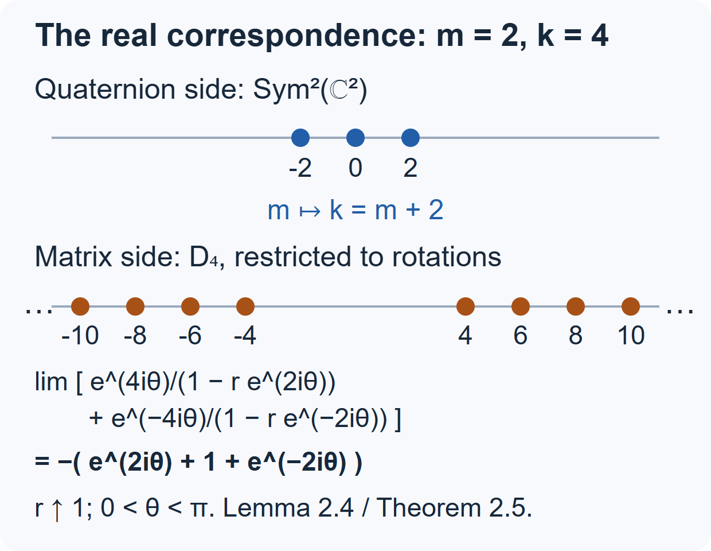
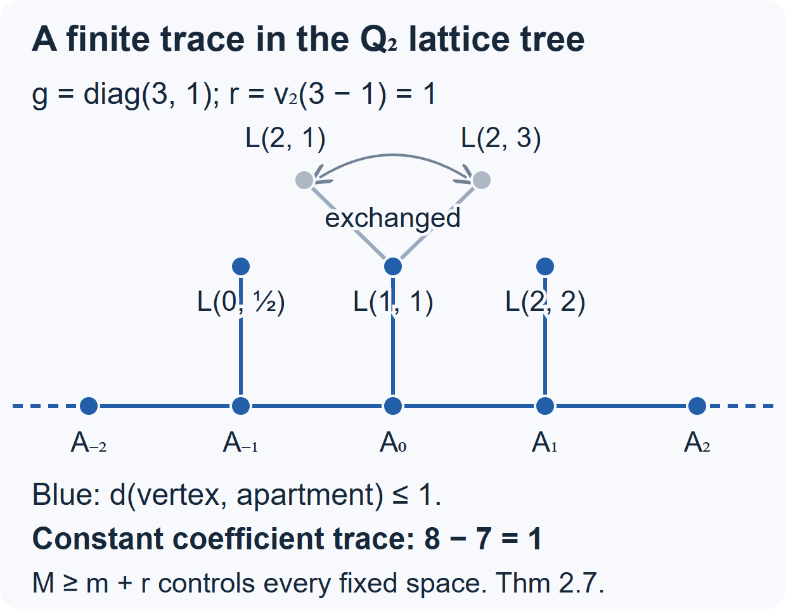
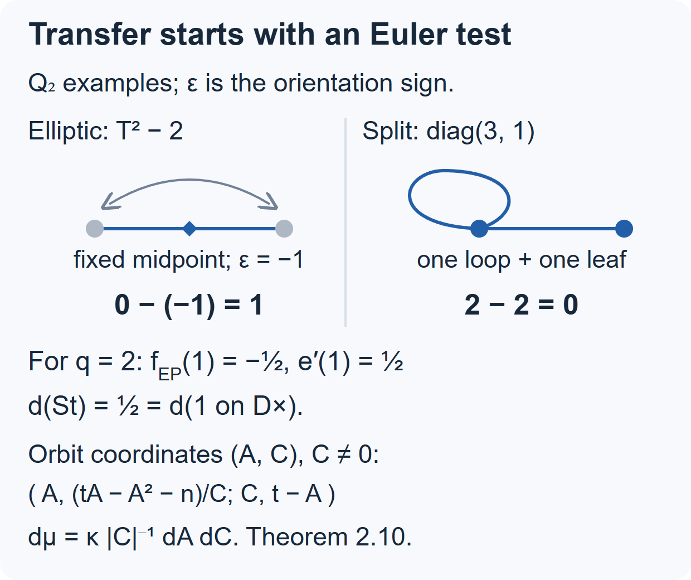
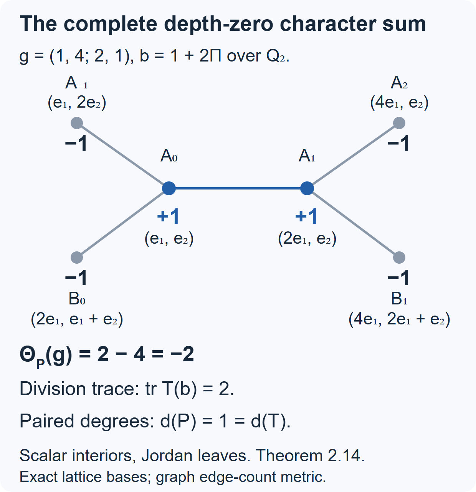

The Jacquet–Langlands correspondence
Written by GPT-6.1 Sol (OpenAI), October 2026. Public domain (CC0).
A quaternion division algebra has fewer conjugacy classes than a matrix algebra, but it retains exactly the regular elliptic ones. Its representations therefore offer a compact setting in which to study part of the spectrum of \(\mathrm{GL}_2\). We prove the local Jacquet–Langlands correspondence over every nonarchimedean local field and over \(\mathbb R\), with its elliptic character sign, twisted factors, formal degrees and smooth transfer. We then prove the global quaternion correspondence over \(\mathbb Q\) by a trace comparison, including quotient volumes, singular and continuous terms, residual characters and multiplicities. The calculations at levels eleven and thirty-seven connect the correspondence to explicit weight-two eigenforms. Section 6 states the distinct higher-degree extensions and their remaining proof scope.
We use Lesson 17 for quaternion groups and Brandt operators, Lesson 18 for their trace formula, and Lesson 15 for multiplicity one. A discrete series means an irreducible unitary representation square-integrable modulo the centre. Removing the unitary condition requires the term essentially discrete series: a character twist of a discrete series. At a finite place the discrete series of \(\mathrm{GL}_2\) are unitary Steinberg twists and unitary supercuspidals. At a real place they are the discrete series described in Lesson 11.
1. Match classes by their quadratic polynomial
Let \(F\) be a nonarchimedean local field, or \(\mathbb R\), and let \(D\) be the quaternion division algebra over \(F\). Set \(G=\mathrm{GL}_2(F)\), \(G'=D^\times\). An element of \(G\) is regular elliptic when its characteristic polynomial is separable and irreducible over \(F\). For \(b\in D\), use the reduced polynomial \[ P_b(T)=T^2-\operatorname{trd}(b)T+\operatorname{nrd}(b). \tag{1.1} \] Regular means that this polynomial has distinct roots over an algebraic closure. In positive characteristic, irreducibility alone does not ensure separability.
We import two algebraic facts. Every separable quadratic extension of a nonarchimedean local field embeds in its quaternion division algebra, by the quadratic-embedding lemma in Lesson 18, Section 5; it uses the written finite splitting criterion and the local Brauer invariant and degree-two restriction rule proved in Brauer groups of local and global fields, Theorem 24.2. The original reference is Voight, Corollary 13.4.5. Over \(\mathbb R\) this is the embedding \(\mathbb C\subset\mathbb H\). Any two embeddings of the same quadratic field are conjugate by an invertible element, by Skolem–Noether [NOE-HYP-04, Theorem 2.1]. The centralizer of that field in a quaternion algebra is the field itself [NOE-HYP-04, Theorem 3.1].
Theorem 1.1 — the matching bijection. Equality of characteristic polynomials gives a bijection \[ \{\text{regular elliptic classes in }G\} \longleftrightarrow \{\text{regular classes in }G'\}. \tag{1.2} \] For a matched pair \(g,b\), both centralizers identify with \(K^\times\), where \(K=F[T]/(P_g)\). Moreover \(\det g=\operatorname{nrd}b\) and \(\operatorname{tr}g=\operatorname{trd}b\).
Proof. Write a separable irreducible polynomial as \(P(T)=T^2-tT+n\). Its constant term is nonzero. If \(g\) has this polynomial, then for every nonzero \(v\in F^2\), the vectors \(v,gv\) are independent: dependence would give an eigenvalue in \(F\). In this basis, Cayley–Hamilton gives \[ g\sim\begin{pmatrix}0&-n\\1&t\end{pmatrix}. \tag{1.3} \] Thus \(P\) determines exactly one matrix class, and every such \(P\) occurs.
Embed \(K=F[T]/(P)\) in \(D\), and let \(b\) be the image of \(T\). Its minimal polynomial has degree two and divides (1.1), so (1.1) equals \(P\). Different embeddings give conjugate elements by Skolem–Noether. Conversely, if a noncentral regular \(b\in D\) had a reducible reduced polynomial, its distinct linear factors would satisfy \((b-r)(b-s)=0\). A division algebra has no zero divisors; hence \(b=r\) or \(b=s\), a contradiction. Therefore its polynomial is irreducible, and \(F[b]\) is a separable quadratic field. Two elements with the same polynomial define two embeddings of the same \(K\); Skolem–Noether conjugates one to the other.
Finally a matrix commuting with \(g\) is determined by its value on \(v\) in the cyclic basis \(v,gv\). Every such value is \((a+cg)v\), so its algebra centralizer is \(F[g]\). The quaternion centralizer is \(F[b]\) by the stated double-centralizer theorem. Taking units gives the assertion about group centralizers. The trace and norm identities are the coefficients of the common polynomial. \(\square\)
The matching includes the two conjugate generators of \(K\): its nontrivial automorphism extends by Skolem–Noether to conjugation in \(D\). There is no extra choice of a root in (1.2).
For measures, choose corresponding Haar measures on the centralizers \(K^\times\), and compatible group and quotient measures. The regular orbital integral is \[ O_g(f)=\int_{G_g\backslash G}f(x^{-1}gx)\,dx. \tag{1.4} \] One may multiply it by the square root of the Weyl discriminant. That discriminant is the same for matched pairs: both adjoint actions have the same two nontrivial eigenvalue ratios. Thus matching the normalized integrals or the integrals (1.4) amounts to the same condition, once the measures are paired.
The test-function transfer theorem, proved below at both finite and real places, says that a smooth Hecke test \(f'\) on \(D^\times\) has a test \(f\) on \(G\) whose regular elliptic orbital integrals match those of \(f'\), and whose regular split orbital integrals vanish. Transfer determines orbital integrals, rather than a unique function. Theorem 2.10 proves its existence over every nonarchimedean local field by explicit orbital coordinates, and Lemma 2.11 proves the scalar-value constraint for every matching pair. Theorem 2.22 proves the real construction and scalar identity, and Corollary 2.31 gives finite spectral transfer. Arthur, §25, Theorem 25.1(a), is a broader reference. Equation (1.2) supplies the regular classes on which to impose the conditions.
2. The local representation theorem and its sign
For an admissible representation \(\pi\), its character distribution is \[ f\longmapsto\operatorname{tr}\pi(f),\qquad \pi(f)=\int f(g)\pi(g)\,dg. \tag{2.1} \] At finite places Theorem 2.7 below proves, in either characteristic and every residue characteristic, that on the regular set (2.1) is integration against a conjugation-invariant locally constant function \(\Theta_\pi\). Proposition 2.8 gives the finite elliptic compact-type sum, and the division-side argument following it proves the ordinary trace statement for \(D^\times\). These results suffice for the regular character tests below. For real discrete series, Lemma 2.4 below proves the representing character function on the regular elliptic set directly from the disk model. Arthur, Theorem 25.1(b), is the broader real transfer reference.
Theorem 2.1 — local Jacquet–Langlands. Fix a unitary central character \(\omega:F^\times\to\mathbb C^\times\). There is a unique bijection \[ \operatorname{JL}_F: \operatorname{Irr}_\omega(D^\times) \xrightarrow{\ \sim\ } \operatorname{DS}_\omega(\mathrm{GL}_2(F)) \tag{2.2} \] characterized by \[ \Theta_{\operatorname{JL}_F(\tau)}(g) =-\Theta_\tau(b) \qquad(g\leftrightarrow b\text{ regular elliptic}). \tag{2.3} \] Here the source consists of irreducible unitary smooth representations at finite places, and irreducible unitary representations at the real place. The central character is preserved. Twisting is compatible: \[ \operatorname{JL}_F\bigl(\tau\otimes(\chi\circ\operatorname{nrd})\bigr) =\operatorname{JL}_F(\tau)\otimes(\chi\circ\det). \tag{2.4} \] Unitary \(\chi\) keeps (2.2) within discrete series. Allowing arbitrary smooth quasicharacters gives the corresponding bijection onto essentially discrete series.
Theorem 2.14 and Corollary 2.15 below prove the entire depth-zero local correspondence and all determinant/norm twists of that family, in every residue characteristic. Theorem 2.16 also proves the formal degree of every compact-induction model, and Proposition 2.18 computes both positive-level subgroup volumes in every residue characteristic. Sections 2.8–2.10 construct all positive-level images and prove the character identity, paired dimensions and bijection. Lemma 2.27 gives character integration through the singular set. For nonarchimedean \(F\) of characteristic zero, the exact references are Jacquet–Langlands, Theorem 15.1 and Proposition 15.5; Deligne, §3.2.8 gives the same sign and paired formal-degree normalization. Badulescu, Theorem 1.1 supplies the positive-characteristic theorem, including all residue characteristics. Arthur, Theorem 25.1(b) gives the tempered inner-form formulation, including the real place.
At a finite place, the one-dimensional cases are \[ \chi\circ\operatorname{nrd} \longmapsto\mathrm{St}\otimes(\chi\circ\det). \tag{2.5} \] In particular the trivial representation transfers to \(\mathrm{St}\). Higher-dimensional representations transfer to supercuspidals: the remaining discrete series are supercuspidal by Lesson 7, and (2.5) accounts for every special representation. This is a correspondence of isomorphism classes; it is not an identification of representation spaces or of dimensions.
At the real place, write \(\mathbb H^\times=\mathbb R_{>0}\mathrm{SU}(2)\). With trivial positive central character, let \(\tau_m\) restrict to \(\operatorname{Sym}^m(\mathbb C^2)\), \(m\ge0\). Then \[ \tau_m\longmapsto D_{m+2}. \tag{2.6} \] The right side is the discrete series for the full group \(\mathrm{GL}_2(\mathbb R)\). On the positive-determinant component it contains the holomorphic and antiholomorphic ladders; negative determinant exchanges them. The common value on \(-1\) is \((-1)^m=(-1)^{m+2}\), and positive central twists must also agree. Thus the real trivial representation transfers to weight-two discrete series, rather than to the finite-place representation in (2.5).
For example, on \(b=\cos\theta+i\sin\theta\), \(0<\theta<\pi\), the \(\mathrm{SU}(2)\) weights give \[ \Theta_{\tau_m}(b) =\sum_{j=0}^{m}e^{i(m-2j)\theta} =\frac{\sin((m+1)\theta)}{\sin\theta}. \tag{2.7} \] The character of \(D_{m+2}\) on the matching rotation is proved directly to be the negative of (2.7) in Theorem 2.5; it is not inferred from (2.3). There is no quaternion division algebra at a complex place.
2.1. Prove the trivial/Steinberg case directly
Proposition 2.2. For nonarchimedean \(F\), \[ \Theta_{\mathrm{St}}(g)=-1 \qquad(g\text{ regular elliptic}). \tag{2.8} \]
Proof. The unnormalized induced representation \(M=C^\infty(\mathbb P^1(F))\) has the exact sequence \[ 0\longrightarrow\mathbf1\longrightarrow M \longrightarrow\mathrm{St}\longrightarrow0. \tag{2.9} \] This is the exceptional induction sequence proved in Lesson 7, Theorem 4.2. An elliptic element fixes no point of \(\mathbb P^1(F)\): a fixed line would give an eigenvalue in \(F\).
Let \(f\) have compact support \(S\) contained in the regular elliptic set. Put \(X=\mathbb P^1(F)\). The compact set \[ \{(x,gx):x\in X,\ g\in S\}\subset X\times X \] is disjoint from the diagonal. For each \(x\), choose a sufficiently small compact open neighborhood \(U_x\) so that no \(g\in S\) takes a point of \(U_x\) into \(U_x\). Such a neighborhood exists: otherwise successively smaller neighborhoods and compactness of \(S\) give a limit \(g\) fixing \(x\). A finite subcover, refined by all intersections and differences, gives a finite compact open partition with that same exclusion property.
Choose a compact open subgroup \(K\) for which \(f\) is bi-invariant and which preserves every cell of this partition. To obtain the latter condition, continuity of the action and compactness of each cell give a neighborhood of the identity preserving that cell; intersect the finitely many neighborhoods and choose a compact open subgroup inside. The \(K\)-orbits in \(X\) are open because \(K\) is open in the transitive group \(G\), and there are finitely many because \(X\) is compact. They refine the partition.
The image of \(M(f)\) lies in \(M^K\). In its basis of orbit indicators, a diagonal entry, evaluated at a representative \(x_i\) of its orbit \(C_i\), is \[ \int_G f(g)1_{C_i}(g^{-1}x_i)\,dg=0. \] Indeed \(g^{-1}x_i\in C_i\) would put a point and its image under \(g\) in the same partition cell. Hence \(\operatorname{tr}M(f)=0\). Taking \(K\)-invariants is exact by compact averaging, so traces add in (2.9). On constants the trace is \(\int f\). Therefore \[ \operatorname{tr}\mathrm{St}(f)=-\int_G f(g)\,dg. \] The character function is locally constant on the regular set. Testing on arbitrarily small compact open neighborhoods of each elliptic regular element proves (2.8). The trivial character of \(D^\times\) is one, so this proves (2.3) for the trivial representation without assuming the full correspondence. \(\square\)
2.2. Prove the real correspondence from the disk model
The real case of Theorem 2.1 can be proved within the models of Lesson 11, without assuming a character-transfer theorem. We give the square-integrability exclusion as well as the character calculation: constructing some discrete series would not by itself prove surjectivity.
Lemma 2.3 — the real square-integrable list. Among the irreducible admissible unitary representations of the full real group, the square-integrable representations modulo the centre are precisely \[ D_k\otimes|\det|^{i\lambda/2},\qquad k\ge2,\quad\lambda\in\mathbb R. \tag{2.10} \] Here a positive scalar \(aI\) acts as \(a^{i\lambda}\), and \(-I\) acts as \((-1)^k\).
Proof. Lesson 11, Sections 3 and 4, proves the admissible classification, the unitary list and its Hilbert models. Its disk calculation proves that every fixed pair of monomials in \(D_k^+\) has coefficient bounded by a constant times \(\cosh(u/2)^{-k}\) on the Cartan element \(a_u=\operatorname{diag}(e^{u/2},e^{-u/2})\), \(u\ge0\). The radial Haar density modulo the centre is a constant times \(\sinh u\,du\). Consequently these coefficients are square-integrable for \(k>1\). The same calculation proves that \(D_1\) has no nonzero square-integrable coefficient. We must still exclude the principal and complementary series in the unitary list.
Use the compact induced model (3.1) of Lesson 11, with its parameter \(s\) and its parity \(\epsilon\). A central unitary twist does not change the absolute value of a coefficient modulo the centre. Select the weight \(n=0\) for even parity and \(n=1\) for odd parity, and normalize its vector to norm one. Since distinct compact weights are orthogonal in every invariant Hilbert norm, its diagonal coefficient is the \(n\)-th Fourier coefficient in the compact model, including for the complementary series.
Put \(c=\cosh(u/2)\) and \(r=\tanh(u/2)\). The bottom row of \(r_\theta a_u\) is \((-e^{u/2}\sin\theta,e^{-u/2}\cos\theta)\). Its squared length is \[ D=e^u\sin^2\theta+e^{-u}\cos^2\theta =c^2|1-r e^{2i\theta}|^2. \] The compact angle \(\phi\) in its upper-triangular-times-rotation decomposition satisfies \[ e^{i(\phi-\theta)} =\frac{1-r e^{-2i\theta}}{|1-r e^{2i\theta}|}. \] Inserting this and the factor \(D^{-(1+s)/2}\) from normalized induction gives the coefficient \[ \begin{aligned} \varphi_n(s,u) &=\frac{c^{-1-s}}{2\pi}\int_0^{2\pi} (1-r e^{2i\theta})^{-(1+s+n)/2} (1-r e^{-2i\theta})^{-(1+s-n)/2}\,d\theta\\ &=c^{-1-s}\,{}_2F_1\left(\frac{1+s+n}{2}, \frac{1+s-n}{2};1;r^2\right). \end{aligned} \tag{2.11} \] The branches in the integral are the power-series branches at \(r=0\). For \(r<1\), both binomial series converge absolutely and uniformly in \(\theta\); integrating selects their equal exponents. This proves the second equality directly from \({}_2F_1(a,b;1;x)=\sum_{j\ge0}(a)_j(b)_j x^j/(j!)^2\).
We record the continuation needed at \(r=1\), with its derivation. This series solves \[ x(1-x)y''+[1-(a+b+1)x]y'-ab y=0. \] When \(a+b=1+s\) and \(s\notin\mathbb Z\), its two solutions at \(x=1\), normalized by their leading terms, are \[ {}_2F_1(a,b;1+s;1-x),\qquad (1-x)^{-s}{}_2F_1(1-a,1-b;1-s;1-x). \] Substitution verifies the differential equation, and their distinct exponents make them independent. Their coefficients in the solution normalized at zero are \[ A=\frac{\Gamma(-s)}{\Gamma(1-a)\Gamma(1-b)}, \qquad B=\frac{\Gamma(s)}{\Gamma(a)\Gamma(b)}. \tag{2.12} \] Here is a way to establish these constants, rather than assume a connection formula. Expanding \((1-xt)^{-a}\) in the beta integral gives \[ {}_2F_1(a,b;1;x) =\frac{1}{\Gamma(b)\Gamma(1-b)} \int_0^1 t^{b-1}(1-t)^{-b}(1-xt)^{-a}\,dt \] first for \(0<\Re b<1\). If \(\Re(1-a-b)>0\), its value at \(x=1\) is the beta integral \(\Gamma(1-a-b)/(\Gamma(1-a)\Gamma(1-b))\). Absolute convergence of the defining series at one extends this value holomorphically throughout that half-space in \((a,b)\). It gives \(A\) when \(\Re s<0\), since the second local solution then tends to zero. Substitution in the differential equation and uniqueness of its analytic solution at zero also give Euler's transformation \[ {}_2F_1(a,b;1;x)=(1-x)^{-s} {}_2F_1(1-a,1-b;1;x). \] The same value-at-one argument applied to the right side gives \(B\) when \(\Re s>0\). The coefficients of the two local solutions depend meromorphically on the parameters: this follows by solving the two-by-two system of their values and derivatives at any interior point. Analytic continuation therefore proves both expressions (2.12) for every nonintegral \(s\). This also covers \(n=1\), where an Euler integral with the original parameters alone would not cover both half-planes.
Since \(1-r^2=c^{-2}=4e^{-u}(1+O(e^{-u}))\), equations (2.11)–(2.12), and the power series of the local solutions, now give \[ \varphi_n(s,u)=e^{-u/2}\left(C_n(s)e^{-su/2} +C_n(-s)e^{su/2}\right) +O\left(e^{-(3-|\Re s|)u/2}\right), \tag{2.13} \] for fixed nonintegral \(s\), where the gamma duplication identity simplifies the constants to \[ C_0(s)=\frac{\Gamma(-s/2)}{\sqrt\pi\,\Gamma((1-s)/2)}, \qquad C_1(s)=\frac{\Gamma((1-s)/2)}{\sqrt\pi\,\Gamma(1-s/2)}. \tag{2.14} \] All error estimates here are ordinary convergent-series estimates at \(1-r^2=0\); no boundary interchange in (2.11) is needed.
For a principal series, \(s=it\), \(t\ne0\). The gamma function has no zeros, and none of the arguments in (2.14) is a pole; equivalently this follows from the Euler product for \(1/\Gamma\). Thus both coefficients are nonzero. They are complex conjugates. The integral over \([0,T]\) of the squared absolute value of \(C_n(it)e^{-itu/2}+C_n(-it)e^{itu/2}\) equals \(2|C_n(it)|^2T+O(1)\). Multiplying (2.13) squared by \(\sinh u\) changes this by an integrable error and a factor tending to \(1/2\). The coefficient is not square-integrable.
At \(s=0\) in even parity, the poles \(C_0(s)=-2/(\pi s)+O(1)\) and \(C_0(-s)=2/(\pi s)+O(1)\) coalesce. Taking the limit in the convergent local expansions gives \[ \varphi_0(0,u)=e^{-u/2}\left(\frac{2u}{\pi}+O(1)\right). \tag{2.15} \] Indeed the pole parts in (2.13) combine as \(4\sinh(su/2)/(\pi s)\); subsequent series terms are bounded by \(O((1+u)e^{-u})\) inside the parentheses. This coefficient is again not square-integrable. Odd parity at \(s=0\) is \(D_1\), already excluded by the disk calculation.
For a complementary series choose \(0<s<1\), using the equivalence of the parameters \(s\) and \(-s\) proved in Lesson 11. It has even parity. The coefficient of the slower term in (2.13) is \[ C_0(-s)=\frac{\Gamma(s/2)}{\sqrt\pi\,\Gamma((1+s)/2)}>0. \] Thus \(|\varphi_0(s,u)|^2\sinh u\) grows as a positive constant times \(e^{su}\). A unitary finite-dimensional member of the real list is one-dimensional, and its coefficient has constant absolute value; the group modulo the centre has infinite volume, so it too is excluded.
For completeness, a nonintegrable coefficient of the chosen compact weight excludes the existence of any nonzero square-integrable coefficient. In an irreducible unitary representation every nonzero vector is cyclic. If \(\langle\pi(g)v,w\rangle\) were a nonzero square-integrable coefficient, choose translates of \(v,w\) whose projections onto the selected one-dimensional compact weight are nonzero. Such translates exist by cyclicity. The two compact projections express the new coefficient as left and right compact averages of translates of the old one. These operations preserve \(L^2\) by Minkowski's inequality. The new coefficient is a nonzero scalar multiple of \(\varphi_n\), contradicting the calculations above. For the full group, translates may use either component; its compact weight spaces are still one-dimensional in the principal and complementary models. The Haar integral on the positive component already diverges. Together with the full unitary list of Lesson 11, this proves (2.10). \(\square\)
Lemma 2.4 — the disk trace on the elliptic set. Write \(D_k^+\), \(k\ge2\), for the positive ladder on \(\mathrm{SL}_2(\mathbb R)\), with rotation weights \(k+2j\), \(j\ge0\). On its regular elliptic set the character distribution is represented by the smooth function which, at a rotation, is \[ \Theta_k^+(r_\theta)=\frac{e^{ik\theta}}{1-e^{2i\theta}}, \qquad\theta\notin\pi\mathbb Z. \tag{2.16} \] The negative ladder has the same formula with \(\theta\) replaced by \(-\theta\).
Proof. We use precisely the disk Hilbert space and inverse-pullback action constructed in Lesson 11, Section 4.1. Its orthonormal basis and action are \[ e_j(z)=\sqrt{\frac{(k)_j}{j!}}z^j,\qquad \sigma_k(g)f(z)=j_g(z)^{-k}f(\phi_g(z)), \] where \(\phi_g\) is the disk automorphism associated with \(g^{-1}\) and \(j_g(z)\) is its linear denominator. The multiplier has no zero or pole in the disk. For \(0<r<1\), the dilation operator \[ R_r e_j=r^j e_j,\qquad (R_r f)(z)=f(rz), \qquad \|R_r\|_1=(1-r)^{-1} \tag{2.17} \] is trace class. In particular \(R_r\sigma_k(g)\) is trace class. It is weighted composition with \(\Psi_{r,g}(z)=\phi_g(rz)\) and weight \(w_{r,g}(z)=j_g(rz)^{-k}\).
The map \(\Psi_{r,g}\) has a unique fixed point \(z_{r,g}\) in the disk. To see this, use the complete hyperbolic disk metric. A disk automorphism is an isometry, whereas multiplication by \(r\) has hyperbolic differential norm \[ \frac{r(1-|z|^2)}{1-r^2|z|^2}\le r<1. \] The contraction theorem gives the fixed point. Conjugate weighted composition by a unitary disk automorphism taking that fixed point to zero. The new symbol fixes zero, its derivative there is \(\Psi_{r,g}'(z_{r,g})\), and its new weight at zero is \(w_{r,g}(z_{r,g})\); the conjugating multipliers cancel at a fixed point. The diagonal coefficient on \(e_j\) is therefore \(w_{r,g}(z_{r,g})\Psi_{r,g}'(z_{r,g})^j\). Trace invariance under unitary conjugacy and the absolute convergence of a trace-class diagonal give \[ \operatorname{tr}(R_r\sigma_k(g)) =\frac{j_g(rz_{r,g})^{-k}} {1-r\phi_g'(rz_{r,g})}. \tag{2.18} \] The denominator is nonzero since the fixed-point derivative has absolute value at most \(r\).
If \(g\) is regular elliptic, \(\phi_g\) has an interior fixed point \(z_g\) and its derivative there differs from one. The implicit function theorem applied to \(z-\phi_g(rz)=0\) proves that \(z_{r,g}\) tends to \(z_g\) smoothly as \(r\uparrow1\), uniformly when \(g\) ranges over a compact subset of the regular elliptic set. Uniqueness of the contraction fixed point identifies this local solution with \(z_{r,g}\). Thus (2.18) has a uniform smooth limit on each such compact subset. Conjugating \(g\) to \(r_\theta\) computes this limit: at zero its multiplier is \(e^{ik\theta}\), and its symbol derivative is \(e^{2i\theta}\). The limiting expression is conjugation invariant because a conjugating multiplier again cancels at the fixed point. This proves the candidate function (2.16).
It remains to identify the limit with the character distribution, rather than a merely formal sum of weights. For \(f\in C_c^\infty(\mathrm{SL}_2(\mathbb R))\), integrating by parts in the left and right rotation variables gives, for every \(N\), \[ |\langle\sigma_k(f)e_j,e_i\rangle| \le C_{f,N}(k+2i)^{-N}(k+2j)^{-N}. \tag{2.19} \] The constant can be taken to be the \(L^1\)-norm of the corresponding derivatives of \(f\): coefficients of unitary operators between unit vectors are at most one. For \(N>1\) the matrix entries are absolutely summable. Its sum of rank-one matrix operators converges in trace norm and agrees with \(\sigma_k(f)\) on all basis vectors. Hence \(\sigma_k(f)\) is trace class.
The bounded operators \(R_r\) tend strongly to the identity and have norm at most one. Finite-rank approximation of a trace-class operator then gives \(\|R_r\sigma_k(f)-\sigma_k(f)\|_1\to0\). For each fixed \(r<1\), the trace-class bound in (2.17) permits integration of (2.18) against \(f\). If the support of \(f\) is regular elliptic, its uniform limit just proved gives \[ \operatorname{tr}\sigma_k(f) =\lim_{r\uparrow1}\int f(g)\operatorname{tr}(R_r\sigma_k(g))\,dg =\int f(g)\Theta_k^+(g)\,dg. \tag{2.20} \] This proves the assertion as a distribution on the entire regular elliptic set. Complex conjugation gives the negative ladder. \(\square\)
Theorem 2.5 — real local Jacquet–Langlands, proved. The real case of (2.2)–(2.4) is the unique map \[ a^{i\lambda}\operatorname{Sym}^m(\mathbb C^2) \longmapsto D_{m+2}\otimes|\det|^{i\lambda/2}, \qquad a>0,\quad m\ge0. \tag{2.21} \] In particular it includes every real discrete series in the stated admissible category, with both ladders for the full group.
Proof. An irreducible unitary representation of a compact group is finite-dimensional: averaging a rank-one orthogonal projection over the group gives a nonzero positive compact operator commuting with the representation; a positive eigenspace is finite-dimensional and invariant, hence is the entire irreducible representation. Norm continuity of the translated rank-one projections makes this average a compact operator, and its trace is one, so it is nonzero. The positive scalar group in \(\mathbb H^\times\) acts by a character, by the unitary Schur lemma. Its \(\mathrm{SU}(2)\) restriction is irreducible, since that character is scalar.
For clarity, the compact classification used here follows from the finite-dimensional \(\mathfrak{sl}_2\) calculation. Choose a highest-weight vector \(v\) of weight \(m\). Then \(EF^jv=j(m-j+1)F^{j-1}v\). If \(F^Nv\ne0\) and \(F^{N+1}v=0\), this identity forces \(m=N\ge0\); the span of these vectors is invariant and hence is the whole representation. It is \(\operatorname{Sym}^m(\mathbb C^2)\), with weights \(m,m-2,\ldots,-m\). A connected group representation is determined by its derivative, so this also identifies the \(\mathrm{SU}(2)\) representation. Its value at \(-1\) is \((-1)^m\).
Lemma 2.3 now makes (2.21) a bijection preserving the entire central character. For a matching elliptic pair, remove its positive scalar \(a\) and conjugate its unit part to \(\cos\theta+i\sin\theta\), or to the matching rotation. By Lemma 2.4 and the two-ladder decomposition in Lesson 11, \[ \begin{aligned} \Theta_{D_k}(r_\theta) &=\frac{e^{ik\theta}}{1-e^{2i\theta}} +\frac{e^{-ik\theta}}{1-e^{-2i\theta}}\\ &=-\frac{\sin((k-1)\theta)}{\sin\theta} =-\sum_{j=0}^{k-2}e^{i(k-2-2j)\theta}. \end{aligned} \tag{2.22} \] The same integration-by-parts proof gives trace-class test operators on the full real group, using its two sets of compact weights. On the negative-determinant component the representation exchanges the ladders, so the smoothed diagonal trace is zero; on the positive component it is the sum used in (2.22). A positive scalar multiplies the character by \(a^{i\lambda}\). Equation (2.22) is exactly the negative of (2.7) with \(m=k-2\), as required. The distinct Laurent polynomials in (2.22) show uniqueness among the discrete series with the fixed positive central character.
Twisting on either side multiplies the matched character by the same value \(\chi(\operatorname{nrd}b)=\chi(\det g)\). A sign determinant twist is isomorphic on the full two-ladder representation, as proved in Lesson 11, and \(\operatorname{nrd}\) on \(\mathbb H^\times\) is positive. This proves (2.4), and arbitrary quasicharacter twists give the essentially discrete-series extension. \(\square\)

Figure 1. For \(m=2\), the compact character has weights \(-2,0,2\), whereas \(D_4\) has the two infinite ladders starting at \(\pm4\). Equation (2.17) makes their traces convergent before passing to the limit. Equation (2.22), for \(0<\theta<\pi\), leaves the negative of the three compact weights. The displayed ladders are truncated schematically; the trace identity is exact. The mechanism and analytic justification are Lemma 2.4 and Theorem 2.5, using the disk action proved in Lesson 11, Section 4.1. A human-source comparison for that realization is Gazeau–del Olmo–Pejhan, Section II, equations (8)–(9), with \(2\eta=k\); their opposite rotation convention must be reversed when comparing their equation (22).
The real formal degrees can also be compared with explicit measures. Give each component of \(G/Z\) the Cartan integration formula with probability measures on its two compact angular variables and radial density \(\sinh u\,du\). Give the compact group \(\mathbb H^\times/\mathbb R^\times\) volume \(2\). For a unit vector of lowest positive weight in \(D_k\), the coefficient on \(a_u\) is \(\cosh(u/2)^{-k}\) and it is zero on the other component. Hence \[ \int_{G/Z}|\langle D_k(g)v,v\rangle|^2\,dg =\int_0^\infty\sinh u\,\cosh(u/2)^{-2k}\,du =2\int_1^\infty x^{-k}\,dx=\frac{2}{k-1}. \tag{2.23} \] This does give the formal degree, rather than just one coefficient norm. Define the coefficient map \(T\) into the centrally covariant \(L^2(G/Z)\) space on its maximal domain, consisting of vectors whose coefficients are square-integrable. This domain contains the dense finite-weight vectors. The map is closed: an \(L^2\)-convergent sequence has an almost-everywhere convergent subsequence, whereas convergence of the input vectors gives pointwise convergence of their coefficients. Its domain is invariant under the group, because translation preserves the coefficient norm, and the closed map intertwines the unitary actions. The spectral projections of its positive operator \(T^*T\) commute with the irreducible representation, so it is scalar; the norm of the coefficient in (2.23) determines that scalar. Inversion of \(g\) exchanges the two vectors in the absolute-square integral, giving the same constant times the squared norm of an arbitrary second vector. This proves the full Schur orthogonality constant. On the compact quaternion quotient the finite-dimensional Schur average gives coefficient norm \(2/(m+1)\). Thus these explicit measures give \[ d(D_k)=\frac{k-1}{2}=d(\operatorname{Sym}^{k-2}\mathbb C^2). \tag{2.24} \] This calculation concerns formal degrees. At finite places Lemma 2.11 below proves the identity-value relation for every matching pair of tests. Its real counterpart remains the scalar-germ transfer input in Section 3.2.
2.3. Prove the finite-place character theorem on the regular set
We now prove the regular-set character statement used in (2.1), for every nonarchimedean local field, including residue characteristic two and positive characteristic. This proof concerns the restriction of the distribution to the regular set. Section 2.4 separately proves smooth orbital transfer and the scalar orbital germ. It does not identify the character distribution globally across the singular set.
Write \(\mathcal O\) for the valuation ring, \(\mathfrak p=(\varpi)\), and \(v(\varpi)=1\). The lattice tree \(\mathcal T\) has vertices the homothety classes of rank-two \(\mathcal O\)-lattices in \(F^2\). Two vertices are adjacent if representatives satisfy \(\varpi L\subset L'\subset L\), with \(L'/\varpi L\) a line over the residue field. Each vertex has \(q+1\) neighbors. The metric is the number of edges in a path, rather than a Euclidean metric on a drawing.
Here are the elementary tree facts we will use. Elementary divisors, proved by the row and column elimination in Lesson 6, equation (5.4), put any pair of vertices in the form \([\mathcal O^2]\), \([\mathcal O\varpi^N e_1+\mathcal Oe_2]\), \(N\ge0\). Their path consists of the intermediate exponents. At a vertex other than the initial one, reduction of the elementary-divisor basis modulo \(\mathfrak p\) identifies exactly one neighbor whose distance to the initial vertex decreases; the other \(q\) increase it. Induction gives the unique path, so the graph is a locally finite tree. Its ends are \(\mathbb P^1(F)\): a ray starting at \([\mathcal O^2]\) specifies compatible primitive line data modulo every \(\mathfrak p^N\), and completeness gives its unique limiting line. Conversely a primitive vector on a line gives these data and a ray. The usual action of \(G\) on the ends is the action on lines; it is continuous. The tree with its ends is compact after adjoining the ends: a sequence escaping every finite ball has a subsequence with each finite initial path fixed, by a diagonal selection in the finite branching tree.
For a vertex \(x=[L]\), and an integer \(m\ge1\), set \[ U_x(m)=1+\mathfrak p^m\operatorname{End}_{\mathcal O}(L), \qquad e_x=\frac{1_{U_x(m)}}{\operatorname{vol}U_x(m)}, \qquad V_x=e_xV. \tag{2.25} \] The order, group and average do not depend on the representative of the homothety class. We use the same symbol \(e_x\) for the convolution operator on a representation. For an edge \(a=\{x,z\}\), put \(e_a=e_xe_z\) and \(V_a=e_aV\).
Lemma 2.6 — the exact tree complex and its finite projection. For any smooth representation, the averages at adjacent vertices commute. If \(z\) is the first neighbor of \(x\) on the path to \(y\ne x\), then \[ e_xe_z=e_ze_x,\qquad e_xe_ze_y=e_xe_y. \tag{2.26} \] For a finite subtree \(\Sigma\), the operator \[ u_\Sigma=\sum_{x\in\Sigma^{(0)}}e_x -\sum_{a\in\Sigma^{(1)}}e_a \tag{2.27} \] is an idempotent with image \(S_\Sigma=\sum_{x\in\Sigma^{(0)}}V_x\), and acts as the identity on that image. With an arbitrary orientation for each edge, the sequence \[ 0\longrightarrow\bigoplus_{a\in\Sigma^{(1)}}V_a \xrightarrow{\partial}\bigoplus_{x\in\Sigma^{(0)}}V_x \xrightarrow{\mathrm{sum}}S_\Sigma\longrightarrow0 \tag{2.28} \] is exact. The edge boundary is its inclusion at the terminal vertex minus its inclusion at the initial vertex. If an irreducible smooth representation has \(V_{x_0}\ne0\), the sum of all \(V_x\) is the entire representation.
Proof. Conjugate a pair and its path to \(x=[\mathcal O^2]\), \(z=[t_1\mathcal O^2]\), \(y=[t_N\mathcal O^2]\), where \(t_j=\operatorname{diag}(\varpi^j,1)\) and \(N\ge1\). In this basis \(U_z(m)\) has diagonal entries in \(1+\mathfrak p^m\), upper entries in \(\mathfrak p^{m+1}\), and lower entries in \(\mathfrak p^{m-1}\). It is contained in \(\mathrm{GL}_2(\mathcal O)\), so it normalizes \(U_x(m)\). Conversely \(t_1^{-1}U_x(m)t_1\) is integral, so \(U_x(m)\) normalizes \(U_z(m)\). Their product is therefore a compact subgroup, and either order of averaging is its normalized average. Its fixed space is \(V_x\cap V_z\), which proves the first identity and the assertion about \(V_a\).
Gaussian elimination in \(U_z(m)\) factors an element into upper root, diagonal and lower root elements with precisely those entry bounds. The upper root and diagonal elements lie in \(U_x(m)\); the lower root lies in \(U_y(m)\), because \(\mathfrak p^{m-1}\subset\mathfrak p^{m-N}\). The first two act trivially on \(e_xe_yV\). The last also acts trivially there: it normalizes \(U_x(m)\), so commutes with \(e_x\), and it acts trivially on \(e_yV\). Thus \(e_ze_xe_y=e_xe_y\). The adjacent commutation gives the second identity in (2.26). These arguments are identities of compact averaging operators and do not assume unitarity. Inverting the compact measures gives the reversed identity \(e_ye_ze_x=e_ye_x\).
Prove (2.27) by adding a leaf \(x\), with neighbor \(z\), to a smaller subtree \(\Sigma'\). Put \(p_x=e_x(1-e_z)\). Adjacent commutation makes \(p_x\) an idempotent. For every vertex \(y\in\Sigma'\), equation (2.26) gives \(p_xe_y=e_yp_x=0\), and the same holds with each edge average of \(\Sigma'\). Hence \(u_{\Sigma'}p_x=p_xu_{\Sigma'}=0\) and \(u_\Sigma=u_{\Sigma'}+p_x\) is an idempotent. It is the identity on every old \(V_y\). On \(V_x\), use \(e_xe_zV\subset V_z\), where \(u_{\Sigma'}\) is the identity, and \(u_{\Sigma'}p_x=0\), to obtain \(u_\Sigma e_x=e_x\). Every summand in (2.27) has image in \(S_\Sigma\), proving the claimed image. This starts with a one-vertex tree.
For exactness, suppose finitely many vertex vectors sum to zero. At a leaf \(x\), apply \(p_x\) to this sum; every other vertex term is killed, so \(p_xv_x=0\). Thus \(v_x=e_zv_x\in V_x\cap V_z=V_a\). Subtract the boundary of this edge vector, with the appropriate sign, to remove the leaf term and transfer it to \(z\). Repeat on the smaller tree. This proves exactness in the middle. An edge cycle is zero by inspecting a leaf, where its unique incident edge vector must vanish, and then removing the leaf. Surjectivity is the definition of \(S_\Sigma\). Finally a nonzero \(V_{x_0}\) generates an irreducible representation; its translates lie in the corresponding \(V_{gx_0}\). \(\square\)
Every irreducible smooth representation permits an \(m\ge1\) with \(V_{[\mathcal O^2]}\ne0\), by smoothness of a nonzero vector. Admissibility, proved in Lesson 6, Theorem 5.4, makes all the vertex and edge spaces finite-dimensional. We fix such an \(m\) from now on. For a general coefficient-system comparison, see Meyer–Solleveld, Definition 2.1, Lemma 2.6 and Theorem 2.12. The rank-two group identities and leaf proof needed here have just been supplied explicitly.
Theorem 2.7 — finite-place regular characters, proved. For every irreducible smooth complex representation \(\pi\) of \(\mathrm{GL}_2(F)\), the character distribution on the regular set is integration against a unique conjugation-invariant locally constant function \(\Theta_\pi\). This holds in either characteristic, with no restriction on residue characteristic.
Proof. First consider an element compact modulo the centre. It fixes a vertex or an edge midpoint of \(\mathcal T\). For split eigenvalues of equal absolute value this follows by scaling them to units in a diagonal basis. For an irreducible quadratic polynomial, its field \(E=F[g]\) has the integral lattice \(\mathcal O_E\). Multiplication by a unit preserves that lattice; if the ramification index is two, an element of odd \(E\)-valuation instead exchanges the lattice classes of \(\mathcal O_E\) and \(\mathfrak p_E\). Scaling by \(F^\times\) reduces the valuation to these cases. This is also the compact-adjoint criterion of Lesson 10, Lemma 7.1.
Choose a fixed point \(c\) that is a vertex or an edge midpoint, and let \(C=G_c\) be its stabilizer. This is an open subgroup, compact modulo the centre. Finite balls \(\Sigma_N\) about \(c\), including their edges, are invariant under \(C\). If \(f\) is a compactly supported smooth function in \(C\), its operator has finite rank by admissibility. Its image lies in some \(S_{\Sigma_{N_0}}\), because Lemma 2.6 exhausts \(V\). For \(N\ge N_0\), the exact finite sequence (2.28) is equivariant for \(C\); traces add along it. Therefore \[ \begin{aligned} \operatorname{tr}\pi(f)&=\int_C f(h)\,T_N(h)\,dh,\\ T_N(h)&=\sum_{\substack{x\in\Sigma_N^{(0)}\\hx=x}} \operatorname{tr}(\pi(h)|_{V_x}) -\sum_{\substack{a\in\Sigma_N^{(1)}\\ha=a}} \varepsilon(h,a)\operatorname{tr}(\pi(h)|_{V_a}). \end{aligned} \tag{2.29} \] Here \(\varepsilon(h,a)=1\) if both endpoints are fixed and \(-1\) if they are exchanged. An edge orientation contributes that sign to the chain action. For a cell moved to a different cell the diagonal block on the direct sum is zero. This proves (2.29) without a character theorem. The threshold \(N_0\) may initially depend on \(f\).
For a regular elliptic \(g\), the set of its fixed vertices and edges is finite. Otherwise their geometric fixed-point set contains a ray, since it is convex in a locally finite tree; its end would be an \(F\)-eigenline. Such a line cannot exist for an elliptic element. This fixed-cell set is uniformly bounded on a neighborhood of \(g\). Indeed, if \(g_j\to g\) fixed cells escaping every finite ball, a subsequence of their centres would converge to an end \(\ell\). Continuity of the action on the tree and its ends gives \(g\ell=\ell\), again an eigenline. This reasoning also applies to inverted edges, by using their midpoints. A neighborhood of \(g\) consists of elliptic elements: the set of matrices fixing a line is closed, since \(\mathbb P^1(F)\) is compact. Shrink it to be regular as well and to lie in \(C\).
Within the resulting bounded ball, further shrinking makes the permutation of all cells constant and makes every relevant finite-dimensional matrix trace constant. For the latter, \(g^{-1}h\) may be taken in all the finitely many compact groups \(U_x(m)\) involved, so acts trivially on their fixed spaces; edge spaces are subspaces of their endpoint spaces. Thus for all sufficiently large \(N\), \(T_N\) is the same locally constant finite sum on this neighborhood. Equation (2.29), applied to arbitrary tests there, proves the character assertion at \(g\).
Compact split elements require more care: their fixed set is infinite, and an unqualified infinite vertex sum is not a character formula. After conjugation and a scalar translation, let \(g=\operatorname{diag}(a,b)\), \(a,b\in\mathcal O^\times\), \(a\ne b\). Put \(\delta=a/b\) and \(r=v(\delta-1)\ge0\). Let \(A\) be the diagonal apartment, with vertices \(A_n=[\mathcal O\varpi^ne_1+\mathcal Oe_2]\), \(n\in\mathbb Z\).
Every vertex has a unique presentation \[ L(n,x)=\mathcal O\varpi^ne_1+\mathcal O(e_2+xe_1), \qquad x\in F/\mathfrak p^n. \] To obtain it, scale the projection of a lattice to the second coordinate to \(\mathcal O\); its intersection with the first coordinate is \(\mathfrak p^ne_1\), and a lift of \(e_2\) gives \(x\) modulo that ideal. For \(x=0\), this is \(A_n\). Otherwise choose its representative with \(v(x)=l<n\). The successive lattices \(L(j,x)\), \(l\le j\le n\), give its path from \(A_l\), with the first step off the apartment. The two apartment directions at \(A_l\) are the coordinate lines, whereas this first step has both coordinates nonzero after scaling. Thus its distance from \(A\) is \(d=n-l\). Direct multiplication shows \[ gL(n,x)=L(n,x) \ \Longleftrightarrow\ (\delta-1)x\in\mathfrak p^n \ \Longleftrightarrow\ d\le r. \tag{2.30} \] Its fixed vertices are exactly the tube of radius \(r\) about \(A\); its fixed edges have both endpoints in that tube. There is no edge inversion, since the determinant valuation is even.
Consider \(t=\operatorname{diag}(1+u,1+w)\), with \(u,w\in\mathfrak p^M\), \(M\ge m+r\). In the basis \(\varpi^ne_1,e_2+xe_1\), its only off-diagonal entry is \((u-w)x\varpi^{-n}\), of valuation at least \(M-d\). Consequently \(t\in U_{L(n,x)}(m)\) for every vertex fixed by \(g\), and it is the identity on every corresponding edge space too. Require also \(M>r\). For all sufficiently small changes \(a',b'\) of the two eigenvalues, their ratio has the same \(r\), and \(\operatorname{diag}(a',b')=gt\) with such a \(t\). Equations (2.29)–(2.30) therefore give \[ T_N(\operatorname{diag}(a',b'))=T_N(g) \qquad\text{for every }N. \tag{2.31} \] The use of \(M\ge m+r\) is uniform along the infinite apartment.
Every sufficiently near matrix \(h\) is conjugate to such a diagonal matrix by an element of \(\mathrm{GL}_2(\mathcal O)\) near the identity. For completeness, write its monic characteristic polynomial as \(P\). Near \(a\), choose a radius \(\rho<|a-b|\) and shrink the matrix perturbation so that \(|P(a)|\le\rho|P'(a)|\) and \(|P'(a)|=|a-b|\). The equation for a root \(a+z\) is \(z=-P(a)/P'(a)-z^2/P'(a)\). On \(|z|\le\rho\) this map preserves the ball and strictly contracts it. Successive approximation gives a unique root there; the same argument near \(b\) gives the other root. Taking \(\rho\) arbitrarily small proves their continuous dependence. The projectors \((h-b')/(a'-b')\) and \((h-a')/(b'-a')\), applied to \(e_1,e_2\), then give an eigenbasis near the original one. This argument divides by \(a'-b'\), never by two, so it works in characteristic two. Conjugating by an integral element preserves every ball about \(A_0\) and transports all the fixed-vector spaces. Hence (2.31) holds on one neighborhood \(U\) of \(g\) in \(C=G_{A_0}\), for every \(N\).
Choose a test \(f_0\) supported in \(U\), with integral one. Equation (2.29) gives \(T_N(g)=\operatorname{tr}\pi(f_0)\) for all sufficiently large \(N\). Thus these constants stabilize, and do so uniformly on \(U\). For any other test \(f\) supported there, take \(N\) larger than both its finite-image threshold and the threshold for \(f_0\). Then (2.29) is the claimed integration against the same constant on \(U\). This establishes local constancy and the distributional identity at every compact split regular element, rather than only convergence of an averaged expression.
It remains to treat split elements with unequal absolute values. Supercuspidals have zero character distribution on a neighborhood of each such element by Lesson 10, Theorem 7.3. By the classification in Lesson 7, the other irreducibles are principal series, Steinberg twists and determinant characters. We supply the principal-series calculation on the entire regular set.
In the chart with representative \(\overline n(x)=\begin{pmatrix}1&0\\x&1\end{pmatrix}\) for the row line \((x,1)\), a normalized induced representation \(I(\mu_1,\mu_2)\) acts by weighted composition. For \(h=\begin{pmatrix}A&B\\C&D\end{pmatrix}\), put \[ \phi_h(x)=\frac{Ax+C}{Bx+D},\qquad w_h(x)=\mu_1\left(\frac{\det h}{Bx+D}\right) \mu_2(Bx+D)\left|\frac{\det h}{(Bx+D)^2}\right|^{1/2}. \tag{2.32} \] These formulas follow by multiplying \(\overline n(x)h\) and performing its upper-triangular-times-\(\overline n\) decomposition. Other charts give the same induced line bundle, with their usual transition multipliers.
A compactly supported smooth group test gives a locally constant integral kernel on each pair of small projective charts. To see this directly, in (2.32) use \(y=\phi_h(x)\) and \(C=(Bx+D)y-Ax\) as a group coordinate. With additive measures, Haar measure is a constant times \(|\det h|^{-2}\,dA\,dB\,dC\,dD\), and \(dC=|Bx+D|\,dy\). On a sufficiently small chart the denominator is nonzero and bounded away from zero over the compact group support. The resulting integrand is locally constant in \((x,y)\), uniformly over a compact parameter set. Integrating in \((A,B,D)\) gives the claimed kernel. Finitely many such charts cover \(\mathbb P^1(F)\). Refining their clopen partitions makes the kernel constant on each pair of cells; the matrix trace is therefore its diagonal integral, since each diagonal entry is the diagonal kernel value times the measure of its cell.
Near \(g=\operatorname{diag}(a,b)\), \(a\ne b\), only its two fixed projective points can contribute to that diagonal trace. On the compact complement of small neighborhoods of those points, \(g\) fixes no line, and the same exclusion holds for all sufficiently near \(h\). In the chart near zero the diagonal condition is \(C=Bx^2+(D-A)x\). Its derivative in \(x\) is \(D-A+2Bx\), of fixed nonzero absolute value on a sufficiently small neighborhood. Here the change of variables can be checked without a general inverse function theorem. Choose the ball about zero with radius \(\rho\) so that \(|B|\rho<|D-A|\). On it the equation \(C=(D-A)x+Bx^2\) is solved by the strict contraction \(x=C/(D-A)-Bx^2/(D-A)\). Differences satisfy \(|C(x)-C(y)|=|D-A|\,|x-y|\); successive approximation proves bijectivity onto the ball of radius \(|D-A|\rho\), and this exact scaling of subballs proves the Jacobian. Thus \(x\) is a unique coordinate for the corresponding \(C\)-ball. The Jacobian in the diagonal integral is consequently \[ \frac{|Bx+D|}{|D-A+2Bx|} =\frac{1}{|1-\phi_h'(x)|}, \tag{2.33} \] since at a fixed point \(\phi_h'(x)=(A-Bx)/(D+Bx)\). All these substitutions are in compact chart integrals. They remain valid in characteristic two, where the derivative term \(2Bx\) is simply zero. The chart at infinity gives the other fixed point. The two fixed-point multipliers and derivatives for the diagonal matrix are \(\mu_1(a)\mu_2(b)|a/b|^{1/2},a/b\) and \(\mu_1(b)\mu_2(a)|b/a|^{1/2},b/a\). Thus \[ \Theta_{I(\mu_1,\mu_2)}(\operatorname{diag}(a,b)) =\frac{\mu_1(a)\mu_2(b)+\mu_1(b)\mu_2(a)} {|1-a/b|^{1/2}|1-b/a|^{1/2}}. \tag{2.34} \] The same local eigenbasis argument as before proves that this function represents the distribution on a neighborhood, and is locally constant there. On the elliptic set there is no fixed projective point, so the diagonal kernel is zero and the principal-series character is zero.
Taking traces in the exact induced sequence (2.9), which is exact on every compact fixed space, gives the remaining explicit characters. In particular \[ \begin{aligned} \Theta_{\chi\circ\det}(h)&=\chi(\det h),\\ \Theta_{\mathrm{St}\otimes(\chi\circ\det)}(\operatorname{diag}(a,b)) &=\chi(ab)\left(\frac{|a|+|b|}{|a-b|}-1\right),\\ \Theta_{\mathrm{St}\otimes(\chi\circ\det)}(h) &=-\chi(\det h)\qquad(h\text{ regular elliptic}). \end{aligned} \tag{2.35} \] These expressions and supercuspidal support handle every noncompact split element. They also agree with the compact argument by uniqueness of a representing function: testing on arbitrarily small open sets identifies any two locally constant representatives. Conjugation invariance of the character distribution then gives conjugation invariance of the unique function. This proves the theorem on the entire regular set. \(\square\)

Figure 2. This is the complete ball of radius two about \(A_0\) in the \(q=2\) lattice tree. For \(g=\operatorname{diag}(3,1)\) over \(\mathbb Q_2\), \(r=v_2(3-1)=1\). The blue vertices are exactly those fixed by \(g\) in the displayed ball, by (2.30); the two gray depth-two vertices are exchanged. The apartment extends in both directions beyond the drawing. Distances count edges. For the trivial coefficient system the trace is \(8-7=1\), the fixed vertices minus the fixed edges in (2.29). For general representations their finite-dimensional traces replace these ones. The fixed-set calculation and the uniform bound \(M\ge m+r\), together with admissibility, are the mechanism of Theorem 2.7. For the general coefficient-system method, compare Meyer–Solleveld, Theorem 2.12 and Proposition 4.1; the illustration is independently drawn.
Proposition 2.8 — the finite elliptic compact-type character sum. Let \(\pi=\mathrm{c\!-\!Ind}_J^G\tau\), where \(J\) is open, contains the centre and is compact modulo the centre, and \(\tau\) is finite-dimensional. Assume \(\pi\) is irreducible. For a regular elliptic element \(g\), \[ \Theta_\pi(g)=\sum_{\substack{Jx\in J\backslash G\\xgx^{-1}\in J}} \operatorname{tr}\tau(xgx^{-1}). \tag{2.36} \] The sum is finite and is uniformly a finite sum on a neighborhood of \(g\). Every supercuspidal has this description by Lesson 10, Theorem 7.8, including residue characteristic two.
Proof. The compact group \(J/Z\) has a finite orbit on the vertices of the locally finite tree. The convex hull of that orbit is finite; its centre is a vertex or edge midpoint fixed by all of \(J\). Call it \(c_J\). The index \([G_{c_J}:J]\) is finite, since \(J\) is open and both groups contain \(Z\), while \(G_{c_J}/Z\) is compact.
If \(xgx^{-1}\in J\), then \(g\) fixes \(x^{-1}c_J\). The fixed vertices and edge midpoints for an elliptic element are finite and uniformly bounded on a neighborhood, as proved in Theorem 2.7. For each possible point, the fibre of \(Jx\mapsto x^{-1}c_J\) has at most \([G_{c_J}:J]\) elements: after selecting one \(x\) it is a translate of \(J\backslash G_{c_J}\). This proves both finiteness assertions. Membership in the open subgroup \(J\) and the finite-dimensional smooth trace of \(\tau\) are locally constant for this finite list.
The compact-induction space is the algebraic direct sum of copies of the space of \(\tau\), indexed by \(J\backslash G\). Right translation by \(h\) has a diagonal block at \(Jx\) exactly when \(xhx^{-1}\in J\), and that block is \(\tau(xhx^{-1})\). For a test supported in the chosen elliptic neighborhood only the uniformly finite list can contribute. Its integrated operator has finite rank by admissibility, so its trace is the integral of that finite diagonal sum. This is (2.36), identified with Theorem 2.7's representative. \(\square\)
On the division side no infinite-dimensional character analysis is needed. If a smooth irreducible representation of \(D^\times\) has a scalar central character, choose a nonzero vector fixed by an open subgroup \(U\). Compactness of \(D^\times/F^\times\) makes \(F^\times\backslash D^\times/U\) finite, so the orbit of that vector spans a finite-dimensional space. Irreducibility makes it the whole space. A common open stabilizer of a finite basis makes its ordinary trace function locally constant on all of \(D^\times\), and integrating its matrices gives its character distribution. This proves the division-side regular character statement too.
2.4. Construct finite-place transferred tests and their scalar values
We prove smooth test transfer over every nonarchimedean local field. The construction includes characteristic two. It uses an Euler test for the scalar part and an explicit orbital-coordinate lift for the remainder; no character correspondence or density theorem enters it. In the orbital-coordinate construction, elliptic means that the quadratic polynomial is irreducible; the calculations also cover inseparable nonscalar classes. The correspondence itself uses the separable regular elliptic classes.
Put \(H=G/Z\), \(H'=D^\times/F^\times\), and normalize the common central Haar measure by \(\operatorname{vol}\mathcal O^\times=1\). For \(H\), give a vertex stabilizer \(K\) of the lattice tree volume one. Let \(I\) fix the two endpoints of an edge, and let \(J\) be its full setwise stabilizer. The edge orientation character is \(\epsilon:J\to\{1,-1\}\). A representative \(\begin{pmatrix}0&\varpi\\1&0\end{pmatrix}\) exchanges the endpoints; its square is scalar. Since \(K/I\) has \(q+1\) elements, \[ \begin{gathered} \operatorname{vol}I=\frac1{q+1},\qquad \operatorname{vol}J=\frac2{q+1},\qquad \operatorname{vol}H'=\frac2{q-1},\\ f_{\rm EP}=\frac{1_K}{\operatorname{vol}K} -\frac{\epsilon\,1_J}{\operatorname{vol}J},\qquad e'=\frac1{\operatorname{vol}H'},\qquad f_{\rm EP}(1)=-\frac{q-1}{2}=-e'(1). \end{gathered} \tag{2.37} \] The two functions in this display are on the projective groups. A class-invariant cutoff below will give compactly supported functions on the full groups.
These group measures are paired by the reduced trace convention. With additive measure of volume one on \(\mathcal O\), the split measure is \(\kappa|\det x|^{-2}d^4x\), where \(\kappa=((1-q^{-1})(1-q^{-2}))^{-1}\). Indeed the additive volume of \(\mathrm{GL}_2(\mathcal O)\) is \((1-q^{-1})(1-q^{-2})\). In the quaternion model of Lesson 17, equation (1.2), the trace pairing on \(\mathcal O_L\oplus\mathcal O_Lj\) has one perfect quadratic block and one block multiplied by \(\varpi\). Its four-dimensional determinant has valuation two. Thus additive self-dual measure for that pairing gives \(\mathcal O_D\) volume \(q^{-1}\). This is the block calculation of Lesson 17, Section 4, and works over any residue field. The unit fraction is \(1-q^{-2}\), because the residue field of \(\mathcal O_D\) has \(q^2\) elements. Consequently the paired measure \(\kappa|\operatorname{nrd}x|^{-2}dx\) gives \(\mathcal O_D^\times\) volume \(1/(q-1)\). Its projective image has index two in \(H'\), by the valuation parity in Lesson 17, proving the volume in (2.37). Equivalently, these formulas specify the measures directly.
Lemma 2.9 — the Euler orbital integrals. Pair the centralizer measures under the polynomial matching. If \(T\) is an elliptic centralizer, write \(v_T=\operatorname{vol}(T/Z)\), with that measure. Then \[ O_g(f_{\rm EP})=\frac1{v_T}=O_b(e') \quad(g\leftrightarrow b),\qquad O_g(f_{\rm EP})=0\quad(g\text{ split regular}). \tag{2.38} \] The quotients defining these orbital integrals are unchanged when the common centre is removed.
Proof. Right compact cosets for a vertex stabilizer are the vertices. Decomposing its orbital integral into \(T\)-orbits gives, for each vertex fixed by \(g\), the weight \(1/\operatorname{vol}(T_x/Z)\). For the signed edge function the analogous weight is \(\epsilon(g,a)/\operatorname{vol}(T_a/Z)\). This follows directly by integrating over the double coset \(T xK\), or \(T xJ\): its quotient volume is the compact subgroup volume divided by the centralizer stabilizer volume, and the normalized test cancels the former.
For elliptic \(g\) the invariant cells form a finite set by Theorem 2.7. Since \(T/Z\) is compact, an orbit of size \(d\) has weight \(d/v_T\). Their signed Euler sum is one. If vertices are fixed, they and their connecting edges form a nonempty finite tree, with one more vertex than edge. If no vertex is fixed, \(g\) exchanges the endpoints of its unique fixed edge; that edge contributes \(0-(-1)=1\). There cannot be two such edges, since their connecting path would force a fixed vertex. These are all cases, because \(g\) fixes a vertex or midpoint. Thus the first integral is \(1/v_T\). On \(H'\) the constant test gives \(\operatorname{vol}(H')/(\operatorname{vol}(H')v_T)=1/v_T\).
A split element with unequal eigenvalue absolute values fixes no vertex or midpoint and meets neither support. For a compact split element the fixed vertices are the tube of radius \(r=v(a/b-1)\) about its apartment, by (2.30). Its split centralizer \(T/Z\) preserves the apartment ends and acts transitively on its vertices and on its edges. Both stabilizers are the same compact unit subgroup \(T_0\); these two orbital weights cancel. Every vertex off the apartment has a unique parent toward it. Sending that vertex to its parent edge is a \(T\)-equivariant bijection between the off-apartment fixed vertices and edges, with equal stabilizers and equal weights. These cancel too. There are only finitely many orbits: a fundamental apartment vertex has finitely many branches of depth at most \(r\). Hence the argument is a finite cancellation, not subtraction of divergent orbital integrals. The split centralizer never inverts an apartment edge, and an edge off the apartment has its parent distinguished; all signs here are positive. This proves the second assertion. \(\square\)
We next prove the lift away from scalars. For a monic irreducible quadratic polynomial \(P(X)=X^2-tX+n\), including an inseparable one in characteristic two, put \[ S(t,n)=\begin{pmatrix}0&-n\\1&t\end{pmatrix},\qquad M(t,n;A,C)= \begin{pmatrix} A&(tA-A^2-n)/C\\ C&t-A \end{pmatrix}\quad(C\ne0). \tag{2.39} \] Every matrix with this polynomial has \(C\ne0\), since an upper triangular matrix would give a root in \(F\). Thus \((A,C)\in F\times F^\times\) parameterizes its entire orbit.
Use on its centralizer \(E^\times\), \(E=F[S]\), Haar measure \(|N(\alpha+\beta S)|^{-1}d\alpha\,d\beta\), and use the identical measure under the quaternion embedding. No division by the discriminant occurs in this choice. The exact orbital formula is \[ O_{S(t,n)}(f) =\kappa\int_{F\times F^\times} f(M(t,n;A,C))\,\frac{dA\,dC}{|C|}. \tag{2.40} \] To verify the measure, every group element has a unique factorization \(h(\alpha+\beta S)\), \(h=\begin{pmatrix}u&v\\0&1\end{pmatrix}\), \(u\ne0\). Its bottom row determines \(\beta,\alpha\), and this element of \(E\) is nonzero, hence invertible. The multiplication map has additive Jacobian \(|N(\alpha+\beta S)|\), while its determinant is \(uN(\alpha+\beta S)\). Dividing the group Haar measure by the stated centralizer measure leaves \(\kappa|u|^{-2}du\,dv\). In \(hSh^{-1}\), \(C=1/u\), \(A=v/u\); the change of variables has absolute Jacobian \(|C|^{-3}\), yielding (2.40). These are algebraic identities in either characteristic.
Here is the quaternion-side local constancy needed in that lift. It concerns every nonscalar \(b\), even an inseparable one. The differentials of its trace and norm are \[ X\longmapsto \bigl(\operatorname{trd}X,\, \operatorname{trd}((t-b)X)\bigr). \tag{2.41} \] The reduced trace pairing is nondegenerate: after a splitting extension it is the matrix trace pairing, whose matrix-unit dual bases prove this assertion in every characteristic; nondegeneracy descends. The two linear forms in (2.41) are independent because \(b\) is nonscalar. Select two coordinate directions on which their matrix is invertible, and fix the other two coordinates. The trace-norm map then has a continuous local section \(b(t,n)\). One can prove this assertion directly: after applying the inverse linear matrix, its equations are a linear map plus a quadratic remainder. On a sufficiently small coordinate ball, the difference of the remainder has Lipschitz constant less than one. For parameter changes in the corresponding small ball, solving by successive approximation gives the unique section, continuously. No derivative of a quadratic root and no division by two is used.
The polynomial of a nonscalar quaternion is irreducible. A factorization over \(F\) would give \((b-a)(b-d)=0\), even for a repeated root, and force \(b\) scalar. Irreducibility is open also at an inseparable polynomial: roots of nearby quadratics, if any, lie in a common bounded ball by the quadratic equation; compactness of that ball would give a root of the limiting polynomial. The section can therefore be chosen over a neighborhood consisting entirely of irreducible polynomials.
Each such trace-norm fibre is one quaternion conjugacy class, without a separability restriction. For \(b,c\) with the same nonscalar polynomial, \(x=b+c-t\) satisfies \(xb=cx\); if nonzero it is invertible. If it is zero, use a nonzero commutator \(x=by-yb\), with \(y\) not commuting with \(b\). The polynomial identity gives \(xb+bx=tx\), so again \(xb=cx\). For \(c=b\) one can simply use \(x=1\).
The centralizer is \(F[b]^\times\). After a splitting extension, a nonscalar two-by-two matrix has two-dimensional centralizer by the cyclic-basis calculation. The subalgebra \(F[b]\) already has that dimension, so equality descends. Its projective group is compact. The following explicit volume formula also proves continuous local constancy for the varying centralizer measure: \[ v_T=(1-q^{-1})\left( \int_{\mathcal O}\frac{ds}{|1+ts+ns^2|} +\int_{\mathfrak p}\frac{ds}{|s^2+ts+n|} \right). \tag{2.42} \] The two projective charts represent \((\alpha,\beta)=(1,s)\), \(s\in\mathcal O\), and \((s,1)\), \(s\in\mathfrak p\); they partition \(\mathbb P^1(F)\). Writing the remaining scalar coordinate as \(z\), additive Jacobian \(|z|\) cancels one of the two norm powers, leaving \(dz/|z|\). The central normalization supplies \(1-q^{-1}\). Since the polynomial is irreducible, both denominators are nonzero on their compact chart domains. Their absolute values are uniformly unchanged by sufficiently small parameter changes. The volume is therefore finite, positive and locally constant, including at an inseparable quadratic.
For a compact smooth test \(f'\), integration over the compact group \(H'\) gives \[ O_{b(t,n)}(f') =\frac1{v_T}\int_{H'}f'(x^{-1}b(t,n)x)\,dx. \tag{2.43} \] The integrand is uniformly locally constant in \((t,n)\): cover the compact \(H'\) by finitely many neighborhoods and use smoothness of \(f'\) and continuity of the section. The numerator and (2.42) are locally constant. This proves the required assertion without a regular-character theorem.
If \(f'\) is supported away from the centre, its trace-norm image is a compact set of irreducible polynomials disjoint from the scalar curve. The function \(V(t,n)=O_{b(t,n)}(f')\) just proved is locally constant on the irreducible locus, supported in that compact set. Extend it by zero outside that locus. This extension is a compactly supported smooth function: the compact support lies in an open irreducible neighborhood. Choose \(\phi\in C_c^\infty(F\times F^\times)\) with \(\kappa\int\phi(A,C)dA\,dC/|C|=1\), and define \[ f_0\begin{pmatrix}A&B\\C&D_0\end{pmatrix} =V(A+D_0,AD_0-BC)\phi(A,C)\quad(C\ne0), \tag{2.44} \] and zero otherwise. Its support is compact: \(A,C,t,n\) are bounded and \(C,n\) are bounded away from zero; (2.39) bounds the remaining entries. It is smooth also across \(C=0\), since \(\phi\) is supported away from zero. Formula (2.40) gives precisely \(O_g(f_0)=V(t,n)\). Its split orbital integrals vanish because \(V\) is zero there, and it vanishes at every scalar matrix. For example \(\phi=(1-q^{-2})1_{\mathcal O\times\mathcal O^\times}\) has the required integral with the present \(\kappa\).
Theorem 2.10 — finite-place smooth transfer, proved. With the measures above, every \(f'\in C_c^\infty(D^\times)\) has an \(f\in C_c^\infty(G)\) such that \[ \begin{aligned} O_g(f)&=O_b(f')&&\text{on matching regular elliptic classes},\\ O_g(f)&=0&&\text{on regular split classes},\\ f(zI)&=-f'(z)&&\text{for every }z\in F^\times. \end{aligned} \tag{2.45} \] This construction holds for every nonarchimedean local field, in either characteristic.
Proof. The scalar curve in the trace-norm plane is \(z\mapsto(2z,z^2)\), \(z\ne0\). It is closed and is a proper homeomorphism onto its image. For characteristic different from two the first coordinate supplies its inverse; for characteristic two, \(|z-w|^2=|z^2-w^2|\) supplies continuity of the inverse. Bounds on the nonzero norm give properness. Hence the compact smooth function \(c(z)=f'(z)/e'(1)\) extends to some \(a\in C_c^\infty(F\times F^\times)\). To see the extension without a general topological theorem, cover the compact scalar support by finitely many compact open parameter neighborhoods on which \(c\) has a single value and which miss scalar points with other values. Refine their overlaps to disjoint compact open pieces. Set that value there and zero elsewhere. Closedness and properness of the scalar curve ensure that these neighborhoods can be chosen compact and avoid its zero-value part.
Pull the projective functions of (2.37) back to the full groups, and put \[ F'(b)=a(\operatorname{trd}b,\operatorname{nrd}b)e'([b]), \qquad F(g)=a(\operatorname{tr}g,\det g)f_{\rm EP}([g]). \tag{2.46} \] Both have compact support. Their projective supports are compact, and the norm cutoff bounds the scalar valuation in both directions; the remaining central units are compact. They are smooth. Multiplication by the class-invariant cutoff preserves (2.38), and (2.37) gives \(F(zI)=-F'(z)\). By construction \(F'(z)=f'(z)\).
The compact smooth remainder \(r'=f'-F'\) vanishes on an open neighborhood of the centre. Its compact support is therefore disjoint from the centre. Apply (2.44) to it, obtaining \(r\) with the matching elliptic integrals, zero split integrals and zero scalar values. Then \(f=F+r\) proves all three identities in (2.45). In characteristic two, the remainder's support may contain nonscalar inseparable elements; (2.41)–(2.43) explicitly include them, so no support has been discarded. \(\square\)
Lemma 2.11 — the scalar orbital germ and the value of every matching pair. Fix \(z\in F^\times\), and put \(u_z=\begin{pmatrix}z&0\\1&z\end{pmatrix}\). Continue to use the centralizer measure with basis \(1,g\) from (2.40). For each compact smooth test \(f\), all sufficiently close regular parameters \((t,n)\) to \((2z,z^2)\) satisfy \[ O_g(f)=O_{u_z}(f)+\Gamma_z(g)f(zI),\qquad \Gamma_z(g)= \begin{cases} 0,&g\text{ split},\\ -\operatorname{vol}(H')/v_{G_g},&g\text{ elliptic}. \end{cases} \tag{2.47} \] The first term is the nontrivial unipotent orbital integral; its coefficient is exactly one in this normalization. In particular, every matching pair with zero regular split orbital integrals satisfies \(f(zI)=-f'(z)\).
Proof. First extend (2.40) to every nonscalar cyclic class, including a repeated-root class. The factorization \(G=hF[g]^\times\) used there misses only matrices whose bottom-row norm is zero. For a split or repeated-root quadratic these rows lie in at most two proper linear subspaces and have additive measure zero. This set is right-centralizer invariant; the quotient integration formula therefore gives it orbital measure zero as well. The same Jacobian computation applies on the complement. Thus (2.40) remains valid.
An orbital integral of a compact smooth test supported away from the scalar matrices is locally constant in \((t,n)\), even at a repeated-root parameter. Indeed every nonscalar matrix has a conjugate with lower-left entry nonzero. Cover the compact support by finitely many such fixed conjugate charts, and partition the test by compact open subsets on which that entry is bounded away from zero. In each chart (2.40) integrates a locally constant function over a fixed compact domain in \((A,C)\). Smoothness is uniform there. Conjugation preserves the integral and the centralizer normalization. This proves the assertion also at \(u_z\).
Choose \(m\) large enough that \(U=zI+\mathfrak p^mM_2(\mathcal O)\) lies in \(G\) and \(f\) is constant on \(U\). Multiply by a compact open trace-norm cutoff equal to one near \((2z,z^2)\). The cutoff can be chosen so that all scalar points in its support lie in \(U\), by the proper inverse of the scalar curve used in Theorem 2.10. The remainder after subtracting \(f(zI)1_U\) then has compact support away from all scalars. Its orbital integral is constant near this parameter and equals its value at \(u_z\).
Here is the remaining integral, with all constants visible. Write \(t=2z+s\), \(n=z^2+zs+d\), and take \(s\in\mathfrak p^m\), \(d\in\mathfrak p^{2m}\). Set \(S=s/\varpi^m\), \(N=d/\varpi^{2m}\). Substituting \(A=z+\varpi^m a\), \(C=\varpi^m c\) into (2.39), membership in \(U\) is equivalent to \(a,c\in\mathcal O\), \(c\ne0\), and \(v(a^2-Sa+N)\ge v(c)\). Each shell for \(c\) has \(dc/|c|\)-volume \(1-q^{-1}\), while \(dA=q^{-m}da\). Consequently \[ \begin{aligned} O_g(1_U)&=\kappa q^{-m}(1-q^{-1}) \int_{\mathcal O}\bigl(1+v(a^2-Sa+N)\bigr)\,da,\\ \Gamma_z(g)&=\kappa q^{-m}(1-q^{-1}) \int_{\mathcal O}\bigl(v(a^2-Sa+N)-2v(a)\bigr)\,da. \end{aligned} \tag{2.48} \] At \(u_z\) the polynomial is \(a^2\). All these integrals are finite. For an irreducible polynomial its value is nonzero on the compact domain; for split polynomials each linear-factor valuation is integrable. Values at the finitely many zeros do not affect the integrals. The same observations justify summing the shells by monotone integration.
For a nearby split polynomial its two roots \(\alpha,\beta\) lie in \(\mathcal O\). Translation invariance and the residue balls give \(\int_{\mathcal O}v(a-\alpha)\,da=\sum_{j\ge1}q^{-j}=1/(q-1)\), and likewise for \(\beta\). Thus the second line of (2.48) is zero on split classes, in every characteristic. The germ is independent of an eligible \(m\): the difference of two corresponding indicators vanishes near the centre, so its orbital integral is constant and equals its unipotent value.
To identify the elliptic germ, multiply the projective Euler test by a trace-norm cutoff equal to one near this scalar parameter. Its scalar value is \(-(q-1)/2=-1/\operatorname{vol}(H')\). Its split orbital integrals vanish by Lemma 2.9. The already proved expansion and the split value of the germ force its unipotent integral to be zero. On elliptic classes Lemma 2.9 gives orbital integral \(1/v_{G_g}\). Substitution into the expansion yields exactly the elliptic value in (2.47).
Finally let \(f,f'\) be any matching pair with zero split integrals. The split part of (2.47) forces \(O_{u_z}(f)=0\). Compactness of \(H'\) implies that, for every quaternion \(b\) sufficiently close to \(z\), its entire conjugacy orbit lies in the neighborhood where \(f'\) equals \(f'(z)\). Hence on matching nearby elliptic classes, \[ -\frac{\operatorname{vol}(H')}{v_{G_g}}f(zI) =O_g(f)=O_b(f') =\frac{\operatorname{vol}(H')}{v_{G_g}}f'(z). \tag{2.49} \] There are arbitrarily close such classes: take \(b=z+\varpi^k x\) with a nonscalar integral generator \(x\) of the unramified quadratic subfield. The volume factor is finite and positive, and cancels. This proves the scalar identity for every matching pair. No division by two, separability of the parameter polynomial, or characteristic-zero germ theorem was used. \(\square\)
This is an actual scalar-germ calculation, including the nontrivial unipotent term and the universal scalar-value identity. The representation bijection and global trace comparison remain separate tasks. For a primary comparison of Euler tests in higher rank, see Cohen, Section 8.2.1, Proposition 8.6. The tree proof here uses the full signed edge stabilizer, including inverted edges; it does not restrict the determinant valuation to zero.
Proposition 2.12 — the special formal degree. For these paired measures and every unitary \(\chi\), \[ d\bigl(\mathrm{St}\otimes(\chi\circ\det)\bigr) =\frac{q-1}{2} =d(\chi\circ\operatorname{nrd}). \tag{2.50} \]
Proof. Steinberg unitarity and square-integrability were proved in Lesson 7, Section 7. In its boundary model \(C^\infty(\mathbb P^1(F))/\mathbb C\), an oriented edge \(a\) determines the class \(v_a\) of the indicator of the ends on its terminal side. Reversing orientation gives \(-v_a\); the outward indicators at a vertex sum to the constant one, so their classes sum to zero. The two endpoint-fixing Iwahori orbits on the ends give an invariant space of dimension two before removing constants, hence one after. The full edge stabilizer acts on that line by its orientation sign.
Normalize the vector for a base edge to length one. The stabilizer is transitive on the edges at each distance \(l\ge1\) from it, after allowing endpoint exchange: there are \(2q^l\) such edges. This transitivity can be checked with primitive row coordinates. Fixing a finite initial lattice path, the appropriate upper or lower root subgroup varies the next residue digit arbitrarily; induction reaches each of its \(q\) forward branches. The edge flip exchanges the two initial sides. The outward sum relation at the first endpoint gives coefficient absolute value \(1/q\) on the first sphere. At every subsequent endpoint it gives the preceding coefficient divided by \(q\): the path stabilizer fixes the base vector and permutes its \(q\) forward branches. Orientation may change the sign, but \(|\langle\mathrm{St}(g)v,v\rangle|=q^{-l}\) when the base edge and its translate have distance \(l\).
Each right \(J\)-coset has volume \(2/(q+1)\). Therefore \[ \int_H|\langle\mathrm{St}(g)v,v\rangle|^2\,dg =\frac2{q+1} \left(1+\sum_{l\ge1}2q^l q^{-2l}\right) =\frac2{q-1}. \tag{2.51} \] The closed coefficient-map argument accompanying (2.24) applies here unchanged: its dense domain contains the smooth vectors by the proved square-integrability, its positive operator commutes with the irreducible unitary action, and inversion exchanges the vectors. Thus this is the full Schur constant, and its inverse is the formal degree. A unitary twist does not change any absolute coefficient. On the compact quaternion quotient a one-dimensional unitary norm character has constant absolute coefficient one, so its squared norm is \(\operatorname{vol}H'=2/(q-1)\). This proves (2.50). \(\square\)

Figure 3. The examples are over \(\mathbb Q_2\). The elliptic matrix \(\begin{pmatrix}0&2\\1&0\end{pmatrix}\) fixes only the midpoint of its inverted edge: no vertex is fixed, and its orientation sign is \(-1\), giving \(0-(-1)=1\). For \(\operatorname{diag}(3,1)\), the radius-one fixed tube modulo its split centralizer has one apartment vertex, one branch vertex, one apartment loop and one branch edge. All four stabilizer volumes agree in this \(q=2\) example; its Euler sum is \(2-2=0\). The diagram suppresses their common inverse-volume factor. Graph placements are schematic, with edge count as the metric. The actual orbital identities, all-field scalar construction and paired special formal degree are Lemma 2.9, Theorem 2.10, Lemma 2.11 and Proposition 2.12, equations (2.37)–(2.51). Cohen, Section 8.2.1, Proposition 8.6, supplies a human-source comparison for Euler test transfer; no source image is copied.
2.5. Prove the depth-zero correspondence and every twist of it
The following argument proves a complete family of the finite local correspondence in every residue characteristic. It includes both the bijection and the negative character identity, rather than just a comparison of dimensions. Theorem 2.30 includes positive-level representations that cannot be reduced to this family by a norm or determinant twist.
Use the local model of Lesson 17, equation (1.2), and write \(\Pi=j\), \(k_2=\mathcal O_L/\mathfrak p_L\), and \[ U_D^1=1+\Pi\mathcal O_D,\qquad H_D=F^\times\mathcal O_D^\times,\qquad K^1=1+\mathfrak pM_2(\mathcal O). \tag{2.52} \] The group \(U_D^1\) is normal in \(D^\times\). The quotient \(\mathcal O_D^\times/U_D^1\) is \(k_2^\times\), conjugation by \(\Pi\) induces \(\lambda\mapsto\lambda^q\), and \(\Pi^2=\varpi\). A division-side representation is called depth zero here if it is trivial on \(U_D^1\); a split-side irreducible is depth zero if it has a nonzero \(K^1\)-fixed vector. These are the concrete depth-zero conditions being compared.
Lemma 2.13 — every division-side depth-zero representation. Let \(\theta:k_2^\times\to\mathbb C^\times\) be regular, meaning \(\theta\ne\theta^q\), and let \(A\in\mathbb C^\times\). Extend \(\theta\) to \(H_D\) by \(\widetilde\theta(\varpi^r u)=A^r\theta(\bar u)\), and put \(T_{\theta,A}=\operatorname{Ind}_{H_D}^{D^\times}\widetilde\theta\). It is irreducible of dimension two. Its isomorphism class is determined by \(A\) and the unordered pair \(\{\theta,\theta^q\}\). The other depth-zero irreducibles are exactly \(\chi\circ\operatorname{nrd}\) with \(\chi\) trivial on \(1+\mathfrak p\).
Proof. The decomposition defining \(\widetilde\theta\) is unique, since \(v_D(\varpi)=2\), and the residue character already prescribes scalar-unit values. The subgroup \(H_D\) has index two. In the two coset copies, its unit and uniformizer actions can be written \[ T_{\theta,A}(u)= \begin{pmatrix}\theta(\bar u)&0\\0&\theta(\bar u^q)\end{pmatrix}, \qquad T_{\theta,A}(\Pi)=\begin{pmatrix}0&A\\1&0\end{pmatrix}. \tag{2.53} \] The relations above verify this representation directly. Finite-character averaging projects onto its two distinct unit-character lines, and \(\Pi\) exchanges them. Any nonzero invariant subspace therefore contains both lines. The same lines and the central value at \(\varpi\) prove the stated uniqueness.
Conversely, the division-side argument following Proposition 2.8, or Lesson 17, Theorem 1.1, makes an irreducible smooth representation finite-dimensional. If it is trivial on \(U_D^1\), decompose its units under the finite abelian group \(k_2^\times\). The operator \(\Pi\) exchanges Frobenius-related eigenspaces and its square is the central scalar \(A\). Irreducibility leaves one Frobenius orbit. For an orbit of length two, a vector and its \(\Pi\)-translate span a stable two-dimensional space, giving (2.53). For a fixed character, \(\Pi\) acts on one weight space and satisfies \(X^2-A\). Its two distinct nonzero complex roots give an invariant line, so irreducibility forces dimension one.
A Frobenius-fixed character is \(\eta\circ N_{k_2/k}\), by the cyclic finite-field calculation in RT-FIN-17, Lemma 1.1. If its \(\Pi\)-value is \(c\), define the tame character \(\chi\) by \(\chi|_{\mathcal O^\times}=\eta\) on residues and \(\chi(\varpi)=c/\eta(-1)\). Since \(\operatorname{nrd}\Pi=-\varpi\), its norm character has the required values on units and \(\Pi\), hence everywhere. This gives exactly the remaining representations. \(\square\)
Let \(\rho_\theta\) be the finite cuspidal representation of \(\mathrm{GL}_2(k)\), of dimension \(q-1\), whose character values are (5.1) of Lesson 10. Its full construction, including even \(q\), is the exact finite-field prerequisite just linked, Lemma 3.1, equation (13), and Theorems 4.1 and 5.1. Extend its inflation to \(ZK\) with scalar-uniformizer value \(A\), as in Lesson 10, (3.1), and set \(P_{\theta,A}=\mathrm{c\!-\!Ind}_{ZK}^{G}\widetilde\rho_{\theta,A}\).
Theorem 2.14 — the complete depth-zero local bijection. The assignments \(T_{\theta,A}\mapsto P_{\theta,A}\) and \(\chi\circ\operatorname{nrd}\mapsto\mathrm{St}\otimes(\chi\circ\det)\) give a bijection from division-side depth-zero irreducibles onto split-side depth-zero essentially discrete series. They preserve the whole central character and have the negative character relation on every matching regular elliptic class. For unitary representations their formal degrees agree in the paired measures (2.37).
Proof of construction and exhaustion. Lesson 10, Theorem 3.1, proves that \(P_{\theta,A}\) is irreducible supercuspidal; its proof uses the finite cuspidal table and unipotent averaging, including \(q=2\). The cross-type Cartan calculation and finite Schur orthogonality distinguish precisely the unordered parameters above. Lemma 7.6 and the level-zero case of Theorem 7.8 there prove that these exhaust the supercuspidals with \(K^1\)-fixed vectors. The whole split-side discrete-series list is Lesson 7's special/supercuspidal list. The special twists with \(K^1\)-invariants are exactly the tame twists: the subgroup \(K^1\cap\mathrm{SL}_2(F)\) acts transitively on each residue ball of \(\mathbb P^1(F)\), using the upper or lower root subgroup with parameter in \(\mathfrak p\). Its invariant space in the boundary model is therefore the \(q+1\) residue indicators modulo constants. The action of \(K^1\) on this space is trivial, so a determinant character can give an invariant only if it kills \(\det K^1=1+\mathfrak p\). Exactness of compact averaging justifies taking this quotient invariant space. This proves exhaustion on both sides. The dimensions separate the norm and regular families on the division side, while special and supercuspidal representations are distinct on the split side. Both regular models have central values \(A\) at \(\varpi\) and \(\theta(a)\) at a residue scalar \(a\).
Proof of the full elliptic character identity. Proposition 2.8 identifies the character of the compact induction with the finite sum over fixed vertices: \(ZK\backslash G\) indexes the lattice vertices, and the diagonal block at a fixed vertex is \(\rho_\theta\) of the integral action there. Take a matching pair \(g\leftrightarrow b\). If \(v_D(b)=v_F(\det g)\) is odd, no conjugate of \(g\) lies in \(ZK\), whose determinant valuations are even. The split character is zero. Equation (2.53) makes the division character zero on the odd coset as well.
If the valuation is \(2r\), scale both elements by \(\varpi^{-r}\). Then \(b\) is a unit, and let \(\lambda\in k_2^\times\) be its residue. The common reduced polynomial is integral and has unit norm. On the split side it preserves an integral lattice. Its fixed vertices form a nonempty finite tree by the elliptic fixed-set argument of Theorem 2.7; the even determinant valuation prevents edge inversion. At any fixed vertex, fixed adjacent vertices correspond exactly to eigenlines of the reduction on its two-dimensional residue lattice.
If \(\lambda\notin k\), the residue polynomial is irreducible. There is no such eigenline, so the connected fixed tree is one vertex. The finite character there is \(-\theta(\lambda)-\theta(\lambda^q)\), whereas (2.53) gives its opposite on the division side. If \(\lambda\in k^\times\), every residue action has that repeated eigenvalue. It is either scalar, with all \(q+1\) neighbors fixed, or a nontrivial Jordan block, with exactly one neighbor fixed. Write \(i\) and \(l\) for the numbers of these interior vertices and leaves. Since a finite tree has one fewer edge than vertex, \[ (q+1)i+l=2(i+l-1),\qquad (q-1)i-l=-2. \tag{2.54} \] The finite character sum is consequently \((q-1)i\theta(\lambda)-l\theta(\lambda)=-2\theta(\lambda)\). On the division side it is \(2\theta(\lambda)\). Restoring the common central factor \(A^r\) proves, in all cases, \[ \Theta_{P_{\theta,A}}(g)=-\operatorname{tr}T_{\theta,A}(b) =\begin{cases} 0,&v_D(b)\text{ odd},\\ -A^r\bigl(\theta(\lambda)+\theta(\lambda^q)\bigr),&\lambda\notin k,\\ -2A^r\theta(\lambda),&\lambda\in k^\times. \end{cases} \tag{2.55} \] Here the last two cases have \(v_D(b)=2r\). This includes arbitrarily deep elliptic elements whose residue is scalar. For the norm characters, Proposition 2.2 supplies the sign, multiplied by the common factor \(\chi(\det g)=\chi(\operatorname{nrd}b)\).
Proof of formal degrees. For \(|A|=1\), the finite unitary type gives the invariant sum-of-squares norm on the compact induction. Admissibility and compact averaging make its Hilbert completion irreducible: a nonzero closed invariant subspace has a nonzero averaged vector in a finite-dimensional smooth fixed space, and algebraic irreducibility then gives the whole dense space. Take a unit vector supported on the base coset. Its coefficient is zero off \(ZK\), and on that coset it is the finite type's coefficient. Finite Schur averaging on \(ZK/Z\), of volume one, gives \[ \int_{G/Z}|\langle P_{\theta,A}(g)v,v\rangle|^2dg =\frac1{q-1},\qquad d(P_{\theta,A})=q-1 =\frac{2}{\operatorname{vol}(D^\times/F^\times)} =d(T_{\theta,A}). \tag{2.56} \] The closed coefficient-map argument of (2.24) makes this the full Schur constant. Division-side finite Schur averaging gives volume divided by dimension, hence the last equality. Proposition 2.12 proves the same equality for all unitary special/norm pairs. \(\square\)
Corollary 2.15 — every determinant/norm twist of this family. The depth-zero bijection extends unambiguously to the families of all smooth norm twists on the division side and all smooth determinant twists on the split side. The character sign, central character and twisting identity (2.4) hold throughout these families; unitary twists preserve (2.56).
Proof. Multiplication by \(\chi\circ\det\), or \(\chi\circ\operatorname{nrd}\), gives the character and central identities immediately. The point requiring proof is independence of a presentation as a twist. If a twist of a depth-zero compact induction has \(K^1\)-fixed vectors, its support-by-Cartan calculation forces those vectors onto the base coset: at every positive Cartan position the intersection with \(K^1\) contains a full residue unipotent group; its determinant is one and finite cuspidality kills its average. On the base coset the original type is trivial on \(K^1\), so \(\chi\) must kill \(1+\mathfrak p\). Thus the only twists taking a depth-zero supercuspidal to another depth-zero supercuspidal are tame. The boundary argument in Theorem 2.14 gives the same assertion for special representations.
On the division side, the unit norm image satisfies \(\operatorname{nrd}(U_D^1)=1+\mathfrak p\). Containment follows by reducing the norm modulo \(\mathfrak p\). Surjectivity already holds on \(1+\mathfrak p\mathcal O_L\): at each depth \(m\), \(N(1+\varpi^m x)=1+\varpi^m\operatorname{Tr}(x)\pmod{\mathfrak p^{m+1}}\), and the unramified residue trace is onto. Choose the next digit successively; completeness gives a norm lift of each principal unit. This works in characteristic two as well. Hence a norm twist of a depth-zero representation is depth zero exactly when the twist is tame.
For a tame twist both regular parameters change by the identical rule \[ (\theta,A)\longmapsto \bigl(\theta\,\bar\chi\circ N_{k_2/k},\ A\chi(\varpi)^2\bigr). \tag{2.57} \] Frobenius orbits and their uniqueness agree on both sides. Comparing two arbitrary twist presentations and taking their quotient twist reduces to this rule, proving independence and bijectivity of the extended assignment. For norm/special pairs it is simply multiplication of their character parameter; uniqueness follows from the surjectivity of reduced norm and determinant and the special parameter list. The unitary coefficient absolute values are unchanged. \(\square\)

Figure 4. Over \(\mathbb Q_2\), use \(b=1+2\Pi\) and \(g=\begin{pmatrix}1&4\\2&1\end{pmatrix}\), with \(\Pi^2=2\). Their trace and norm are \(2\) and \(-7\). For the regular pair of characters of \(\mathbb F_4^\times\), the finite \(\mathrm{GL}_2(\mathbb F_2)\) type is the one-dimensional sign representation. The two blue interior vertices have scalar reduction, contributing \(+1\) each, and all four gray leaves have nontrivial Jordan reduction, contributing \(-1\) each. The six shown vertices and five edges are the entire fixed tree: each displayed leaf has exactly one fixed neighbor, so no unseen branch continues it. Lattice labels specify actual integral bases up to homothety; Euclidean placements are schematic and distances count edges. The sum \(2-4=-2\) is the negative of the division trace \(2\), and both formal degrees are \(1\). The proof is Lemma 2.13, Theorem 2.14 and Corollary 2.15, (2.52)–(2.57). For human-source comparison see Jacquet–Langlands, Section 15, Proposition 15.5; the finite character construction is compared with Etingof et al., Section 4.24.4, in the exact RT-FIN-17 prerequisite. No source image is copied.
2.6. The formal degree of every compact-induction model
Let \(F\) be any nonarchimedean local field, \(G=\mathrm{GL}_2(F)\), \(Z=F^\times\), and normalize Haar measure on \(G/Z\) by \(\operatorname{vol}(ZK/Z)=1\), \(K=\mathrm{GL}_2(\mathcal O_F)\). Let \(J\supseteq Z\) be open and compact modulo \(Z\), and let \(\lambda\) be a finite-dimensional irreducible smooth representation of \(J\), with unitary central character \(\omega\). Assume \[ \pi=\mathrm{c\!-\!Ind}_J^G\lambda \] is irreducible and admissible. These hypotheses are proved for every supercuspidal in Lesson 10, Theorems 2.1 and 7.8. The inducing subgroup may be \(ZK\) or \(E^\times U_{\mathfrak A}^{l}\); it is not restricted to the depth-zero family or odd residue characteristic. Inner products are linear in the first variable.
The representation \(\lambda\) can be made unitary: average any positive definite Hermitian form over \(J/Z\). The integrand is independent of the representative because \(|\omega|=1\); right translation preserves the compact quotient Haar measure. Irreducibility is unchanged.
Put \(d=\dim\lambda\) and \(v_J=\operatorname{vol}(J/Z)\). The Hilbert model is the space of functions \(u:G\to V_\lambda\) with \(u(jg)=\lambda(j)u(g)\) and \[ \|u\|^2=\sum_{Jx\in J\backslash G}\|u(x)\|^2<\infty. \] Right translation is unitary. The finite-support smooth subspace is the original compact induction. Admissibility ensures that its compact-open fixed spaces remain the same finite-dimensional spaces in the completion: averaging the dense smooth subspace has that finite-dimensional closed image. If a nonzero closed invariant subspace exists, sufficiently small compact-open averaging produces a nonzero vector in one of those fixed spaces. Smooth irreducibility then includes the whole dense smooth representation, so the closed subspace is the full Hilbert space. Thus this is an irreducible unitary completion.
Theorem 2.16 — every compact-induction formal degree. In the preceding hypotheses, the unitary representation has formal degree \(d_\pi=\dim\lambda/\operatorname{vol}(J/Z)\). In particular this computes the degree of every supercuspidal in Lesson 10, Theorem 7.8, in every residue characteristic.
Proof.
For \(w\in V_\lambda\), let \(f_w\) be supported on \(J\), with \(f_w(j)=\lambda(j)w\). Its norm is \(\|w\|\). For any vector \(u\) of the Hilbert model, \[ \langle\pi(g)u,f_w\rangle=\langle u(g),w\rangle. \tag{2.58} \] Finite-dimensional projective Schur averaging on \(J/Z\) gives \[ \int_{J/Z}|\langle\lambda(j)a,w\rangle|^2\,dj =\frac{v_J}{d}\|a\|^2\|w\|^2. \tag{2.59} \] Here conjugation of a rank-one operator by \(\lambda(j)\) is independent of the central representative. Its average commutes with \(\lambda(J)\), hence is scalar by finite-dimensional Schur; its trace supplies exactly \(1/d\). This proves (2.59) and fixes its constant.
The quotient \(G/Z\) is the disjoint union of the open sets \((J/Z)x\). Their measures use the same \(dj\), because \(G/Z\) is unimodular and right translation preserves Haar measure. Applying (2.58) and (2.59), with the sum justified by nonnegative integration, gives for every Hilbert vector \(u\) \[ \int_{G/Z}|\langle\pi(g)u,f_w\rangle|^2\,dg =\frac{v_J}{d}\|u\|^2\|w\|^2. \tag{2.60} \] Thus the coefficient map with a base-coset test vector is bounded on the entire completion, with its exact norm. No closed-graph or unbounded-intertwiner assertion is needed.
Let \(z\) now be any finite-support smooth vector. It is a finite sum of translates of base-coset vectors, so \[ T_z u(g)=\langle\pi(g)u,z\rangle \] is a bounded map to the central-character \(L^2\) space, by (2.60) and the triangle inequality. It intertwines right translation. Consequently \(A_z=T_z^*T_z\) commutes with \(\pi(G)\). To justify scalarity directly, \(A_z\) preserves every compact-open fixed space. Choose one nonzero such finite-dimensional space and an eigenvector of \(A_z\) there. The eigenspace on the smooth representation is nonzero and invariant under \(G\), so smooth irreducibility makes it the whole smooth representation. Density and boundedness give \(A_z=c_z I\) on the Hilbert completion.
For a base-coset vector \(f_a\), unitarity and inversion, which preserves Haar measure on \(G/Z\), show \[ \begin{aligned} c_z\|a\|^2 &=\int_{G/Z}|\langle\pi(g)f_a,z\rangle|^2\,dg\\ &=\int_{G/Z}|\langle\pi(g)z,f_a\rangle|^2\,dg =\frac{v_J}{d}\|z\|^2\|a\|^2. \end{aligned} \tag{2.61} \] Thus \(c_z=(v_J/d)\|z\|^2\). This uniform norm bound extends the coefficient maps continuously from the dense finite-support test vectors to every Hilbert test vector. On compact sets their pointwise coefficients also converge uniformly, by the unitary Cauchy–Schwarz bound, so the extension is the actual coefficient function. Polarizing (2.60)–(2.61) in the two vectors proves the full mixed Schur relation and identifies the positive formal degree as \[ d_\pi=\frac{\dim\lambda}{\operatorname{vol}(J/Z)}. \tag{2.62} \] All changes of measure are explicit: multiplying \(dg\) by \(c>0\) multiplies \(v_J\) by \(c\) and divides \(d_\pi\) by \(c\).
\(\square\)
Corollary 2.17 — the paired compact-type degree identity. For the paired division measure, every unitary division representation has degree \((q-1)\dim T/2\). Thus equality for a proposed compact-induction pair is exactly (2.64) below.
Proof.
For every irreducible representation \(T\) of the quaternion division group with unitary central character, Lesson 17, Theorem 1.1 and the same finite-dimensional averaging give \[ d_T=\frac{\dim T}{\operatorname{vol}(D^\times/Z)}. \] In the paired measures (2.37), \[ \operatorname{vol}(D^\times/Z)=\frac2{q-1},\qquad d_T=\frac{q-1}{2}\dim T. \tag{2.63} \] Therefore for a proposed positive-level pair \((\mathrm{c\!-\!Ind}_J^G\lambda,T)\), degree equality is exactly the arithmetic identity \[ 2\dim\lambda=(q-1)\operatorname{vol}(J/Z)\dim T. \tag{2.64} \] This equivalence alone does not construct \(T\) or prove its character relation; Theorem 2.30 establishes the bijection and equality for every corresponding pair. For depth zero, \(J=ZK\), \(\dim\lambda=q-1\), and \(\dim T=2\), so it recovers the proved equality \(d_\pi=q-1=d_T\).
Every unitary determinant or norm twist leaves coefficient absolute values unchanged, hence preserves the degrees. If an essentially unitary compact type has nonunitary central character, its absolute value is trivial on scalar units and is determined by the scalar uniformizer. An unramified positive determinant twist can cancel that value, since the determinant of a scalar uniformizer has valuation two. This supplies a unitary representative. Formula (2.62) applies to that representative; it does not attach a positive Hilbert formal degree to a nonunitary realization.
\(\square\)
Proposition 2.18 — the two positive-level subgroup volumes. In the compact-induction exhaustion of Lesson 10, Lemmas 7.6–7.7, write \(J=E^\times U_{\mathfrak A}^l\), \(l\ge1\). Use the same normalization \(\operatorname{vol}(ZK/Z)=1\). Then \[ \begin{array}{c|c|c} \mathfrak A,E&\operatorname{vol}(J/Z)&d_\pi\\ \hline M_2(\mathcal O),\ E/F\text{ unramified} &\dfrac{q^{1-2l}}{q-1} &(q-1)q^{2l-1}\dim\lambda\\[5pt] \mathfrak I,\ E/F\text{ ramified} &\dfrac{2q^{1-l}}{q^2-1} &\dfrac{(q^2-1)q^{l-1}}2\dim\lambda. \end{array} \tag{2.65} \] The formulas include residue characteristic two. Theorem 2.30 identifies the dimensions for every corresponding pair without requiring a quadratic-character description of every inducing type.
Proof. In the unramified case \(E^\times=F^\times\mathcal O_E^\times\), and \(\mathcal O_E^\times\cap K(l)=1+\mathfrak p_E^l\). The finite reduction map has kernel \(K(l)\), and \[ |\mathrm{GL}_2(\mathcal O/\mathfrak p^l)| =q^{4(l-1)}q(q-1)^2(q+1),\qquad |\mathcal O_E^\times/(1+\mathfrak p_E^l)| =(q^2-1)q^{2(l-1)}. \] Their ratio is \(q^{2l-1}(q-1)\). Scalar units already lie in the embedded torus, so this is precisely the index of \(J/Z\) in \(ZK/Z\). Inverting the index gives the first volume.
In the ramified case let \(I=\mathfrak I^\times\) and \(U_{\mathfrak I}^r=1+\mathfrak P^r\) for \(r\ge1\). The pointwise edge stabilizer \(ZI/Z\) has volume \(1/(q+1)\), since its vertex stabilizer acts transitively on the \(q+1\) adjacent edges. The quotient \(I/U_{\mathfrak I}^1\) is \(k^\times\times k^\times\). Each layer \(U_{\mathfrak I}^r/U_{\mathfrak I}^{r+1}\) has order \(q^2\): the radical of the explicit two-by-two Iwahori order has two entry coordinates at each successive layer, and multiplication modulo the next layer is addition. Hence \[ [I:U_{\mathfrak I}^l]=(q-1)^2q^{2(l-1)}. \] The ramified field has the same lattice chain, so \(\mathcal O_E^\times\cap U_{\mathfrak I}^l=1+\mathfrak p_E^l\), and the torus quotient has order \((q-1)q^{l-1}\). The index of \(\mathcal O_E^\times U_{\mathfrak I}^l\) in \(I\) is therefore \((q-1)q^{l-1}\). The full \(E^\times\) contributes exactly two equal-measure cosets modulo \(F^\times\mathcal O_E^\times\), by its ramification index two. Its odd valuation exchanges the two vertices of the edge, while units preserve them, so these two cosets are distinct in \(G/Z\). Multiplying the unit-subgroup volume by two gives the second volume. Apply (2.62) to both volumes for the degree column. All residue-group and lattice-chain counts work in every characteristic. \(\square\)
2.7. Real smooth transfer, including the scalar value
The calculation in Lemma 2.4 was initially made on the regular elliptic set. We now identify the character distribution on arbitrary tests, construct smooth transfers with common compact support, and prove the scalar identity for every matching pair.
First remove the positive unitary central character by the twist in (2.10), and let \(\kappa\in\{0,1\}\) be its parity at \(-I\). Tests transform by \(\omega^{-1}\) under the centre and are compactly supported modulo it. Keep the measures of (2.23)–(2.24): each component of \(G/Z\) has probability compact angular measures and radial density \(\sinh u\,du\); \(D^\times/Z\) has volume \(2\). Give matching compact centralizers \(T/Z\) the same volume \(v_T\). One may set \(v_T=1\); retaining it clarifies the scalar calculation. Restore the positive central twist afterwards.
Lemma 2.19 — the real character distribution across the singular set. The ladder characters in Lemma 2.4 are locally integrable on the entire group, and give the trace on every smooth compact test. On \(a_u=\operatorname{diag}(e^{u/2},e^{-u/2})\), \(u>0\), each ladder has character \[ \Theta_k^\pm(a_u)=\frac{e^{-(k-1)u/2}}{2\sinh(u/2)}. \tag{2.66} \] The elliptic values remain (2.16). A negative scalar multiplies the character by \((-1)^k\). For the full \(D_k\), add the ladders on the positive-determinant component and use zero on the other component.
Proof. Use \(R_r\), its fixed point and trace formula (2.17)–(2.19). Write the matrix inducing the inverse disk action as \[ \begin{pmatrix}a&b\\\bar b&\bar a\end{pmatrix}, \qquad |a|^2-|b|^2=1,\qquad a=x+iy. \] The weighted symbol of \(R_r\sigma_k(g)\) comes from this matrix with its first column multiplied by \(r\). At its interior fixed point \(z=z_{r,g}\), put \(\lambda=r\bar b z+\bar a\). The eigenvalues of that matrix are \(\lambda,r/\lambda\). Thus \[ \begin{aligned} \lambda^2-(ra+\bar a)\lambda+r&=0,\\ \operatorname{tr}(R_r\sigma_k(g)) &=\frac{\lambda^{1-k}}{\lambda-r/\lambda},\\ \Delta_r&=((1+r)x-i(1-r)y)^2-4r. \end{aligned} \tag{2.67} \] The fixed-point disk identity gives \[ |\lambda|^2=\frac{1-r^2|z|^2}{1-|z|^2}\ge1. \] Therefore the absolute trace is at most \(|\Delta_r|^{-1/2}\).
Put \(p=1+r,q=1-r,X=x^2,Y=y^2\). Direct expansion gives \[ |\Delta_r|^2=(p^2X+q^2Y-4r)^2+16rq^2Y. \tag{2.68} \] On a fixed compact set \(Y\le M\), and \(X+Y\ge1\). For \(X\ge1\), the first parenthesis is \(p^2(X-1)+q^2(1+Y)\), so its absolute value is at least \(p^2(X-1)\). For \(X<1\), write \(d=1-X\); then \(Y\ge d\). Either \(q^2(1+Y)\le p^2d/2\), giving absolute value at least \(p^2d/2\) in the first parenthesis, or \(q^2Y\ge p^2d^2/(2(1+M))\), and the second summand supplies the bound. Uniformly for \(r\ge1/2\), \[ |\operatorname{tr}(R_r\sigma_k(g))| \le C_M|x^2-1|^{-1/2} \tag{2.69} \] off a Haar-null set. The constant is independent of \(r\).
This majorant is locally integrable. At a noncentral unipotent element, \(x\) is a submersion coordinate; its transverse inverse square root is integrable. Near either scalar, use \((\Re b,\Im b,y)\) and solve for \(x\) with its fixed sign. The exact identity \(x^2-1=|b|^2-y^2\) reduces the question to a quadratic cone. In polar coordinates the majorant is \(\rho^{-1}|Q(\vartheta)|^{-1/2}\), and the volume factor is \(\rho^2\,d\rho\,d\vartheta\). The angular zero set of the nondegenerate quadratic form is smooth on the sphere; its transverse inverse square root is integrable. The radial integral is finite as well.
The elliptic limit was proved in Lemma 2.4. At a split element the fixed point tends to the attracting boundary fixed point and its multiplier tends to \(e^{u/2}\), giving (2.66). Conjugation gives the same split-class value; negative scalars introduce their weight sign. Dominated convergence by (2.69), together with the trace-norm convergence in (2.19)–(2.20), now identifies the distribution on every test. There is no additional singular-supported distribution. Complex conjugation gives the second ladder. On the full group the other component exchanges the ladders and has zero diagonal trace after smoothing too. \(\square\)
The principal trace on arbitrary tests follows directly from the compact induced model of Lesson 11, (3.1). Its smoothed kernel on the circle of real lines is obtained by integrating the test over the stabilizer of a line, and is smooth. Its diagonal integral is the trace. At a regular matrix the diagonal condition selects its two real eigenlines in the split case and none in the elliptic case. The Jacobian at an eigenline is \(|1-t_1/t_2|\), with the half-density already present in normalized induction. Hence \[ \Theta_{I_\epsilon(s)}(\pm a_u) =(\pm1)^\epsilon \frac{e^{su/2}+e^{-su/2}}{2|\sinh(u/2)|}, \qquad u\ne0, \tag{2.70} \] and the character is zero on regular elliptic classes.
There is no omission at repeated eigenvalues in this kernel calculation. Parameterize the stabilizer by its diagonal ratio and unipotent coordinate before taking the line integral. The map from a group element and a line to its image line is a submersion: an infinitesimal lower unipotent moves any line in a suitable affine chart. The diagonal integral is consequently a smooth-kernel integral with no singular-supported term. Changing variables to the eigenline solutions gives (2.70) almost everywhere. In these diagonal-kernel coordinates the repeated-eigenvalue locus has diagonal ratio one, a codimension-one set of measure zero in the line-times-stabilizer integral; its pushforward contributes no singular measure. Absolute convergence is also verified by the quadratic-cone calculation: on a compact set the character is bounded by a constant times the inverse square root of the discriminant. This proves the formula on arbitrary tests. It holds for complex \(s\), since the compact test integral is entire in that parameter. The full-group eigenline calculation on the other component is identical in principle and is supported on split classes there too.
Lemma 2.20 — the real scalar germ for every matching pair. If \(f,f'\) have equal orbital integrals on matching regular elliptic classes, and all regular split orbital integrals of \(f\) vanish, then \[ f'(z)=-f(zI)\qquad(z\in\mathbb R^\times). \tag{2.71} \]
Proof. Work first at \(1\). In the traceless real algebra choose coordinates with determinant \(z_0^2-x_0^2-y_0^2\), and compact generator \((0,0,1)\). Its full-group conjugates are \((\sinh u\cos\phi,\sinh u\sin\phi,\pm\cosh u)\). The two signs come from the two components; the quotient measure on either sheet is \(v_T^{-1}\sinh u\,du\,d\phi/(2\pi)\), by the Cartan normalization.
Denote the angular average of \(f(cI+X)\) by \(F(c,\rho^2,z_0)\), where \(\rho^2=x_0^2+y_0^2\). It is smooth in \(\rho^2\ge0\): at \(\rho=0\), Taylor expansion removes the odd linear term on averaging and bounds the second-derivative remainder; applying the same argument to derivatives gives the smooth radial assertion. A compact smooth extension to a neighborhood of the determinant-one section can be used for these estimates.
For \(s=\sin\theta>0,c=\cos\theta\), change variables \(t=s\cosh u\). This gives exactly \[ O_{r_\theta}(f)=\frac1{v_Ts} \int_s^\infty [F(c,t^2-s^2,t)+F(c,t^2-s^2,-t)]\,dt. \tag{2.72} \] Compact support on the determinant-one section bounds \(t\) uniformly for small \(\theta\). Write \(I_0=\int_0^\infty[F(1,t^2,t)+F(1,t^2,-t)]\,dt\). On \(t\ge s\), the change in the integrand is \(O(s^2)\), by radial smoothness and \(c-1=O(s^2)\). The omitted interval has integral \(2s f(1)+O(s^2)\). Therefore \[ O_{r_\theta}(f)=\frac{I_0}{v_T\sin\theta} -\frac{2f(1)}{v_T}+O(\theta). \tag{2.73} \]
A positive split orbit of radius \(h=\sinh(u/2)\) has \(\rho^2=z_0^2+h^2\). Its fixed invariant orbit measure is a nonzero positive constant times \(h^{-1}dz_0\,d\phi\). To see the radius factor, write Euclidean volume as \(\rho\,d\rho\,d\phi\,dz_0=\tfrac12\,d(\rho^2-z_0^2)\,d\phi\,dz_0\). Scaling the orbit coordinates by \(h\) scales this coarea measure by \(h\), while the quotient measure on the conjugating group is fixed; the latter must therefore be a fixed multiple of \(h^{-1}dz_0\,d\phi\). Invariance determines the constant, independently of \(h\). Thus \(h\,O_{a_u}(f)\) tends to a nonzero constant times \(I_0\). Vanishing of split orbital integrals forces \(I_0=0\).
On the compact quaternion side every conjugate of \(\cos\theta+\sin\theta\,i\) tends uniformly to \(1\), and its orbital measure has total volume \(2/v_T\). Its limiting orbital integral is \(2f'(1)/v_T\). Equate this with (2.73), now with \(I_0=0\), to obtain \(f'(1)=-f(1)\). Central translation proves the assertion at every scalar; centrally covariant tests acquire the same scalar factor on both sides. \(\square\)
Example — an exact rapidly decreasing orbital model. On the determinant-one section write a matrix as \(cI+X\) in the coordinates above and take \[ f(cI+X)=e^{-(\rho^2+z_0^2)}(1-4z_0^2), \] with zero on the other component. This test is smooth and rapidly decreasing on the central quotient. For a split orbit its orbital numerator is proportional to \(e^{-h^2}\int_{\mathbb R}e^{-2t^2}(1-4t^2)\,dt=0\), because the integrand is the derivative of \(t e^{-2t^2}\). For an elliptic orbit, (2.72) gives \[ \frac{2e^{s^2}}{v_Ts}\int_s^\infty e^{-2t^2}(1-4t^2)\,dt =-\frac{2}{v_T}e^{-s^2}. \] It therefore matches the compact quaternion class test \(f'(\cos\theta+\sin\theta\,i)=-e^{-\sin^2\theta}\). At the identity its values are \(f(1)=1\) and \(f'(1)=-1\). All displayed improper integrals converge absolutely. The compact-support existence assertion will instead follow from the next construction.
Lemma 2.21 — compact smooth tests selecting adjacent real weights. For each \(k\ge2\) of parity \(\kappa\), there is a centrally covariant smooth test \(p_k\), supported in the positive-determinant component, such that \[ \operatorname{tr}D_n(p_k)=\delta_{nk},\qquad \operatorname{tr}I_\kappa(s)(p_k)=0. \tag{2.74} \] All \(p_k\) have one common compact support modulo the centre. For each smooth derivative \(D\), \(\|Dp_k\|_\infty\le C_D(1+k)^{N_D}\), with constants independent of \(k\).
Proof. The real ladder operators of Lesson 11 satisfy \[ \Omega=H^2-2H+4EF,\qquad E^*=-F,\qquad A=-\Omega-1. \] On weight \(j\), \[ A_j=4F_j^*F_j-(j-1)^2, \tag{2.75} \] where \(F_j\) lowers the weight by two. This is elliptic on the homogeneous line bundle over the hyperbolic plane. Its positive principal symbol is the hyperbolic metric, up to a fixed scale; its connection and potential coefficients on fixed charts are polynomial in \(j\). The factorization gives \(A_j\ge-(j-1)^2\).
We give the analytic construction needed here. The shifted positive quadratic form on compact smooth sections gives a self-adjoint Friedrichs operator. Completeness of the hyperbolic plane makes the extension unique: multiply a deficiency solution by radial cutoffs with gradient tending to zero and use integration by parts. The real potential is bounded below, and the cutoff errors tend to zero; the positive shifted energy then forces that solution to vanish. The wave equation \(\partial_t^2v+A_jv=0\) has propagation speed bounded independently of \(j\). Integrate its energy outside an expanding metric ball. The principal boundary flux is nonpositive at the metric propagation speed. Connection terms preserve that principal flux, while a sufficiently large \(j\)-dependent multiple of \(|v|^2\) absorbs the potential terms. Gronwall's inequality implies that initially zero exterior energy stays zero. Approximation gives the same support assertion for distributional initial data. The energy constant may depend on \(j\); the speed does not.
Let \(e_j\) be the probability compact-group idempotent selecting weight \(j\). The wave kernel with initial value \(e_j\) is the convolution distribution \(e_j\cos(t\sqrt A)\). For a negative spectral value this denotes the entire function \(\cosh(t\sqrt{-A})\). Its support projects into a metric ball of radius a fixed constant times \(|t|\).
Choose \(R=3\) and nonzero nonnegative \(b\in C_c^\infty((1,2))\). Set \[ \begin{aligned} \phi_k(t)&=b(k(R-|t|)),\\ \Phi_k(a)&=\int_{\mathbb R}\phi_k(t)\cos(t\sqrt a)\,dt,\\ B_k&=\Phi_k(-(k-1)^2)>0,\\ p_k&=B_k^{-1}(e_k-e_{k-2})\Phi_k(A). \end{aligned} \tag{2.76} \] The last expression denotes its convolution kernel. The time bump is smooth and supported where \(R-2/k<|t|<R-1/k\), away from zero.
For \(a\ge0\), integration by parts \(2N\) times bounds the time integral using \(\|\phi_k^{(2N)}\|_1\le C_Nk^{2N-1}\). For \(-(k-1)^2\le a\le0\), use \(|\cos(t\sqrt a)|\le e^{R(k-1)}\). Together these give \[ \sup_{a\ge-(k-1)^2} (1+|a|)^N|\Phi_k(a)| \le C_Nk^{2N+1}e^{R(k-1)},\qquad B_k\ge c\,k^{-1}e^{R(k-1)}. \tag{2.77} \] For the lower bound substitute \(v=k(R-t)\) in the positive-time integral. On the support of \(b\), \(e^{-(k-1)v/k}\ge e^{-2}\), and \(\cosh((k-1)t)\ge \tfrac12e^{(k-1)t}\). The constants are independent of \(k\). Both weights \(k\) and \(k-2\) have spectral lower bound in the interval in (2.77).
Consequently every power of the positive elliptic shift \(1+A_j+C(1+j^2)\), applied to the normalized integrated wave operator, has operator norm bounded by a polynomial in \(k\). Its local Sobolev estimates have constants polynomial in \(j\). Indeed derive the first estimate by integration by parts, absorbing connection coefficients of size \(C(1+|j|)\); differentiate and iterate, since their chart derivatives have the same polynomial bounds. A point mass and its derivatives have fixed negative Sobolev order with polynomial bounds in \(j\). Applying the operator estimates followed by these elliptic estimates shows that the kernel has every smooth derivative bounded polynomially in \(k\). The adjoint argument gives the other kernel variable as well. This proves smoothness and the stated seminorm bounds. Finite propagation places all kernels in one ball of fixed radius proportional to \(R\); its compact angular fibres give common compact support modulo the centre. Extending by zero to the other component is smooth.
To calculate traces, no Plancherel theorem is needed. Apply the compactly supported wave distribution to a compact-weight vector of any admissible representation. Its operator solves the ordinary wave equation with initial projection \(\pi(e_j)\); uniqueness gives \[ \pi(e_j\Phi_k(A)) =\Phi_k(-\pi(\Omega)-1)\pi(e_j). \] This holds for complex principal parameters too, by the same equation or analytic continuation. In a principal series the two adjacent weight dimensions are both one, so their traces cancel. In the full \(D_n\), the positive weight \(j\) occurs once precisely when \(j\ge n\) with the correct parity. The difference of weights \(k,k-2\) is therefore one exactly for \(n=k\). Its Casimir is \(n(n-2)\), so the surviving multiplier is \(B_k/B_k=1\). This proves (2.74). \(\square\)
This is a rank-one adjacent-weight version of the Euler–Poincaré construction; compare Deitmar, Section 4. Here the wave multiplier is explicit, its support is proved, and shrinking time bumps give the polynomial bounds required for a smooth infinite sum.
Theorem 2.22 — complete real smooth and spectral transfer. Every smooth compact centrally covariant quaternion test \(f'\) has a smooth compact centrally covariant split transfer \(f\): \[ O_g(f)=O_b(f')\text{ on matching regular elliptic classes}, \qquad O_g(f)=0\text{ on regular split classes}. \tag{2.78} \] Every pair satisfying these identities satisfies (2.71) and \[ \operatorname{tr}D_{m+2}(f) =-\operatorname{tr}\operatorname{Sym}^m(f'),\qquad \operatorname{tr}I_\kappa(s)(f)=0. \tag{2.79} \] A determinant character with the prescribed central character has trace equal to that of the corresponding norm character against \(f'\). The same transfer existence holds for ordinary compact smooth tests on the groups before taking the central quotient.
Proof. First determine the orbital integrals of \(p_k\). Weyl integration is valid by the locally integrable character formulas above. On split classes its Jacobian is \(4\sinh^2(u/2)\). Formula (2.70) expresses the principal trace as the Fourier cosine transform of a fixed constant times \(|\sinh(u/2)|O_{a_u}(p_k)\). This is even, integrable and compactly supported in \(u\), since eigenvalue ratios are bounded on the test's support. The bound \(O_{a_u}(p_k)=O(1/|u|)\) near zero follows from the one-sheeted calculation in Lemma 2.20. Fourier uniqueness and (2.74) give zero split orbital integrals. On the other component they vanish because the test is zero there.
At elliptic classes the two groups have the same Weyl Jacobian \(4\sin^2\theta\), Weyl order two and torus measures. The constants really agree: the real Cartan normalization gives tangent density \(2/\pi^2\) in the three coordinates of Lemma 2.20; the compact quaternion quotient of volume \(2\) has that same density in its three imaginary coordinates. The conjugation Jacobian is the stated discriminant on each side. Dividing by the paired centralizer measure gives identical Weyl measures on the matching torus.
The compact target for \(p_k\) is the class function \(-\Theta_{\operatorname{Sym}^{k-2}}/2\). With compact volume \(2\), its trace in \(\operatorname{Sym}^m\) is \(-\delta_{m,k-2}\), by Schur orthogonality. Use (2.22) and (2.74) in the elliptic Weyl integral. The difference between the two orbital integrals is orthogonal to every compact character of the given parity, with weight \(\sin^2\theta\,d\theta\). It lies in this weighted \(L^2\) space: (2.72) gives endpoint growth at most \(C/|\sin\theta|\). The characters are complete there, since multiplication by \(\sin\theta\) sends \(\Theta_{\operatorname{Sym}^m}\) to \(\sin((m+1)\theta)\), the ordinary Fourier sine basis; restricting central parity restricts to the corresponding reflection parity. Thus the difference is zero almost everywhere and hence everywhere on the regular set by smoothness. This proves transfer for \(p_k\).
Conjugation-average \(f'\); this changes none of its orbital integrals, traces or scalar values. Put \(a_m=\operatorname{tr}\operatorname{Sym}^m(f')\). Compact character expansion gives \[ f'_{\rm av}=\frac12 \sum_{\substack{m\ge0\\m\equiv\kappa\ (2)}} a_m\Theta_{\operatorname{Sym}^m}. \tag{2.80} \] The coefficients decrease faster than every power of \(m\): integrate by parts repeatedly with the compact Casimir, whose eigenvalue grows quadratically. Additional compact derivatives give convergence in \(C^\infty\).
Set \(f=-\sum_m a_m p_{m+2}\). The polynomial seminorm bounds and common support in Lemma 2.21 make this a convergent compact smooth sum. Orbital integration on a fixed compact support is continuous at each regular class, so the sum has exactly the orbital integrals in (2.78). For every matching pair, the same Weyl formulas and character identities prove (2.79), and Lemma 2.20 proves its scalar identity.
A one-dimensional determinant character is constant on each determinant fibre. Its split contribution is zero. Its elliptic Weyl integral equals the compact Weyl integral of the norm character, with positive sign. This proves the one-dimensional assertion and distinguishes it from the negative discrete-series relation.
Finally, ordinary compact tests require no assumption of a fixed positive central character. Write each quaternion as \(c u\), \(c>0\), with unit quaternion \(u\), split the \(u\)-test into its two parities under \(u\mapsto-u\), and apply the preceding construction for each \(c\). The coefficients \(a_m(c)\) and all their \(c\)-derivatives decrease rapidly, uniformly on the compact \(c\)-support. The common support and polynomial bounds therefore give a compact smooth split test depending smoothly on \(c\), extended by zero to negative determinant. Orbital matching is pointwise at each \(c\). For fixed centrally covariant tests restore their positive central twist on both sides. \(\square\)
The next three sections supply the finite all-level correspondence and its spectral transfer. The full global trace comparison remains a separate argument.
2.8. Construct every division-side local image
This section constructs a split representation from every irreducible quaternion representation, without restricting its level or using a quadratic-character classification of supercuspidals. The bijection, elliptic character comparison and paired degrees will require the orthogonality argument following the construction.
Let \(F\) be any nonarchimedean local field, \(D\) its quaternion division algebra, \(N=\operatorname{nrd}\), \(\tau=\operatorname{trd}\), and \(\iota(x)=\tau(x)-x\). Put \(D^1=\ker N\). Use the additive Fourier transform \[ \widehat\Phi(y)=\int_D\Phi(x)\psi(\tau(xy))\,dx \] with self-dual measure. The polar transform of the quadratic norm is \(\mathcal F_Q\Phi(y)=\widehat\Phi(y^\iota)\), since \(N(x+y)-N(x)-N(y)=\tau(xy^\iota)\). It is nondegenerate in characteristic two as well. Involution preserves measure, and \(\mathcal F_Q^2\Phi(x)=\Phi(-x)\).
Lemma 2.23 — the quaternion norm operators, in every characteristic. If \(T\) is an irreducible smooth representation of \(D^\times\) on \(U\), with central character \(\eta\), the space \[ \mathcal S(D,T)= \{\Phi\in\mathcal S(D,U): \Phi(xu)=T(u)^{-1}\Phi(x),\ u\in D^1\} \tag{2.81} \] carries a smooth admissible representation \(r_T\) of \(\mathrm{GL}_2(F)\). Its formulas are \[ \begin{aligned} r_T(n(b))\Phi(x)&=\psi(bN(x))\Phi(x),\\ r_T(m(a))\Phi(x)&=|a|^2\Phi(ax),\\ r_T(w_0)\Phi(x)&=-\widehat\Phi(x^\iota),\\ r_T(d(Nh))\Phi(x)&=|Nh|\,T(h)\Phi(xh). \end{aligned} \tag{2.82} \] Here \(m(a)=\operatorname{diag}(a,a^{-1})\), \(d(t)=\operatorname{diag}(t,1)\), and \(w_0=\left(\begin{smallmatrix}0&1\\-1&0\end{smallmatrix}\right)\). A scalar \(aI\) acts by \(\eta(a)\).
Proof. The quaternion structure in Lesson 17 lets us write \(D=E\oplus E\Pi\), with \(E/F\) unramified quadratic, \(\Pi^2=\varpi\), and \(\Pi z=z^\sigma\Pi\). Thus \(N(x+y\Pi)=N_E(x)-\varpi N_E(y)\). The norm maps \(D^\times\) onto \(F^\times\): norms from the unramified units give every unit, and \(N(\Pi)=-\varpi\) gives valuation one. Its kernel is compact.
The exact norm Gaussian in Lesson 10, Lemmas 6.1–6.2, applies to both summands. If \(\eta_E\) is the unramified quadratic norm character and \(\lambda=\epsilon(1/2,\eta_E,\psi)\), then \(\lambda^2=\eta_E(-1)\), and scaling the second summand's character by \(-\varpi\) changes its phase to \(\eta_E(-\varpi)\lambda\). Their product is \(\eta_E(-1)\eta_E(-\varpi)=\eta_E(\varpi)=-1\). Use the product of the corresponding self-dual measures; it is precisely the measure for the polar pairing of \(N\). Multiplying the two Gaussian identities gives \[ \int_D^{\rm st}\psi(bN(x))\,dx=-|b|^{-2}, \qquad \mathcal F_Q(\psi(bN))(y)=-|b|^{-2}\psi(-N(y)/b). \tag{2.83} \] These are distributional identities, established on compact tests; no division by two is involved.
The upper-triangular relations, Fourier scaling and \(w_0^2=m(-1)\) follow directly from (2.82). For the remaining Bruhat relation \[ w_0n(b)w_0= n(-b^{-1})m(-b^{-1})w_0n(-b^{-1}) \quad(b\ne0), \] (2.83) gives the same kernel and phase on both sides. The amplitude has absolute value \(|b|^{-2}\); on the left the two Weyl signs combine with the negative Gaussian sign, agreeing with the single Weyl sign on the right. The two Bruhat cells give a presentation exactly as in Lesson 10, Theorem 6.3, so these operators define the norm representation of \(\mathrm{SL}_2(F)\).
The operators preserve (2.81). For the polar transform, its covariance follows by substituting \(x\mapsto xu\) and using \(N(u)=1\). More explicitly, the trace-pair Fourier transform of a right-covariant test is left-covariant: \(\widehat\Phi(uy)=T(u)\widehat\Phi(y)\), \(u\in D^1\); applying involution changes this to the required right covariance.
The last operator in (2.82) is independent of the chosen \(h\). Replacing \(h\) by \(hu\), \(u\in D^1\), cancels \(T(u)\) by (2.81). Products have the required determinant product. It conjugates \(n(b)\) to \(n(Nh\,b)\), and commutes with \(m(a)\). Fourier change of variables, whose additive Jacobian is \(|Nh|^2\), verifies the Weyl relation. To track noncommutativity explicitly, for \(t=Nh\) the composition of the determinant operator, the polar transform and the determinant operator has argument \(xh^2/t\). This factor \(h^2/t\) has norm one; covariance cancels \(T(h)^2\) and leaves \(T(t)\). It follows that \(r_T(d(t))r_T(w_0)r_T(d(t))=\eta(t)r_T(w_0)\), the relation \(d(t)w_0d(t)=t w_0\). Together with \(d(a^2)m(a^{-1})=aI\), these checks give the full group and its stated central action.
Smoothness follows from compact support, local constancy and the openness of the norm on arbitrarily small unit neighborhoods. For that last assertion, at the identity the norm polynomial has differential \(\tau\), which is nonzero: the unramified separable subfield already has surjective residue trace. Solving along that direction by a contraction on a sufficiently small ideal proves openness, in characteristic two too. A small upper-unipotent fixes \(\Phi\); apply the same assertion to its polar transform to obtain a small lower-unipotent fixing subgroup. Small diagonal units fix it by the determinant formula. Gaussian elimination near the identity gives an open group fixing \(\Phi\).
Finally, vectors fixed by an upper-unipotent group \(n(\mathfrak p^a)\) have support in one bounded fractional quaternion ideal: if \(\psi\) has annihilator \(\mathfrak p^{-\ell}\), its norm valuations must be at least \(-a-\ell\). Fixing the opposite unipotent bounds the polar Fourier support in the same way. Fourier orthogonality then makes such a test constant on cosets of the annihilator of that bounded Fourier-support ideal. It is a function on a finite quotient of a bounded ideal, with values in finite-dimensional \(U\). Every sufficiently small compact-open fixed space is contained in such a finite-dimensional space. This proves admissibility. \(\square\)
A unitary \(T\) makes all operators in (2.82) unitary on their subspace of \(L^2(D,U)\): the determinant Jacobian cancels \(|Nh|^2\), and the polar Fourier operator is an isometry. Every \(T\) with unitary central character can be made unitary by averaging over \(D^\times/F^\times\), as in Lesson 17.
Lemma 2.24 — the complete division-side matrix functional equation. If \(\dim T>1\), put \[ Z_D(s,\Phi,T)= \int_{D^\times}|Nx|^{s+1/2}T(x)\Phi(x)\,d^\times x. \tag{2.84} \] For all vector tests this is an entire Laurent polynomial in \(q^{-s}\). There is a nonzero monomial \(\epsilon_D(s,T,\psi)\) such that \[ \int_{D^\times}|Ny|^{3/2-s}T(y)^{-1}\widehat\Phi(y)\,d^\times y =-\epsilon_D(s,T,\psi)Z_D(s,\Phi,T). \tag{2.85} \] These statements hold after every norm-character twist. Scalar tests and a dual vector give the corresponding matrix-coefficient equation; its Euler factors are \(L_D(s,T)=L_D(s,T^\vee)=1\).
Proof. First \(D^1\) is the commutator subgroup. If \(x\in D^1\) is not central, \(x^\iota=x^{-1}\) and its reduced polynomial \(X^2-\tau(x)X+1\) is separable. In characteristic two, a repeated root would force \((x-1)^2=0\), impossible in a division algebra unless \(x=1\). In other characteristics, repetition similarly makes \(x=\pm1\). Thus \(x\) lies in a separable quadratic subfield; central \(x=\pm1\) lies in the unramified one. Hilbert 90 gives \(x=y/y^\iota\) in that field. The quadratic embedding and conjugation result in Section 1 supplies \(j\) inducing its nontrivial involution. Hence \(x=yjy^{-1}j^{-1}\). Conversely every commutator has norm one. Therefore a representation with a \(D^1\)-fixed vector, by normality and irreducibility, is a character of \(D^\times/D^1=F^\times\), and is one-dimensional.
Average a test to \(\Phi_1(x)=\int_{D^1}T(u)\Phi(xu)\,du\), with probability measure. It belongs to (2.81), leaves (2.84) unchanged, and has \(\Phi_1(0)=0\) when \(\dim T>1\). Thus it vanishes in a neighborhood of zero. Its Fourier transform is left-covariant and also vanishes near zero. Both projected tests have compact support in \(D^\times\), so their zeta integrals are finite sums of powers of \(q^{-s}\). This also proves the assertion for arbitrary tests and for the left side of (2.85).
We prove its scalar proportionality, rather than assume a local correspondence. On scalar tests in \(\mathcal S(D^\times)\), let \(A_s(\phi)\) be the operator obtained from the right side of (2.84), and \(B_s(\phi)\) the operator obtained from the integral on the left of (2.85). For \(\lambda(h)\phi(x)=\phi(h^{-1}x)\), \(\rho(h)\phi(x)=\phi(xh)\), direct change of variables gives \[ \begin{aligned} A_s(\lambda(h)\phi)&=|Nh|^{s+1/2}T(h)A_s(\phi),\\ A_s(\rho(h)\phi)&=|Nh|^{-s-1/2}A_s(\phi)T(h)^{-1}. \end{aligned} \tag{2.86} \] Fourier transformation exchanges these two translations and supplies the factor \(|Nh|^{\pm2}\). Consequently \(B_s\) has exactly the same two identities.
Here is the distributional uniqueness in this assertion. On the open homogeneous space \(D^\times\), smooth equivariance under left translations identifies the distribution with the integral of a locally constant matrix density: average over a compact open subgroup on which \(T\) and the norm character are trivial, then translate its cosets. Its density is determined by its value at the identity. The right-translation identity forces that value to commute with every \(T(h)\), hence to be scalar by Schur. Thus \(B_s=c_sA_s\). The conclusion extends from \(\mathcal S(D^\times)\) to \(\mathcal S(D)\) by the \(D^1\) projections above; both projections vanish near zero, so a distribution at zero cannot supply an extra term. Define \(c_s=-\epsilon_D(s,T,\psi)\).
For \(u\in U\), the test \(\Phi_u(x)=T(x)^{-1}u\,\mathbf1_{\mathcal O_D^\times}(x)\) has \(Z_D(s,\Phi_u,T)=v_Du\), where \(v_D=\operatorname{vol}(\mathcal O_D^\times)\), independent of \(s\). Evaluating (2.85) on such tests shows that \(\epsilon_D\) is a Laurent polynomial. Transpose the matrix equation to use \(T^\vee\), apply it twice and use \(\widehat{\widehat\phi}(x)=\phi(-x)\). This gives \[ \epsilon_D(s,T,\psi) \epsilon_D(1-s,T^\vee,\psi)=\eta(-1). \tag{2.87} \] The same test for \(T^\vee\) shows that the second factor is a Laurent polynomial. A Laurent polynomial with a Laurent-polynomial inverse is a nonzero monomial: its highest and lowest powers add under multiplication, so the width of each factor must be zero. This proves (2.85), its nonvanishing, and attainment of the Euler factor one. A norm twist preserves the absence of \(D^1\)-fixed vectors, so the entire argument applies to it. \(\square\)
Theorem 2.25 — a supercuspidal image for every noncharacter \(T\). If \(\dim T=d>1\), then \(r_T\) is a direct sum of \(d\) copies of a single irreducible admissible supercuspidal \(\pi_T\), with central character \(\eta\). Every norm twist and dual has the corresponding determinant twist and dual, and \[ L(s,\pi_T\otimes\chi)=1,\qquad \epsilon(s,\pi_T\otimes\chi,\psi) =\epsilon_D(s,T\otimes(\chi\circ N),\psi) \tag{2.88} \] for every smooth quasicharacter \(\chi\). If \(T\) is unitary, so is \(\pi_T\).
Proof. Every test in (2.81) vanishes near zero, by Lemma 2.24. For \(a=Nh\), define \[ f_\Phi(a)=|a|T(h)\Phi(h). \tag{2.89} \] It is independent of the norm-fibre representative. It gives a bijection \(\mathcal S(D,T)\to\mathcal S(F^\times,U)\): the inverse is \(\Phi(x)=|Nx|^{-1}T(x)^{-1}f(Nx)\), with zero at zero. Properness of the quaternion norm and its open compact fibres prove compact support and local constancy in both directions. The upper Borel acts by \[ r_T(n(b))f(a)=\psi(ab)f(a),\qquad r_T(d(t))f(a)=f(at), \] and the central character is already \(\eta\).
For \(g=r_T(w_0)f\), multiplicative Mellin transformation of (2.89), followed by \(y=h^\iota\), gives \[ \int g(a)\chi(a)^{-1}\eta(a)^{-1}|a|^{1/2-s}\,d^\times a =\epsilon_D(s,T\otimes(\chi\circ N),\psi) \int f(a)\chi(a)|a|^{s-1/2}\,d^\times a. \tag{2.90} \] Indeed \(h=a(h^\iota)^{-1}\) implies \(T(h)=\eta(a)T(h^\iota)^{-1}\); it cancels the displayed \(\eta^{-1}\), and the minus sign in \(r_T(w_0)\) cancels the minus in (2.85). Use probability norm-one fibre measure in (2.84); any common positive multiplicative normalization cancels. These checks track the exact phase and both exponents.
Every linear subspace \(U_0\subset U\) is therefore preserved in \(\mathcal S(F^\times,U_0)\) by the Weyl operator. Apply a linear functional annihilating \(U_0\) to (2.90); every Mellin transform of the resulting compact function is zero, so compact-unit Fourier orthogonality and the finite valuation support give the function zero. The upper Borel preserves that subspace as well. Hence each line of \(U\) gives an invariant scalar copy \(\mathcal S(F^\times)\).
The affine action on this scalar space is irreducible. From a nonzero compact locally constant function, additive-character averaging in \(n(b)\) isolates a nonzero constant value on a sufficiently small multiplicative ball. Diagonal translations give every translate of that ball. Repeating the character projections makes it arbitrarily small; its translates span all compact locally constant functions on \(F^\times\). A nonzero invariant subspace must therefore be the entire scalar space. This proves irreducibility under the upper Borel, and hence under the full group. Admissibility follows from Lemma 2.23. The scalar space is exactly the compact Kirillov space; the Jacquet quotient is zero by those same character projections. The compact-Kirillov supercuspidal criterion proved in Lessons 6–7 identifies it as supercuspidal and gives \(L(s,\pi_T\otimes\chi)=1\).
Equation (2.90) is precisely the local functional equation in Lesson 9, with its normalized Mellin exponent \(s-1/2\). It proves (2.88). The scalar Weyl operator is determined by these Mellin equations, so the copies for different lines are all equivalent. A basis of \(U\) now gives the stated direct sum.
For a norm twist, its zeta equation is obtained by multiplying the test by \(\chi(Nx)\); the resulting central character is \(\eta\chi^2\). Its Euler and epsilon data agree with the determinant twist. Equation (2.87), together with the corresponding split duality identity in Lesson 9, gives the same data for \(\pi_{T^\vee}\) and \(\pi_T^\vee\). The local converse theorem of that lesson, with their central characters and every character twist, identifies these representations. No existence or surjectivity statement from a local Langlands correspondence is used.
For unitary \(T\), norm-fibre disintegration of additive measure gives \(dx=C|a|^2\,d^\times a\,du\). In (2.89) the factor \(|a|\) cancels this density: \(\|\Phi\|_{L^2(D,U)}^2=C\int\|f(a)\|^2\,d^\times a\). Thus each scalar copy inherits a unitary Hilbert norm from (2.82). \(\square\)
Lemma 2.26 — norm characters give the special representation and its factors. Every one-dimensional \(T\) is \(\chi\circ N\), and its construction is the special representation \(\mathrm{St}\otimes(\chi\circ\det)\). Its division matrix factors and the split factors agree after every twist: \[ L_D(s,\chi\circ N)=L_F(s+1/2,\chi),\qquad L_D(s,T^\vee)=L_F(s+1/2,\chi^{-1}), \tag{2.91} \] with the same epsilon factor and the division Fourier minus sign. If \(B_D(1-s,\Phi,T^\vee)\) denotes the left integral of (2.85), the precise normalized equation in this case is \[ \frac{B_D(1-s,\Phi,T^\vee)}{L_D(1-s,T^\vee)} =-\epsilon_D(s,T,\psi) \frac{Z_D(s,\Phi,T)}{L_D(s,T)}. \] For noncharacters both denominators are one, so this reduces exactly to (2.85).
Proof. The commutator calculation in Lemma 2.24 gives the first assertion. In this case (2.81) consists of scalar norm-fibre-constant tests. Its image (2.89) contains \(\mathcal S(F^\times)\) and has one additional small-\(a\) germ, \(\chi(a)|a|\) times \(\Phi(0)\). Thus the compact subspace has codimension one. Any nonzero invariant subspace contains a nonzero compact vector: apply \(n(b)-1\), which kills the germ sufficiently near zero and is nonzero for a suitable \(b\). The affine irreducibility argument includes the whole compact subspace. A nonnegative, nonzero test supported on a unit shell has nonzero Fourier value at zero. The Weyl operator consequently sends a compact vector to one with nonzero germ. The invariant subspace is the whole space. This proves irreducibility.
Its unique Jacquet germ transforms under \(d(t)\) by \(\chi(t)|t|\). The normalized induction classification in Lesson 7 identifies this irreducible generic module as \(\mathrm{St}\otimes\chi\), with inducing characters \(\chi|\cdot|^{1/2},\chi|\cdot|^{-1/2}\). The central character is \(\chi^2\), consistent with (2.82).
A scalar test is constant near zero. Its unramified small-ball norm-shell tail is a geometric series in \(\chi(\varpi)q^{-s-1/2}\), giving (2.91); if \(\chi\) is ramified, averaging over the surjective unit norm kills that tail. Unit-shell tests attain the normalized factor. Under (2.89), this is the split Kirillov Mellin integral with exponent \(s-1/2\). The polar Weyl operator is the same as before, including its minus sign. Its Mellin equation and the exact special functional equation in Lesson 9 therefore identify the epsilon factor too. Scalar tests are reduced to norm-fibre-constant ones by probability averaging over \(D^1\), so the equality holds for every matrix zeta test, rather than only a radial sample. \(\square\)
Computed example — the Steinberg phase from the quaternion integer ring. Choose \(\psi\) of conductor \(\mathcal O_F\) and an unramified \(\chi\), with \(\alpha=\chi(\varpi)\). The trace-dual of \(\mathcal O_D=\mathcal O_E\oplus\mathcal O_E\Pi\) is \(\mathfrak P_D^{-1}=\mathcal O_E\oplus\varpi^{-1}\mathcal O_E\Pi\). Its self-dual volume is \(q^{-1}\), hence \(\widehat{\mathbf1_{\mathcal O_D}}=q^{-1}\mathbf1_{\mathfrak P_D^{-1}}\). Writing \(v_D=\operatorname{vol}(\mathcal O_D^\times)\) and summing norm-valuation shells gives \[ Z_D(s,\mathbf1_{\mathcal O_D},\chi\circ N) =\frac{v_D}{1-\alpha q^{-s-1/2}}, \qquad B_D(1-s,\mathbf1_{\mathcal O_D},(\chi\circ N)^\vee) =\frac{\alpha q^{1/2-s}v_D}{1-\alpha^{-1}q^{s-3/2}}. \] The normalized division minus sign therefore gives \(\epsilon_D(s,\chi\circ N,\psi)=-\alpha q^{1/2-s}\), precisely the Steinberg factor of Lesson 9. This computes the phase, its exponent and both half-unit shifts directly, in every residue characteristic.
The construction covers every irreducible \(T\) in every residue and field characteristic, with its full central character, all twisted factors and a unitary discrete-series image. The next two sections prove injectivity and surjectivity by Fourier comparison and elliptic orthogonality.
2.9. Character integration through the finite singular set
The regular character theorem does not by itself give the trace of a test whose support meets singular classes. We prove that extension now. This is also where characteristic two needs its own estimate: the unmodified inverse square root of the Weyl discriminant is not a suitable integrable bound there.
Choose an additive character of conductor \(\mathcal O_F\) for this proof; changing it rescales the measures by positive constants. Put \(K=\mathrm{GL}_2(\mathcal O_F)\), and let \(C_R\subset G/Z\) consist of the classes with elementary-divisor gap at most \(R\). These are compact, exhaust \(G/Z\), and are invariant under multiplication by \(K\) on both sides. For a separable quadratic field \(E/F\), let \(d_E\) be its discriminant exponent and \(c_E=q^{-d_E/2}\). On the regular set put \[ \delta(g)=\left|\frac{(\alpha-\beta)^2}{\alpha\beta}\right|, \qquad \xi(g)= \begin{cases} \delta(g)^{-1/2},&\alpha,\beta\in F,\\ c_E\delta(g)^{-1/2},&F[g]=E. \end{cases} \tag{2.92} \] The unspecified value on the singular set is irrelevant to integration. That set has measure zero: its equation is the nonzero polynomial \(\operatorname{tr}(g)^2-4\det g=0\), which in characteristic two becomes \(\operatorname{tr}(g)=0\). A nonzero polynomial has a null zero set, by induction on its variables and Fubini.
Lemma 2.27 — an integrable majorant and every finite-place trace. The function \(\xi\) is locally integrable on \(G\) and \(G/Z\), and is bounded below by a positive number on a compact set. For every irreducible smooth \(\pi\), the regular character of Theorem 2.7 is locally bounded by a multiple of \(\xi\) and \[ \operatorname{tr}\pi(f)=\int_G f(g)\Theta_\pi(g)\,dg \qquad(f\in C_c^\infty(G)). \tag{2.93} \] There is no additional distribution supported on singular classes. This includes local fields of characteristic two.
Proof: orbital bounds. We first establish the estimates that will justify dominated convergence. Use self-dual trace measure \(dx_E\) on the quadratic algebra and \(d^\times b=dx_E/|N_Eb|\), with the same central measure for all tori. The conjugation map \((T\backslash G)\times T_{\mathrm{reg}}\to G\) has Jacobian \(\delta(b)\) and degree two. Its differential on the two root directions is \(1-\alpha/\beta\) and \(1-\beta/\alpha\). Local inverse charts follow from the contraction argument for simple roots in Theorem 2.7; compact-open partitions and change of variables give Weyl integration. It holds for nonnegative measurable functions by monotone convergence, also when the disjoint union of quadratic tori is infinite.
For an anisotropic torus, regard \(F^2\) as \(E\). Every lattice, up to multiplication by \(E^\times\), is an order \(R_j=\mathcal O_F+\mathfrak p^j\mathcal O_E\), \(j\ge0\). Here is the elementary lattice argument. Scale a lattice by an element of minimal \(E\)-valuation; it then contains 1 and lies in \(\mathcal O_E\). Its quotient by \(\mathcal O_F\) is torsion free, so it has basis \(1,y\). Integrality gives \(y^2\in\mathcal O_F+\mathcal O_Fy\), hence it is an order. Using an integral basis \(1,\omega\) of \(\mathcal O_E\), its second generator gives exactly \(R_j\). Two such orders are homothetic only if their multiplier orders, and therefore their \(j\)'s, agree.
The number of vertices in the \(E^\times\)-orbit of this lattice is \[ [E^\times:F^\times R_j^\times]= \begin{cases} 1,&E/F\text{ unramified},\ j=0,\\ (q+1)q^{j-1},&E/F\text{ unramified},\ j>0,\\ 2q^j,&E/F\text{ ramified}. \end{cases} \tag{2.94} \] Indeed units modulo \(\mathfrak p^j\mathcal O_E\), modulo the image of \(\mathcal O_F^\times\), give the displayed unit indices; valuations add the ramification index two in the ramified case. The same formulas follow by successive quotients: each step after the first has index \(q\).
If \(\gamma\in E\setminus F\) is integral, write \(\mathcal O_F[\gamma]=R_{j(\gamma)}\). Comparing the discriminants of the bases \(1,\gamma\) and \(1,\omega\) gives \[ |\gamma-\gamma^\sigma|_E^{1/2} =q^{-j(\gamma)}c_E. \tag{2.95} \] Our absolute value on \(E\) is \(|N_{E/F}(\cdot)|_F\). This identity is valid for wild quadratic extensions as well.
Let \(m=v_F(N_E\gamma)\), and \(s=\lfloor(R-m)/2\rfloor\). The elementary-divisor condition for multiplication by \(\gamma\) on a lattice is equivalent to \(\varpi^s\gamma\) preserving that lattice. Consequently only \(R_j\) containing \(\varpi^s\gamma\) occur, and (2.94) bounds their total vertex count by \(Cq^{j(\varpi^s\gamma)}\). If the scaled element is not integral there is no contribution. Equation (2.95) gives \[ q^{j(\varpi^s\gamma)} =q^{s+m/2}\xi(\gamma)\le q^{R/2}\xi(\gamma). \] Decomposing \(G/Z\) into vertex cosets therefore proves \[ \int_{G/Z}\mathbf1_{C_R}(x^{-1}bx)\,dx \le A_R\xi(b)\quad(b\text{ elliptic regular}). \tag{2.96} \] All constants are independent of the quadratic field.
The volume \(v_E=\operatorname{vol}(E^\times/F^\times)\) is \(1+q^{-1}\) if \(E/F\) is unramified and \(2c_E\) if it is ramified, for these trace measures. To check this, \(\operatorname{vol}(\mathcal O_E)=c_E\), from the trace-dual lattice \(\mathfrak D_E^{-1}\); divide the unit volume by \(\operatorname{vol}(\mathcal O_F^\times)=1-q^{-1}\), and count the valuation cosets. Thus (2.96), divided by \(v_E\), bounds the orbital integral by \(A'_R\delta(b)^{-1/2}\).
For the split torus the same bound follows directly from Iwasawa coordinates. Conjugating \(\operatorname{diag}(\alpha,\beta)\) by \(n(x)\) gives upper entry \((\alpha-\beta)x\). With \(v(\alpha)=l\le m=v(\beta)\), the condition to be in \(C_R\) bounds \(v(x)\) below by \((m-l-R)/2\) after the substitution \(x\mapsto(1-\beta/\alpha)x\). Its measure is at most \(A_R|1-\beta/\alpha|^{-1}q^{-(m-l)/2}=A_R\delta(b)^{-1/2}\). Integration over \(K\) changes only the constant.
Proof: integrability, including the infinite quadratic family. Apply Weyl integration to \(\mathbf1_{C_R}\xi\). On the split torus its determinant ratios range in a fixed compact subset of \(F^\times\). The product of its orbital bound, \(\xi\), and \(\delta\) is bounded, so this term is finite. On the elliptic tori those three factors leave at most \(A_Rc_E\), and integration over the torus quotient gives \[ \int_{C_R}\xi(g)\,dg\le B_R \left(1+\sum_{E/F\ \text{quadratic separable}}q^{-d_E}\right). \tag{2.97} \] In odd characteristic there are finitely many square classes. In characteristic zero there are finitely many too: sufficiently deep units are squares by successive approximation in \((1+x)^2\); take a depth exceeding \(2v_F(2)\). Thus these cases cause no problem, even at residue characteristic two.
In characteristic two write \(F=k((\varpi))\). Artin–Schreier representatives for separable quadratic fields can be reduced to a constant, modulo \(z^2-z\) in \(k\), plus finitely many negative odd powers of \(\varpi\). Positive powers are removed by contraction for \(z^2-z\), and a negative even power is removed using its coefficient's square root in the finite perfect residue field. If the largest pole is odd \(m\), the extension is ramified and has discriminant exponent \(m+1\). Indeed, for a root \(y\) of \(y^2-y=a\), \(\beta=\varpi^{(m+1)/2}y\) has an Eisenstein quadratic polynomial, is a uniformizer, and \(\beta-\beta^\sigma=\varpi^{(m+1)/2}\). The discriminant of its integral basis \(1,\beta\) therefore has valuation \(m+1\). There are at most \(2q^{(m+1)/2}\) reduced choices with largest pole at most \(m\). Their contribution to (2.97) is bounded by a geometric series in \(q^{-(m+1)/2}\). There is also the single unramified quadratic field. This proves integrability.
For the lower bound on a compact matrix set, scale its entries to be integral and bound its determinant below. The split discriminant is bounded above. In an elliptic field, (2.95) gives \(\xi(g)=|\det g|^{1/2}q^{j(g)}\ge |\det g|^{1/2}\). The assertion follows. Central disintegration transfers all these statements between \(G\) and \(G/Z\).
Proof: supercuspidal traces. A quasicharacter twist reduces to unitary central character and only multiplies the claimed bound by a locally bounded factor. Take a smooth unit vector \(u\) in a unitary supercuspidal \(\pi\), and put \[ A_R(h)=\int_{C_R}\langle\pi(x^{-1}hx)u,u\rangle\,dx. \tag{2.98} \] Its coefficient has compact support modulo \(Z\), by the compact-coefficient criterion in Lesson 6. Schur orthogonality, with formal degree \(d_\pi\), gives \[ \operatorname{tr}\pi(f)=d_\pi\lim_{R\to\infty} \int_G f(h)A_R(h)\,dh. \tag{2.99} \] To verify this iterated formula, choose an orthonormal basis adapted to the finite-dimensional compact-open fixed space containing both the image of \(\pi(f)\) and that of its adjoint. Its matrix has only finitely many nonzero entries. Insert those entries into \(\langle\pi(f)\pi(x)u,\pi(x)u\rangle\), integrate the products of two coefficients, and use their \(L^2\) Schur relation. Each product is integrable by Cauchy–Schwarz. For finite \(R\), compactness permits reversing the integrations. This proves (2.99), without yet reversing an infinite integral.
On elliptic regular elements, (2.96) bounds \(|A_R|\) by a constant times \(\xi\). Conjugators taking a compact elliptic set into a fixed compact set modulo the centre stay in a compact subset of \(G/Z\). One direct proof uses \(K\)-Cartan coordinates: on the compact elliptic set and all its \(K\)-conjugates, both off-diagonal entries are bounded below, since a zero entry would give an \(F\)-eigenline. Conjugation by \(\operatorname{diag}(\varpi^n,1)\) scales one of them by \(\varpi^{-n}\); bounded target entries force \(n\) bounded. Determinants restrict the central rescaling to a compact set. Hence (2.98) stabilizes uniformly on compact elliptic subsets.
Here is the additional cancellation on split classes. On a compact regular split subset write \(h=k^{-1}n(-x)\operatorname{diag}(\alpha,\beta)n(x)k\), with \(k\in K\), \(x\) bounded and \(\alpha,\beta\) in compact subsets of \(F^\times\). Such a presentation follows by choosing an integral primitive eigenvector and completing it to an integral basis; the upper entry divided by \(\alpha-\beta\) gives \(x\). On a larger compact set \(x\) need not be bounded, but the estimate below is independent of \(x\).
Average \(u\)'s finitely many \(K\)-translates modulo its stabilizer, writing them as \(u_i\). In Iwasawa coordinates a conjugator is \(\operatorname{diag}(\gamma,1)n(z)k\), with quotient measure a constant times \(dz\,d^\times\gamma\,dk\). Put \(B=1-\beta/\alpha\), \(t=v(B)\), \(m=v(\gamma)\), and substitute \(y=Bz\). The conjugated coefficient is \[ \langle\pi(\operatorname{diag}(\alpha,\beta) n(\gamma^{-1}Bx+y))u_i,u_i\rangle, \] and there is the outer factor \(|B|^{-1}\). The elementary-divisor condition for \(\left(\begin{smallmatrix}\gamma&\gamma y/B\\0&1\end{smallmatrix}\right)\) is exactly \[ -R\le m\le R,\qquad v(y)\ge L=\left\lceil t-\frac{R+m}{2}\right\rceil. \tag{2.100} \] Indeed its smaller elementary-divisor valuation is \(\min(m,m+v(y)-t,0)\); subtracting twice this from its determinant valuation \(m\) proves both inequalities.
The zero Jacquet module gives an integer \(s_0\) for which \(\int_{\mathfrak p^{s_0}}\pi(n(y))u_i\,dy=0\) for every \(i\). Averaging over any larger additive ball also gives zero. This is exactly the compact-unipotent criterion proved in Lesson 6; it may also be read immediately in the compact Kirillov model by additive Fourier orthogonality. Consequently the inner integral vanishes if \(L\le s_0\), irrespective of its translate \(\gamma^{-1}Bx\). Set \(j=m+R\). Only \(0\le j<2(t-s_0)\) remain. Their absolute inner integrals are at most a fixed constant times \(q^{-t+j/2}\), so \[ |A_R(h)|\le C|B|^{-1} \sum_{0\le j<2(t-s_0)}q^{-t+j/2} \le C'|B|^{-1}. \tag{2.101} \] If the upper endpoint is nonpositive the sum is empty. The bound is independent of \(R,t,x\). On a compact matrix set, \(|\alpha|,|\beta|\) are bounded above and below, so it is a constant times \(\xi(h)\).
For convergence on a compact regular split subset, \(t\) takes finitely many values. For each remaining \(j\), write \(\gamma=\varpi^{j-R}\varepsilon\). The translated term \(\gamma^{-1}Bx=\varpi^{R-j}\varepsilon^{-1}Bx\) tends uniformly to zero. The integration ball in (2.100) is fixed after \(j,t\) are fixed. Smoothness makes the coefficient eventually equal to its unshifted value on this compact parameter set. Thus \(A_R\) converges uniformly there as well.
The local integrable bound and dominated convergence in (2.99) now give a locally integrable representing character on all tests. On the regular set it is the unique function in Theorem 2.7. Its elliptic value is in particular \[ \Theta_\pi(b)=d_\pi \int_{G/Z}\langle\pi(x^{-1}bx)u,u\rangle\,dx. \tag{2.102} \] No assertion that a supercuspidal character vanishes on all split compact classes is made or needed: it is the complete unipotent integral of a compact matrix coefficient that vanishes.
Proof: the other representations. In normalized principal induction, a smooth test has the finite-rank compact-picture kernel already constructed in Theorem 2.7. Its diagonal trace, now without a regular-support restriction, is the Iwasawa integral \[ \int_K\int_{F^\times\times F^\times}\int_F f(k^{-1}\operatorname{diag}(\alpha,\beta)n(x)k) \mu_1(\alpha)\mu_2(\beta)|\alpha/\beta|^{1/2} \,dx\,d^\times\alpha\,d^\times\beta\,dk, \] with the compatible quotient normalization. For \(\alpha\ne\beta\), substitute \(x=(1-\beta/\alpha)y\). Weyl integration identifies this with (2.34), zero on elliptic classes. The set \(\alpha=\beta\) is null in these two multiplicative variables. The absolute value of (2.34) is locally bounded by \(C\xi\), so the equality is integrable and no discarded singular term occurs. Determinant characters are locally bounded, and special characters are the difference of the induced and one-dimensional traces in the exact sequence (2.9). Admissibility makes this exact on each compact fixed space, so trace additivity proves (2.93) for them too. The classification of Lesson 7 completes the proof. \(\square\)
This lemma establishes finite character integration across the singular locus. The factor \(c_E\), the lattice count (2.94) and the characteristic-two quadratic count in (2.97) are essential to the all-field assertion; replacing them by a characteristic-zero argument would leave that scope unproved.
2.10. Fourier comparison and the full finite correspondence
Use the same additive character on both algebras. On \(M_2(F)\) and \(D\) take self-dual measure for \(\psi(\operatorname{tr}(xy))\) and \(\psi(\operatorname{trd}(xy))\), respectively, and multiplicative measure \(|\det x|^{-2}dx\) and \(|Nx|^{-2}dx\). Fix the same central and quadratic-torus measures. These are paired inner-form measures. To verify the pairing concretely, write each algebra as \(E\oplus Eu\), with \(u^2=1\) in the split algebra and \(u^2=\varpi\) in the division algebra. After scalar extension to \(E\), the coordinate algebra \(E\otimes_F E\) is \(E\times E\). The element \(h=(\varpi,1)\) has \(hh^\sigma=\varpi\). Multiplication of the second coordinate by \(h\) gives the cyclic-algebra isomorphism and multiplies its two-dimensional volume form by \(\varpi\). This works in characteristic two without adjoining a square root. The trace pairing on that coordinate likewise has coefficient \(\varpi\), so its self-dual measure acquires exactly \(|\varpi|\). Thus the transported invariant multiplicative forms and the self-dual constructions agree. We will keep their exact relative constant.
Lemma 2.28 — split and division matrix Fourier identities. Let \(T\) be a noncharacter division representation and \(\pi=\pi_T\) from Theorem 2.25. Write \(W=\pi(w_0)\). For \(\phi\in\mathcal S(F^\times)\), a vector \(v\) and a smooth dual vector \(v^*\), put \[ \Phi_G(g)=\phi(\det g)|\det g|^{-1} \langle\pi(g^{-1})v,v^*\rangle, \] with zero on singular matrices. Then \(\Phi_G\in\mathcal S(M_2(F))\), and \[ \widehat\Phi_G(g)= (W\phi)(\det g)|\det g|^{-1}\eta(\det g)^{-1} \langle\pi(g)v,v^*\rangle. \tag{2.103} \] The right side is zero on singular matrices. With \(u\in U\), \(u^*\in U^*\), define \(\Phi_D(x)=\phi(Nx)|Nx|^{-1}\langle T(x^{-1})u,u^*\rangle\), zero at zero. Then \[ \widehat\Phi_D(x)= -(W\phi)(Nx)|Nx|^{-1}\eta(Nx)^{-1} \langle T(x)u,u^*\rangle. \tag{2.104} \] Both identities include every test, exact measures and phase, and either field characteristic.
Proof of the division identity. The vector-valued test \(\phi(Nx)|Nx|^{-1}T(x)^{-1}u\) belongs to (2.81). Its norm-fibre Kirillov image is exactly \(\phi(a)u\). Equations (2.82), (2.89) and scalarity of the Weyl action give \(-|Nh|T(h)\widehat\Phi(h^\iota)=(W\phi)(Nh)u\). Set \(x=h^\iota\) and use \(T(h)=\eta(Nx)T(x)^{-1}\). Pairing with \(u^*\) is (2.104). The projected Fourier test vanishes near zero by Lemma 2.24. This proof uses the constructed representation, rather than an assumed character identity.
Proof of the split identity. Compactness modulo the centre of a supercuspidal coefficient, and the compact norm support of \(\phi\), make \(\Phi_G\) compactly supported away from the singular set. The zero Jacquet module says that every integral of a translated coefficient along the full upper unipotent is zero. Hence its Fourier transform vanishes at a rank-one matrix: by left and right translation reduce to \(\operatorname{diag}(a,0)\), and integrate first over right \(n(x)\). The determinant and the Fourier kernel are constant in this variable, while its coefficient integral is zero. The same argument gives zero at the zero matrix. All integrals here can be made over compact cutoffs and then the compact coefficient support removes the cutoff.
It suffices to compute \(\widehat\Phi_G(I)\). We give the unit-shell calculation to determine its exact constant. In the compact Kirillov model use the pairing of Lesson 9, equation (2.2), \(\langle f,f^*\rangle=\int f(a)f^*(-a)\,d^\times a\), with unit volume one. Let \(f,f^*,\phi\) have supports \(\varpi^{n_1}\mathcal O^\times\), \(\varpi^{n_2}\mathcal O^\times\), \(\varpi^n\mathcal O^\times\), and values there \(\gamma_1^{-1},\gamma_2^{-1},\nu^{-1}\). Such functions form bases of their Schwartz spaces. Put \(\eta(\varepsilon\varpi^r)=\eta_0(\varepsilon)z^r\), and write \(C_r^\mu\) for the Weyl coefficients in Lesson 9, equation (2.3). Unit Fourier inversion gives \[ \langle f,f^*\rangle =\mathbf1_{n_1=n_2}\mathbf1_{\gamma_1\gamma_2=1}\gamma_2(-1), \quad (W\phi)(1)=z^{-n}C_n^{\nu^{-1}\eta_0^{-1}}. \tag{2.105} \] The product condition on the two unit characters in this formula is essential.
Set \(c=\operatorname{vol}_{dx}(\mathcal O^\times)\), and \(G_\rho(t)=\int_{\mathcal O^\times}\rho(\varepsilon)\psi(\varepsilon t)\,d^\times\varepsilon\). Fourier inversion of a unit-shell function gives \[ \int_F G_\rho(\varpi^j x)\psi(bx)\,dx =\begin{cases} c^{-1}|\varpi|^{-j}\rho(-\varepsilon),&b=\varpi^j\varepsilon,\\ 0,&v(b)\ne j. \end{cases} \tag{2.106} \] For \(j=0\), this is the Fourier inversion of the function \(c^{-1}\rho\mathbf1_{\mathcal O^\times}\); dilation gives the general case.
The big cell has coordinates \[ g=bI\,n(-x)d(a)w_0n(y),\quad \det g=b^2a,\quad \operatorname{tr}g=b(x-y), \] and its exact additive Jacobian is \(dg=c^2|b|^4|a|\,d^\times b\,d^\times a\,dx\,dy\). Indeed its entries are \(bx,b(a+xy),-b,-by\); the additive Jacobian before converting \(da,db\) to multiplicative measures is \(|b|^3\). This accounts for the constant often suppressed in this calculation.
Write \(a=\zeta\varpi^r\). Apply the Weyl coefficient formula to \(\pi(w_0^{-1}d(a^{-1})n(x))f\), pair it with \(\pi^\vee(n(y))f^*\), and integrate in \(\zeta\). Unit orthogonality selects \(\mu=\nu^{-1}\eta_0^{-1}\). The integrand remaining for \(\widehat\Phi_G(I)\), summed over \(r\), is \[ \begin{aligned} c^2\eta(b)^{-1}|b|^2\nu(-1)z^{-r-n_1} \phi(b^2\varpi^r)C_{r+n_1+n_2}^{\nu^{-1}\eta_0^{-1}}\qquad\qquad\\ \cdot G_{\nu\gamma_1^{-1}}(\varpi^{n_1}x) G_{\nu\eta_0\gamma_2^{-1}}(\varpi^{n_2}y) \psi(b(x-y))\,d^\times b\,dx\,dy. \end{aligned} \tag{2.107} \] This displayed expression can also be checked by expanding the two compact-unit Fourier series: the dilation contributes \(z^{-r-n_1}\), their valuation pairing selects the Weyl coefficient \(r+n_1+n_2\), and their unit pairing gives the two \(G\)'s.
Formula (2.106) first forces \(v(b)=n_1=n_2\). Then \(\phi(b^2\varpi^r)\) forces \(r+2n_1=n\). The two additive inversions give \(c^{-2}|\varpi|^{-2n_1}\), canceling both \(c^2\) and \(|b|^2\). Write \(b=\varpi^{n_1}\varepsilon\). The remaining unit factor is \(\gamma_1(-1)^{-1}\gamma_1(\varepsilon)^{-1}\gamma_2(\varepsilon)^{-1}\), and its unit integral is zero unless \(\gamma_1\gamma_2=1\). In that case its sign is \(\gamma_2(-1)\). The power of \(z\) is \(z^{-r-2n_1}=z^{-n}\). Thus (2.107) is exactly the product in (2.105), with constant one.
The calculation is legitimate on compact cutoffs in the big cell. For each smooth unit character, \(G_\rho\) is compactly supported: sufficiently oscillatory additive integration on a unit coset is zero. After the unit-character selection, (2.106) restricts \(b\) to a fixed shell and \(r\) to a single value. Increasing the cutoffs therefore leaves the resulting integrals unchanged. The original compact matrix test permits dominated convergence back to the big cell; its complement is null. This justifies the expansions as finite unit-quotient Fourier calculations, rather than an unproved interchange of infinite series.
Finally replace \(\Phi_G(g)\) by \(\Phi_G(h^{-1}g)\). Its new scalar test is \(\phi_h(a)=|\det h|\phi(a/\det h)\), and its new vector is \(\pi(h)v\). Fourier change of variables supplies \(|\det h|^2\). The identity \(w_0d(a^{-1})=a^{-1}I\,d(a)w_0\) gives \((W\phi_h)(1)=|a|\eta(a)^{-1}(W\phi)(a)\), \(a=\det h\). The identity at \(I\) therefore proves (2.103) at every invertible matrix. Together with the singular calculation, it proves the lemma. \(\square\)
Let \(\mathcal C\) be the space of regular elliptic conjugacy classes: the disjoint union, over the separable quadratic fields, of \((E^\times/F^\times)_{\mathrm{reg}}\) modulo \(b\sim b^\sigma\). Functions in the elliptic space must be invariant under that involution; integration of their torus lifts uses the twofold Weyl measure \[ d\mu_{\rm ell}=\frac12\,v_E^{-1}\delta(b)\,d^\times b\bmod F^\times. \tag{2.108} \] For a fixed unitary central character, functions on these tori have the corresponding central covariance. This defines their elliptic \(L^2\) space.
Lemma 2.29 — the two orthogonality statements, without a correspondence input. Division characters with a fixed unitary central character form an orthonormal basis of this elliptic \(L^2\) space. Split discrete-series characters form an orthonormal family in the same space.
Proof. On \(D^\times/F^\times\), finite-dimensional unitary Schur orthogonality, normalized by its total volume, gives orthonormal division characters. Division Weyl integration turns this normalized inner product into (2.108): the quotient orbit has volume \(\operatorname{vol}(D^\times/F^\times)/v_E\). Completeness follows from finite-group Fourier theory. After a unitary unramified norm twist, the central character can be made one on \(\varpi\), so work on the compact group \(D^\times/\varpi^{\mathbb Z}\). Its smooth class functions with the chosen central covariance are exhausted by functions on finite quotients: average over the normal groups \(1+\mathfrak P_D^m\). Finite-group irreducible characters are a basis on each quotient and on each central isotype. These averages converge in \(L^2\), since locally constant functions are dense. Weyl integration identifies the class-function space with the stated elliptic space; singular elements have measure zero. This proves the basis assertion, including an infinite family of tori in characteristic two.
For a unitary supercuspidal \(\pi_1\), choose a smooth unit vector \(u\) and the compact-mod-centre test \(f_1(g)=d_{\pi_1}\langle\pi_1(g^{-1})u,u\rangle\). Schur orthogonality for square-integrable representations gives \(\pi_2(f_1)=0\) for a different discrete series, and the projection onto \(\mathbb Cu\) for \(\pi_2=\pi_1\). To recall the cross-representation argument, integrate a rank-one coefficient against the second representation, first on compact sets. Products of its two square-integrable coefficients are absolutely integrable by Cauchy–Schwarz. Translating the integral makes it an intertwiner; irreducibility and Schur force zero between inequivalent representations and a scalar in the equal case. Taking a unit coefficient determines that scalar to be \(d_{\pi_1}^{-1}\). Applying it to arbitrary smooth vectors gives the stated operator and trace.
Lemma 2.27 now represents this trace by an actual convergent character integral. For an elliptic \(b\), (2.102) gives \[ O_b(f_1)=v_E^{-1}\overline{\Theta_{\pi_1}(b)}. \tag{2.109} \] For a regular split \(b\), Iwasawa coordinates express the orbital integral as a \(K\)-average of \(\int_F\langle\pi_1(bn(x))v,v\rangle\,dx\), up to its nonzero root Jacobian. It is zero by the zero Jacquet module. The full coefficient is compact on the unipotent parameter; the integral and this substitution are absolutely convergent. Weyl integration therefore gives \[ \int_{\mathcal C}\Theta_{\pi_2}(b) \overline{\Theta_{\pi_1}(b)}\,d\mu_{\rm ell} =\mathbf1_{\pi_1\simeq\pi_2}. \tag{2.110} \] Absolute integrability follows before the substitution from the compact-mod-centre support of \(f_1\) and Lemma 2.27; its orbital version dominates the absolute value of the displayed product. In particular a supercuspidal has elliptic norm one and is orthogonal to every different supercuspidal and every special representation.
For two special representations, their elliptic characters are \(-\chi(N_Eb)\) by Proposition 2.2 and twisting. They are the negatives of the characters of the corresponding one-dimensional division representations. Division orthogonality proves their remaining inner products and their norm one. The finite discrete-series classification in Lesson 7 leaves exactly these special representations and the supercuspidals. This proves the second assertion. \(\square\)
Theorem 2.30 — full finite Jacquet–Langlands, all fields and all levels. The construction \(T\mapsto\pi_T\), with norm characters treated in Lemma 2.26, is the bijection in Theorem 2.1. It has the elliptic sign (2.3), commutes with every norm/determinant twist and dual, and preserves all twisted local \(L\)- and epsilon factors. For paired Haar measures its formal degrees are equal: \[ d_{\pi_T}=d_T. \quad\text{In the normalization }\operatorname{vol}(KZ/Z)=1: \qquad d_{\pi_T}=\frac{q-1}{2}\dim T. \tag{2.111} \] In particular the dimension-volume identity (2.64) holds for every positive-level compact-induction realization, including primitive types in residue characteristic two.
Proof of the character and degree identities. First let \(T\) be a noncharacter, and choose unit vectors on both sides. Evaluate (2.103)–(2.104) at \(\lambda I\), \(\lambda\in F^\times\). In multiplicative measures this says \[ \begin{aligned} \int_G\phi(\det g)|\det g| \langle\pi_T(g^{-1})u,u\rangle \psi(\lambda\operatorname{tr}g)\,d^\times g &=(W\phi)(\lambda^2)\eta(\lambda)^{-1}|\lambda|^{-2},\\ \int_{D^\times}\phi(Nx)|Nx| \langle T(x^{-1})u',u'\rangle \psi(\lambda\operatorname{trd}x)\,d^\times x &=-(W\phi)(\lambda^2)\eta(\lambda)^{-1}|\lambda|^{-2}. \end{aligned} \tag{2.112} \] The vectors need not identify their representation spaces; only their norms are one. Both integrands are compactly supported in the algebra, so their trace-pushforward Fourier transforms are locally constant at \(\lambda=0\) as well. Since \(F^\times\) is dense in \(F\), the opposite-value identity extends to zero.
For completeness, we describe how this identity isolates each elliptic class. Apply Weyl integration and average the coefficient on its conjugacy orbit. The split-torus term is zero as in Lemma 2.29. On an elliptic torus the two averaged coefficients are \(\Theta_{\pi_T}(b^{-1})/(d_{\pi_T}v_E)\) and \(\Theta_T(b^{-1})/(d_Tv_E)\), respectively. The former is (2.102); the latter is finite-dimensional Schur averaging on the compact division quotient. Thus (2.112) says that the Fourier transform in the common trace variable of the sum of these two densities is zero, after multiplying by every compact norm test \(\phi\).
Fix \(b_0\in E^\times\) regular, with trace \(t_0\) and norm \(a_0\). A sufficiently small product neighborhood of \((t_0,a_0)\) has both polynomial roots in \(E\), one near \(b_0\), the other near \(b_0^\sigma\), by the simple-root contraction used in Theorem 2.7. Their common quadratic algebra is \(E\). Shrink it so that both characters, \(|a|\) and \(\delta\) are constant on these root neighborhoods. The map \(b\mapsto(\operatorname{Tr}_E b,N_Eb)\) has nonzero Jacobian there: in the two eigenvalue coordinates its determinant is \(b-b^\sigma\). This statement uses separability and never divides by two.
Take \(\phi\) to be the indicator of the chosen norm ball. Integrate (2.112) in \(\lambda\) against the normalized additive Fourier test of the chosen trace ball, with the phase \(\psi(-\lambda t_0)\). Additive orthogonality restricts the trace to that ball. All other tori disappear, and the two root neighborhoods have equal positive measure. Their common, nonzero factor \(|a_0|\delta(b_0)/(2v_E)\), and their common Jacobian, cancel. We obtain \[ \frac{\Theta_{\pi_T}(b_0^{-1})}{d_{\pi_T}} =-\frac{\Theta_T(b_0^{-1})}{d_T}. \tag{2.113} \] This argument uses compact tests throughout, so the trace/norm localization is justified even for wild extensions and characteristic two.
Both characters have elliptic norm one by Lemma 2.29. Since the formal degrees are positive, (2.113) forces \(d_{\pi_T}=d_T\), then \(\Theta_{\pi_T}=-\Theta_T\). Norm-character cases already have this sign, and their degree equality follows from the explicit Steinberg degree and division volume in Section 2.5.
To check the numerical normalization in (2.111), the split self-dual measure gives \(\operatorname{vol}(K)=(1-q^{-1})(1-q^{-2})\), hence \(\operatorname{vol}(KZ/Z)=1-q^{-2}\). For \(D=E\oplus E\Pi\), \(\Pi^2=\varpi\), the self-dual additive volume of \(\mathcal O_D\) is \(q^{-1}\). Its unit volume is \(q^{-1}(1-q^{-2})\), since its residue field has size \(q^2\). Divide by the central unit volume \(1-q^{-1}\) and count the two valuation cosets modulo \(F^\times\). The division quotient volume is \(2(q+1)/q^2\). Rescaling both group measures by \((1-q^{-2})^{-1}\) gives exactly \(\operatorname{vol}(D^\times/F^\times)=2/(q-1)\). Finite-dimensional Schur orthogonality gives \(d_T=\dim T/\operatorname{vol}(D^\times/F^\times)\), proving (2.111). Combine it with Theorem 2.16 to get (2.64) for every compact type, without assuming a classification by quadratic characters.
Proof of bijectivity and uniqueness. If two different division representations had the same image, their elliptic characters would be equal. Their orthogonality contradicts that equality. The images of all division characters form an orthonormal basis of the elliptic space, by Lemma 2.29 and the sign just proved. If a split discrete series were absent from the image, its elliptic character would be orthogonal to that whole basis by the split orthogonality statement. It would be zero in this Hilbert space, contrary to its norm one. Thus the map is surjective. The same orthogonality proves that the sign characterizes its image uniquely.
The construction's norm/determinant twist and dual comparisons were proved in Theorem 2.25, with every twisted factor in (2.88); Lemma 2.26 handles the special cases. A unitary central character makes every division representation unitary by compact averaging, and Theorem 2.25 gives unitary supercuspidals. The special construction gives the unitary Steinberg twists. Removing a nonunitary central modulus by a norm/determinant quasicharacter twist gives the essentially discrete-series statement with the same identities. This completes Theorem 2.1 at finite places, including all positive levels and residue characteristic two. \(\square\)
Corollary 2.31 — every finite matching pair has the spectral identities. For every matching pair \((f,f')\) in Theorem 2.10, not merely a specially chosen pair, and every division irreducible \(T\), \[ \operatorname{tr}\pi_T(f)=-\operatorname{tr}T(f'). \tag{2.114} \] Every principal-series trace of \(f\) is zero. For a norm character the accompanying one-dimensional split trace has the opposite sign to the special trace: \[ \operatorname{tr}(\chi\circ\det)(f) =\operatorname{tr}(\chi\circ N)(f'),\qquad \operatorname{tr}(\mathrm{St}\otimes\chi)(f) =-\operatorname{tr}(\chi\circ N)(f'). \tag{2.115} \] The scalar constraint is \(f'(z)=-f(zI)\), as in Lemma 2.11.
Proof. Lemma 2.27 represents every split trace by integration against its character; the division trace is ordinary finite-dimensional integration. Weyl integration has identical elliptic discriminants, torus measures and orbital matching. The split orbital integrals of \(f\) are zero, so only elliptic classes contribute. Insert the negative character identity of Theorem 2.30 to obtain (2.114). The principal character is zero on elliptic classes and the split orbital terms vanish, so its trace is zero. The one-dimensional split and division characters are both \(\chi\) of the common norm and have positive equality; the special sign gives (2.115). The value at a scalar is the already proved every-pair germ, not a consequence of neglecting that class in Weyl integration. No extra singular-supported character term is present, by Lemma 2.27. \(\square\)
The construction proves finite local existence, uniqueness, the character distribution, formal degrees and smooth/scalar/spectral transfer. For the Fourier route compare Jacquet–Langlands, Lemma 13.1.1 and Proposition 4.5; for the elliptic pairing compare Lemmas 15.3–15.4 and Proposition 15.5. The construction and all-field singular estimates above are written here, including the characteristic-two counting argument. Global automorphic realization still requires the full comparison below.
3. The global correspondence and the trace comparison
Let \(D\) be a nonsplit quaternion algebra over \(\mathbb Q\), and let \(S=\operatorname{Ram}(D)\), including the real place when appropriate. Fix a unitary idele-class character \(\omega\). By Lesson 17, the central quotient of the automorphic domain for \(D^\times\) is compact; its automorphic representations belong to the discrete spectrum. The one-dimensional constituents have the form \(\chi\circ\operatorname{nrd}\), with \(\chi^2=\omega\).
Theorem 3.1 — global Jacquet–Langlands. On excluding those one-dimensional constituents, there is an injection \[ \operatorname{JL}_D: \operatorname{Aut}_\omega(D^\times)_{\dim>1} \longrightarrow \operatorname{Cusp}_\omega(\mathrm{GL}_2(\mathbb A)). \tag{3.1} \] It satisfies \[ \pi_v=\begin{cases} \pi'_v,&v\notin S,\\ \operatorname{JL}_{\mathbb Q_v}(\pi'_v),&v\in S, \end{cases} \qquad\pi=\operatorname{JL}_D(\pi'). \tag{3.2} \] At split places we fix an algebra isomorphism to \(M_2(\mathbb Q_v)\); another choice differs by inner conjugation and gives the same representation class. The image of (3.1) is exactly the cuspidal representations with discrete-series local components at every place of \(S\). Every automorphic irreducible of \(D^\times\) has multiplicity one. Equality at almost all places implies equality globally.
A modern reference allowing real ramification is Badulescu–Renard, §18.1, Theorem 18.1(a)–(b) in the consulted author preprint; its introductory Theorem 1.4 states the same result. That theorem is formulated for the entire discrete spectrum and the extended unitary local transfer. In degree two, its noncuspidal split-side constituents are the determinant characters, as in Lesson 16, Theorem 5.3. They correspond to the quaternion norm characters. Removing these leaves the cuspidal assertion (3.1). For cuspidal representations, the local genericity from Lesson 14, Theorem 2.1 makes extended compatibility at division places precisely the discrete-series condition of (3.2). We do not assert that every cuspidal representation of a higher-rank inner form transfers to a cuspidal representation.
The original references are Jacquet–Langlands, Theorems 14.4 and 16.1. Theorem 14.4 has a split-place infinite-dimensional hypothesis, while §16 explicitly presents the analytic trace comparison with formal qualifications. Those qualifications are not a proof of the general analytic theorem. Sections 3.3–3.6 give the rational quaternion proof: Poisson summation computes the paired volumes, rank-one truncation gives the trace comparison, and positive outside trace sums give existence and multiplicity.
If \(D=M_2(\mathbb Q)\), the correspondence on cuspidal automorphic representations is simply the identity. The restriction is essential: an infinite-dimensional Eisenstein representation is not made cuspidal by an identity map.
3.1. What the comparison must accomplish
For trivial central character, put \(H'=D^\times/\mathbb G_m\) and \(\Gamma'=H'(\mathbb Q)\). Its adelic quotient is compact. For a factorizable projective test, Lesson 18 writes its trace as \[ \sum_{\pi'}m(\pi')\operatorname{tr}\pi'(f') =\sum_{[\gamma']}\operatorname{vol} \bigl(\Gamma'_{\gamma'}\backslash H'_{\gamma'}(\mathbb A)\bigr) O_{\gamma'}(f'), \tag{3.3} \] where the classes are in \(\Gamma'\), and orbital integrals and centralizers are projective. A prescribed nontrivial central character uses the corresponding equivariant kernel on the central quotient, as in Lesson 17. The corresponding split quotient is noncompact. Its trace formula requires truncation, the continuous-spectrum terms and the residual terms of Lesson 16. One cannot apply the compact formula to that quotient unchanged.
The comparison has four jobs. First choose transferred local tests, using (1.2) and the analytic transfer theorem. Next compare geometric terms, including the singular terms determined by regular orbital-integral germs. Then compare the resulting spectral distributions: local character relations identify the division-place contributions, and the norm-character terms must be accounted for separately. Finally vary the spherical tests outside a finite set. Their eigenvalues specify the unramified components; strong multiplicity one separates the global representations. The converse theorem gives an alternative route in settings where the transferred twisted \(L\)-functions satisfy its analytic hypotheses. Neither route reduces to just an equality of finite-dimensional traces.
Arthur, §25, especially Theorems 25.5–25.6 and equation (25.28), explains the invariant geometric and spectral comparisons. Theorem 3.4 proves the noncompact trace identity used here, and Theorem 3.5 compares it with the compact formula.
3.2. Identity values and the minus sign
The identity is singular, so it is not a regular elliptic class in (1.2). Nevertheless, the regular transfer theorem also constrains the value of a transferred test function at the identity. With the paired measures used in Arthur, §25, the identity preceding the Plancherel argument in the proof of Lemma 25.2 is, in our notation, \[ f'(1)=e(D^\times)f(1)=-f(1). \tag{3.4} \] Here \(e(D^\times)=(-1)^{1-0}=-1\): the semisimple split ranks of the split group and the division group differ by one. The corresponding spectral identity in Theorem 25.1(b) is \[ \operatorname{tr}\pi(f)=-\operatorname{tr}\pi'(f'). \tag{3.5} \] At finite places, (3.4) is proved directly for every matching pair in Lemma 2.11, with the paired measures calculated in (2.37). The full scalar germ (2.47) includes the nontrivial unipotent orbital integral; it is not just an evaluation on a specially chosen transfer. The real instance of (3.4) and the general spectral identity (3.5) still use the transfer and Plancherel/formal-degree normalization theorem. Proposition 2.12 independently verifies the special representation's formal degree, and Theorem 2.16 with Proposition 2.18 gives every compact-induction degree and the two positive-level subgroup volumes. Corollary 2.17 identifies the exact dimension equality still needed for a proposed positive-level pair. Independent Haar choices must be reconciled with these explicit paired measures; the compact trace formula alone does not establish these relations.
The compact formula makes the relevance of (3.4) visible: its identity contribution is \(\operatorname{vol}(X)f(1)\), by Lesson 18, equation (3.10). The locally transferred value therefore has the same relative sign as the spectral transfer. Globally, quaternion reciprocity makes \(|S|\) even, so \[ \prod_{v\in S}e(D_v^\times)=(-1)^{|S|}=1. \tag{3.6} \] This explains how local negative character relations fit a global correspondence with positive multiplicities.
3.3. A volume identity from two theta integrals
We first fix the measures needed by the global comparison. This is a comparison over \(\mathbb Q\); the finite local results above retain their full local-field generality. Let \(\psi\) be the standard character of \(\mathbb Q\backslash\mathbb A\), with real component \(e^{2\pi i x}\). On either four-dimensional algebra use the self-dual additive measure for \((x,y)\mapsto\psi(\operatorname{trd}(xy))\). Put \[ d^\times x_v=\alpha_v|\operatorname{nrd}x_v|_v^{-2}\,dx_v, \quad \alpha_p=((1-p^{-1})(1-p^{-2}))^{-1}, \quad\alpha_\infty=(2\pi^2)^{-1}. \tag{3.7} \] Use the same scalar-subgroup measures on both sides: \(\mathbb Z_p^\times\) has multiplicative volume one, and the real scalar measure is \(dz/|z|\). These are the paired measures of (2.37) and (2.23)–(2.24). At a finite division place they give projective volume \(2/(p-1)\); at a real division place they give volume two. At split finite places \(\mathrm{GL}_2(\mathbb Z_p)\) has volume one. The real split measure is \(1/(2\pi)\) times the quotient normalization of Lesson 1, Section 2. Thus that lesson's volume \(\pi/3\) becomes \(1/6\).
Lemma 3.2 — equal global quotient volumes. For every nonsplit quaternion algebra \(D/\mathbb Q\), in (3.7)'s measures, \[ \operatorname{vol}\bigl(D^\times(\mathbb Q)Z(\mathbb A) \backslash D^\times(\mathbb A)\bigr) =\operatorname{vol}\bigl(G(\mathbb Q)Z(\mathbb A) \backslash G(\mathbb A)\bigr)=\frac16. \tag{3.8} \]
Proof. We will compare residues of scalar matrix integrals; this avoids using a quaternion Tamagawa-number formula as a prerequisite. On \(M_2(\mathbb A)\), take \(\Phi_M=\prod_{i,j}\phi(x_{ij})\), where \(\phi_p=1_{\mathbb Z_p}\) and \(\phi_\infty(x)=e^{-\pi x^2}\). Its additive integral and its value at zero are both one. Write \[ \Lambda(s)=\pi^{-s/2}\Gamma(s/2)\zeta(s),\qquad Z_M(s)=\int_{G(\mathbb A)}\Phi_M(g) |\det g|^{s+1/2}d^\times g. \] For \(\operatorname{Re}s>3/2\), Iwasawa integration gives \[ Z_M(s)=\frac1{2\pi}\Lambda(s-1/2)\Lambda(s+1/2), \qquad\operatorname*{Res}_{s=3/2}Z_M(s)=\frac1{12}. \tag{3.9} \] Here is the measure calculation. Write \(g=n(x)\operatorname{diag}(a,b)k\), with compact Haar measure of total mass one. The matrix test is right compact invariant. The integral in \(x\) is \(\int\phi(xb)dx=|b|^{-1}\), and the lower-left entry contributes \(\phi(0)=1\). The Iwasawa modulus is \(|a/b|^{-1}\). The resulting powers of \(|a|,|b|\) are \(s-1/2,s+1/2\), giving the two scalar Tate integrals. The finite Iwasawa constants are one, since the multiplicative units and the matrix compact subgroup both have volume one. At the real place the additive Jacobian of \((x,a,b,\theta)\mapsto n(x)\operatorname{diag}(a,b)r(\theta)\) is \(|b|^2\). Allowing both signs of \(a,b\) and both components of \(\mathrm O(2)\), its fourfold diagonal-sign redundancy makes the raw matrix Iwasawa constant \(\pi\) when compact measure is probability measure. Multiplication by \(\alpha_\infty\) gives \(1/(2\pi)\). This proves the first formula. The scalar Poisson proof of the Tate integral gives \(\operatorname{Res}_{u=1}\Lambda(u)=1\), and \(\Lambda(2)=\pi/6\); hence the residue is \(1/12\). These scalar identities are also the ones used in Lesson 16, Proposition 5.1.
Choose an adelic Schwartz function \(\Phi_D\) on \(D(\mathbb A)\). At a split place use \(\Phi_M\) after fixing an algebra isomorphism. At a finite division place use \(1_{\mathcal O_D}\). If the real place is division, use \(e^{-2\pi\operatorname{nrd}x}\). In quaternion coordinates the trace pairing has determinant of absolute value sixteen, so its self-dual additive measure is four times ordinary four-dimensional Lebesgue measure. The last Gaussian consequently has integral one. At a finite division place \(\mathcal O_D\) has self-dual additive volume \(p^{-1}\), as calculated in the integer-ring example following Lemma 2.26. Therefore \[ H_D:=\widehat\Phi_D(0)=\prod_{p\in\operatorname{Ram}_f(D)}p^{-1}>0. \] Initially define \(Z_D(s)=\int_{D^\times(\mathbb A)}\Phi_D(x) |\operatorname{nrd}x|^{s+1/2}d^\times x\). The Euler products for \(Z_D\) and \(Z_M\) differ at only the ramified places. Each local integral is holomorphic in a neighborhood of \(s=3/2\). For our matrix tests the local Iwasawa calculation in (3.9) gives convergence for \(\operatorname{Re}s>1/2\): the two scalar exponents are \(s-1/2\) and \(s+1/2\). At a finite division place, shell integration converges for \(\operatorname{Re}s>-1/2\); at the real division place the radial Gaussian integral has the same region. These calculations also justify differentiation in a neighborhood of \(3/2\). At the critical point the norm weight in the additive integral disappears, so exactly \[ Z_{D,v}(3/2)=\alpha_v\widehat\Phi_{D,v}(0), \qquad Z_{M,v}(3/2)=\alpha_v\widehat\Phi_{M,v}(0). \] For the finite division test, shell integration gives \[ Z_{D,p}(s)=\frac{1}{(p-1)(1-p^{-(s+1/2)})}, \quad \frac{Z_{D,p}(s)}{Z_{M,p}(s)} =\frac{1-p^{-(s-1/2)}}{p-1}. \] At a real division place radial integration gives \(Z_{D,\infty}(s)=2(2\pi)^{-s-1/2}\Gamma(s+1/2)\). The split integral in (3.9) and the gamma duplication identity give \(Z_{D,\infty}(s)/Z_{M,\infty}(s)=s-1/2\). These formulas verify the critical ratios directly, including the real one. The denominator is positive at the critical point. Thus the finite product of local ratios is holomorphic near this point, has value \(H_D\), and (3.9) implies \[ \operatorname*{Res}_{s=3/2} Z_D(s)=\frac{H_D}{12}. \tag{3.10} \] No division representation or correspondence is used in this calculation.
We now compute that same residue by unfolding. Put \(X_D=D^\times(\mathbb Q)Z(\mathbb A)\backslash D^\times(\mathbb A)\). It is compact by Lesson 17, Theorem 3.3. The fibre of \(D^\times(\mathbb Q)\backslash D^\times(\mathbb A)\to X_D\) is \(C=\mathbb Q^\times\backslash\mathbb A^\times\). With the scalar measures above, its norm-one subgroup has volume one and its norm measure is \(dt/t\). This follows directly by making each finite valuation zero with a rational number and then using the real sign to divide by \(-1\); the remaining finite units carry probability measure. A compact set of representatives for \(X_D\) exists: choose finitely many relatively compact local sections of the quotient and take their union. We may therefore write the unfolded integral as an integral over representatives \(h\) in such a compact set and over \(z\in C\), with integrand \[ |\operatorname{nrd}h|^{s+1/2}|z|^{2s+1} \sum_{\gamma\in D(\mathbb Q),\ \gamma\ne0}\Phi_D(z\gamma h). \tag{3.11} \] Unfolding is absolute in the initial half-plane. Every nonzero rational quaternion is invertible, which is precisely where the division hypothesis is used.
Poisson summation on the four-dimensional rational vector space \(D\) gives, as \(t=|z|\to0\), \[ \sum_{\gamma\ne0}\Phi_D(z\gamma h) =t^{-4}|\operatorname{nrd}h|^{-2}H_D-\Phi_D(0) +O_A(t^A) \tag{3.12} \] for every \(A\), uniformly for the compact representatives \(h\) and the compact norm-one part of \(z\). Indeed right multiplication by \(h\) has additive determinant \(|\operatorname{nrd}h|^2\). The rational lattice has covolume one in the global self-dual trace measure: in any rational basis the determinant is rational, and the product formula cancels its local changes of covolume. The nonzero dual-lattice terms decrease rapidly; a common finite denominator lattice and the real Schwartz bounds prove uniformity on the two compact sets. The same lattice bounds give rapid decrease of the original nonzero sum as \(t\to\infty\).
Split the norm integral at one. All terms except the first in (3.12) are holomorphic near \(s=3/2\); the large-norm part is entire there. The first gives \[ \operatorname*{Res}_{s=3/2}Z_D(s) =\frac12 H_D\operatorname{vol}(X_D), \tag{3.13} \] since \(\int_0^1t^{2s-3}dt/t=(2s-3)^{-1}\) and \(|\operatorname{nrd}h|^{s-3/2}=1\) at the pole. Equating (3.10) and (3.13) and cancelling \(H_D\) proves (3.8). The argument applies equally to definite and indefinite quaternion algebras. \(\square\)
3.4. Removing the cusp boundary
A test in the fixed-central-character algebra satisfies \(f_v(zg)=\omega_v(z)^{-1}f_v(g)\) and has compact support modulo the centre. At infinity it is smooth and finite under left and right \(\mathrm O(2)\); at finite places it is locally constant. Measures on compact groups in this subsection are probability measures. Define its averaged constant term by \[ C_{f_v}(a)=\int_{K_v}\int_{F_v} f_v(k^{-1}a n(x)k)\,dx\,dk, \qquad a=\operatorname{diag}(\alpha,\beta). \tag{3.14} \] The integral is smooth, or locally constant, as a function of the diagonal entries away from zero. On a compact set of such entries, compact support bounds \(x\) uniformly. This proves the assertion also at \(\alpha=\beta\).
Lemma 3.3 — transfer has zero averaged constant term. Every split test matching a division test at a ramified place satisfies \(C_{f_v}(a)=0\) for every \(a\).
Proof. For \(\alpha\ne\beta\), conjugation by \(n(x)\) sends \(a\) to \(a n((1-\beta/\alpha)x)\), up to replacing \(x\) by its negative. The Iwasawa integration formula for the split-torus quotient therefore expresses its ordinary orbital integral as a nonzero measure constant times \(|1-\beta/\alpha|^{-1}C_{f_v}(a)\). That orbital integral is zero by the definition of matching. Hence the constant term is zero on all distinct diagonal entries. Continuity gives zero at equal entries too. This applies at the real place without an assertion about individual unipotent matrices. \(\square\)
We next prove the precise trace formula needed here. Write \(X=G(\mathbb Q)Z(\mathbb A)\backslash G(\mathbb A)\). For an elliptic rational matrix \(\gamma\), let \(E_\gamma=\mathbb Q[\gamma]\) and \(T_\gamma=E_\gamma^\times\). Use the same quotient measure on this torus in the split and quaternion groups. Set \[ a(\gamma)=\frac{\operatorname{vol} (T_\gamma(\mathbb Q)Z(\mathbb A)\backslash T_\gamma(\mathbb A))} {s(\gamma)},\qquad s(\gamma)=|\{c\in\mathbb Q^\times:c\gamma\text{ is conjugate to }\gamma\}|. \tag{3.15} \] The denominator is one if \(\operatorname{tr}\gamma\ne0\), and two if its trace is zero. Indeed equal characteristic polynomials imply respectively \(c=1\), or \(c^2=1\); a trace-zero quadratic field generator is conjugate to its negative. This factor prevents double counting when ordinary conjugacy classes are taken modulo rational scalars. It also describes the possible disconnected projective centralizer correctly. The elliptic sum below uses one representative for each such class.
Theorem 3.4 — the trace formula with two vanishing constant terms. Let \(f=\bigotimes_v f_v\), spherical outside a finite set, and suppose (3.14) vanishes at two different places. Then \[ \begin{aligned} \operatorname{tr}R_{\mathrm{disc}}(f) &=\sum_{\pi\ \mathrm{cuspidal}}m(\pi)\operatorname{tr}\pi(f) +\sum_{\chi^2=\omega}\operatorname{tr}(\chi\circ\det)(f)\\ &=\operatorname{vol}(X)f(1) +\sum_{\gamma\ \mathrm{elliptic}}a(\gamma)O_\gamma(f). \end{aligned} \tag{3.16} \] The spectral sum is absolutely convergent; only finitely many elliptic classes contribute. The continuous spectrum, the split semisimple boundary and the unipotent finite part contribute zero.
Proof. We give the convergence argument along with the two boundary calculations. Work at a finite level fixing every finite test and at the finitely many real compact weights occurring in \(f\). Lessons 1 and 4 realize this as a finite collection of congruence quotients with finitely many cusp collars. At sufficiently large height their translates are disjoint, by the lower-left-entry reduction estimate in Lesson 4, Lemma 1.2. Write \(X_T\) for the core obtained by deleting height \(y>e^T\) in each collar.
We use the piecewise orthogonal truncation \(P_T\): on each outer collar it subtracts the additive constant term, and on the core it is the identity. The disjoint collar coordinates make this a self-adjoint projection on \(L^2(X,\omega)\). On Eisenstein series it is exactly the truncation of Lesson 16, Lemma 6.3. On cusp forms it is the identity. On a residual character its norm tends to the full norm, since the removed constant tail has volume \(O(e^{-T})\).
Here are the two estimates needed for traces. First the cuspidal Casimir has polynomial eigenvalue count, not merely compact resolvent. To check this directly, fix a rotation weight \(m\), set \(u=\log y\), and remove the \(y^{1/2}\) half-density. The nonconstant cusp Fourier modes of the weight Laplacian are \(-\partial_u^2+c_n^2e^{2u}+b_ne^u+1/4\), with \(|c_n|\ge c|n|\) and \(|b_n|\le C_m|c_n|\). Completing the square bounds them below by \(-\partial_u^2+\tfrac12c_n^2e^{2u}-C_m\). Neumann bracketing first separates the compact core and collars and then divides each collar into unit \(u\)-intervals. The core is covered by finitely many coordinate rectangles; uniform ellipticity and the elementary Neumann Fourier basis on rectangles bound its eigenvalue count by \(C(1+\lambda)\). On the interval beginning at \(j\), the radial Neumann frequencies are proportional to \(k\ge0\), so the remaining count is bounded by \[ C\sum_{j\ge0}\#\{(n,k):n\ne0,\ k\ge0, 1+k^2+n^2e^{2j}\le C(1+\lambda)\} \le C'(1+\lambda). \tag{3.17} \] Indeed there are at most \(C\sqrt{1+\lambda}e^{-j}\) nonzero \(n\)'s and at most \(C\sqrt{1+\lambda}\) \(k\)'s; the sum of \(e^{-j}\) is bounded. Shifted cusp frequencies from a unitary phase have the same bound. The cusp condition excludes the zero frequency. The comparison is valid on the quadratic-form domain: separating intervals relaxes boundary matching and can only lower eigenvalues. The fixed weight's lower-order terms were absorbed in \(C_m\). Tensoring the finitely many compact fibres changes only the constant. Thus a sufficiently large inverse power of the positive shifted Casimir is trace class. Integrating by parts in the real test proves absolute cuspidal trace convergence and continuity in its smooth seminorms. The residual sum is finite at this level by Lesson 16, Theorems 5.3 and 6.1.
Second, truncated periodized kernels have a rapid nonconstant tail. For two points sufficiently far out in collars, the arithmetic support estimate of Lesson 4, Lemma 2.1 forces every contributing matrix to carry one cusp to the other. Its lower-left entry is zero; the compact finite support permits only finitely many diagonal ratios. If no such cusp correspondence exists the kernel is zero. For each remaining ratio the height quotient is bounded above and below by the real support. The upper-right rational entries then form a fixed translation lattice. Their periodization is a sum of the form \(\sum_{r\in\ell\mathbb Z}\varphi((r+x'-x)/y)\), with \(y\) comparable to both heights, a fixed \(\ell>0\), and \(\varphi\) in a bounded family of smooth compact functions. Poisson summation makes its nonzero frequencies \((y/\ell)\widehat\varphi(ky/\ell)\), \(k\ne0\). Repeated integration by parts gives their summed absolute value at most \(C_N y^{1-N}\) for every \(N\). The same bound holds for derivatives and for the finitely many matrix entries of the compact fibres. Truncation removes precisely the zero frequency. The kernel vanishes unless the two deep heights are comparable, so integration against the two cusp densities \(dx\,dy/y^2\) proves that \(P_T R(h_1)\) and \(R(h_2)P_T\) are Hilbert–Schmidt for smooth compact tests. Their product is trace class. On its diagonal the part outside \(X_T\) is bounded by \(C_N y^{1-N}\) and has integral \(O(e^{-NT})\). This proves, without a uniform unsmoothed Eisenstein bound, that the geometric trace of \(P_T R(f)P_T\) differs from the core integral of \(K_f(x,x)\) by a quantity tending to zero.
Initially take \(f\) to be a convolution of two smooth compact tests. The product-kernel identity in Lesson 18, Lemma 3.1 now applies to \(P_T R(f)P_T\), on the entire quotient. The spectral decomposition of Lesson 16, Theorem 6.1 computes the same trace. For a positive convolution all spectral interchanges follow from its Hilbert–Schmidt norm and Tonelli; polarization gives a general product. At this level only finitely many compact torus labels and compact-model basis vectors occur. We may first restrict \(|t|\le A\) and then remove the restriction using that Hilbert–Schmidt bound. The continuous term is exactly the pairing of the truncated Eisenstein series, with no replacement of a core norm by an unproved tail estimate. The cuspidal trace is unchanged, and the residual trace tends to its full value. This is a justified kernel calculation, rather than a formal subtraction of infinite traces.
We compute the geometric core integral. Separate scalar, elliptic, split semisimple and nontrivial unipotent rational classes. Scalar matrices give \(\operatorname{vol}(X_T)f(1)\), tending to the first term on the right of (3.16). Elliptic classes unfold to the orbital integral and the coefficient (3.15). Their torus quotient is compact by the bounded-lattice proof of Lesson 17, Theorem 3.3 applied to the quadratic field \(E_\gamma\). For clarity, replace the rank-four order there by a rank-two order in \(E_\gamma\), and replace reduced norm by field norm. Multiplication now has determinant equal to that norm rather than its square. On the module-one group the lattices still have fixed covolume, and the product formula still bounds their shortest nonzero vector away from zero. Bounded bases give finitely many integral right-action tuples; their commutants are left multiplications, and a nonzero rational field element proves rationality of the comparing multiplier. Thus \(E_\gamma^\times(\mathbb Q)\backslash E_\gamma^\times(\mathbb A)^1\) has compact representatives. A scalar idele adjusts any module by its square, so its quotient by \(Z(\mathbb A)\) is compact too. For a fixed regular matrix, the conjugacy orbit is closed and its parametrization by the torus quotient is proper on the support of a compact test: a cyclic vector gives a local inverse in trace/norm coordinates, and finitely many such charts cover that support. This also proves local orbital-integral continuity in the test.
There are only finitely many contributing rational polynomials up to scalar. Outside a fixed finite set, integrality of a representative in the projective maximal compact group forces the determinant valuation to be even. Multiply by a rational scalar to put the determinant in one of finitely many signed squarefree classes supported in that finite set. The finite support conditions then bound denominators of the trace in a fixed rational lattice; the real support bounds its absolute value. Thus only finitely many traces occur. The same argument bounds split rational eigenvalue ratios. At almost every place each of these regular polynomials has integral unit discriminant and its local orbital integral is the compact-unit orbital integral. The remaining conjugator supports are compact modulo their torus. This proves absolute convergence of each elliptic contribution, and allows its truncated integral to tend to its full value.
For a split semisimple element \(a=\operatorname{diag}(\alpha,\beta)\), \(\alpha\ne\beta\), there are two rational eigenlines. In Iwasawa coordinates, deleting their two cusp ends leaves a radial interval whose length is \(2T-\sum_v\log\lambda_v(n_v)\), up to a fixed constant depending only on the choice of initial collars. Here \(\lambda_v(n_v)\) is the absolute-value ratio of the diagonal entries in the Iwasawa decomposition of \(w n_v\), where \(w=\left(\begin{smallmatrix}0&1\\-1&0\end{smallmatrix}\right)\). To verify the interval, the first end is \(|a_1/a_2|>e^T\); the second is \(|a_1/a_2|<e^{-T}\prod_v\lambda_v(n_v)\). Integrating \(d\log|a_1/a_2|\) between them gives exactly the stated length. The fixed collar constant multiplies the ordinary orbital integral.
After the remaining \(n,k\) integrals are factored, the length term is a constant times \(T\prod_v U_v(a,f_v)\), and its finite part is a sum of terms \[ W_v(a,f_v)\prod_{w\ne v}U_w(a,f_w), \quad U_v(a,f_v)=\int_{K_v,N_v}f_v(k^{-1}n^{-1}a n k)\,dn\,dk. \tag{3.18} \] The local \(W_v\) includes the one logarithmic weight \(\log\lambda_v(n)\). For this fixed regular \(a\), compact support bounds \(n\), so these local weighted integrals are finite. Changing \(n\) to \((1-\beta/\alpha)n\) identifies \(U_v\) with a nonzero constant times \(C_{f_v}(a)\). At the two assumed places it is zero. Every term in (3.18), and the length term, consequently vanishes. This argument includes the two eigenlines' rational interchange; its factor of two multiplies zero.
For the unipotent part put \(\varphi_v(x)=\int_{K_v}f_v(k^{-1}n(x)k)dk\). It is an additive Schwartz function, and \(\int\varphi_v(x)dx=C_{f_v}(1)=0\) at the same two places. Unfolding the unique rational nontrivial unipotent class and making the change \(x=(a_1/a_2)^{-1}\) gives the Mellin integral \[ U_f(z)=\prod_v Z_v(1+z,\varphi_v) =\Lambda(1+z)\prod_v\theta_v(z),\qquad \theta_v(z)=\frac{Z_v(1+z,\varphi_v)}{L_v(1+z,1)}. \tag{3.19} \] A fixed positive measure constant from the Iwasawa coordinates is immaterial here. Almost all \(\theta_v\) are one. At zero, \(L_v(1,1)\) is finite and nonzero, so \(\theta_v(0)\) is a nonzero measure constant times \(C_{f_v}(1)\). All local functions are holomorphic near zero. For finite places this follows by summing the constant small-ball part as a geometric series; at infinity it follows from the compact smooth integral at exponent one.
To relate (3.19) to the height cutoff, unfold its multiplicative integral as \(\int_C\sum_{r\in\mathbb Q^\times}\varphi(rz)|z|^{1+z_0}d^\times z\), with \(z_0\) the Mellin parameter. Poisson summation gives its small-norm sum as \(|z|^{-1}\widehat\varphi(0)-\varphi(0)\) plus a rapidly decreasing remainder. The zero Fourier term is the sole pole at \(z_0=0\); truncating the norm integral subtracts that pole and adds its coefficient times the logarithmic cutoff. Thus the remaining unipotent term is the finite part of (3.19) at zero. If \(\Lambda(1+z)=\lambda_{-1}/z+\lambda_0+O(z)\), that finite part is \[ \lambda_0\prod_v\theta_v(0) +\lambda_{-1}\sum_v\theta_v'(0) \prod_{w\ne v}\theta_w(0). \tag{3.20} \] Both expressions are zero because there are two zero factors. The pole coefficient is zero too. The subtracted \(\varphi(0)\) term has an integrable norm tail tending to zero. Repeated integration by parts in the real additive Fourier transform bounds all nonzero Poisson tails by an arbitrarily large inverse power of the cutoff; the finite lattice denominators remain fixed. This justifies the limit, including the non-absolutely convergent raw unipotent sum. There is no surviving distribution supported at the scalar set.
We finally compute the spectral boundary. The common constant rescaling of the quotient measure in (3.7) scales the truncated pairing and the spectral-kernel coefficient reciprocally; it cancels in the trace. Use Lesson 16, Lemma 6.3 with \(s=r=it\), its unitary scattering and its full-axis packet measure \(dt/(4\pi)\). The limit of the first two boundary terms is \(2T\,1-M(it)^{-1}M'(it)\). The mixed terms are the two reflected exponentials divided by \(2it\). The first term multiplies \(\operatorname{tr}I(it,f)\). The compact-model diagonal-kernel formula is its multiplicative Fourier transform of (3.14); hence every local principal-series trace is zero at either of the specified places. The linear term is therefore identically zero.
Normalize the local intertwiners as in Lesson 16, Theorem 4.2 and the explicit local factors in Lessons 7 and 11, and write \(M(s)=m(s)\bigotimes_v R_v(s)\) on each inducing pair. The scalar \(m\) is meromorphic, unitary and nonzero on the unitary axis after removable points are filled. Differentiating this finite nontrivial tensor product gives \[ \begin{aligned} \operatorname{tr}(M^{-1}M'I(f)) &=\frac{m'}m\prod_v\operatorname{tr}I_v(f_v)\\ &\quad+\sum_v \operatorname{tr}(R_v^{-1}R_v'I_v(f_v)) \prod_{w\ne v}\operatorname{tr}I_w(f_w). \end{aligned} \tag{3.21} \] Only finitely many local derivative terms occur: the normalized spherical intertwiner is the identity on the spherical line at every other place. The identity holds first away from possible local removable points and then there by continuity. Each term is exactly zero, with two vanishing local traces. We cancel it before removing a spectral cutoff, so no unproved growth bound for a global logarithmic derivative is required.
For completeness the reflected terms really have the claimed limit. On the finite compact-model space, unitarity gives \(\|M(it)\|=1\). Integration by parts in the compact real test with the scalar Casimir eigenvalue \(1/4+t^2\) gives \(\|I(it,f)\|\le C_N(1+t^2)^{-N}\) for every \(N\). Thus the reflected trace amplitude is integrable. Away from zero, divide by \(t\) and apply Fourier inversion or the Riemann–Lebesgue lemma. Near zero, it is smooth by the proved regularity of \(M\); subtract its value at zero. The remaining quotient is integrable. The only limiting contribution is the familiar integral of \(\sin(2Tt)/t\), times the trace of \(M(0)I(0,f)\), with its factor \(1/4\). That trace is zero. The exchanged inducing labels have no diagonal block unless they are equal. On an equal pair, \(I_v(\chi_v,\chi_v)\) is irreducible at every place, by Lessons 7 and 11; its normalized self-intertwiner is scalar, by Schur's lemma. The global trace then factors into scalar multiples of the same local principal traces, at least two of which vanish. This proves cancellation of the endpoint as well as of the derivative integral. The truncated-kernel and absolute discrete-trace estimates above justify the spectral limit as the discrete trace, with no omitted continuous or residual part. The residual part has been retained on the left of (3.16).
To remove the initial convolution restriction, at the finitely many real weights convolve with a common approximate identity obtained from a smooth compactly supported Fourier multiplier of the shifted Casimir. Finite propagation and the smooth estimates in Lemma 2.21 give compact kernels, with uniformly bounded support, converging to the identity on smooth vectors. Choose the same multiplier on every selected weight. On every principal series it is the same scalar times the selected compact-type projection. The local principal trace remains zero; multiplicative Fourier inversion of its compact-model diagonal kernel consequently preserves (3.14). Finite-place factors stay fixed. The resulting tests are convolutions, converge to \(f\) in every smooth seminorm, and retain the two zero constant terms. Absolute discrete trace convergence follows from the first estimate, and the finite geometric sum is continuous by the orbit-chart argument. Taking the limit proves (3.16) for the stated test class. \(\square\)
This proof uses the complete spectral decomposition already established in Lesson 16 and proves the geometric truncation and its cancellation here. Jacquet–Langlands, §16, printed pages 273–290, supplies the historical boundary-term comparison. The formal qualifications of that exposition are not being used as a substitute for these kernel, norm and limiting arguments.
3.5. Equality of the two discrete traces
Theorem 3.5 — global trace transfer. At every \(v\in S\) choose a matching pair \((f_v,f'_v)\) from Theorems 2.10 and 2.22. At every other place use the same test through the chosen split algebra isomorphism. Assume the real test is compact-group finite. Then \[ \operatorname{tr}R_{\mathrm{disc}}(f) =\operatorname{tr}R_D(f'). \tag{3.22} \] The division trace includes norm characters, and the split discrete trace includes determinant characters.
Proof. A quaternion division algebra over \(\mathbb Q\) has a nonempty even ramification set, by Lesson 17, Section 2. Hence it has at least two ramified places. Lemma 3.3 gives the two zero constant terms required by Theorem 3.4. The compact formula of Lesson 18, Theorem 3.2 applies on the division side, with the same fixed-central-character kernel.
Consider a contributing elliptic polynomial \(P\) on the split side, with field \(E=\mathbb Q[T]/(P)\). If \(E\otimes\mathbb Q_v\) is split at a ramified place, its split orbital integral is zero. Otherwise \(E\) embeds in \(D\), by Lesson 18, Section 5, the quadratic-embedding lemma and its exact Brauer prerequisite. The two matrices then correspond to the same element of \(E\); their rational conjugacy classes are unique by the same cyclic-basis and Skolem–Noether argument as in Theorem 1.1, now over the rational field. Their torus is \(E^\times\), with identical adelic measure and identical rational lattice. Thus their coefficient \(a(\gamma)\), including the scalar-stabilizer factor in (3.15), agrees. Local matching makes their orbital integrals equal at ramified places, and the algebra isomorphisms do so at all other places. This identifies every noncentral geometric term in both directions.
Every rational nonscalar quaternion has a quadratic field as centralizer. There are no split semisimple or unipotent quaternion classes to add. The scalar-value identity at each ramified place is \(f'_v(1)=-f_v(1)\), by Lemmas 2.11 and 2.20. The evenness of \(|S|\) makes their global product positive. Lemma 3.2 identifies the two global volumes. Consequently the identity terms agree too. Equation (3.16) and the compact trace formula now give (3.22). All sums and limits have the convergence established in Theorem 3.4 and Lesson 18. \(\square\)
3.6. From traces to representations
We explain why the trace equality implies existence and both multiplicity assertions, including tuples consisting only of local norm characters. Merely separating spherical eigenvalues would not by itself establish that existence.
Fix an irreducible unitary division representation \(T_v\) with central character \(\omega_v\) at every \(v\in S\). Put \[ f'_v(g)=-\frac{\overline{\Theta_{T_v}(g)}}{V_v}, \qquad V_v=\operatorname{vol}(D_v^\times/F_v^\times). \tag{3.23} \] Character orthogonality on the compact central quotient gives \(\operatorname{tr}T'_v(f'_v)=-\delta_{T_v,T'_v}\). The function is smooth; at finite places it factors through a finite quotient, and at the real place it is a compact-character test. Choose a split transfer. Corollary 2.31 and Theorem 2.22 give \[ \begin{array}{ll} \operatorname{tr}\pi_v(f_v)=\delta_{\pi_v,\operatorname{JL}(T_v)}, &\pi_v\text{ a discrete series},\\ \operatorname{tr}I_v(f_v)=0, &I_v\text{ a principal series},\\ \operatorname{tr}(\chi_v\circ\det)(f_v) =-\delta_{T_v,\chi_v\circ\operatorname{nrd}}. \end{array} \tag{3.24} \] These are trace projectors: the split test need not be an operator projector. At infinity the finite adjacent-weight wave test in Lemma 2.21 transfers (3.23), so it has the compact finiteness required above. We normalize no multiplicity by an unproved formal degree.
Let \(G^S=\prod'_{v\notin S}G(\mathbb Q_v)\), and write \(\pi^S\) for the outside tensor product. Define two unitary Hilbert sums of representations of this group: \[ \begin{aligned} M_T^D&=\bigoplus_{\pi':\ \pi'_v=T_v\ (v\in S)} m_D(\pi')\,\pi'^S,\\ M_T^G&=\bigoplus_{\substack{\pi\ \mathrm{cuspidal}\\ \pi_v=\operatorname{JL}(T_v)\ (v\in S)}} m_G(\pi)\,\pi^S \ \oplus\bigoplus_{\substack{\chi^2=\omega\\ T_v=\chi_v\circ\operatorname{nrd}\ (v\in S)}} (\chi\circ\det)^S. \end{aligned} \tag{3.25} \] Every summand's multiplicity is nonnegative. The restricted tensor-product theorem of Lesson 12 makes each outside summand irreducible. Applying (3.22) to any outside test \(a\), and using (3.23)–(3.24), gives \[ \operatorname{tr}M_T^D(a)=\operatorname{tr}M_T^G(a). \tag{3.26} \] The products of the local negative traces on the division side and on the split character side are \((-1)^{|S|}=1\). The cuspidal products are one. Thus (3.26) compares positive representation traces; there is no subtraction of a hypothetical missing constituent.
Lemma 3.6 — separation of the outside representation sums. The two sums in (3.25) are unitarily equivalent, with their irreducible multiplicities.
Proof. If infinity lies in \(S\), fix a compact open subgroup \(J\) outside \(S\). The \(J\)-fixed spaces of both sums are finite dimensional. On the division side this follows from compactness and smooth finite-level arithmetic finiteness, with the fixed real compact type. On the split side the fixed real discrete series has fixed Casimir; choose one of its nonzero compact weights, and at every finite ramified place choose a subgroup fixing a nonzero vector of \(\operatorname{JL}(T_v)\). Then each summand embeds, with its multiplicity, into the finite-dimensional space of Lesson 4, Section 4 at this level, weight and Casimir. The residual lines are finite in number. The operators of the \(J\)-corner Hecke algebra consequently act on two finite-dimensional spaces, and (3.26) says their traces agree for every element.
The following finite-dimensional fact applies. A unital complex algebra closed under adjoints in a finite-dimensional Hilbert space is a direct sum of full matrix algebras on its simple modules. One can see this without a representation classification: diagonalize a self-adjoint element, take its spectral projections by polynomial interpolation, and refine these projections until the invariant blocks are irreducible. On an irreducible block, a nonzero minimal projection \(e\) has rank one. Indeed \(eAe=\mathbb C e\); if orthogonal nonzero \(v,w\) lay in its range, then \(\langle av,w\rangle=\langle eae v,w\rangle=0\) for every \(a\), contradicting cyclicity of \(v\) on an irreducible block. Products with the rank-one projection give every matrix unit, because its range is cyclic. Different irreducible blocks are separated by central sums of these minimal projections. Their traces count module multiplicities. Apply this to the image algebra on the direct sum of our two spaces. Equal traces on the two halves force equal multiplicities of every simple corner module.
The corner remembers any irreducible unitary representation that it meets. Indeed, let \(e\) denote compact averaging onto its \(J\)-fixed space. A nonzero corner-invariant subspace \(W\) generates a dense group-invariant subspace by irreducibility. But \(e\pi(g)e\) preserves \(W\), so its projection back to the finite-dimensional corner is \(W\) itself. Hence \(W\) is the whole corner. If two such corner modules are unitarily equivalent, their compressed matrix coefficients \(e\pi(g)e\) agree, by approximating the group element with smooth convolution tests. For corner vectors \(v,w\), this gives equality of \(\langle\pi(g)v,w\rangle\). The map \(\pi(g)v\mapsto\rho(g)Uv\) is then isometric on their dense spans, since inner products are coefficients at \(g^{-1}h\); it extends to a unitary intertwiner. Thus distinct irreducibles cannot have isomorphic nonzero corner modules. Increasing \(J\) therefore identifies the complete irreducible sums and multiplicities.
If infinity is outside \(S\), first fix a finite level \(J\) and a finite real compact-type projection \(Q\). At these types choose a common constant \(c\) so that \(L=\Delta+c\) is positive on every unitary representation having one of them; the local classification in Lesson 11 gives a uniform lower bound. The spectra of this operator in both sums are discrete with finite multiplicities and polynomial count. On the split side this is (3.17), together with the finite residual part; fixing nonzero vectors at the finite ramified types embeds the sum into that finite-level spectrum. On the division side the corresponding finite-level real quotient is compact; the coordinate-rectangle elliptic comparison used above gives the same polynomial count there. It also proves finite multiplicity in a bounded spectral interval.
For any smooth compact outside test \(a\), multiply its \(J,Q\)-corner operator by a smooth even Fourier multiplier of \(\sqrt L\). Finite propagation and the weight-bundle construction of Lemma 2.21 realize every multiplier with compactly supported smooth time transform as another compact outside test. Equation (3.26) thus identifies the distributions \(\sum_\lambda\operatorname{tr}(a|_{\lambda,J,Q})\delta_{\sqrt\lambda}\) on the two sides. To isolate a bounded spectral interval, take a smooth function supported in that interval's square-root image and approximate its inverse Fourier transform by compact time cutoffs. The multiplier converges in all Schwartz seminorms. The polynomial eigenvalue count and \(\|a\|\le\|a\|_1\) dominate the traces, so their equalities pass to the limit. On each bounded interval both discrete spectra contain finitely many points. For each point choose a smooth multiplier equal to one there and zero at every other point of the union in a slightly larger interval, with support in that larger interval. The Schwartz convergence just proved isolates its finite-dimensional eigenspace. Adding finitely many such multipliers gives equality of all corner traces in any bounded spectral window whose endpoints avoid the spectra. These spectral projections commute with the outside group action because the Casimir is central. The finite-dimensional argument just proved, now with the compact-type and level projection \(e=Qe_J\), applies unchanged. Smooth averaging of \(e\pi(g)e\) recovers its compressed coefficients. Increasing the type packet, the level and the spectral interval proves equivalence of the entire sums. This proves the lemma in both cases. \(\square\)
Proof of Theorem 3.1. Start with an automorphic irreducible \(\pi'\) of the division group and take its tuple \(T\). Lemma 3.6 gives at least one summand of \(M_T^G\) with the same outside representation. If this summand is a determinant character, (3.25) forces every \(T_v\) to be its corresponding norm character. All local factors of \(\pi'\) are then those of \(\chi\circ\operatorname{nrd}\). The tensor-product uniqueness in Lesson 12 identifies \(\pi'\) with that one-dimensional representation. A non-one-dimensional \(\pi'\) must therefore give a cuspidal \(\pi\), with exactly the factors (3.2).
Conversely a cuspidal \(\pi\) with discrete-series components at every ramified place has a unique inverse local tuple by Theorems 2.5 and 2.30. Its occurrence in \(M_T^G\) implies occurrence of \(\pi^S\) in \(M_T^D\). The resulting \(\pi'\) cannot be one dimensional: a one-dimensional split local factor outside \(S\) has no Whittaker model, whereas a cuspidal factor has one by Lesson 14, Theorem 2.1. It is the required preimage.
Strong multiplicity one for split cusp forms, proved in Lesson 15, Theorem 3.1, says that two cuspidal summands with this outside representation are the same. Their multiplicity is one by the Whittaker multiplicity proof in Lesson 14. A split determinant character cannot share that outside representation: at any good finite place it is nongeneric. Distinct determinant characters with the same outside data are also equal, since weak approximation makes \(\mathbb Q^\times\) dense in the product of the finitely many remaining local multiplicative groups. On the division side fixed outside factors and fixed \(T\) determine the full tensor product. Equality of the multiplicities in Lemma 3.6 therefore gives \(m_D(\pi')=1\).
The same argument handles the one-dimensional part rather than assuming its classification. Any one-dimensional automorphic \(\pi'\) has one-dimensional split factors outside \(S\), so the corresponding summand in \(M_T^G\) cannot be cuspidal. It must be a determinant character, forcing \(\pi'=\chi\circ\operatorname{nrd}\), \(\chi^2=\omega\), at every place. Conversely each such Hecke character defines that automorphic norm function. Its right-equivariant line has multiplicity one: a function with that right transformation rule is a scalar multiple of it. Thus the residual and norm character lines correspond exactly.
Finally, if two non-one-dimensional division constituents agree at almost all places, their cuspidal images agree there and hence everywhere by split strong multiplicity one. The local bijections recover their ramified factors, and tensor-product uniqueness recovers the division constituents. A norm character cannot agree almost everywhere with a non-one-dimensional constituent, since their split factors would contradict genericity. Two norm characters agreeing almost everywhere agree by the character argument above. This proves strong multiplicity one on the entire division spectrum, the image assertion, and every claim in Theorem 3.1. \(\square\)
The argument proves the quaternion global theorem over \(\mathbb Q\), with arbitrary unitary central character and with or without real ramification. The higher-degree number-field and function-field assertions in Section 6 retain their separate scope; they are not consequences of the rank-two truncation proved here.
4. Weight two and the dimension equality
Take \(D=B_{p,\infty}\), ramified at the prime \(p\) and at infinity, and a maximal order \(\mathcal O\). Let \(I_1,\ldots,I_h\) represent its right ideal classes, with left orders \(\mathcal O_i\), and put \[ w_i=|\mathcal O_i^\times|/2,\qquad M(\mathcal O)=\mathbb C^{\operatorname{Cls}(\mathcal O)},\qquad \langle x,y\rangle=\sum_{i=1}^{h}\frac{x_i\overline{y_i}}{w_i}. \tag{4.1} \] These are the column-function and row-sum Brandt conventions of Lesson 17. Write \(M^0(\mathcal O)=\mathbf1^\perp\). Its dimension is \(h-1\).
Corollary 4.1 — the classical specialization. From the stated global correspondence one obtains a Hecke-module isomorphism \[ M^0(\mathcal O)\simeq S_2(\Gamma_0(p)), \qquad B(\ell)\longleftrightarrow T_\ell\quad(\ell\ne p). \tag{4.2} \] The right side consists entirely of newforms. This is the prime-level instance of Eichler's basis problem and the Jacquet–Langlands–Shimizu correspondence.
Deduction from Theorem 3.1. Lesson 17, Section 4 identifies \(M(\mathcal O)\) with automorphic functions invariant under \(\widehat{\mathcal O}^{\times}\) and the real quaternion group, with trivial centre. The only norm character in this space is constant: its idele-class character is unramified at every finite prime and trivial on \(\mathbb R_{>0}\), and the idele decomposition for \(\mathbb Q\) from Lesson 1 forces it to be trivial. Removing constants therefore removes precisely the excluded constituent of Theorem 3.1.
At infinity, the trivial quaternion type transfers to \(D_2\). At \(p\), a representation with \(\mathcal O_p^\times\)-invariants factors through \(D_p^\times/\mathcal O_p^\times\), an infinite cyclic group, and is an unramified norm character. It transfers to an unramified Steinberg twist. That twist has conductor one and a one-dimensional level-one fixed space by Lesson 8, Theorems 2.1 and 3.2. At other primes the spherical space is one-dimensional by Lesson 13, Theorem 3.2. Global multiplicity one and the classical dictionary of Lesson 8, Theorem 5.1 and Lesson 2, Theorem 4.1 therefore identify one line on each side.
Conversely, a weight-two newform of prime level and trivial character has a conductor-one component at \(p\). The principal-series conductor formula rules out a ramified principal series: trivial central character makes the two ramified unit characters inverse, hence their conductor sum is at least two. Supercuspidals also have conductor at least two. Thus its local component is an unramified Steinberg twist, and Theorem 3.1 transfers it back. Level-one weight-two cusp forms vanish [LG-MF-06, Theorem 4.1], so there are no oldforms to add. At a good prime the weight-two scaling factor in Lesson 13, Theorem 4.1 is one; the operators agree as asserted. \(\square\)
We prove the dimension formula by a separate calculation. It checks (4.2) without using (4.2) to count dimensions. For compactified modular curves we use [LG-MF-03, Lemma 3.1 and Proposition 3.2]: \(X(1)\) is a sphere, the only branching is over its order-two and order-three elliptic points and its cusp, and the local indices are the stabilizer quotients and cusp widths. Riemann–Hurwitz is stated in that lesson's Section 3. The weight-two differential dictionary and \(h^0(\Omega^1)=g\) are [LG-MF-06, Theorems 2.1 and 4.1].
Theorem 4.2 — the dimension check, for every prime. \[ \dim S_2(\Gamma_0(p))=h(\mathcal O)-1. \tag{4.3} \]
Proof. Reduction maps \(\mathrm{SL}_2(\mathbb Z)\) onto \(\mathrm{SL}_2(\mathbb F_p)\). Indeed, elementary row operations over the field express a determinant-one matrix as a product of elementary unipotents, and each such factor lifts integrally. The preimage of the upper triangular subgroup is \(\Gamma_0(p)\). Thus the cosets are the \(p+1\) lines of \(\mathbb F_p^2\), and the degree of \(X_0(p)\to X(1)\) is \(N=p+1\).
The order-two element \(S=\left(\begin{smallmatrix}0&-1\\1&0\end{smallmatrix}\right)\) has fixed lines represented by \((x,1)\) satisfying \(x^2+1=0\). The order-three element \(ST=\left(\begin{smallmatrix}0&-1\\1&1\end{smallmatrix}\right)\) has fixed lines satisfying \(x^2+x+1=0\). Neither fixes the line \((1,0)\). Hence their fixed counts are \[ e_2=1+s_4,\quad e_3=1+s_3,\qquad s_4=\left(\frac{-4}{p}\right),\quad s_3=\left(\frac{-3}{p}\right), \tag{4.4} \] with Kronecker symbols. For odd primes other than the relevant discriminant divisor, completing the square gives the usual quadratic-residue counts. Directly at \(2\), the counts are \(1,0\); at \(3\), they are \(0,1\), agreeing with (4.4).
There are exactly two cusps. Write a rational cusp as \(a/c\) with \(\gcd(a,c)=1\). If \(p\mid c\), complete \((a,c)\) to a determinant-one matrix in \(\Gamma_0(p)\), showing equivalence to \(\infty\). If \(p\nmid c\), solve \(xc-ay=1\). Replacing \((x,y)\) by \((x+at,y+ct)\) makes \(p\mid y\), so \(\left(\begin{smallmatrix}x&a\\y&c\end{smallmatrix}\right)\in\Gamma_0(p)\) sends \(0\) to \(a/c\). The two cases are distinct because the property \(p\mid c\) is preserved under \(\Gamma_0(p)\). The widths are one at \(\infty\) and \(p\) at \(0\), as follows by conjugating \(T^n\) by \(S\).
The coset action of \(S\) has \(e_2\) fixed points and \((N-e_2)/2\) two-cycles. The latter contribute \((N-e_2)/2\) to Riemann–Hurwitz. Similarly, the order-three contribution is \(2(N-e_3)/3\). The two cusps contribute \((1-1)+(p-1)=N-2\). There is no other branching, so \[ 2g-2=-2N+\frac{N-e_2}{2} +\frac{2(N-e_3)}{3}+N-2, \qquad g=\frac{p+1}{12}-\frac{e_2}{4}-\frac{e_3}{3}. \tag{4.5} \] By the differential dictionary, \(\dim S_2=g\). Concretely, \(f(z)dz\) is invariant; at a cusp of width \(h\), \(dz=h\,dq/(2\pi i q)\), so the vanishing constant term is exactly the condition that the differential extends holomorphically. The elliptic descent and the reverse pullback are included in LG-MF-06, Theorem 2.1.
The class-number evaluation proved from the Eichler trace formula in Lesson 18, equation (6.3), is \[ h(\mathcal O)=\frac{p-1}{12} +\frac{1-s_4}{4}+\frac{1-s_3}{3}. \tag{4.6} \] Its mass input is \(\sum_i1/w_i=(p-1)/12\), proved in Lesson 17, Theorem 4.3. Substituting (4.4) in (4.5) and subtracting one from (4.6) give the same quantity, since \(1/4+1/3-1=-5/12\). This proves (4.3), including \(p=2,3\). \(\square\)
5. Two levels computed from the quaternion side
5.1. Level eleven
For \(p=11\), \(s_4=s_3=-1\). Equations (4.5)–(4.6) give \[ g=12/12=1,\qquad h=10/12+1/2+2/3=2. \] In the class ordering of Lesson 17, Section 5.2, \[ B(2)=\begin{pmatrix}1&2\\3&0\end{pmatrix}, \qquad (w_1,w_2)=(2,3). \tag{5.1} \] The constant column has eigenvalue \(3\). The column \((2,-3)^t\) is orthogonal to constants for (4.1), since \(2/2-3/3=0\), and direct multiplication gives eigenvalue \(-2\). Thus (4.2) identifies the unique normalized weight-two level-eleven newform with \(a_2=-2\). This also agrees with the coefficient calculation in Lesson 2, Section 7. The weighted pairing is essential: the matrix in (5.1) is not symmetric in the ordinary Euclidean pairing.
5.2. A maximal order at level thirty-seven
Let \[ D=\left(\frac{-2,-37}{\mathbb Q}\right),\qquad i^2=-2,\quad j^2=-37,\quad k=ij=-ji. \] At \(37\) its Hilbert symbol is \(\left(\frac{-2}{37}\right)=-1\); at infinity both parameters are negative. Every other odd prime has Hilbert symbol one because both parameters are units there. Hilbert reciprocity, proved by the quaternion classification deduction of Lesson 17, Section 2 and its written Brauer provider, then makes the symbol at \(2\) one. Thus \(D=B_{37,\infty}\).
Put \[ \beta=(1+i+j)/2,\qquad \gamma=(2+i+k)/4, \qquad \mathcal O=\mathbb Z\{1,i,\beta,\gamma\}. \tag{5.2} \] The complete products apart from multiplication by \(1\) are \[ \begin{array}{lll} i^2=-2,&\beta^2=\beta-10,&\gamma^2=\gamma-5,\\ i\beta=2\gamma-2,&\beta i=i-2\gamma,&i\gamma=i-\beta,\\ \gamma i=\beta-1,&\beta\gamma=5i,& \gamma\beta=\beta+\gamma-1-5i. \end{array} \tag{5.3} \] Each identity follows by expanding (5.2) and using \(ji=-ij\). They show that this lattice is an order. For further verification its reduced-trace pairing has matrix \[ \bigl(\operatorname{trd}(e_re_s)\bigr)_{r,s} =\begin{pmatrix} 2&0&1&1\\ 0&-4&-2&-1\\ 1&-2&-19&0\\ 1&-1&0&-9 \end{pmatrix},\qquad\det=-37^2, \tag{5.4} \] in the ordered basis \(1,i,\beta,\gamma\). Hence its reduced discriminant is \(37\). An order whose reduced discriminant equals the algebra discriminant is maximal, by the order/discriminant criterion used in Lesson 17, Section 5.2.
The norm, expanded in that basis, is \[ \begin{aligned} \operatorname{nrd}(a+bi+c\beta+d\gamma) &=(a+c/2+d/2)^2 +2(b+c/2+d/4)^2\\ &\quad+37c^2/4+74d^2/16. \end{aligned} \tag{5.5} \] For norms at most three, its last two summands force \(c=d=0\). The units are therefore \(\pm1\), the norm-two elements are \(\pm i\), and the norm-three elements are \(\pm1\pm i\). Their counts are \(2,2,4\).
At \(37\), both symbols in (4.4) equal one. Thus \(h=3\), and the mass is \((37-1)/12=3\). Each \(1/w_i\le1\); three such terms can sum to three only if all \(w_i=1\). Every Brandt matrix is consequently symmetric in the ordinary pairing.
5.3. Determine both eigenforms
The diagonal norm-count formula of Lesson 17 gives \(B(2)_{11}=2/2=1\). The Eichler formula of Lesson 18, Theorem 5.3 gives \(\operatorname{tr}B(2)=1\). To see this explicitly, the possible quadratic discriminants are \(-8,-7,-4\): at \(37\) their local multipliers \(1-(d/37)\) are respectively \(2,0,0\). Only the \(t=0,d=-8\) term contributes, with value \(\tfrac12\cdot1\cdot2=1\).
The other two diagonal entries are nonnegative integers and must be zero. Write the off-diagonal entries as \(x,y,z\). All row sums are \(3\), so \(x+y=2\), \(x+z=y+z=3\). Hence \(x=y=1,z=2\), and \[ B(2)=\begin{pmatrix}1&1&1\\1&0&2\\1&2&0\end{pmatrix}. \tag{5.6} \] Its three eigenvectors and eigenvalues are \[ \begin{array}{c|c|c} \text{column}&B(2)\text{ eigenvalue}&\text{space}\\\hline (1,1,1)^t&3&\text{constants}\\ v_A=(0,1,-1)^t&-2&M^0\\ v_B=(-2,1,1)^t&0&M^0. \end{array} \tag{5.7} \] Since these eigenvalues are distinct, every commuting Hecke operator preserves each line.
Similarly \(B(3)_{11}=4/2=2\). In the trace formula the discriminants from \(t=0,\pm1,\pm2,\pm3\) are \(-12,-11,-8,-3\), with the additional overorder \(-3\) for \(-12\). Only the two \(-8\) terms have nonzero local multiplier; each contributes one. Thus \(\operatorname{tr}B(3)=2\). Its constant eigenvalue is \(4\). If \(a,b\) are its eigenvalues on \(v_A,v_B\), their orthogonal projections have first diagonal entries \(0,2/3\); the constant projection has first diagonal entry \(1/3\). Therefore \[ 2=4/3+2b/3,\qquad 2=4+a+b, \quad\text{so }b=1,\ a=-3. \tag{5.8} \] Reconstructing the matrix gives \[ B(3)=\begin{pmatrix}2&1&1\\1&0&3\\1&3&0\end{pmatrix}. \tag{5.9} \] Its multiplication with (5.6) commutes, which checks the reconstruction directly.
By (4.2), the two cusp lines give exactly two normalized newforms \(f_A,f_B\), with \[ (a_2(f_A),a_3(f_A))=(-2,-3),\qquad (a_2(f_B),a_3(f_B))=(0,1). \tag{5.10} \] One can compute further coefficients without identifying elliptic curves. For \(n\) prime to \(37\), let \(N_n\) be the number of norm-\(n\) elements in (5.5), \(d_n=N_n/2\), and \(t_n=\operatorname{tr}B(n)\), computed by the Eichler formula. The constant eigenvalue is \(\sigma_1(n)=\sum_{d\mid n}d\). The same projections as in (5.8) give \[ b_n=\frac{3d_n-\sigma_1(n)}2, \qquad a_n=t_n-\sigma_1(n)-b_n. \tag{5.11} \] Here \(a_n,b_n\) are the coefficients of \(f_A,f_B\). The first twelve inputs and outputs are:
| \(n\) | \(N_n\) | \(t_n\) | \(a_n\) | \(b_n\) |
|---|---|---|---|---|
| 1 | 2 | 3 | 1 | 1 |
| 2 | 2 | 1 | −2 | 0 |
| 3 | 4 | 2 | −3 | 1 |
| 4 | 2 | 7 | 2 | −2 |
| 5 | 4 | 4 | −2 | 0 |
| 6 | 8 | 18 | 6 | 0 |
| 7 | 4 | 6 | −1 | −1 |
| 8 | 10 | 15 | 0 | 0 |
| 9 | 6 | 17 | 6 | −2 |
| 10 | 12 | 22 | 4 | 0 |
| 11 | 12 | 10 | −5 | 3 |
| 12 | 12 | 20 | −6 | −2 |
For a reproducible finite count, multiply (5.5) by sixteen: \[ 16n=(4a+2c+2d)^2+2(4b+2c+d)^2+148c^2+74d^2. \tag{5.12} \] Every solution with \(n\le12\) satisfies \(|c|\le1,|d|\le1,|a|\le4,|b|\le3\), by bounding each nonnegative summand of (5.5) and then its shifted coordinates. Enumerating those integer ranges in (5.12) produces the displayed \(N_n\). The Eichler sum ranges over \(t^2<4n\) and the positive square divisors of \(t^2-4n\), so the \(t_n\) column is also a finite calculation with no spectral input. For instance the Hecke checks \(a_4=a_2^2-2\), \(a_6=a_2a_3\), \(a_9=a_3^2-3\), and the same identities for \(b\), agree with the table.
6. Higher degree and geometric realizations
For a nonarchimedean local field \(F\), a central division algebra \(D_0/F\) of degree \(d\), and \(n=rd\), the local correspondence is a bijection between essentially square-integrable representations of \(\mathrm{GL}_r(D_0)\) and \(\mathrm{GL}_n(F)\). On matching regular classes its character relation has sign \[ \Theta_\pi(g)=(-1)^{n-r}\Theta_{\pi'}(g'). \tag{6.1} \] This is the local theorem of Deligne–Kazhdan–Vignéras and Rogawski in characteristic zero; Arthur, Theorem 25.1 states it. Badulescu 2002, Theorem 1.1 gives (6.1) in positive characteristic. The full proof of that local theorem is not reproduced here.
Over number fields, Badulescu–Renard, Theorem 18.1 gives an injection of the inner form's discrete automorphic spectrum into the split discrete spectrum, onto the locally compatible representations, with multiplicity one and strong multiplicity one. Its transfer uses the extended unitary local correspondence; global discrete spectrum need not mean local discrete series everywhere. This distinction includes the norm/determinant characters already encountered in degree two.
For a central division algebra of degree \(n\) over a global function field, the analogous discrete-spectrum bijection with the locally compatible split representations, and multiplicity one, are Badulescu–Roche, Theorems 3.2–3.3. Compatibility uses their local unitary transfer, Theorem 2.5; their Sections 3.2–3.3 explain the central degree quotient and its relation to fixed central characters. This global positive-characteristic result is separate from Badulescu's 2002 local theorem. Badulescu–Roche's paper.
There is also a geometric question: can a correspondence between automorphic representations be realized by a relation between cohomology classes? Ichino–Prasanna's introduction studies such Hodge and cohomological realizations for quaternionic Shimura varieties. Their work assumes the relevant Jacquet–Langlands transfer; it is not the source of the basic existence theorem (3.1). The introduction distinguishes its Hodge-class construction from arithmetic cycle assertions requiring additional conjectural input. Those finer realizations are beyond this lesson.
6.1. Which regular classes match in higher degree?
The class comparison in Section 1 extends to matrix algebras over a division algebra, with a divisibility condition on every irreducible factor. We prove that condition before using higher-degree character identities. Throughout this subsection, \(F\) is a nonarchimedean local field of either characteristic, \(D_0/F\) is a central division algebra of degree \(d\), \(A=M_r(D_0)\), and \(n=rd\).
We use the local invariant and restriction rule proved in Brauer groups of local and global fields, Proposition 24.1 and Theorem 24.2. The algebraic facts that a Brauer class has a unique division representative, and that a split central simple algebra acts on its column module, are proved in Central simple algebras and the Brauer group, Sections 1–4.
Lemma 6.1 — the splitting degree of a local division algebra. The invariant of \(D_0\) has denominator exactly \(d\). For a finite separable extension \(E/F\), \[ D_0\otimes_F E\simeq M_d(E) \quad\Longleftrightarrow\quad d\mid[E:F]. \tag{6.2} \]
Proof. Write a Brauer invariant in lowest terms as \(a/e\). Choose the unramified extension \(L/F\) of degree \(e\), with arithmetic Frobenius \(\sigma\). Its cyclic algebra \[ C=\bigoplus_{j=0}^{e-1}L u^j, \qquad ux=\sigma(x)u,\qquad u^e=\varpi^a \] has invariant \(a/e\) by Proposition 24.1. If the invariant is nonzero take \(1\le a<e\); for the zero class take \(e=1,a=0\).
For a nonzero element set \[ v_C\left(\sum_jx_ju^j\right) =\min_{x_j\ne0}\{e\,v_L(x_j)+aj\}. \] When \(e>1\), coprimality makes the nonzero terms' displayed valuations distinct modulo \(e\), so the minimum is unique. In a product, the two minimal terms give one nonzero term of valuation the sum of the two minima. Reducing powers with \(u^e=\varpi^a\) preserves that valuation. Every other product term has strictly larger valuation and cannot cancel it; Frobenius preserves the valuation of coefficients. Thus \(v_C(xy)=v_C(x)+v_C(y)\), so \(C\) has no zero divisors. A finite-dimensional algebra without zero divisors is division: left multiplication by a nonzero element is injective and hence surjective, producing an inverse. The case \(e=1\) is the field itself.
This constructs a division representative of dimension \(e^2\) for every invariant. Uniqueness of the division representative makes its degree \(e\) equal to \(d\) for the class of \(D_0\). Restriction to \(E\) multiplies the invariant by \([E:F]\). It is zero exactly when \(d\) divides that degree, and zero Brauer class for this degree-\(d\) algebra means \(M_d(E)\). This proves (6.2). \(\square\)
Theorem 6.2 — the regular matching criterion. Let \(P=\prod_{i=1}^sP_i\in F[X]\) be monic and separable of degree \(n\), with nonzero constant term and distinct monic irreducible factors \(P_i\). A regular semisimple element of \(\mathrm{GL}_n(F)\) with polynomial \(P\) matches an element of \(\mathrm{GL}_r(D_0)\) if and only if \[ d\mid\deg P_i\qquad\text{for every }i. \tag{6.3} \] When it exists, the matching conjugacy class is unique. Both centralizers are \(\prod_i E_i^\times\), with \(E_i=F[X]/(P_i)\).
Proof: necessity. Regard \(A\) as the endomorphism algebra of the right \(D_0\)-space \(V=D_0^r\). For a regular semisimple \(x\in A\), the minimal polynomial equals its reduced characteristic polynomial: after a separable splitting extension its matrix has \(n\) distinct eigenvalues, all of which a polynomial annihilating it must contain. Thus \(F[x]\simeq\prod_i E_i\). Its idempotents decompose \(V=\bigoplus_iV_i\) into right \(D_0\)-subspaces. Put \(r_i=\dim_{D_0}V_i\).
After splitting \(D_0\), a rank-\(r_i\) idempotent has matrix rank \(dr_i\). It selects exactly the roots of \(P_i\) in the reduced characteristic polynomial. Consequently \(\deg P_i=dr_i\), proving (6.3). For completeness, this rank calculation follows by applying a primitive matrix idempotent to the right \(M_d\)-module \(M_d^{r_i}\): the resulting vector space has dimension \(dr_i\), and the induced endomorphism is the corresponding block of the split degree-\(n\) matrix.
Proof: existence. Suppose (6.3), and write \(m_i=\deg P_i=dr_i\). Lemma 6.1 gives \(E_i\otimes_F D_0^{\mathrm{op}}\simeq M_d(E_i)\). Its column module \(W_i=E_i^d\) is therefore an \(E_i\)-space with a commuting right \(D_0\)-action. Its \(F\)-dimension is \(m_id=r_id^2\), so its right \(D_0\)-dimension is \(r_i\). The element \(X\bmod P_i\) acts on \(W_i\) by an invertible right-\(D_0\)-linear map.
On \(W=\bigoplus_iW_i\), of right dimension \(r\), these maps give \(x\in A^\times\). Its ordinary \(F\)-linear characteristic polynomial is \(\prod_iP_i^d=P^d\). For any element of \(A\), this ordinary characteristic polynomial is the \(d\)-th power of its reduced characteristic polynomial: after splitting, the right module is the space of \(n\)-by-\(d\) matrices, and left multiplication acts by the same degree-\(n\) matrix on each of its \(d\) columns. Both sides descend to \(F\). Unique factorization of monic polynomials now gives the reduced polynomial \(P\). This remains valid when the characteristic divides \(d\); equality of positive powers in \(F[X]\) still determines a monic polynomial.
Proof: uniqueness and centralizers. If \(x,y\in A\) have reduced polynomial \(P\), consider the \(F\)-vector space \(U=\{c\in A:cx=yc\}\). Over a separable splitting field the two regular matrices diagonalize with the same distinct eigenvalues, so \(U\) contains an invertible matrix. The reduced norm, restricted to \(U\), is consequently a nonzero polynomial over \(F\). Since \(F\) is infinite it cannot vanish on all of \(U(F)\): choose coordinates and use induction on the number of variables, with the finite root bound in one variable. Hence some \(c\in U(F)\) is invertible, and \(y=cxc^{-1}\).
The algebra centralizer of \(x\) has dimension \(n\), as is seen after splitting from the diagonal matrices commuting with \(n\) distinct eigenvalues. It contains the \(n\)-dimensional algebra \(F[x]\), so it equals \(\prod_iE_i\). Taking units proves the centralizer assertion. On the split side the companion matrix gives existence and the same intertwiner argument gives uniqueness. \(\square\)
For example, take \(F=\mathbb Q_3\), \(d=r=2\), and let \(D_0\) be quaternion division. The separable polynomial \((X^2+1)(X^2-2)\) has two distinct irreducible quadratic factors, since both reduce to an irreducible quadratic modulo three. It therefore occurs in \(M_2(D_0)\). In contrast, \((X-1)(X^3-X-1)\) has irreducible factor degrees one and three: its cubic has no root modulo three. Its companion matrix in \(\mathrm{GL}_4(\mathbb Q_3)\) has no matching class in \(\mathrm{GL}_2(D_0)\).
Finally, on a matched regular class the adjoint discriminants agree. After splitting they are both \(\prod_{i\ne j}(1-\alpha_i/\alpha_j)\), where the \(\alpha_i\) are the distinct roots of \(P\); this symmetric expression lies in \(F\) and its absolute value gives the quotient conjugation Jacobian. The relative split ranks modulo the centre are \(n-1\) and \(r-1\), so their difference is \(n-r\), the exponent in (6.1). The matching criterion and discriminant calculation supply the algebraic comparison in all degrees. The representation bijection and global discrete-spectrum assertions above require their additional character and trace arguments.
6.2. Parabolic induction on matching regular classes
Write \(G_A=\mathrm{GL}_r(D_0)\), where \(\deg D_0=d\), and put \(n=rd\). A standard parabolic \(P=MN\) is specified by an ordered partition \(r=r_1+\cdots+r_k\); its Levi is \(M=\prod_a\mathrm{GL}_{r_a}(D_0)\). Set \(n_a=dr_a\). The split group has the corresponding parabolic with block sizes \(n_1,\ldots,n_k\). We establish the character calculation before using it to compare induced representations. It applies in either characteristic and requires no classification by quadratic parameters.
The valuation ring used here is available from Lemma 6.1. Its cyclic division model has the complete discrete valuation \(v(\sum_jx_ju^j)=\min_j\{d\,v_L(x_j)+aj\}\), with \(\gcd(a,d)=1\). The same least-term product calculation proves multiplicativity. Its values fill \(\mathbb Z\), by Bézout applied to \(a,d\); choose an element \(\Pi\) of value one. The nonnegative part \(\mathcal O_{D_0}\) is a finite \(\mathcal O_F\)-lattice in this displayed basis, hence compact and complete. Every nonzero right or left ideal in it is generated by an element of least valuation: division by that element leaves nonnegative valuation. An element of value zero and its inverse both belong to the ring. These facts prove the valuation-ring and lattice properties below, rather than assuming a split matrix lattice for a division algebra. When \(d=1\), this is the usual field valuation.
For a smooth representation \(\sigma\) of \(M\), its normalized induction is the space of locally constant functions \(s:G_A\to V_\sigma\) satisfying \[ \begin{gathered} s(mug)=\delta_P(m)^{1/2}\sigma(m)s(g),\\ (I_P(\sigma)(h)s)(g)=s(gh). \end{gathered} \tag{6.4} \] Here \(u\in N\), and \(\delta_P(m)\) is the absolute determinant of conjugation by \(m\) on the upper off-diagonal block space \(\operatorname{Lie}N\). This definition fixes the direction of the modulus. For any regular semisimple \(g\in G_A\), define \[ \Delta_{G_A}(g)= \left|\det_F(1-\operatorname{Ad}(g) \mid\operatorname{Lie}G_A/\operatorname{Lie}G_{A,g})\right|_F. \tag{6.5} \] The same definition gives \(\Delta_M\) on the Levi regular set.
Lemma 6.3 — the fixed flags and their derivative. Let the reduced polynomial of \(g\) be the separable polynomial \(P_g=\prod_iP_i\), and put \(m_i=\deg P_i\). The \(g\)-fixed flags in \(P\backslash G_A\) are in bijection with ordered partitions \((S_1,\ldots,S_k)\) of its irreducible factors such that \[ \sum_{i\in S_a}m_i=n_a\quad(1\le a\le k). \tag{6.6} \] Each fixed flag has a diagonal representative \(m=(g_1,\ldots,g_k)\in M\), where \(g_a\) has reduced polynomial \(\prod_{i\in S_a}P_i\). On the flag tangent space the right action of \(g\) has no eigenvalue one. Its determinant is \[ \begin{gathered} J_P(m)=\prod_{a<b}\left|\det_F(1-T_{ab})\right|_F,\\ T_{ab}:\operatorname{Hom}_{D_0}(V_a,V_b) \longrightarrow\operatorname{Hom}_{D_0}(V_a,V_b),\\ T_{ab}(X)=g_b^{-1}Xg_a. \end{gathered} \tag{6.7} \] Furthermore \[ \frac{\delta_P(m)^{1/2}}{J_P(m)} =\frac{\Delta_M(m)^{1/2}}{\Delta_{G_A}(m)^{1/2}}. \tag{6.8} \]
Proof. A point of \(P\backslash G_A\) is a flag of right \(D_0\)-subspaces, with the specified dimensions; using inverse representatives changes left flags to this right quotient without changing fixed points. The spectral idempotents in \(F[g]=\prod_iE_i\) decompose \(V=D_0^r\) as \(\bigoplus_iV_i\). By Theorem 6.2, \(E_i\otimes_FD_0^{\mathrm{op}}\simeq M_d(E_i)\), and \(V_i\) is its column module. It is simple: the matrix units send any nonzero column to every coordinate column. A subspace stable under both \(g\) and the right \(D_0\)-action is stable under this full algebra, so intersects \(V_i\) in either zero or \(V_i\). The idempotents then show that it is a sum of whole \(V_i\)'s. Since \(\dim_{D_0}V_i=m_i/d\), the flags are exactly (6.6). This proves finiteness and gives their diagonal representatives. The split case is the identical argument with \(d=1\).
Near the flag of \(m\), use lower block-unitriangular coordinates \(1+X\), with diagonal blocks one. Such coordinates describe an open flag cell: block elimination writes a matrix with invertible leading block minors uniquely as an upper block-triangular matrix times a lower unitriangular matrix. The elimination uses only inversion and multiplication in matrices over \(D_0\), so gives analytic coordinates over \(F\), with no exponential map. In the identity \((1+X)m=m(1+m^{-1}Xm)\), the linear term on its \((b,a)\)-block is \(g_b^{-1}X_{ba}g_a\). This proves (6.7). After a separable field splitting all blocks, its eigenvalues are the ratios \(\alpha/\beta\), with \(\alpha\) an eigenvalue in block \(a\), \(\beta\) in block \(b\). The blocks have disjoint spectra, so none is one. Determinants computed after scalar extension are the same polynomials over \(F\); in particular the derivative is invertible even if the characteristic divides \(d\).
Let \(T\) be the sum of these lower-block operators. The upper-block conjugation operator is its transpose under the reduced-trace pairing \((X,Y)\mapsto\operatorname{Trd}(XY)\): cyclicity moves the two block matrices across the pairing. This pairing is nondegenerate, since after splitting it is the ordinary matrix trace pairing, whose matrix units are dual. The adjoint action on the lower blocks is \(T^{-1}\). Consequently \[ \begin{gathered} \delta_P(m)=|\det T|_F,\\ \frac{\Delta_{G_A}(m)}{\Delta_M(m)} =|\det(1-T)|_F|\det(1-T^{-1})|_F,\\ |\det(1-T)|_F|\det(1-T^{-1})|_F =\frac{J_P(m)^2}{\delta_P(m)}. \end{gathered} \] This proves (6.8), including the square root and its direction. \(\square\)
Theorem 6.4 — normalized induced characters. Suppose \(\sigma\) is smooth and admissible, and its trace on tests supported in the Levi regular set is represented by a locally constant function \(\Theta_\sigma\). Then \(I_P(\sigma)\) is admissible. Its trace on tests supported in the group regular set is represented by the locally constant function \[ \Theta_{I_P(\sigma)}(g) =\sum_{\mathcal F\in(P\backslash G_A)^g} \frac{\Delta_M(m_{\mathcal F})^{1/2}} {\Delta_{G_A}(g)^{1/2}} \Theta_\sigma(m_{\mathcal F}). \tag{6.9} \] An empty sum is zero. The hypothesis on the inducing trace is explicit; this theorem constructs the induced trace function from it and does not assume the general higher-degree character theorem.
Proof: compact flags and finite trace. Put \(K=\mathrm{GL}_r(\mathcal O_{D_0})\). Every flag has an integral adapted basis. Here is the lattice argument. A subspace intersects \(\mathcal O_{D_0}^r\) in a saturated submodule: if a nonzero integral scalar multiple of a lattice vector belongs to the subspace, so does the vector. A submodule of a finite free module over this valuation ring is free, by successive coordinate elimination: project onto the first nonzero coordinate, choose an element whose projected coordinate has least valuation, and use its right divisibility to clear that coordinate in every other element. Repeat in the remaining coordinates. For a saturated submodule the diagonal factors are units, since a nonunit factor would leave torsion in the quotient. Its basis therefore extends to a lattice basis. Apply this successively in the quotients along the flag. Thus \(K\) acts transitively and \(G_A=PK\). In particular the flag space is compact.
If \(J\) is compact open, shrink it to a subgroup of \(K\). It contains a normal congruence subgroup of \(K\). The compact space \(P\backslash G_A/J\) is therefore finite. On each of its orbits a \(J\)-invariant section is determined by a vector fixed by an open compact subgroup of \(M\), namely the Levi projection of the corresponding conjugate intersection with \(P\). The modulus is one on this compact subgroup. Admissibility of \(\sigma\) makes every such space finite-dimensional. Hence \(I_P(\sigma)^J\) is finite-dimensional. For a bi-\(J\)-invariant test the convolution operator has image in this space, so its trace is an ordinary finite-dimensional trace.
Proof: the local diagonal calculation. Fix regular \(g\). Its fixed flags are finite by Lemma 6.3. Choose disjoint small coordinate balls around them. On the compact complement, the graph of the right action is disjoint from the diagonal. A finite cover and continuity give a neighbourhood \(B\) of \(g\) for which every convolution kernel from a test supported in \(B\) has zero diagonal there. Thus only these coordinate balls contribute to the trace.
We spell out the kernel calculation at one of them. Write a local section of the quotient as \(s(x)\). For a group element \(h\), the unique factorization \[ s(x)h=p(x,h)s(y(x,h)) \] puts its action on a section in the form \(\delta_P(p(x,h))^{1/2}\sigma(p_M(x,h))s(y(x,h))\). Convolve against the test and take the diagonal \(y=x\). The displacement derivative in the quotient variable at \((0,g)\) is \(T-1\), whose determinant has absolute value \(J_P(m)\). Eliminating that variable therefore contributes \(J_P(m)^{-1}\). The fibre contributes \(\delta_P(m)^{1/2}\Theta_\sigma(m)\), so the resulting trace density on \(B\) is \[ \frac{\delta_P(m_{\mathcal F(h)})^{1/2}} {J_P(m_{\mathcal F(h)})} \Theta_\sigma(m_{\mathcal F(h)}), \qquad h\in B. \tag{6.10} \] Here \(\mathcal F(h)\) is the unique fixed flag in this ball. The fibre trace is used only on Levi regular elements: the distinct block spectra persist after shrinking \(B\).
For precision, the two local operations in this calculation have elementary finite versions. First, a convergent analytic map with invertible derivative is a bijection on sufficiently small balls after its linear change of variables. Write it as \(Ax+R(x)\), and shrink the ball until \(A^{-1}R\) has Lipschitz constant less than one. Successive substitution solves every equation uniquely by completeness. It maps small subballs to translates of \(A\) times those subballs; subdivision and Haar translation show that its measure factor is \(|\det A|_F\). This proves the change of variables and the persistence of one fixed flag in each ball without a characteristic restriction. Second, refine a compact-open partition of the flag balls until the test kernel and its fibre coefficients are constant on the relevant cells, and use a sufficiently small compact-open averaging projector on the inducing space. Its image is finite-dimensional by admissibility. The trace is the sum of diagonal cell kernels: a cell of measure \(v\) has averaging kernel \(v^{-1}\), so the partition-cell volume cancels. Substituting the preceding local factorization and change of variables gives (6.10); the remaining Levi integral is its actual trace distribution, to which the assumed \(\Theta_\sigma\) applies. The finite-dimensional averaging step is uniform on the compact coefficient sets: the orbit of each fixed vector under a compact set is finite, because its stabilizer is open; intersecting the stabilizers of finitely many such orbit vectors gives one projector that works on every relevant cell. Refining the partition or shrinking the averaging group leaves the finite-rank operator and its trace unchanged. Thus no trace of an individual infinite-dimensional operator \(\sigma(m)\) is being asserted.
All integrals just used have compact support in finitely many quotient charts. Haar measures for the parabolic and quotient can be taken in the disintegration of Haar measure on \(G_A\). Rescaling a coordinate measure rescales its diagonal kernel inversely, so (6.10) is independent of that auxiliary choice. Summing over the fixed-flag balls and applying (6.8) proves (6.9) as an equality of trace distributions on \(B\). These neighbourhoods cover the regular set. The same local factorization, together with local constancy of the inducing trace, proves local constancy of the displayed density. This finishes the proof. \(\square\)
Corollary 6.5 — compatibility with induction and the transfer sign. Suppose, for every \(a\), representations \(\sigma_a\) of \(\mathrm{GL}_{n_a}(F)\) and \(\sigma'_a\) of \(\mathrm{GL}_{r_a}(D_0)\) have regular trace functions satisfying \[ \Theta_{\sigma_a}(h_a)=(-1)^{n_a-r_a} \Theta_{\sigma'_a}(h'_a) \quad(h_a\leftrightarrow h'_a). \tag{6.11} \] Assume their product inducing representations are admissible, with these trace functions. Their normalized parabolic inductions satisfy \[ \Theta_{I_P(\boxtimes_a\sigma_a)}(g) =(-1)^{n-r} \Theta_{I_{P'}(\boxtimes_a\sigma'_a)}(g') \quad(g\leftrightarrow g'). \tag{6.12} \] If a split parabolic has even one block size not divisible by \(d\), every normalized induction from it with the hypotheses of Theorem 6.4 has character zero on all classes matching \(G_A\). For \(k>1\), every such induced character vanishes on the elliptic regular set of its own group.
Proof. Theorem 6.2 makes every factor degree of a matching polynomial divisible by \(d\). Lemma 6.3 consequently identifies the fixed-flag index sets on the two sides of (6.12), with identical ordered block polynomials. The adjoint discriminants agree on each block and on the full group: after splitting they are the same products of \(1-\alpha_i/\alpha_j\). Thus the coefficients in (6.9) agree term by term. The fibre traces are the products of the block traces. To justify this trace assertion, a compact-open test on a product group is a finite sum of product tests; finite-rank tensor traces multiply, so their trace distributions are represented by the product of the block trace functions on the regular product set. Formula (6.11) then contributes the sign \(\prod_a(-1)^{n_a-r_a}=(-1)^{n-r}\), proving (6.12).
For a nondivisible split block, (6.6) has no solution, because every sum of the matching polynomial's irreducible factor degrees is divisible by \(d\). The empty sum in (6.9) proves vanishing. On an elliptic regular element the polynomial has a single irreducible factor: its centralizer modulo the centre is compact exactly in this case. Indeed a product of at least two field factors has a noncompact valuation direction in \(\prod E_i^\times/F^\times\); for a single field its valuation quotient is finite and its units modulo base units are compact. No proper positive-block partition can allocate that single factor. Again (6.9) is empty. \(\square\)
For example, if \(D_0\) is quaternion division and \(r=2\), a matching polynomial with two distinct irreducible quadratic factors has two fixed flags for the parabolic of sizes \(1+1\). They correspond to the two orders of those factors, exactly the flags for split block sizes \(2+2\). A matching irreducible quartic has no such flag. Split induction from block sizes \(1+3\) has zero character on both kinds of matching polynomial. The sign for two block correspondences is \((-1)^{2-1}(-1)^{2-1}=1=(-1)^{4-2}\). None of these assertions identifies a constituent of a reducible induction: that further step is required for the extended unitary correspondence.
Badulescu's free 2002 article, printed pp. 735–737, gives the corresponding Levi and Jacquet-module comparison framework, with additional exponent hypotheses for Jacquet restriction. The argument above concerns normalized induction and proves its fixed-flag trace formula directly. It does not infer that an arbitrary character identity automatically passes to Jacquet modules, nor use an elliptic induced character to prove the existence of discrete-series transfer.
6.3. Elliptic tori, Weyl measure and the comparison space
The parabolic vanishing just proved leaves the elliptic regular set as the natural place for a discrete-series character comparison. We now identify its measure on the two groups. This does not assume character orthogonality.
Lemma 6.6 — elliptic tori in an inner form. The conjugacy classes of elliptic regular-centralizer tori in \(G_A=\mathrm{GL}_r(D_0)\) are in bijection with the \(F\)-isomorphism classes of separable field extensions \(E/F\) of degree \(n=rd\). The torus is \(T_E=E^\times\), embedded in \(M_r(D_0)^\times\). Its rational Weyl group is \[ W_E=N_{G_A}(E^\times)/E^\times \simeq\operatorname{Aut}_F(E). \tag{6.13} \] Its quotient by the centre \(Z=F^\times\) is compact. The same fields and Weyl groups occur in \(\mathrm{GL}_n(F)\).
Proof. The regular centralizers of Theorem 6.2 are the multiplicative groups of the separable algebras \(\prod E_i\). This group modulo \(F^\times\) is compact exactly when there is one factor, by the valuation-direction argument in Corollary 6.5. For a field of degree \(n\), Lemma 6.1 says that it splits \(D_0\), since \(d\mid n\); the column-module construction in Theorem 6.2 embeds it as a maximal commutative subalgebra of \(M_r(D_0)\). Thus every field in the assertion occurs.
An embedded separable algebra of dimension \(n\) is self-centralizing: after a separable splitting field it is the diagonal algebra in \(M_n\), and the centralizer equations are linear over \(F\). The tori used in this subsection are these regular centralizers, so the compactness test makes their elliptic cases precisely the fields. The formula below only integrates regular elements; all of its tori arise this way. Conjugate embeddings give isomorphic fields. For the converse, choose a primitive element \(t\) in one field and its image in the other. Theorem 6.2 gives a conjugating matrix for these two elements, and it consequently conjugates every polynomial in them. This proves uniqueness of the torus class.
Here a primitive element can be found without a choice of an algebraic closure coordinate: the finite normal closure of a finite separable extension has a finite Galois group, hence finitely many intermediate fields. Each proper one is a proper \(F\)-linear subspace of \(E\). A finite union of proper subspaces cannot cover a vector space over the infinite field \(F\): choose a nonzero linear functional vanishing on each subspace; their product is a nonzero polynomial, which cannot vanish everywhere by the one-variable root bound and induction on the number of variables. An element outside their union generates \(E\).
An element normalizing \(E^\times\) normalizes its \(F\)-linear span \(E\), so acts by an \(F\)-automorphism. The kernel is its centralizer \(E^\times\). Every \(F\)-automorphism \(\tau\) is realized by conjugation, by applying the same regular-class argument to \(t\) and \(\tau(t)\). This proves (6.13); its order is finite, at most \(n\), because an automorphism is determined by the image of \(t\), which is a root of its degree-\(n\) polynomial. This order is generally not \(n!\).
Finally \(v_E(F^\times)=e(E/F)\mathbb Z\). Every class in \(E^\times/F^\times\) consequently has a representative of valuation in \(\{0,\ldots,e-1\}\). The corresponding finite union of translates of \(\mathcal O_E^\times\) is compact and maps onto the quotient. The centre is closed, so the quotient is a compact Hausdorff group. The split case of the proof is \(d=1\). \(\square\)
Fix one Haar measure \(dz\) on \(F^\times\). On every \(T_E\), use the Haar measure \(dt\) for which the quotient measure \(d\bar t=dt/dz\) on \(T_E/Z\) has total volume one. Field isomorphisms preserve these measures: they fix \(F\), and their pushforward quotient Haar measure has the same total mass. On either group fix Haar measure \(dg\), and let \(d\dot x=dg/dt\) on \(T_E\backslash G_A\). The quotient \(G_A/Z\) has measure \(d\bar g=dg/dz\).
Theorem 6.7 — the elliptic Weyl formula. If \(\phi\) is a compactly supported locally constant function on the elliptic regular part of \(G_A/Z\), then \[ \int_{G_A/Z}\phi(\bar g)\,d\bar g =\sum_{[E:F]=n}\frac1{|\operatorname{Aut}_F(E)|} \int_{T_{E,\mathrm{reg}}/Z}\Delta_{G_A}(t) \int_{T_E\backslash G_A} \phi(\overline{x^{-1}tx})\,d\dot x\,d\bar t. \tag{6.14} \] The sum is over field isomorphism classes. It is at most countable, is finite on any one such compact regular support, and the formula also holds for nonnegative measurable functions by increasing approximation, allowing infinite values.
Proof: the local change of variables. Put \(A=M_r(D_0)\). The explicit measure \(dg=|\operatorname{Nrd}(g)|_F^{-n}da\), up to a positive constant, is both left and right Haar measure: left and right multiplication on \(A\) each has determinant \(\operatorname{Nrd}(g)^n\), as follows after splitting from the \(n\) matrix columns or rows. The additive measure \(da\) transforms by the absolute value of that determinant. Thus the group is unimodular. The torus is abelian and unimodular too, so the indicated quotient Haar measures exist.
For \(t\in E^\times\) regular, the linear map \(1-\operatorname{Ad}(t)\) has kernel \(E\). After separable splitting, its image is the off-diagonal matrix space and its kernel the diagonal space; hence \(A=E\oplus(1-\operatorname{Ad}(t))A\) over \(F\) as well. In local matrix coordinates, the conjugation map \[ (T_E\backslash G_A)\times T_{E,\mathrm{reg}} \longrightarrow G_A, \qquad (T_Ex,t)\longmapsto x^{-1}tx \tag{6.15} \] has derivative given by the identity on the torus direction and by \(1-\operatorname{Ad}(t)\) on \(A/E\), after tangent translation to the identity. It is invertible. The inverse/change-of-variables argument in Theorem 6.4 therefore applies, in either characteristic, and its absolute determinant is precisely \(\Delta_{G_A}(t)\). Passing to the central quotients removes the same one-dimensional tangent and Haar factor from the torus and target, so leaves this determinant unchanged.
To check the measure normalization, choose additive coordinates on \(E\) and a complement in \(A\). Calibrate the quotient coordinate measure at the identity by \(dg=dt\,d\dot x\). Right translation then gives the same calibration at every \(t\). This cancels the torus-coordinate determinant against the torus Haar density; the remaining determinant on the complement is exactly the one in (6.5). Rescaling \(dt\) rescales \(d\dot x\) inversely. Consequently no independent scalar or maximal-compact volume is left in (6.14).
Proof: the covering and its multiplicity. If two points in (6.15) give the same regular element, their torus elements have the same minimal polynomial. The conjugator normalizes the field they generate. Lemma 6.6 makes all the resulting identifications exactly the rational Weyl group \(\operatorname{Aut}_F(E)\), acting on the torus and the left cosets together. Its action on this product is free, because a normalizer element fixing a left coset belongs to the torus. Every fibre has that group's order. The same count holds after quotienting the target and torus by \(Z\): choose representatives giving equality before quotienting by absorbing their central scalar into the torus representative. The derivative calculation gives local inverse charts for this finite covering. Integrating on these charts and dividing by the covering degree proves (6.14) for a function supported in one chart.
Every point in the elliptic regular set has such a chart. In particular the union of the conjugates of \(T_{E,\mathrm{reg}}\) is open. Different field isomorphism classes give disjoint open unions, since a regular element generates its field. The group is second countable: balls in a finite-dimensional \(F\)-coordinate space have a countable basis, obtained from finite residue digits and integral powers of a uniformizer; matrix inversion restricts this to \(G_A\), and the quotient map to \(G_A/Z\) is open. A disjoint family of nonempty open sets in a second-countable space is countable, by assigning a distinct basis element contained in each. Thus the field sum is countable even in positive characteristic. We do not assume that there are finitely many extensions of degree \(n\).
A compact subset of the elliptic regular set is covered by finitely many of these inverse-chart images. Compact-open refinement gives a finite disjoint partition subordinate to the cover, so adding the chart formula proves the displayed assertion and gives only finitely many field types on that support. Finally, both sides define positive measures agreeing on compact-open chart sets. Those sets have a countable basis closed under finite intersections, so disjoint refinement gives agreement on open sets; closure under relative complements and disjoint countable unions gives agreement on their generated Borel sets. Exhaust by compact-open sets to handle infinite total mass. Approximate a nonnegative measurable function from below by simple functions and apply monotone convergence. This proves the last assertion. \(\square\)
Corollary 6.8 — the elliptic comparison is an isometry. Let \(\omega\) be a unitary character of \(F^\times\). For locally constant conjugacy-invariant functions \(f,h\) on the elliptic regular set satisfying \(f(zg)=\omega(z)f(g)\), define \[ \langle f,h\rangle_{\mathrm{ell},G_A} =\sum_{[E:F]=n}\frac1{|\operatorname{Aut}_F(E)|} \int_{T_{E,\mathrm{reg}}/Z} \Delta_{G_A}(t)f(t)\overline{h(t)}\,d\bar t, \tag{6.16} \] whenever their squared norms are finite. The centre condition makes the integrand well defined. Pulling a function between matching elliptic regular classes gives an isometric bijection between these spaces for \(G_A\) and \(\mathrm{GL}_n(F)\). Multiplying that map by \((-1)^{n-r}\) is also an isometry. Thus a proved character relation transports an orthogonality identity; the isometry alone asserts no character relation or existence theorem.
Proof. Theorem 6.2 identifies the two elliptic class sets by their irreducible separable degree-\(n\) polynomials. Lemma 6.6 identifies their field tori, rational Weyl groups and normalized torus measures. Their discriminants agree: over a separable splitting field, both adjoint quotients have the eigenvalues \(\alpha_i/\alpha_j\), \(i\ne j\), so (6.5) is the absolute value of the same element \(\prod_{i\ne j}(1-\alpha_i/\alpha_j)\in F\). Every summand in (6.16) is therefore the same. Cauchy–Schwarz on the disjoint union of the weighted torus measure spaces gives absolute convergence for the mixed pairing from the two finite squared norms.
The class pullback preserves local constancy in both directions: the inverse charts of (6.15) make it the same regular torus function in a neighbourhood, while conjugacy invariance fixes its other coordinates. It preserves the central character because the same scalar multiplies the polynomial roots on both sides. The inverse class matching is its inverse. This proves the isometry and surjectivity. A sign of absolute value one changes neither pairing nor norm.
For completeness this is a positive definite pairing on these locally constant functions. Its density is strictly positive on each regular torus. A nonzero locally constant value persists on a nonempty open subset of such a torus and hence has positive norm; the local inverse chart ensures that every nonzero class function has such a restriction. The nonregular elements of a torus have measure zero: their discriminant is a nonzero polynomial in its \(F\)-coordinates, and the zero set of a nonzero polynomial has additive Haar measure zero, by induction on the number of variables, the finite one-variable root bound and Fubini. On compact open multiplicative charts, additive and multiplicative Haar measures differ by a bounded nonzero density. The exceptional set is central-invariant; quotient Haar integration on a compact central neighbourhood therefore gives measure zero in \(T_E/Z\) as well. Thus omitting this set introduces no measure defect. Completing the two finite-norm spaces gives isometric Hilbert spaces as well. \(\square\)
For a cubic field with no nontrivial \(F\)-automorphism the weight in (6.16) is one, whereas for a cyclic cubic it is \(1/3\). These are rational Weyl groups, not the six permutations of the roots in a splitting field. In residue characteristic dividing \(n\), the trace of the identity matrix can vanish; the determinant argument still uses the off-diagonal quotient, on which all \(1-\alpha_i/\alpha_j\) are nonzero. No division by \(n\) entered the proof.
The comparison space and torus normalization can be compared with Badulescu 2002, Appendix 6, printed pp. 745–746. The proofs above supply the field/normalizer identification, the actual change of variables, countability and the measure matching. The higher-degree discrete-series orthogonality and completeness assertions remain separate from this geometric measure calculation.
6.4. Division-group characters: orthogonality, completeness and test functions
Continue with the nonarchimedean field of Section 6.1. Take \(r=1\), put \(D=D_0\), and write \(d=\deg D\), \(G=D^\times\), \(Z=F^\times\). This subsection proves the representation-theoretic assertions for the division group in every degree and either characteristic. The elliptic measure remains that of Section 6.3. The noncompact groups \(\mathrm{GL}_r(D)\), \(r>1\), require their additional discrete-series argument.
Lemma 6.9 — finite quotients and every smooth irreducible. Every irreducible smooth complex representation of \(D^\times\) is finite-dimensional and has a smooth central character. It becomes a representation of a finite group after an unramified reduced-norm twist. For every smooth unitary character \(\omega\) of \(F^\times\), there are irreducible representations with central character \(\omega\); all of them are unitarizable and square-integrable modulo the centre.
Proof: the finite quotient. Use the valuation of Section 6.2, normalized by \(v_D(D^\times)=\mathbb Z\) and \(v_D|_{F^\times}=d v_F\). Its ring \(\mathcal O_D\) is compact. For \(m\ge1\), put \[ U_m=1+\mathfrak p_D^m, \qquad H_m=D^\times/(U_m\langle\varpi_F\rangle). \tag{6.17} \] The geometric series proves that \(U_m\) is a group. The valuation identity \(v_D(gxg^{-1})=v_D(x)\) makes it normal in \(D^\times\), and these groups form a neighbourhood basis of the identity. The quotient \(H_m\) is finite: modulo the central \(\varpi_F\) every element has valuation in \(\{0,\ldots,d-1\}\), and the unit quotient \(\mathcal O_D^\times/U_m\) is finite by compactness. The same valuation representatives prove that \(G/Z\) is compact.
Let \(V\) be any smooth irreducible. A nonzero vector is fixed by some \(U_m\). Normality makes its fixed space \(G\)-invariant, hence equal to \(V\). Thus \(U_m\) acts trivially. Let \(t\) denote the action of the central \(\varpi_F\), and set \(R=\mathbb C[t,t^{-1}]\). The group algebra of \(G/U_m\) is a finite module over this central ring, because \(\langle\varpi_F\rangle\) has finite index. Irreducibility makes \(V\) cyclic over the group algebra, so it is finitely generated over \(R\).
Its \(R\)-torsion is a \(G\)-submodule. If it were zero, \(V\) would be a nonzero finite free \(R\)-module. Here is the elementary module fact being used: Laurent-polynomial ideals are principal, by clearing a power of \(t\) and using polynomial division. The same Euclidean row and column operations diagonalize a finite presentation matrix; whenever a pivot does not divide an entry, division replaces it by a remainder of smaller degree. Termination gives a direct sum of a free module and cyclic torsion modules. A submodule of \(R^N\) is finitely generated by the coordinate-ideal induction, so a finitely generated module has such a finite presentation. This proves the asserted freeness in the torsion-free case. But then \((t-1)V\) would be a nonzero proper \(G\)-submodule: multiplication is injective on a free module and its quotient has positive complex dimension. This contradicts irreducibility. The torsion is therefore nonzero, hence all of \(V\). Finitely many generators are killed by one nonzero Laurent polynomial. Its quotient ring is finite-dimensional over \(\mathbb C\), proving \(\dim V<\infty\).
Every central operator on this finite-dimensional irreducible is scalar: choose one eigenvalue and use the invariant nonzero eigenspace. Its scalars give a character \(\omega\); smoothness of the representation makes the character smooth. Choose an unramified character \(\eta:F^\times\to\mathbb C^\times\) with \(\eta(\varpi_F)^d=\omega(\varpi_F)\), and put \(\pi_0=\pi\otimes(\eta\circ\operatorname{Nrd})^{-1}\). The reduced norm of a central scalar is its \(d\)-th power. Hence \(\pi_0(\varpi_F)=1\), and the unramified twist is trivial on \(U_m\). Indeed left multiplication by a unit preserves the integral lattice, so its determinant \(\operatorname{Nrd}(u)^d\) is a base-field unit; hence \(\operatorname{Nrd}(u)\) is a unit as well. Thus \(\pi_0\) factors through the actual finite group \(H_m\). This proves the finite-image assertion, including when the residue characteristic divides \(d\).
Proof: a fixed unitary central character. Fix \(\omega\) unitary, choose the root \(\eta(\varpi_F)\) on the unit circle, and write \(\omega_0=\omega\,\eta^{-d}\). Then \(\omega_0(\varpi_F)=1\). For sufficiently large \(m\), it is trivial on \(Z\cap U_m\), and hence defines a character of the finite central subgroup \(C_m=Z/(Z\cap U_m\langle\varpi_F\rangle)\) of \(H_m\). This character occurs in a representation of \(H_m\): functions satisfying \(s(ch)=\omega_0(c)s(h)\) form a nonzero finite-dimensional induced representation, and any irreducible summand has that central character. The finite group is completely reducible, since averaging a positive inner product makes invariant orthogonal complements available. Twisting such a summand by \(\eta\circ\operatorname{Nrd}\) constructs a representation of \(G\) with central character \(\omega\).
Conversely every irreducible with this character factors through such an \(H_m\) after the same unitary twist, by the first part. Averaging an inner product over the finite group and restoring the unitary twist makes it unitary. Its matrix coefficients have bounded absolute value, and the absolute value is defined on the compact quotient \(G/Z\). They are square-integrable there. For a nonunitary central character, the same construction removes its modulus by a real unramified norm power; thus every smooth irreducible of \(D^\times\) is essentially square-integrable. \(\square\)
Fix for the moment quotient Haar measure of total mass one on \(G/Z\). For functions with central transformation \(\omega\), their inner products mean integrals of the central-invariant products on this quotient; the functions themselves need not descend to the quotient.
Theorem 6.10 — character orthogonality and the complete elliptic basis. For the fixed smooth unitary \(\omega\), the characters \(\chi_\pi\) of all irreducible smooth representations with that central character form a complete orthonormal basis of the Hilbert completion of the elliptic class-function space in (6.16). In particular \[ \langle\chi_\pi,\chi_\tau\rangle_{\mathrm{ell},D^\times} =\begin{cases}1,&\pi\simeq\tau,\\0,&\pi\not\simeq\tau.\end{cases} \tag{6.18} \] Their characters are ordinary finite-dimensional traces and extend to locally constant functions on the entire group. For an arbitrary quotient Haar volume \(v>0\), their formal degrees are \[ d(\pi)=\frac{\dim\pi}{v}. \tag{6.19} \]
Proof: Schur orthogonality with the fixed centre. Put \(N=\dim\pi\). For an operator \(A:V_\tau\to V_\pi\), average \[ \int_{G/Z}\pi(g)A\tau(g)^{-1}\,d\bar g. \tag{6.20} \] The common central character cancels, so this is well defined. Haar invariance makes it an intertwiner. It is zero for inequivalent irreducibles: a nonzero intertwiner has invariant kernel and image and is an isomorphism. For \(\tau=\pi\), every intertwiner is scalar by the eigenspace argument in Lemma 6.9; taking traces makes (6.20) equal to \(\operatorname{tr}(A)I/N\). Apply this to matrix units and sum the diagonal coefficient identities. It gives \(\int_{G/Z}\chi_\pi(g)\overline{\chi_\tau(g)}d\bar g=\delta_{\pi\tau}\). For a quotient of volume \(v\), the same calculation gives \[ \int_{G/Z}|\langle\pi(g)u,w\rangle|^2d\bar g =\frac{v}{N}\|u\|^2\|w\|^2, \tag{6.21} \] which is exactly the formal-degree assertion.
Proof: the elliptic integral is the quotient integral. Every regular semisimple element of a division algebra has irreducible reduced polynomial. Its minimal polynomial is irreducible because the subalgebra it generates is a field; regularity makes this polynomial have degree \(d\). Thus its regular set is elliptic. The complement has measure zero: the reduced discriminant is a nonzero polynomial on the algebra, since the degree-\(d\) separable field embeddings of Lemma 6.6 give a point where it is nonzero. The polynomial-zero-set argument in Corollary 6.8 applies to additive Haar measure, and hence to multiplicative Haar measure on compact charts. Its central quotient has measure zero by quotient integration.
For a torus \(T_E\), the normalized measures have \(\operatorname{vol}(G/Z)=\operatorname{vol}(T_E/Z)=1\), so \(\operatorname{vol}(T_E\backslash G)=1\), by integrating the constant function in quotient stages. For a conjugacy-invariant integrand the inner orbital integral in (6.14) is therefore the function itself. The Weyl formula identifies (6.16) with the ordinary quotient inner product just computed. It also identifies their finite-norm completions: a class function on the regular set extends by zero on its null complement. This proves (6.18).
Proof: completeness, including the singular boundary. We give the approximation argument; local constancy on the regular set alone need not give boundedness near the singular set. Let \(f\) have finite norm, extend it by zero as above, and average on the right: \[ A_mf(g)=\frac1{\operatorname{vol}(U_m)} \int_{U_m}f(gu)\,du. \tag{6.22} \] For large \(m\), \(\omega\) is trivial on \(Z\cap U_m\). These are contractions in quotient \(L^2\), by the integral Cauchy–Schwarz inequality and Haar invariance. Normality of \(U_m\), and invariance of its normalized Haar measure under conjugation, preserve the class-function condition; central equivariance is preserved as well. The average is right \(U_m\)-invariant.
Moreover \(A_mf\to f\) in \(L^2\). To check this without a pointwise boundary assertion, choose \(m_0\) with \(\omega|_{Z\cap U_{m_0}}=1\). The finitely many cosets \(g_iZU_{m_0}\) cover \(G\). On each one, a central-equivariant function is exactly a function on the compact profinite quotient \(U_{m_0}/(Z\cap U_{m_0})\), by the rule \(f(g_i zu)=\omega(z)f_i(u)\). It is independent of the representative because \(\omega\) is trivial on that intersection. Its \(L^2\) measure is a fixed multiple of quotient Haar measure on this chart.
The finite coset partitions given by the images of \(U_m\), \(m\ge m_0\), form a countable basis and generate its Borel sets. Step functions on these partitions are dense in \(L^2\). For the elementary measure justification, the sets approximable in measure by finite unions of partition cells include the cells, are closed under complements, and are closed under countable unions: first take a sufficiently large finite union, using continuity of a finite measure, then approximate its finitely many terms in one common partition. They therefore include every Borel set. Simple-function approximation proves the asserted density. There are only finitely many charts. Extend these step functions by their central rule; each is right invariant by one common sufficiently small \(U_m\), and all its later averages equal itself. The contractions in (6.22) now give convergence for every \(f\). No value or bound at a singular element is used.
Use the one fixed unitary twist \(\eta\) of Lemma 6.9. The function \(f_m^0(g)=(\eta\circ\operatorname{Nrd})(g)^{-1}A_mf(g)\) is invariant under \(U_m\) and the central \(\varpi_F\); it is therefore a class function on the finite group \(H_m\), with central character \(\omega_0\) on \(C_m\). Finite-group irreducible characters with that central character form a basis of this finite class-function space. Here is the finite completeness step. Averaging an inner product proves complete reducibility of the regular representation. Every irreducible is a quotient of the regular representation, by sending its identity basis vector to a nonzero generating vector. Schur orthogonality shows that its multiplicity in the regular representation is its dimension. Hence the squared dimensions sum to the group order. The action of the group algebra on the sum of all irreducibles is injective, because an element annihilating them annihilates the decomposed regular representation. The dimension equality therefore makes this action the full direct sum of matrix algebras. Equivalently all their matrix coefficients span all functions. Averaging these functions under conjugation kills the nonscalar matrix components and leaves precisely the irreducible characters. Finally the central projection \(|C_m|^{-1}\sum_{c\in C_m}\omega_0(c)^{-1}R_c\), where \((R_cf)(h)=f(ch)\), keeps exactly their \(\omega_0\)-parts. This proves the fixed-centre character basis without assuming a compact-group completeness theorem.
Restoring \(\eta\circ\operatorname{Nrd}\) shows that every \(A_mf\) is a finite linear combination of the characters of \(G\) with central character \(\omega\). Their union is dense by (6.22). There are at most countably many such irreducibles, because for this one fixed twist they occur in the finite groups \(H_m\), \(m\ge1\). Schur orthogonality therefore gives the asserted complete orthonormal basis. In particular Parseval's identity follows by finite orthogonal projection and this convergence. \(\square\)
Proposition 6.11 — actual central projectors and trace-one tests. Let the quotient Haar volume be \(v\). In the central Hecke space of locally constant functions \(a(zg)=\omega(z)^{-1}a(g)\), compact modulo \(Z\), define \[ e_\pi(g)=\frac{\dim\pi}{v}\overline{\chi_\pi(g)}, \qquad p_\pi(g)=\frac1v\overline{\chi_\pi(g)}. \tag{6.23} \] These are genuine test functions. For every irreducible \(\tau\) with central character \(\omega\), \[ \tau(e_\pi)=\delta_{\pi\tau}I_{V_\tau}, \qquad \operatorname{tr}\tau(p_\pi)=\delta_{\pi\tau}, \qquad e_\pi*e_\tau=\delta_{\pi\tau}e_\pi. \tag{6.24} \] Convolution and operator integrals are over \(G/Z\). The inverse central transformation of a test makes every integrand independent of its quotient representative.
Proof. Characters are locally constant on the entire group by Lemma 6.9, and \(G/Z\) is compact. Thus (6.23) satisfies all the stated test conditions. The matrix-unit identities from (6.20) give \(\int_{G/Z}\overline{\chi_\pi(g)}\tau(g)d\bar g =\delta_{\pi\tau}vI/\dim\pi\). This proves the first two formulas, with all dimension factors shown. Applying that same identity to the translated character in the convolution gives the last formula. Alternatively the two sides are central test functions at one common finite level; their finite Fourier transforms agree at every irreducible, so finite completeness in Theorem 6.10 makes them equal. Notice that the projector's trace on \(\pi\) is \(\dim\pi\); the trace-one test is \(p_\pi\), not \(e_\pi\). \(\square\)
Corollary 6.12 — a complete transferred elliptic basis, with its exact limit. On the split elliptic regular set of \(\mathrm{GL}_d(F)\), define \[ b_\pi(g)=(-1)^{d-1}\chi_\pi(g'), \qquad g\leftrightarrow g'\in D^\times. \tag{6.25} \] For fixed unitary \(\omega\), these functions form a complete orthonormal basis of the finite-norm elliptic class-function completion for \(\mathrm{GL}_d(F)\).
Proof. Apply the isometry and surjectivity of Corollary 6.8 to the complete basis of Theorem 6.10. The sign has absolute value one and is the required division-group sign in (6.1). This proves the assertion as a theorem about class functions. It does not prove that each \(b_\pi\) is the character of a square-integrable representation of \(\mathrm{GL}_d(F)\). Theorem 6.271 proves elliptic orthogonality for every inner form. The representation-existence step and its every-regular-class character identity remain required for the full higher-degree local correspondence. \(\square\)
Corollary 6.13 — the actual minimal-parabolic character in every rank. Let \(\rho_1,\ldots,\rho_r\) be arbitrary irreducible smooth representations of \(D^\times\). The normalized induction from the upper triangular parabolic in \(\mathrm{GL}_r(D)\) is admissible and has a locally constant trace function on the entire regular set. It is zero unless the reduced polynomial has exactly \(r\) distinct irreducible factors of degree \(d\). In that case choose \(x_i\in D^\times\) with the polynomial of the \(i\)-th factor. Its trace is \[ \begin{gathered} \Theta_{I_B(\boxtimes_a\rho_a)}(g) =\left(\frac{\prod_{i=1}^r\Delta_{D^\times}(x_i)} {\Delta_{\mathrm{GL}_r(D)}(g)}\right)^{1/2} \sum_{s\in S_r}\prod_{a=1}^r\chi_{\rho_a}(x_{s(a)}). \end{gathered} \tag{6.26} \] No unitary or irreducibility hypothesis on the induced representation is required.
Proof. Lemma 6.9 gives finite-dimensional smooth inducing representations and their actual everywhere trace functions, so all the inducing hypotheses of Theorem 6.4 hold. Every factor degree of a regular polynomial in \(\mathrm{GL}_r(D)\) is divisible by \(d\), by Theorem 6.2. Allocating it to \(r\) blocks each of reduced size \(d\), as in Lemma 6.3, is therefore possible precisely when each block receives one factor of degree \(d\). Those allocations are the \(r!\) permutations. Their Levi discriminants are the same product \(\prod_i\Delta_{D^\times}(x_i)\). Formula (6.9) gives (6.26), and gives zero when there are no allocations. This is the trace of the whole induction. It does not separate its irreducible subquotients or assert a discrete-series transfer. \(\square\)
For a concrete fixed-centre example, let \(F=\mathbb Q_3\) and let \(D\) be quaternion division. In its unramified cyclic model choose \(\Pi^2=3\). Reduction of units modulo \(U_1\) gives \(\mathbb F_9^\times\), cyclic of order eight: if \(i^2=-1\) in this field, \((1+i)^4=-1\) and \((1+i)^8=1\), so \(1+i\) is a generator. Conjugation by \(\Pi\) is the cube map. Hence \(H_1=D^\times/(U_1\langle3\rangle)=\langle a,b:a^8=b^2=1,\ bab^{-1}=a^3\rangle\), and the residual centre is \(C=\langle a^4\rangle\). For trivial central character it factors further to the dihedral group of order eight: there are four lines and one irreducible of dimension two. For the character taking \(a^4\) to \(-1\), there are two irreducibles of dimension two. To verify the latter directly, the nonfixed character orbits of \(\langle a\rangle\) under multiplication by three are \(\{1,3\},\{2,6\},\{5,7\}\) modulo eight. Induction from a line on this cyclic subgroup gives dimension two; the two coset weights are distinct and exchanged, so it is irreducible. The first and third orbits have the negative central character, and the middle one has the positive character. The fixed weights zero and four each extend with \(b\mapsto\pm1\), giving the four positive-central lines. The sum of squared dimensions is \(4+3\cdot4=16=|H_1|\), so finite completeness gives every irreducible. In each central-character space the squared dimensions sum to eight, and (6.19), (6.23) and (6.24) have exactly the stated factors. This finite level illustrates the fixed-centre construction; Lemma 6.9 and Theorem 6.10 use every level.
Badulescu 2002, Appendix 6, printed p. 745, identifies the compact-mod-centre division case of the elliptic character theory. The finite-quotient and fixed-centre constructions above give the orthogonality, completeness and projector formulas, including the approximation at the singular boundary.
6.5. Noncompact coefficient orthogonality and compact trace tests
Put \(G=\mathrm{GL}_r(D_0)\) and \(Z=F^\times\), with no restriction on \(r\), the degree of \(D_0\), or the characteristic of \(F\). Fix a smooth unitary central character \(\omega\) and quotient Haar measure \(d\bar g\) on \(G/Z\). Theorem 6.7 proves unimodularity. Write \(\mathcal L_\omega\) for the Hilbert space of measurable functions \(f(zg)=\omega(z)f(g)\) with finite quotient squared norm. Products defining its inner product descend to \(G/Z\). Both translations are unitary. All Hilbert inner products below are linear in the first variable.
Here an admissible unitary representation means a strongly continuous unitary representation on a Hilbert space \(H_\pi\), with finite-dimensional \(H_\pi^K\) for every compact open \(K\). Smooth vectors are dense: averaging over sufficiently small compact open subgroups converges to the identity, by strong continuity. We work with irreducible such representations. An admissible smooth irreducible with an invariant positive inner product has an irreducible Hilbert completion. The fixed spaces in the completion equal the original ones: averaging the dense original space is dense in each completed fixed space, and its original fixed space is finite-dimensional and therefore closed. Indeed a closed invariant subspace has a commuting orthogonal projection; this projection preserves every finite-dimensional fixed space, hence the smooth vectors. Its kernel and image there are invariant, and smooth irreducibility makes the projection zero or the identity.
Lemma 6.14 — a closed coefficient map is bounded. Let \(\pi\) be irreducible and admissible unitary. Fix \(v\in H_\pi\), and define \[ \begin{gathered} T_vu(g)=\langle\pi(g)u,v\rangle,\\ \mathcal D_v=\{u\in H_\pi:T_vu\in\mathcal L_\omega\}. \end{gathered} \tag{6.27} \] If this domain contains a nonzero vector with nonzero coefficient, then \(\mathcal D_v=H_\pi\), and \(T_v\) is bounded with \(T_v^*T_v=a_vI\) for some \(a_v>0\).
Proof. The domain is linear and invariant: \(T_v\pi(h)u=R_hT_vu\). Its closure is a nonzero invariant subspace, hence all of \(H_\pi\). The map is closed. In fact, if \(u_j\to u\) and \(T_vu_j\to f\) in \(L^2\), choose a subsequence with the sum of squared \(L^2\) errors finite. Integrating that sum shows convergence to \(f\) almost everywhere. On the other hand the coefficients converge uniformly to \(T_vu\), since their difference is bounded by \(\|u_j-u\|\|v\|\). Thus \(f=T_vu\) almost everywhere, as required.
Give \(\mathcal D_v\) its graph inner product \(\langle u,w\rangle_T=\langle u,w\rangle+\langle T_vu,T_vw\rangle\). It is complete by closedness. For \(x\in H_\pi\), there is a unique \(Rx\in\mathcal D_v\) satisfying \[ \langle Rx,y\rangle+\langle T_vRx,T_vy\rangle =\langle x,y\rangle\qquad(y\in\mathcal D_v). \tag{6.28} \] Here the functional on the right is bounded in graph norm. The Hilbert representation fact used to obtain \(Rx\) has the following elementary proof. A closed subspace has a nearest point: the parallelogram identity makes any minimizing sequence Cauchy, and completeness supplies its limit; the minimizing difference is orthogonal to the subspace. For a nonzero bounded antilinear functional, project onto its closed kernel. Its orthogonal complement is one-dimensional, since subtracting a suitable multiple of any vector outside the kernel sends every vector into the kernel. The value on that one dimension gives its unique representing vector. Apply this in the graph Hilbert space.
Setting \(y=Rx\) gives \(\|Rx\|\le\|x\|\), and the same identity gives positivity. Applying (6.28) with \(y=Rz\), and conjugating the equation with \(x,z\) exchanged, gives self-adjointness of \(R\) on \(H_\pi\). It is injective: if \(Rx=0\), then \(x\) is orthogonal to the dense domain. Graph-inner-product invariance makes \(R\) commute with \(\pi\).
Every bounded operator commuting with this representation is scalar. To see this directly, choose a nonzero fixed space \(H_\pi^K\); the operator preserves it and has an eigenvector there over \(\mathbb C\). Its eigenspace in \(H_\pi\) is nonzero, closed and invariant, so is the entire Hilbert space. Apply this to \(R\): it equals \(\lambda I\), where \(0<\lambda\le1\). Its range is contained in \(\mathcal D_v\), so the domain is all of \(H_\pi\). Equation (6.28) now gives \(\langle T_vu,T_vw\rangle=(\lambda^{-1}-1)\langle u,w\rangle\). The coefficient was nonzero, so \(\lambda<1\). This proves the assertion without an assumption that an unbounded invariant form is bounded. The same proof applies to the linear map \(w\mapsto\overline{\langle\pi(g)u,w\rangle}\), which intertwines with left translation on \(\mathcal L_{\omega^{-1}}\). \(\square\)
Theorem 6.15 — full matrix-coefficient Schur orthogonality. Suppose an irreducible admissible unitary \(\pi\) has one nonzero coefficient in \(\mathcal L_\omega\). Every Hilbert matrix coefficient is then square-integrable modulo the centre. There is a unique \(d_\pi>0\) such that \[ \int_{G/Z}\langle\pi(g)u,v\rangle \overline{\langle\pi(g)u',v'\rangle}\,d\bar g =\frac{\langle u,u'\rangle\langle v',v\rangle}{d_\pi}. \tag{6.29} \] Coefficients of inequivalent such representations with the same central character are orthogonal. Multiplying quotient Haar measure by \(c>0\) replaces \(d_\pi\) by \(d_\pi/c\).
Proof. Start with the nonzero coefficient of \(u_0,v_0\). Lemma 6.14 makes the coefficient map with fixed \(v_0\) bounded on all of \(H_\pi\), with norm identity \(\|T_{v_0}u\|_2^2=a_{v_0}\|u\|^2\). For every nonzero \(u\), the conjugate-coefficient map with this \(u\) has \(v_0\) in its domain and is nonzero. The last assertion of the lemma makes it bounded and scalar in norm on all \(v\). Evaluating that norm at \(v_0\) gives \(\|T_vu\|_2^2=a_{v_0}\|u\|^2\|v\|^2/\|v_0\|^2\). Polarize first in \(u\), then in \(v\). This proves (6.29), with \(d_\pi=\|v_0\|^2/a_{v_0}>0\).
For inequivalent \(\pi,\tau\), their bounded coefficient maps with fixed second vectors take values in the same \(\mathcal L_\omega\) and intertwine right translation. Thus \((T_w^\tau)^*T_v^\pi\) is a bounded intertwiner from \(H_\pi\) to \(H_\tau\). A nonzero such intertwiner would be a scalar multiple of a unitary isomorphism: its adjoint times itself is a positive scalar by the bounded Schur argument just proved, so its range is closed, nonzero and invariant. Irreducibility makes that range all of \(H_\tau\). Inequivalence therefore makes the intertwiner zero, which is the asserted cross orthogonality. The measure statement follows directly from (6.29). \(\square\)
In particular, the functions \(\sqrt{d_\pi}\langle\pi(g)e_i,e_j\rangle\), for orthonormal bases of \(H_\pi\), form an orthonormal basis of their own closed coefficient space. The space has been defined as the closed span of these coefficients; no assertion that these spaces exhaust the full regular representation is needed. For \(r=1\), comparison with (6.21) recovers \(d_\pi=\dim\pi/\operatorname{vol}(G/Z)\).
Proposition 6.16 — the smoothed character as a weak conjugation average. Let \(\pi\) satisfy Theorem 6.15. For every finite-rank operator \(A\) on \(H_\pi\), \[ \int_{G/Z}\pi(x)A\pi(x)^{-1}\,d\bar x =\frac{\operatorname{tr}A}{d_\pi}I \tag{6.30} \] is an absolutely convergent weak integral: after pairing with any two vectors, the scalar integral is absolutely convergent. Consequently, for every smooth compact-mod-centre test \(f(zg)=\omega(z)^{-1}f(g)\) and every nonzero \(u\), \[ \operatorname{tr}\pi(f) =\frac{d_\pi}{\|u\|^2} \int_{G/Z}\langle\pi(x)\pi(f)\pi(x)^{-1}u,u\rangle\,d\bar x. \tag{6.31} \]
Proof. Write a rank-one operator as \(Aw=\langle w,b\rangle a\). Its conjugate paired with \(u,v\) is \(\langle u,\pi(x)b\rangle\langle\pi(x)a,v\rangle\). These two coefficients are in \(L^2\), so their product is in \(L^1\). Formula (6.29) evaluates its integral as \(d_\pi^{-1}\langle a,b\rangle\langle u,v\rangle\). The scalar \(\langle a,b\rangle\) is the rank-one trace. Sum over a finite-rank expression to prove (6.30).
A smooth test with compact support modulo the centre is bi-invariant under some compact open \(K\). Indeed choose finitely many locally constant neighbourhoods over its compact quotient support, intersect their left and right stabilizing subgroups, and use smoothness of \(\omega\) on the central overlaps. Compactness gives one subgroup; the resulting finite union of double cosets also stabilizes the zero extension off the support. Averaging over this \(K\) gives \(\pi(f)=P_K\pi(f)P_K\), where \(P_K\) is projection onto \(H_\pi^K\). Admissibility makes its rank finite. Its quotient operator integral exists since the integrand is central-invariant and the test is integrable there. Apply (6.30) to this operator and pair with \(u,u\). This proves (6.31). In (6.31) the test is integrated first. The proposition asserts this ordered integral; exchanging it with an unregularized conjugation integral for individual group elements requires an additional absolute-integrability argument. \(\square\)
Theorem 6.17 — compact tests separating any finite discrete-series family. Let \(\pi_1,\ldots,\pi_s\) be pairwise inequivalent irreducible admissible unitary square-integrable representations of \(G\), with central character \(\omega\). There are smooth compact-mod-centre tests \(f_1,\ldots,f_s\), of inverse central character, such that \[ \operatorname{tr}\pi_j(f_i)=\delta_{ji}\qquad(1\le i,j\le s). \tag{6.32} \] One can construct them with a common compact open subgroup and a common compact support modulo the centre.
Proof: the square-integrable tests and their exact transforms. Choose one common compact open \(K\) with \(m_i=\dim H_{\pi_i}^K>0\): intersect the stabilizers of one nonzero smooth vector in each representation. Let \(P_i\) be the orthogonal projection onto that space, and put \[ p_i(g)=\frac{d_{\pi_i}}{m_i} \overline{\operatorname{tr}(\pi_i(g)P_i)}. \tag{6.33} \] The trace is a finite sum of coefficients of an orthonormal fixed-space basis. These functions are locally constant, bi-\(K\)-invariant and centrally covariant with character \(\omega^{-1}\). Theorem 6.15 gives \[ \begin{gathered} \|p_i\|_2^2=\frac{d_{\pi_i}}{m_i},\\ \pi_j(p_i)= \begin{cases}P_i/m_i,&j=i,\\0,&j\ne i.\end{cases} \end{gathered} \tag{6.34} \] The second formula is initially a weak integral. It is absolutely convergent on each pair of vectors by Cauchy–Schwarz and (6.29), and that formula evaluates it as the displayed bounded operator. It does not assume that \(p_i\) has compact support.
Proof: compact cutoffs with trace bounds. The double-coset set \(ZK\backslash G/K\) is countable. The field-coordinate countable basis from Theorem 6.7 makes \(G\) second countable, and its disjoint open double cosets can be assigned distinct basis elements. Their images in \(G/Z\) are compact and open: they are images of \(K\times K\), and \(K\) is open. Enumerate them and let \(\Omega_R\) be the union of the first \(R\), including any repetitions only once. Their union is \(G/Z\). Put \(p_{i,R}=\mathbf1_{\Omega_R}p_i\). These are actual compact-mod-centre bi-\(K\) tests. Monotone convergence for \(|p_i|^2\) gives \(\|p_i-p_{i,R}\|_2\to0\).
Write \(d_j=d_{\pi_j}\). Applying (6.29) to a pair of unit vectors gives an operator-norm error at most \(d_j^{-1/2}\|p_i-p_{i,R}\|_2\). For the trace use the whole finite coefficient \(q_j(g)=\operatorname{tr}(\pi_j(g)P_j)\), whose squared \(L^2\) norm is \(m_j/d_j\). Both transforms act in the fixed-space corner, and their traces are precisely the corresponding integrals against \(q_j\). Hence \[ \left|\operatorname{tr}\pi_j(p_{i,R})-\delta_{ji}\right| \le\sqrt{\frac{m_j}{d_j}}\, \|p_i-p_{i,R}\|_2. \tag{6.35} \] The comparison here is with the finite-rank weak transform in (6.34); no continuity of trace on arbitrary bounded operators is being used.
Proof: exact finite trace separation. Set \(A_R=(\operatorname{tr}\pi_j(p_{i,R}))_{j,i}\). Equation (6.35) makes this matrix tend entrywise to the identity. Choose one common \(R\) making every entry error smaller than \(1/(2s)\). The row-sum norm of \(I-A_R\) is then less than \(1/2\); its geometric series gives an inverse. Define \[ f_i=\sum_{k=1}^s p_{k,R}(A_R^{-1})_{ki}. \tag{6.36} \] Taking traces multiplies the matrix \(A_R\) by its inverse and proves (6.32). All tests have the same fixed subgroup and support inside \(\Omega_R\). This proves the assertion for every finite family in every rank. \(\square\)
For two representations the final algebra is particularly explicit. If the trace matrix is \(\begin{pmatrix}a&b\\c&e\end{pmatrix}\), then \(f_1=(e p_{1,R}-c p_{2,R})/(ae-bc)\) and \(f_2=(-b p_{1,R}+a p_{2,R})/(ae-bc)\). Thus approximate diagonal traces give exact finite separation after one finite matrix inversion.
A noncompact cutoff computed in full. Take \(G=\mathrm{GL}_2(F)\), the Steinberg representation, and the measures of Proposition 2.12. Let \(I\) fix the two endpoints of an edge, let \(v\) span the unit \(I\)-fixed line, and let \(J\) be the full edge stabilizer modulo the centre. In the notation of that proof, \(d_{\mathrm{St}}=(q-1)/2\), \(\operatorname{vol}J=2/(q+1)\), and the coefficient has absolute value \(q^{-l}\) at edge distance \(l\). There are \(2q^l\) right \(J\)-cosets for \(l\ge1\). These counts and coefficient values were proved there by the outward-sum relation and the successive residue-digit action. Choose \(\Omega_R\) to contain the edges of distance at most \(R\). It is a finite union of compact open double cosets modulo the centre. For \(p=d_{\mathrm{St}}\overline{\langle\mathrm{St}(g)v,v\rangle}\), the full tail and cutoff trace are \[ \begin{gathered} \|p-p_R\|_2^2 =d_{\mathrm{St}}^2\frac2{q+1} \sum_{l>R}2q^{-l} =\frac{q-1}{q+1}q^{-R},\\ \operatorname{tr}\mathrm{St}(p_R) =1-\frac2{q+1}q^{-R}. \end{gathered} \tag{6.37} \] The second equality integrates \(p_R\) against the one-dimensional fixed-space coefficient, so it is \(d_{\mathrm{St}}\) times the retained coefficient squared norm. For one prescribed representation, division by this positive trace already gives a compact trace-one test. Formula (6.36) gives simultaneous separation for a finite family. In particular this construction includes a discrete series whose coefficients are not compact modulo the centre.
Casselman's freely available Chapter II, §§9–10, gives the square-integrability and formal-degree conventions used here. The closed-domain argument, weak finite-rank averaging and compact cutoff construction above prove the stated assertions directly. Matrix-coefficient orthogonality on \(G/Z\), finite trace separation, and elliptic-character orthogonality are distinct assertions. Theorem 6.271 proves the latter through a very cuspidal Schwartz trace and discriminant cutoff. Equation (6.31) specifies the smoothing and order of integration used for the coefficient comparison.
6.6. Compact matrix coefficients, Jacquet modules and elliptic characters
Keep \(G=\mathrm{GL}_r(D_0)\), \(A=M_r(D_0)\), \(n=r\deg D_0\), and \(Z=F^\times\), in either characteristic. This subsection proves an orbital and character formula for every irreducible admissible unitary representation having a nonzero smooth matrix coefficient with compact support modulo the centre. The compactness hypothesis on the coefficient is part of the assertion. No classification of all discrete series by such coefficients is assumed.
For a regular semisimple \(t\), write \(E=F[t]\) and \(T=E^\times\). Section 6.1 identifies \(E\) as a product of separable fields, its centralizer as \(E\), and the degrees of its factors as \(d r_i\), where \(d=\deg D_0\) and \(\sum r_i=r\). Use quotient Haar measure on \(T\backslash G\). For elliptic \(t\), fix the convention of Section 6.3: \(\operatorname{vol}(T/Z)=1\), with the same central measure used to define \(d_\pi\).
Lemma 6.18 — proper regular orbital coordinates. The map \[ T\backslash G\longrightarrow G, \qquad Ty\longmapsto y^{-1}ty \tag{6.38} \] is proper. In particular the orbital integral of a smooth function with compact support modulo \(Z\) is absolutely convergent at every regular semisimple element. With torus measures transported by conjugation, these orbital integrals are locally constant on the regular set. In the elliptic case there is a stronger uniform statement: for compact subsets \(B,C\subset G\), with every element of \(B\) elliptic regular, the set \[ \{(x,\bar y)\in B\times G/Z:y^{-1}xy\in C\} \tag{6.39} \] is compact.
Proof: each simple block has no smaller invariant division subspace. Let \(e_i\) be the field-factor idempotents of \(E\), and \(W_i=e_iD_0^r\). If a nonzero right \(D_0\)-subspace of \(W_i\) is stable under \(t\), the restriction has minimal polynomial equal to the irreducible factor \(p_i\). Its reduced characteristic polynomial has degree \(d\) times its division dimension and is divisible by this minimal polynomial, by Cayley–Hamilton. Since \(\deg p_i=d r_i\), that dimension is at least \(r_i\). The subspace is therefore \(W_i\). This uses the reduced characteristic-polynomial argument of Theorem 6.2 and works in positive characteristic as well.
Proof: normalize the rows by the centralizer. Fix a compact target set \(C\) in (6.38). For any \(y\) with \(y^{-1}ty\in C\), multiply its \(i\)-th component \(e_i y\) by a scalar \(\lambda_i\in F^\times\) making its coordinate maximum norm one. Such scalars exist because that norm takes integral powers of the field absolute value. Left multiplication by \(h=\sum_i\lambda_i e_i\in T\) does not change the image in (6.38). These normalized representatives lie in a bounded subset of the finite-dimensional \(F\)-space \(A\), hence in a compact set.
We show that their closure contains only invertible matrices. For a convergent sequence of representatives \(y_j\to y_0\), pass to a subsequence with \(y_j^{-1}ty_j\to c_0\in C\). The intertwining equation gives \(ty_0=y_0c_0\). The reduced polynomial of \(c_0\) equals that of \(t\), by continuity, so is still separable. Its factor idempotents \(e_i'\) satisfy \(e_i y_0=y_0e_i'\), by polynomial functional calculus and the Chinese remainder identity. Each left side is nonzero, since its norm is one. On the corresponding right \(D_0\)-subspaces, this is a nonzero intertwiner onto \(W_i\), by the preceding irreducibility argument. Domain and target have the same division dimension \(r_i\), so it is an isomorphism. Their sum makes \(y_0\) invertible. The normalized representatives consequently have compact closure inside \(G\). Its image in \(T\backslash G\) contains the closed preimage of \(C\), proving properness.
The same argument works uniformly for \(t\) in a compact neighbourhood inside \(E\) whose elements still generate \(E\) and are regular. The idempotents \(e_i\) are fixed, and every limit has the same block dimensions. Such a neighbourhood exists: invertibility of the coordinate matrix of \(1,t,\ldots,t^{n-1}\), and the reduced discriminant, are open conditions. Thus the inverse images of one compact target set are contained in a common compact subset of \(T\backslash G\).
Proof: central supports and local constancy. A compact subset of \(G/Z\) has compact representatives in \(G\). Indeed a matrix coordinate which is nonzero can be scaled to one; the resulting projective coordinate charts identify \(G/Z\) with the open invertible part of the projective space of \(A\), and a compact set is covered by finitely many relatively compact such charts. If the support of \(c\) is compact modulo \(Z\), choose these representatives \(C_0\). A conjugate of \(t\) has the fixed absolute reduced norm \(|\operatorname{Nrd}(t)|\). If it is \(zc_0\), \(c_0\in C_0\), then \(|z|^n|\operatorname{Nrd}(c_0)|=|\operatorname{Nrd}(t)|\). The possible \(z\)'s lie in a compact annulus. Hence the part of the support met by the orbit is contained in an actual compact subset of \(G\). Properness now proves absolute convergence of its orbital integral.
For \(t\) in the compact neighbourhood just chosen, the same annulus and uniform properness apply. The integrands are locally constant on the product of that neighbourhood and the common compact orbital support. A finite cover gives one neighbourhood of \(t\) on which their values agree at every orbital coordinate. Their integrals are therefore constant there. To pass from the torus to the regular set, use the local conjugation coordinates of Theorem 6.7. Its derivative argument applies also to a product of fields: after separable splitting the centralizer is the diagonal algebra and \(1-\operatorname{Ad}(t)\) is invertible on the off-diagonal quotient. The same inverse-function argument gives the required local charts. This proves local constancy, with the fixed torus measure on each chart.
Finally, in the elliptic case there is one simple block. Normalize \(y\) by a single scalar, rather than by \(E^\times\), and allow \(x\) to vary in the compact elliptic set \(B\). Every limiting equation \(x_0y_0=y_0c_0\) has nonzero \(y_0\); the one-block argument makes it invertible. The normalized matrices again have compact closure in \(G\). Their central classes contain (6.39), which is closed. This proves the uniform assertion. \(\square\)
Proposition 6.19 — compact coefficients force zero proper Jacquet modules. Let \(\pi\) be irreducible admissible unitary, with a nonzero smooth coefficient compact modulo \(Z\). Every smooth matrix coefficient then has compact support modulo \(Z\). For every proper parabolic \(P=MN\), its smooth representation \(V\) has \(V_N=0\). Consequently, for every smooth coefficient \(c\) and every \(a_0\in G\), \[ \int_N c(a_0n)\,dn=0. \tag{6.40} \] The integral is absolutely convergent. Here \(V_N\) denotes algebraic coinvariants; a normalized Jacquet-module twist does not change their vanishing.
Proof: one compact coefficient supplies every smooth pair. The smooth vectors of an irreducible admissible unitary representation are algebraically irreducible. A nonzero invariant smooth subspace is dense in the Hilbert space. Its average over any compact open subgroup is dense in the finite-dimensional fixed space and is contained in the subspace; hence it equals that entire fixed space. The union of those spaces is \(V\). Thus each of the two nonzero smooth vectors of the given coefficient generates \(V\) by finite linear combinations of translates. Every smooth coefficient is a finite sum of left and right translates of the given one, so has compact support modulo \(Z\). Boundedness and compact support also give square-integrability; Theorem 6.15 supplies its formal degree.
Proof: the positive projection identity. After conjugating \(P\), use an upper block parabolic, with opposite unipotent group \(\overline N\). For \(m\ge1\), let \(K_m=1+M_r(\mathfrak p_{D_0}^m)\), and put \(K_+=K_m\cap N\), \(K_-=K_m\cap\overline N\), \(K_M=K_m\cap M\). Block Gaussian elimination gives \[ K_m=K_+K_MK_-,\qquad a=\operatorname{diag}(\varpi_F^{b_1}I_{r_1},\ldots, \varpi_F^{b_s}I_{r_s}), \quad b_1>\cdots>b_s. \tag{6.41} \] The factorization is unique. At each elimination step the pivot is an identity matrix plus entries in \(\mathfrak p_{D_0}^m\), hence invertible by the geometric series; its Schur complement has the same property. This proves the assertion over the division ring. Reducing these unique coordinates modulo deeper radical powers shows that the product of normalized Haar probabilities on the three factors is Haar probability on \(K_m\): each finite congruence quotient has exactly the corresponding product coordinates.
Write \(E_+,E_M,E_-\) for their averaging operators and \(P_m\) for projection onto \(V^{K_m}\). Thus \(P_m=E_+E_ME_-\). Conjugation by \(a\) contracts \(K_+\), and conjugation by \(a^{-1}\) contracts \(K_-\); \(a\) commutes with \(K_M\). For \(T_a=P_m\pi(a)P_m\), these inclusions give \[ T_aT_{a^k} =P_m\pi(a)E_+E_ME_-\pi(a^k)P_m =P_m\pi(a^{k+1})P_m, \qquad T_a^k=P_m\pi(a^k)P_m. \tag{6.42} \] For the middle equality, move \(E_+\) to the left of \(\pi(a)\), where its contracted subgroup is absorbed by \(P_m\); move \(E_-\) to the right of \(\pi(a^k)\), where its contracted subgroup is absorbed by \(P_m\); move \(E_M\) across \(\pi(a^k)\) and absorb it too. Every average has total mass one. Thus (6.42) uses probability projections, with no double-coset index left over.
Proof: nilpotence and coinvariants. The powers \(a^k\) escape every compact subset modulo \(Z\): ratios of two different block scales tend to zero or infinity, whereas an invertible projective limit would keep their relative scales bounded. A finite basis of \(V^{K_m}\) has compactly supported matrix coefficients. Thus every entry of \(P_m\pi(a^k)P_m\) is zero for all sufficiently large \(k\). Equation (6.42) makes \(T_a\) nilpotent on this fixed space.
Let \(j:V\to V_N\) be the coinvariant quotient, with the unnormalized \(M\)-action. For \(v\in V^{K_m}\), \(E_-\pi(a)v=\pi(a)v\), since \(a^{-1}K_-a\subset K_-\); the same holds for \(E_M\). The quotient kills the remaining \(N\)-average. Hence \[ j(T_av)=a\cdot j(v),\qquad j(T_a^kv)=a^k\cdot j(v). \tag{6.43} \] The action of \(a\) on coinvariants is invertible. Nilpotence therefore gives \(j(v)=0\). The groups \(K_m\) form a neighbourhood basis, so every smooth vector has zero image. This proves \(V_N=0\). If normalized Jacquet notation is used, the first right side of (6.43) is \(\delta_P(a)^{1/2}\pi_N(a)j(v)\); the conclusion is unchanged.
Finally a coefficient restricted to \(a_0N\) has compact support. Its absolute reduced norm is fixed, so the compact-annulus argument in Lemma 6.18 applies, and \(N\) is a closed subgroup with trivial intersection with \(Z\). Write its input vector, using \(V_N=0\), as a finite sum \(\sum_l(\pi(n_l)w_l-w_l)\). Integrating the corresponding coefficients gives zero by right translation on \(N\). Haar measure on this upper unipotent group is two-sided: in ordered block-entry coordinates both translations are triangular with diagonal one. This proves absolute convergence and (6.40). \(\square\)
Theorem 6.20 — the nonelliptic orbital integrals vanish. For every smooth coefficient \(c\) in Proposition 6.19, \[ O_t^G(c)=0 \qquad(t\text{ regular semisimple and nonelliptic}). \tag{6.44} \] This is a vanishing statement for orbital integrals of the coefficient, not a pointwise vanishing statement for its representation character on nonelliptic classes.
Proof. The field-factor decomposition has at least two blocks. Conjugate \(t\) into the corresponding proper Levi \(M\), and let \(P=MN\). Put \(K_0=\mathrm{GL}_r(\mathcal O_{D_0})\). Then \(G=PK_0\). Indeed the intersection of a division subspace with the standard lattice is saturated; a primitive vector extends to an integral basis by a unit-coordinate elimination. Inducting on the flag gives an adapted lattice basis, so \(K_0\) is transitive on the flag space. Taking inverses gives the asserted decomposition.
For clarity the needed quotient integration can be normalized exactly. Use Haar probability on \(K_0\), and choose \(dm\,dn\) on \(MN\), in this order, with \(\operatorname{vol}(M\cap K_0)\operatorname{vol}(N\cap K_0)=\operatorname{vol}_G(K_0)\). This product is left Haar on \(P\): left multiplication by \(M\) translates the first coordinate, and left multiplication by \(N\) translates the second coordinate at each fixed \(m\). The equality \(G/K_0=P/(P\cap K_0)\) proves the integration formula by summing right compact-open cosets, then averaging a general integrand on \(K_0\). Dividing the \(M\)-integral by the fixed Haar measure on \(T\subset M\) gives integration over \(T\backslash G\) in coordinates \((Tm,n,k)\).
Write \(t_m=m^{-1}tm\). The change of variables \[ \Phi_{t_m}:N\longrightarrow N,\qquad n\longmapsto t_m^{-1}n^{-1}t_m n \tag{6.45} \] is a polynomial bijection with constant absolute Jacobian \(J_N(t_m)=|\det_F(1-\operatorname{Ad}(t_m)^{-1})_{\mathfrak n}|_F>0\). In increasing block height, its new \((i,j)\)-entry has leading term \(X_{ij}-t_i^{-1}X_{ij}t_j\), with other terms depending only on smaller heights. This linear map is invertible: after separable splitting its eigenvalues are \(1-\alpha_j/\alpha_i\), and the two blocks have disjoint reduced-polynomial roots. Solving successively gives a polynomial inverse and the displayed triangular Jacobian. Conjugation by \(m\) preserves \(\mathfrak n\), so \(J_N(t_m)=J_N(t)\).
Since \(n^{-1}t_m n=t_m\Phi_{t_m}(n)\), quotient integration gives \[ O_t^G(c)=\frac1{J_N(t)} \int_{T\backslash M}\int_{K_0}\int_N c(k^{-1}m^{-1}tm\,n k)\,dn\,dk\,d\dot m. \tag{6.46} \] Lemma 6.18 proves absolute convergence before this substitution; the bijective change of variables proves it after substitution too. Fubini is therefore valid. For fixed \(m,k\), the inner integral is the constant term at \(t_m\) of the smooth coefficient \(h\mapsto c(k^{-1}hk)\). It is zero by (6.40). This proves (6.44), with the same argument in every residue and field characteristic. \(\square\)
For a concrete three-block calculation, take \(F=\mathbb Q_5\), \(t=\operatorname{diag}(1,2,3)\), and write \(n(x,y,z)\) for the upper unipotent matrix with entries \(n_{12}=x\), \(n_{23}=y\), \(n_{13}=z\). Direct multiplication gives \[ \Phi_t(x,y,z)=(-x,-y/2,-2z+xy). \] The inverse sends \((X,Y,Z)\) to \((-X,-2Y,XY-Z/2)\). Its triangular derivative has determinant \(-1\), so its absolute Haar Jacobian is one. The quadratic term is needed; successive block-height solving handles it directly.
Theorem 6.21 — the actual elliptic character formula. Let \(\pi\) satisfy Proposition 6.19, and choose a nonzero smooth vector \(u\). On the elliptic regular set put \(c_u(g)=\langle\pi(g)u,u\rangle\). Then \[ \Theta_\pi(g)=\frac{d_\pi}{\|u\|^2}\,O_g(c_u) \tag{6.47} \] is locally constant, independent of \(u\), and represents the restriction of its actual character distribution to this set. In particular every smooth inverse-central-character test supported compactly there modulo \(Z\) satisfies \[ \operatorname{tr}\pi(f) =\int_{G/Z}f(g)\Theta_\pi(g)\,d\bar g. \tag{6.48} \]
Proof. Local constancy of the proposed function follows from Lemma 6.18. Apply (6.31) to \(f\). To justify interchanging its two integrals, choose compact representatives for the quotient support of \(f\), all elliptic regular. The absolute reduced norms on this compact set stay in a compact annulus. Compact support modulo \(Z\) of \(c_u\), and the reduced-norm calculation in Lemma 6.18, put every conjugate meeting that coefficient support in one actual compact target set. The uniform assertion (6.39) consequently puts all the contributing central conjugator classes in one compact subset of \(G/Z\). The absolute integrand is bounded on the resulting compact product. It is integrable, so Fubini applies.
Invert the conjugation variable, using unimodularity, in that ordered formula. The inner integral is \(\int_{G/Z}c_u(x^{-1}gx)d\bar x\). The quotient in stages through \(T_g/Z\) makes it \(\operatorname{vol}(T_g/Z)O_g(c_u)=O_g(c_u)\), with exactly the torus normalization fixed above. Formula (6.31) now proves (6.48) and (6.47).
Two choices of \(u\) give locally constant centrally covariant functions inducing the same distribution on this open set. They coincide: if their difference were nonzero at one point, choose a sufficiently small compact-open central quotient neighbourhood and multiply its indicator by the conjugate of that difference. This is an allowed inverse-central-character test, and its integral against the difference is strictly positive, a contradiction. Thus the formula is independent of the chosen smooth vector and represents the actual elliptic character. \(\square\)
For comparison, Casselman's Chapter II, §§7–8, discusses compact matrix coefficients, and Chapter III, §§3–5, discusses Jacquet coinvariants and positive Hecke operators. The proofs here give the division-matrix Gaussian factorization, its probability normalization, the nilpotence argument, proper orbital coordinates and the elliptic character integral. For a discrete series without compactly supported coefficients, the compact-conjugator bound in Theorem 6.21 is no longer supplied by this hypothesis. Section 6.15 proves absolute unipotent integration and vanishing constant terms, and reduces nonelliptic orbital convergence to elliptic estimates in the primary blocks. Section 6.20 gives exact rank-two formulas. Section 6.21 proves elliptic Schwartz convergence and the coefficient formula in every division rank.
6.7. Jacquet modules and the full square-integrability criterion
Let \(G=\mathrm{GL}_r(D_0)\), \(d=\deg D_0\), and \(Z=F^\times\), over either kind of nonarchimedean local field. Put \(K_0=\mathrm{GL}_r(\mathcal O_{D_0})\) and \(K_m=1+M_r(\mathfrak p_{D_0}^m)\), \(m\ge1\). These principal groups are normal in \(K_0\) and form a neighbourhood basis. A compact-group average on a smooth representation is a finite linear combination on each vector. Thus the projection identities of Section 6.6 apply to smooth admissible representations without a unitary inner product as well.
Lemma 6.22 — the finite fixed space computes the Jacquet fixed space. Let \(V\) be smooth admissible, \(P=MN\) a standard parabolic, and \(a\) a strictly contracting central element of \(M\) as in (6.41). Write \(P_m\) for averaging on \(K_m\), \(T_a=P_m\pi(a)P_m\) on \(V^{K_m}\), and \(j:V\to V_N\) for unnormalized coinvariants. The stable kernel of \(T_a\) is \(V^{K_m}\cap V(N)\). For all sufficiently large \(L\), its stable image \(\operatorname{im}T_a^L\) maps isomorphically onto \((V_N)^{K_m\cap M}\). In particular the Jacquet module is admissible.
Proof: the kernel. Put \(K_+=K_m\cap N\). The same probability factorization as in (6.42), followed by moving the upper average across \(a^k\), gives, for \(v\in V^{K_m}\), \[ \begin{gathered} T_a^kv=\pi(a^k)E_{U_k}v,\\ U_k=a^{-k}K_+a^k. \end{gathered} \tag{6.49} \] The groups \(U_k\) are nested compact open subgroups of \(N\) with union \(N\): each upper block entry is expanded by a strictly positive power of the uniformizer. A vector belongs to \(V(N)\) if and only if \(E_{U_k}v=0\) for some \(k\). For the forward direction, express it as a finite sum \(\sum_i(\pi(n_i)w_i-w_i)\), put all \(n_i\) in one \(U_k\), and use right invariance of Haar probability there. Conversely, \(v-E_{U_k}v\) is a finite linear combination of differences of translates of \(v\). Thus \[ \bigcup_{k\ge1}\ker T_a^k =V^{K_m}\cap V(N). \tag{6.50} \] Finite dimension makes the kernels and images stationary. For a sufficiently large \(L\), the kernel of \(T_a^L\) and its image are complementary: an element of their intersection is \(T_a^Lw\) with \(T_a^{2L}w=0\), and stationarity makes it zero. Their dimensions add to the whole dimension. The operator is invertible on its stable image. It follows that \(j\) identifies that image with \(j(V^{K_m})\).
Proof: surjectivity. The image \(J_m=j(V^{K_m})\) lies in \((V_N)^{K_m\cap M}\). The relation \(j(T_av)=a\cdot j(v)\) from (6.43) makes \(J_m\) stable under \(a\). This action is injective, since it is induced by an invertible group element on coinvariants. On the finite-dimensional \(J_m\) it is therefore bijective.
Take \(u\in(V_N)^{K_m\cap M}\), lift it to \(V\), and average the lift over \(K_m\cap M\). Call the result \(v\). It is fixed by this compact group and by some sufficiently small \(K_l\): normality of \(K_l\) in \(K_0\) preserves that property under the preceding average. For large \(k\), \(a^{-k}(K_m\cap\overline N)a^k\subset K_l\). Consequently the lower and middle factors of \(P_m\) fix \(\pi(a^k)v\), and its upper factor disappears in coinvariants. Hence \(j(P_m\pi(a^k)v)=a^k u\), which belongs to \(J_m\). Invertibility of \(a\) on \(J_m\) now gives \(u\in J_m\). We have proved \[ \operatorname{im}T_a^L\ \xrightarrow[\ j\ ]{\ \sim\ } (V_N)^{K_m\cap M}. \tag{6.51} \] These compact subgroups form a neighbourhood basis in \(M\), so every compact-open fixed space of \(V_N\) is finite-dimensional. This proves admissibility. The same argument after conjugation covers every parabolic. \(\square\)
For the remaining assertions let \(\pi\) be irreducible admissible unitary with smooth unitary central character \(\omega\), and let \(V\) be its smooth vectors. Norms and absolute integrals are on \(G/Z\). Let \(q_F\) be the residue cardinality. For \(1\le j<r\), define \[ \begin{gathered} a_j=\operatorname{diag}(\varpi_F I_j,I_{r-j}),\qquad t_{\ell}=\prod_{j=1}^{r-1}a_j^{\ell_j},\quad \ell\in\mathbb Z_{\ge0}^{r-1},\\ P_j=M_jN_j,\qquad M_j=\mathrm{GL}_j(D_0)\times\mathrm{GL}_{r-j}(D_0). \end{gathered} \tag{6.52} \] Here \(P_j\) is upper block triangular. Its modulus at this element is \[ \delta_j=\delta_{P_j}(a_j) =q_F^{-d^2j(r-j)}. \tag{6.53} \] Indeed conjugation scales each of its \(j(r-j)\) upper division entries by \(\varpi_F\), and each entry has \(F\)-dimension \(d^2\).
Lemma 6.23 — Cartan coordinates, positive products and their volumes. For fixed \(m\), put \(T_c=P_m\pi(c)P_m\). If \(c,c'\) are diagonal field scalars with nonincreasing entry valuations, then \[ T_cT_{c'}=T_{cc'},\qquad T_{t_{\ell}}=\prod_{j=1}^{r-1}T_{a_j}^{\ell_j}. \tag{6.54} \] If \(\overline K_m\) is the image in \(G/Z\), the sets \(\overline K_m t_{\ell}\overline K_m\) for distinct \(\ell\) are disjoint and \[ \operatorname{vol}(\overline K_m t_{\ell}\overline K_m) =\operatorname{vol}(\overline K_m) \prod_j\delta_j^{-\ell_j}. \tag{6.55} \] There is a finite set \(B\) of diagonal division matrices such that \(G=\bigcup_{\ell,b\in B} ZK_0t_{\ell}bK_0\). More precisely, for any fixed \(m\) one can choose a finite set \(D\subset K_0\) with \[ G=\bigcup_{\ell,\ b\in B,\ k_1,k_2\in D} Zk_1bK_m t_{\ell}K_m k_2. \tag{6.56} \] The number of translates for each \(\ell\) is bounded independently of \(\ell\).
Proof: the matrix decomposition. Choose a division uniformizer \(\Pi\). Integral row and column operations diagonalize an invertible division matrix. Choose an entry of least valuation as a pivot; its ratios with all entries in its row and column are integral, so those operations eliminate that row and column. Repeat on the remaining invertible minor, and sort the resulting powers of \(\Pi\) by permutation matrices. Unit factors are absorbed in \(K_0\). Thus every matrix belongs to \(K_0\operatorname{diag}(\Pi^{h_1},\ldots,\Pi^{h_r})K_0\), with \(h_1\ge\cdots\ge h_r\).
These sorted integers are unique. If \(L=\mathcal O_{D_0}^r\), the lengths of \(L/(L\cap(gL)\Pi^s)\), for integral \(s\), are invariant under both integral basis changes. On the displayed diagonal they are \(\sum_i\max(h_i+s,0)\); successive differences recover the multiset of integers. Multiplying by a central scalar shifts every \(h_i\) by the same multiple of \(d\).
Write \(h_i=dq_i+\epsilon_i\), \(0\le\epsilon_i<d\). Since \(\Pi^d/\varpi_F\) is a division unit commuting with \(\Pi\), the diagonal units can again be absorbed in \(K_0\). The remaining diagonal is \(\operatorname{diag}(\varpi_F^{q_i})b\), where \(b=\operatorname{diag}(\Pi^{\epsilon_i})\) belongs to a finite set \(B\). The \(q_i\) are nonincreasing. Remove the common central power \(q_r\); the result is \(t_{\ell}\) with \(\ell_j=q_j-q_{j+1}\). This proves the asserted covering. It also proves the disjointness in (6.55), because these scalar diagonals have division valuations \(dq_i\) with smallest value zero, so no nonzero common central shift identifies two of them.
Proof: probabilities and volumes. Use the factorization of \(K_m\) for the minimal upper triangular parabolic. Every positive scalar diagonal contracts the upper factor, its inverse contracts the lower factor, and it commutes with the diagonal factor. The probability-average calculation of (6.42) applies to any pair \(c,c'\) in this cone, proving (6.54), including commutativity.
Uniqueness of the same Gaussian coordinates identifies \(K_m\cap tK_mt^{-1}\) with the product of \(tK_+t^{-1}\), the unchanged diagonal factor, and \(K_-\). The finite index is therefore the index of the contracted upper group. Its coordinate Haar Jacobian is the minimal-parabolic modulus \(\delta_B(t)\), so that index is \(\delta_B(t)^{-1}\). At \(t=t_{\ell}\), this is \(\prod_j\delta_j^{-\ell_j}\).
The same index computes the central quotient double coset. In fact, if \(k=ztk't^{-1}\), with \(k,k'\in K_m\), comparison of a diagonal entry gives \(z\in1+\mathfrak p_{D_0}^m\). Thus \(z\in Z\cap K_m\) and can be absorbed into \(k'\); passing to the central quotient has not enlarged the intersection. Counting the right compact-open cosets proves (6.55).
Finally choose a principal \(H\subset K_0\) contained in \(K_m\cap bK_mb^{-1}\) for every \(b\in B\), and choose representatives \(D\) of \(K_0/H\). If \(k_i\in D\) and \(h_i\in H\), then \(k_1h_1t_{\ell}bh_2k_2=k_1b(b^{-1}h_1b)t_{\ell}h_2k_2\), since \(b\) commutes with \(t_{\ell}\). This belongs to the indicated translate in (6.56). Every translate is contained in \(G\), and the preceding Cartan covering proves equality. All indexing sets except \(\ell\) are finite. \(\square\)
Theorem 6.24 — the complete Jacquet compactness criterion. For \(\pi\) as above, the following are equivalent: \[ \begin{gathered} \text{every smooth matrix coefficient is compact modulo }Z;\\ V_{N_j}=0\quad(1\le j<r);\\ V_N=0\quad\text{for every proper parabolic }MN. \end{gathered} \tag{6.57} \] One nonzero compact smooth coefficient already implies these conditions.
Proof. Proposition 6.19 proves the first-to-third implication and the assertion about one coefficient; the third implies the second. Suppose the second holds. Lemma 6.22 makes every \(T_{a_j}\) nilpotent on every finite \(V^{K_m}\). By (6.54), \(T_{t_{\ell}}=0\) as soon as any one \(\ell_j\) exceeds its nilpotence bound at this level.
For given smooth vectors \(u,v\), choose \(m_0\) fixing them, and then choose \(m\ge m_0\) large enough that \(bK_mb^{-1}\subset K_{m_0}\) for every \(b\in B\). For every \(k_1,k_2\in K_0\), both \(\pi(k_2)u\) and \(\pi(b^{-1}k_1^{-1})v\) are fixed by \(K_m\); here normality of the principal groups in \(K_0\) is used. On a translate in (6.56) their coefficient is consequently an entry of \(T_{t_{\ell}}\). It vanishes outside a finite box of \(\ell\)'s. The corresponding finite union of Cartan sets is compact modulo \(Z\). This proves compact support for every smooth pair. For \(r=1\) there are no proper parabolics and the Cartan covering is already compact modulo the centre, so the same conclusion holds. \(\square\)
Theorem 6.25 — the full \(L^p\) criterion. Fix \(1\le p<\infty\). All smooth matrix coefficients of \(\pi\) belong to \(L^p(G/Z)\) if and only if, for every \(m\ge1\) and every \(1\le j<r\), the finite-dimensional operator \[ S_{j,p}=\delta_j^{-1/p}T_{a_j} \quad\text{on }V^{K_m} \tag{6.58} \] has spectral radius strictly less than one. Equivalently, every eigenvalue \(\lambda\) of the normalized Jacquet action of \(a_j\) on \((V_{N_j})^{K_m\cap M_j}\) satisfies \[ |\lambda|\,\delta_j^{1/2-1/p}<1. \tag{6.59} \] An empty fixed space imposes no condition. This includes every matrix rank and division degree, in either field characteristic.
Proof: necessity, including the strict boundary. Choose an orthonormal basis of \(V^{K_m}\). Its coefficients are constant in absolute value on each central double coset in (6.55). Restricting their \(p\)-th-power integrals to these disjoint double cosets shows that, for every matrix entry, \(\sum_{\ell}\prod_j\delta_j^{-\ell_j}|(T_{t_{\ell}})_{ab}|^p<\infty\). Restrict further to one coordinate ray. Every entry of \(S_{j,p}^k\) is then \(p\)-summable in \(k\). If it had an eigenvalue \(\alpha\) with \(|\alpha|\ge1\), its operator norm would be at least \(|\alpha|^k\) on that eigenvector. In dimension \(h\), this norm is at most \(h\) times the largest matrix entry. The sum of the \(p\)-th powers of its entries could not be summable. Thus the spectral radius is strictly below one, including exclusion of the equality case.
Proof: sufficiency on the entire group. A finite matrix of spectral radius less than one has a bound \(\|S^k\|\le C\rho^k\) for some \(\rho<1\). To see the bound, on each Jordan block expand \((\alpha I+N)^k\) as the finite binomial sum in \(N\). A fixed polynomial in \(k\) times \(|\alpha|^k\) is bounded by \(C\rho^k\) after choosing \(|\alpha|<\rho<1\); a zero-eigenvalue block is eventually zero. The required finite Jordan decomposition follows from the elementary polynomial-module argument used in Lemma 6.9. Applying these bounds to all the commuting operators in (6.58) gives \[ \sum_{\ell\in\mathbb Z_{\ge0}^{r-1}} \left(\prod_j\delta_j^{-\ell_j}\right) \|T_{t_{\ell}}\|^p =\sum_{\ell}\left\|\prod_jS_{j,p}^{\ell_j}\right\|^p <\infty. \tag{6.60} \] Indeed submultiplicativity bounds it by a constant times a product of convergent geometric series.
For any smooth \(u,v\), choose \(m\) as in the proof of Theorem 6.24. On each translate in (6.56), the coefficient is constant in absolute value on the central \(K_m\)-double coset, and is bounded by \(\|u\|\|v\|\|T_{t_{\ell}}\|\). Left and right translation preserve quotient Haar measure, by unimodularity. Equations (6.55), (6.56) and (6.60), with only finitely many translates per \(\ell\), prove the \(L^p\) bound on all of \(G/Z\). Overlap between those translated sets only increases this upper bound. This proves sufficiency for arbitrary smooth vectors.
Finally Lemma 6.22 identifies the stable image of \(T_{a_j}\) with the Jacquet fixed space. Its stable kernel is nilpotent, so contributes only the eigenvalue zero. On the quotient, \(T_{a_j}\) acts as unnormalized \(a_j\), which is \(\delta_j^{1/2}\) times normalized Jacquet action. This gives exactly (6.59). \(\square\)
Corollary 6.26 — square integrability and the \(L^{2+\epsilon}\) boundary. In normalized Jacquet notation, square integrability modulo the centre and membership of all smooth coefficients in every \(L^{2+\epsilon}\), \(\epsilon>0\), are respectively \[ \begin{gathered} \text{Square integrability: }|\lambda|<1;\\ \text{Every }L^{2+\epsilon},\ \epsilon>0: |\lambda|\le1;\\ \text{for every }m\ge1,\quad1\le j<r. \end{gathered} \tag{6.61} \] For the first line, all Hilbert coefficients are square-integrable as well. One nonzero smooth coefficient satisfying an \(L^p\) condition with \(p\ge1\) already implies that condition for all smooth coefficients.
Proof. The first line is (6.59) at \(p=2\), and Theorem 6.15 passes from one nonzero square-integrable coefficient to all Hilbert coefficients. If \(|\lambda|\le1\), then for every \(p>2\) the factor \(\delta_j^{1/2-1/p}\) is strictly less than one, giving the second line by Theorem 6.25. Conversely, if (6.59) holds for every \(p>2\), let \(p\) decrease to two for each fixed eigenvalue; it gives \(|\lambda|\le1\). The smooth vectors are algebraically irreducible by Proposition 6.19. Every smooth pair is therefore obtained by finite linear combinations of left and right translates of any fixed nonzero smooth coefficient. These translations preserve \(L^p\), and \(L^p\) is a vector space for \(p\ge1\). This proves the last assertion. \(\square\)
For an explicit boundary calculation, take \(G=\mathrm{GL}_2(F)\) and the Steinberg unit edge vector of Proposition 2.12. Its coefficient has absolute value \(q^{-l}\) on the sphere with \(2q^l\) right edge-stabilizer cosets, each of volume \(2/(q+1)\). Thus, for \(p>1\), \[ \int_{G/Z}|\langle\mathrm{St}(g)v,v\rangle|^p\,d\bar g =\frac2{q+1}\left(1+2\sum_{l\ge1}q^{(1-p)l}\right) =\frac2{q+1}\left(1+ \frac{2q^{1-p}}{1-q^{1-p}}\right). \tag{6.62} \] At \(p=1\) this sum diverges; at \(p=2\) it is \(2/(q-1)\), as in (2.51). The algebraic cyclicity just proved makes every smooth Steinberg coefficient belong to every \(L^p\), \(p>1\). This example exhibits both an integrability boundary and square integrability with noncompact coefficient support.
Casselman's freely available 1995 draft, Theorem 4.4.6, gives the general reductive square-integrability criterion, and §§5.2–5.3 give the compact-coefficient criterion. The arguments above prove the full division-matrix version through Jacquet fixed spaces, explicit Cartan coordinates, exact quotient double-coset volumes and finite-dimensional power bounds. No character orthogonality or transfer-existence assertion is inferred from this coefficient criterion.
6.8. The canonical Jacquet pairing and full cone asymptotics
Let \(V\) be any smooth admissible complex representation of \(G=\mathrm{GL}_r(D_0)\), in either field characteristic. Write \(V^\vee\) for its smooth contragredient and use the bilinear evaluation pairing \(\langle v,\widetilde v\rangle=\widetilde v(v)\). Fix a standard parabolic \(P=MN\), with opposite \(\overline P=M\overline N\). The maps \(j_P:V\to V_N\) and \(j_{\overline P}:V^\vee\to(V^\vee)_{\overline N}\) first mean the underlying coinvariant quotients. We explicitly distinguish the unnormalized \(M\)-action from the normalized action \(\pi_P(m)=\delta_P(m)^{-1/2}\pi_N^{\mathrm{un}}(m)\). The modulus of the opposite parabolic is \(\delta_{\overline P}=\delta_P^{-1}\).
Lemma 6.27 — dual fixed spaces and common stable ranges. For each principal \(K_m\), evaluation identifies \[ (V^\vee)^{K_m}\simeq(V^{K_m})^*. \tag{6.63} \] In particular the contragredient is admissible. Choose a strictly contracting central scalar-block element \(a\) of \(M\), and set \(T_a=P_m\pi(a)P_m\) on \(U_m=V^{K_m}\). Its transpose is the positive operator for the opposite parabolic: \[ T_a^t=\widetilde P_m\pi^\vee(a^{-1})\widetilde P_m. \tag{6.64} \] Their stable ranges \(W_m\) and \(\widetilde W_m\) pair perfectly and identify with the two Jacquet fixed spaces by Lemma 6.22. These ranges are independent of the chosen strictly contracting central element.
Proof. A \(K_m\)-invariant functional is exactly a functional factoring through the average \(P_m\); conversely any functional on \(U_m\) composed with \(P_m\) is smooth and \(K_m\)-invariant. This proves (6.63). The compact subgroups are cofinal, so admissibility follows. Compact Haar probability is invariant under inversion, which makes the transpose of \(P_m\) equal to \(\widetilde P_m\). The definition of contragredient gives (6.64).
Let \(L_m=U_m\cap V(N)\). By Lemma 6.22 it is the stable kernel of \(T_a\), and \(U_m=L_m\oplus W_m\). The stable kernel of the transpose annihilates \(W_m\); its stable range is the annihilator of \(L_m\). Therefore evaluation restricts to a perfect pairing on \(W_m\times\widetilde W_m\), and Lemma 6.22 for \(\overline P\) gives \[ \begin{gathered} j_P:W_m\xrightarrow{\sim}(V_N)^{K_m\cap M},\\ j_{\overline P}:\widetilde W_m \xrightarrow{\sim}((V^\vee)_{\overline N})^{K_m\cap M}. \end{gathered} \tag{6.65} \] For another strictly contracting central \(b\), the probability calculation in (6.42) gives \(T_aT_b=T_{ab}=T_bT_a\). Thus \(T_b\) preserves \(L_m\) and \(W_m\). Its stable kernel is the same \(L_m\), so it is nilpotent there and injective, hence invertible, on \(W_m\). Its stable range is consequently \(W_m\). Applying this to the transpose proves the other assertion. \(\square\)
The inverses in (6.65) are denoted \(s_m\) and \(\widetilde s_m\). A lift may depend on \(m\). We next prove that its pairing gives a value independent of \(m\).
Lemma 6.28 — exact central-cone coefficients and independence of level. Put \[ B_{P,m}(u,\widetilde u) =\langle s_mu,\widetilde s_m\widetilde u\rangle. \tag{6.66} \] These pairings agree on the common domains at different principal levels and define a bilinear form \(B_P\) on \(V_N\times(V^\vee)_{\overline N}\). Let the Levi blocks have sizes \(r_1,\ldots,r_s\), put \(h_m=\max(1,\dim U_m)\), and take \(c=\operatorname{diag}(c_1I_{r_1},\ldots,c_sI_{r_s})\), \(c_i\in F^\times\). For \(v\in V^{K_m}\), \(\widetilde v\in(V^\vee)^{K_m}\), one has \[ \begin{gathered} v_F(c_i/c_{i+1})\ge h_m\quad(1\le i<s)\quad\Longrightarrow\\ \langle\pi(c)v,\widetilde v\rangle =B_P(c\cdot j_Pv,j_{\overline P}\widetilde v)\\ =\delta_P(c)^{1/2} B_P(\pi_P(c)j_Pv,j_{\overline P}\widetilde v). \end{gathered} \tag{6.67} \] The first action on the right is unnormalized. The threshold is uniform for the entire pair of finite fixed spaces.
Proof: the uniform range. Choose \(a\) with consecutive block valuations \(s-1,s-2,\ldots,0\). The nilpotent part of its finite operator is killed by the \(h_m\)-th power. If the displayed inequalities hold, \(b=a^{-h_m}c\) has nonincreasing block valuations. The probability identity gives \(T_c=T_a^{h_m}T_b\). The operators commute. On the common stable range, \(T_b\) is invertible: its Jacquet action is the invertible action of \(b\), and (6.65) identifies that action with its restriction. It follows that \(T_c\) kills \(L_m\), has image \(W_m\), and its action there is the canonical lift of unnormalized \(c\).
Pair with \(\widetilde v\). The stable-kernel component of \(v\) has been killed, and the stable-kernel component of \(\widetilde v\) annihilates \(W_m\). Removing these two components gives (6.67) with \(B_{P,m}\), first in unnormalized form and then with the displayed modulus. For \(P=G\) this is just ordinary evaluation, with trivial coinvariants and no inequalities.
Proof: comparing levels. If \(l\ge m\), the canonical lifts at level \(m\) are also \(K_l\)-fixed. Choose bases of the two Jacquet fixed spaces at level \(m\) and their level-\(m\) lifts. Apply the formula just proved at both levels to these finitely many pairs, with \(c=a^k\) and one sufficiently large \(k\). The two pairings agree on all \((a^ku,\widetilde u)\) from those bases. Since \(a^k\) acts invertibly on the first Jacquet fixed space, these vectors span that space as well. The pairings agree on their entire common finite domain. The union of these domains is the whole pair of smooth Jacquet modules, so \(B_P\) is well defined. This also proves (6.67) for that form. \(\square\)
Theorem 6.29 — the canonical pairing and opposite Jacquet duality. The form \(B_P\) is nondegenerate and \(M\)-invariant for unnormalized actions. It is characterized uniquely by (6.67) for sufficiently contracting central elements and arbitrary smooth lifts. In normalized notation it gives the natural isomorphism \[ (\pi_P)^\vee\simeq(\pi^\vee)_{\overline P}, \tag{6.68} \] where both Jacquet representations are normalized. The assertions hold for every parabolic, by transport under conjugation.
Proof: uniqueness and invariance. Any two forms with the coefficient property agree. Fix one finite pair of Jacquet fixed spaces, choose lifts of bases, and apply their coefficient properties at a common sufficiently large \(a^k\). Invertibility of \(a^k\) on the first finite space proves equality there, exactly as in the level comparison. The union of the finite domains proves uniqueness globally.
For \(m_0\in M\), the form \((u,\widetilde u)\mapsto B_P(m_0u,m_0\widetilde u)\) has the same coefficient property. Indeed apply (6.67) to \(\pi(m_0)v\) and \(\pi^\vee(m_0)\widetilde v\). A central \(c\) commutes with \(m_0\), so evaluation invariance makes the left side equal to \(\langle\pi(c)v,\widetilde v\rangle\). Uniqueness makes this transformed form equal to \(B_P\). This proves \(M\)-invariance without an assumption that \(m_0\) normalizes the chosen principal subgroup. The perfect pairings (6.65) prove nondegeneracy on the full modules.
Proof: the entire smooth dual. A vector of the opposite Jacquet module gives a smooth functional on \(V_N\): an open subgroup fixing it also fixes that functional, by invariance. Conversely let a smooth functional be fixed by \(K_m\cap M\). It factors through the compact average onto the finite fixed space. The perfect pairing there represents it by a unique vector of the opposite fixed space. Invariance under the same compact group makes the equality hold on every vector after averaging, proving surjectivity onto the smooth dual. Nondegeneracy gives injectivity.
Normalization multiplies the two unnormalized actions by \(\delta_P^{-1/2}\) and \(\delta_{\overline P}^{-1/2}=\delta_P^{1/2}\). Their factors cancel in the bilinear form, proving the normalized equivariance in (6.68). Conjugating a standard parabolic transports its coefficient property; uniqueness makes the resulting form independent of the conjugating choice. \(\square\)
Theorem 6.30 — the formula on every positive chamber face. Retain the vectors and \(h_m\) above. Let \(J\subset\{1,\ldots,r-1\}\) be the block boundaries of \(P\). For any positive scalar diagonal \(t=\operatorname{diag}(t_1,\ldots,t_r)\), suppose \[ \begin{gathered} v_F(t_i/t_{i+1})\ge0\quad\text{for every }i,\\ v_F(t_j/t_{j+1})\ge h_m\quad(j\in J). \end{gathered} \tag{6.69} \] Then the exact coefficient identity is \[ \langle\pi(t)v,\widetilde v\rangle =\delta_P(t)^{1/2} B_P(\pi_P(t)j_Pv,j_{\overline P}\widetilde v). \tag{6.70} \] Inside a Levi block the remaining gaps can be any nonnegative integers. Thus the assertion includes all the boundary directions of the full Cartan chamber.
Proof. Let \(a_P=\prod_{j\in J}a_j\), with the fundamental diagonals from (6.52). It is strictly contracting and central for this Levi. By (6.69), \(b=a_P^{-h_m}t\) is still positive in the full scalar chamber. Equation (6.54) gives \(T_t=T_{a_P}^{h_m}T_b\); both factors commute. Hence \(T_t\) takes \(U_m\) into the canonical range \(W_m\) and kills its Jacquet kernel.
The unipotent probability factors of \(P_m\) give a slightly different identity because \(t\) can vary inside the Levi blocks: \[ j_P(T_tv)=E_{K_m\cap M} \pi_N^{\mathrm{un}}(t)j_Pv. \tag{6.71} \] To verify it, use \(P_m=E_+E_ME_-\). The lower factor is absorbed across \(\pi(t)\) because \(t^{-1}K_-t\subset K_-\); the quotient removes the upper factor. The middle factor remains as precisely the displayed \(M\)-average. No commutation with this middle factor is asserted.
Pair \(T_tv\) with \(\widetilde v\) and replace its second vector by its canonical opposite lift, since the other component annihilates \(W_m\). Equation (6.71) then represents this pairing by \(B_P\). Its second Jacquet vector is \(K_m\cap M\)-fixed, so \(M\)-invariance removes the remaining average in the first variable. Finally replace unnormalized action by \(\delta_P(t)^{1/2}\pi_P(t)\). This proves (6.70). The case \(J=\varnothing\), \(P=G\), is ordinary evaluation. \(\square\)
Corollary 6.31 — finite exponential-polynomial expansions with every face included. Fix a smooth matrix coefficient and the scalar Cartan elements \(t_{\ell}\) of (6.52). There is an integer \(h\ge1\) such that the nonnegative chamber is a finite union of faces specified by \(\ell_j\ge h\) for \(j\in J\), with the other coordinates fixed in \(\{0,\ldots,h-1\}\). On each face, with its parabolic \(P_J\), the coefficient is exactly of the form \[ \delta_{P_J}(t_{\ell})^{1/2} \sum_{\alpha} Q_{\alpha}(\ell_J) \prod_{j\in J}\alpha_j^{\ell_j}. \tag{6.72} \] There are finitely many terms; every \(\alpha_j\ne0\); and \(Q_{\alpha}\) is a polynomial. These are finite-level Jacquet exponents for this coefficient. Together with the finite translated Cartan cover of Lemma 6.23, this gives finite families of such expansions covering the whole group modulo the centre.
Proof. Choose a principal level fixing both vectors and use \(h=h_m\). For each \(\ell\), take \(J=\{j:\ell_j\ge h\}\); the other coordinates have only finitely many possible values. Write \(t_{\ell}=t_Jt_b\), where \(t_J\) uses the unbounded coordinates and \(t_b\) the bounded ones. Theorem 6.30 applies. The finitely many vectors \(\pi_{P_J}(t_b)j_Pv\), together with the fixed second Jacquet vectors, have a common compact-open stabilizer in \(M_J\). Its fixed spaces are finite-dimensional by Lemma 6.22. The central elements \(a_j\), \(j\in J\), preserve them and act by commuting invertible operators.
Successively decompose into generalized eigenspaces for these operators; commutation preserves each previously obtained decomposition. On a resulting joint block write an operator as \(\alpha_j I+N_j\), where \(N_j\) is nilpotent. Its powers are \(\alpha_j^{\ell_j}\sum_{\nu=0}^{d_j-1}\binom{\ell_j}{\nu}\alpha_j^{-\nu}N_j^\nu\). Multiplying these finite sums and pairing the two vectors gives (6.72). Nilpotent parts therefore contribute polynomial factors and have not been discarded. For \(J=\varnothing\) there are only finitely many coefficient values. For the full group use the first Cartan covering in Lemma 6.23. A fixed smooth vector has finite \(K_0\)-orbit: its open stabilizer has finite index in the compact group. The finite division residues send those finitely many vectors to another finite set. Choose one principal subgroup fixing all these transformed pairs and apply the proof to that finite family. \(\square\)
Example 6.32 — the spherical coefficient with a repeated parameter. Take \(G=\mathrm{GL}_2(F)\), \(q=q_F\), and normalized \(\pi=I(1,1)\). Lesson 7, Theorems 4.2 and 7.1, proves irreducibility and unitarity. The compact induced model has a one-dimensional \(K_0\)-fixed space, represented by the function \(v\) equal to one on \(K_0\); use Haar probability there, so \(\|v\|=1\). Its central character is trivial. Put \(a=\operatorname{diag}(\varpi_F,1)\), and normalize \(\operatorname{vol}(K_0Z/Z)=1\).
The neighbour double coset has \(q+1\) right \(K_0\)-cosets, represented by \[ g_b=\begin{pmatrix}\varpi_F&b\\0&1\end{pmatrix} \quad(b\in\mathcal O/\varpi_F),\qquad g_{\infty}=\begin{pmatrix}1&0\\0&\varpi_F\end{pmatrix}. \tag{6.73} \] This is the list of index-one lattice neighbours from Section 2.3. Evaluating the normalized induced section at these upper triangular matrices gives \(q^{-1/2}\) at each \(g_b\) and \(q^{1/2}\) at \(g_{\infty}\). Thus the probability neighbour operator acts on the fixed line by \(\eta=2\sqrt q/(q+1)\).
The coefficient \(x_k=\langle\pi(a^k)v,v\rangle\) is radial on the tree. For \(k\ge1\), one neighbour is inward and \(q\) are outward, while all \(q+1\) neighbours of the base vertex have distance one. Consequently \[ \begin{gathered} x_0=1,\qquad x_1=\frac{2\sqrt q}{q+1},\\ qx_{k+1}+x_{k-1}=2\sqrt q\,x_k\quad(k\ge1). \end{gathered} \tag{6.74} \] Multiplying by \(q^{k/2}\) turns this into zero second differences. The initial values therefore give the exact spherical coefficient \[ x_k=q^{-k/2} \left(1+\frac{q-1}{q+1}k\right). \tag{6.75} \] It is positive. The vertex sphere has \((q+1)q^{k-1}\) right compact cosets for \(k\ge1\). Writing \(\beta=(q-1)/(q+1)>0\), its full coefficient integral, for \(1\le p<\infty\), is \[ \|x\|_p^p =1+\frac{q+1}{q} \sum_{k\ge1}q^{(1-p/2)k}(1+\beta k)^p. \tag{6.76} \] It converges exactly for \(p>2\). For \(p=2\) the summands grow quadratically; for \(p<2\) their exponential factor grows. For \(p>2\) the decaying geometric factor dominates the polynomial. Corollary 6.26 then gives every smooth coefficient in every \(L^{2+\epsilon}\), while (6.76) prevents square integrability.
The polynomial term also proves that normalized Jacquet action in this example has a nontrivial generalized eigenspace at eigenvalue one. Apply (6.67) to the fixed vector and its smooth unitary-dual functional. Since \(\delta_B(a^k)^{1/2}=q^{-k/2}\), it gives \[ B_B\bigl(\pi_B(a)^k j_Bv, j_{\overline B}\widetilde v\bigr)=1+\beta k \quad\text{for all sufficiently large }k. \tag{6.77} \] Let \(p(X)\) annihilate \(\pi_B(a)\) on the relevant finite Jacquet fixed space. Applying the corresponding shift polynomial to this eventual sequence gives \(p(1)(1+\beta k)+\beta p'(1)=0\). Because \(\beta\ne0\), both \(p(1)\) and \(p'(1)\) are zero. Its minimal polynomial therefore has a repeated root at one. Treating all repeated-parameter terms as semisimple would lose this coefficient and its correct boundary behaviour.
Casselman 1995, §§4.1–4.3, especially Proposition 4.2.3, Theorem 4.2.4, Corollary 4.2.5 and Theorem 4.3.3, treats the canonical pairing and cone formula. The proofs here include level independence, the full smooth opposite dual, the modulus factors, every chamber face and its nilpotent polynomial terms.
6.9. Decay, matrix units and the discrete part of Plancherel
Fix a smooth unitary central character \(\omega\). In this section a discrete series means an irreducible admissible unitary representation with central character \(\omega\) and a nonzero square-integrable coefficient modulo \(Z\). Theorems 6.15 and 6.25 characterize precisely this condition. Inner products remain linear in their first variable.
Lemma 6.33 — an intrinsic length and a translation bound. Let \(g\in K_0\operatorname{diag}(\Pi^{h_1},\ldots,\Pi^{h_r})K_0\), with \(h_1\ge\cdots\ge h_r\), as in Lemma 6.23. Define \[ \begin{gathered} \sigma(g)=h_1-h_r,\\ D_C(g)=q_F^{-d\sum_{i<j}(h_i-h_j)}. \end{gathered} \tag{6.78} \] These functions descend to \(G/Z\), are invariant under inversion, and are locally constant. The sets \(\{\sigma\le R\}\) are compact and open in \(G/Z\). One has \(\sigma(gh)\le\sigma(g)+\sigma(h)\). For fixed \(a,b\in G\), there are constants \(C\ge1\), \(L\ge0\) such that, for every \(g\), \[ \begin{gathered} |\sigma(agb)-\sigma(g)|\le L,\\ C^{-1}D_C(g)\le D_C(agb)\le C D_C(g). \end{gathered} \tag{6.79} \]
Proof. Give \(D_0^r\) its maximum norm, using the multiplicative division norm with \(|\Pi|_{D_0}=q_{D_0}^{-1}\), where \(q_{D_0}=q_F^d\). Integral invertible matrices are isometries. Thus \(q_{D_0}^{\sigma(g)}=\|g\|\|g^{-1}\|\). Submultiplicativity of operator norms proves the length inequality; applying it also to \(g=a^{-1}(agb)b^{-1}\) proves the first bound in (6.79).
Here is a bound for every elementary divisor, which also controls \(D_C\). Put the singular numbers in decreasing order, so they are \(s_i(g)=q_{D_0}^{-h_{r+1-i}}\). They have the elementary minimax description \[ s_i(g)=\inf_{\dim_{D_0} W=r-i+1}\ \sup_{0\ne v\in W}\frac{\|gv\|}{\|v\|}. \tag{6.80} \] Reduce by the two integral isometries to a diagonal matrix with decreasing singular numbers. The span of its last \(r-i+1\) coordinates gives the upper bound \(s_i\). Every subspace of that dimension intersects the span of the first \(i\) coordinates nontrivially; any nonzero vector in the intersection has norm ratio at least \(s_i\). This proves the reverse bound and (6.80).
Choose an integer \(M\) with all four operator norms of \(a,a^{-1},b,b^{-1}\) at most \(q_{D_0}^{M}\). Multiplication on the left changes every ratio in (6.80) by factors between \(q_{D_0}^{-M}\) and \(q_{D_0}^M\). For multiplication on the right, replace \(W\) by \(bW\) and use the same comparison for the denominator. Consequently each sorted \(h_i(agb)\) differs from \(h_i(g)\) by at most \(2M\). Summing the resulting bounds for \(h_i-h_j\) proves the second assertion in (6.79).
A central multiplication shifts every \(h_i\) by the same integer multiple of \(d\); inversion reverses and negates them. This proves the stated invariances. Local constancy follows because each integral double coset is open. If \(\sigma\le R\), remove a common central shift so that \(0\le h_r<d\). There are then only finitely many possible sorted integer tuples, all in \([0,R+d-1]\). Their compact double cosets cover the indicated quotient set. Its complement is a union of the remaining open double cosets, so the set is also open and closed. \(\square\)
Theorem 6.34 — uniform exponential decay and weighted square integrability. For each discrete series \(\pi\) there is \(\eta_\pi>0\), independent of the smooth vectors, such that every smooth coefficient satisfies \[ |\langle\pi(g)u,v\rangle| \le C_{u,v}D_C(g)^{1/2}e^{-\eta_\pi\sigma(g)}. \tag{6.81} \] There is also \(\epsilon_\pi>0\), independent of \(u,v\), such that \[ \int_{G/Z}|\langle\pi(g)u,v\rangle|^2 e^{2\epsilon_\pi\sigma(g)}\,d\bar g<\infty. \tag{6.82} \] In particular, for a constant depending on the vectors, the unweighted squared tail over \(\sigma>R\) is at most \(C_{u,v}e^{-2\epsilon_\pi R}\). Every polynomial weight in \(\sigma\) is square-integrable against the squared coefficient as well.
Proof: one smooth pair. Suppose first \(r>1\), and choose a principal level as in the full covering argument of Theorem 6.25, fixing the finitely many rotations and division residues of one nonzero smooth pair. At this level every matrix \(S_j=\delta_j^{-1/2}T_{a_j}\) has spectral radius less than one. Choose \(\rho<1\) larger than all these radii. The finite Jordan expansion used in that theorem gives \(\|S_j^k\|\le C_j\rho^k\), after increasing \(\rho\) slightly if necessary. Equations (6.54)–(6.56) therefore bound the coefficient on every translated cone by \[ C\left(\prod_j\delta_j^{\ell_j/2}\right) \rho^{\sum_j\ell_j}. \tag{6.83} \] All the translating sets are finite. In the Cartan covering the residue matrix \(b=\operatorname{diag}(\Pi^{\epsilon_i})\), \(0\le\epsilon_i<d\), has bounded elementary divisors. For \(t_\ell\), \(\sigma(t_\ell)=d\sum_j\ell_j\) and \(D_C(t_\ell)=\prod_j\delta_j^{\ell_j}\). Lemma 6.33 shows that adding those fixed residues changes the length by a bounded amount and \(D_C\) by bounded factors. The compact rotations change neither. Equation (6.83) proves (6.81) for this pair with some \(\eta>0\).
For the integral, the volume factor in (6.55) cancels the squared modulus factor in (6.83). Since \(\sigma\le d\sum\ell_j+C\), choose \(\epsilon>0\) with \(\rho e^{\epsilon d}<1\). The weighted integral is bounded by a constant times \[ \sum_{\ell\in\mathbb Z_{\ge0}^{r-1}} (\rho e^{\epsilon d})^{2\sum_j\ell_j} =\bigl(1-\rho^2e^{2\epsilon d}\bigr)^{-(r-1)}. \tag{6.84} \] The translated covering may overlap; summing its integrals is an upper bound, which suffices. This proves (6.82) for this pair. If \(r=1\), the central quotient is compact and \(\sigma=0\), so both assertions hold directly.
Proof: the same exponents for all smooth pairs. Fix the preceding nonzero coefficient. Smooth algebraic irreducibility, proved in Proposition 6.19, expresses any other smooth coefficient as a finite linear combination of its left and right translates. The two weights in (6.81) are comparable under each fixed translation by (6.79). Thus the same \(\eta\) works for every such finite combination. For (6.82), translation changes \(\sigma\) by at most a constant and preserves quotient Haar measure; the same \(\epsilon\) works for each translate and their finite sums, by the finite Cauchy–Schwarz inequality. These choices give \(\eta_\pi,\epsilon_\pi\).
On \(\sigma>R\) the exponential weight is at least \(e^{2\epsilon_\pi R}\), giving the tail bound. Finally every polynomial is bounded on \([0,\infty)\) by a constant times \(e^{2\epsilon_\pi\sigma}\). This gives the last assertion. \(\square\)
The exponent is common to the representation; the constants need not be uniform over its smooth vectors. Equation (6.81) is a bound by the explicit Cartan weight in (6.78). Corollary 6.83 places these coefficients in the Schwartz algebra and proves rapid approximation by compact cutoffs in each Schwartz norm.
Let \(\mathscr H_{\omega^{-1}}\) be the Hilbert space of measurable functions with \(f(zg)=\omega(z)^{-1}f(g)\) and finite quotient squared norm. Write \(\mathscr D_\omega\) for its smooth compact-mod-centre test functions. Left translation is \(\lambda(h)f(g)=f(h^{-1}g)\). These tests are dense: in compact quotient charts, smoothness of \(\omega\) trivializes the central rule on sufficiently small compact-open cosets. Their successive finite partitions generate the Borel sets. Approximation of indicators in measure, then of simple functions in squared norm, proves density on a compact set; exhaustion by compact sets proves density in the whole space. The same argument gives a countable dense set, because \(G/Z\) is second countable.
For a discrete series and Hilbert vectors put \[ E^\pi_{u,v}(g)=d_\pi\langle u,\pi(g)v\rangle. \tag{6.85} \] These functions lie in \(\mathscr H_{\omega^{-1}}\). Denote their closed span by \(\mathscr C_\pi\).
Theorem 6.35 — the discrete Fourier blocks and Bessel inequality. The discrete series with fixed \(\omega\) form an at most countable set of equivalence classes. For \(f\in\mathscr D_\omega\), put \(A_\pi(f)=\int_{G/Z}f(g)\pi(g)\,d\bar g\). This map extends to every \(f\in\mathscr H_{\omega^{-1}}\), with Hilbert–Schmidt values, and \[ \sum_\pi d_\pi\|A_\pi(f)\|_{\mathrm{HS}}^2 \le\|f\|_2^2. \tag{6.86} \] The orthogonal projection onto \(\mathscr C_\pi\) is \[ P_\pi f=\sum_{i,j}(A_\pi(f))_{ij}E^\pi_{e_i,e_j}, \qquad \|P_\pi f\|_2^2=d_\pi\|A_\pi(f)\|_{\mathrm{HS}}^2, \tag{6.87} \] where \((e_i)\) is any orthonormal Hilbert basis. All sums in this formula converge in \(L^2\). The map \(u\otimes\overline v\mapsto d_\pi^{-1/2}E^\pi_{u,v}\) identifies \(H_\pi\widehat\otimes\overline{H_\pi}\) unitarily with \(\mathscr C_\pi\), with left translation acting as \(\pi\) on the first factor.
Proof. By Theorem 6.15, the functions \(d_\pi^{-1/2}E^\pi_{e_i,e_j}\), over all \(i,j\) and inequivalent \(\pi\), are orthonormal. Each coefficient space is nonzero. An orthonormal set in a separable Hilbert space is countable: distinct vectors have disjoint open balls of radius less than \(1/\sqrt2\), and every ball contains a different point of a countable dense set. Choosing one unit coefficient in each space proves the class-countability assertion. Admissibility and the increasing principal fixed spaces also give a countable smooth orthonormal basis of each \(H_\pi\).
For compact tests the Fourier coefficient along this orthonormal family is \[ \left\langle f,d_\pi^{-1/2}E^\pi_{e_i,e_j}\right\rangle_{L^2} =\sqrt{d_\pi}\,(A_\pi(f))_{ij}. \tag{6.88} \] For a finite orthonormal set, subtract its orthogonal projection from \(f\); expanding the nonnegative squared norm gives Bessel's inequality. Taking increasing finite subsets gives (6.86). It also makes the series (6.87) Cauchy and identifies its limit as the indicated orthogonal projection. Density extends these formulas to all \(L^2\) functions. More explicitly every entry is still the absolutely convergent scalar integral \(\int f(g)\langle\pi(g)e_j,e_i\rangle\,d\bar g\), by Cauchy–Schwarz and (6.29). Inequality (6.86) makes those entries a Hilbert–Schmidt operator, independently of basis. Applying (6.29) to finite tensor sums proves the asserted isometry; completing its domain gives precisely its closed coefficient span. The formula for left translation follows directly from (6.85). \(\square\)
For a compact open \(K\) with \(\omega|_{K\cap Z}=1\), put \(n_\pi(K)=\dim H_\pi^K\), and give \(\overline K=KZ/Z\) its quotient volume. The test supported on \(ZK\), of value \(1/\operatorname{vol}(\overline K)\) on \(K\) and extended by \(\omega^{-1}\), acts as the compact projection on every \(\pi\). Its squared norm is \(\operatorname{vol}(\overline K)^{-1}\). Consequently (6.86) gives the useful mass bound \[ \sum_\pi d_\pi n_\pi(K) \le\operatorname{vol}(\overline K)^{-1}. \tag{6.89} \] This does not require a lower bound for formal degrees. Section 6.22 proves such a lower bound and the resulting finiteness at every fixed smooth level.
Theorem 6.36 — absolutely convergent matrix units and the full discrete projection. For functions with the central rule above use \((f*h)(x)=\int_{G/Z}f(y)h(y^{-1}x)\,d\bar y\). For Hilbert vectors and discrete series with central character \(\omega\), every convolution of two functions (6.85) converges absolutely at every \(x\), and \[ \begin{gathered} E^\pi_{u,v}*E^\pi_{a,b} =\langle a,v\rangle E^\pi_{u,b},\\ E^\pi_{u,v}*E^\tau_{a,b}=0\quad(\pi\not\simeq\tau),\qquad (E^\pi_{u,v})^*=E^\pi_{v,u}, \end{gathered} \tag{6.90} \] where \(f^*(g)=\overline{f(g^{-1})}\). Left convolution by \(E^\pi_{u,v}\) extends to a bounded operator \(L^\pi_{u,v}\) on \(\mathscr H_{\omega^{-1}}\), of norm \(\|u\|\|v\|\). It acts on the first tensor factor of \(\mathscr C_\pi\) as \(w\mapsto\langle w,v\rangle u\) and annihilates its orthogonal complement. For an orthonormal basis, \[ P_\pi=\sum_i L^\pi_{e_i,e_i} \quad\text{strongly}. \tag{6.91} \] The orthogonal sum of these coefficient spaces is exactly the closed span of all irreducible admissible unitary subrepresentations of the left regular representation. Thus (6.86) is an equality on this discrete subspace; its orthogonal complement is the common kernel of all \(A_\pi\).
Proof: convolution and boundedness. Two \(L^2\) functions have an absolutely convergent convolution at each fixed \(x\), since its absolute integral is at most their two \(L^2\) norms by Cauchy–Schwarz and unimodularity. The integrand has trivial central covariance in the integration variable, so it is a quotient integral. In the first convolution of (6.90), the two factors inside it, after removing \(d_\pi^2\), are \(\overline{\langle\pi(y)v,u\rangle}\) and \(\langle\pi(y)a,\pi(x)b\rangle\). Schur orthogonality evaluates their integral as \(d_\pi^{-1}\langle a,v\rangle\langle u,\pi(x)b\rangle\). This proves the first identity; cross orthogonality proves the second. Inversion and conjugation give the adjoint identity directly.
For arbitrary \(f\in L^2\), a change of variable \(y=xz^{-1}\) gives the pointwise formula \[ E^\pi_{u,v}*f=E^\pi_{u,A_\pi(f)^*v}. \tag{6.92} \] Indeed the right side is \(d_\pi\int f(z)\langle u,\pi(xz^{-1})v\rangle\,d\bar z\); its scalar integral is absolutely convergent. Equation (6.29) and (6.86) give \(\|E^\pi_{u,v}*f\|_2\le\|u\|\|v\|\|f\|_2\). The matrix-unit formula shows that the bound is attained on the appropriate unit coefficient when both vectors are nonzero. Equation (6.87) shows that it vanishes on \(\mathscr C_\pi^\perp\). On \(\mathscr C_\pi\) it is the asserted tensor operator. Orthogonal partial sums of the rank-one projections on the first factor now prove (6.91). This also proves the operator adjoint assertions without exchanging any triple integral.
Proof: all discrete subrepresentations are included. Let \(T:H_\tau\to\mathscr H_{\omega^{-1}}\) be a nonzero bounded intertwiner for an irreducible admissible unitary \(\tau\). Average its output on the right over a sufficiently small principal \(K\), writing \(Q_KT\). Such averages converge strongly to the identity on \(L^2\), first for locally constant compact tests and then by density and their contraction bound. Some \(Q_KT\) is therefore nonzero. Evaluation at the identity after this average is a bounded functional: \[ |(Q_KTv)(1)|\le \operatorname{vol}(\overline K)^{-1/2}\|T\|\|v\|. \tag{6.93} \] This is just Cauchy–Schwarz on \(\overline K\), choosing \(K\) with trivial central character on \(K\cap Z\). By the Hilbert representation argument of Lemma 6.14 it equals \(\langle v,u_K\rangle\) for a Hilbert vector \(u_K\). Intertwining with left translation consequently gives \((Q_KTv)(g)=\langle v,\tau(g)u_K\rangle\). Right-\(K\)-invariance makes these averaged functions well defined on each open coset, so the identity also specifies their \(L^2\) representatives. Nonzero \(Q_KT\) supplies a nonzero square-integrable coefficient of \(\tau\). Theorem 6.15 makes \(\tau\) a discrete series. Each \(Q_KTv\) then belongs to \(\mathscr C_\tau\). Letting \(K\) decrease proves \(T(H_\tau)\subset\mathscr C_\tau\), since that space is closed. Conversely, the tensor description of Theorem 6.35 expresses \(\mathscr C_\pi\) as a Hilbert sum of copies of \(\pi\) under left translation. Both inclusions follow. The projection identities give the remaining norm and kernel assertions. \(\square\)
Corollary 6.37 — simultaneous compact trace approximation. Choose a smooth unit vector \(u\in H_\pi^K\), and set \[ E=E^\pi_{u,u},\qquad E_R=\mathbf1_{\{\sigma\le R\}}E. \tag{6.94} \] These are smooth compact-mod-centre tests \(E_R\), all bi-\(K\)-invariant after taking \(K\subset K_0\). There are constants \(C,\epsilon>0\) such that \[ \begin{gathered} \|E_R-E\|_2^2\le Ce^{-2\epsilon R},\\ \sum_{\tau:\,n_\tau(K)>0} \frac{d_\tau}{n_\tau(K)} \left|\operatorname{tr}\tau(E_R) -\mathbf1_{\tau\simeq\pi}\right|^2 \le\|E_R-E\|_2^2. \end{gathered} \tag{6.95} \] The sum runs over all discrete series with central character \(\omega\). It is one bound for the entire family.
Proof. The compactness and local constancy assertions follow from Lemma 6.33 and smoothness of the coefficient. Theorem 6.34 gives its tail bound, including the factor \(d_\pi^2\). For a bi-\(K\) function, \(A_\tau(f)\) has both its domain and range compressed to \(H_\tau^K\). This follows first by the two compact averages for tests, and then for \(L^2\) functions by continuity of \(A_\tau\). Theorem 6.35 and (6.90) give \(A_\tau(E)=0\) for \(\tau\not\simeq\pi\), and \(A_\pi(E)w=\langle w,u\rangle u\), of trace one. For an operator on an \(n\)-dimensional space, Cauchy–Schwarz on its diagonal gives \(|\operatorname{tr}A|^2\le n\|A\|_{\mathrm{HS}}^2\). Apply it to each block of \(E_R-E\), multiply by \(d_\tau/n_\tau(K)\), and sum using (6.86). This is exactly (6.95). Blocks with \(n_\tau(K)=0\) vanish and require no division. \(\square\)
Example 6.38 — the Steinberg truncation with its exact error. Keep the unit edge vector and volume normalization of (6.62). Its formal degree is \(d=(q-1)/2\). Let \(E=d\,\overline{\langle\mathrm{St}(g)u,u\rangle}\), and, for an integer \(R\ge0\), truncate this time to edge distance \(l\le R\). The edge spheres used in (6.62) give \[ \|E-E_R\|_2^2 =d^2\frac4{q+1}\sum_{l>R}q^{-l} =\frac{q-1}{q+1}q^{-R}. \tag{6.96} \] These tests are bi-invariant under the Iwahori subgroup \(I\) fixing the two endpoints of the base edge. Its invariant space in Steinberg is one-dimensional. Indeed \(I\) has two orbits on the boundary: in the usual projective coordinate they are \(\mathcal O_F\) and its complement. Translations act transitively on the first; after inversion the second is \(\mathfrak p_F\), where the corresponding lower translations act transitively. The boundary function model modulo constants therefore has invariant dimension \(2-1=1\); compact averaging makes passing to this quotient exact. Consequently \[ \operatorname{tr}\mathrm{St}(E_R) =d\int_{l\le R}|\langle\mathrm{St}(g)u,u\rangle|^2d\bar g =1-\frac2{q+1}q^{-R}. \tag{6.97} \] The proof of (6.95) applies to this bi-\(I\) cutoff as well. For every other discrete series the trace tends to zero, with the simultaneous squared error in (6.95) bounded by the exact expression (6.96), taking \(K=I\). The volume \(2/(q+1)\) in the sphere computation is that of the full unoriented edge stabilizer; the smaller \(I\) fixes the vector and suffices for the trace compression. No invariance under an edge reversal is needed.
The discrete projection above concerns coefficient spaces in \(L^2(G/Z)\). Elliptic character orthogonality and completeness concern the different torus-weighted space (6.16). Theorems 6.110 and 6.271 give the orbital comparison and elliptic orthogonality. Completeness of the elliptic character family is a separate assertion.
6.10. Contracting elements and character descent
We use ordinary Haar measure on \(G\) in this section. For a smooth admissible complex representation \(V\), its trace distribution is \(D_V(f)=\operatorname{tr}\pi(f)\), \(f\in C_c^\infty(G)\). The operator has finite rank by the two compact averages in Proposition 6.16. A local character density on an open set means a locally constant function \(\Theta_V\) satisfying \(D_V(f)=\int f\Theta_V\) for every test supported there. The assertions below specify where such a density is proved to exist.
Lemma 6.39 — the slope parabolic and an adapted order. Every \(\gamma\in\mathrm{GL}_r(D_0)\) has a canonical decomposition of its right division vector space \[ W=\bigoplus_{i=1}^s W_i,\qquad \nu_1>\nu_2>\cdots>\nu_s, \tag{6.98} \] where all algebraic eigenvalues of \(\gamma_i=\gamma|_{W_i}\) have extended \(F\)-valuation \(\nu_i\). Let \(M=\prod_i\mathrm{GL}_{D_0}(W_i)\), and let \(P=MN\) be upper block triangular in this ordering. There is a compact open unital \(\mathcal O_F\)-order \(\mathfrak A\subset\operatorname{End}_{D_0}(W)\), with these block projections, such that, for \(K_m=1+\varpi_F^m\mathfrak A\), \(m\ge1\), \[ \begin{gathered} K_m=(K_m\cap N)(K_m\cap M)(K_m\cap\overline N),\\ \gamma(K_m\cap N)\gamma^{-1}\subset K_m\cap N,\\ \gamma(K_m\cap M)\gamma^{-1}=K_m\cap M,\\ \gamma^{-1}(K_m\cap\overline N)\gamma\subset K_m\cap\overline N. \end{gathered} \tag{6.99} \] Conjugation by positive powers of \(\gamma\) contracts \(N\), and negative powers contract \(\overline N\). These assertions remain true, with the same \(K_m\), for \(\gamma t\) whenever \(t\in1+\varpi_F\mathfrak A_M\), where \(\mathfrak A_M\) is its block diagonal part. All \(K_m\) are normal in \(\mathfrak A^\times\).
Moreover, \(s=1\) if and only if the cyclic subgroup generated by \(\gamma Z\) has compact closure in \(G/Z\). No semisimplicity or separability of \(\gamma\) is required.
Proof: the slopes. Factor the minimal polynomial of \(\gamma\) into powers of irreducible polynomials over \(F\). By Extensions of complete valued fields, Theorem 1.2, the absolute value extends uniquely to algebraic extensions, including inseparable ones. Every root of one irreducible polynomial therefore has the same valuation. The norm formula in that theorem makes this valuation rational. Group the primary factors by this value. Bézout identities for the pairwise coprime grouped polynomials give their projection idempotents as polynomials in \(\gamma\): the identities give the direct sum of their kernels, and each projection is identity on its kernel and zero on the others. These are right-\(D_0\)-linear idempotents, proving (6.98). This also proves uniqueness of the decomposition.
Choose \(e\ge1\) with \(a_i=e\nu_i\in\mathbb Z\), and put \(u_i=\varpi_F^{-a_i}\gamma_i^e\). All roots of the ordinary \(F\)-linear characteristic polynomial of \(u_i\) are units. Its coefficients are integral and its constant coefficient is a unit. Cayley–Hamilton consequently expresses both \(u_i\) and \(u_i^{-1}\) integrally in the finite span of its powers. Starting with any \(\mathcal O_F\)-lattice, its sum of these finitely many power translates is stable under \(u_i^{\pm1}\). Close it under right \(\mathcal O_{D_0}\)-multiplication, using a finite \(\mathcal O_F\)-basis of that ring. The result is a full division lattice \(L_i\) still stable under \(u_i^{\pm1}\), because the operator is division-linear.
Put \(L=\bigoplus L_i\), \(\mathfrak A_0=\operatorname{End}_{\mathcal O_{D_0}}(L)\), and \[ \mathfrak A=\bigcap_{j=0}^{e-1} \gamma^j\mathfrak A_0\gamma^{-j}. \tag{6.100} \] This finite intersection is a compact open unital order. Each block projection lies in every intersectand. On the upper block \(\operatorname{Hom}_{D_0}(W_j,W_i)\), \(i<j\), conjugation by \(\gamma^e\) takes its \(\mathfrak A_0\)-lattice onto \(\varpi_F^{a_i-a_j}\) times that lattice. Here the \(u_i\) preserve \(L_i\), and \(a_i-a_j\ge1\). The inverse action has the corresponding contracting property on lower blocks. On diagonal blocks conjugation by \(\gamma^e\) preserves \(\mathfrak A_0\).
Intersecting as in (6.100) shows that one step preserves the upper lattice, its inverse preserves the lower lattice, and one step preserves the diagonal order in both directions. For example the upper intersectands after one step have indices \(1,\ldots,e\); the last is contained in the missing index-zero lattice. For the lower assertion use its inverse step: the index-minus-one intersectand is contained in the missing index-\(e-1\) lattice, since the \(e\)-th positive step expands the lower lattice. The \(e\)-th contracting steps take the resulting upper and lower lattices into \(\varpi_F\) times themselves. This proves contraction and cofinality.
Block Gaussian elimination in \(1+\varpi_F^m\mathfrak A\) gives the factorization (6.99). Pivots \(1+\varpi_F^m X\) have inverses by their convergent geometric series in the order; Schur complements stay in their block lattices because \(\mathfrak A\) is closed under multiplication. Induction on the blocks proves existence and uniqueness. The same argument in each finite quotient modulo \(\varpi_F^l\mathfrak A\) proves that the product of the three Haar probabilities is the Haar probability of \(K_m\). Equivalently, one can count the unique Gaussian coordinates in that finite quotient and then pass to the inverse limit. Normality in \(\mathfrak A^\times\) follows directly from the two-sided ideal \(\varpi_F^m\mathfrak A\).
A block diagonal \(t\in1+\varpi_F\mathfrak A_M\) normalizes the order lattices, and its conjugation is identity modulo \(\varpi_F\) on them. Thus the upper action of \(\gamma t\) has the same reduction as that of \(\gamma\), whose \(e\)-th power is zero there. Its \(e\)-th power also contracts by at least \(\varpi_F\). The inverse lower action has the same property; the middle order remains normalized. This proves all assertions for these perturbations.
If all slopes coincide, \(\gamma^e=\varpi_F^{a_1}u\) for an integral lattice automorphism \(u\). The powers of \(\gamma\) modulo \(Z\) lie in a finite union of translates of \(\operatorname{GL}_{\mathcal O_{D_0}}(L)\), so their closure is compact. If two slopes differ, conjugation by \(\gamma\) on the corresponding off-diagonal homomorphisms has eigenvalues with nonzero valuation. Indeed after splitting the division algebra and triangularizing the matrices, those eigenvalues are the ratios of their eigenvalues on the two blocks. Positive or negative powers of this operator are unbounded. A compact closure of the powers in \(G/Z\) would have bounded image under the continuous adjoint action, a contradiction. \(\square\)
In these coordinates \(P=P_\gamma\) is the slope parabolic. If \(r_i=\dim_{D_0}W_i\), its modulus is \[ \delta_P(\gamma) =q_F^{-d^2\sum_{i<j}r_i r_j(\nu_i-\nu_j)}. \tag{6.101} \] To prove this, conjugation on the \(i,j\) block has \(F\)-dimension \(d^2r_i r_j\), and all its eigenvalues have valuation \(\nu_i-\nu_j\). Taking the determinant and multiplying the block factors gives exactly (6.101).
Lemma 6.40 — finite generation of Jacquet modules. If \(V\) is generated by finitely many smooth vectors, then \(V_N\) is finitely generated as an \(M\)-representation. If \(V\) is also admissible and every block of \(M\) has division dimension one, then \(V_N\) is finite-dimensional.
Proof. In a division basis, \(G=PK_0\). Here is a direct Iwasawa proof. In the last row of a matrix, move an entry of least division valuation to the last position. Its left ratios with the other row entries are integral. Integral column operations therefore kill those other entries. The remaining upper-left matrix is invertible; repeat on it. Right multiplication by the resulting integral invertible matrix makes the original matrix upper triangular. This proves \(G=BK_0\), hence \(G=PK_0\).
The orbit of a smooth vector under compact \(K_0\) is finite, since its open stabilizer has finite index. For a finite generating set, take the finitely many such orbit vectors and project to \(V_N\). Iwasawa and the trivial action of \(N\) on coinvariants show that their \(M\)-translates span \(V_N\). This proves finite generation.
Admissibility of \(V_N\) was proved in Lemma 6.22. If \(M=(D_0^\times)^s\), the products of \(1+\mathfrak p_{D_0}^l\) form compact open subgroups normal in all of \(M\). Choose one fixing the finitely many generators just found. Normality makes it fix all their \(M\)-translates, hence the entire Jacquet module. Admissibility makes this fixed space finite-dimensional. \(\square\)
Theorem 6.41 — the exact contracting trace identity. Let \(V\) be any smooth admissible representation, \(\gamma\in G\), and use the parabolic and compact groups of Lemma 6.39. Write \(J=V_N\) with its unnormalized \(M\)-action \(\rho\), \(P_m\) for averaging on \(K_m\), and \(T=P_m\pi(\gamma)P_m\) on \(U_m=V^{K_m}\). Then the stable kernel is \(U_m\cap V(N)\), and the stable image maps isomorphically to \(J^{K_m\cap M}\). In particular, for every integer \(n\ge1\), \[ \begin{gathered} \operatorname{tr}_{U_m} T^n =\operatorname{tr}\bigl(\pi(\gamma^n)P_m\bigr)\\ =\operatorname{tr}\left( \rho(\gamma^n)|_{J^{K_m\cap M}}\right). \end{gathered} \tag{6.102} \] The same assertions hold for \(\gamma t\), \(t\in1+\varpi_F\mathfrak A_M\), with the same sequence of groups. The traces in (6.102) require no eventual-power restriction.
Proof: positive products and kernel. Put \(K_+=K_m\cap N\). For \(v\in U_m\), the middle and lower factors in the Gaussian average fix \(\pi(\gamma)v\), by (6.99). Thus \(Tv=E_{K_+}\pi(\gamma)v\). Since \(\gamma K_+\gamma^{-1}\subset K_+\), multiplying these probability operators gives \[ T^n v=E_{K_+}\pi(\gamma^n)v =\pi(\gamma^n)E_{\gamma^{-n}K_+\gamma^n}v. \tag{6.103} \] The expanded compact subgroups in the last average are nested and exhaust \(N\). The finite difference argument of Lemma 6.22, repeated here, says that a vector lies in \(V(N)\) exactly when one of these averages kills it. For a sum of differences, put all its finitely many unipotent translations in one expanded subgroup. Conversely the difference between a smooth vector and its compact average is a finite sum of such differences. Equation (6.103) therefore identifies the stable kernel as asserted.
Finite-dimensional stabilization splits \(U_m\) into that kernel and the stable image of \(T\), with \(T\) invertible on the latter. Projection to coinvariants identifies its image with \(j(U_m)\), because its kernel is exactly the stable kernel. Moreover \(j(Tv)=\rho(\gamma)j(v)\): the upper average disappears, and \(\gamma\) normalizes \(K_m\cap M\).
Proof: the entire fixed space. The finite image \(j(U_m)\) is stable under the invertible group action of \(\gamma\). Its restriction there is injective and hence bijective. Given \(w\in J^{K_m\cap M}\), average a smooth lift over this middle group. For large \(k\), \(\gamma^{-k}(K_m\cap\overline N)\gamma^k\) fixes that lift, by contraction and smoothness. The middle group also fixes its \(\gamma^k\)-translate, since \(\gamma\) normalizes it. Averaging that translate on \(K_m\) consequently has coinvariant image \(\rho(\gamma)^k w\). This belongs to \(j(U_m)\); bijectivity of \(\gamma\) on that finite image puts \(w\) there as well. This proves the stable-image isomorphism.
On the stable kernel, \(T\) is nilpotent, so every positive power has trace zero. On its stable image it is identified with \(\rho(\gamma)\). This proves the first-to-last equality in (6.102). Equation (6.103) also identifies \(T^n\) with \(P_m\pi(\gamma^n)P_m\) on \(U_m\). The finite-rank trace of \(\pi(\gamma^n)P_m\) equals the trace of this compression: choose a basis of \(U_m\) and extend it to the whole vector space. The diagonal coefficients outside its finite domain are zero. This proves the middle equality. Lemma 6.39 gives the same contraction and normalization for \(\gamma t\), so the proof applies to it unchanged. At power zero the two fixed-space dimensions may differ; no equality at that power is asserted. \(\square\)
Thus the normalized average of the trace distribution on the right coset \(\gamma K_m\) is exactly the normalized Jacquet trace at this level. We next prove when these averages define an actual locally constant character.
Theorem 6.42 — local descent from a Levi density. Suppose \(D_J\), for the unnormalized Jacquet module in Theorem 6.41, has a locally constant density \(\Theta_J\) in a neighbourhood of \(\gamma\) in \(M\). Then \(D_V\) has a locally constant density near \(\gamma\) in \(G\), and \[ \Theta_V(\gamma)=\Theta_J(\gamma) =\delta_P(\gamma)^{1/2} \Theta_{\pi_P}(\gamma), \tag{6.104} \] where the last character uses normalized Jacquet action. If \(P=G\), this is the identity assertion; it supplies no new character-regularity conclusion in that case.
Proof: a local conjugacy chart. Let \(\mathfrak s\) be the sum of the off-diagonal blocks. The map, for small \(X\in\mathfrak s\), \(Y\in\mathfrak m\), is \[ (X,Y)\longmapsto (1+X)^{-1}\gamma(1+Y)(1+X). \tag{6.105} \] After left translation by \(\gamma^{-1}\), its derivative at zero is \(Y+X-\gamma^{-1}X\gamma\). On each off-diagonal block every eigenvalue of \(\operatorname{Ad}(\gamma^{-1})\) has nonzero valuation, by the slope calculation. None is one. Thus this derivative is an invertible \(F\)-linear map from \(\mathfrak s\oplus\mathfrak m\) to the full algebra.
For completeness, the local inverse assertion follows by contraction and works in positive characteristic too. Compose a power-series map with its inverse linear derivative. On a sufficiently small complete lattice ball it has the form \(z\mapsto z+R(z)\), where the higher terms have Lipschitz constant less than one and map the ball into itself. For any target in that ball, the iteration \(z\mapsto y-R(z)\) converges to its unique preimage. Its successive differences shrink geometrically, and completeness proves both existence and uniqueness. Applied to the rational map (6.105), whose matrix inverse is a convergent geometric series near zero, this gives an open image containing \(\gamma\).
Shrink these balls so that \(1+X\in\mathfrak A^\times\), and so that \(1+Y\) belongs to \(1+\varpi_F^a\mathfrak A_M\) for a chosen \(a\ge1\). Every \(x\) in some neighbourhood \(U\) of \(\gamma\) therefore has the form \(x=k^{-1}\gamma t k\), with \(k\in\mathfrak A^\times\) and \(t\in1+\varpi_F^a\mathfrak A_M\). All these \(k\) normalize every \(K_m\).
Proof: one common partition, not a limit of unrelated averages. Choose \(a\) large enough that \(\Theta_J\) is constant, of value \(c\), on \(\gamma(1+\varpi_F^a\mathfrak A_M)\). For every \(m\ge a\) and every such \(t\), Theorem 6.41 and the defining density property on \(M\) give \[ \frac{D_V(\mathbf1_{\gamma tK_m})}{\operatorname{vol}_G(K_m)} =\frac{D_J(\mathbf1_{\gamma t(K_m\cap M)})} {\operatorname{vol}_M(K_m\cap M)}=c. \tag{6.106} \] Conjugation invariance of the finite-rank trace, and normalization of \(K_m\) by \(k\), give the same first average on \(xK_m\). Conjugation by this compact-group element preserves Haar measure. Shrink \(U\) to \(\gamma K_b\) contained in the chart. For every sufficiently large \(m\), its right-\(K_m\) cosets thus all have average \(c\).
Any smooth compact test supported in this \(U\) is, for one sufficiently large \(m\), a finite linear combination of indicators of those right cosets. Compactness and local constancy give that common level. Equation (6.106) then gives \(D_V(f)=c\int f\). This proves an actual locally constant density on \(U\), without assuming regularity of \(D_V\). Normalization twists the Levi action by \(\delta_P^{-1/2}\). This character is locally constant and equals its value at \(\gamma\) on a sufficiently small neighbourhood, giving the second equality in (6.104). \(\square\)
Corollary 6.43 — support for zero proper Jacquet modules. Suppose \(V_N=0\) for every proper parabolic. Its trace distribution vanishes on the open set of elements whose cyclic subgroup modulo \(Z\) does not have compact closure. This includes nonsemisimple elements and, in positive characteristic, elements with inseparable primary factors.
Proof. For every such \(\gamma\), Lemma 6.39 gives a proper \(P_\gamma\). Its Jacquet module is zero, whose trace distribution has zero density everywhere. Theorem 6.42 proves that \(D_V\) vanishes on a neighbourhood of \(\gamma\). These neighbourhoods cover the indicated open set, and a compactly supported locally constant test has a finite compact-open partition subordinate to them, so its trace is zero. In the unitary irreducible category Theorem 6.24 makes the hypothesis equivalent to compact support modulo the centre of all smooth coefficients. The conclusion concerns the trace distribution; it asserts no vanishing on compact split regular elements. \(\square\)
Corollary 6.44 — the minimal slope-Levi character is an ordinary finite trace. Suppose every \(W_i\) in (6.98) has division dimension one, and \(V\) is finitely generated and admissible. Then \(D_V\) has a locally constant density near \(\gamma\), with \[ \Theta_V(\gamma) =\operatorname{tr}(\rho(\gamma)|_{V_N}). \tag{6.107} \] The same conclusion holds whenever this Jacquet module is known directly to be finite-dimensional.
Proof. Lemma 6.40 gives finite dimension. A finite-dimensional smooth representation is trivial on some common open subgroup: intersect the stabilizers of a basis. Hence \(m\mapsto\operatorname{tr}\rho(m)\) is locally constant everywhere and is its trace density, by integrating the finite matrix entries. Theorem 6.42 applies and gives (6.107). \(\square\)
Example 6.45 — principal series and Steinberg on all noncompact split classes of \(\mathrm{GL}_2(F)\). Write \(\gamma=\operatorname{diag}(a,b)\), \(0<|a/b|<1\). The two-cell calculation in Lesson 6, Theorem 4.1, gives the two normalized Jacquet constituents of \(I(\mu_1,\mu_2)\), without assuming that the extension splits. Trace is additive on an invariant subspace and its quotient. Thus Corollary 6.44 gives the actual character value \[ \Theta_{I(\mu_1,\mu_2)}(\gamma) =|a/b|^{1/2} \bigl(\mu_1(a)\mu_2(b)+\mu_2(a)\mu_1(b)\bigr). \tag{6.108} \] For equal parameters \(\mu_1=\mu_2=1\), this is \(2|a/b|^{1/2}\). At \(\operatorname{diag}(\varpi_F^k,1)\), \(k\ge1\), it is \(2q_F^{-k/2}\), whereas the spherical coefficient of (6.75) has its nonzero linear polynomial. Trace removes the nilpotent part; the coefficient need not do so.
For \(\tau=C^\infty(\mathbb P^1(F))=I(|\cdot|^{-1/2},|\cdot|^{1/2})\), constants and its Steinberg quotient give \(0\to\mathbf1\to\tau\to\mathrm{St}\to0\). The exact coinvariant argument in Lesson 6, Proposition 2.2, and its two-cell calculation make \(\tau_N\) have unnormalized constituents \(1,\delta_B\). Constants supply the first line, so \(\mathrm{St}_N=\delta_B\). Therefore \[ \Theta_{\mathrm{St}}(\gamma)=|a/b|, \qquad \Theta_{\mathrm{St}\otimes(\chi\circ\det)}(\gamma) =\chi(ab)|a/b|. \tag{6.109} \] For \(\tau\), (6.108) gives \(1+|a/b|\), agreeing with the sum of the constant and Steinberg characters. This also exhibits why Corollary 6.43 cannot be applied to every discrete series: Steinberg has a nonzero proper Jacquet module and a nonzero character here. Swapping \(a,b\) covers the opposite ordering. The formulas cover precisely the split regular classes with unequal absolute values.
Example 6.46 — a fractional slope, including characteristic two. Take \(D_0=F\) and \[ C=\begin{pmatrix}0&\varpi_F\\1&0\end{pmatrix},\qquad \gamma=\operatorname{diag}(C,1)\in\mathrm{GL}_3(F). \tag{6.110} \] Its slope blocks have dimensions \(2,1\) and slopes \(1/2,0\). Here \(e=2\), \(C^2=\varpi_F I_2\), and (6.100) gives \[ \mathfrak A= \begin{pmatrix} \mathcal O_F&\varpi_F\mathcal O_F&\varpi_F\mathcal O_F\\ \mathcal O_F&\mathcal O_F&\mathcal O_F\\ \mathcal O_F&\mathcal O_F&\mathcal O_F \end{pmatrix}. \tag{6.111} \] Indeed conjugating an integral two-by-two block by \(C\) gives entries \((d,\varpi_F c;b/\varpi_F,a)\); intersection with the integral block yields its displayed order. The upper off-diagonal lattice is \(\varpi_F\mathcal O_F\oplus\mathcal O_F\). Multiplication by \(C\) preserves it and its square multiplies it by \(\varpi_F\). The lower lattice is \(\mathcal O_F^2\); its inverse-conjugation action is right multiplication by \(C\), with the same two-step contraction. On the upper radical the determinant is \(-\varpi_F\), so \(\delta_P(\gamma)=q_F^{-1}\), also obtained from (6.101). The trace identity (6.102) consequently uses the normalized factor \(q_F^{-1/2}\) at its first power, and \(q_F^{-n/2}\) at its \(n\)-th power. In characteristic two, \(X^2-\varpi_F\) is inseparable, but all the displayed lattice, probability and descent arguments still hold. No diagonalization, division by two or exponential map was used.
Casselman's freely accessible 1977 article, §§2–5, gives the contracting trace and character–Jacquet comparison. The slope-order construction and local descent above supply the matrix-group arguments used here. For a larger slope Levi, Theorem 6.42 retains its stated Levi-density hypothesis. Character densities in the remaining compact-mod-centre blocks, the orbital estimates and elliptic character completeness still require their own arguments.
6.11. Lattice enclosures and finite support projections
Let \(G=\mathrm{GL}_r(D)\), with the valuation conventions of Section 6.7. Thus \(D\) has degree \(d\), \(v_D(\Pi)=1\), and \(v_D(\varpi_F)=d\). All representations and averaging operators in this subsection have complex coefficients. We construct finite support projections in every rank. The final proposition concerns a finite alternating trace on the elliptic regular set; identifying that trace with the representation's character requires the additional exactness statement specified below.
Lemma 6.47 — lattice apartments and their enclosure. A vertex is a homothety class of full right \(\mathcal O_D\)-lattices in \(D^r\). A simplex is a chain \[ L_0\supsetneq L_1\supsetneq\cdots\supsetneq L_k \supsetneq L_0\Pi. \qquad L(a)=\bigoplus_{i=1}^r e_i\Pi^{a_i}\mathcal O_D, \quad a\in\mathbb Z^r/\mathbb Z(1,\ldots,1). \tag{6.112} \] The coordinate lattices for one \(D\)-basis form an apartment. A vertex \(x\) and a simplex \(\tau\) lie in a common apartment. Their enclosure \(H(x,\tau)\), defined as the intersection of all such apartments, is the following finite subcomplex of any one of them: \[ \begin{aligned} \min_{v\in\{x\}\cup\tau^0}(a_i^v-a_j^v)&\le b_i-b_j,\\ b_i-b_j&\le\max_{v\in\{x\}\cup\tau^0}(a_i^v-a_j^v) \quad(1\le i,j\le r). \end{aligned} \tag{6.113} \] Here \(\tau^0\) denotes the vertices. A linear automorphism preserving the actual lattices representing \(x\) and \(\tau\) fixes this enclosure pointwise. A full subcomplex is called convex here if it contains \(H(x,\tau)\) whenever it contains \(x\) and \(\tau\).
Proof. Lattice elementary divisors follow by the valuation elimination used in Section 6.7: choose a matrix entry of smallest valuation, clear its row and column with integral operations, and repeat on the smaller matrix. These operations work on either side over the division valuation ring. Consequently two lattices have simultaneous diagonal form. Apply this first to \(x\) and \(L_0\). The lattices \(x\Pi^n\) induce a finite filtration on \(L_0/L_0\Pi\); the chain representing \(\tau\) induces a flag on the same residue vector space. Two flags have a common adapted basis: successively choose bases of their intersection quotients, lift these choices, and extend within each step. To lift the resulting change of residue basis while preserving \(x\), order the elementary-divisor exponents. A residue entry forbidden by the filtration is zero; choose its lift zero. Lift the remaining block triangular entries integrally, with invertible diagonal blocks. This matrix and its inverse preserve both diagonal lattices. The lifted residue flag then diagonalizes every lattice in \(\tau\), proving the common-apartment assertion.
Normalize the coordinates of \(x\) to zero. Write \(a^0,\ldots,a^k\) for a chain representing \(\tau\); each coordinate stays fixed until it increases once by one. The relative profiles of these coordinates are intrinsic. Indeed, the residue dimensions \(\dim_{\kappa_D}((L_j\cap x\Pi^n+x\Pi^{n+1})/x\Pi^{n+1})\) are \(\#\{i:a_i^j\le n\}\). Their differences as \(j\) increases count the coordinates of each initial exponent that increase at each step. They therefore determine the multiplicities of all coordinate profiles. Bases for two common apartments can be relabelled to have the same profiles. The basis change \(h\) then preserves \(x\) and every actual lattice in \(\tau\).
Put \(c_{ij}=\max_{v\in\{x\}\cup\tau^0}(a_i^v-a_j^v)\). Preservation of these diagonal lattices gives \[ \begin{aligned} v_D(h_{ij}),\ v_D((h^{-1})_{ij})&\ge c_{ij},\\ b_i-b_j\le c_{ij}&\ \Longrightarrow\ hL(b)=L(b). \end{aligned} \tag{6.114} \] Thus every vertex satisfying (6.113) belongs to every common apartment, using the preceding alignment of bases. The same entry argument proves the asserted pointwise fixing.
Conversely, if \(b_i-b_j>c_{ij}\), the transvection \(u=1+E_{ij}\Pi^{c_{ij}}\) fixes \(x\) and \(\tau\). The lattice \(u^{-1}L(b)\) is not coordinate: its projection to \(e_iD\) has exponent \(\min(b_i,c_{ij}+b_j)<b_i\), whereas its intersection with that line has exponent \(b_i\). Projection and intersection agree for a coordinate lattice. Hence \(L(b)\) does not belong to the common apartment \(uA\). Exchanging \(i,j\) gives the other bound. The walls \(b_i-b_j=n\) subdivide an apartment into its simplices. Their half-apartments are subcomplexes, so the same description holds for simplices and their real realizations, not only vertices. After setting \(b_r=0\), the bounds allow finitely many integer vectors. This proves finiteness. The case \(r=1\) consists of a single vertex. \(\square\)
The local finiteness used below is also concrete. Simplices at a vertex are flags in the finite vector space \(L/L\Pi\). Every chamber is obtained from a full residue flag, and a lifted adapted basis carries it to the standard chain. Thus \(G\) has finitely many simplex orbits. Two coordinate vertices are adjacent precisely when the spread of their coordinate difference is at most one: one can then translate all its entries into \(\{0,1\}\). Pairwise adjacent vertices form a chain by ordering their corresponding residue subspaces.
Lemma 6.48 — compact averages and the face identity. Fix \(m\ge1\). For a vertex \(x=[L]\), put \[ \begin{aligned} U_x&=1+\varpi_F^m\operatorname{End}_{\mathcal O_D}(L),\\ e_x&=\frac{1_{U_x}}{\operatorname{vol}(U_x)},\\ U_\sigma&=\prod_{y\in\sigma^0}U_y,\qquad e_\sigma=\prod_{y\in\sigma^0}e_y. \end{aligned} \tag{6.115} \] Endomorphisms here are \(D\)-linear endomorphisms preserving \(L\). These definitions are independent of homothety and equivariant under \(G\). The vertex groups in a simplex mutually normalize, their product is a compact open subgroup, and \(e_\sigma\) is its probability average. In particular \(e_\sigma V=\bigcap_{y\in\sigma^0}V^{U_y}\). If \(z\) is adjacent to every vertex of \(\tau\) and \(z\in H(x,\tau)\), then \[ \begin{aligned} e_z e_\tau e_x&=e_\tau e_x,\\ e_x e_\tau e_z&=e_x e_\tau,\\ \tau\preceq\sigma\subset H(x,\tau) &\ \Longrightarrow\ e_xe_\sigma=e_xe_\tau. \end{aligned} \tag{6.116} \] The reverse-order version of the last identity holds as well.
Proof. A \(D\)-linear map preserves \(L\Pi^a\) exactly when it preserves \(L\), which proves homothety independence; geometric series prove that the displayed sets are groups. At adjacent vertices, normalize one lattice to \(\mathcal O_D^r\) and the other to exponents in \(\{0,1\}\). Since \(dm\ge1\), each congruence group fixes the other lattice. Each therefore normalizes the other's endomorphism order and congruence group. The product of mutually normalizing compact subgroups is a compact subgroup. The convolution of their probability measures is its invariant probability measure, in either order: invariance under each generating subgroup proves this assertion. The range is their common fixed space.
For the face assertion choose a common apartment and normalize \(x\) to zero. If \(a^y\) are the coordinates of the vertices of \(\tau\), and \(b\) those of \(z\), (6.113) implies \(b_i-b_j\ge\min(0,\min_{y\in\tau^0}(a_i^y-a_j^y))\). Gaussian elimination after conjugating the standard congruence group shows that \(U_z\) is generated by diagonal units \(1+\varpi_F^m\mathcal O_D\) and root transvections with entry valuation at least \(dm+b_i-b_j\). To see that there is no generation assumption here, eliminate a near-identity matrix in the standard order using its unit diagonal pivots. The remaining diagonal matrix still has diagonal entries congruent to one modulo \(\varpi_F^m\); conjugate the resulting finite factorization back.
Every root generator so obtained lies either in \(U_x\cap U_z\) or in \(U_y\cap U_z\) for some vertex \(y\) of \(\tau\). Diagonal generators lie in all these groups. Since \(U_z\) normalizes \(U_\tau\), so does \(U_x\cap U_z\). Reordering the finite generator word therefore writes each element of \(U_z\) as \(u_\tau u_x\), with \(u_\tau\in U_\tau\), \(u_x\in U_x\cap U_z\). It fixes \(e_\tau e_xv\): commute \(u_x\) past the \(U_\tau\)-average and use \(u_xe_x=e_x\). Averaging over \(U_z\) proves the first identity. Inversion of group measures reverses convolution and fixes every subgroup probability measure; since \(e_z\) commutes with \(e_\tau\), it proves the second. Apply that second identity successively to the vertices of \(\sigma\) to obtain the final assertion. All multiplication and elimination arguments are valid over noncommutative \(D\). \(\square\)
Lemma 6.49 — face intervals towards a vertex. For a fixed vertex \(x\) and any simplex \(\sigma\), there is a unique smallest nonempty face \(m_x(\sigma)\) such that \(\sigma\subset H(x,m_x(\sigma))\). For a finite convex subcomplex \(\Sigma\) containing \(x\), every nonempty fibre of \(m_x\) is an interval of faces \([\tau,\omega]\). Its alternating sum is zero unless \(\tau=\omega=x\), when it is one.
Proof. Handle \(\sigma=\{x\}\) first: its minimal nonempty face is itself. Otherwise choose an apartment for \(x,\sigma\). Choose a chamber \(\Delta\) containing \(\sigma\) whose local cone at an interior point of \(\sigma\) contains the direction towards \(x\). This is possible by taking the simplex traversed by a sufficiently short initial segment in that direction and extending it to a chamber. Write its affine simple roots as \(a_0,\ldots,a_{r-1}\), normalized by \(\sum a_j=1\). In type \(A\), they can be written, after ordering coordinates, as successive coordinate differences and \(1-a_1-\cdots-a_{r-1}\). They are integer-valued at vertices. The chamber choice gives \(a_j(x)\ge0\) whenever \(a_j\) vanishes on \(\sigma\). Set \[ I=\{j:a_j|_\sigma=0\text{ or }a_j(x)>0\}, \qquad \tau=\Delta\cap\bigcap_{j\in I}\{a_j=0\}. \tag{6.117} \] This is a nonempty face of \(\sigma\). Indeed \(I\) cannot contain every index. If \(\sigma\) has positive dimension, at least two of its simple coordinates are nonzero, and positivity of both integer values at \(x\) would contradict \(\sum a_j(x)=1\); the other values in \(I\) are nonnegative. If \(\sigma\) is a vertex, the same sum would force \(x=\sigma\), the case already handled.
If a face \(\eta\) of \(\sigma\) fails to contain \(\tau\), some \(j\notin I\) vanishes on \(\eta\). Then \(a_j(x)\le0\) while \(a_j\) is positive in the interior of \(\sigma\); its wall excludes \(\sigma\) from \(H(x,\eta)\). Conversely, consider any affine root \(\beta\) nonnegative on \(x\) and \(\tau\). A root has constant sign in the interior of a simplex. Thus it is nonnegative on \(\sigma\) unless it vanishes on \(\tau\) but not on \(\sigma\). Write \(\beta=\sum\lambda_j a_j\) with coefficients all nonnegative or all nonpositive. This elementary type-\(A\) root description follows by writing a coordinate difference as a consecutive sum of simple roots, adding full cycles for its integer constant, or taking the negative of such an expression. Vanishing on \(\tau\) forces \(\lambda_j=0\) for \(j\notin I\). Some nonzero coefficient has \(a_j|_\sigma\ne0\), hence \(a_j(x)>0\); every other \(a_j(x)\) in \(I\) is nonnegative. The inequality \(\beta(x)\ge0\) therefore rules out all coefficients being nonpositive. Hence \(\beta\ge0\) on \(\sigma\). Formula (6.113), equivalently the affine-root half-apartment description, proves \(\sigma\subset H(x,\tau)\). This proves the claimed minimality and uniqueness.
Next, the cofaces of any \(\tau\) contained in \(H(x,\tau)\) have a unique largest member \(\omega\). They all lie in one common apartment. If two did not span a simplex, an affine wall through \(\tau\) would place their interiors on opposite sides: in the coordinate-wall subdivision, compatible wall signs are exactly faces of one chamber. The enclosure lies on the side containing \(x\), or in the wall if \(x\) lies there, giving a contradiction. Their union consequently spans a simplex; there are finitely many cofaces at \(\tau\), so their total span is \(\omega\).
If \(m_x(\tau)=\tau\ne x\), this maximum strictly contains \(\tau\). Follow the segment from \(x\) to an interior point of \(\tau\). If its final short part is outside \(\tau\), its carrier is already a larger coface in \(H(x,\tau)\). If its final part is in \(\tau\), prolong it to a proper boundary face \(\eta\). The enclosure \(H(x,\eta)\) contains the segment and hence an interior point of \(\tau\); being a subcomplex, it contains all of \(\tau\), contrary to minimality. Convexity puts \(\omega\) in \(\Sigma\). Minimality is idempotent, and gives \[ \begin{aligned} \{\sigma\in\Sigma:m_x(\sigma)=\tau\}&=[\tau,\omega],\\ \sum_{\tau\preceq\sigma\preceq\omega}(-1)^{\dim\sigma} &=(-1)^{\dim\tau}(1-1)^{|\omega^0\setminus\tau^0|}. \end{aligned} \tag{6.118} \] The only singleton interval is \(\tau=\omega=x\); here its sum is one. This also proves the assertion in rank one directly. \(\square\)
Theorem 6.50 — the finite support projection. For every smooth \(V\) and finite convex \(\Sigma\), the finite operator \[ u_\Sigma=\sum_{\sigma\in\Sigma}(-1)^{\dim\sigma}e_\sigma \tag{6.119} \] is an idempotent with \[ \begin{aligned} \operatorname{im}u_\Sigma&=\sum_{x\in\Sigma^0}V^{U_x},\\ \ker u_\Sigma&=\bigcap_{x\in\Sigma^0}\ker e_x,\\ e_xu_\Sigma&=u_\Sigma e_x=e_x\quad(x\in\Sigma^0). \end{aligned} \tag{6.120} \] It has finite rank when \(V\) is admissible, and \(\pi(g)u_\Sigma\pi(g)^{-1}=u_{g\Sigma}\). If \(\Sigma_+,\Sigma_-\), their union \(\Sigma\), and their intersection \(\Sigma_0\) are finite convex subcomplexes, then, with the zero operator for an empty intersection, \[ \begin{aligned} u_{\Sigma_+}u_{\Sigma_-}&=u_{\Sigma_-}u_{\Sigma_+}=u_{\Sigma_0},\\ \operatorname{im}u_{\Sigma_+}\cap\operatorname{im}u_{\Sigma_-} &=\operatorname{im}u_{\Sigma_0}. \end{aligned} \tag{6.121} \]
Proof. Fix \(x\in\Sigma^0\) and group the terms of \(e_xu_\Sigma\) by \(\tau=m_x(\sigma)\). Lemma 6.48 gives \(e_xe_\sigma=e_xe_\tau\) throughout a fibre. Lemma 6.49 cancels every fibre except the vertex \(x\), whose contribution is \(e_x\). Reverse all convolution products to obtain \(u_\Sigma e_x=e_x\). Since each \(e_\sigma\) is a product of vertex idempotents, \(u_\Sigma^2=u_\Sigma\) follows term by term. Its image is contained in the indicated sum and it is the identity on that sum. Every vector in the indicated intersection of kernels is killed term by term, while \(u_\Sigma v=0\) implies \(e_xv=e_xu_\Sigma v=0\). This proves (6.120). Admissibility makes the finite sum of fixed spaces finite-dimensional; equivariance follows from (6.115).
For a nested pair, the image and kernel descriptions give \(u_0u_+=u_+u_0=u_0\), and likewise for the minus sign. Inclusion and exclusion of cells gives \(u_\Sigma=u_++u_--u_0\). Put \(P=u_+-u_0\), \(Q=u_--u_0\). These are idempotents and \(P+Q=u_\Sigma-u_0\) is idempotent. Hence \(PQ+QP=0\). Multiplication by \(P\) on both sides gives \(2PQP=0\); multiplication on just the left or right then gives \(PQ=QP=0\). Our coefficients are complex, so division by two is legitimate even when \(F\) has characteristic two. Expanding proves (6.121). \(\square\)
Proposition 6.51 — cofinal finite convex subcomplexes. Let \(L\) represent a base vertex and put \(K_l=1+\varpi_F^l\operatorname{End}_{\mathcal O_D}(L)\), \(l\ge1\). The full subcomplex \(\Sigma_l\) on its fixed vertices is finite and convex, and these subcomplexes exhaust the building. In an apartment obtained by elementary divisors relative to \(L\), its fixed vertices satisfy exactly \[ \max_i a_i-\min_i a_i\le dl. \tag{6.122} \] There is also such an exhaustion invariant under the stabilizer of any fixed simplex. If \(V\) is irreducible smooth and \(V^{U_x}\ne0\) for one vertex at the chosen \(m\), then \(u_{\Sigma_l}v=v\) for all sufficiently large \(l\), for each \(v\in V\).
Proof. The group \(K_l\) is normal in the integral base stabilizer, so elementary divisors reduce the fixed-vertex question to diagonal lattices. Its root entries have valuation at least \(dl\); preservation of \(L(a)\) is equivalent to \(dl\ge a_i-a_j\) for every pair. Fixing the class is the same as preserving the actual lattice here, since \(|\operatorname{Nrd}(k)|=1\) for \(k\in K_l\): a nonzero homothety shift changes lattice covolume. This proves (6.122). Normalize \(\min a_i=0\). Only finitely many exponent tuples remain; each has finite orbit under the compact integral stabilizer, because its stabilizer is open. Thus there are finitely many vertices and, by local finiteness, finitely many simplices. Every element of \(K_l\) preserving the vertices of \(x,\tau\) fixes their enclosure by Lemma 6.47; hence the fixed subcomplex is convex. Every finite set of lattices is preserved by all sufficiently small \(K_l\), proving exhaustion.
For a simplex \(\eta\), use the order \(A_\eta=\bigcap_{y\in\eta^0}\operatorname{End}_{\mathcal O_D}(L_y)\). Its full stabilizer permutes these orders, including when it permutes the vertices, so normalizes \(1+\varpi_F^l A_\eta\). These groups contain sufficiently small base congruence groups and have reduced norm of absolute value one. The same argument proves finiteness, convexity, exhaustion and stabilizer invariance. Finally all vertices are \(G\)-conjugate; the sum of all \(V^{U_y}\) is a nonzero invariant subspace and thus equals \(V\). Every vector is a finite sum from these fixed spaces. A sufficiently large \(\Sigma_l\) contains those vertices, and (6.120) fixes that vector. \(\square\)
Proposition 6.52 — finite elliptic fixed simplices. Every element with compact cyclic closure modulo \(Z\) stabilizes a simplex. On a compact subset \(B\) of the elliptic regular set there are only finitely many simplices stabilized by any element of \(B\). For an admissible smooth \(V\), the finite expression \[ L_{V,m}(g)=\sum_{g\sigma=\sigma}(-1)^{\dim\sigma} \operatorname{sgn}(g|\sigma^0) \operatorname{tr}(\pi(g)|V^{U_\sigma}) \tag{6.123} \] is locally constant on the elliptic regular set. The permutation sign is essential even if a stabilized simplex has no fixed vertex.
Proof: existence of a stabilized simplex. Lemma 6.39 supplies a common slope \(\nu\), an integer \(e\) with \(e\nu=a\in\mathbb Z\), and a lattice \(L\) preserved by \(u=\varpi_F^{-a}g^e\). Let \(\alpha_L\) be the minimum coordinate valuation in a lattice basis and define \[ \begin{aligned} \alpha(v)&=\min_{0\le j<e} \bigl(\alpha_L(g^jv)-jd\nu\bigr),\\ \Lambda_t&=\{v:\alpha(v)\ge t\}. \end{aligned} \tag{6.124} \] Both \(u\) and its inverse preserve every \(L\Pi^n\). Shifting the index in the minimum, and using \(\alpha_L(g^ev)=\alpha_L(v)+ed\nu\), gives \(\alpha(gv)=\alpha(v)+d\nu\). Also \(\alpha(vb)=\alpha(v)+v_D(b)\) and \(\alpha(v+w)\ge\min(\alpha(v),\alpha(w))\). Each \(\Lambda_t\) is a finite intersection of full lattices and is therefore a full lattice; \(\Lambda_{t+1}=\Lambda_t\Pi\). The finitely many jumps in a period give a periodic lattice chain, with at most \(r\) strict steps since its residue flags lie in an \(r\)-dimensional space. Translation of \(t\) by \(d\nu\) permutes its lattice classes. Their simplex is stabilized by \(g\).
Proof: uniform finiteness. A vertex stabilizer is compact modulo \(Z\): an element takes \(L\) to \(L\Pi^k\); there are only \(d\) possible shifts modulo central \(\varpi_F\), and each shift is a coset of the compact actual-lattice stabilizer. A simplex stabilizer \(C_\eta\) has a finite permutation action on its vertices, with kernel in a vertex stabilizer. It too is compact modulo \(Z\), and it is open. Choose representatives \(\eta\) for the finitely many simplex types. If \(x\in B\) stabilizes \(h\eta\), then \(h^{-1}xh\in C_\eta\). The absolute reduced norms of \(B\) stay in a compact annulus. The part of \(C_\eta\) in this annulus is an actual compact set: take compact representatives modulo \(Z\) and bound the central valuation using \(|\operatorname{Nrd}(z)|=|z|^{rd}\). Lemma 6.18, specifically its uniform elliptic assertion (6.39), now puts all such \(hZ\) in a compact subset of \(G/Z\). Its image in the discrete space \(G/C_\eta\) is finite. There are therefore only finitely many possible \(h\eta\), uniformly for \(x\in B\).
Proof: local constancy. Around an elliptic regular \(g\), choose a compact open neighbourhood \(B\) contained in that set; its openness was proved in the local charts of Theorem 6.7. Let \(S\) be the finite set of simplices just obtained. Choose an open subgroup \(H\) fixing all their vertices. For \(h\in H\) with \(gh\in B\), a simplex is stabilized by \(gh\) exactly when it is stabilized by \(g\), and its vertex permutation is the same. Shrink \(H\) further to fix a basis of each of the finitely many spaces \(V^{U_\sigma}\), \(\sigma\in S\). This is possible by smoothness and admissibility. The restrictions of \(\pi(gh)\) and \(\pi(g)\) on every stabilized fixed space then agree. All terms in (6.123) are constant on this neighbourhood. \(\square\)
Example 6.53 — an enclosure and a face that cannot be replaced by a vertex. In a rank-three apartment the enclosure of \((0,0,0)\) and \((3,1,0)\) has vertices \[ \begin{gathered} (0,0,0),\ (1,0,0),\ (2,0,0),\\ (1,1,0),\ (2,1,0),\ (3,1,0). \end{gathered} \tag{6.125} \] These are exactly the solutions of \(0\le b_1\le3\), \(0\le b_2\le1\), \(0\le b_1-b_2\le2\), with \(b_3=0\). The support projection is the sum of their six vertex averages minus the edge averages plus the triangle averages, with edges determined by spread at most one. The cancellation in Lemma 6.49 computes the projector without requiring distant vertex averages to commute.
For rank four put \(x=(0,0,0,0)\), \(y=(4,2,2,0)\), and \[ \begin{gathered} z_1=(4,2,1,0),\quad z_2=(4,3,2,0),\\ y\in H(x,[z_1,z_2]),\\ y\notin H(x,z_1)\cup H(x,z_2). \end{gathered} \tag{6.126} \] The two \(z\)'s are adjacent because their difference has spread one. Checking the six coordinate differences in (6.113) puts \(y\) in the face enclosure. But \(y_3-y_4=2\) exceeds the bound one from \(x,z_1\), while \(y_1-y_2=2\) exceeds the bound one from \(x,z_2\). Thus a face enclosure cannot in general be reduced to one of its vertex enclosures. Lemma 6.48 proves precisely the face identity needed in (6.119).
Theorem 6.50 describes the image and kernel of the support operator. The global cellular exactness is Theorem 6.56, and the finite convex assertion at \(dm\ge2\) is Theorem 6.63. The finite trace formula and Theorem 6.65 identify (6.123) with the actual character on the elliptic regular set; Theorems 6.69–6.70 supply stabilized finite traces and the character on the entire regular semisimple set. The freely available Meyer–Solleveld paper, §§2.3–2.5 and Proposition 4.1, treats support projections and character traces separately. The lattice enclosure, face consistency, support projection, exhaustion and elliptic finiteness used in this subsection have been proved above.
6.12. Global cellular resolutions and Euler–Poincaré tests
Keep the groups \(U_x,U_\sigma\) of (6.115), at one fixed depth \(m\ge1\), and denote the lattice building by \(\mathcal B\). Orient its simplices. For a smooth complex representation \(V\), put \[ \begin{aligned} C_q(\mathcal B,V)&=\bigoplus_{\dim\sigma=q} \mathbb C[\sigma]\otimes V^{U_\sigma},\\ \partial([\sigma]\otimes v)&= \sum_{\eta\prec\sigma}[\sigma:\eta][\eta]\otimes v. \end{aligned} \tag{6.127} \] The sum in the boundary is over codimension-one faces, with their incidence signs. Opposite orientations negate \([\sigma]\). Face inclusions of the fixed spaces make this well defined. Cancellation of the two orders of deleting vertices proves \(\partial^2=0\). The augmentation in degree zero sends \([x]\otimes v\) to \(v\). We prove global exactness and construct actual trace tests. We do not assume a regular-character theorem in doing so.
Lemma 6.54 — a scalar contraction with enclosure support. Fix a vertex \(o\) and let \(K_0\) be its compact actual-lattice stabilizer. The augmented scalar complex \(C_*(\mathcal B,\mathbb C)\to\mathbb C\) has a \(K_0\)-equivariant contraction \(h\) such that \(h_{-1}(1)=[o]\) and \[ \begin{gathered} \partial h+h\partial=1,\\ \operatorname{supp}h([\sigma])\subset H(o,\sigma). \end{gathered} \tag{6.128} \] Every individual image is a finite chain. No uniform bound on its size is asserted.
Proof: scalar exactness inside an apartment. A finite root-convex subcomplex \(P\) of an apartment has an exact augmented scalar complex. Here is a direct proof. If \(P\) is a simplex, prepend a fixed vertex to an oriented face not already containing it, with the sign given by that ordering, and send a face containing it to zero. The two boundary expansions give a contraction. Otherwise some affine root wall separates two points of \(P\) strictly. Indeed, if no wall did, the interior wall signs of all its cells would be compatible, placing them in one simplex; convexity and fullness would then make \(P\) a face. The two closed half-polytopes \(P_+,P_-\) and their intersection \(P_0\) are nonempty proper root-convex subcomplexes. Each has fewer cells. Degree by degree their augmented complexes have the exact sequence given by the maps \(c\mapsto(c,-c)\) and \((a,b)\mapsto a+b\).
For clarity, exactness passes across this sequence without a topological theorem. Lift a cycle in \(P\) to \(a+b\). The boundaries of \(a,b\) are opposite copies of a cycle in \(P_0\). Fill that cycle there, subtract its filling from \(a\) and add it to \(b\); the two resulting cycles fill in \(P_+,P_-\). The same argument in degree zero uses the augmentation on \(P_0\), which is onto. Their fillings add to a filling of the original cycle. Induction on the number of cells proves the assertion. These cuts take place only in the single apartment. By Lemma 6.47 they apply in particular to every finite enclosure \(H(o,\sigma)\).
Proof: equivariant construction. Suppose \(h\) has been defined in lower degrees, beginning with \(h_{-1}\). For an oriented \(q\)-simplex \(\sigma\), the finite chain \([\sigma]-h\partial[\sigma]\) is a cycle in \(H(o,\sigma)\): the induction identity proves that its boundary is zero, and every face enclosure is contained in that enclosure. Fill it there by the preceding paragraph. Average a filling over the compact stabilizer of the underlying simplex in \(K_0\), multiplying by its orientation character in this average. That stabilizer preserves the finite enclosure, so the average is a finite linear combination and its boundary is still the required cycle. The averaged filling has exactly the orientation equivariance needed to extend it to the \(K_0\)-orbit of \(\sigma\). Choose one representative per orbit and continue in degree. This constructs (6.128). It also constructs a map on constant chains with coefficients in any complex vector space by tensoring with the identity. \(\square\)
Lemma 6.55 — the invariant-chain contraction. Put \(K=U_o\). The contraction of Lemma 6.54, tensored with the identity of \(V\), preserves \[ C_*(\mathcal B,V)^K\longrightarrow V^K \tag{6.129} \] and contracts this augmented complex, naturally in every smooth \(V\).
Proof: the matrix factorization needed for averaging. For simplices \(\sigma\) and \(\tau\subset H(o,\sigma)\), let \(K_\tau\) be the subgroup of \(K\) fixing the vertices of \(\tau\). We claim \[ U_\tau\subset K_\tau U_\sigma. \tag{6.130} \] Choose a common apartment with \(o=\mathcal O_D^r\). Order its coordinates so that \(a_1^y\ge\cdots\ge a_r^y\) at every vertex \(y\) of \(\sigma\). Such an ordering exists because a simplex does not cross a coordinate wall through \(o\). For a simplex \(\eta\), define \[ c_{ij}(\eta)=\min_{y\in\eta^0}(a_i^y-a_j^y), \qquad q_{ij}(\eta)=dm+c_{ij}(\eta)\quad(i\ne j). \tag{6.131} \] The group \(U_\eta\) has a Gaussian factorization, in the order upper triangular, diagonal, lower triangular, whose root entries have thresholds \(q_{ij}(\eta)\) and whose diagonal entries belong to \(1+\varpi_F^m\mathcal O_D\). We verify this also for a face, rather than only a vertex. A root difference on a simplex has integer vertex values differing by at most one. Equivalently, its minimum is the floor of its value at an interior point. Thus \(c_{ij}+c_{jk}\ge c_{ik}-1\) and \(c_{ij}+c_{ji}\ge-1\). Since \(dm\ge1\), elimination preserves all the off-diagonal thresholds, and every diagonal correction has valuation at least \(dm\). Conjugating one vertex lattice to the standard lattice makes all off-diagonal thresholds nonnegative; their zero-threshold positions are strictly triangular after ordering the residue flag. Matrices in question are therefore invertible, with unit pivots congruent to one modulo \(\varpi_F^m\). Elimination gives the stated factors and their inverses. Each root threshold is attained at a vertex of \(\eta\), so each such root factor belongs to one of the vertex groups. Conversely every vertex group satisfies these thresholds. This proves that the factored group is exactly their product \(U_\eta\).
By (6.113), the coordinates of \(\tau\) have the same weak ordering. Its upper root factors have entry valuation at least \(dm\), so belong to \(K\). They preserve every lattice in \(\tau\), since \(dm+c_{ij}(\tau)\ge\max_{y\in\tau^0}(a_i^y-a_j^y)\). Thus the entire upper factor belongs to \(K_\tau\). For a lower root, (6.113) gives \(c_{ij}(\tau)\ge c_{ij}(\sigma)\), because the latter is nonpositive. Consequently the lower factor belongs to \(U_\sigma\), as does the diagonal factor. This proves (6.130), including over noncommutative \(D\).
Proof: coefficients after averaging. The group \(K_\tau\) normalizes \(U_\tau\). If \(v\in V^{U_\sigma}\), (6.130) gives \[ \begin{aligned} e_{K_\tau}\pi(u)v&=e_{K_\tau}v\quad(u\in U_\tau),\\ e_{K_\tau}v&=e_{K_\tau}e_\tau v\\ &=e_\tau e_{K_\tau}v\in V^{U_\tau}. \end{aligned} \tag{6.132} \] Here every \(e_H\) is the invariant probability average, so there is no index or volume factor missing in this identity.
Every invariant chain is a sum of vectors \(e_K([\sigma]\otimes v)\). Apply the scalar \(h\) to this expression. Its \(K\)-equivariance writes the result as the \(K\)-average of finitely many terms \([\tau]\otimes v\), with \(\tau\subset H(o,\sigma)\). At an image cell \(k\tau\), the coefficient of such a term is the appropriate orbit-mass scalar times \(\pi(k)e_{K_\tau}v\), with its orientation sign. Formula (6.132) puts this coefficient in \(V^{U_{k\tau}}\).
One may use the vertex-fixing stabilizer in this orbit computation. Indeed \(K\) preserves the type given by lattice covolume modulo \(r\); the vertices of a simplex have distinct types. Thus a member of \(K\) stabilizing the simplex fixes all its vertices and its orientation. All orbit averages are finite, since a compact group has finite orbit on a discrete cell set. This proves preservation of (6.129). Identity (6.128) now proves contraction there, and \(h_{-1}v=[o]\otimes v\) is allowed because \(V^K=V^{U_o}\). The construction commutes with equivariant maps of \(V\). \(\square\)
Theorem 6.56 — exactness on the whole division-lattice building. Define \[ \begin{gathered} \Phi_m(V)=\sum_{x\in\mathcal B^0}V^{U_x},\\ 0\longrightarrow C_{r-1}(\mathcal B,V)\longrightarrow\cdots \longrightarrow C_0(\mathcal B,V)\longrightarrow\Phi_m(V) \longrightarrow0. \end{gathered} \tag{6.133} \] The functor \(\Phi_m\) on smooth representations is exact, and the displayed augmented complex is exact. In particular it resolves every \(V\) generated by \(V^{U_o}\). Every finitely generated smooth representation has this property for sufficiently large \(m\).
Proof: the exact functor. For an invariant subspace \(W\subset V\), \[ \Phi_m(W)=W\cap\Phi_m(V). \tag{6.134} \] Only the reverse inclusion needs proof. Express a vector in the right side as a finite sum from vertex fixed spaces. Proposition 6.51 supplies a finite convex \(\Sigma\) containing those vertices. Theorem 6.50 gives \(u_\Sigma v=v\). Since \(u_\Sigma\) is a finite expression in group averages, it preserves \(W\) and puts this vector in \(\sum_{x\in\Sigma^0}e_xW\). This proves (6.134). Compact averaging also makes \(V^{U_x}\to(V/W)^{U_x}\) onto: average any lift. Therefore \(\Phi_m\) is exact. The representations equal to their \(\Phi_m\) are closed under subobjects, quotients and extensions; the extension assertion follows immediately by lifting the quotient's generated vectors and applying (6.134) to the kernel.
Proof: invariant homology detects all homology. The complex (6.133) is a smooth \(G\)-complex. Each elementary tensor in a cell summand is fixed by \(U_x\) for any vertex of that cell: this group fixes the cell pointwise as well as its coefficient. All vertices are \(G\)-conjugate, so every chain module is generated by its \(K=U_o\)-fixed vectors. Hence its homology, a subquotient, also equals its \(\Phi_m\), by the preceding paragraph. Taking \(K\)-fixed vectors is exact by compact averaging, and commutes with homology: average a primitive of an invariant boundary to make it invariant. Lemma 6.55 shows that the invariant augmented complex is contractible. All augmented homology groups therefore have zero \(K\)-fixed space. A representation generated by such a space is zero. This proves exactness in every degree, including the kernel of augmentation. Finally finitely many smooth generators are fixed by one sufficiently small base congruence group \(U_o\); their \(G\)-span is then generated by \(V^{U_o}\). \(\square\)
Theorem 6.56 concerns the full building. Its proof does not assert exactness for an arbitrary finite convex subcomplex: such a subcomplex need not be preserved by the vertex averages used to detect homology. The scalar assertion inside an apartment in Lemma 6.54 and the global coefficient assertion have different proofs. The finite convex assertion at \(dm\ge2\), used for the trace application, is Theorem 6.63.
Theorem 6.57 — projectivity with a fixed central character. Let \(V\) be smooth admissible with smooth central character \(\omega\), and choose \(m\) such that \(V=\Phi_m(V)\). For a simplex \(\sigma\), write \(C_\sigma=\{g:g\sigma=\sigma\}\), let \(\epsilon_\sigma\) be its vertex-permutation sign, and put \(\rho_\sigma=\epsilon_\sigma\otimes V^{U_\sigma}\). In the category of smooth representations with central character \(\omega\), (6.133) is a projective resolution with \[ C_q(\mathcal B,V)=\bigoplus_{[\sigma],\,\dim\sigma=q} \operatorname{c\!-!Ind}_{C_\sigma}^{G}\rho_\sigma. \tag{6.135} \] There are finitely many summands. For any smooth admissible \(W\) with that central character, all \(\operatorname{Ext}^q_{G,\omega}(V,W)\) are finite-dimensional and vanish for \(q\ge r\).
Proof. The simplex stabilizer is open and compact modulo \(Z\) by Proposition 6.52. Its action on a cell summand is exactly \(\rho_\sigma\); the orientation factor records the action on \([\sigma]\). Decomposing finitely supported chains into their finitely many \(G\)-orbits proves (6.135). The fixed spaces are finite-dimensional by admissibility.
Every finite-dimensional smooth \(C_\sigma\)-representation \(\rho\) with character \(\omega\) is projective in the fixed-central-character category. Indeed, lift a linear map from \(\rho\) through a surjection, then average the lift by \(c\mapsto\pi(c)A\rho(c^{-1})\) over \(C_\sigma/Z\). Central scalars cancel. Smoothness of finitely many images makes this a finite locally constant average on that compact quotient. Its image is an equivariant lift, since normalized Haar averaging is invariant. This proves exactness of \(\operatorname{Hom}_{C_\sigma}(\rho,-)\). The compact-induction adjunction is explicit here: prescribe the image of the function supported on \(C_\sigma\), then translate it and add over the finite support in \(G/C_\sigma\). It gives \(\operatorname{Hom}_G(\operatorname{c\!-!Ind}_{C_\sigma}^G\rho,W)=\operatorname{Hom}_{C_\sigma}(\rho,W)\), so proves projectivity of each summand.
These Hom spaces are finite-dimensional for admissible \(W\). Choose an open normal subgroup of \(C_\sigma\) fixing \(\rho\) pointwise; its common fixed space in \(W\) is finite-dimensional. Such a subgroup exists by intersecting the stabilizers of a basis and then their finitely many conjugates modulo \(Z\). Taking it compact and sufficiently small does not affect this conclusion. The Hom space embeds into the maps from \(\rho\) to that fixed space. Apply \(\operatorname{Hom}_G(-,W)\) to the finite projective resolution. Its cohomology computes the stated Ext groups and proves both assertions. Independence of the resolution follows directly by lifting comparison maps degree by degree through the surjections onto cycles; lifting their differences in the same way gives a chain homotopy. This is also the usual projective-resolution definition of Ext. \(\square\)
Corollary 6.58 — an actual Euler–Poincaré trace test. Use compatible Haar measures on \(G\), \(Z\), and \(G/Z\). The function \[ f_{V,m}(g)=\sum_{[\sigma]}(-1)^{\dim\sigma} \frac{1_{C_\sigma}(g)}{\operatorname{vol}(C_\sigma/Z)} \operatorname{tr}\rho_\sigma(g^{-1}) \tag{6.136} \] is smooth, compactly supported modulo \(Z\), and satisfies \(f_{V,m}(zg)=\omega(z)^{-1}f_{V,m}(g)\). For every smooth admissible \(W\) of central character \(\omega\), its finite-rank integrated action satisfies \[ \begin{aligned} \operatorname{tr}\pi_W(f_{V,m}) &=\sum_q(-1)^q\dim\operatorname{Ext}_{G,\omega}^q(V,W),\\ \pi_W(f)&=\int_{G/Z}f(g)\pi_W(g)\,d\bar g. \end{aligned} \tag{6.137} \] No unitarity of \(\omega\) or complex conjugation of a character is needed in this formula.
Proof. Smoothness and central covariance follow term by term. A finite-dimensional smooth \(\rho_\sigma\) has an open kernel; its character on \(C_\sigma\) is invariant on both sides by a sufficiently small compact open subgroup. Intersect those groups over the finitely many summands. Thus the integrated operator has image in one admissible fixed space and finite rank. For one summand, choose a compact open normal subgroup \(J\) of \(C_\sigma\) acting trivially on \(\rho_\sigma\), as in Theorem 6.57, and work in the finite-dimensional \(C_\sigma\)-invariant space \(W^J\). On \(\operatorname{Hom}_{\mathbb C}(\rho_\sigma,W^J)\) the normalized operator \(A\mapsto\int_{C_\sigma/Z}\pi_W(c)A\rho_\sigma(c^{-1})\,d\bar c/\operatorname{vol}(C_\sigma/Z)\) is the projection onto its equivariant maps. Its trace is their dimension. The trace of each integrand is \(\operatorname{tr}\pi_W(c)\operatorname{tr}\rho_\sigma(c^{-1})\) on that finite space; hence the corresponding summand of (6.136) has trace \(\dim\operatorname{Hom}_{C_\sigma}(\rho_\sigma,W)\). The same summand equals its composition with \(e_J\), so this finite-space trace is its trace on \(W\). The alternating sum is the Euler characteristic of the finite Hom complex in Theorem 6.57. For any finite complex this is the Euler characteristic of its cohomology: in each degree split off boundaries and a complement of cycles; the differential identifies the latter with the next boundaries, whose two contributions cancel. This proves (6.137). \(\square\)
Proposition 6.59 — elliptic orbital integrals of the trace test. For elliptic regular \(\gamma\), normalize \(T=G_\gamma\) as in Section 6.3, with \(\operatorname{vol}(T/Z)=1\). Then the absolutely convergent orbital integral is \[ O_\gamma(f_{V,m})=L_{V,m}(\gamma^{-1}). \tag{6.138} \] For every regular \(\gamma\) with noncompact cyclic closure modulo \(Z\), this orbital integral is zero. These are assertions about the test function, not an identification of \(L_{V,m}\) with the character of \(V\).
Proof. All conjugates of \(\gamma\) in the support of (6.136) have its fixed absolute reduced norm. The compact-annulus argument of Lemma 6.18 turns that part of the support into an actual compact target. Proper regular orbital coordinates from the same lemma prove absolute convergence. For a fixed simplex representative \(\sigma\), the contributing double cosets \(ThC_\sigma\) correspond precisely to \(T\)-orbits of simplices \(\kappa=h\sigma\) stabilized by \(\gamma\). This is a finite set by Proposition 6.52. On such a double coset the character factor is constant, by conjugacy invariance in \(C_\sigma\), and quotient Haar integration gives its contribution \[ \frac{(-1)^{\dim\kappa}\epsilon_\kappa(\gamma) \operatorname{tr}(\pi_V(\gamma^{-1})|V^{U_\kappa})} {\operatorname{vol}((T\cap C_\kappa)/Z)}. \tag{6.139} \] Indeed the volume of this double coset in \(T\backslash G\) is \(\operatorname{vol}(C_\sigma/Z)/\operatorname{vol}((T\cap C_\kappa)/Z)\), which cancels the denominator in (6.136). The reciprocal remaining volume is exactly the size of the \(T\)-orbit of \(\kappa\), since \(T/Z\) has volume one. Its finite orbit has the same trace and sign at every simplex. Summing (6.139) over orbits and simplex types gives (6.123), at \(\gamma^{-1}\); inversion leaves its permutation sign unchanged. Finally an element of any \(C_\sigma\) has compact cyclic closure modulo \(Z\). A noncompact-cyclic \(\gamma\) consequently has no conjugate in the support, proving zero there. \(\square\)
Example 6.60 — an edge stabilized without a fixed vertex. For \(G=\mathrm{GL}_2(F)\) with \(\operatorname{char}F\ne2\), take \[ \gamma=\begin{pmatrix}0&\varpi_F\\1&0\end{pmatrix}, \qquad \gamma^2=\varpi_F I. \tag{6.140} \] Its Eisenstein polynomial is separable, so it is elliptic regular. It exchanges the vertices represented by \(\mathcal O_F^2\) and \(\varpi_F\mathcal O_F\oplus\mathcal O_F\). Its type shift is odd, so it fixes no vertex. This edge is the only stabilized edge: two distinct fixed midpoints in a tree would force the intervening path, including a vertex, to be fixed. The path assertion follows by uniqueness of the simple path, already proved for the lattice tree in Section 2.3. For the trivial representation, (6.123) consequently gives \((-1)^1(-1)\cdot1=1\), and (6.138) gives \(O_\gamma(f_{1,m})=1\). Omitting the orientation sign would give the wrong value.
Section 6.13 proves the finite cellular trace formula and identifies the finite alternating trace with the actual elliptic character at \(dm\ge2\). Formula (6.138) consequently agrees there with \(\Theta_V(\gamma^{-1})\). Theorems 6.69–6.70 prove the regular-character theorem on compact nonelliptic classes and the entire regular semisimple set. Theorem 6.271 proves elliptic character orthogonality. Completeness and the full representation transfer require further arguments. The invariant-chain averaging can be compared with Opdam–Solleveld, Section 2, Theorem 2.2; the enclosure contraction, exact generated-subrepresentation functor and trace-test arguments used here have been supplied explicitly.
6.13. Finite convex resolutions and elliptic characters
Choose the level in (6.115) so that \(dm\ge2\). This can always be done while retaining generation of a finitely generated smooth representation. We prove the finite convex statement needed to turn the cellular trace into an actual character on the elliptic regular set, using local lattice intersections.
Lemma 6.61 — a lattice-height ordering. Fix a base lattice \(L_o\). Each vertex \(x\) has a unique representative \(L_x\) such that \[ \begin{gathered} L_o\subset L_x,\qquad L_o\Pi^{-1}\not\subset L_x,\\ L_x=\bigoplus_i e_i\Pi^{-a_i}\mathcal O_D,\\ a_i\ge0,\qquad\min_i a_i=0. \end{gathered} \tag{6.141} \] The basis in this formula is an \(L_o\)-basis. Define \(i(x)\) to be the decreasing rearrangement of the \(a_i\), with one terminal zero omitted, and order these tuples lexicographically. These coordinates are the negatives of the apartment exponents in (6.112), with homothety normalized as displayed. Distinct adjacent vertices have distinct heights. On any simplex, increasing height orders its canonical lattices into an increasing periodic chain.
Let \(\eta=(x_1,\ldots,x_k)\) be ordered by increasing height and let \(\Sigma\) be a convex subcomplex containing \(o\) and \(\eta\). The finite set \[ M_\eta=\{z\in\Sigma^0:\{z\}\cup\eta\text{ is a simplex}, \ i(z)<i(x_1)\} \tag{6.142} \] is stable under intersection of its canonical lattices: if \(z,z'\in M_\eta\), then \(L_z\cap L_{z'}\) represents another member of \(M_\eta\). Its lattice is comparable with each of \(L_z,L_{z'}\), so its vertex is adjacent to each distinct one.
Proof. Elementary divisors relative to \(L_o\) prove (6.141), uniqueness and the independence of the sorted tuple from the chosen basis. To compare adjacent \(x,y\), use Lemma 6.47 to put \(o\) and the edge in one apartment. Before normalizing, their coordinate difference can be taken in \(\{0,1\}^r\). Normalizing its minimum to zero either leaves a coordinatewise increase, or subtracts one from every entry and leaves a coordinatewise decrease. A strict coordinatewise increase strictly increases the sorted tuple, and a decrease strictly decreases it. Thus increasing height is exactly increasing inclusion of the canonical lattices for adjacent vertices. The same comparison at every pair of vertices of a simplex gives the increasing periodic chain.
In particular, every vertex \(z\) adjacent to \(x\) with smaller height satisfies \(L_o+L_x\Pi\subset L_z\subsetneq L_x\). In the displayed coordinates, the first lattice has exponents \(\max(a_i-1,0)\). It strictly contains \(L_x\Pi\), since normalization says \(L_o\not\subset L_x\Pi\).
For \(z,z'\in M_\eta\), it follows that \[ L_{x_k}\Pi\subsetneq L_o+L_{x_k}\Pi \subset L_z\cap L_{z'}\subsetneq L_{x_1}. \tag{6.143} \] The intersection still contains \(L_o\) and does not contain \(L_o\Pi^{-1}\), so is canonical. It represents a vertex incident to every vertex of \(\eta\), and to \(z,z'\), by the chain inequalities. Its height is at most \(i(z)\): put its incident pair with \(z\) and the base vertex in an apartment and apply the inclusion comparison just proved.
Finally the intersection vertex belongs to \(H(z,z')\). Diagonalize the two actual lattices simultaneously. Their intersection has the coordinatewise maximum of their ordinary lattice exponents. For any two vectors \(a,b\), the difference between two coordinates of \(\max(a,b)\) lies between the corresponding differences for \(a\) and \(b\): the upper bound follows from \(a_i\le a_j+C\), \(b_i\le b_j+C\), and the lower bound follows the same way. Formula (6.113) proves the enclosure assertion. Convexity puts this vertex in \(\Sigma\); (6.143) and its height put it in \(M_\eta\). Local finiteness makes \(M_\eta\) finite. \(\square\)
Lemma 6.62 — exact local relations. At \(dm\ge2\), vertex groups associated to two neighbours of the same vertex mutually normalize, so their averages commute. For \(\eta,M_\eta\) as in Lemma 6.61, the following sequence is exact at its middle term, with the usual boundary signs: \[ \begin{gathered} \bigoplus_{\substack{z,z'\in M_\eta\\\{z,z'\}\text{ an edge}}} V^{U_{\{z,z'\}\cup\eta}}\longrightarrow\\ \bigoplus_{z\in M_\eta}V^{U_{\{z\}\cup\eta}} \longrightarrow V^{U_\eta}. \end{gathered} \tag{6.144} \] This holds for every smooth complex \(V\).
Proof: normalization. Represent two neighbours \(x,y\) of \(t\) by lattices between \(L_t\Pi\) and \(L_t\). Then \(L_y\Pi\subset L_x\subset L_y\Pi^{-1}\), and conversely. If \(A\) preserves \(L_x\), the inclusion \(L_y\subset L_x\Pi^{-1}\) shows that \(\varpi_F^m A L_y\subset L_x\Pi^{dm-1}\subset L_y\Pi^{dm-2}\subset L_y\). Every element of \(U_x\), and its inverse, consequently preserves \(L_y\). It normalizes \(U_y\). The symmetric argument gives mutual normalization and the probability-average argument of Lemma 6.48 gives commutation. All vertices of \(M_\eta\) are neighbours of \(x_1\), so their averages commute with one another and with \(e_\eta\).
Proof: the relation complex. Work on \(W=V^{U_\eta}\). Decompose this vector space by the finitely many commuting projections \(e_z\), \(z\in M_\eta\): for a subset \(S\subset M_\eta\), take the image of the product of \(e_z\) for \(z\in S\) and \(1-e_z\) for \(z\notin S\). The products are mutually orthogonal and sum to one. On that image the local middle term is one copy of the image for each \(z\in S\), and the left term has a copy at each edge with both ends in \(S\).
If this image is nonzero and \(z,z'\in S\), their intersection vertex \(w\) from Lemma 6.61 belongs to \(S\). Indeed \(w\in H(z,z')\) and is adjacent to \(z\); (6.116) gives \(e_z e_w e_{z'}=e_z e_{z'}\). Commutativity makes \(e_w\) the identity on the simultaneous image in question. A nonempty \(S\) is therefore closed under finite intersections. Its smallest lattice, the intersection of all its lattices, represents a member of \(S\) adjacent to every other member. The graph on \(S\) is connected. Its edge differences generate precisely the tuples whose sum is zero: subtract along the edges from that smallest vertex to the other vertices. This proves exactness on each simultaneous image. If \(S\) is empty the middle term is zero. Adding the finitely many images proves (6.144). Orienting each \((z,\eta)\) with \(z\) first identifies its last map with this sum; the two relevant faces of \((z,z',\eta)\) give the edge differences. \(\square\)
Theorem 6.63 — finite convex exactness. Let \(dm\ge2\) and let \(\Sigma\) be finite convex. Then \(C_*(\Sigma,V)\) has zero homology in positive degrees for every smooth \(V\). If \(V\) is admissible, its augmentation gives an exact finite-dimensional complex \[ 0\longrightarrow C_{r-1}(\Sigma,V)\longrightarrow\cdots \longrightarrow C_0(\Sigma,V)\longrightarrow u_\Sigma V \longrightarrow0. \tag{6.145} \]
Proof: eliminating a positive-degree cycle. Choose \(o\in\Sigma\) and the height of Lemma 6.61. In every simplex, all heights are distinct. For a \(q\)-simplex \(\sigma\), \(q\ge1\), let \(\sigma^-\) be the face obtained by omitting its least-height vertex. Order the height tuples of these faces lexicographically, listing each face's vertices in increasing height. For a finite \(q\)-cycle \(c\), take a largest such face tuple occurring in its support, and fix a face \(\eta\) with that tuple.
The only nonzero components of \(c\) contributing to its boundary at \(\eta\) have the form \(\{z\}\cup\eta\) with \(z\in M_\eta\). Adding a vertex of height larger than the least vertex of \(\eta\) would produce a strictly larger tuple for \(\sigma^-\), whose component is zero by choice. Since \(c\) is a cycle, the remaining components satisfy the last relation of (6.144). Fill this relation by its first term, using \((q+1)\)-simplices \(\{z,z'\}\cup\eta\). They belong to \(\Sigma\), which is full. Subtract their boundary from \(c\). This kills all components with \(\sigma^-=\eta\). Every other affected face contains both \(z,z'\), and hence has strictly smaller tuple for its minus face. Thus it changes no other face at the current maximal tuple and introduces no larger one.
Process the finitely many faces at that tuple and continue downwards. Since \(\Sigma\) is finite, this terminates. The resulting cycle is zero, and the accumulated fillings express the original cycle as a boundary. This proves positive-degree vanishing without a dimension assumption on the fixed spaces.
Proof: the augmented assertion. For admissible \(V\), every chain space is finite-dimensional. Theorem 6.50 and its explicit idempotent give \[ \dim u_\Sigma V=\operatorname{tr}u_\Sigma =\sum_{\sigma\in\Sigma}(-1)^{\dim\sigma}\dim V^{U_\sigma}. \tag{6.146} \] Positive-degree vanishing identifies the right side with \(\dim H_0(\Sigma,V)\). Augmentation maps this last space onto \(\sum_{x\in\Sigma^0}V^{U_x}=u_\Sigma V\); boundaries augment to zero. The two finite dimensions agree, so this map is an isomorphism. This proves (6.145). An empty \(\Sigma\) gives the zero complex. For \(r=1\), the nonempty building has one vertex and the assertion is immediate. \(\square\)
Proposition 6.64 — the finite cellular trace formula. Let \(V\) be smooth admissible and generated by \(V^{U_o}\) at a level with \(dm\ge2\). Let \(C\) be the full stabilizer of a simplex. For every \(f\in C_c^\infty(C)\), there is a finite convex \(C\)-invariant \(\Sigma_0\) such that every finite convex \(C\)-invariant \(\Sigma\supset\Sigma_0\) satisfies \[ \begin{aligned} \operatorname{tr}\pi_V(f)&=\int_C f(g)L_\Sigma(g)\,dg,\\ L_\Sigma(g)&= \sum_{\sigma\in\Sigma,\ g\sigma=\sigma} (-1)^{\dim\sigma}\epsilon_\sigma(g) \operatorname{tr}(\pi_V(g)|V^{U_\sigma}). \end{aligned} \tag{6.147} \] Here \(f\) is compactly supported in the actual group, so no central-character hypothesis or quotient integral is needed.
Proof. The operator \(\pi_V(f)\) has finite rank by admissibility. Express a basis of its image as finite sums from vertex fixed spaces. The \(C\)-invariant finite convex exhaustion in Proposition 6.51 supplies \(\Sigma_0\) containing these vertices. The operator \(u_\Sigma\) is the identity on the image, and \(C\)-invariance makes \(u_\Sigma V\) stable under \(C\). Thus the trace on \(V\) equals the trace on this finite-dimensional invariant space; the operator induced on the quotient has zero image.
Apply (6.145) to \(\Sigma\). It is a finite exact complex of \(C\)-representations. Additivity of trace across invariant subspaces gives the trace of \(f\) on its augmentation as the alternating trace on its chain spaces. To verify that additivity directly, choose a basis of an invariant subspace and extend it; the resulting block triangular matrix has trace the sum of its two diagonal-block traces. Apply this to boundaries and cycles in the exact complex; the boundary contributions cancel in adjacent degrees.
In a chain space, \(g\) sends the summand at \(\sigma\) to the one at \(g\sigma\). Its diagonal block is zero unless the simplex is stabilized. For a stabilized simplex it is \(\epsilon_\sigma(g)\pi_V(g)\) on its coefficient space. There are finitely many summands. Integrating these finite-dimensional traces against \(f\) proves (6.147). \(\square\)
Theorem 6.65 — an actual elliptic character. Every finitely generated smooth admissible \(V\) has a locally constant character density on the elliptic regular set. For any generating level with \(dm\ge2\), it is \[ \begin{aligned} \Theta_V(\gamma)&=L_{V,m}(\gamma),\\ L_{V,m}(\gamma)&=\sum_{\gamma\sigma=\sigma}(-1)^{\dim\sigma} \epsilon_\sigma(\gamma) \operatorname{tr}(\pi_V(\gamma)|V^{U_\sigma}). \end{aligned} \tag{6.148} \] The sum is finite. Its value is independent of that generating level and is conjugacy invariant. If \(V\) has central character \(\omega\), then \(\Theta_V(z\gamma)=\omega(z)\Theta_V(\gamma)\).
Proof. A sufficiently deep level generates \(V\), by Theorem 6.56. An elliptic regular \(\gamma\) stabilizes a simplex by Proposition 6.52; its full stabilizer \(C\) is open. Choose a compact open neighbourhood \(B\) of \(\gamma\) contained in \(C\) and in the elliptic regular set. Proposition 6.52 supplies a common finite set \(S\) containing every simplex stabilized by any \(g\in B\).
For a test function supported in \(B\), enlarge the finite \(C\)-invariant convex subcomplex used in Proposition 6.64 to contain \(S\). This is possible using the same exhaustive subcomplexes of Proposition 6.51. The finite inner sum in (6.147) is then precisely the full finite sum \(L_{V,m}(g)\), for every \(g\) in the support. Hence \[ \operatorname{tr}\pi_V(f)=\int_B f(g)L_{V,m}(g)\,dg \qquad(f\in C_c^\infty(B)). \tag{6.149} \] Proposition 6.52 already proves local constancy of this function. Thus (6.149) proves, rather than assumes, that it is the character density on \(B\). The neighbourhoods cover the elliptic regular set. Two locally constant densities defining the same distribution agree pointwise: integrate their constant difference over a sufficiently small compact open neighbourhood. This proves independence of level. Conjugation carries the finite fixed-simplex set and its coefficient spaces bijectively to the corresponding set for the conjugate, preserving all traces and signs. A central element fixes every simplex, and acts on its coefficient by \(\omega(z)\), proving the last assertion. \(\square\)
Together with Proposition 6.59, the normalized Euler–Poincaré test therefore satisfies \[ O_\gamma(f_{V,m})=\Theta_V(\gamma^{-1}) \qquad(\gamma\text{ elliptic regular}), \tag{6.150} \] when \(V\) also has the central character required in (6.136). The torus measure remains \(\operatorname{vol}(G_\gamma/Z)=1\). This identifies an orbital function with the actual elliptic character. It asserts no completeness of these characters in the elliptic comparison space.
Example 6.66 — a cyclic chamber in every split rank. Let \(D=F\), let \(\operatorname{char}F\) not divide \(r\), and define \(\gamma e_i=e_{i+1}\) for \(i<r\), \(\gamma e_r=\varpi_F e_1\). Then \[ \begin{gathered} \gamma^r=\varpi_F I,\qquad \det\gamma=(-1)^{r-1}\varpi_F,\\ L_j=\varpi_F\mathcal O_F^{\,j}\oplus \mathcal O_F^{\,r-j}\quad(0\le j<r). \end{gathered} \tag{6.151} \] The polynomial \(T^r-\varpi_F\) is irreducible: every root has valuation \(1/r\), so a monic factor of degree \(s\) would have constant term of valuation \(s/r\); for \(0<s<r\) this is not an integer. Its derivative \(rT^{r-1}\) is nonzero at every root, so it is separable. Thus \(\gamma\) is elliptic regular. It cycles the displayed standard chamber. Its action adds one to vertex type modulo \(r\). Any stabilized simplex must consequently have all \(r\) types, so is a chamber, and its vertex permutation is an \(r\)-cycle. Every term's orientation and dimension factors multiply to \((-1)^{r-1}(-1)^{r-1}=1\).
Apply (6.148) to the trivial representation. Its character is directly the constant function one, so the formula says that the number of stabilized chambers is one. Thus the standard chamber is the unique one. For a smooth determinant character, choose a generating level which fixes that character on every \(U_x\); the same chamber contributes \(\chi((-1)^{r-1}\varpi_F)\), as the direct one-dimensional character calculation requires. When the field characteristic divides \(r\), the displayed polynomial is inseparable. Theorem 6.148 supplies the finite character formula on the whole \(D\)-irreducible open set, and Solution 7.15 computes the quartic case.
The lattice-height criterion has a related formulation in Grosse-Klönne, Sections 1 and 3 of the free author preprint. The bound \(dm\ge2\) is used in the common-neighbour normalization in Lemma 6.62. Section 6.14 proves the ordinary regular-character assertion on compact nonelliptic classes and on the entire regular semisimple set. Theorem 6.271 proves discrete-series elliptic orthogonality. Completeness and the full representation transfer require further arguments.
6.14. Regular characters and stable cellular traces
The fixed simplices of a compact nonelliptic element need not form a finite set. They can nevertheless be controlled by finitely many orbits under its regular centralizer. This supplies the regular-set character theorem from the finite trace formula. Throughout, coefficients are complex, and \(G_{\mathrm{reg}}\) means the regular semisimple set.
Lemma 6.67 — products and the finite trace formula. The finite resolution and trace argument of Section 6.13 also apply to \(H=\prod_{j=1}^sG_j\), \(G_j=\mathrm{GL}_{r_j}(D)\), using product subcomplexes \(\Sigma=\prod_j\Sigma_j\), product cell groups and a level with \(dm\ge2\). If \(V\) is smooth admissible, the total cellular complex resolves \[ u_\Sigma V=\Bigl(\prod_j u_{\Sigma_j}\Bigr)V, \qquad V_\sigma=V^{\prod_jU_{\sigma_j}}, \quad \dim\sigma=\sum_j\dim\sigma_j. \tag{6.152} \] The action of \(H\) does not permute the factors, so the orientation sign is the product of their orientation signs. If \(V\) is generated by its product-vertex fixed space, Proposition 6.64 holds for tests in \(C=\prod_jC_j\), with each \(C_j\) a simplex stabilizer and with sufficiently large finite convex \(C_j\)-invariant factors \(\Sigma_j\).
Proof. For two factors, form the double complex whose \((p,q)\)-term is the sum of \(V^{U_{\sigma_1}\times U_{\sigma_2}}\) over the corresponding cells, with the second differential multiplied by \((-1)^p\). For a fixed cell in the second factor, \(V^{U_{\sigma_2}}\) is admissible for the first: its compact-open fixed spaces are fixed spaces for compact-open product groups in \(H\). Theorem 6.63 therefore makes the first augmented direction exact, with image \(u_{\Sigma_1}V^{U_{\sigma_2}}\). The latter equals \((u_{\Sigma_1}V)^{U_{\sigma_2}}\), since operators from different factors commute.
The space \(u_{\Sigma_1}V\), as a representation of the second factor, is admissible. It is a finite sum of spaces fixed by first-factor vertex groups, and taking any second-factor compact-open invariants puts it in a finite sum of admissible product fixed spaces. Apply Theorem 6.63 in the second direction. These two exact augmented directions prove exactness of the total complex. Explicitly, project the total complex to the second complex with coefficient \(u_{\Sigma_1}V\). In its kernel each first augmented row is exact. A cycle in that kernel can be filled starting with its largest second degree: first-direction exactness removes that component, introducing components only in smaller second degree. This terminates, so the kernel is acyclic. The projected complex is exact in positive degrees with the stated augmentation. This proves the two-factor assertion; induction proves (6.152).
Admissibility makes every final product-cell space finite-dimensional. The operators \(u_{\Sigma_j}\) commute, and their product is the identity on every product-vertex fixed vector once its vertices occur in the chosen factors. Generation and a finite basis of the image of a test operator therefore give the same finite-image containment as in Proposition 6.64. The exact total complex is invariant under \(C\). Taking its finite alternating trace proves the product trace formula. A finitely generated smooth \(H\)-representation is generated at a sufficiently deep product level, by intersecting the stabilizers of finitely many generators. \(\square\)
Lemma 6.68 — uniform toral control of fixed cells. Let \(\gamma\in G_{\mathrm{reg}}\), \(E=F[\gamma]\) and \(T=E^\times\). There is a compact toral neighbourhood \(B_T\) of \(\gamma\), all of whose elements generate \(E\) and are regular, and a finite set of simplices \(S\) such that \[ \{\sigma:y\sigma=\sigma\text{ for some }y\in B_T\} \subset T S. \tag{6.153} \] For any chosen level \(m\), there is a compact open subgroup \(U\subset T\) such that \(\gamma U\subset B_T\), and, for every \(t\in U\), \[ \mathcal B^{\gamma t}_{\mathrm{cells}} =\mathcal B^\gamma_{\mathrm{cells}}, \qquad \pi(t)|V^{U_\sigma}=1 \quad(\gamma\sigma=\sigma). \tag{6.154} \] The permutations of the vertices also agree. This assertion about coefficient spaces holds for every smooth \(V\). The same conclusions hold for a finite product \(H\), with \(E=\prod_jF[\gamma_j]\) and \(T=\prod_jF[\gamma_j]^\times\); no distinct-spectrum condition between different factors is required.
Proof: finite centralizer orbits. Lemma 6.18 proves uniform properness of \(T\backslash G\to G\) as the toral element varies in a sufficiently small compact \(B_T\) whose elements generate the fixed algebra \(E\). Recall why its uniform assertion applies: the field-factor idempotents in \(E\) stay fixed, normalizing the corresponding rows by centralizer scalars bounds them, and every limit intertwiner is invertible on each simple block. The condition that the powers of the toral element span \(E\) is open, so this argument supplies the required neighbourhood without changing the centralizer.
Choose representatives \(\eta\) of the finitely many simplex types. If \(y\in B_T\) stabilizes \(h\eta\), then \(h^{-1}yh\in C_\eta\). Restricting \(C_\eta\) to the compact annulus of absolute reduced norms occurring in \(B_T\) gives an actual compact set, since \(C_\eta/Z\) is compact. Uniform properness puts every such \(Th\) in a common compact subset of \(T\backslash G\). Its image in the discrete space \(T\backslash G/C_\eta\) is finite. Thus the possible cells have finitely many \(T\)-orbits, proving (6.153). For a product use the component reduced norms and the component properness assertions; their compact sets have compact product.
Proof: a common small torus subgroup. Choose \(U\) small enough that \(\gamma U\subset B_T\) and \(U\subset\bigcap_{\sigma\in S}U_\sigma\). Such a subgroup exists because this is a finite intersection of open identity neighbourhoods in \(T\). Each \(t\in U\) fixes these simplices pointwise and is the identity on their coefficient spaces. Since \(T\) is abelian and \(U_{a\sigma}=aU_\sigma a^{-1}\), the same statements hold on every cell in \(TS\). Every cell stabilized by \(\gamma t\), and every one stabilized by \(\gamma\), lies in \(TS\). Hence \(\gamma t\) stabilizes a cell exactly when \(\gamma\) does, with the same vertex permutation; and their coefficient actions coincide there. This proves (6.154). All steps apply to product cells and product groups too. \(\square\)
Theorem 6.69 — compact-mod-centre regular characters. Let \(V\) be a finitely generated smooth admissible representation of \(G\), or of a finite product \(H\) as in Lemma 6.67. At every regular \(\gamma\) with compact cyclic closure modulo the group's own centre, its trace distribution has a locally constant density on a neighbourhood of \(\gamma\). Choose a generating level with \(dm\ge2\), a simplex stabilizer \(C\) containing \(\gamma\), and put \[ L_\Sigma(g)=\sum_{g\sigma=\sigma,\ \sigma\in\Sigma} (-1)^{\dim\sigma}\epsilon_\sigma(g) \operatorname{tr}(\pi(g)|V_\sigma). \tag{6.155} \] For sufficiently large finite convex \(C\)-invariant \(\Sigma\), this finite sum at \(\gamma\) is independent of \(\Sigma\) and equals that density at \(\gamma\). In a product, take the cofinal product subcomplexes of Lemma 6.67. No sum over all fixed cells is required.
Proof: constancy before stabilization. Proposition 6.52 supplies a simplex stabilized by \(\gamma\), factor by factor in a product. Take its full stabilizer \(C\), which is open, and the small subgroup \(U\subset T\) from Lemma 6.68. Since \(\gamma\)'s stabilized simplex belongs to \(TS\), this \(U\) fixes it; hence \(\gamma U\subset C\). For every finite \(C\)-invariant \(\Sigma\), (6.154) gives \(L_\Sigma(\gamma t)=L_\Sigma(\gamma)\) for \(t\in U\). Also \(L_\Sigma\) is invariant under conjugation by \(C\): conjugation permutes the finite cell summands and identifies their coefficient spaces and orientation signs.
There is an open neighbourhood \(W\subset C\) of \(\gamma\) such that every \(x\in W\) has the form \[ x=k^{-1}\gamma t k,\qquad k\in K\subset C, \quad t\in U, \tag{6.156} \] where \(K\) is compact open. To prove this chart, write \(A=E\oplus\mathfrak s\), with \(\mathfrak s=(1-\operatorname{Ad}(\gamma^{-1}))A\). After separable splitting, these are the diagonal and off-diagonal matrix spaces, so \(1-\operatorname{Ad}(\gamma^{-1})\) is invertible on \(\mathfrak s\). These statements descend as linear equations over \(F\). The derivative of \((X,Y)\mapsto(1+X)^{-1}\gamma(1+Y)(1+X)\), with \(X\in\mathfrak s\), \(Y\in E\), becomes \(Y+X-\gamma^{-1}X\gamma\) after left translation. It is invertible. The complete-ball contraction proof in Theorem 6.42 gives an open inverse chart. Shrink its domain so that \(1+X\in K\subset C\) and \(1+Y\in U\). For a product do this componentwise. Consequently every \(L_\Sigma\), before any size condition on \(\Sigma\), is constant on this one \(W\), of value \(L_\Sigma(\gamma)\).
Proof: stabilization from one test. Shrink \(W\) to a compact open neighbourhood and let \(f_0=1_W/\operatorname{vol}(W)\). The finite trace formula supplies \(\Sigma_0\) such that, for every invariant finite \(\Sigma\supset\Sigma_0\), \[ L_\Sigma(\gamma)=\int f_0(g)L_\Sigma(g)\,dg =\operatorname{tr}\pi(f_0)=:c. \tag{6.157} \] This is eventual equality, with no exchange of an infinite sum and an integral. For any \(f\in C_c^\infty(W)\), choose a larger invariant finite subcomplex that also accommodates its finite-rank image as in Proposition 6.64 or Lemma 6.67. Its trace formula and (6.157) give \[ \operatorname{tr}\pi(f)=c\int_W f(g)\,dg. \tag{6.158} \] This proves the actual locally constant density and the stabilized value. Uniqueness follows by testing the constant difference of two such densities on a small compact open neighbourhood. \(\square\)
Theorem 6.70 — the character on the entire regular set. Every finitely generated smooth admissible \(V\) of \(G=\mathrm{GL}_r(D)\), in either field characteristic, has a unique locally constant trace density \(\Theta_V\) on \(G_{\mathrm{reg}}\). If \(P_\gamma=M_\gamma N_\gamma\) is the slope parabolic of Lemma 6.39, then \[ \Theta_V(\gamma)=\Theta_{V_{N_\gamma}}(\gamma) =\delta_{P_\gamma}(\gamma)^{1/2} \Theta_{\pi_{P_\gamma}}(\gamma). \tag{6.159} \] The middle term uses the unnormalized Jacquet action; the last one uses normalized action. Precisely, the density assertion means \[ \operatorname{tr}\pi(f)=\int_{G_{\mathrm{reg}}} f(g)\Theta_V(g)\,dg \qquad(f\in C_c^\infty(G_{\mathrm{reg}})). \tag{6.160} \] It does not assert extension of this integral identity to tests meeting the singular set.
Proof. In each slope block, all eigenvalues have the same valuation. Lemma 6.39 shows that \(\gamma\) has compact cyclic closure modulo the centre of that block. It is regular in each block, since the full reduced polynomial is separable. The Levi is a finite product of division matrix groups. Its Jacquet module is admissible by Lemma 6.22 and finitely generated by Lemma 6.40. Theorem 6.69 therefore proves a locally constant density for its trace near \(\gamma\), with no irreducibility or fixed-central-character requirement. Theorem 6.42 applies and proves (6.159) and local regularity in \(G\). If there is just one slope, Theorem 6.69 already gives the assertion directly.
These open regular neighbourhoods cover \(G_{\mathrm{reg}}\). Their densities agree on overlaps by uniqueness against compact-open tests. Any compactly supported test in this regular set has a finite compact-open partition subordinate to this cover. Adding the local identities proves (6.160) and uniqueness on the whole regular set. The same reasoning gives the regular-set assertion for finite products when needed. \(\square\)
Corollary 6.71 — point traces and character operations. For regular \(\gamma\) and every sufficiently small compact open \(J\), \[ \Theta_V(\gamma)=\operatorname{tr}(\pi(\gamma)e_J) =\operatorname{tr}\bigl(e_J\pi(\gamma)e_J|V^J\bigr). \tag{6.161} \] Thus these normalized coset traces are eventually constant. The character is conjugacy invariant, additive on short exact sequences of finitely generated admissible representations, and has central covariance \(\Theta_V(zg)=\omega(z)\Theta_V(g)\) when \(V\) has central character \(\omega\). For irreducible admissible \(V\), its smooth contragredient satisfies \[ \Theta_{\widetilde V}(g)=\Theta_V(g^{-1}), \qquad \Theta_V(g^{-1})=\overline{\Theta_V(g)} \quad\text{if }V\text{ is unitary}. \tag{6.162} \] The Levi trace hypothesis in Theorem 6.4 is now proved for every finitely generated smooth admissible inducing module, so its normalized induction formula applies to all such modules.
Proof. Choose \(J\) so that \(\gamma J\) is contained in a constant-density neighbourhood. Apply (6.160) to its normalized indicator to obtain the first equality in (6.161). A finite-rank operator with finite-dimensional domain projection has the trace of its compression, proving the second. Conjugation carries such averages to the conjugated compact group and preserves their finite-rank traces. Central covariance follows from the scalar action on the same averages. Additivity follows by choosing a compact-open averaging group for the test and using exactness of its invariants; finite-dimensional traces on the resulting exact sequence add, and uniqueness of locally constant densities gives the pointwise identity.
For completeness, the natural pairing gives \(\widetilde V^J=(V^J)^*\): extend any functional on \(V^J\) by composing with \(e_J\). It is smooth and gives the required functional, while averaging proves nondegeneracy. The smooth contragredient of an irreducible admissible \(V\) is irreducible. A nonzero invariant subspace of it has invariant annihilator in \(V\), hence zero annihilator. Averaging on \(J\) shows that its \(J\)-fixed part separates the finite-dimensional \(V^J\), so equals \((V^J)^*\); taking the union over \(J\) proves irreducibility. It is admissible and finitely generated, so Theorem 6.70 applies. The two compressed operators at \(g\) and \(g^{-1}\) are transposes under this pairing, proving the first formula in (6.162). In the unitary case they are Hilbert adjoints, proving the second. The last assertion is Theorem 6.70 on the product Levi, inserted into the proved hypothesis of Theorem 6.4. \(\square\)
Example 6.72 — compact split characters near a singular element. For \(\gamma=\operatorname{diag}(a,b)\) with \(|a|=|b|\) and \(a\ne b\), Theorem 6.4 has two fixed lines and gives \[ \Theta_{I(\mu_1,\mu_2)}(\gamma) =\frac{\mu_1(a)\mu_2(b)+\mu_1(b)\mu_2(a)}{|1-a/b|}. \tag{6.163} \] Indeed \(\Delta_G(\gamma)^{1/2}=|a-b|/|ab|^{1/2}=|1-a/b|\), while the torus discriminant is one. For \(\tau=I(|\cdot|^{-1/2},|\cdot|^{1/2})\), both numerator terms are one. Its exact sequence with constants and Steinberg therefore gives \(\Theta_{\mathrm{St}}(\gamma)=2/|1-a/b|-1\). In particular, if \(b=1+\varpi_F^s u\), \(s\ge1\), \(u\) a unit, then \[ \Theta_{I(1,1)}(\operatorname{diag}(1,b))=2q_F^s, \qquad \Theta_{\mathrm{St}}(\operatorname{diag}(1,b))=2q_F^s-1. \tag{6.164} \] These are locally constant at every displayed regular element, although their values grow as the elements approach the nonregular identity. The regular-set theorem and the additional analytic assertions about behaviour across the singular set are distinct statements.
Meyer–Solleveld, Section 7 of the free author preprint, gives related local-constancy and Jacquet results with quantitative neighbourhoods. The finite centralizer-orbit argument above uses the uniform orbital coordinates of Lemma 6.18 and finite cellular exactness. Section 6.15 proves absolute unipotent integration and vanishing constant terms for every discrete series, together with positive nonelliptic orbital descent. Section 6.21 proves general elliptic orbital convergence. Elliptic orthogonality is Theorem 6.271. Completeness and the full representation transfer remain separate assertions.
6.15. Unipotent integration and cuspidal constant terms
Discrete-series coefficients need not be compactly supported modulo the centre. Their decay nevertheless makes every translated unipotent constant term absolutely convergent, and that constant term is zero. We prove this in every matrix rank and division degree, in either characteristic. We also give the positive orbital estimate that reduces nonelliptic convergence to elliptic convergence in smaller blocks.
Write \(G=\mathrm{GL}_r(D)\), \(q_D=q_F^d\), \(K=\mathrm{GL}_r(\mathcal O_D)\), and \(|\Pi|_D=q_D^{-1}\). Let \(B\) be the upper triangular subgroup. Iwasawa decomposition, proved by the adapted-basis argument in Theorem 6.4, writes \(g=bk\). Put \[ e(g)=\delta_B(b)^{1/2},\qquad W_\alpha(g)=D_C(g)^{1/2}e^{-\alpha\sigma(g)} \quad(\alpha>0). \tag{6.165} \] The first function is well defined because the modulus is one on \(B\cap K\). The second uses the intrinsic Cartan functions of Lemma 6.33. All unipotent Haar measures below may be fixed arbitrarily; constants change with their normalization.
Lemma 6.73 — lattice heights for Iwasawa coordinates. Give \(\mathcal O_D^i\) volume one. Let \(R_i(g)\) be the volume of the image lattice obtained by projecting \(g\mathcal O_D^r\) to its last \(i\) coordinates, and let \(v(g)=\operatorname{vol}(g\mathcal O_D^r)\). Then \[ e(g)=\frac{v(g)^{(r-1)/2}}{\prod_{i=1}^{r-1}R_i(g)}, \qquad D_C(g)^{1/2}\le e(g). \tag{6.166} \] For a lower unitriangular \(n\), define \(h(n)=-\log_{q_D}e(n)^2\). This is a nonnegative integer. If \(r>1\), \[ h(n)=2\sum_{i=1}^{r-1}\log_{q_D}R_i(n),\qquad h(n)\le r(r-1)\sigma(n),\qquad \sigma(n)\le \frac r2h(n). \tag{6.167} \]
Proof. For upper triangular \(b\), the projected bottom lattice has volume the product of the absolute division norms of its last \(i\) diagonal entries. Right multiplication by \(K\) does not change any image lattice. Multiplying these products proves the first identity in (6.166).
The product of the largest \(i\) singular numbers of \(g\) bounds \(R_i(g)\). Here singular numbers mean the powers of \(q_D\) given by integral row and column diagonalization. The same diagonalization applies to a rectangular surjective matrix; its image-lattice volume is the product of its nonzero singular numbers. Its \(j\)-th singular number has the minimax proof of (6.80), with domain dimension \(r-j+1\). A coordinate projection has operator norm one, so this minimax description bounds each singular number of the projected map by the corresponding one of \(g\). Multiply these bounds. In the Cartan diagonal case the expression on the right of (6.166), with these largest-singular-number products in its denominator, is exactly \(D_C(g)^{1/2}\). This proves the inequality, without determinants of matrices over a noncommutative ring.
For lower unitriangular \(n\), each bottom projected lattice contains the lattice generated by its bottom-right square block. That triangular block has volume one, so \(R_i(n)\ge1\). For an entry \(n_{ab}\), \(b<a\), select the bottom \(r-a+1\) rows and columns \(b,a+1,\ldots,r\). The resulting square matrix has first row \((n_{ab},0,\ldots,0)\) and a unitriangular remaining diagonal. Its column lattice has volume \(|n_{ab}|_D\), and lies in that projected lattice. Consequently every entry of \(n\) has norm at most \(\max_iR_i(n)\). The finite expansion of \((1+(n-1))^{-1}\) bounds \(\|n^{-1}\|\) by \(\|n\|^{r-1}\). Thus \(\sigma(n)\le r\log_{q_D}\|n\|\le rh(n)/2\). Conversely \(R_i(n)\le\|n\|^i\) by the rectangular singular-number bound, and \(\log_{q_D}\|n\|\le\sigma(n)\), since both triangular matrices have a diagonal entry one. Summing proves (6.167). \(\square\)
Lemma 6.74 — a polynomial spherical bound. The normalized minimal principal series \(I_B^G(1)\) is unitary and admissible. Its spherical vector is \(e\), of norm one in the compact model. Its coefficient \[ \Xi(g)=\langle I_B^G(1)(g)e,e\rangle =\int_K e(kg)\,dk \le C D_C(g)^{1/2}(1+\sigma(g))^b \tag{6.168} \] is positive and \(K\)-bi-invariant, for some \(C,b\) depending only on the group.
Proof: the needed principal-series Jacquet calculation. For a standard \(P=MN\), the normalized Jacquet module of \(I_B^G(1)\) has a finite filtration whose quotients are copies of \(I_{B\cap M}^M(1)\). In particular the action of the field-scalar centre \(A_M\) of each block is unipotent, with a common finite nilpotence bound.
Here are the support and measure details. Successive pivots over \(D\) put a full flag relative to the fixed partial flag into a unique permutation position, up to permutations within the Levi blocks. At each pivot, the nonpivot entries give free division coordinates; the imposed earlier zero entries give its stratum. Rank conditions on initial row and column rectangles specify the closures: they are closed because the corresponding ranks of \(F\)-linear maps are specified by vanishing minors. Ordering these finitely many strata by their closures gives an open support filtration of the induced space. Restriction to a closed remaining stratum is onto: a compactly supported locally constant section extends on finitely many compact-open coordinate sets. Thus its successive quotients are the compactly supported sections on the individual strata.
Choose a permutation \(w\) increasing within each Levi block. Its stratum is \(B wP\). Its unipotent fibre is \(H_w\backslash N\), where \(H_w=N\cap w^{-1}Bw\); its Levi base is \((B\cap M)\backslash M\). Fibre integration computes the \(N\)-coinvariant quotient. To verify its kernel, exhaust \(N\) by compact subgroups. For a compactly supported locally constant function on \(H_w\backslash N\), choose one subgroup large enough to contain representatives of its support. Averaging over that subgroup is its integral times the normalized constant function on its compact orbit. Thus an integral-zero function is a finite sum of translation differences. For sections over the Levi base the same argument works on a finite compact-open partition, with one common subgroup. It also proves surjectivity, by choosing fibre functions of integral one on each part. Taking \(N\)-coinvariants is exact: its relation space is the increasing union of the compact-subgroup relation spaces, and averaging makes each compact-group coinvariant functor exact. Every relation or kernel witness involves finitely many vectors, hence occurs at one compact stage. Thus these fibre quotients give a filtration of the actual Jacquet module.
For completeness, let \(V_w=\operatorname{Lie}(N)/\operatorname{Lie}(H_w)\), and let \(\delta_{V_w}(z)\) be the absolute determinant of conjugation by \(z\in B\cap M\) on that quotient. The fibre-integrated function is \(\delta_P(m)^{-1/2}\int_{H_w\backslash N} f(w n m)\,dn\). Its transformation under \(z\) is \(\delta_{B\cap M}(z)^{1/2}\), because \[ \delta_B(wzw^{-1})\delta_{V_w}(z)^2 =\delta_P(z)\delta_{B\cap M}(z). \tag{6.169} \] Indeed each cross-block division entry either stays upper triangular after \(w\), contributing to \(H_w\), or becomes lower triangular, contributing to \(V_w\). Its modulus factor occurs with exponent \(+1\) or \(-1\) in the first term; multiplying by the square of the second factor makes both exponents \(+1\). Internal block factors give \(\delta_{B\cap M}\). This uses ordinary \(F\)-linear determinants on division-entry spaces and holds in both characteristics. The normalized Levi action is consequently exactly the stated induced action. On its block centre that action is trivial. A filtration of length \(l\) with trivial central actions on its quotients gives \((a-1)^l=0\) for every \(a\in A_M\), as asserted. Inserting inducing characters in the same fibre formula carries their permutation by \(w\) to the quotient. In rank two the two normalized minimal Jacquet quotients therefore have characters \(\mu_1\otimes\mu_2\) and \(\mu_2\otimes\mu_1\).
Proof: the coefficient bound. The normalized compact-model pairing is invariant. On a Gaussian flag chart, right action followed by triangular refactorization has coordinate Jacobian \(\delta_B(b)\): its tangent action on the lower entry coordinates is conjugation by \(b^{-1}\). The two normalized fibre factors contribute this same modulus, so change of variables preserves their integral. A finite compact-open chart partition proves invariance on all flags; the non-open pivot loci have measure zero, since a nonzero polynomial over a local field has a zero set of measure zero, by induction on its variables and Fubini. This proves unitarity directly. Admissibility was proved in Theorem 6.4.
Apply the exact every-face coefficient formula, Theorem 6.30 and Corollary 6.31, to the spherical pair. On each face its unbounded coordinates are the central positive elements of the corresponding Levi. The calculation above makes all their normalized Jacquet eigenvalues one, with only nilpotent polynomial factors. The bounded coordinates take finitely many values. Their modulus factors differ from the full Cartan modulus by bounded constants. The finite division-residue cover in Lemma 6.23 therefore bounds every face by \(C D_C(g)^{1/2}(1+\sigma(g))^b\). Taking the maximum of the finitely many degrees and constants gives (6.168). Positivity follows from the displayed integral of the positive function \(e\). \(\square\)
Theorem 6.75 — absolute unipotent integration. Let \(P=MN\) be standard, and let \(\overline N\) be its opposite radical. There are constants \(C,b\) such that \[ \int_{\overline N,\ h(n)\le H} e(n)\,dn \le C(1+H)^b\quad(H\ge0). \tag{6.170} \] Consequently \(\int_{\overline N}e(n)e^{-\alpha\sigma(n)}dn<\infty\) for every \(\alpha>0\). In particular \(W_\alpha\) is integrable on every unipotent radical. Every smooth discrete-series coefficient is absolutely integrable on every translate \(g_1Ng_2\).
Proof. For \(a\in A_M\) the open flag cell gives \[ \Xi(a)=c_P\int_{\overline N}e(na)e(n)\,dn, \qquad c_P>0. \tag{6.171} \] We justify this formula before using it for convergence. Induction in stages is the explicit map \(f\mapsto F\), where \(F(g)(m)=\delta_P(m)^{-1/2}f(mg)\), from \(I_B^G(1)\) to \(I_P^G(I_{B\cap M}^M(1))\). Its covariance follows by multiplication, and its compact pairing agrees with the original pairing. In the open cell \(\overline N\) of \(P\backslash G\), that pairing is a constant times \(\int_{\overline N}\int_{K\cap M}e(kna)e(kn)\,dk\,dn\). The coordinate Jacobian is the same lower-block determinant calculation as in Lemma 6.74. A finite atlas on the compact partial flag space proves finiteness of this pairing; the omitted pivot loci have measure zero by the polynomial argument there. Since \(a\) commutes with \(K\cap M\), right \(K\)-invariance and the change \(n\mapsto knk^{-1}\) remove the inner average. Its Jacobian is one for compact \(k\). This proves (6.171), including its convergence, without an advance estimate on \(e\) over \(\overline N\).
Let the blocks of \(P\) have sizes \(r_1,\ldots,r_s\). Choose \(L=\lceil H/(2d)\rceil\) and \(a=\operatorname{diag}(\varpi_F^{L(s-1)}I_{r_1},\ldots,I_{r_s})\). Lemma 6.73 bounds every entry of an \(n\) with \(h(n)\le H\) by \(q_D^{H/2}\). Conjugation by \(a^{-1}\) contracts all its nonzero lower cross-block entries by at least \(q_D^{-dL}\); hence \(a^{-1}na\in K\). On this height ball, \(e(na)=e(a)=\delta_B(a)^{1/2}\). Positivity in (6.171), followed by (6.168), cancels that last factor and proves (6.170), since \(\sigma(a)\le C_0(H+1)\).
On the shell \(h(n)=j\), (6.167) gives \(\sigma(n)\ge j/(r(r-1))\). The integral with exponential weight is therefore bounded by a constant times \(\sum_{j\ge0}(1+j)^b\exp(-\alpha j/(r(r-1)))\), which converges. The case of a trivial radical is immediate. Inequality (6.166) proves the assertion for \(W_\alpha\). Permutation conjugation in \(K\) treats the upper radicals; the adapted-basis argument conjugates any parabolic to a standard one by an element of \(K\). Finally (6.81) bounds a discrete-series coefficient by a constant times some \(W_\alpha\), and (6.79) compares this weight under any fixed left and right translation. This proves the last assertion. \(\square\)
Proposition 6.76 — uniform decay after unipotent integration. Let \(D_{C,M}\) be the product of the Cartan weights of the Levi blocks. For every \(\alpha>0\), \[ \delta_P(m)^{-1/2}\int_{\overline N}W_\alpha(mn)\,dn \le C_\alpha D_{C,M}(m)^{1/2} e^{-\alpha\sigma(m)/2} \quad(m\in M). \tag{6.172} \] For the upper radical the factor on the left is \(\delta_P(m)^{1/2}\). The length on the right is the ambient length in \(G\), including relative central scales between the blocks.
Proof. Cartan decomposition in each block, \(K\)-bi-invariance of \(W_\alpha\), and conjugation invariance of Haar measure under \(K\cap M\) reduce to diagonal \(m\), sorted within its blocks. Triangularity of \(mn\) and its inverse shows \(\sigma(mn)\ge\sigma(m)\). Submultiplicativity gives \(\sigma(n)\le\sigma(m)+\sigma(mn)\le2\sigma(mn)\). Consequently \[ \begin{gathered} \sigma(mn)\ge\tfrac12\sigma(m)+\tfrac14\sigma(n),\\ D_C(mn)^{1/2}\le e(mn)=\delta_B(m)^{1/2}e(n). \end{gathered} \tag{6.173} \] Integrate these bounds and apply Theorem 6.75 with exponent \(\alpha/4\). For the sorted block diagonal, \(\delta_B(m)=\delta_P(m)D_{C,M}(m)\), giving (6.172). Applying the same proof with the opposite minimal subgroup and parabolic gives the upper-radical version. \(\square\)
Theorem 6.77 — vanishing discrete-series constant terms. If \(c(g)=\langle\pi(g)v,w\rangle\) is a smooth coefficient of any discrete series and \(P=MN\) is proper, then \[ \int_N c(g_1ng_2)\,dn=0 \quad(g_1,g_2\in G). \tag{6.174} \] These are absolute integrals. This assertion does not say that the proper Jacquet modules are zero.
Proof. Theorem 6.75 gives absolute convergence for every pair of smooth vectors. Define the Hermitian form \[ B_N(v,w)=\int_N\langle\pi(n)v,w\rangle\,dn. \tag{6.175} \] It is positive semidefinite. Indeed exhaust \(N\) by compact open subgroups \(N_j\). The integral on each is \(\operatorname{vol}(N_j)\langle P_{N_j}v,w\rangle\), whose value on \((v,v)\) is nonnegative. Absolute convergence gives the limit. Inversion gives Hermitian symmetry. Translation and unitarity make the form invariant under \(N\) in either variable, so it factors through \(V_N\).
Conjugation by \(m\in M\) changes Haar measure by \(\delta_P(m)\). Thus \(B_N(\pi(m)v,\pi(m)w)=\delta_P(m)B_N(v,w)\), and the induced form on the normalized Jacquet module is \(M\)-invariant. Let \(a_P\) be the product of the fundamental positive diagonals at the block boundaries of \(P\). On every finite Jacquet fixed space, its normalized powers tend to zero. To check this consequence precisely, use the canonical fixed-space identification of Lemma 6.22 at a sufficiently small principal level. The unnormalized operator there is \(T_{a_P}=\prod_{j\in J}T_{a_j}\). Since \(a_P\) is block central, \(\delta_P(a_P)=\prod_{j\in J}\delta_j\). Hence its normalized operator is \(\prod_{j\in J}\delta_j^{-1/2}T_{a_j}\). Theorem 6.25 makes each commuting factor have spectral radius less than one. Their powers, and therefore the product powers, tend to zero by the finite Jordan estimate in that theorem.
Any vector of \(V_N\) belongs to such a finite-dimensional fixed space, stable under the central \(a_P\), by admissibility. The form restricted to this finite space is continuous. Its invariance therefore makes its value on a vector equal to the limit of its value on the powers just shown to tend to zero. That value is zero. Polarization makes the whole form zero. Finally \(c(g_1ng_2)\) is the coefficient with input \(\pi(g_2)v\) and second vector \(\pi(g_1^{-1})w\). This proves (6.174). \(\square\)
Proposition 6.78 — positive orbital descent. Let \(\gamma\) be regular nonelliptic, and let \(M=\prod_{i=1}^sG_i\), \(s\ge2\), be its primary-factor Levi. Write \(\gamma=(\gamma_i)\) and \(T=\prod_iT_i\). Every \(\gamma_i\) is elliptic regular in \(G_i\). With the same positive weights on each block, \[ O_\gamma^G(W_\alpha) \le C_{\gamma,\alpha} \prod_{i=1}^s O_{\gamma_i}^{G_i}(W_{\alpha/(2s)}^{G_i}). \tag{6.176} \] Both sides are interpreted as nonnegative extended integrals. If the factors on the right are finite, every smooth discrete-series coefficient has an absolutely convergent orbital integral at \(\gamma\), and that orbital integral is zero. In particular this conclusion holds when every primary block has division rank one; it includes all split regular classes in \(\mathrm{GL}_r(F)\).
Proof. The quotient integration and polynomial unipotent change of variables in the proof of Theorem 6.20 apply to a nonnegative function by Tonelli, without an advance convergence assumption. Since \(W_\alpha\) is \(K\)-bi-invariant, they give \[ O_\gamma^G(W_\alpha)=J_N(\gamma)^{-1} \int_{T\backslash M}\int_N W_\alpha(m^{-1}\gamma m n)\,dn\,d\dot m. \tag{6.177} \] The upper-radical bound in (6.172) applies. Its parabolic modulus at \(m^{-1}\gamma m\) equals its fixed value at \(\gamma\), which enters the constant. The Levi Cartan weight is the product of the block weights. The ambient length is at least each block length and hence at least their sum divided by \(s\). The remaining integral is bounded by the product in (6.176), by product quotient integration and Tonelli.
Finiteness of those factors proves absolute convergence for a coefficient by (6.81). The now absolutely convergent version of (6.177) for that coefficient is (6.46); its innermost integrals vanish by Theorem 6.77. If every block has division rank one, \(G_i/F^\times\) is compact, as proved in Section 6.4, and therefore so is \(T_i\backslash G_i\). Its displayed weight is bounded, proving finiteness. Section 6.16 constructs the Schwartz algebra and its tempered trace action. Section 6.17 proves nilpotent orbital measures, unipotent orbital continuity and vanishing of nontrivial unipotent orbitals of discrete-series coefficients. Section 6.20 proves elliptic semisimple convergence and the coefficient–character identity in division rank two. Section 6.21 proves elliptic convergence in every division rank. Theorem 6.271 proves elliptic orthogonality. Completeness and the full representation transfer require further arguments. \(\square\)
Example 6.79 — the Steinberg unipotent integral. Normalize additive measure by \(\operatorname{vol}(\mathcal O_F)=1\). Let \(v\) be the Steinberg unit vector of the edge between \(L_0=\mathcal O_F^2\) and \(L_1=\mathcal O_Fe_1+\varpi_F\mathcal O_Fe_2\), as in Proposition 2.12. For \(n(x)=\begin{pmatrix}1&x\\0&1\end{pmatrix}\), \[ \langle\mathrm{St}(n(x))v,v\rangle= \begin{cases} 1,&|x|\le1,\\ -q_F^{-(2l-1)},&|x|=q_F^l,\quad l\ge1. \end{cases} \tag{6.178} \] Indeed \(n(x)\) fixes \(L_j=\mathcal O_Fe_1+\varpi_F^j\mathcal O_Fe_2\) exactly for \(j\ge l\), so the two edge paths first meet at \(L_l\) and have gallery distance \(2l-1\). The sign can also be checked directly: the average over either vertex stabilizer kills the edge vector, because the Steinberg vertex-fixed space is zero. Its \(q_F\) other edge cosets therefore have normalized average \(-v/q_F\). Alternating the two vertex moves follows the unique gallery without backtracking, so its coefficient is \((-1/q_F)^{2l-1}\). Root-group transitivity on these galleries, proved in Proposition 2.12, identifies this averaged coefficient with each individual one. For \(x\in\mathcal O_F\) the edge is fixed pointwise.
Consequently \[ \begin{gathered} \int_{\varpi_F^{-L}\mathcal O_F} \langle\mathrm{St}(n(x))v,v\rangle\,dx =1-(q_F-1)\sum_{l=1}^Lq_F^{-l}=q_F^{-L},\\ \int_F|\langle\mathrm{St}(n(x))v,v\rangle|\,dx=2, \qquad \int_F\langle\mathrm{St}(n(x))v,v\rangle\,dx=0. \end{gathered} \tag{6.179} \] The normalized Jacquet module of Steinberg is nonzero. Indeed the two-cell calculation in Lemma 6.74 applied to \(\tau=I(|\cdot|^{-1/2},|\cdot|^{1/2})\) gives successive characters \(\delta_B^{-1/2}\) and \(\delta_B^{1/2}\). The constant subrepresentation of \(\tau\) has normalized Jacquet character \(\delta_B^{-1/2}\). Exactness of Jacquet coinvariants in \(0\to1\to\tau\to\mathrm{St}\to0\) leaves the one-dimensional quotient of character \(\delta_B^{1/2}\). Thus a vanishing, absolutely convergent constant term is compatible with a nonzero Jacquet module; it is the integrated positive form (6.175) that vanishes.
Waldspurger, Lemma II.1.1 and §§II.3–II.4 of the freely accessible Plancherel article, gives related spherical and unipotent estimates. Bernstein–Zelevinsky, §5 and §6.4 of the freely accessible first induced-representations paper, gives the general support-filtration method. The lattice-volume bounds, principal-series filtration and its modulus factors, unipotent estimates, positive-form vanishing and orbital descent needed here have been proved above.
6.16. The Schwartz algebra and tempered trace operators
We now construct the function algebra on which discrete-series coefficients and tempered traces coexist. This supplies the analytic setting for the remaining orbital estimates. Throughout, \(\omega\) is a smooth unitary central character, \(Q=G/Z\) has the fixed quotient Haar measure, and functions in the algebra transform by \(\omega^{-1}\). All integrals of such functions are taken only when their full integrands descend to \(Q\).
Lemma 6.80 — spherical convolution and weighted integrability. For the positive spherical coefficient of Lemma 6.74 there are \(c,C>0\) and an integer \(b\ge0\) such that \[ \begin{gathered} cD_C(g)^{1/2}\le\Xi(g)\le C D_C(g)^{1/2}(1+\sigma(g))^b,\\ \Xi(g^{-1})=\Xi(g),\qquad \int_K\Xi(xky)\,dk=\Xi(x)\Xi(y). \end{gathered} \tag{6.180} \] Haar measure on \(K\) in this formula is probability measure. In particular \[ C_s:=\int_Q\Xi(x)^2(1+\sigma(x))^{-s}\,d\bar x<\infty \qquad(s>2b+r-1). \tag{6.181} \]
Proof. For a Cartan diagonal \(a\) with decreasing division valuations, choose a fixed principal subgroup \(H\subset K\) with its upper-diagonal-lower factorization. Since \(a^{-1}(H\cap\overline N_B)a\subset K\), every \(h\in H\) satisfies \(ha\in N_B(H\cap M_B)aK\). Thus \(e(ha)=\delta_B(a)^{1/2}=D_C(a)^{1/2}\). Integrating the positive compact-model formula for \(\Xi\) over \(H\) proves the lower bound uniformly in \(a\). The Cartan decomposition proves it on all of \(G\); the upper bound is Lemma 6.74.
The compact model has a one-dimensional \(K\)-fixed space, spanned by the unit vector \(e\). Hence its averaging projector sends \(\pi(y)e\) to \(\Xi(y)e\). Pairing after applying \(\pi(x)\) proves the product formula. Unitarity and positivity give \(\Xi(g^{-1})=\overline{\Xi(g)}=\Xi(g)\). Its central character is trivial, so all these weights descend to \(Q\).
Use the finite translated Cartan covering and exact volume bound (6.55)–(6.56). For each nonnegative tuple \(\ell\), its volume is bounded by a constant times \(D_C(t_\ell)^{-1}\), and \(\sigma\) differs from \(d\sum\ell_j\) by bounded constants. The finite division residues change \(D_C\) by bounded factors, by Lemma 6.33. The squared spherical bound cancels this volume weight. The integral is therefore bounded by a constant times \(\sum_{\ell\ge0}(1+\sum\ell_j)^{2b-s}\). The number of tuples of total \(n\) is at most \((1+n)^{r-2}\) times a fixed constant when \(r>1\), by choosing the first \(r-2\) coordinates. The resulting series converges for the stated \(s\). For \(r=1\), \(Q\) is compact and \(\sigma=0\), so convergence is immediate. \(\square\)
For a compact open \(J\subset K\), define \(\mathcal S_{\omega,J}\) to consist of the smooth \(J\)-bi-invariant functions with central rule \(\omega^{-1}\) for which all the norms \[ p_N(f)=\sup_{g\in G}|f(g)|\Xi(g)^{-1}(1+\sigma(g))^N \quad(N=0,1,2,\ldots) \tag{6.182} \] are finite. If \(\omega\) is nontrivial on \(J\cap Z\), this space is zero; sufficiently small \(J\) avoid that issue. Put \(\mathcal S_\omega=\bigcup_J\mathcal S_{\omega,J}\). Any compact open subgroup can be replaced by its intersection with \(K\), so these levels cover every smooth function with a compact-open left and right stabilizer satisfying the norms.
Theorem 6.81 — the Schwartz convolution algebra. Each \(\mathcal S_{\omega,J}\) is a complete Fréchet space for (6.182), and its compact-mod-centre tests are dense. The union \(\mathcal S_\omega\) is an associative convolution algebra with involution \(f^*(g)=\overline{f(g^{-1})}\). Every convolution integral is absolute. For every integer \(s>2b+r-1\), \[ p_N(f_1*f_2) \le C_s p_{N+s}(f_1)p_N(f_2). \tag{6.183} \] This gives joint continuity between any fixed pair of levels, with target their intersection level. If \(f_R=1_{\{\sigma\le R\}}f\), then \[ p_N(f-f_R)\le(1+R)^{-A}p_{N+A}(f) \quad(A,N\ge0). \tag{6.184} \] Every \(\mathcal S_{\omega,J}\) embeds continuously in the corresponding centrally covariant \(L^2(Q)\) space.
Proof: the integral estimate. Tonelli and the spherical product formula give the exact positive identity \[ \int_Q\Xi(x)\Xi(x^{-1}g)(1+\sigma(x))^{-s}\,d\bar x =C_s\Xi(g). \tag{6.185} \] Indeed replace \(x\) by \(kx\) and average in \(k\in K\). The first weight is unchanged; the average of \(\Xi(x^{-1}k^{-1}g)\) is \(\Xi(x)\Xi(g)\). The right side is finite by (6.181), so this argument also proves convergence of the original positive integral.
Submultiplicativity of the length gives \(1+\sigma(g)\le(1+\sigma(x))(1+\sigma(x^{-1}g))\). Bound \(f_1\) by its \(p_{N+s}\)-norm and \(f_2\) by its \(p_N\)-norm, multiply by \((1+\sigma(g))^N\), and apply (6.185). This proves (6.183) and absolute convergence. The convolution is left invariant under the first level and right invariant under the second, so is bi-invariant under their intersection. Its central transformation is \(\omega^{-1}\): changing a central factor in the integration variable cancels between the two factors, while a central factor in \(g\) remains in the second factor.
Applying the same estimate twice, with sufficiently many powers of decay, makes the absolute double integral for a triple convolution finite. Fubini therefore proves associativity. Inversion preserves the weights and quotient Haar measure, so \(p_N(f^*)=p_N(f)\); changing variables in the absolute convolution integral gives \((f_1*f_2)^*=f_2^**f_1^*\). The bilinear bound proves joint continuity on each pair of fixed levels.
Proof: completeness and approximation. A sequence Cauchy in all the norms has a pointwise limit and converges uniformly after multiplication by each fixed weight: this is completeness of the supremum norm, proved by taking pointwise limits in its Cauchy inequality. The limit keeps the central rule and the \(J\)-bi-invariance, hence is smooth. Applying the Cauchy inequality in every \(p_N\) proves that the limit lies in the space and that convergence holds there. The countable norms give a complete metrizable locally convex topology, for example through the metric \(\sum_N2^{-N}\min(1,p_N(f-g))\).
The length balls are compact and open modulo the centre by Lemma 6.33, and \(\sigma\) is \(K\)-bi-invariant. Thus \(f_R\) is a test at the same level. On its omitted support \((1+\sigma)^{-A}\le(1+R)^{-A}\), proving (6.184) and density. Finally \(\|f\|_2^2\le p_N(f)^2C_{2N}\) whenever \(2N>2b+r-1\). This proves the continuous Hilbert-space inclusion. \(\square\)
Here tempered means an irreducible admissible unitary representation whose smooth coefficients belong to every \(L^{2+\epsilon}(Q)\), \(\epsilon>0\). Corollary 6.26 proves its equivalent finite Jacquet eigenvalue criterion \(|\lambda|\le1\). This definition and criterion apply in both field characteristics.
Theorem 6.82 — tempered operators and traces on the Schwartz algebra. Let \(\pi\) be tempered with central character \(\omega\). There is an integer \(a_\pi\ge0\) such that every smooth coefficient satisfies \[ |\langle\pi(g)u,v\rangle| \le C_{u,v}\Xi(g)(1+\sigma(g))^{a_\pi}. \tag{6.186} \] For \(f\in\mathcal S_\omega\), the integrals \[ \langle\pi(f)u,v\rangle =\int_Q f(g)\langle\pi(g)u,v\rangle\,d\bar g \tag{6.187} \] converge absolutely for smooth \(u,v\) and define a finite-rank operator. They extend the compact-test action. The resulting action is a \(*\)-representation of the algebra, and at each fixed level its operator and trace are continuous. In particular, for suitable \(M\) and a constant depending on \(\pi,J\), \[ \begin{gathered} \pi(f_1*f_2)=\pi(f_1)\pi(f_2),\qquad \pi(f^*)=\pi(f)^*,\\ \|\pi(f)\|+|\operatorname{tr}\pi(f)| \le C_{\pi,J}p_M(f) \quad(f\in\mathcal S_{\omega,J}). \end{gathered} \tag{6.188} \] Its compact cutoffs obey, for any prescribed \(A\), \[ \|\pi(f)-\pi(f_R)\| +|\operatorname{tr}\pi(f)-\operatorname{tr}\pi(f_R)| \le C_{\pi,J}(1+R)^{-A}p_{M+A}(f). \tag{6.189} \]
Proof: coefficient growth. At a principal level, the commuting normalized positive operators \(\delta_j^{-1/2}T_{a_j}\) have eigenvalues of absolute value at most one by Corollary 6.26. Their finite Jordan expansions are bounded by polynomials in their nonnegative powers. The exact product identity (6.54) therefore bounds any fixed coefficient on the scalar chamber by its Cartan square root times a polynomial in the chamber coordinates. The finite translated covering of Lemma 6.23 treats all directions and division residues. This proves such a bound for one smooth pair. Algebraic irreducibility expresses every other smooth coefficient as a finite sum of its left and right translates, as proved in Proposition 6.19. Lemma 6.33 preserves the polynomial degree under each fixed translation. Thus one degree works for the representation, though its constants depend on the pair. The lower bound in (6.180) converts this bound to (6.186).
Proof: the actual operator. Combining (6.186) with \(p_M(f)\), for \(M>a_\pi+2b+r-1\), bounds the absolute integral in (6.187) by a constant times \(p_M(f)C_{M-a_\pi}\). If \(f\) is \(J\)-bi-invariant, averaging each smooth input over \(J\) does not change that integral. These averages are finite sums on smooth vectors, so this use of averaging preserves absolute convergence. The pairing therefore factors through the finite-dimensional \(V^J\) in each variable. Its matrix in an orthonormal basis defines \(\pi(f)=P_J\pi(f)P_J\), a bounded finite-rank operator, and proves the bound in (6.188). This definition is independent of the chosen level, since (6.187) specifies every smooth matrix entry. It agrees with the ordinary integrated action on compact tests. Density then proves uniqueness of the continuous extension at each level.
To justify multiplication, first use smooth \(u,v\). The absolute double integral with integrand \(f_1(x)f_2(y)\langle\pi(xy)u,v\rangle\) is finite. In fact the coefficient bound and \(1+\sigma(xy)\le(1+\sigma(x))(1+\sigma(y))\) reduce it, using sufficiently high seminorms, to the positive integral of \(\Xi(x)\Xi(y)\Xi(xy)(1+\sigma(x))^{-s}(1+\sigma(y))^{-s}\). Integration in \(y\) by (6.185), with inversion if needed, gives \(C_s\Xi(x)\); the remaining integral is \(C_s^2\). Fubini is consequently valid and gives the first identity in (6.188). Unitarity and inversion give the second. Finite-dimensional compression extends these identities to the Hilbert operators. Applying the operator bound to (6.184) gives (6.189). These statements concern trace operators; they do not presume a character integral for tests meeting the singular set. \(\square\)
Corollary 6.83 — discrete-series matrix units and individual Fourier blocks. For smooth vectors of a discrete series, the matrix-unit functions \(E^\pi_{u,v}\) of (6.85) belong to \(\mathcal S_\omega\). At a level fixing the vectors their compact cutoffs satisfy \[ p_N\bigl(E^\pi_{u,v}-1_{\{\sigma\le R\}}E^\pi_{u,v}\bigr) \le C_{N,u,v}e^{-\eta_\pi R/2}. \tag{6.190} \] The exact convolution identities of Theorem 6.36 thus hold within this Schwartz algebra. If \(f\in\mathcal S_{\omega,J}\) and \(u_1,\ldots,u_h\) is an orthonormal basis of \(V_\pi^J\), its orthogonal \(\pi\)-coefficient projection is \[ P_\pi f(g)=d_\pi\operatorname{tr} \bigl(\pi(g)^{-1}\pi(f)\bigr) =\sum_{i,j=1}^h \langle\pi(f)u_i,u_j\rangle E^\pi_{u_j,u_i}(g). \tag{6.191} \] It belongs to the same Schwartz level and depends continuously on \(f\). These projections are idempotent, and projections for inequivalent discrete series are orthogonal. No assertion about convergence of the sum of all these blocks in the Schwartz norms is made here.
Proof. Divide the exponential coefficient bound (6.81) by the lower spherical bound in (6.180). It bounds the weighted matrix-unit norm by a constant times \(e^{-\eta_\pi\sigma}(1+\sigma)^N\). On \(\sigma>R\), absorb the polynomial into half the exponential; this proves (6.190), including membership. The algebra products are the absolute products already computed in Theorem 6.36, now between elements of \(\mathcal S_\omega\).
The Schwartz function is in \(L^2\) by Theorem 6.81. Schur orthogonality gives \(\|E^\pi_{u_j,u_i}\|_2^2=d_\pi\) and \(\langle f,E^\pi_{u_j,u_i}\rangle_{L^2}=d_\pi\langle\pi(f)u_i,u_j\rangle\). Left and right \(J\)-averaging make every coefficient involving the orthogonal complement of \(V_\pi^J\) vanish. The orthogonal Hilbert-space projection is consequently the finite sum in (6.191). Expanding its finite trace gives the first formula. Each matrix entry is continuous by Theorem 6.82, and each displayed matrix unit lies at the same level, proving Schwartz continuity of this individual projection. Idempotence and cross orthogonality are those of the Hilbert coefficient spaces proved in Theorem 6.15. \(\square\)
Example 6.84 — the spherical borderline in rank two. In the split rank-two normalization \(\operatorname{vol}(KZ/Z)=1\), Example 6.32 gives \(\Xi(a_k)=(1+\beta k)q^{-k/2}\), where \(\beta=(q-1)/(q+1)\) and \(a_k=\operatorname{diag}(\varpi_F^k,1)\). The \(k\)-th vertex sphere has \((q+1)q^{k-1}\) elements for \(k\ge1\): the first step has \(q+1\) choices and every later nonbacktracking step has \(q\). Hence \[ \int_Q\Xi(g)^2(1+\sigma(g))^{-s}\,d\bar g =1+\frac{q+1}{q}\sum_{k\ge1} (1+\beta k)^2(1+k)^{-s}. \tag{6.192} \] The integral converges exactly when \(s>3\). In particular \(\Xi\) itself is not square-integrable, while its every \(L^{2+\epsilon}\) norm is finite: the remaining radial exponential is \(q^{-\epsilon k/2}\), which dominates its polynomial factor. This explains the role of the extra polynomial weights in (6.181).
The product estimate and Schwartz action can be compared with Waldspurger, Lemmas II.1.3–II.1.5, §III.6 and the opening of §III.7 in the free Plancherel article. Section 6.17 gives the orbital bound for every unipotent class. Section 6.20 gives the elliptic regular semisimple bound in division rank two, and Section 6.21 proves it in every division rank. The character integral across the singular set and elliptic completeness require further arguments.
6.17 Nilpotent measures and unipotent orbital integrals
Let \(A=M_r(D)=\operatorname{End}_D(V)\), where \(V\) is a right \(D\)-space of dimension \(r\), and let \(d^2=[D:F]\). A partition \(\lambda\) of \(r\) records the lengths of nilpotent Jordan chains over \(D\). Write \(c_i=\#\{j:\lambda_j\ge i\}\) for its column lengths, stopping at \(c_s>0\). Let \(P_\lambda\) stabilize the standard flag of dimensions \(c_1,c_1+c_2,\ldots,r\); its Lie algebra and strict upper block radical are \(\mathfrak p_\lambda\) and \(\mathfrak n_\lambda\). Put \(N_\lambda=1+\mathfrak n_\lambda\). The measures in this subsection are defined explicitly; they are not the measures on regular semisimple tori in the Weyl formula.
Lemma 6.85 — Jordan chains and the kernel flag. Nilpotent conjugacy classes in \(A\) are classified by the partitions of \(r\). For type \(\lambda\), \[ \begin{gathered} \dim_D\ker X^i=\sum_{j\le i}c_j,\qquad \dim_F A_X=d^2\sum_i c_i^2,\\ \dim_F\mathcal O_\lambda =d^2\left(r^2-\sum_i c_i^2\right) =2\dim_F(G/P_\lambda). \end{gathered} \tag{6.193} \] Here \(A_X=\{a:aX=Xa\}\), and \(\mathcal O_\lambda\) is the conjugacy orbit. For such an \(X\), the only flag of the indicated dimensions satisfying \(XF_i\subset F_{i-1}\) is \(F_i=\ker X^i\). The elements of type \(\lambda\) form an open subset of full additive measure in \(\mathfrak n_\lambda\).
Proof. Put \(V_i=\ker X^i\). The map induced by \(X\) from \(V_{i+1}/V_i\) to \(V_i/V_{i-1}\) is injective: an image zero means \(Xv\in V_{i-1}\), hence \(v\in V_i\). Thus the successive dimensions \(c_i\) decrease. Starting with a basis of the highest nonzero quotient, take its iterated images in the lower quotients. At each lower stage extend these independent images to a basis and choose lifts for the new vectors. The new lifts and their iterated images, together with the previously chosen chains, give bases in every successive quotient. Their union is a basis of \(V\). This constructs the Jordan chains over the division ring. Their lengths are determined by the \(c_i\), so the partition is unique; two resulting matrices with the same chains are conjugate over \(D\).
A commuting map from a chain of length \(a\) to one of length \(b\) is specified by the image of its top vector, which can be any vector killed by \(X^a\). It has \(D\)-dimension \(\min(a,b)\). Summing over ordered pairs of chains gives \(\sum_{a,b}\min(\lambda_a,\lambda_b)=\sum_i c_i^2\). The group centralizer is the open unit subset of this finite-dimensional \(F\)-algebra, so it is a smooth analytic group of that dimension. Gaussian elimination on a fixed choice of Jordan-chain pivots gives local analytic conjugating matrices: compute the kernel graphs on constant-rank charts, keep the chosen complementary top vectors, and take their successive images as in the chain construction above. To compute the quotient dimension, choose an \(F\)-linear complement \(E\) to \(A_X\) in \(A\). Multiplication \((Y,h)\mapsto(1+Y)h\), for \(Y\in E\) and \(h\in G_X\) near the identity, has derivative \((Y,H)\mapsto Y+H\), an isomorphism. The inverse-function argument of Theorem 6.2 gives local quotient coordinates of dimension \(\dim_F A-\dim_F A_X\). The flag has \(F\)-dimension \(d^2\sum_{i<j}c_ic_j\), proving (6.193).
Iterating \(XF_i\subset F_{i-1}\) gives \(F_i\subset\ker X^i\). Their dimensions agree, proving uniqueness. Every element of \(\mathfrak n_\lambda\) kills \(F_i\) under its \(i\)-th power, and hence has \(\operatorname{rank}_D X^i\le r-\sum_{j\le i}c_j\). A Jordan matrix adapted to its kernel flag attains all these bounds. Attaining them is an open condition. In a fixed \(F\)-basis of \(A\), failure of any one bound is contained in the zero set of an \(F\)-polynomial minor that is nonzero at this Jordan matrix. The zero set of a nonzero polynomial over \(F\) has additive measure zero: induction on the number of coordinates, followed by Fubini, reduces this to the finite root set of a nonzero one-variable polynomial. A finite union of these exceptional sets still has measure zero. The ranks determine the partition by the first formula, proving the last assertion. \(\square\)
Theorem 6.86 — an explicit nilpotent orbital measure. Give \(K=\mathrm{GL}_r(\mathcal O_D)\) probability measure and \(\mathfrak n_\lambda\) additive measure with \(\mathfrak n_\lambda\cap M_r(\mathcal O_D)\) of volume one. The formula \[ \mu_\lambda(\phi)= \int_K\int_{\mathfrak n_\lambda} \phi(kXk^{-1})\,dX\,dk \qquad(\phi\in C_c^\infty(A)) \tag{6.194} \] defines a locally finite invariant measure supported on the nilpotent cone and concentrated on \(\mathcal O_\lambda\). Its restriction to that orbit is a nonzero invariant orbital measure. The corresponding measure on the unipotent orbit \(1+\mathcal O_\lambda\) is \[ U_\lambda(f)=\int_K\int_{N_\lambda} f(knk^{-1})\,dn\,dk, \qquad f\in C_c^\infty(G), \tag{6.195} \] where \(N_\lambda\cap K\) has volume one. An orbital measure obtained from any other fixed Haar measure on the centralizer differs by a positive constant.
Proof. The pairing \((Y,X)\mapsto\operatorname{Trd}(YX)\) on \(A\) is nondegenerate by the matrix-unit splitting argument of Section 6.3. Its annihilator of \(\mathfrak p_\lambda\) is exactly \(\mathfrak n_\lambda\), as is seen by pairing opposite blocks and then diagonal blocks. Thus the cotangent bundle of the flag space is \[ \begin{gathered} T^*(G/P_\lambda)=G\mathbin{\times^{P_\lambda}}\mathfrak n_\lambda, \qquad [g,X]\longmapsto gXg^{-1},\\ Y_\lambda^\circ\xrightarrow{\ \sim\ }\mathcal O_\lambda, \qquad X\longmapsto\bigl((\ker X^i)_i,X\bigr) \text{ for the inverse.} \end{gathered} \tag{6.196} \] Here \(Y_\lambda^\circ\) means the part over matrices of type \(\lambda\). The equivalence in the associated bundle is \((g,X)\sim(gp,p^{-1}Xp)\). Lemma 6.85 proves the displayed bijection. On any fixed nonzero pivot minor, kernels of matrices of constant rank are graphs whose entries are obtained by elimination and inversion of that minor. These are analytic coordinates for the inverse. The forward map is polynomial in matrix charts. This proves the analytic isomorphism in (6.196), including in positive characteristic.
For clarity, the invariant density on a cotangent bundle needs no division by a factorial. In local flag coordinates \(x_1,\ldots,x_m\), with dual fibre coordinates \(\xi_1,\ldots,\xi_m\), take the product additive density \(dx\,d\xi\), using paired Haar measures. If the base coordinates change with derivative \(B\), the fibre derivative is \(B^{-\mathrm t}\); the full derivative is block triangular. Its absolute determinant is one. The densities consequently agree on overlapping charts. The cotangent lift of any analytic base automorphism preserves them by the same calculation. In particular this density is \(G\)-invariant in every field characteristic.
The Iwasawa decomposition makes \(K\) transitive on \(G/P_\lambda\). The compact stabilizer \(K\cap P_\lambda\) preserves additive measure on \(\mathfrak n_\lambda\): its determinant and its inverse both have absolute value at most one, so that determinant has absolute value one. Probability measure on the flag space and these transported fibre measures therefore give the product integral in (6.194). This density is a constant multiple of the cotangent density. Indeed both are translation invariant along each cotangent fibre, so their ratio depends only on the base; both are \(K\)-invariant, and \(K\) is transitive there. As a direct check on the cancellation, a refactorization by \(p\in P_\lambda\) has base determinant \(\delta_{P_\lambda}(p)^{-1}\) on \(\mathfrak g/\mathfrak p_\lambda\), and fibre determinant \(\delta_{P_\lambda}(p)\) on \(\mathfrak n_\lambda\). Their product is one. Hence (6.194) is \(G\)-invariant.
The exceptional fibre set has measure zero by Lemma 6.85 and Fubini, so (6.196) transports this measure onto the single orbit. It is nonzero on every sufficiently small open orbit chart. If \(\phi\) has compact support, compactness of \(K\) puts every \(X\) contributing to (6.194) in a bounded subset of \(\mathfrak n_\lambda\); its additive measure is finite. This proves local finiteness even near smaller nilpotent orbits in the closure. Invariant measures on a transitive orbit differ by a positive scalar: in a local section of the orbit map, disintegrate a Haar measure on \(G\) along a Haar measure on \(G_X\); left invariance fixes the resulting density up to that scalar. Existence of the invariant density also gives unimodularity of \(G_X\), since \(G\) is unimodular.
Finally \(X\mapsto1+X\) is equivariant and has the same centralizer. It identifies \(\mathfrak n_\lambda\) with \(N_\lambda\), preserving the indicated measures. To check the last statement without an exponential map, write all strict upper block entries in order of increasing block distance. Multiplication by a fixed \(1+Y\) is affine triangular in these coordinates with identity diagonal: an entry of \(YX\) or \(XY\) uses strictly shorter distances. Left and right translations have determinant one. Thus additive coordinate measure is Haar measure on \(N_\lambda\), and (6.195) follows. \(\square\)
Lemma 6.87 — polynomially weighted radical integration. There is an integer \(a_G\), depending only on \(G\) and the chosen length, such that for every standard parabolic \(P\), \[ B_P=\int_{N_P}\Xi(n)(1+\sigma(n))^{-a_G}\,dn<\infty. \tag{6.197} \] The same assertion holds for an opposite radical.
Proof. For the opposite radical, Theorem 6.75 gives \(e\)-mass at most \(C(1+H)^{b_P}\) on \(h\le H\). On \(h=j\), Lemma 6.73 gives \(\sigma(n)\ge j/(r(r-1))\) if \(r>1\). Consequently \(\int e(n)(1+\sigma(n))^{-t}dn\) is bounded by a constant times \(\sum_{j\ge0}(1+j)^{b_P-t}\), and is finite for \(t>b_P+1\). Lemmas 6.73 and 6.74 give \(\Xi(n)\le C D_C(n)^{1/2}(1+\sigma(n))^b\le C e(n)(1+\sigma(n))^b\). Choose \(a_G>b+b_P+1\). There are only finitely many standard block parabolics, so one integer works for all of them. Conjugation by the reversing permutation in \(K\) changes an upper radical into the opposite radical of the reversed block parabolic; \(\Xi\) and \(\sigma\) are \(K\)-bi-invariant. This proves the upper-radical assertion with its Haar normalization. A trivial radical has mass one and needs no estimate; this also treats \(r=1\). \(\square\)
Theorem 6.88 — unipotent orbital continuity on the Schwartz algebra. For any smooth unitary central character and every partition \(\lambda\), formula (6.195) is absolutely convergent for each \(f\in\mathcal S_\omega\). It extends the compact-support orbital measure and satisfies \[ \begin{gathered} |U_\lambda(f)|\le B_{P_\lambda}p_{a_G}(f),\\ |U_\lambda(f-f_R)| \le B_{P_\lambda}(1+R)^{-A}p_{a_G+A}(f), \qquad f_R=1_{\{\sigma\le R\}}f,\quad A\ge0. \end{gathered} \tag{6.198} \] The constants here use precisely (6.195); changing an orbital measure multiplies its bounds by the same fixed positive scalar. The cutoff estimate holds for every nonnegative integer exponent. The estimates hold on every fixed Schwartz level.
Proof. By \(K\)-bi-invariance of the two weights, \(|f(knk^{-1})|\le p_{a_G}(f)\Xi(n)(1+\sigma(n))^{-a_G}\). Integrate and use (6.197). On the tail \(\sigma(n)>R\), use the higher seminorm and take out \((1+R)^{-A}\). This gives the second estimate directly and proves convergence of the compact cutoffs to the integral. For \(\lambda=(1^r)\), the radical is trivial and \(U_\lambda(f)=f(1)\), consistent with both assertions. Central-character functions need only be compactly supported modulo the centre for their cutoffs; the absolute formula defines their orbital integral without choosing a representative of a central coset. \(\square\)
Corollary 6.89 — discrete-series coefficients on unipotent orbits. Let \(c(g)=\langle\pi(g)v,w\rangle\) be any smooth coefficient of a discrete series of \(G\). Then \[ U_\lambda(c)= \begin{cases} \langle v,w\rangle,&\lambda=(1^r),\\ 0,&\lambda\ne(1^r). \end{cases} \tag{6.199} \] These are absolute orbital integrals with normalization (6.195).
Proof. Corollary 6.83 places \(c\) in the Schwartz space for its central character (use the inverse label in the definition of \(\mathcal S_\omega\) when necessary). Theorem 6.88 proves absolute convergence and permits Fubini. If the orbit is nontrivial, its column partition has at least two nonzero columns, so \(P_\lambda\) is proper. For each \(k\), the inner integral in (6.195) is zero by Theorem 6.77, applied to the conjugated smooth vectors. For the trivial orbit the assertion is evaluation at the identity. This uses the vanishing integrated constant term, not the assertion that the proper Jacquet module vanishes. \(\square\)
Proposition 6.90 — Fourier transforms of the nilpotent measures. Fix a nontrivial continuous additive character \(\psi\) of \(F\). Use self-dual Haar measure on \(A\) for the reduced-trace pairing and set \(\widehat\phi(X)=\int_A\phi(Y)\psi(\operatorname{Trd}(XY))dY\). Choose the measure \(dY\) on \(\mathfrak p_\lambda=\mathfrak n_\lambda^\perp\) dual to the already specified measure on \(\mathfrak n_\lambda\). Then, as distributions on \(A\), \[ \widehat\mu_\lambda(\phi):=\mu_\lambda(\widehat\phi) =\int_K\int_{\mathfrak p_\lambda} \phi(kYk^{-1})\,dY\,dk. \tag{6.200} \] For \(\lambda\ne(1^r)\), this distribution vanishes on the open elliptic regular set of \(A\), where elliptic means that the element preserves no proper nonzero right \(D\)-subspace.
Proof. Here is the needed subspace Fourier identity. Choose an \(F\)-linear complement to \(\mathfrak n_\lambda\), and dual coordinates in \(A\) under the trace pairing. For a compactly supported locally constant test, integrate first over an increasing sequence of compact additive lattices \(L\) in \(\mathfrak n_\lambda\). The character integral over \(L\) is \(\operatorname{vol}(L)\) when the dual coordinate is trivial on \(L\), and zero otherwise: translating by an element on which the character is nontrivial proves the zero assertion. For sufficiently large \(L\), the dual shrinking lattice is contained in the constancy lattice of the test in that coordinate. Its volume is \(\operatorname{vol}(L)^{-1}\) in the paired measures. The integral therefore equals the integral of the test on the zero dual coordinate. The other coordinates give exactly \[ \int_{\mathfrak n_\lambda}\widehat\phi(X)dX =\int_{\mathfrak n_\lambda^\perp}\phi(Y)dY. \tag{6.201} \] The Fourier transform of such a test is again compactly supported and locally constant: invariance under a compact open lattice forces its transform into the compact annihilator, while compact support forces a common constancy lattice for the transform. Thus these integrals are finite. Conjugation preserves the trace pairing and additive Haar measure on \(A\). Indeed the determinants of left and right multiplication by the same matrix cancel in their conjugation action. Apply (6.201) to \(\phi\circ\operatorname{Ad}(k)\) and integrate over compact \(K\). This proves (6.200).
Every element of \(k\mathfrak p_\lambda k^{-1}\) preserves the corresponding flag. The union of these subspaces is closed: if \(k_jY_jk_j^{-1}\) converges, compactness of \(K\) gives a convergent subsequence of the \(k_j\), and then of the bounded \(Y_j\); the limit remains in \(\mathfrak p_\lambda\). If \(P_\lambda\) is proper, an elliptic regular element belongs to none of these subspaces. A test supported in that elliptic open set consequently has zero integral in (6.200). No local character expansion or regularity theorem for this Fourier distribution was used or is inferred. \(\square\)
For the split group, Kivinen–Tsai, Definition 2.1 and equations (2.1)–(2.2) in their free author preprint, use the normalization (6.194)–(6.195). The kernel-flag and coordinate-density proof above supplies this formula for division matrix groups and in both field characteristics. It also proves the unipotent Schwartz estimates and coefficient vanishing directly. Section 6.18 proves the compact-support nilpotent and unipotent germ expansions and their scalar homogeneity. Sections 6.20–6.21 prove the every-rank regular Schwartz orbital bounds. Section 6.27 includes inseparable irreducible elements and one-chain primary orbits. Section 6.28 proves every linear or quadratic primary Schwartz bound when the division degree is odd. Section 6.29 proves all ordinary orbital Schwartz bounds in division rank two, and proper-flag bounds in rank three. Section 6.30 gives every-rank closed and nonclosed primary Schwartz bounds for ramified quadratic fields in even division degree when the residue characteristic is odd, and for purely inseparable quadratic fields in characteristic two. Other higher-rank repeated closed-primary bounds, general character integration and elliptic completeness require further arguments.
6.18 Compact-support orbital germs and scalar homogeneity
Continue with \(A=M_r(D)\), \(n=rd\), and the nilpotent measures of (6.194). Write \(\mathcal N\) for the nilpotent cone and \(A_{\mathrm{reg}}\) for the regular semisimple set. The reduced characteristic polynomial is \[ \operatorname{ch}_X(T)=T^n+a_1(X)T^{n-1}+\cdots+a_n(X), \qquad \chi(X)=(a_1(X),\ldots,a_n(X)). \tag{6.202} \] Its coefficients are continuous polynomial functions, \(\chi^{-1}(0)=\mathcal N\), and \(a_i(tX)=t^ia_i(X)\). These statements follow from the splitting-matrix definition and Cayley–Hamilton used in Section 6.1; they require no separability of a nilpotent element. For regular \(X\), use \(O_X(\phi)=\int_{G_X\backslash G}\phi(g^{-1}Xg)d\dot g\), with \(\operatorname{vol}(K)=1\) and Haar measure on the étale torus \(G_X=F[X]^\times\) giving its maximal compact subgroup volume one. In particular \(X\) and \(tX\), for \(t\ne0\), have exactly the same centralizer and Haar measure. These regular measures and the nilpotent measures remain different normalizations.
Lemma 6.91 — restriction to a closed fibre. Let \(q:X\to Y\) be a continuous map of locally compact totally disconnected Hausdorff spaces, and let a group \(H\) act continuously on \(X\), preserving its fibres. For a function \(v\), use \((hv)(x)=v(h^{-1}x)\), and let \(C_c^\infty(X)_H\) be the quotient by the span of \(hv-v\). Suppose \(v\in C_c^\infty(X)\) has zero class after restriction to \(X_y=q^{-1}(y)\). There is a compact open neighborhood \(W\) of \(y\) such that \[ 1_{q^{-1}(W)}v=\sum_{j=1}^m(h_jv_j-v_j), \qquad v_j\in C_c^\infty(q^{-1}(W)). \tag{6.203} \] For every closed subset \(Z\subset X\), restriction \(C_c^\infty(X)\to C_c^\infty(Z)\) is surjective, with kernel the extension by zero of \(C_c^\infty(X\setminus Z)\).
Proof. To prove the restriction assertion, partition the compact support of a test on \(Z\) into finitely many compact open subsets on which it is constant. Each such subset is the intersection with \(Z\) of a compact open subset of \(X\): choose small compact open neighborhoods of its points avoiding the remaining closed part of \(Z\), take a finite cover, and then make the cover disjoint by successive differences. Their characteristic functions extend the test. If an ambient locally constant test is zero on \(Z\), its compact support is disjoint from \(Z\), giving the kernel assertion.
The hypothesis about \(v\) means, by the definition of a linear span, that its restriction is a finite sum \(\sum_j(h_jw_j-w_j)\), with \(w_j\in C_c^\infty(X_y)\). Extend each \(w_j\) to a test \(\widetilde w_j\) on \(X\). The test \(v-\sum_j(h_j\widetilde w_j-\widetilde w_j)\) vanishes on \(X_y\). Its support \(S\) is compact, so \(q(S)\) is compact and does not contain \(y\). Choose compact open \(W\) disjoint from \(q(S)\). Multiplication by \(1_{q^{-1}(W)}\) commutes with every \(h_j\). The asserted identity follows with \(v_j=1_{q^{-1}(W)}\widetilde w_j\). Their supports are compact because \(q^{-1}(W)\) is closed. \(\square\)
Lemma 6.92 — all invariant distributions on the nilpotent cone. With the topology inherited from \(A\), \[ \bigl(C_c^\infty(\mathcal N)_G\bigr)^* =\bigoplus_{\lambda\vdash r}\mathbb C\mu_\lambda. \tag{6.204} \] Thus the nilpotent orbital measures are a basis of the invariant linear functionals, and the coinvariant space has dimension equal to the number of partitions of \(r\). The same assertions hold for the unipotent cone \(1+\mathcal N\), with the measures \(U_\lambda\).
Proof. Theorem 6.86 gives locally finite extensions of all the orbit measures to \(\mathcal N\). This point matters: existence of a measure only on each open orbit would not suffice for the following subtraction argument.
The rank vector \((\operatorname{rank}_D X^i)_{1\le i\le r}\) determines the partition by Lemma 6.85. Rank can only drop in a limit, since rank lower bounds are open minor conditions. Among any remaining finite set of types, pick one whose rank vector is maximal in the coordinatewise order. Its orbit is open in the union of the remaining types: for each other type some rank is smaller, and requiring the selected ranks as lower bounds excludes it. Remove this orbit and repeat. At each stage the remainder is closed in the previous space.
An invariant linear functional on a single homogeneous orbit with an invariant measure is a scalar multiple of that measure. To justify this for all linear functionals, identify the orbit with \(G/H\) and use the averaging map \(p_!F(gH)=\int_HF(gh)dh\) from compact tests on \(G\) to tests on the orbit. Compactly supported local sections, obtained from the Gaussian quotient charts in Lemma 6.85, and a compact test on \(H\) of integral one show that this map is surjective. It commutes with left translation. Composing an invariant functional with it gives a left-invariant functional on compact tests on \(G\). Such a functional is a scalar Haar integral: its values on translates of a compact open subgroup are equal, finite-index subdivisions give their ratios for nested subgroups, and finite coset partitions cover every compact test. Quotient integration then gives the same scalar orbital integral on the surjective image of \(p_!\). The needed centralizer unimodularity and invariant orbit measure were proved in Theorem 6.86.
Restrict an invariant functional on the remaining cone to its selected open orbit, subtract that scalar multiple of \(\mu_\lambda\), and continue on the closed remainder. Lemma 6.91 identifies a functional zero on the open part with a functional on the closed remainder. Finitely many steps express it as a sum of the orbital measures. Applying this procedure to a zero sum proves their linear independence as well. Their common pairing with the coinvariant space separates its points, since every linear functional on that quotient is invariant. Thus that space injects into a finite-dimensional space with these coordinates. Independence makes the coordinate map surjective, so its dimension is precisely the number of partitions. Translation \(X\mapsto1+X\) proves the group assertion. \(\square\)
Theorem 6.93 — the compact-support germ expansion. There are conjugation-invariant locally constant functions \(g_\lambda\) on \(A_{\mathrm{reg}}\) such that, for each \(\phi\in C_c^\infty(A)\), a compact open neighborhood \(W_\phi\) of \(0\) in \(F^n\) satisfies \[ O_X(\phi)=\sum_{\lambda\vdash r} g_\lambda(X)\mu_\lambda(\phi) \quad\bigl(X\in A_{\mathrm{reg}},\ \chi(X)\in W_\phi\bigr). \tag{6.205} \] The functions' germs near the nilpotent fibre are uniquely determined. One neighborhood works for every test in any given finite-dimensional test space.
Proof. By Lemmas 6.91–6.92 choose tests \(\phi_\lambda\in C_c^\infty(A)\) with \(\mu_\kappa(\phi_\lambda)=\delta_{\kappa\lambda}\). Define \(g_\lambda(X)=O_X(\phi_\lambda)\).
These regular orbital integrals are finite and locally constant. To obtain this assertion from the proved group version rather than assume it for the Lie algebra, fix a compact test support and a small neighborhood of the chosen \(X\). Choose \(b\in F^\times\) small enough that \(1+bY\) is invertible for every matrix in that support and neighborhood. Then \(\phi(Y)=f(1+bY)\) for the compact group test \(f(g)=\phi((g-1)/b)\), extended by zero. The centralizers of \(X\) and \(1+bX\) agree. The properness and uniform fixed-torus assertion of Lemma 6.18, together with the local conjugacy charts of Theorem 6.2, prove the assertion. Explicitly, uniform properness puts all contributing quotient representatives in one compact set; smoothness of \(f\) makes its values unchanged on a sufficiently small torus neighborhood uniformly over that set. The conjugacy chart then gives a neighborhood in the whole regular set. This also proves conjugation invariance with the chosen torus normalization.
Subtract the finite test \(\sum_\lambda\mu_\lambda(\phi)\phi_\lambda\) from \(\phi\), and call the difference \(v\). Every nilpotent orbital integral of \(v\) is zero. Lemma 6.92 says precisely that its restriction to \(\mathcal N\) is zero in the coinvariant space. Apply Lemma 6.91 to \(q=\chi\), whose zero fibre is \(\mathcal N\). On \(\chi^{-1}(W_\phi)\), the test \(v\) is a finite sum of conjugation differences. Integration over a regular orbit in that set kills each difference, proving (6.205). All these integrations are of compact tests, so no Schwartz convergence assertion has entered.
If another family gives (6.205), insert the finitely many dual tests \(\phi_\lambda\). It agrees with \(g_\lambda\) on some common neighborhood of the zero fibre in the regular set. This is uniqueness of germs; it does not assert linear independence of their restrictions as functions. Finally intersect the finitely many neighborhoods belonging to a basis of a finite-dimensional test space and use linearity. \(\square\)
Theorem 6.94 — homogeneous representatives of the germs. Put \[ m_\lambda=\dim_F\mathfrak n_\lambda =\frac{d^2}{2}\left(r^2-\sum_i c_i^2\right). \tag{6.206} \] Each germ in Theorem 6.93 has a unique globally defined homogeneous representative \(\Gamma_\lambda\) on \(A_{\mathrm{reg}}\). It is conjugation invariant, locally constant, and satisfies \[ \begin{gathered} \mu_\lambda(\phi(t\,\cdot)) =|t|_F^{-m_\lambda}\mu_\lambda(\phi),\\ \Gamma_\lambda(tX)=|t|_F^{-m_\lambda}\Gamma_\lambda(X) \qquad(t\in F^\times). \end{gathered} \tag{6.207} \] Formula (6.205) holds with \(\Gamma_\lambda\) in place of \(g_\lambda\), after shrinking its neighborhood if necessary. The exponent uses the half dimension of the orbit; no square root of a scalar in \(F\) is required.
Proof. The first identity follows immediately by the change of variables \(Y=tX\) in the radical integral (6.194). Regular orbital measures instead satisfy \(O_{tX}(\phi)=O_X(\phi(t\,\cdot))\), since their centralizers and Haar measures are identical. Let \(\varpi=\varpi_F\) and \(q=q_F\). Apply (6.205) to each \(\phi_\lambda(\varpi\,\cdot)\). Their nilpotent integrals are \(q^{m_\lambda}\delta_{\kappa\lambda}\), giving \(g_\lambda(\varpi X)=q^{m_\lambda}g_\lambda(X)\) on one sufficiently small common neighborhood.
We also need a neighborhood uniform over all units. Each \(\phi_\lambda\) is supported in a lattice \(M\) and invariant under translation by a smaller lattice \(L\). For sufficiently large \(h\), every \(u\in1+\varpi^h\mathcal O_F\) has \((u-1)M\subset L\) and preserves \(M\). It therefore fixes \(\phi_\lambda\) under scalar substitution, including outside \(M\). The family \(\{\phi_\lambda(u\,\cdot):u\in\mathcal O_F^\times\}\) is consequently finite. Apply (6.205) to this finite family. The first identity of (6.207) makes its dual integrals unchanged, so \(g_\lambda(uX)=g_\lambda(X)\) for every unit on a single common neighborhood.
Inside that neighborhood choose \(U=\{X:|a_i(X)|_F\le\epsilon^i\text{ for every }i\}\) for a sufficiently small positive power \(\epsilon\) of \(|\varpi|_F\). It is invariant under units and stable under multiplication by \(\varpi\). The two identities just proved imply the required scalar rule whenever both endpoints lie in \(U\): intermediate powers of \(\varpi\) then stay in \(U\), and negative powers are obtained by reversing the same identities.
For arbitrary regular \(X\), take \(k\) large enough that \(\varpi^kX\in U\), and define \[ \Gamma_\lambda(X)=q^{-km_\lambda} g_\lambda(\varpi^kX). \tag{6.208} \] The relation for one power of \(\varpi\) makes this independent of all sufficiently large \(k\). The unit relation gives (6.207) for every scalar. A fixed \(k\) works on a neighborhood of any given regular \(X\), proving local constancy; conjugation invariance follows likewise. On \(U\) this equals \(g_\lambda\). Any homogeneous function with that germ agrees everywhere after scaling into \(U\), proving uniqueness and independence of the chosen dual tests. \(\square\)
Corollary 6.95 — group germs, finite packets and a scalar ray. For each compact group test \(f\), on a sufficiently small invariant neighborhood of the unipotent fibre, \[ O_g(f)=\sum_{\lambda\vdash r} \Gamma_\lambda(g-1)U_\lambda(f) \qquad(g\in G_{\mathrm{reg}}). \tag{6.209} \] For fixed regular \(X\) and fixed additive compact test \(\phi\), all sufficiently large integers \(k\) satisfy the exact equality \[ O_{\varpi^kX}(\phi)=\sum_{\lambda\vdash r} q^{km_\lambda}\Gamma_\lambda(X)\mu_\lambda(\phi). \tag{6.210} \] A common neighborhood, or a common sufficiently large \(k\), works for a finite-dimensional space of tests. In particular it works for tests with a common compact support bound and a common additive constancy lattice.
Proof. The function \(\phi(Y)=f(1+Y)\), extended by zero where \(1+Y\) is singular, is compactly supported and locally constant on \(A\). The support of \(f\) is a compact subset of the open set \(G\), so this extension is locally zero at the boundary. Equation (6.195) gives \(\mu_\lambda(\phi)=U_\lambda(f)\). The centralizers of \(g\) and \(g-1\) agree. Apply (6.205) to \(\phi\) and use Theorem 6.94. This proves (6.209) without an exponential map. Equation (6.210) follows by scaling into the neighborhood of (6.205) and then applying (6.207). The finite-packet assertion is the last part of Theorem 6.93. A common compact support bound meets only finitely many cosets of a fixed additive lattice, so the specified test space is finite dimensional. \(\square\)
Example 6.96 — quadratic orders and the rank-two germs. Let \(D=F\), \(r=2\), and keep precisely the measures above. There are two nilpotent types, \(0=(1,1)\) and \(\mathrm{nil}=(2)\), with \(m_0=0\), \(m_{\mathrm{nil}}=1\). For a split \(X\), let \(x,y\in F\) be its distinct eigenvalues. The three regular types have the following germs: \[ \begin{array}{c|c|c} &\Gamma_0(X)&\Gamma_{\mathrm{nil}}(X)\\ \hline \text{split}&0&|x-y|_F^{-1}\\ E/F\text{ unramified quadratic} &-2/(q-1)&(q+1)|b|_F^{-1}/(q-1)\\ E/F\text{ ramified quadratic} &-1/(q-1)&q|b|_F^{-1}/(q-1) \end{array} \tag{6.211} \] In the field cases write \(X=a+b\theta\) in \(E\), where \(\mathcal O_E=\mathcal O_F+\mathcal O_F\theta\), taking \(\theta\) to be a residue-field generator in the unramified case and a uniformizer in the ramified case. Then \(b\ne0\). The formulas hold for separable quadratic fields, including wildly ramified fields and residue characteristic two.
Proof. Put \(\phi_R=1_{\varpi^{-R}M_2(\mathcal O_F)}\). From (6.194), \(\mu_0(\phi_R)=1\) and \(\mu_{\mathrm{nil}}(\phi_R)=q^R\). Consequently \(\phi_{\mathrm{nil}}=(\phi_1-\phi_0)/(q-1)\) and \(\phi_{0}^\vee=(q\phi_0-\phi_1)/(q-1)\) are dual tests for the two measures.
In the split case, Gaussian Iwasawa coordinates on \(T\backslash G\) give integration over \(n(z)k\), with \(dz\) of integral volume one and \(dk\) probability measure. The modulus cancels when the diagonal is placed before the upper radical, as in the quotient integration in (6.46). Conjugating \(\operatorname{diag}(x,y)\) by \(n(z)\) gives upper entry \((x-y)z\). Thus, whenever \(\varpi^Rx\) and \(\varpi^Ry\) are integral, \(O_X(\phi_R)=q^R|x-y|_F^{-1}\). The two dual tests give the first row near zero, and homogeneity gives it everywhere.
Here is a direct lattice count for the field cases. The stated integral bases exist without a tameness assumption. In the unramified case, independence of \(1,\overline\theta\) over the residue field prevents cancellation of their lowest valuations. In the ramified quadratic case the valuations of \(a\) and \(b\theta\) have different parity, so the same assertion holds with the ramified valuation. These observations show that integral elements have integral coordinates in the respective bases.
Every \(\mathcal O_F\)-lattice in \(E\), up to multiplication by \(E^\times\), is \(L_i=\mathcal O_F+\varpi^i\mathcal O_F\theta\), for a unique \(i\ge0\). Indeed scale its \(\mathcal O_E\)-saturation to \(\mathcal O_E\), then choose a unit in the lattice and scale it to \(1\). The quotient of the resulting lattice by \(\mathcal O_F\) is an ideal in the rank-one free module \(\mathcal O_E/\mathcal O_F\); subtracting an integral scalar from a lift of its generator gives the displayed form. Its ring of multipliers is \(\mathcal O_i=\mathcal O_F+\varpi^i\mathcal O_E=L_i\): a multiplier must lie there by evaluation on \(1\), and this module is itself a ring. Distinct \(i\) give distinct multiplier rings, proving uniqueness.
The double coset in \(E^\times\backslash G/K\) belonging to \(L_i\) has quotient measure \([\mathcal O_E^\times:\mathcal O_i^\times]\). This follows by quotient integration from \(\operatorname{vol}(K)=\operatorname{vol}(\mathcal O_E^\times)=1\) and stabilizer \(\mathcal O_i^\times\). The index is one at \(i=0\). For \(i\ge1\), reduction modulo \(\varpi^i\mathcal O_E\) gives respectively \[ [\mathcal O_E^\times:\mathcal O_i^\times] =\frac{(q^2-1)q^{2i-2}}{(q-1)q^{i-1}} =(q+1)q^{i-1}, \qquad \frac{(q-1)q^{2i-1}}{(q-1)q^{i-1}}=q^i. \] These are just unit counts in the unramified and ramified quotient rings; the ramified residue field has size \(q\), even in the wild case.
Let \(l=v_F(b)\) and take \(R\) large enough that \(\varpi^Ra\) is integral and \(M=R+l\ge0\). The condition \(\varpi^RX L_i\subset L_i\) is exactly \(i\le M\), by the multiplier ring. Therefore \[ O_X(\phi_R)= \begin{cases} 1+(q+1)\displaystyle\sum_{i=1}^{M}q^{i-1} =\bigl((q+1)q^M-2\bigr)/(q-1),&E/F\text{ unramified},\\ 1+\displaystyle\sum_{i=1}^{M}q^i =\bigl(q^{M+1}-1\bigr)/(q-1),&E/F\text{ ramified}. \end{cases} \] For small \(X\), the dual tests above read off the last two rows of (6.211), since \(q^l=|b|_F^{-1}\). The global homogeneous extension proves the formulas for every regular \(X\) of those types. The two elliptic constant terms differ because the torus Haar measure gives its maximal compact subgroup volume one; it does not give \(E^\times/F^\times\) volume one in both cases. \(\square\)
Kottwitz, §§6.1–6.4 and Lemma 27.1 in the freely accessible Clay article, treats the compact-support localization method. The argument here proves the needed finite-commutator identity and nilpotent-measure input for \(\mathrm{GL}_r(D)\), and derives its scalar factors and group passage directly. Neither the finite-packet neighborhood nor the fixed-ray formula is a uniform assertion for all Schwartz cutoffs. Section 6.20 gives exact rank-two formulas, and Section 6.21 proves the elliptic semisimple Schwartz bound in every division rank. Singular-set character integration, elliptic completeness and the full higher-degree representation transfer require further proofs.
6.19. Polynomial weights and parabolic orbital descent
Let \(G=\mathrm{GL}_r(D)\), with the Cartan length and spherical function of Sections 6.9 and 6.15. For \(a\ge0\) write \[ V_a^G(g)=\Xi_G(g)(1+\sigma_G(g))^{-a}. \tag{6.212} \] For a standard Levi \(M=\prod_iG_i\), put \(\Xi_M(m)=\prod_i\Xi_{G_i}(m_i)\). We use the ambient length \(\sigma_G(m)\), which measures relative central scales between different blocks. All constants may depend on the fixed Haar measures.
Lemma 6.97 — a quantitative unipotent substitution. Let \(P=MN\) have \(s\) blocks, and let \(\gamma=(\gamma_i)\in M\) be regular with disjoint reduced-polynomial roots in different blocks. For \(m\in M\), set \(\mu=m^{-1}\gamma m\). The polynomial bijection \(\Phi_\mu\) of (6.45) has the following uniform estimate: \[ \sigma_G(n)\le C_\gamma+C_G\sigma_G(n^{-1}\mu n) \qquad(n\in N,\ m\in M). \tag{6.213} \] Here \(C_G\) depends only on the block sizes and \(D\); \(C_\gamma\) is independent of \(m,n\). In particular, for every \(q\ge0\), \[ (1+\sigma_G(n))^q \le C_{\gamma,q}(1+\sigma_G(n^{-1}\mu n))^q. \tag{6.214} \]
Proof. Give block matrices the maximum entry norm induced by \(|\cdot|_D\). For the corresponding operator norm on \(D^r\), Cartan diagonalization gives \(\|g\|\|g^{-1}\|=q_D^{\sigma_G(g)}\). Fix an \(\mathcal O_F\)-basis of \(\mathcal O_D\). The maximum of its coordinate absolute values, raised to the fixed power \(d\), is comparable to \(|\cdot|_D\). To see the lower comparison, the coordinate unit sphere is compact and contains no zero; the continuous division norm has a positive minimum there. Scaling by powers of \(\varpi_F\) proves the comparison everywhere. The upper comparison follows from the triangle inequality. The same comparisons apply to all the finitely many block coordinate spaces.
Write \(n=1+X\), \(u=\Phi_\mu(n)=1+U\), and order the coordinates by block height \(j-i\). In these coordinates \[ U_{ij}=L_{ij,\mu}(X_{ij})+Q_{ij,\mu}(X_{<j-i}), \qquad L_{ij,\mu}(Z)=Z-\mu_i^{-1}Z\mu_j. \tag{6.215} \] The second term is a polynomial in smaller heights: expand \((1+X)^{-1}=\sum_{k=0}^{s-1}(-X)^k\). The degrees are bounded in terms of \(s\), and its coefficients are polynomials in entries of \(\mu\) and \(\mu^{-1}\). No exponential or logarithm of a matrix is used.
The maps \(L_{ij,\mu}\) are conjugate as \(F\)-linear maps to \(L_{ij,\gamma}\), by \(Z\mapsto m_iZm_j^{-1}\). Their determinants are thus fixed nonzero scalars. Nonvanishing follows by separable splitting: their eigenvalues are \(1-\alpha_j/\alpha_i\), with \(\alpha_i,\alpha_j\) from distinct blocks. In fixed \(F\)-coordinates, the adjugate formula bounds the entries of \(L_{ij,\mu}^{-1}\) by a fixed power of \(\max(1,\|\mu\|,\|\mu^{-1}\|)\), times a constant depending on these fixed determinants. Apply these inverses successively in (6.215). Induction on height gives integers \(B,L\), depending only on the block coordinate dimensions, such that \[ \max(1,\|X\|) \le C_\gamma \max(1,\|\mu\|,\|\mu^{-1}\|)^B \max(1,\|U\|)^L. \tag{6.216} \] This induction is a finite composition of polynomials and linear inverses, so the asserted bound follows by bounding each coefficient and each monomial. It is valid over any field characteristic.
The absolute reduced norm of \(\mu\) is fixed. If its Cartan integers are \(h_1\ge\cdots\ge h_r\), their sum is fixed, while their spread is \(\sigma_G(\mu)\). Therefore \(\log\max(1,\|\mu\|,\|\mu^{-1}\|)\le C_\gamma+C\sigma_G(\mu)\). For any unipotent \(1+U\), the same norm comparison bounds \(\log\max(1,\|U\|)\) by \(C\sigma_G(1+U)\); its inverse is a polynomial of degree at most \(s-1\). Applying these observations also to \(1+X\), (6.216) gives \[ \sigma_G(n)\le C_\gamma+C\bigl(\sigma_G(\mu)+\sigma_G(u)\bigr). \tag{6.217} \] Put \(y=\mu u=n^{-1}\mu n\). It is block upper triangular, with diagonal blocks \(\mu_i\). Both \(y\) and \(y^{-1}\) contain the respective diagonal blocks of \(\mu\) and \(\mu^{-1}\). Hence \(\|\mu\|\le\|y\|\), \(\|\mu^{-1}\|\le\|y^{-1}\|\), and \(\sigma_G(\mu)\le\sigma_G(y)\). Submultiplicativity gives \(\sigma_G(u)\le\sigma_G(\mu)+\sigma_G(y)\le2\sigma_G(y)\). This proves (6.213). Increasing the positive constant after taking the \(q\)-th power proves (6.214). \(\square\)
Proposition 6.98 — uniform Schwartz decay after radical integration. For every \(A\ge0\) there are an integer \(N\) and a constant \(C_A\) such that, for all \(m\in M\), \[ \begin{aligned} \delta_P(m)^{-1/2}\int_{\overline N}V_N^G(mn)\,dn &\le C_A\Xi_M(m)(1+\sigma_G(m))^{-A},\\ \delta_P(m)^{1/2}\int_N V_N^G(mn)\,dn &\le C_A\Xi_M(m)(1+\sigma_G(m))^{-A}. \end{aligned} \tag{6.218} \] Consequently the normalized constant term \[ f^P(m)=\delta_P(m)^{1/2} \int_N\int_K f(k^{-1}mnk)\,dk\,dn \tag{6.219} \] is absolutely convergent for \(f\in\mathcal S_\omega\), and \[ \sup_{m\in M} \frac{|f^P(m)|(1+\sigma_G(m))^A}{\Xi_M(m)} \le C_Ap_N(f). \tag{6.220} \] It is smooth and bi-invariant under a compact open subgroup of \(M\). The estimates define a continuous map at every fixed Schwartz level. They concern the ambient length modulo \(Z_G\), without imposing a character under the entire centre of \(M\).
Proof. Theorem 6.75 supplies, for every opposite standard radical, a polynomial height bound \(\int_{h(n)\le H}e(n)dn\le C(1+H)^{b_P}\). Choose an integer \(B>b_P+1\). By (6.167), \(\sigma_G(n)\ge h(n)/(r(r-1))\) when \(r>1\). Summing the height shells gives \[ \int_{\overline N}e(n)(1+\sigma_G(n))^{-B}dn<\infty. \tag{6.221} \] A trivial radical is given mass one and satisfies the same conclusion.
Reduce \(m\) by Cartan decomposition in each block, using \(K\cap M\) on both sides. These compact elements preserve radical Haar measure, and the functions on both sides of (6.218) are unchanged. Thus \(m\) may be taken diagonal and sorted within each block. The triangular norm argument in (6.173) gives \(\sigma_G(mn)\ge\sigma_G(m)\) and \(\sigma_G(mn)\ge\sigma_G(n)/2\). If \(b\) is the exponent in (6.168), that estimate and (6.166) give \[ \begin{aligned} \Xi_G(mn)&\le C\delta_B(m)^{1/2}e(n)(1+\sigma_G(mn))^b,\\ (1+\sigma_G(mn))^{-A-B} &\le 2^B(1+\sigma_G(m))^{-A}(1+\sigma_G(n))^{-B}. \end{aligned} \tag{6.222} \] Take an integer \(N\ge b+A+B\), integrate and use (6.221). Within-block sorting gives \(\delta_B(m)^{1/2}=\delta_P(m)^{1/2}D_{C,M}(m)^{1/2}\). The lower bound \(D_{C,M}^{1/2}\le\Xi_M\) follows by multiplying (6.168) for the Levi factors. This proves the first inequality in (6.218).
Reverse the order of the blocks by a permutation in \(K\). The upper radical becomes the opposite radical of that reversed parabolic. Its Levi spherical function is unchanged and its modulus is \(\delta_P(m)^{-1}\), proving the second inequality, with its stated normalization. The pointwise bound \(|f(k^{-1}mnk)|\le p_N(f)V_N^G(mn)\) then proves absolute convergence, Fubini and (6.220).
For smoothness, choose a principal congruence subgroup \(J_0\), normal in \(K\), contained in both stabilizers of \(f\). The compact conjugation average in (6.219) is bi-\(J_0\)-invariant. Left multiplication by \(J_0\cap M\) does not change its integral. For right multiplication, conjugate the radical variable by that compact Levi element, whose Haar Jacobian is one, and use right invariance of the average. Thus \(f^P\) is bi-\(J_0\cap M\)-invariant. Inequality (6.220) for differences proves continuity at a fixed level. \(\square\)
Theorem 6.99 — polynomially weighted orbital reduction. Let \(\gamma\) be regular, and choose its primary-factor Levi \(M=\prod_{i=1}^sG_i\), so that \(\gamma_i\) is elliptic regular in \(G_i\). Let \(w:G\to[0,\infty)\) be measurable, left \(M\)-invariant and right \(K\)-invariant, with \(w(n)\le C_w(1+\sigma_G(n))^q\) on \(N\), for some \(q\ge0\). For every \(a\ge0\) there are \(N\) and \(C_{\gamma,a,w}\) such that \[ \int_{T\backslash G}V_N^G(x^{-1}\gamma x)w(x)\,d\dot x \le C_{\gamma,a,w}\prod_{i=1}^s O_{\gamma_i}^{G_i}(V_a^{G_i}). \tag{6.223} \] The integrals are nonnegative extended integrals, so the assertion does not presume their finiteness. For \(s=1\), the weight is constant and the estimate is immediate with \(N\ge a\).
Proof. For \(s>1\), use the quotient coordinates of Theorem 6.20. At \(x=mnk\), the weight equals \(w(n)\) and \(\mu=m^{-1}\gamma m\). Lemma 6.97 bounds it by \(C_{\gamma,q,w}(1+\sigma_G(n^{-1}\mu n))^q\). The bijection \(u=\Phi_\mu(n)\) has the constant Haar Jacobian \(J_N(\gamma)>0\) of (6.45). By Tonelli and \(K\)-bi-invariance, the left side of (6.223) is therefore at most \[ C_{\gamma,q,w}J_N(\gamma)^{-1} \int_{T\backslash M}\int_N V_{N-q}^G(m^{-1}\gamma m\,u)\,du\,d\dot m. \tag{6.224} \] Choose \(N\) large enough that Proposition 6.98 applies to \(N-q\) with exponent \(sa\). The modulus at \(m^{-1}\gamma m\) equals its fixed value at \(\gamma\), and is absorbed into the constant. Thus (6.224) is bounded by \(C\int_{T\backslash M}\Xi_M(m^{-1}\gamma m)(1+\sigma_G(m^{-1}\gamma m))^{-sa}d\dot m\). For every block diagonal \(y=(y_i)\), \(\sigma_{G_i}(y_i)\le\sigma_G(y)\). Consequently \[ (1+\sigma_G(y))^{-sa} \le\prod_i(1+\sigma_{G_i}(y_i))^{-a}. \tag{6.225} \] Product quotient integration and Tonelli now give (6.223). This proves the reduction in either characteristic. \(\square\)
Corollary 6.100 — convergence when the primary blocks have division rank one. Under the hypotheses of Theorem 6.99, suppose that every \(G_i\) is \(D^\times\). Then the weighted orbital integral of every \(f\in\mathcal S_\omega\) is absolutely convergent and defines a continuous functional at each Schwartz level. For some integer \(N\), and every integer \(A\ge0\), \[ \begin{aligned} \left|\int_{T\backslash G}f(x^{-1}\gamma x)w(x)d\dot x\right| &\le C_{\gamma,w}p_N(f),\\ \int_{T\backslash G}|(f-f_R)(x^{-1}\gamma x)|w(x)d\dot x &\le C_{\gamma,w}(1+R)^{-A}p_{N+A}(f), \qquad f_R=1_{\{\sigma_G\le R\}}f. \end{aligned} \tag{6.226} \] This includes every split regular class in \(\mathrm{GL}_r(F)\). More generally, (6.223) gives the same conclusion at any regular class once the displayed elliptic factors are finite for some \(a\). Section 6.21 proves the required elliptic bound in every division rank and the resulting unconditional regular weighted convergence.
Proof. Section 6.4 proves compactness of \(D^\times/F^\times\). Hence each \(T_i\backslash D^\times\) is compact, and \(V_a^{D^\times}\) is bounded there. The right side of (6.223) is finite. Bound \(|f|\) by \(p_N(f)V_N^G\) to obtain the first assertion. On the tail \(\sigma_G(x^{-1}\gamma x)>R\), take the factor \((1+R)^{-A}\) out of the bound using \(p_{N+A}(f)\). This proves the second estimate without exchanging a conditionally convergent limit and an integral. The same argument proves the conditional extension when the elliptic factors are finite. \(\square\)
The polynomial weight hypothesis includes the convex-hull weights for this Levi. In the vector space \(\mathfrak a_M^G=\mathbb R^s/\mathbb R(1,\ldots,1)\), fix a Lebesgue measure and let \(v_M^G(x)\) be the volume of the convex hull of the finitely many Iwasawa vectors \(-H_Q(x)\), over parabolics \(Q\) with Levi \(M\). Use normalized block coordinates: if the Levi part in \(x=m_Qn_Qk_Q\) has blocks \(m_{Q,i}\) of division size \(r_i\), the \(i\)-th coordinate is \((r_id)^{-1}\log_{q_F}|\operatorname{Nrd}(m_{Q,i})|_F\). A central scalar therefore gives equal coordinates in every block. Left multiplication by \(m\in M\) adds the same vector \(H_M(m)\) to all of them; right multiplication by \(K\) leaves them fixed. Thus \(v_M^G\) has the required invariances. For a unipotent \(n\), its full lattice volume is one. Each projected image-lattice volume used in its Iwasawa decomposition is between fixed powers of \(\|n^{-1}\|^{-1}\) and \(\|n\|\), by the minimax calculation of Lemma 6.73, also after the finitely many block permutations. Its logarithm has absolute value at most \(C_G\sigma_G(n)\). Differences of consecutive projected logarithms give the block coordinates of \(H_Q(n)\), with the specified degree normalization and fixed conversion factors from division norms to reduced norms. Their convex hull is contained in a cube of side \(C_G(1+\sigma_G(n))\). In dimension \(s-1\) its volume is at most \(C'_G(1+\sigma_G(n))^{s-1}\). The zero-dimensional volume for \(M=G\) is one. This proves the polynomial weight hypothesis directly.
Arthur, The trace formula in invariant form, Section 8, Lemma 8.1, treats the corresponding convergence estimate over completions of \(\mathbb Q\). The estimates above use block matrix coordinates over \(D\) and do not require a restriction on the field characteristic.
6.20. Elliptic convergence in division rank two
Let \(G=\mathrm{GL}_2(D)\), \(d=\deg D\), \(q=q_D=q_F^d\), \(K=\mathrm{GL}_2(\mathcal O_D)\), and \(Z=F^\times\). Normalize \(\operatorname{vol}_G(K)=\operatorname{vol}_Z(\mathcal O_F^\times)=1\). Unless specified otherwise, the elliptic torus measure is the one from Section 6.6: \(\operatorname{vol}(T/Z)=1\). This convention matters when comparing an orbital integral with one normalized by \(\operatorname{vol}_T(\mathcal O_E^\times)=1\).
Lemma 6.101 — the lattice tree and its quotient measure. Vertices are right \(\mathcal O_D\)-lattices in \(D^2\), modulo \(\Lambda\sim\Lambda\Pi^j\). Two vertices are adjacent when representatives satisfy \(\Lambda\Pi\subsetneq\Lambda'\subsetneq\Lambda\). Give each edge length one. This graph \(\mathcal T\) is a \((q+1)\)-regular tree, and \[ \operatorname{dist}(x_0,gx_0)=\sigma(g),\qquad C:=\operatorname{Stab}_G(x_0)=\bigcup_{j\in\mathbb Z}(\Pi I)^jK, \qquad \operatorname{vol}(C/Z)=d. \tag{6.227} \] Here \(x_0=[\mathcal O_D^2]\), and \(\sigma\) is exactly the Cartan length used above.
Proof. Integral elimination over \(D\), as in Sections 6.1 and 6.9, puts a pair of lattice classes into the form \(\Lambda_0=v\mathcal O_D+w\mathcal O_D\), \(\Lambda=v\mathcal O_D+w\Pi^\ell\mathcal O_D\), with \(\ell\ge0\). The neighbours of any vertex are the lines of its two-dimensional residue space, hence number \(q+1\). If \(\ell>0\), there is exactly one neighbour of \([\Lambda]\) with relative spread \(\ell-1\): it is represented by \(v\Pi\mathcal O_D+w\Pi^\ell\mathcal O_D\). After right scaling by \(\Pi^{-1}\), this is the preceding lattice in the displayed chain. The other neighbours have representatives \((v+w\Pi^\ell b)\mathcal O_D+w\Pi^{\ell+1}\mathcal O_D\), with \(b\) ranging over residue representatives. Their relative spreads are \(\ell+1\), by an integral basis change of \(\Lambda_0\). Thus every nonbase vertex has one predecessor and all its other neighbours are farther away. The chains connect every vertex to \(x_0\); a cycle would give a farthest vertex with two predecessors. The graph is therefore a tree, and its distance is the relative spread. This proves the first equality in (6.227).
A stabilizing matrix satisfies \(g\mathcal O_D^2=\mathcal O_D^2\Pi^j\). Multiplying on the left by \((\Pi I)^{-j}\) puts it in \(K\), proving the description of \(C\). The element \(\Pi I\) normalizes \(K\), since conjugation by \(\Pi\) preserves \(\mathcal O_D\). A central scalar has division valuation in \(d\mathbb Z\), and \(\Pi^d/\varpi_F\) is a unit. Hence \(C/ZK\) has precisely \(d\) cosets. Quotient integration gives \(\operatorname{vol}(ZK/Z)=\operatorname{vol}(K)/\operatorname{vol}(Z\cap K)=1\); all \(d\) cosets have that volume. This proves (6.227). \(\square\)
Lemma 6.102 — the spherical function for \(\mathrm{GL}_2(D)\). Put \(\beta=(q-1)/(q+1)\). Then \[ \Xi(g)=(1+\beta\sigma(g))q^{-\sigma(g)/2}. \tag{6.228} \]
Proof. Write \(h=\Pi I\). The compact-model function \(e\) from (6.165) satisfies \(e(hg)=e(g)\), since \(h\in B\) and \(\delta_B(h)=1\). Conjugation by \(h\) preserves Haar probability on \(K\); therefore \(\Xi(hg)=\int_K e(khg)dk=\Xi(g)\). Cartan decomposition now makes \(\Xi(g)\) a function \(\phi_\ell\) of \(\ell=\sigma(g)\) alone.
For \(a=\operatorname{diag}(\Pi,1)\), the image lattice of the bottom row of \(ka\) is \(\mathcal O_D\) when \(k_{22}\) is a unit, and \(\Pi\mathcal O_D\) otherwise. These alternatives have probabilities \(q/(q+1)\) and \(1/(q+1)\), by uniform reduction of the primitive bottom row to a residue line. The full lattice volume is \(q^{-1}\). Formula (6.166) consequently gives \(\phi_1=(q q^{-1/2}+q^{1/2})/(q+1)=2\sqrt q/(q+1)\), while \(\phi_0=1\). The product formula (6.180), averaged over the neighbours of a vertex at distance \(\ell\ge1\), yields \[ q\phi_{\ell+1}+\phi_{\ell-1}=2\sqrt q\,\phi_\ell. \tag{6.229} \] There is one predecessor and \(q\) successors by Lemma 6.101. For \(u_\ell=q^{\ell/2}\phi_\ell\), this says \(u_{\ell+1}-u_\ell=u_\ell-u_{\ell-1}\). Its initial values are \(u_0=1\), \(u_1=1+\beta\), so \(u_\ell=1+\beta\ell\). This proves (6.228), with no restriction on the characteristic or on \(d\). \(\square\)
Theorem 6.103 — exact elliptic radial orbital sums. Let \(\gamma\in G\) be elliptic regular, and let \(S_\gamma\) be its fixed set in the geometric tree. This set is either a finite subtree containing vertices or the midpoint of an inverted edge. In the first case put \(h_\gamma=\#(S_\gamma\cap\mathcal T^0)\) and \(b_\gamma=(q-1)h_\gamma+2\). For every vertex \(v\), \[ \operatorname{dist}(v,\gamma v) =2\operatorname{dist}(v,S_\gamma). \tag{6.230} \] For any nonnegative function \(F\) on the nonnegative integers, the orbital integral of the function \(g\mapsto F(\sigma(g))\) is the following extended integral: \[ O_\gamma(F\circ\sigma)= \begin{cases} d\displaystyle\left(h_\gamma F(0)+b_\gamma\sum_{j\ge1}q^{j-1}F(2j)\right), &S_\gamma\text{ contains a vertex},\\[2mm] 2d\displaystyle\sum_{j\ge0}q^jF(2j+1), &\gamma\text{ inverts an edge}. \end{cases} \tag{6.231} \] If instead \(T=E^\times\), \(E=F[\gamma]\), has maximal compact subgroup of volume one, divide the right side by the ramification index \(e(E/F)\).
Proof: the fixed set is finite. The quotient \(E^\times/F^\times\) is compact: valuations give only \(e(E/F)\) classes modulo central valuations, and each is represented by a compact unit set. Its image in \(G/Z\) is compact. A vertex stabilizer is open, so the orbit of \(x_0\) under the cyclic closure of \(\gamma\) is finite. Its finite convex hull is invariant. Repeatedly remove all end vertices of this finite tree. The remaining centre is a vertex or an edge, and its barycentre is fixed by \(\gamma\). Thus \(S_\gamma\) is nonempty. It is closed and convex: an isometry fixing the endpoints of a unique geodesic fixes that geodesic pointwise.
If the fixed set were unbounded, local finiteness would give a ray of fixed vertices. Indeed one can choose, successively, an outward edge containing infinitely many of those vertices; only finitely many choices occur at each step. Base the ray at a fixed vertex. A conjugate of \(K\) fixing that base acts transitively on vertices at each given distance, by integral diagonalization. The closed sets of its elements carrying a standard initial ray of length \(j\) to the given one are nonempty, nested and compact. Their intersection is nonempty. After one change of basis the ray thus has representatives \(\Lambda_j=v\mathcal O_D+w\Pi^j\mathcal O_D\), for every \(j\ge0\). Since \(\gamma\) fixes their classes, \(\gamma\Lambda_j=\Lambda_j\Pi^{a_j}\). Lattice volumes give \(2a_j=v_F(\operatorname{Nrd}\gamma)\), so the same integer \(a\) works for every \(j\). Intersecting these equalities shows \(\gamma(v\mathcal O_D)=v\mathcal O_D\Pi^a\). Thus the right \(D\)-line \(vD\) is invariant under \(\gamma\), contradicting the irreducible reduced polynomial, by the first part of Lemma 6.18. The fixed set is therefore bounded and finite as a subdivided tree. If it contains no original vertex, convexity makes it exactly one edge midpoint, and that edge is inverted.
Proof: displacement and counting. For a vertex outside \(S_\gamma\), let \(p\) be the closest point of this finite convex subtree. If \(p\) is a vertex, the first edge towards \(v\) cannot be preserved by \(\gamma\): otherwise that edge would be fixed pointwise, contradicting the choice of \(p\). The paths towards \(v\) and \(\gamma v\) therefore start in different components at \(p\). Their union is the geodesic from \(v\) to \(\gamma v\), proving (6.230). For an inverted edge, its two half-edges are exchanged, giving the same conclusion.
If there are \(h=h_\gamma\) fixed vertices, the number of edges leaving their finite subtree is \((q+1)h-2(h-1)=(q-1)h+2=b_\gamma\). There are \(b_\gamma q^{j-1}\) vertices at distance \(j\ge1\) from it: choose the exit edge, then one of \(q\) forward edges at each further step. These branches never meet in a tree. For an inverted edge there are \(2q^j\) vertices at distance \(j+1/2\) from its midpoint.
Quotient integration, with \(\operatorname{vol}(T/Z)=1\), gives \(O_\gamma(F\circ\sigma)=\int_{G/Z}F(\sigma(x^{-1}\gamma x))d\bar x\). The integrand depends only on \(v=xx_0\), because its argument is \(\operatorname{dist}(v,\gamma v)\). Each vertex has measure \(\operatorname{vol}(C/Z)=d\) by (6.227). The shell counts prove (6.231), using Tonelli before any convergence claim. With maximal-compact torus normalization, \(\operatorname{vol}(T/Z)=e(E/F)\): there are that many valuation classes, each compact unit quotient having volume one. Dividing by this factor proves the final assertion. \(\square\)
Corollary 6.104 — elliptic Schwartz convergence and its sharp exponent. For \(V_a\) as in (6.212), \(O_\gamma(V_a)<\infty\) holds exactly when \(a>2\). Every Schwartz orbital integral is absolutely convergent. For \(f_R=1_{\{\sigma\le R\}}f\) and every nonnegative integer \(A\), \[ \begin{aligned} O_\gamma(|f|)&\le C_\gamma p_3(f),\\ O_\gamma(|f-f_R|)&\le C_\gamma(1+R)^{-A}p_{3+A}(f). \end{aligned} \tag{6.232} \] These constants are bounded as \(\gamma\) ranges over a compact subset of the elliptic regular set. At each fixed Schwartz level, the orbital functional is continuous. For the exponential Cartan majorant of (6.165), one also has the exact formulas \[ O_\gamma(W_\alpha)= \begin{cases} d\displaystyle\left(h_\gamma+ \frac{b_\gamma/q}{e^{2\alpha}-1}\right), &S_\gamma\text{ contains a vertex},\\[2mm] \displaystyle\frac{2d q^{-1/2}e^{-\alpha}}{1-e^{-2\alpha}}, &\gamma\text{ inverts an edge}, \end{cases} \qquad \alpha>0. \tag{6.233} \]
Proof. Insert (6.228) into (6.231). Outside a nonempty fixed-vertex subtree, the summands, apart from the positive constant \(db_\gamma/q\), are \((1+2\beta j)(1+2j)^{-a}\). For an inverted edge they are, apart from \(2dq^{-1/2}\), \((1+\beta(2j+1))(2j+2)^{-a}\). Both series have positive terms comparable to \((1+j)^{1-a}\). Grouping integers between consecutive powers of two proves convergence exactly for \(a>2\): the resulting block sums are comparable to \(2^{k(2-a)}\), including a nonzero lower bound at \(a=2\). Taking \(a=3\) gives the first estimate in (6.232). On the tail \(\sigma>R\), use \(p_{3+A}(f)\) and extract \((1+R)^{-A}\) to get the second. Substituting \(W_\alpha(g)=q^{-\sigma(g)/2}e^{-\alpha\sigma(g)}\) instead gives the two geometric series in (6.233).
For uniformity, let \(B\subset G\) be compact and elliptic regular. The set of matrices with \(\sigma\le1\) and absolute reduced norm in the compact annulus determined by \(B\) is compact: only finitely many Cartan pairs can occur. Lemma 6.18, (6.39), consequently places all central conjugator classes with \(\sigma(x^{-1}\gamma x)\le1\), \(\gamma\in B\), in one compact subset of \(G/Z\). Its image in the discrete vertex set is finite. This includes every fixed vertex and both endpoints of every inverted fixed edge for these \(\gamma\). The numbers \(h_\gamma\), hence \(b_\gamma\), are uniformly bounded. Formula (6.231) proves the required uniform bound for \(C_\gamma=O_\gamma(V_3)\). The seminorm estimate for differences proves continuity on each Schwartz level. \(\square\)
Theorem 6.105 — the actual elliptic character formula in division rank two. Let \(\pi\) be any irreducible admissible unitary discrete series of \(\mathrm{GL}_2(D)\), with formal degree \(d_\pi\) for the stated quotient Haar measure. For smooth vectors \(v,w\) and elliptic regular \(\gamma\), \[ O_\gamma\bigl(\langle\pi(\,\cdot\,)v,w\rangle\bigr) =\frac{\langle v,w\rangle}{d_\pi}\Theta_\pi(\gamma). \tag{6.234} \] The integral is absolute. Its value is locally constant in \(\gamma\), and \(\Theta_\pi\) is the actual regular character from Theorem 6.70. With maximal-compact torus normalization, the left side of (6.234) is divided by \(e(F[\gamma]/F)\).
Proof. Corollary 6.83 puts every smooth coefficient in the Schwartz space with its corresponding central rule. Corollary 6.104 proves absolute convergence. For a nonzero smooth \(u\), put \(c_u(g)=\langle\pi(g)u,u\rangle\). Its compact cutoffs have locally constant regular orbital integrals by Lemma 6.18. The second estimate in (6.232), uniformly on each compact elliptic regular neighbourhood, makes these orbital integrals converge uniformly to \(O_\gamma(c_u)\). Thus that function is continuous there.
Let \(f\) be a smooth inverse-central-character test supported compactly in the elliptic regular set modulo \(Z\). Choose compact representatives \(B\) of its quotient support. The uniform estimate gives \[ \int_{G/Z}|f(g)|\int_{G/Z}|c_u(x^{-1}gx)|\,d\bar x\,d\bar g \le \left(\sup_{g\in B}C_g\right)p_3(c_u)\|f\|_1<\infty. \tag{6.235} \] The inner integral is \(O_g(|c_u|)\), by quotient integration through the torus of volume one modulo \(Z\). Fubini is therefore applicable to the ordered finite-rank Schur identity (6.31). Invert its conjugation variable and obtain \(\operatorname{tr}\pi(f)=d_\pi\|u\|^{-2}\int f(g)O_g(c_u)d\bar g\). Theorem 6.70 supplies the same trace as the integral against \(\Theta_\pi\) on this open regular set. Its ordinary compact-test identity applies here by central averaging: use finitely many compact quotient charts over the support of \(f\), partition there into compact open pieces, and on each piece multiply a lift by a compact locally constant central function whose integral against \(\omega\) is one. The central average of the resulting compact test is \(f\); quotient integration and the central covariance of Corollary 6.71 identify both its operator and its character integral with those for \(f\). Both densities are continuous, so they agree pointwise. Indeed a nonzero value of their difference can be multiplied by a constant to have positive real part. Continuity preserves positive real part on a small compact open neighbourhood. A constant times its indicator is then an ordinary compact test with nonzero integral against the difference; central averaging gives an allowed quotient test with that same integral, a contradiction. It follows that \(O_\gamma(c_u)=\|u\|^2\Theta_\pi(\gamma)/d_\pi\), which also proves local constancy. For the sesquilinear orbital form in \(v,w\), subtract this scalar multiple of the inner product. Its diagonal is zero; expansion at \(v+w\) and \(v+iw\) makes both off-diagonal terms zero. This gives (6.234). The change of torus measure is the one in Theorem 6.103. No character integral over the singular set is required. \(\square\)
Corollary 6.106 — regular classes with primary division ranks at most two. In \(\mathrm{GL}_r(D)\), suppose every primary-factor block of a regular \(\gamma\) has division rank one or two. The weighted orbital functional of Theorem 6.99 is then absolutely convergent and continuous at each Schwartz level, with a rapid cutoff bound of the form (6.226). In particular, every regular orbital integral of a smooth discrete-series coefficient of \(\mathrm{GL}_2(D)\) is absolute. For a nonelliptic class satisfying the primary-rank condition, \[ O_\gamma\bigl(\langle\pi(\,\cdot\,)v,w\rangle\bigr)=0. \tag{6.236} \] This last assertion concerns the unweighted orbital integral of a coefficient; it is not a pointwise vanishing assertion for its character.
Proof. Each division-rank-one factor has compact central quotient by Section 6.4. Each elliptic division-rank-two factor satisfies Corollary 6.104, in particular with exponent three. The right side of (6.223) is therefore finite with \(a=3\). This proves absolute convergence, and the higher-seminorm tail argument of Corollary 6.100 proves the stated cutoff bound. A nonelliptic \(\gamma\) has a proper primary Levi. The now absolutely convergent, unweighted descent formula (6.46) has zero inner constant terms by Theorem 6.77, proving (6.236). For \(r=2\), every nonelliptic primary block has rank one, while elliptic classes were treated above. These are all regular classes. \(\square\)
The lattice geometry and neighbour recurrences over a field are also treated in Casselman, Geometry of the tree, Sections 4 and 6, and Analysis on the tree, Sections 1–2. The arguments here use right division lattices and specify the full vertex stabilizer, torus measure and formal degree. Section 6.21 proves elliptic convergence in every division rank. Theorem 6.271 proves elliptic character orthogonality. Completeness and general local and global representation transfer require further arguments.
6.21. Angular averaging and convergence in every division rank
Let \(G=\mathrm{GL}_r(D)\), \(K=\mathrm{GL}_r(\mathcal O_D)\), \(Z=F^\times\), and \(A=M_r(D)\). Retain the Cartan length \(\sigma\), the positive spherical function \(\Xi\), and the integer \(b\) in Lemma 6.80. All assertions in this subsection hold in either characteristic, with no restriction on the residue characteristic or on \(r\deg D\). An elliptic torus has quotient volume \(\operatorname{vol}(G_\gamma/Z)=1\), as in Section 6.3.
Write \(\mathcal X=B\backslash G=(B\cap K)\backslash K\) for the compact variety of full division flags, with its \(K\)-invariant probability measure \(\nu\). The compact model of \(I=I_B^G(1)\), proved unitary in Lemma 6.74, identifies its Hilbert space with \(L^2(\mathcal X,\nu)\), its spherical vector with the constant function \(1\), and its action with \[ (I(g)u)(\xi)=a(g,\xi)u(\xi g),\qquad a(g,\xi)>0. \tag{6.237} \] Here \(a\) is the positive square root of the measure-change factor. It is locally constant in \((g,\xi)\); on the Gaussian flag charts this is the absolute value of a nonvanishing analytic Jacobian to the power \(1/2\). The factorization and change of variables in the proof of Lemma 6.74 give (6.237), including its cocycle rule. In particular \(I(k)\) is ordinary right translation when \(k\in K\).
Lemma 6.107 — a bounded flag kernel for a compact conjugation average. For regular semisimple \(\gamma\), the operator \[ H_\gamma=\int_K I(k^{-1}\gamma k)\,dk \tag{6.238} \] has a nonnegative locally constant kernel \(h_\gamma(\xi,\eta)\) relative to \(\nu(\eta)\). It is of finite rank. For every compact subset \(C\subset G_{\mathrm{reg}}\), the kernels can be chosen jointly locally constant near \(C\times\mathcal X\times\mathcal X\), and there is \(M_C<\infty\) such that \[ 0\le h_\gamma(\xi,\eta)\le M_C, \qquad |H_\gamma u(\xi)|\le M_C\int_{\mathcal X}|u(\eta)|\,d\nu(\eta) \quad(\gamma\in C). \tag{6.239} \]
Proof: the differential is onto. The reduced-trace pairing \(\langle U,V\rangle=\operatorname{Trd}_A(UV)\) is nondegenerate. Indeed after a finite separable splitting extension it is the matrix trace pairing, which pairs the matrix units \(E_{ij}\) and \(E_{ji}\) in every characteristic; invertibility of its Gram matrix descends to \(F\). It is invariant under conjugation.
For a flag \(\eta\), let \(P_\eta\) be its right stabilizer and \(\mathfrak p_\eta\) its Lie algebra. Elementary block multiplication shows \(\mathfrak p_\eta^\perp=\mathfrak n_\eta\), the strict triangular radical for that flag. To see this without a split assumption on \(D\), pair each division entry with the opposite entry, using the nondegenerate reduced-trace pairing on \(D\). The annihilator of the permitted triangular entries is exactly the stated strict triangular space. Every member of \(\mathfrak n_\eta\) is nilpotent.
Consider \[ \Psi_\gamma:K\times\mathcal X\longrightarrow\mathcal X\times\mathcal X, \qquad(k,\xi)\longmapsto(\xi,\xi k^{-1}\gamma k). \tag{6.240} \] The Lie algebra of the open subgroup \(K\) is all of \(A\). At \(k=1\), put \(\eta=\xi\gamma\). The differential in the \(k\) variable, followed by the quotient to the tangent space at \(\eta\), is \[ A\longrightarrow A/\mathfrak p_\eta, \qquad X\longmapsto X-\gamma^{-1}X\gamma \pmod{\mathfrak p_\eta}. \tag{6.241} \] This follows by differentiating \((1-tX)\gamma(1+tX)\) and using right tangent coordinates; it is a calculation modulo \(t^2\), so requires neither an exponential map nor division by an integer. If \(Y\in\mathfrak n_\eta\) annihilates its image, invariance of the trace gives \(Y-\gamma Y\gamma^{-1}=0\). The centralizer of regular semisimple \(\gamma\) is the product of separable fields \(F[\gamma]\), by Section 6.1. It contains no nonzero nilpotent. Thus \(Y=0\), which proves that (6.241) is onto. At any other \(k\), the same calculation uses \(k^{-1}\gamma k\), with the same conclusion. The first component of (6.240) is \(\xi\) itself. Consequently \(\Psi_\gamma\) is a submersion everywhere.
Proof: push forward the measure in compact charts. Enlarge \(C\), if necessary, to a compact open subset of \(G_{\mathrm{reg}}\). The parameterized map \((\gamma,k,\xi)\mapsto(\gamma,\xi,\xi k^{-1}\gamma k)\) is a submersion by the same differential calculation and has compact domain over this parameter set. Push forward the positive measure \(a(k^{-1}\gamma k,\xi)\,dk\,d\nu(\xi)\), retaining \(\gamma\) as a parameter. It has a nonnegative locally constant density with respect to \(d\nu(\xi)d\nu(\eta)\), as the following chart argument verifies.
The flag measure and Haar measure have positive smooth densities in analytic coordinates: local Gaussian sections identify the quotient by \(B\cap K\) with a product of division-entry balls, and quotient integration of the smooth Haar density gives this assertion. At a point of the submersion, choose an invertible differential minor and append the unused source coordinates to the target coordinates. The inverse-function argument used in Theorem 6.7 makes these coordinates an analytic bijection on sufficiently small compact open balls. Shrink them so that the absolute Jacobian and the positive factor \(a\) are constant. Refine their images into product boxes in target and unused coordinates. A finite disjoint compact-open refinement covers the compact source. On each box, ordinary change of variables and integration in the unused coordinates give a constant times the indicator of the target box. Their finite sum is the asserted density, jointly locally constant in all parameters and bounded on the compact target. This construction uses only nonzero minors, so works also in positive characteristic.
The resulting integral operator is (6.238), by (6.237) and Fubini for bounded functions on compact spaces. Its kernel is bounded by a common \(M_C\), proving (6.239). A locally constant function on compact \(\mathcal X\times\mathcal X\) is constant on the rectangles of a finite partition of \(\mathcal X\) into compact open sets: first cover by finitely many product neighbourhoods of constancy, then take a common refinement of their coordinate sets. The image of the operator is contained in the span of the indicators of this partition. This proves finite rank and extends the formula to \(L^2\), since this probability space has \(L^2\subset L^1\). \(\square\)
Corollary 6.108 — the angular spherical estimate. For compact \(C\subset G_{\mathrm{reg}}\), \[ \int_K\Xi(x^{-1}k^{-1}\gamma kx)\,dk \le M_C\Xi(x)^2 \qquad(\gamma\in C,\ x\in G). \tag{6.242} \]
Proof. Put \(u_x=I(x)1\). Formula (6.237) makes \(u_x\) positive, and \(\int_{\mathcal X}u_xd\nu=\langle I(x)1,1\rangle=\Xi(x)\). Unitarity, (6.238) and the kernel formula give \[ \begin{aligned} \int_K\Xi(x^{-1}k^{-1}\gamma kx)dk &=\langle H_\gamma u_x,u_x\rangle\\ &=\int_{\mathcal X^2}h_\gamma(\xi,\eta) u_x(\eta)u_x(\xi)d\nu(\eta)d\nu(\xi)\\ &\le M_C\left(\int_{\mathcal X}u_xd\nu\right)^2. \end{aligned} \tag{6.243} \] All functions here are nonnegative; the last inequality is precisely (6.239). \(\square\)
Lemma 6.109 — a quantitative elliptic conjugator bound. If \(C\) is a compact subset of the elliptic regular set, there is \(L_C\ge1\) such that \[ 1+\sigma(x)\le L_C\bigl(1+\sigma(x^{-1}\gamma x)\bigr) \qquad(\gamma\in C,\ x\in G). \tag{6.244} \]
Proof. The case \(r=1\) has \(\sigma=0\). Suppose \(r>1\), and write \(x=ka k'\), where \(a=\operatorname{diag}(\Pi^{\lambda_1},\ldots,\Pi^{\lambda_r})\), \(\lambda_1\ge\cdots\ge\lambda_r\). For each \(1\le j<r\), the top-right \(j\) by \(r-j\) block of \(k^{-1}\gamma k\) is nonzero. If it were zero, the last \(r-j\) coordinate lines would span a proper nonzero \(\gamma\)-invariant right division subspace. This contradicts the irreducibility argument in Lemma 6.18. The maximum norm of the entries in each of these blocks is therefore a positive continuous function on compact \(C\times K\). Its minimum is positive. Hence one integer \(c\ge0\) satisfies, for every such block and every \((\gamma,k)\), \[ \min_{i\le j<l}v_D((k^{-1}\gamma k)_{il})\le c. \tag{6.245} \] Let \(y=a^{-1}k^{-1}\gamma ka\), and let \(\nu_1\ge\cdots\ge\nu_r\) be its Cartan valuations. Their minimum \(\nu_r\) equals the minimum valuation of the matrix entries, by integral row and column elimination. An entry supplied by (6.245) has valuation at most \(c-(\lambda_j-\lambda_{j+1})\). Thus \[ \lambda_j-\lambda_{j+1}\le c-\nu_r \le c+\sigma(y)-m_\gamma/r, \qquad m_\gamma=v_F(\operatorname{Nrd}\gamma)=\sum_i\nu_i. \tag{6.246} \] The second inequality follows from \(m_\gamma/r\le\nu_r+(\nu_1-\nu_r)\). The integers \(m_\gamma\) are bounded on \(C\). Sum (6.246) over \(j\), use \(\sigma(x)=\lambda_1-\lambda_r\) and \(\sigma(y)=\sigma(x^{-1}\gamma x)\), and increase a constant to obtain (6.244). \(\square\)
Theorem 6.110 — elliptic Schwartz convergence and the discrete-series coefficient formula in every rank. Choose an integer \(s>2b+r-1\). For compact elliptic regular \(C\), there is \(A_C<\infty\) such that \[ \begin{aligned} O_\gamma(V_s)&\le A_C,\\ O_\gamma(|f|)&\le A_Cp_s(f),\\ O_\gamma(|f-f_R|)&\le A_C(1+R)^{-N}p_{s+N}(f), \qquad f_R=1_{\{\sigma\le R\}}f, \end{aligned} \quad\gamma\in C,\ N\ge0. \tag{6.247} \] The last assertion is for integer \(N\ge0\). These are absolute orbital integrals. Every \(f\in\mathcal S_\omega\) consequently has continuous elliptic orbital integrals, with uniform cutoff convergence on compact elliptic regular sets. For any discrete series \(\pi\), any smooth \(v,w\), and every elliptic regular \(\gamma\), \[ O_\gamma\bigl(\langle\pi(\,\cdot\,)v,w\rangle\bigr) =\frac{\langle v,w\rangle}{d_\pi}\Theta_\pi(\gamma). \tag{6.248} \] In particular this coefficient orbital integral is locally constant. With the alternative torus measure \(\operatorname{vol}(\mathcal O_E^\times)=1\), where \(E=F[\gamma]\), and central measure \(\operatorname{vol}(\mathcal O_F^\times)=1\), the right side of (6.248) is divided by \(e(E/F)\).
Proof: absolute convergence before interchange. Put \(Q=G/Z\). Since \(G_\gamma/Z\) has volume one, quotient integration identifies the extended nonnegative orbital integral with the corresponding integral on \(Q\). By Lemma 6.109, \[ \begin{aligned} O_\gamma(V_s) &\le L_C^s\int_Q\Xi(x^{-1}\gamma x)(1+\sigma(x))^{-s}d\bar x\\ &=L_C^s\int_Q(1+\sigma(x))^{-s} \int_K\Xi(x^{-1}k^{-1}\gamma kx)dk\,d\bar x\\ &\le L_C^sM_C\int_Q\Xi(x)^2(1+\sigma(x))^{-s}d\bar x<\infty. \end{aligned} \tag{6.249} \] The middle equality uses left invariance of quotient Haar measure and \(\sigma(kx)=\sigma(x)\); Tonelli justifies it for extended integrals before their finiteness is known. Corollary 6.108 gives the last inequality, and Lemma 6.80 gives its finiteness. Take \(A_C=L_C^sM_CC_s\), with \(C_s\) as in (6.181). Bounding \(|f|\) by \(p_s(f)V_s\) proves the second line of (6.247). On the indicated tail, bound it instead by \(p_{s+N}(f)V_s(1+R)^{-N}\), proving the third.
At a fixed smooth level, each \(f_R\) is compact modulo the centre, so its orbital integral is locally constant by Lemma 6.18. The uniform tail bound proves continuity of \(O_\gamma(f)\) on compact elliptic regular sets. This does not assert local constancy for every Schwartz function merely from continuity.
Proof: the actual character identity. The coefficient \(c_u(g)=\langle\pi(g)u,u\rangle\) of a nonzero smooth \(u\) is Schwartz by Corollary 6.83. For a compact-mod-centre inverse-central-character test \(f\) with elliptic regular support, choose compact representatives \(C\) of its support in \(G\). Formula (6.247) gives the genuine absolute bound \[ \int_Q|f(g)|\int_Q|c_u(x^{-1}gx)|d\bar x\,d\bar g \le A_Cp_s(c_u)\|f\|_1<\infty. \tag{6.250} \] Fubini is therefore valid in the ordered Schur identity (6.31). Inverting its conjugating variable gives \[ \operatorname{tr}\pi(f) =\frac{d_\pi}{\|u\|^2}\int_Qf(g)O_g(c_u)d\bar g. \tag{6.251} \] Theorem 6.70 gives this same trace by \(\Theta_\pi\), since these tests have regular support. To apply its ordinary compact-test formulation to quotient tests, take finitely many compact quotient charts, partition the support into compact open pieces, and multiply a lift on each piece by a compact central test with integral against \(\omega\) equal to one. Its central average is the desired quotient test. Quotient integration and central covariance give both the same operator and the same character integral, exactly as in the proof of Theorem 6.105.
The two densities in (6.251) are continuous. They agree pointwise: if their difference were nonzero, multiply by a constant so that its real part is positive at that point. It remains positive on a small compact open neighbourhood. Testing by the indicator of that neighbourhood, and then using the central lift just described, contradicts equality of the trace distributions. Thus \(O_\gamma(c_u)=\|u\|^2\Theta_\pi(\gamma)/d_\pi\). For the sesquilinear form in \(v,w\), subtract \(\langle v,w\rangle\Theta_\pi(\gamma)/d_\pi\). Its diagonal is zero; evaluating at \(v+w\) and \(v+iw\) makes both off-diagonal terms zero. This proves (6.248), including local constancy from that of \(\Theta_\pi\). No integration of a character across the singular set has been used.
Finally, under maximal-compact torus normalization, the valuation quotient \(E^\times/(F^\times\mathcal O_E^\times)\) has exactly \(e(E/F)\) elements. Each unit quotient has volume one by the specified unit measures. Hence \(\operatorname{vol}(E^\times/F^\times)=e(E/F)\); quotient orbital measure is divided by this number relative to our volume-one convention. This proves the last assertion. \(\square\)
Corollary 6.111 — polynomially weighted regular orbital integrals. For every regular semisimple \(\gamma\in G\), every weight \(w\) in Theorem 6.99, and every \(f\in\mathcal S_\omega\), the weighted orbital integral is absolute and continuous at each Schwartz level. For some integer \(t\) and constant \(A_{\gamma,w}\), \[ \begin{aligned} \int_{G_\gamma\backslash G}|f(x^{-1}\gamma x)|w(x)d\dot x &\le A_{\gamma,w}p_t(f),\\ \int_{G_\gamma\backslash G}|(f-f_R)(x^{-1}\gamma x)|w(x)d\dot x &\le A_{\gamma,w}(1+R)^{-N}p_{t+N}(f). \end{aligned} \tag{6.252} \] This includes the convex-hull weights defined in Section 6.19. Every regular orbital integral of a smooth discrete-series coefficient is absolute. At a nonelliptic regular class, its unweighted orbital integral is zero.
Proof. In each primary block \(G_i\), choose a common integer \(a\) greater than its threshold \(2b_i+r_i-1\). Theorem 6.110 makes every factor on the right of (6.223) finite; compact division-rank-one factors also satisfy this statement. Thus that nonnegative extended integral is finite for the \(t\) supplied by Theorem 6.99. Apply \(|f|\le p_t(f)V_t\), and take \((1+R)^{-N}\) out of the tail using \(p_{t+N}(f)\), to obtain (6.252). All changes of variables in the unweighted descent formula (6.46) are now justified by absolute convergence. For a nonelliptic class its primary Levi is proper; Theorem 6.77 makes the inner constant term of the discrete-series coefficient zero, so its orbital integral is zero. This is an assertion about a coefficient orbital integral, not a vanishing assertion for the nonelliptic character. \(\square\)
The arguments above establish the semisimple Schwartz convergence input and the elliptic coefficient identity. Theorem 6.271 proves elliptic character orthogonality. Completeness and the general local and global correspondences in Section 6 require further proofs.
6.22. Schwartz resolutions and compact discrete spectral tests
Fix a unitary central character \(\omega\). Write \(\mathcal H_\omega\) for the smooth compact-mod-centre convolution algebra with central rule \(f(zg)=\omega(z)^{-1}f(g)\), and \(\mathcal S_\omega\) for Section 6.16's Schwartz algebra. Put \(Q=G/Z\), \(\ell(g)=1+\sigma(g)\), and use quotient Haar measure throughout. This subsection proves a homological comparison and constructs compact tests separating discrete series from all other irreducible tempered representations. The elliptic integral pairing is a different assertion.
We specify the completions used in the comparison. A subset of \(\mathcal S_\omega\) is bounded if it lies at one principal smooth level and every seminorm \(p_N\) is bounded on it. An algebraic vector space has the fine bounded-set structure: a bounded set lies in a finite-dimensional subspace and is bounded there. Direct sums have bounded sets supported in a finite sum. Maps and bilinear maps are bounded when they preserve bounded sets, or products of bounded sets, respectively. Completed tensors represent bounded bilinear maps into complete spaces; balanced tensors additionally impose the module relations and complete the quotient. All module extensions used below admit a bounded linear section; the section need not be equivariant. Thus tensoring a linearly split extension is legitimate. We do not assert that algebraic tensoring with the Schwartz algebra preserves arbitrary exact sequences.
Lemma 6.112 — square norms and completed kernels. At a principal level \(J\) on which the central character is compatible, the norms \[ q_N(f)^2=\int_Q|f(g)|^2\ell(g)^{2N}\,d\bar g \tag{6.253} \] define the same complete space and bounded sets as the seminorms \(p_N\). With these bounded-set structures, the completed tensor \(\mathcal S_\omega\widehat\otimes\mathcal S_\omega\) is the Schwartz space of kernels \(F(a,b)\) with central rule \(\omega^{-1}\) in each variable. The product weight can be taken to be \(\ell(a)\ell(b)\).
Proof. For principal \(J\triangleleft K\), a \(K\)-double coset splits into at most \([K:J]^2\) \(J\)-double cosets. All pieces have the same volume, since \(K\) normalizes \(J\). The Cartan volume bounds (6.55)–(6.56), including the finitely many division residues modulo central scalars, consequently give \(\operatorname{vol}(JgJ/Z)\asymp_J D_C(g)^{-1}\), where this notation denotes the image of \(JgJ\) in \(Q\). The two bounds (6.180) imply \[ c_J\le\operatorname{vol}(JgJ/Z)\Xi(g)^2 \le C_J\ell(g)^{2b}. \tag{6.254} \] Only compatible central double cosets support a nonzero bi-\(J\) function; on such a coset its absolute value is constant. Cartan tuples show that the number of these cosets with \(\sigma\le R\) is bounded by a polynomial of degree \(r-1\). Thus (6.254), applied to the individual summands of (6.253) and then summed with a sufficiently large negative power of \(\ell\), gives \(p_N(f)\le C_Jq_N(f)\) and \(q_N(f)\le C'_Jp_{N+b+r}(f)\). Completeness follows from Theorem 6.81.
Choose a unit-modulus central section on each compatible double coset and normalize its indicator to have square norm one. In this basis the level space is the space of rapidly decreasing sequences, with weighted square norms \(\sum|c_x|^2\ell(x)^{2N}\). For kernels the basis is the product basis. Choose \(t\) with \(\sum_x\ell(x)^{-2t}<\infty\). Cauchy–Schwarz gives \[ \sum_{x,y}|c_{xy}|\ell(x)^N\ell(y)^N \le\left(\sum_{x,y}|c_{xy}|^2 \ell(x)^{2N+2t}\ell(y)^{2N+2t}\right)^{1/2} \sum_x\ell(x)^{-2t}. \tag{6.255} \] The series of coordinate tensors therefore converges in every completed projective seminorm. Conversely the kernel square norm of a product tensor is the product of the two square norms, by Fubini. This proves the tensor identification at each pair of levels and hence on their bounded direct limits. The argument also proves density of compactly supported kernels. \(\square\)
Lemma 6.113 — lattice truncation paths and a factorization at every cut. Let \(o=[L_0]\), \(L_0=\mathcal O_D^r\), and \(H=\operatorname{Stab}_G(o)\). Identify the vertex set with \(X=G/H\). For \(x\in X\), let \(L_x\subset L_0\) be its unique representative not contained in \(L_0\Pi\), and define \[ p_k(x)=[L_x+L_0\Pi^k],\qquad k=0,1,\ldots. \tag{6.256} \] These maps are \(H\)-equivariant, \(p_0(x)=o\), and \(p_k(x)=x\) for \(k\ge\sigma(x)\). Consecutive vertices have distance at most one. If \(d(x,y)\le R\), then \(d(p_k(x),p_k(y))\le2R\), where \(d(x,y)=\sigma(g_x^{-1}g_y)\).
Let \(J_m=1+\varpi_F^mM_r(\mathcal O_D)\), \(m\ge1\). If \(p_k(abH)=aH\) and \(v\in J_m\), there are \(u_1,u_2\in J_m\) such that \[ avb=u_1ab u_2,\qquad a^{-1}u_1a\in J_m,\qquad b u_2b^{-1}\in J_m. \tag{6.257} \] In particular insertion of \(v\) preserves the value of every bi-\(J_m\) test at \(ab\).
Proof. In an elementary-divisor basis, \(L_x\) has exponents \(\lambda_1\ge\cdots\ge\lambda_r=0\). Its truncation has exponents \(\min(\lambda_i,k)\). This proves the endpoint and step assertions. If the relative Cartan spread is at most \(R\), the two canonical representatives satisfy \(L_x\Pi^R\subset L_y\subset L_x\Pi^{-R}\). Indeed, initially the inclusions have exponents \(a+R,a\); normalization inside \(L_0\), with a unit coordinate in each lattice, forces \(-R\le a\le0\). Taking sums with \(L_0\Pi^k\) gives both inclusions with exponent \(R\) for the truncations. Their relative spread is at most \(2R\).
The group \(H\) consists of \((\Pi I)^jK\), \(j\in\mathbb Z\): a matrix carrying \(L_0\) to \(L_0\Pi^j\) has precisely this form. These elements preserve the truncation construction after the same right homothety is applied to normalize a lattice. This proves equivariance. It also shows that every \(J_m\) is normal in \(H\), and that \(\sigma\) is bi-\(H\)-invariant.
Write \(ab=h_1\lambda h_2\), with \(h_1,h_2\in H\) and \(\lambda\) diagonal with decreasing nonnegative exponents and minimum zero. By (6.256), \(a=h_1\mu h_3\), \(b=h_3^{-1}\nu h_2\), where \(h_3\in H\), \(\mu\) has exponents \(\min(\lambda_i,k)\), and \(\nu=\mu^{-1}\lambda\) has exponents \(\max(\lambda_i-k,0)\). Both diagonals lie in the positive chamber. Gaussian elimination factors \(h_3vh_3^{-1}=v^+v^-\), with \(v^+\) upper triangular and \(v^-\) lower unitriangular, both in \(J_m\). Their entries stay in that principal group because all pivots are congruent to one. Positive chamber order gives \(\mu v^+\mu^{-1}\in J_m\) and \(\nu^{-1}v^-\nu\in J_m\). Take \[ u_1=h_1\mu v^+\mu^{-1}h_1^{-1},\qquad u_2=h_2^{-1}\nu^{-1}v^-\nu h_2. \tag{6.258} \] Normality in \(H\) and direct multiplication prove all three assertions of (6.257). \(\square\)
Lemma 6.114 — a bounded contraction of the Schwartz kernel complex. Let \(C_n(X)\) be the algebraic space on ordered \((n+1)\)-tuples of vertices, with consecutive repetitions set equal to zero. Its differential is the alternating sum of omissions, and its augmentation is the sum of coefficients. A set of tuples is controlled if their diameters are bounded. It meets finitely many \(G\)-orbits: move its first vertex to \(o\), after which all coordinates lie in a finite ball.
For each orbit representative \(\eta=(o,\eta_1,\ldots,\eta_n)\), put \(U_\eta=\bigcap_i\operatorname{Stab}_G(\eta_i)\). This group is open and compact modulo \(Z\). Complete the compact kernel space in the direct-sum decomposition \[ \mathcal P_n=\bigoplus_{[\eta]} \operatorname{Fix}_{U_\eta/Z} (\mathcal S_\omega\widehat\otimes\mathcal S_\omega), \qquad (a,b)\longmapsto(ag,g^{-1}b) \tag{6.259} \] for the action being averaged. Central factors cancel in this action. In these unscaled orbit coordinates, the augmentation \(\mathcal P_0\to\mathcal S_\omega\) is convolution divided by \(\operatorname{vol}(H/Z)\). Its kernel complex has a bounded contraction, and its augmentation has a bounded linear section.
Proof: the algebraic prism. A map \(f:X\to X\) acts on every coordinate of a tuple. For two maps \(f,g\), set \[ D(f,g)(x_0,\ldots,x_n)= \sum_{j=0}^n(-1)^j (f x_0,\ldots,f x_j,g x_j,\ldots,g x_n). \tag{6.260} \] Expansion of the omission differential cancels every deletion away from the change between \(f\) and \(g\) in pairs; its two endpoint terms are \(g_*\) and \(-f_*\). Thus \(\partial D+D\partial=g_*-f_*\). The operator \(D=\sum_{k\ge0}D(p_k,p_{k+1})\) is finite on each tuple, since the paths stop. It satisfies \(\partial D+D\partial=1-(p_0)_*\). The constant map \(p_0\) acts as zero on the reduced complex. The distance bounds in Lemma 6.113 show that \(D\) takes a controlled set into a controlled set.
Proof: the kernel estimates. A kernel in (6.259) can equivalently be written as \(\phi(g,\eta)\), with bounded tuple diameter, by assigning to an orbit representative the function \((a,b)\mapsto\phi(ab,a\eta)\). The boundary omits tuple coordinates and sums over the missing vertex; its augmentation is \(\alpha\phi(g)=\sum_x\phi(g,x)\). For \(n=0\), integration of the lifted kernel along \((a,a^{-1}g)\) repeats each vertex coset with volume \(\operatorname{vol}(H/Z)\). Thus \(\alpha\) is precisely the normalized convolution just specified. No change of Haar measure is made.
Fix a source representative \(\eta\) and a target representative \(\xi\), both starting at \(o\). For a prism term, let \(p_{j,k}\) denote its tuple map in (6.260). The corresponding block of \(1\otimes D\) is \[ \frac1{\operatorname{vol}(U_\eta/Z)} \sum_{k,j}(-1)^j \int_{\{g:\ p_{j,k}(ag\eta)=a\xi\}} F(ag,g^{-1}b)\,d\bar g. \tag{6.261} \] This follows by summing over \(G/U_\eta\); integration repeats each coset with the displayed stabilizer volume. Choose a principal \(J\subset U_\eta\), and let \(e_J\) be its central-character averaging idempotent. If \(f\) is right \(J\)-invariant, (6.261) applied to \(f\otimes e_J\) is \(A_{\xi\eta}f/\operatorname{vol}(U_\eta/Z)\), where \[ A_{\xi\eta}f(a,b)=c_{\xi\eta}(a,b)f(ab),\qquad c_{\xi\eta}(a,b)=\sum_{j,k}(-1)^j 1_{\{p_{j,k}(ab\eta)=a\xi\}}. \tag{6.262} \] The central phases in the two tensor factors cancel in this calculation.
Only \(k<\sigma(ab)+C_\eta\) can contribute to (6.262), because its nondegenerate target requires a path step at one of the source vertices. For each such \(k\), its first coordinate requires \(aH=p_k(abH)\). Hence, for fixed \(g=ab\), the possible \(a\)'s lie in at most \(C_\eta\ell(g)\) cosets of \(H/Z\), and \(|c_{\xi\eta}(a,b)|\le C_{n,\eta}\ell(g)\). On this support \(\sigma(a)\le\sigma(g)\), \(\sigma(b)\le2\sigma(g)\), by Lemma 6.113 and the length triangle inequality. Changing variables from \((a,b)\) to \((a,g)\) therefore gives the quantitative bound \[ q_N(A_{\xi\eta}f)^2 \le C_{N,n,\eta}\int_Q|f(g)|^2\ell(g)^{4N+3}d\bar g \le C'_{N,n,\eta}q_{2N+2}(f)^2. \tag{6.263} \] Here the kernel norm uses \(\ell(a)\ell(b)\); the finite constant includes \(\operatorname{vol}(H/Z)\).
These square estimates are accompanied by a uniform smooth level. Choose \(J_m\) contained in both tuple stabilizers and in the level of \(f\). The outside transformations \((a,b)\mapsto(ua,b)\) and \((a,b)\mapsto(a,bu)\), \(u\in J_m\), preserve each condition in (6.262), by equivariance and the stabilizer of \(\eta\). For insertion \(avb\), use (6.257). Its \(u_2\) fixes every \(\eta_i\), and \(a^{-1}u_1a\) fixes every \(\xi_i\). Since \(u_1\in H\), every \(p_k\) commutes with \(u_1\). Thus the entire prism condition is preserved, as well as \(f(ab)\). Applying the same argument with \(v^{-1}\) proves equivalence of the conditions in both directions. Consequently (6.262) is bi-\(J_m\) in each variable. This verifies uniform smoothness, not only a square-norm estimate.
The block (6.261) commutes with convolution in its second variable. For bi-\(J\) functions \(f,h\), its value on \(f\otimes h\) is consequently \(\operatorname{vol}(U_\eta/Z)^{-1}(A_{\xi\eta}f)*_2h\). Lemma 6.112 and the convolution estimates of Theorem 6.81 extend this bounded bilinear formula to completed kernels. A fixed input orbit has only finitely many output orbits, by the controlled-support assertion. Thus the full operator is bounded on the direct sum (6.259). All algebraic identities extend by density.
Finally the constant-map operator has the form \(\beta\alpha\), with \(\beta f(g,x)=f(g)1_{\{o\}}(x)\). Its lifted kernel is \(f(ab)1_H(a)\). This has a fixed smooth level by (6.257) at \(k=0\), and its square norms are bounded by those of \(f\), since \(\sigma(a)=0\) on \(H\) and \(\sigma(ab)=\sigma(b)\) there. Thus \(\beta\) is bounded and \(\alpha\beta=1\). The identity \(\partial D+D\partial=1-\beta\alpha\) proves the assertion. \(\square\)
Theorem 6.115 — comparison with the Schwartz category. Give smooth algebraic representations their fine bounded-set structure. If \(V,W\) are admissible tempered representations with central character \(\omega\), then \[ \operatorname{Ext}^q_{G,\omega}(V,W) \simeq\operatorname{Ext}^q_{\mathcal S_\omega}(V,W). \tag{6.264} \] The right side uses complete essential modules, bounded actions and linearly split extensions as specified above. Moreover, completing a projective \(\mathcal H_\omega\)-resolution of such a \(V\) by \(\mathcal S_\omega\widehat\otimes_{\mathcal H_\omega}-\) still gives a resolution of \(V\).
Proof: projectivity and the resolution. Both algebras have the nested local averaging units \(e_{J_m}\), with \(m\) sufficiently large for \(\omega\). On every bounded subset one unit acts as the identity. Their successive differences are orthogonal idempotents, so the regular module is the bounded direct sum of its principal idempotent modules. A module \(\mathcal S_\omega e\) is projective for our extensions: lift the image of \(e\) through a bounded linear section and apply \(e\) to the lift. The same proof with a parameter space shows that its completed tensor with any complete bounded space is relatively projective. Direct sums and bounded retracts retain projectivity. These observations apply to right modules and to bimodules as well.
Before completion, the ordered-tuple construction is a projective bimodule resolution of \(\mathcal H_\omega\). Indeed each orbit summand is induction from the diagonal compact-mod-centre group \(U_\eta\), with cancelling central characters. Averaging over \(U_\eta/Z\) makes it a retract of the free bimodule. Insertion of \(o\) contracts its underlying augmented vector-space complex. Completing on the left and right identifies its summands with (6.259): multiplication on each factor and compact stabilizer averaging give precisely those fixed kernels. Lemma 6.114 proves that the resulting augmented \(\mathcal S_\omega\)-bimodule complex is a linearly split resolution.
Here the contraction and section are already right-module-linear. In the coordinates \(\phi(g,\eta)\), the prism changes only \(\eta\), whereas right convolution changes only \(g\). Equivalently, (6.261) commutes with convolution in its second kernel variable, as used above. The same assertion holds for \(\beta\). It holds first for compact tests and extends to Schwartz convolution by boundedness and compact density. Tensoring these actual right-module homotopy identities with any essential left Schwartz module therefore preserves this resolution.
For clarity, the resulting Hom comparison can be read directly, without assuming flatness. In degree \(n\), tensoring the bimodule resolution with \(V\) gives the sum of the compact diagonal averages of \(\mathcal S_\omega\widehat\otimes V\). Its bounded Schwartz-module maps to \(W\) are \[ \prod_{[\eta]}\operatorname{Hom}_{U_\eta}(V,W). \tag{6.265} \] To verify the adjunction on one summand, a bounded equivariant map \(l:V\to W\) sends an averaged tensor \(f\otimes v\) to \(\pi_W(f)l(v)\). Its inverse evaluates a module map on the compact section \(s_v(g)=1_{U_\eta}(g)\pi_V(g^{-1})v/\operatorname{vol}(U_\eta/Z)\). This section is a finite tensor because a smooth vector has finite-dimensional orbit span under the compact quotient. Integration shows that the two constructions are inverse. Central phases cancel. The product in (6.265), rather than a direct sum, is required because Hom is taken from a direct sum.
The uncompleted ordered-tuple resolution of \(V\) is \(C_*(X)\otimes V\), with diagonal action. Compact averaging proves its projectivity, and insertion of \(o\) proves exactness. Its Hom complex is the same product (6.265), with the same omission differentials. On fine spaces every linear map and linear section is bounded. It computes ordinary algebraic Ext and proves (6.264).
The tensor assertion follows from the same bimodule argument. The uncompleted bimodule resolution, tensored with \(V\), is a projective Hecke resolution of \(V\); its Schwartz completion is the resolution just constructed. The natural multiplication \(\mathcal S_\omega\widehat\otimes_{\mathcal H_\omega}V\to V\) is an isomorphism: locally use the inverse \(v\mapsto e_J\otimes v\); balancing makes the inverses independent of the local unit, and compact density proves the identity on a general Schwartz tensor. Any two projective Hecke resolutions have comparison maps and homotopies obtained by lifting onto cycles. On fine spaces they are bounded, and their completed tensors retain those homotopies. Thus every projective resolution has the asserted completed homology. This proves the last assertion without an algebraic flatness claim. \(\square\)
Proposition 6.116 — discrete blocks are projective and injective. The smooth space of a discrete series is both projective and injective in the Schwartz category of Theorem 6.115. If \(V,W\) are irreducible tempered of central character \(\omega\), and one is discrete series, then \[ \operatorname{Ext}_{G,\omega}^q(V,W)=0\quad(q>0),\qquad \sum_q(-1)^q\dim\operatorname{Ext}_{G,\omega}^q(V,W) =1_{\{V\simeq W\}}. \tag{6.266} \]
Proof. For a fixed discrete series \(\pi\), Corollary 6.83's matrix units give a continuous Fourier-block projection of the Schwartz algebra. At level \(J\), its image is the finite matrix algebra on \(V_\pi^J\); its entries depend continuously on \(f\) by Theorem 6.82. Thus \(\mathcal S_\omega=I_\pi\oplus\ker\pi\) as bounded algebras. The products between the two summands are zero by the matrix-unit convolution formulas. Choose an orthonormal basis compatible with the nested finite fixed spaces of \(\pi\). Then \(I_\pi\) is the algebra of finitary matrices in this basis, with its fine bounded-set structure. It is not being identified with all finite-rank operators formed using arbitrary algebraic dual functionals.
An essential module for the finitary matrix algebra is determined by its first diagonal corner: the inverse construction is the algebraic column space tensored with that corner. The maps are multiplication by the matrix units. On bounded sets only finitely many units occur, so both constructions are bounded and preserve linearly split extensions. They give an equivalence with complex bounded vector spaces. Every extension in the latter category splits by its definition here. The column module, corresponding to \(\mathbb C\), is therefore projective and injective. Taking the product with the category for \(\ker\pi\) proves the first assertion. Now (6.264) gives positive-degree vanishing, and Schur's lemma gives degree zero. \(\square\)
Corollary 6.117 — compact pseudo-coefficients and quantized formal degrees. For a discrete series \(\pi\), let \(f_{\pi,m}\) be (6.136) at a generating level. For every irreducible tempered \(\tau\) of the same central character, \[ \operatorname{tr}\tau(f_{\pi,m})=1_{\{\tau\simeq\pi\}}, \qquad O_\gamma(f_{\pi,m})=\Theta_\pi(\gamma^{-1}) \quad(\gamma\text{ elliptic regular}), \tag{6.267} \] and \[ d_\pi=f_{\pi,m}(1) =\sum_{[\sigma]}(-1)^{\dim\sigma} \frac{\dim V_\pi^{U_\sigma}}{\operatorname{vol}(C_\sigma/Z)}. \tag{6.268} \] There is \(\alpha_G>0\), independent of \(\pi\) and its generating level, such that \(d_\pi\in\alpha_G\mathbb Z_{>0}\). At a fixed compact open level \(J\) there are only finitely many such discrete series, and \[ \sum_\pi d_\pi\dim V_\pi^J\le\operatorname{vol}(JZ/Z)^{-1}, \qquad \#\{\pi:V_\pi^J\ne0\} \le(\alpha_G\operatorname{vol}(JZ/Z))^{-1}. \tag{6.269} \] If the central character is nontrivial on \(J\cap Z\), that set is empty.
Proof. Formula (6.137) and (6.266) give the trace assertion; (6.138) and Theorem 6.65 give the elliptic assertion.
We give the trace-at-identity argument for (6.268). The functional \(f\mapsto f(1)\) is a continuous trace on the Schwartz algebra: inversion in the absolute convolution integral gives \((f*h)(1)=(h*f)(1)\). Extend it to matrices by summing diagonal values. For a finite projective module represented by an idempotent \(p\), its value is independent of the representation: matrices \(A,B\) implementing an isomorphism satisfy \(AB=p\), \(BA=q\), and cyclicity gives the same trace. It is additive under direct sums. A finite split projective resolution consequently has the same alternating trace as its augmentation; this also follows by splitting cycles and cancelling them in consecutive degrees.
Complete the finite projective resolution of Theorem 6.57 by Theorem 6.115. Its augmentation \(V_\pi\) is Schwartz-projective by Proposition 6.116, so the completed finite resolution splits by bounded module maps. The matrix unit \(E^\pi_{u,u}\), for a smooth unit vector, represents this column module and has value \(d_\pi\) at one. For a compact-mod-centre stabilizer \(C\) and finite-dimensional unitary representation \(\rho\), its induced projective module has trace value \(\dim\rho/\operatorname{vol}(C/Z)\): decompose \(\rho\) into compact irreducibles, and use a diagonal compact matrix-unit idempotent for each copy. Schur averaging on \(C/Z\) gives its identity value \(\dim\rho/\operatorname{vol}(C/Z)\), with multiplicities added. Applying this to \(\rho_\sigma\) in (6.135) proves (6.268).
There are finitely many simplex orbits, independent of the level. All \(C_\sigma/Z\) are compact open subgroups of \(Q\), so their Haar volumes have rational ratios: intersect two of them and use the two finite subgroup indices. A common positive rational multiple of these finitely many inverse volumes therefore puts every integer sum in (6.268) in \(\alpha_G\mathbb Z\). Formal degrees are positive by Theorem 6.15, proving the strict lower bound. Finally apply the discrete Bessel inequality (6.86) to the central-character averaging test \(e_J\). Its square norm is \(\operatorname{vol}(JZ/Z)^{-1}\), and \(\pi(e_J)\) is the orthogonal projection of rank \(\dim V_\pi^J\). This proves the first inequality in (6.269), first for finite families and then by monotonicity. The lower bound \(d_\pi\ge\alpha_G\) proves finiteness and the second. \(\square\)
The general homological method is developed in Ralf Meyer, Homological algebra for Schwartz algebras of reductive p-adic groups, arXiv:math/0501548v2, Sections 4.2–6.1 and Theorems 39–41. The division-lattice truncations, factorization at a cut and square-kernel estimate (6.263) give the required contraction here. Compact pseudo-coefficients and the elliptic identities above do not by themselves identify the Euler–Poincaré pairing with an elliptic character integral or prove the full local and global representation transfers.
6.23. Finite commutators and matching compact Euler tests
Keep the division-matrix groups, quotient Haar measures and unitary central character conventions above. For an algebra \(A\), let \([A,A]\) mean the linear span of its commutators: its elements are finite sums \(ab-ba\). No closure is taken in the quotient \(A/[A,A]\), called the cocenter. This algebraic distinction will let us apply orbital functionals without a limiting commutator argument.
Lemma 6.118 — the projective trace in the algebraic cocenter. If \(P=A^np\) is represented by a finite idempotent matrix, define \[ \operatorname{Tr}_A[P]=\left[\sum_i p_{ii}\right] \in A/[A,A]. \tag{6.270} \] For the principal idempotent modules and their finite direct summands used in Section 6.22, this is independent of presentation and additive. The alternating projective trace of a finite split projective resolution is the trace of its augmentation. Consequently, for every discrete series \(\pi\), every generating level \(m\) and every smooth unit vector \(u\), there are finitely many \(a_j,b_j\in\mathcal S_\omega\) such that \[ f_{\pi,m}-E^\pi_{u,u}=\sum_{j=1}^h(a_j*b_j-b_j*a_j). \tag{6.271} \]
Proof. Maps between finite idempotent modules are represented by rectangular matrices over \(A\): the image of each of their finitely many idempotent columns determines its entries. Isomorphisms therefore give matrices \(X,Y\) with \(XY=p\), \(YX=q\), and \[ \sum_i(XY)_{ii}-\sum_j(YX)_{jj} =\sum_{i,j}[X_{ij},Y_{ji}]. \tag{6.272} \] This proves independence; block diagonal matrices prove additivity. In a split finite resolution the cycles are finite projective summands. Their occurrences in consecutive degrees cancel, leaving the augmentation. These are finite algebraic equalities.
We identify the class of a compact-induced summand explicitly. For an irreducible unitary \(\rho\) of a compact-mod-centre group \(C\), of dimension \(t\), let \(e_{ij}\) be its compact convolution matrix units, with factor \(t/\operatorname{vol}(C/Z)\). Schur averaging gives \(e_{ij}*e_{kl}=\delta_{jk}e_{il}\). A column module \(\mathcal S_\omega e_{11}\) is the completed compact induction of \(\rho\). Its character test is \(\operatorname{vol}(C/Z)^{-1}1_C(g)\operatorname{tr}\rho(g^{-1}) =t^{-1}\sum_i e_{ii}(g)\). Since \(e_{ii}-e_{11}=[e_{i1},e_{1i}]\), this test has class \([e_{11}]\). Decomposing a finite-dimensional \(\rho\) into compact irreducibles proves the assertion for every summand of (6.135), including its orientation character and multiplicities.
The completed finite resolution in Theorem 6.115 splits because its discrete-series augmentation is projective by Proposition 6.116. Its alternating projective trace is therefore the class of \(E^\pi_{u,u}\). The preceding compact calculation identifies its alternating character test with \(f_{\pi,m}\). Their classes agree in the algebraic cocenter. By its definition this says exactly (6.271), with finitely many commutators. \(\square\)
Lemma 6.119 — ordinary orbital functionals are Schwartz traces. Every regular semisimple orbital functional, and every unipotent orbital functional of Section 6.17, satisfies \[ O(f*h)=O(h*f) \qquad(f,h\in\mathcal S_\omega). \tag{6.273} \] This statement concerns ordinary, unweighted orbital integrals.
Proof. The nonnegative functions \(|f|,|h|\) belong to the trivial-central-character Schwartz algebra. Their convolution is Schwartz by Theorem 6.81. Its orbital integral is finite by Corollary 6.111, or by Theorem 6.88 in the unipotent case. Tonelli therefore gives the genuine absolute bound \[ \int_{\mathcal O}\int_Q|f(y)|\,|h(y^{-1}g)|d\bar y\,d\mu_{\mathcal O}(g) =O(|f|*|h|)<\infty. \tag{6.274} \] For fixed \(y\), conjugating the orbit variable by \(y\) identifies the integrals of \(h(y^{-1}g)\) and \(h(gy^{-1})\). The orbital measure is invariant. The two products with \(f(y)\) are independent of the representative of \(\bar y\), because their central phases cancel. Fubini is now justified, and inversion and translation of convolution variables give (6.273). The same positive argument applies to each invariant unipotent measure constructed in Theorem 6.86. \(\square\)
Theorem 6.120 — the complete regular orbital values of the compact discrete test. With the elliptic torus convention \(\operatorname{vol}(G_\gamma/Z)=1\), \[ O_\gamma(f_{\pi,m})= \begin{cases} \Theta_\pi(\gamma^{-1}),&\gamma\text{ elliptic regular},\\ 0,&\gamma\text{ nonelliptic regular}. \end{cases} \tag{6.275} \] Every nonidentity unipotent orbital integral of \(f_{\pi,m}\) is zero, with the measures of Section 6.17. At central elements, \[ f_{\pi,m}(z)=d_\pi\omega(z)^{-1}. \tag{6.276} \] The nonelliptic assertion includes compact-cyclic classes.
Proof. Lemmas 6.118–6.119 identify each of these orbital values with its value on \(E^\pi_{u,u}=d_\pi\overline{\langle\pi(\,\cdot\,)u,u\rangle}\). Theorem 6.110 gives the elliptic value \(\overline{\Theta_\pi(\gamma)}\); unitarity and Corollary 6.71 identify it with \(\Theta_\pi(\gamma^{-1})\). Corollary 6.111 gives zero at every nonelliptic regular class. Corollary 6.89 gives zero on every nonidentity unipotent orbit. Finally (6.268) and the central rule give (6.276). Absolute convergence has already been proved for the functionals being used. No character integral across the singular set occurs here. \(\square\)
Lemma 6.121 — a contraction of fixed points from division norms. The geometric realization of the division-lattice building can be described by splittable ultrametric norms \(\alpha:D^r\to\mathbb R_{\ge0}\), modulo multiplication by positive constants. They satisfy \(\alpha(va)=\alpha(v)|a|_D\) and \(\alpha(v+w)\le\max(\alpha(v),\alpha(w))\). Any two such norms have a common splitting basis. For \(0<t<1\), the formula \[ M_t(\alpha,\beta)(v)= \inf_{v=\sum_jv_j}\max_j \alpha(v_j)^{1-t}\beta(v_j)^t \tag{6.277} \] defines their interpolation norm. The sums are finite. Set \(M_0=\alpha\), \(M_1=\beta\). Its class depends only on their classes, is continuous, and is equivariant under \(G\). The fixed-point set \(\mathcal B^\gamma\), if nonempty, is contractible for every \(\gamma\in G\).
Proof: splitting and common bases. A split norm has finitely many value classes modulo multiplication by \(q_D\). Its restriction to a division subspace has the same property. The norm balls in one valuation period give a finite flag in \(L/L\Pi\), where \(L\) is its unit ball. Choosing a residue basis adapted to this flag and lifting it gives a splitting basis for the restricted norm: at the largest weighted coordinate, reduction in the corresponding flag quotient excludes cancellation, and division scaling reduces every vector to this case. Its unit ball is a full lattice in that subspace, since the original split coordinate bounds bound it above and below by full lattices.
In a \(\beta\)-splitting basis \(b_j\), the ultrametric inequality gives \(\alpha(w)/\beta(w)\le\max_j\alpha(b_j)/\beta(b_j)\). Equality is attained at a maximizing basis vector; choose it as \(v\). A coordinate attaining \(\alpha(v)\) in an \(\alpha\)-splitting basis gives a right-linear functional \(\varphi\) with \(\varphi(v)=1\) and \( |\varphi(w)|_D\le\alpha(w)/\alpha(v)\le\beta(w)/\beta(v)\). The projection \(w\mapsto v\varphi(w)\) is therefore contractive for both norms; so is its complementary projection, by the ultrametric inequality. Both norms split as the maximum on \(vD\oplus\ker\varphi\). Apply the same construction on the kernel, using its splitting bases just established. Induction gives a common splitting basis.
In that basis, writing \(v=\sum_i e_i a_i\), (6.277) is exactly \(\max_i |a_i|_D\alpha(e_i)^{1-t}\beta(e_i)^t\). The coordinate decomposition proves the upper inequality. For any decomposition in (6.277), each of its products bounds the corresponding coordinate term; the ultrametric inequality for the sum of those coordinates proves the lower inequality. Thus (6.277) is a split norm, independent of any basis choice.
If \(q_D^{-c}\alpha'\le\alpha\le q_D^c\alpha'\) and similarly for \(\beta,\beta'\) with constant \(c'\), then \[ q_D^{-((1-t)c+tc')}M_t(\alpha',\beta') \le M_t(\alpha,\beta) \le q_D^{(1-t)c+tc'}M_t(\alpha',\beta'). \tag{6.278} \] This follows directly from the infimum formula. Continuity in \(t\) follows from its finite splitting-basis formula. These inequalities prove joint continuity in the uniform logarithmic norm metric, and also after quotienting by positive scalars. That metric gives the building topology: on an apartment it is the coordinate supremum metric modulo constants; its bounded balls meet finitely many cells, by the lattice Cartan bounds and local finiteness in Section 6.11. The ball-filtration description identifies its real simplex coordinates with those of the building.
Changing every summand by a linear automorphism proves equivariance. Scaling the two input norms scales the result by the corresponding geometric mean, proving the assertion about classes. If both classes are fixed by \(\gamma\), equivariance makes every interpolated class fixed. Interpolating from one fixed class to every other class gives a continuous contraction of \(\mathcal B^\gamma\). \(\square\)
Define the compact Euler test, with trivial central character, by \[ \mathfrak e_G(g)=\sum_{[\sigma]}(-1)^{\dim\sigma} \frac{1_{C_\sigma}(g)\epsilon_\sigma(g^{-1})} {\operatorname{vol}(C_\sigma/Z)}. \tag{6.279} \] It is (6.136) for the trivial representation. It is independent of the depth, since every coefficient fixed space is one-dimensional.
Theorem 6.122 — all regular orbital integrals of the Euler test. In every division rank and either field characteristic, \[ O_\gamma(\mathfrak e_G)= \begin{cases}1,&\gamma\text{ elliptic regular},\\ 0,&\gamma\text{ nonelliptic regular}. \end{cases} \tag{6.280} \] The elliptic torus has quotient volume one. The zero assertion permits any compatible Haar measure on a nonelliptic centralizer.
Proof: the centralizer quotient. A class with noncompact cyclic closure has no conjugate in a simplex stabilizer, so contributes zero by Proposition 6.59. Suppose the cyclic closure is compact modulo \(Z\). It fixes a simplex and hence its barycentre, by Proposition 6.52. Its geometric fixed set is contractible by Lemma 6.121.
Write \(T=\prod_{i=1}^s E_i^\times\) for the regular centralizer. In its primary decomposition, let \(\Gamma\subset T/Z\) be generated by multiplication by \(\varpi_F\) on one of the first \(s-1\) blocks and by one on the other blocks. It is a discrete free abelian group of rank \(s-1\). Its quotient in \(T/Z\) is compact: the valuation directions modulo the common scalar direction are exhausted up to finite index, since the valuations of \(F^\times\) in \(E_i\) are \(e_i\mathbb Z\); the remaining unit quotient is compact. Put \(v_T=\operatorname{vol}(\Gamma\backslash(T/Z))\). For \(s=1\), take \(\Gamma=1\) and \(v_T=1\) by our torus convention.
No nontrivial element of \(\Gamma\) stabilizes a simplex: its unequal block valuations give a noncompact cyclic direction modulo \(Z\), whereas a simplex stabilizer is compact modulo \(Z\). Thus \(\Gamma\) acts freely on \(\mathcal B^\gamma\), including on its cells. Lemma 6.68 gives finitely many \(T\)-orbits of \(\gamma\)-stable simplices. For such a simplex \(\sigma\), put \(K_\sigma=(T\cap C_\sigma)/Z\). Its image is a compact open subgroup of the compact quotient \(\Gamma\backslash(T/Z)\), with the same Haar volume, because \(\Gamma\cap K_\sigma=1\). Consequently its \(T\)-orbit splits into exactly \[ v_T/\operatorname{vol}(K_\sigma) \tag{6.281} \] \(\Gamma\)-orbits. In particular the fixed-point set has a finite cell quotient.
Proof: the signs and the Euler number. The double-coset integration in (6.139) applies also here: compact support and regular properness prove absolute convergence, and there are finitely many centralizer orbits by Lemma 6.68. Thus \(O_\gamma(\mathfrak e_G)\) is the sum of \((-1)^{\dim\sigma}\epsilon_\sigma(\gamma)/\operatorname{vol}(K_\sigma)\) over the \(T\)-orbits of stable simplices. If the vertex permutation of one such \(n\)-simplex has \(c\) cycles, its fixed interior is an open simplex of dimension \(c-1\): barycentric coordinates are equal on each cycle. Its sign is \((-1)^{n+1-c}\), so \((-1)^n\epsilon_\sigma(\gamma)=(-1)^{c-1}\). The fixed intersections with the simplices form a locally finite cell complex; their faces are obtained by omitting complete permutation cycles. Formula (6.281) therefore identifies the orbital sum exactly as \[ O_\gamma(\mathfrak e_G) =v_T^{-1}\chi(\Gamma\backslash\mathcal B^\gamma). \tag{6.282} \]
For \(s=1\), the fixed set is finite and contractible, so its Euler number is one. For \(s>1\), its cellular chains are a finite free resolution of the trivial module over \(\mathbb C[\Gamma]\): the cells have free \(\Gamma\)-orbits, the quotient has finitely many cells, and the augmented complex is exact by contractibility. The standard resolution for \(\Gamma=\mathbb Z^{s-1}\) is the tensor product of the two-term Laurent-polynomial resolutions with differential \(t_i-1\). Each is exact by division of a Laurent polynomial by \(t_i-1\); tensoring over \(\mathbb C\) preserves this exactness, since the underlying vector-space sequences split. Its ranks are \(\binom{s-1}{j}\). Comparison maps between this resolution and the fixed-cell resolution are obtained by projective lifting onto cycles; their composites are homotopic to the identity by the same lifting. After taking \(\Gamma\)-coinvariants they still are homotopy equivalences. The first resolution then has zero differentials and dimensions \(\binom{s-1}{j}\). The finite fixed-cell quotient consequently has Euler number \(\sum_j(-1)^j\binom{s-1}{j}=(1-1)^{s-1}=0\). Substitution in (6.282) proves (6.280). In the one-factor case regularity is ellipticity, and in every other case it is nonellipticity, by Lemma 6.6. \(\square\)
Corollary 6.123 — explicit matching Euler tests in every degree. Let \(G_1=\mathrm{GL}_{r_1}(D_1)\) and \(G_2=\mathrm{GL}_{r_2}(D_2)\), with common reduced degree \(N=r_1d_1=r_2d_2\). Use the common central measure and matching volume-one elliptic torus measures. The pair \((\mathfrak e_{G_1},\mathfrak e_{G_2})\) has equal ordinary orbital integrals on every matching regular class. Each test has zero orbital integral on any regular class with no match on the other side. The same statements hold for \[ g\longmapsto\chi(\operatorname{Nrd}g)^{-1}\mathfrak e_{G_i}(g) \tag{6.283} \] for every smooth unitary character \(\chi:F^\times\to\mathbb C^\times\).
Proof. Ellipticity is irreducibility of the common reduced polynomial, so both values in (6.280) are simultaneously one or simultaneously zero. Every separable field of degree \(N\) embeds as a maximal field in both algebras by Theorem 6.2. Thus a class with no match is nonelliptic and has value zero. The reduced norms are the same constant coefficient of the matching polynomial, up to the common sign \((-1)^N\). This factor is constant on each orbit and proves the twisted assertion. The central rule in (6.283) is \(\chi(z^N)^{-1}\), the same on both sides. This constructs the displayed family of matching compact tests; it does not assert transfer for every test function or assign an irreducible representation. \(\square\)
Corollary 6.124 — elliptic measure is a probability measure. On the common degree-\(N\) elliptic class space, the measure in (6.16) has total mass one: \[ \sum_{[E:F]=N}\frac1{|\operatorname{Aut}_F(E)|} \int_{E^\times_{\mathrm{reg}}/F^\times}\Delta(t)\,d\bar t=1. \tag{6.284} \] Every bounded central-unitary class function consequently has finite elliptic norm, at most its supremum norm. More generally, if \(\mathcal D\) is a division algebra of degree \(N\), the functions \(b_\rho^G(\gamma)=(-1)^{r-1}\chi_\rho(\gamma_{\mathcal D})\), over its irreducible representations of fixed unitary central character, form a complete orthonormal basis of the elliptic class-function completion for \(G=\mathrm{GL}_r(D)\).
Proof. Use the local division algebra \(\mathcal D\) of invariant \(1/N\), whose existence and maximal fields were proved in Section 6.1. Its multiplicative group modulo the centre is compact. Normalize its quotient Haar volume to one. The nonregular subset is null: its reduced discriminant is a nonzero polynomial, since an unramified maximal field has separable generators; the polynomial zero-set argument of Corollary 6.8 applies also to the group and central quotient. Every regular element is elliptic. Its centralizer has quotient volume one, so the orbital integral of the constant function one is also one. Apply the nonnegative measurable version of the Weyl formula (6.14) to that constant function on the regular set. Its left side is one and its right side is exactly (6.284). The tori and discriminants for every other degree-\(N\) inner form are the same by Corollary 6.8, proving the assertion there as well. No finiteness of the set of field extensions is assumed. The norm bound follows by integration. Finally apply the complete division-group character basis of Theorem 6.10 and the isometry of Corollary 6.8, as in Corollary 6.12; the displayed sign has absolute value one. This remains a theorem about class functions, with no representation-existence inference for \(G\). \(\square\)
Corollary 6.125 — compact realization of a finite discrete spectral packet. Fix a compact open \(J\) and the unitary central character \(\omega\), and let \(\Pi_J\) be the discrete series with nonzero \(J\)-fixed vectors. This is a finite set by Corollary 6.117. For arbitrary complex numbers \(a_\pi\), \(\pi\in\Pi_J\), there is a compact-mod-centre smooth test \(f_a\), at one common sufficiently deep level, with the following values for every irreducible tempered \(\tau\) of central character \(\omega\): \[ \operatorname{tr}\tau(f_a)= \begin{cases}a_\tau,&\tau\in\Pi_J,\\0,&\tau\text{ irreducible tempered outside }\Pi_J, \end{cases} \quad O_\gamma(f_a)=\sum_{\pi\in\Pi_J}a_\pi\Theta_\pi(\gamma^{-1}) \quad(\gamma\text{ elliptic regular}). \tag{6.285} \] Its ordinary nonelliptic regular and nonidentity unipotent orbital integrals vanish, and \(f_a(z)=\omega(z)^{-1}\sum_\pi a_\pi d_\pi\).
Proof. Choose a generating level for each member of the finite set and its compact test from Corollary 6.117. Their finitely many stabilizers contain a common deep principal subgroup. Take \(f_a=\sum_\pi a_\pi f_{\pi,m_\pi}\). The trace assertions follow from (6.267), and all orbital and central assertions follow from Theorem 6.120. Every sum here is finite. \(\square\)
The universal projective trace can also be compared with Meyer, Definitions 33–34 and Sections 7.2–7.4 of the free preprint cited above. The arguments in this subsection give ordinary orbital values and explicit matching tests. Identification of the actual elliptic character integral with the Euler–Poincaré pairing, spectral completeness by discrete-series characters, and the full higher-degree local and global representation correspondences require further arguments.
6.24. An explicit Iwahori sign discrete series and its degree
Put \(N=rd\), \(q=q_D\), \(K=\mathrm{GL}_r(\mathcal O_D)\), and \(Q=G/Z\). In this subsection \(K\) and the central subgroup \(\mathcal O_F^\times\) have volume one. Thus the image in \(Q\) of a subgroup of \(K\) containing \(\mathcal O_F^\times\) has its ordinary compact-group volume. We first use trivial central character. The construction uses a square-integrable convolution projection, not a character integration formula across singular elements.
Choose a division uniformizer \(\Pi\) with \(\Pi^d=\varpi_F\). Such a choice follows from the cyclic presentation in Lemma 6.1: if \(u^d=\varpi_F^a\), choose integers \(b,c\) with \(ab+dc=1\) and take \(\Pi=u^b\varpi_F^c\). For \(d=1\) take \(\Pi=\varpi_F\). Let \(I\subset K\) be the inverse image of the lower triangular subgroup of \(\mathrm{GL}_r(k_D)\). This is the stabilizer of the standard chain \(L_j=\Pi\mathcal O_D^{\,j}\oplus\mathcal O_D^{\,r-j}\), extended periodically. Write \(v_I=\operatorname{vol}(IZ/Z)\) and \([m]_z!=\prod_{j=1}^m(1+z+\cdots+z^{j-1})\). Counting complete residue flags, one line at a time, gives \[ v_I=[r]_q!^{-1}. \tag{6.286} \] Indeed the number of lines in \(k_D^m\) is \((q^m-1)/(q-1)\); choose a line and then a complete flag in its quotient. This induction proves the stated count, including \(r=1\).
Lemma 6.126 — division-chain double cosets and their convolution. For \(r\ge2\), let \(W_a\) be the affine permutation group of type \(\widetilde A_{r-1}\), with its \(r\) simple wall reflections and length \(\ell\). Let \(\tau\) send \(e_i\) to \(e_{i+1}\) for \(i<r\) and \(e_r\) to \(e_1\Pi\). Then \(\tau\) normalizes \(I\), \(\tau^r=\Pi I_r\), and \(\tau^N=\varpi_F I_r\). On \(Q\) the disjoint double cosets are \[ Q=\coprod_{0\le k<N,\,w\in W_a}\overline I\tau^k w\overline I, \qquad \operatorname{vol}(\overline I\tau^k w\overline I)=v_Iq^{\ell(w)}. \tag{6.287} \] Here and below \(\overline I=IZ/Z\); representatives of \(w\) are monomial matrices. Put \(T_x=v_I^{-1}1_{\overline I x\overline I}\). For every simple reflection \(s\), \[ T_s^2=(q-1)T_s+qT_1,\qquad T_xT_y=T_{xy}\quad\hbox{if }\ell(xy)=\ell(x)+\ell(y). \tag{6.288} \] Also \(T_\tau T_xT_\tau^{-1}=T_{\tau x\tau^{-1}}\). The functions \(T_x\) span the compact \(I\)-corner. If \(r=1\), omit \(W_a\); the corner is the group algebra of the \(d\) valuation cosets.
Proof: the simultaneous chain basis. A complete periodic lattice chain has successive quotients of dimension one over \(k_D\), and satisfies \(L_{i+r}=L_i\Pi\). The subgroup fixing every actual lattice in the standard chain is \(I\). Two chains have a common division basis. Here is a direct verification. For chains \(L_i,M_j\), filter the one-dimensional space \(L_i/L_{i+1}\) by the images of \(L_i\cap M_j\). The filtration is eventually the whole space in one direction and zero in the other. It has exactly one jump. Equivalently, the dimensions of \[ \frac{L_i\cap M_j} {(L_{i+1}\cap M_j)+(L_i\cap M_{j+1})} \tag{6.289} \] are zero except for one entry one in each row. Interchanging the chains gives one entry one in each column. These entries repeat under \((i,j)\mapsto(i+r,j+r)\). Lift their nonzero residue vectors for one period. They form a basis adapted to both chains: their successive nonzero leading residues are the basis of every indicated flag quotient. Successive division by \(\Pi\) proves that they generate every lattice. More explicitly, subtract the prescribed leading residues and repeat; completeness makes the remainder tend to zero, and a finite free lattice generated by the lifted basis is closed. Linear independence follows from its first nonzero flag residue. This proves the assertion without a simultaneous-apartment assumption.
The column-to-row assignment is a permutation of \(\mathbb Z\) satisfying \(w(i+r)=w(i)+r\). Its integer \(r^{-1}\sum_{i=1}^r(w(i)-i)\) records the total valuation shift. The permutations with shift zero form \(W_a\); shifting the chain index by one is \(\tau\). Thus every relative position is uniquely \(\tau^k w\) before reducing \(k\) modulo \(N\). Central multiplication by \(\varpi_F\) shifts the index by \(N\), proving precisely that reduction in (6.287). Simultaneous chain bases prove both exhaustiveness and disjointness.
Proof: volumes and products. Relative positions can be reduced by successive adjacent exchanges in the ordered periodic basis. Their length is the number of inversions, counted modulo simultaneous shift by \(r\). At a single wall the remaining choice is a line in a two-dimensional residue quotient. There are \(q+1\) such lines; after excluding the original line there are exactly \(q\) choices. Gaussian elimination in successive leading residues shows that a reduced sequence of exchanges has one independent residue parameter for each inversion. Its ordered parameters are unique: compare the first differing leading residue and continue in the smaller flag quotient. Therefore \(IxI/I\) has exactly \(q^{\ell(x)}\) members, and concatenation of length-additive exchanges gives the second formula in (6.288).
The index can also be read directly from entries, including arbitrarily large translations. Set \(a_{ij}=1\) for \(i<j\) and \(a_{ij}=0\) for \(i>j\). If \(xe_i=e_{\sigma(i)}\Pi^{m_i}\), the elementary entry \(c\) in position \((i,j)\) is conjugated to \(\Pi^{m_i}c\Pi^{-m_j}\) in position \((\sigma(i),\sigma(j))\). The intersection order therefore has off-diagonal thresholds \[ b_{\sigma(i),\sigma(j)} =\max\{a_{\sigma(i),\sigma(j)},a_{ij}+m_i-m_j\}, \qquad [I:I\cap xIx^{-1}]=q^{\sum_{i\ne j}(b_{ij}-a_{ij})}. \] For completeness, both threshold arrays satisfy \(b_{ij}+b_{jk}\ge b_{ik}\): each of the two original arrays does, and taking their maximum preserves that inequality. They contain the Iwahori thresholds. Unit-pivot elimination thus factors their unit groups into the ordered lower entries, diagonal units and upper entries; elimination preserves every threshold by that inequality. Diagonal pivots stay units because every upper-times-lower correction is in \(\Pi\mathcal O_D\). Unit multiplications and elementary additive shears preserve coordinate Haar measure, and the diagonal unit factor is unchanged. Each additional entry level contributes a factor \(q\), proving the index formula. Its sum counts exactly the periodic inversions, since the thresholds count the integer levels crossed by each ordered coordinate pair. In a length-additive product those inversion sets concatenate. The corresponding ordered residue parameters give the bijection of right cosets used above. The required elementary rearrangements use multiplication of division entries and \((1+ab)^{-1}\) with \(ab\in\Pi\mathcal O_D\); these exist in every residue characteristic.
For the quadratic formula, return through the same panel. A two-step path either returns to its original chamber, in \(q\) ways, or ends at any prescribed different chamber, in \(q-1\) ways. With the normalization \(T_1=v_I^{-1}1_{\overline I}\), these are exactly its two coefficients. The argument includes \(r=2\), where the two affine wall generators have no finite braid relation. Exchanges in disjoint coordinates commute; the two orders for three adjacent coordinates give the three-step braid by the same elimination. Alternatively these relations follow by moving a segment between alcove interiors across one codimension-two intersection at a time. Thus a reduced expression gives the same double coset and product regardless of the exchanges chosen. Conjugating the chain by \(\tau\) rotates its walls and preserves their residue parameters. This proves all assertions over the division residue field in either characteristic. \(\square\)
Lemma 6.127 — the exact affine growth sum. For \(0<t<1\), \[ P_a(t):=\sum_{w\in W_a}t^{\ell(w)} =\frac{1-t^r}{(1-t)^r}. \tag{6.290} \] For \(r=1\) the sum and the displayed quotient both equal one.
Proof. For \(r\ge2\), let \(S\) be the cyclic set of affine walls. Every proper \(J\subset S\) generates a finite product \(W_J\) of symmetric groups. Write \(L_J\) for its longest length and \(P_J(t)=\sum_{w\in W_J}t^{\ell(w)}\). Sorting each of its consecutive coordinate blocks gives the unique minimal representative of a right \(W_J\)-coset and adds lengths. An element has every member of \(J\) as a right descent exactly when its factor in \(W_J\) is longest.
No element has all the affine walls as descents. The affine simple functions are positive on the reference alcove and their sum is one; all of them cannot be negative on its inverse image. Every nonidentity element has a descent: remove the last exchange in a shortest gallery. Consequently inclusion and exclusion over its descent set gives \[ \frac1{P_a(t)} =\sum_{J\subsetneq S}(-1)^{|J|}\frac{t^{L_J}}{P_J(t)}. \tag{6.291} \] To justify summation first note polynomial growth. A periodic permutation is an integral translation of total shift zero followed by one of finitely many residue permutations. Its inversion count controls the differences of its translation coordinates up to a constant depending on \(r\); since their sum is zero, it controls every coordinate. There are \(O((1+L)^{r-1})\) elements of length at most \(L\). All series just used therefore converge absolutely for \(t<1\). The preceding sorting also proves the coset generating series required in (6.291).
We evaluate the finite sum rather than importing a growth formula. Put \(u=t^{-1}\). Inserting the largest letter of a permutation gives \(P_{S_m}(u)=[m]_u!\), and reversing a permutation gives \(t^{L_J}/P_J(t)=1/P_J(u)\). If the omitted walls divide the cycle into \(k\) nonempty blocks of sizes \(m_1,\ldots,m_k\), then \(|J|=r-k\) and \(P_J(u)=\prod_i[m_i]_u!\). Put \(E(z)=\sum_{m\ge0}z^m/[m]_u!\). Counting a marked omitted wall counts each cyclic division \(k\) times and each possible starting wall \(r\) times. The sum in (6.291) is thus \[ (-1)^{r+1}r[z^r]\log E(z) =\frac{(u-1)^r}{u^r-1}. \tag{6.292} \] For the equality on the right, the defining factorial gives \(E(uz)=(1+(u-1)z)E(z)\). Take formal logarithms and compare the coefficient of \(z^r\). This proves (6.292) using only finite coefficients of formal power series. Its reciprocal is (6.290). \(\square\)
Let \(|\eta|=1\) and \(\eta^N=1\). Define an \(I\)-bi-invariant function on \(Q\) by \[ \Phi_\eta(\tau^kw)=\eta^{-k}(-q)^{-\ell(w)}. \tag{6.293} \] The periodicity and the wall rotation make this unambiguous. The inverse phase in this formula is relevant for nonreal \(\eta\).
Theorem 6.128 — a minimal square-integrable projection. Put \[ C=Nv_I P_a(q^{-1}),\qquad p_\eta=C^{-1}\Phi_\eta. \tag{6.294} \] Then \(p_\eta\in\mathcal S_1\), \(p_\eta^*=p_\eta\), \(p_\eta*p_\eta=p_\eta\), and \(p_\eta*\mathcal S_1*p_\eta=\mathbb Cp_\eta\). The Hilbert closure of the left translates of \(p_\eta\) in \(L^2(Q)\) is an irreducible unitary representation \(\pi_\eta\). It is admissible and discrete series, has a one-dimensional \(I\)-fixed space, and satisfies \[ \pi_\eta(T_s)|_{\pi_\eta^I}=-1,\qquad \pi_\eta(T_\tau)|_{\pi_\eta^I}=\eta,\qquad d_{\pi_\eta}=\frac1C =\frac1N\prod_{j=1}^{r-1}(q^j-1). \tag{6.295} \] It is the unique irreducible unitary representation with this specified \(I\)-fixed eigenline. The \(N\) choices of \(\eta\) are inequivalent.
Proof: convergence and the convolution identity. Formula (6.287) gives \(\|\Phi_\eta\|_2^2=Nv_I P_a(q^{-1})=C\). It is also Schwartz. To see the stronger assertion, a monomial relative position is a translation followed by a finite permutation. Its affine length differs by at most the largest finite permutation length from \(\sum_{i<j}|\lambda_i-\lambda_j|\). The Cartan rearrangement changes this bound by only another constant depending on \(r,d\), since \(0\le k<N\). The same sum is the negative base-\(q\) logarithm of the positive Cartan modular character. The spherical lower bound of Lemma 6.73 and the Cartan height bounds therefore give \(|\Phi_\eta(g)|/\Xi(g)\le A(1+\sigma(g))^bq^{-\ell(w)/2}\) with fixed constants. Length controls height outside a bounded set. Multiplication by any power of \(1+\sigma\) remains bounded. The function is already bi-invariant at one compact open level, proving its Schwartz membership. In rank one the quotient is compact and the conclusion is immediate.
The inverse phase gives \(\Phi_\eta^*=\Phi_\eta\). The wall multiplication in Lemma 6.126 gives, on either side, \(T_s*\Phi_\eta=-\Phi_\eta\) and \(T_\tau*\Phi_\eta=\eta\Phi_\eta\). For example at \(w\), a length-increasing wall gives \(q\Phi_\eta(sw)=-\Phi_\eta(w)\); a decreasing wall gives \(\Phi_\eta(sw)+(q-1)\Phi_\eta(w)=-\Phi_\eta(w)\). These recurrences, and the value at the identity, determine the common eigenfunction uniquely on every double coset. Associativity and Schwartz convolution imply that \(\Phi_\eta*\Phi_\eta\) is another such eigenfunction. Its value at one is \(\|\Phi_\eta\|_2^2=C\), so it equals \(C\Phi_\eta\). This proves the idempotent identity.
For a compact \(I\)-corner test, multiplication with \(p_\eta\) is the scalar specified by these eigenrelations. General Schwartz corner tests are limits of compact corner tests by Theorem 6.81. Continuity of convolution and closedness of the one-dimensional space \(\mathbb Cp_\eta\) prove the asserted minimal corner. For an arbitrary Schwartz test insert \(T_1\) on both sides, using \(T_1*p_\eta=p_\eta=p_\eta*T_1\).
Proof: the actual Hilbert representation. No boundedness of convolution by an arbitrary \(L^2\) function is assumed. For a compact smooth \(h\), the identity \(p_\eta^**p_\eta=p_\eta\) and Fubini give \[ \|h*p_\eta\|_2^2=\langle h*p_\eta,h\rangle, \qquad \|h*p_\eta\|_2\le\|h\|_2. \tag{6.296} \] Here the absolute double integral is bounded by \(\|h\|_1^2\|p_\eta\|_2^2\): each inner product of translates of \(p_\eta\) is bounded by its squared norm. Thus every interchange is valid. Right convolution extends to a bounded self-adjoint operator on \(L^2(Q)\). Compact cutoffs in Schwartz space and continuity of its convolution show that its square agrees with itself on every compact smooth input, so it is an orthogonal projection. Its range is exactly the closed span of the left translates of \(p_\eta\), since compact smooth averages of those translates are finite sums and exhaust that span.
Averaging by \(T_1\) on the dense compact averages gives a multiple of \(p_\eta\): insert \(T_1*h*T_1\) before the right factor and use its compact-corner eigenrelations. Since \(T_1*p_\eta=p_\eta\), the \(I\)-fixed space is exactly that line, with the indicated eigenvalues. Any closed invariant subspace is reducing, because translations are unitary. Its orthogonal projection commutes with this compact averaging projection, so sends \(p_\eta\) to either zero or itself. In the first case cyclicity makes it zero; in the second it makes it the identity. This proves irreducibility using a compact averaging operator.
Write \(u=p_\eta/\|p_\eta\|_2\). Its coefficient, with inner product linear in the first argument, is \[ \langle\pi_\eta(g)u,u\rangle =p_\eta(g^{-1})/p_\eta(1) =\overline{\Phi_\eta(g)}. \tag{6.297} \] Indeed the translate inner product is \((p_\eta*p_\eta)(g^{-1})\), and \(\|p_\eta\|_2^2=p_\eta(1)=C^{-1}\). This nonzero smooth coefficient is square-integrable, of squared norm \(C\). The proofs of Lemma 6.14 and Theorem 6.15 apply before admissibility is asserted: their bounded Schur step only needs one finite-dimensional nonzero fixed space, which here is the \(I\)-line. Explicitly a commuting bounded operator preserves that line, and its eigenspace contains its dense cyclic translates, so it is scalar. The closed coefficient map and its graph resolvent (6.28) then give a bounded scalar norm on all vectors; inversion gives the same assertion in the other coefficient variable. Polarization gives (6.29), now with formal degree \(C^{-1}\). The Bessel argument of Theorem 6.35 also proves admissibility without assuming it: for any finite orthonormal set of \(J\)-fixed vectors, compare their orthogonal diagonal matrix units with \(v_J^{-1}1_{JZ/Z}\). It gives \(d_{\pi_\eta}\dim H_{\pi_\eta}^J\le v_J^{-1}\), first for each finite set, so the fixed space is finite. A dense invariant smooth subspace then contains every such fixed space, by averaging and finite-dimensionality. Thus the smooth representation is irreducible as well.
If an irreducible unitary representation has the specified unit \(I\)-fixed eigenvector, double-coset averaging determines its coefficient there to be \(\eta^k(-q)^{-\ell(w)}\), exactly (6.297). These coefficients determine every Gram matrix of its translates. Sending their cyclic vectors to one another is therefore an isometry of dense spans and a unitary equivalence. Distinct \(\eta\)'s have different eigenvalues on the unique fixed line. Finally (6.286) and (6.290) simplify \(C^{-1}\) to (6.295). \(\square\)
Corollary 6.129 — the Euler test, its scalar value and this discrete family. Put \(\epsilon=(-1)^{r-1}\), and write \(\mathrm{St}_G=\pi_\epsilon\) for the Iwahori sign discrete series just constructed. Then \[ \operatorname{tr}\pi_\eta(\mathfrak e_G) =\begin{cases}(-1)^{r-1},&\eta=\epsilon,\\0,&\eta\ne\epsilon, \end{cases} \qquad \mathfrak e_G(1)=(-1)^{r-1}d_{\mathrm{St}_G}. \tag{6.298} \] These are trace and scalar-value assertions, in addition to the regular orbital assertions of Theorem 6.122.
Proof: traces. Choose every representative face in the standard chamber. Each summand of (6.279) is \(I\)-bi-invariant, since \(I\) fixes the chamber pointwise. For a face of smaller dimension choose a wall reflection fixing it pointwise. Its \(q\) panel cosets lie in the face stabilizer and have orientation value one. The normalized summand \(h_\sigma\) therefore satisfies \(T_s*h_\sigma=q h_\sigma\). Its operator has image in the one-dimensional \(I\)-fixed space, where \(T_s\) acts by \(-1\). Hence its operator is zero. The full chamber stabilizer is \(I\langle\tau\rangle Z\), with \(N\) cosets modulo \(IZ\), and its orientation is \(\epsilon^k\) on \(\tau^k\). Its normalized orientation test has eigenvalue \(N^{-1}\sum_{k=0}^{N-1}\epsilon^{-k}\eta^k\), equal to one for \(\eta=\epsilon\) and zero otherwise. Its alternating dimension sign is \((-1)^{r-1}\). This proves the trace formula, also in rank one.
Proof: the identity value. A nonempty face corresponds to a proper subset \(J\) of affine walls and has dimension \(r-1-|J|\). Its stabilizer of zero reduced-norm valuation is the parahoric generated by \(I\) and \(W_J\); its quotient volume is \(v_I P_J(q)\), by (6.287). The full stabilizer also includes its length-zero rotations. Let \(\Omega_J\) be the stabilizer of \(J\) in the \(N\)-element rotation group. Its volume is \(|\Omega_J|v_I P_J(q)\). In particular the \(d\) rotations acting trivially on all chamber vertices are included. Group orbits of faces are the rotation orbits of these subsets. Orbit counting consequently gives \[ \mathfrak e_G(1) =\frac{(-1)^{r-1}}{Nv_I} \sum_{J\subsetneq S}\frac{(-1)^{|J|}}{P_J(q)} =\frac{(-1)^{r-1}}{Nv_I P_a(q^{-1})}. \tag{6.299} \] The last equality is (6.291), using reversal of each finite parabolic permutation. For rank one the sole stabilizer has quotient volume \(d\), giving the same answer directly. This proves (6.298), retaining all full-stabilizer rotations rather than just the type-preserving subgroup. \(\square\)
Every smooth unitary reduced-norm twist \(\chi\circ\operatorname{Nrd}\) of these representations is again discrete series, with the same degree. Its matrix projection is \(\chi(\operatorname{Nrd}g)^{-1}p_\eta(g)\), with central rule \(\chi(z^N)^{-1}\). This follows by multiplying (6.297); absolute coefficient norms are unchanged. For unramified \(\chi\), the fixed-line eigenvalue becomes \(\chi(\operatorname{Nrd}\tau)\eta\). Since \(v_F(\operatorname{Nrd}\tau)=1\), the \(N\) choices above are exactly these unramified twists with trivial central character.
Corollary 6.130 — an absolute elliptic moment bound. For any finitely generated smooth admissible \(V\) with unitary central character, its actual elliptic character is in \(L^1(d\mu_{\mathrm{ell}})\). At any generating depth \(m\), with \(dm\ge2\), \[ \int_{\mathcal C_{\mathrm{ell}}}|\Theta_V(\gamma)|\,d\mu_{\mathrm{ell}}(\gamma) \le\|f_{V,m}\|_{L^1(Q)} \le\sum_{[\sigma]}\dim V^{U_\sigma}. \tag{6.300} \] In particular its integral against the conjugate of any division-character basis function in Corollary 6.124 exists absolutely, of absolute value at most \(\dim\rho\) times the final bound above.
Proof. Theorem 6.65 identifies \(O_\gamma(f_{V,m})\) with \(\Theta_V(\gamma^{-1})\) on the elliptic regular set. Absolute values satisfy \(|O_\gamma f|\le O_\gamma|f|\). Nonnegative measurable Weyl integration from (6.14), restricted to elliptic tori and with their quotient volumes one, gives \(\int_{\mathrm{ell}}O_\gamma|f|\,d\mu_{\mathrm{ell}}=\int_{Q_{\mathrm{ell}}}|f(g)|d\bar g\le\|f\|_1\). Inversion preserves the elliptic measure, by the same torus change of variables or inversion on the group. Apply this to the compact-mod-centre test (6.136). Each of its summands has \(L^1\) norm at most \(\dim V^{U_\sigma}\), because its compact representation is unitary after averaging an inner product and its orientation has modulus one. A compact-mod-centre representation with unitary central character admits that averaging. The finite sum proves (6.300). A unitary division character is bounded by its dimension; apply that bound to the last assertion. \(\square\)
For Iwahori convolution conventions one may compare Haines–Kottwitz–Prasad, Sections 1.1–1.3 of the free author preprint. The division-chain, projection and growth arguments above supply the statements used here. Formula (6.300) is an \(L^1\) assertion. It does not establish an \(L^2\) character norm, the character integral on arbitrary tests crossing the singular set, or an identification of the abstract division-character basis with actual discrete-series characters on \(G\). Theorem 6.167 gives finite elliptic \(L^2\) norms under its stated rank or primary-multiplicity criterion. Theorem 6.271 gives norm one and orthogonality in every rank. General character integration, completeness, the full higher-degree representation transfers and their global counterparts require further arguments.
6.25. The apartment complex, elliptic sign and zero-orbit germ
Retain the measures, lower-flag Iwahori subgroup and notation of Section 6.24. Put \(n=r-1\), \(\epsilon=(-1)^n\), and \(\mathcal A=T_1*\mathcal S_1*T_1\). This is a unital algebra, with identity \(T_1\). The proof below takes place in this single corner. It does not require exactness of induction from the corner to the whole group.
We need an elementary fact about chains on a Euclidean apartment. All cell chains in the next lemma are allowed to have infinite support, with precisely the stated bounds.
Lemma 6.131 — exponentially weighted apartment chains. Let \(\mathcal T\) be a periodic locally finite triangulation of \(\mathbb R^n\) with finitely many cell shapes modulo translations, and orient its cells. Let \(L\) be a norm on \(\mathbb R^n\), let \(a>0\), and choose a point \(x_F\) in every cell. Complete its cellular chains in the seminorms \[ \nu_M(c)=\sup_F |c_F|e^{-aL(x_F)}(1+L(x_F))^M, \qquad M=0,1,2,\ldots. \tag{6.301} \] Their boundary complex has homology zero except in degree \(n\), where it is the one-dimensional space generated by the ambiently oriented fundamental chain \(u\). There are continuous linear maps \(H_j\) with \[ \partial H+H\partial=1-P, \qquad P_j=0\ (j<n),\qquad P_n(c)=c_{F_0}u, \tag{6.302} \] where \(F_0\) is a fixed top cell and its coefficient uses the ambient orientation. In dimension zero the assertion means the one-point complex.
Proof: two local maps. Arrays with all the displayed bounds are precisely this completion: truncation outside \(L\le R\) has \(\nu_M\)-tail at most \((1+R)^{-1}\nu_{M+1}\). Translate coordinates so the origin lies in the interior of \(F_0\); a bounded translation gives equivalent seminorms. Take the barycentric dual cells \(F^*\), with orientation complementary to that of \(F\). All their diameters, volumes and numbers of incident cells are uniformly bounded. The following incidence convention is useful: if \(E\) has dimension \(j\) and \(F\) is one of its facets, then \([F^*:E^*]=(-1)^j[E:F]\). This is checked in an oriented coordinate box: at its lower \(j\)-th face the primal incidence is \((-1)^j\), while the complementary dual face has incidence \(+1\). Upper faces give the same ratio. An oriented affine chart gives the assertion for every incident pair.
Here are explicit maps between chains and smooth differential forms. A differential form is a sum of coefficient functions times increasing coordinate wedges; its differential differentiates those coefficients and wedges the new differential on the left. Integrals use the indicated orientations. Stokes' formula on a simplex follows by integrating each partial derivative, using the one-variable fundamental theorem of calculus; subdivision proves it for the dual cells, since internal faces cancel.
Choose a smooth nonnegative function \(\rho\) of integral one, supported in a sufficiently small ball. For example normalize \(\exp(-1/(1-|x|^2))\) on the unit ball, put it zero outside, and then rescale. Its derivatives vanish at the boundary because the exponential beats every inverse power. Write \(\operatorname{PD}(E)\) for the distributional complementary form specified by \(\int\alpha\wedge\operatorname{PD}(E)=\int_E\alpha\) for compact smooth forms \(\alpha\) of degree \(j\). Equivalently it is integration along the affine cell, times the delta functions in its normal coordinates. It has no unspecified value on a boundary. Set \(s_j=(-1)^{j(j+1)/2}\) and define \[ W_jc=s_j\rho*\sum_{\dim E=j}c_E\operatorname{PD}(E), \qquad (R_j\alpha)_E=s_j^{-1}\int_{E^*}\alpha. \tag{6.303} \] Only uniformly finitely many cells contribute near any point to \(W_j\). Integration by parts and the incidence convention give \(dW_j=W_{j-1}\partial\) and \(R_{j-1}d=\partial R_j\). Indeed, before inserting \(s_j\), integration by parts gives \(d\operatorname{PD}(E)=(-1)^j\operatorname{PD}(\partial E)\); the displayed signs cancel that factor.
The support of \(\rho\) can be chosen uniformly small so that \(R_jW_j=1\). To verify this assertion, integrate the convolution first over its translation parameter \(h\). Its \((F,E)\)-entry is the average of the oriented intersection number of \(F^*\) and \(E+h\). Distinct cells of equal dimension have no such intersection at \(h=0\), and their relevant boundaries remain disjoint for small \(h\). These separations are uniform, because there are finitely many shapes and only finitely many neighbouring cells of each shape. For \(F=E\), the dual crosses the cell at its interior barycentre with intersection number one. One can check this directly by projecting the coface barycentres to the normal space: their flags subdivide a full normal neighbourhood, with the complementary orientation. For generic small translations the intersections are transverse. Their signed number is unchanged as \(h\) varies: crossings inside a face occur in pairs with opposite signs, and none can escape through a boundary. Thus the average is one on the diagonal and zero elsewhere. In normal coordinates the delta integral at a transverse intersection is exactly its orientation sign, which also proves the asserted convolution calculation. This proves \(RW=1\) without a de Rham comparison theorem.
Proof: the radial homotopy and its bounds. For a smooth \(k\)-form, \(k>0\), put \[ (K\alpha)_x(v_1,\ldots,v_{k-1}) =\int_0^1 t^{k-1} \alpha_{tx}(x,v_1,\ldots,v_{k-1})\,dt; \qquad K=0\quad(k=0). \tag{6.304} \] Differentiate the pullback by \(x\mapsto tx\) and integrate in \(t\). The coordinate product rule gives \(dK+Kd=1\) in positive degree and \(Kd\alpha=\alpha-\alpha(0)\) in degree zero. All integrations here are over compact segments of smooth functions, so differentiation and integration commute.
Define \(H_j=R_{j+1}KW_j\). The preceding identities and \(RW=1\) give (6.302). For top chains, the small convolution ball lies inside \(F_0\), so \(W_nc(0)=s_nc_{F_0}\). Also \(W_nu=s_n\) and \(R_n(s_n)=u\). This identifies \(P\) exactly as stated.
We check the bounds, which distinguish this complex from compactly supported chains. At a point of norm \(R\), the coefficients of \(Wc\) are bounded by \(C\nu_M(c)e^{aR}(1+R)^{-M}\). Replacing the point by a bounded neighbouring point only changes the constants. The radial integral is bounded by a constant times \[ R\nu_M(c)\int_0^1 t^{k-1}e^{atR}(1+tR)^{-M}\,dt. \tag{6.305} \] On \(t\le1/2\), multiplication by \(e^{-aR}(1+R)^N\) gives an exponentially decreasing bound. On \(t\ge1/2\), take out \(2^M(1+R)^{-M}\) and use \(\int_0^1e^{-a(1-t)R}dt\le\min(1,(aR)^{-1})\). The factor \(R\) cancels. Integration over a dual cell has uniformly bounded volume and changes the norm by a bounded amount. In particular \(\nu_N(Hc)\le C_N(\nu_{N+2}(c)+\nu_0(c))\). The same local observations bound \(W,R,\partial\) on the spaces in use. The constant fundamental chain satisfies every seminorm in (6.301). Thus the homotopy is continuous on the stated completions. If \(j<n\), every cycle is the boundary of its image under \(H\); a top cycle equals \(P_nc\). This proves the lemma. \(\square\)
Lemma 6.132 — the completed Iwahori cellular complex. For a representative face \(F\) of the standard chamber, let \[ h_F(g)=\frac{1_{C_F}(g)\epsilon_F(g^{-1})} {\operatorname{vol}(C_F/Z)}, \qquad \mathscr C_j=\bigoplus_{[F],\,\dim F=j}\mathcal A h_F. \tag{6.306} \] Take one representative for each group orbit of faces. These are finite projective \(\mathcal A\)-modules. The cellular boundary is continuous and \(\mathcal A\)-linear. Its completed complex has homology only in degree \(n\), where it is \(\mathbb Cp_\epsilon=\mathcal A p_\epsilon\). It admits a bounded linear splitting as a complex of vector spaces.
Proof. Each \(h_F\) is an idempotent: it is the compact average for its one-dimensional orientation character. It is \(I\)-bi-invariant. Hence \(\mathcal A h_F\) is a principal projective summand of the unital regular module. Finite sums retain this property.
Identify a compact function \(f\in\mathcal A h_F\) with the oriented chain \(\operatorname{vol}(C_F/Z)\sum_{gC_F}f(g)[gF]\). The orientation covariance makes the expression independent of representatives, and sends \(h_F\) to \([F]\). The chain and double-coset descriptions in Lemma 6.126 identify the \(I\)-orbits of cells with the cells of the standard affine apartment. This identification respects faces: a simultaneous chain basis retracts a chamber and all its faces onto that apartment, and the residue parameters change only its orbit, not its retracted faces.
Let \(w\) be a minimal relative position for such a face. Its orbit has \(q^{\ell(w)}\) cells. The vector \(T_wh_F\) is their oriented sum, and \(q^{-\ell(w)}T_wh_F\) their average. Boundary of an average is the sum of the corresponding face averages with incidence signs. Indeed each face map on the finite orbit is onto its face orbit, and all its fibres have the same cardinality by transitivity of \(I\). Dividing by the orbit size cancels that cardinality. Thus in these average coordinates the boundary is precisely the ordinary apartment boundary, not a boundary with a missing factor of \(q\).
Its topology is equally explicit. Let \(a_E\) be the coefficient of an ambiently oriented orbit average. The value of its function at a minimal representative is \(a_Eq^{-\ell(E)}/\operatorname{vol}(C_F/Z)\), up to its orientation sign. A finite parahoric or rotation changes length by a bounded amount. The two spherical bounds from Section 6.15 give \(\Xi(g)\) between a constant times \(q^{-\ell(E)/2}\) and that quantity times a fixed polynomial in length. Consequently its Schwartz topology is equivalently given by \[ \sup_E |a_E|q^{-\ell(E)/2}(1+\ell(E))^M, \qquad M=0,1,2,\ldots. \tag{6.307} \] This also proves that every chain with these bounds belongs to the indicated completed summands, by compact truncation of its functions.
Realize the apartment in \(\mathbb R^r/\mathbb R(1,\ldots,1)\). With a fixed interior origin, the number of separating affine walls differs by a bounded amount from the norm \(L(x)=\sum_{i<j}|x_i-x_j|\): for each coordinate pair, counting the separating integer levels differs from its absolute coordinate difference by at most a fixed constant. The same holds for face representatives, since their cells have bounded diameters. Thus (6.307) is (6.301) with \(a=(\log q)/2\). Lemma 6.131 applies. It supplies the claimed bounded linear splitting and the single top fundamental cycle.
We identify that cycle as a function, including the full rotation group. Choose the reference chamber's orientation to be the ambient one. Relative to group-transported chamber orientations, the ambient fundamental chain then has coefficient \((-1)^{\ell(w)}\). For the chamber itself, \(h_C=N^{-1}\sum_{k=0}^{N-1}\epsilon^{-k}T_{\tau^k}\). Its fundamental function is therefore \[ \sum_{w\in W_a}(-q)^{-\ell(w)}T_wh_C =P_a(q^{-1})p_\epsilon. \tag{6.308} \] This follows by expanding \(h_C\), using (6.293)–(6.294) and \(C=Nv_IP_a(q^{-1})\). Its span is \(\mathbb Cp_\epsilon\), and the corner eigenrelations give \(\mathcal A p_\epsilon=\mathbb Cp_\epsilon\). The boundary is \(\mathcal A\)-linear on compact chains, hence on the completion by continuity. In rank one the complex is its single module \(\mathcal A h_C=\mathbb Cp_1\); no Euclidean contraction is needed. \(\square\)
Figure 5. In division rank two, let \(E_j=[j,j+1]\) and \(C_0=E_0\). The constant ambient coefficients give the fundamental cycle of Lemma 6.131: adjacent boundary contributions cancel. For \(w_jC_0=E_j\), \(\ell(w_j)=|j|\). Transported orientations contribute \((-1)^{\ell(w_j)}\) and conversion from an orbit average to a Hecke function contributes \(q^{-\ell(w_j)}\). Thus the lower row is \(\Phi_\epsilon(w_j)=(-q)^{-|j|}\), with \(\epsilon=-1\) and \(q=q_D>1\). Equation (6.308) gives the full normalized projection, including its rotation average. The dotted ends continue the infinite apartment.
Theorem 6.133 — the signed Euler class and the actual elliptic character. There are finitely many \(a_i,b_i\in\mathcal A\) with \[ \mathfrak e_G-\epsilon p_\epsilon =\sum_i(a_i*b_i-b_i*a_i). \tag{6.309} \] In either field characteristic and every division rank, \[ \Theta_{\mathrm{St}_G}(\gamma)=(-1)^{r-1} \qquad(\gamma\text{ elliptic regular}). \tag{6.310} \] Every nonidentity unipotent orbital integral of \(\mathfrak e_G\) is zero, with the measures of Section 6.17.
Proof. The finite projective complex in Lemma 6.132 can be split \(\mathcal A\)-linearly. Start in degree zero, where the boundary is onto if \(n>0\). Its bounded linear section makes it an admissible surjection. Projectivity gives a module section. Its kernel is a finite projective summand; continue upwards. The last kernel is the stated projective module \(\mathcal A p_\epsilon\). For clarity, the projective lifting used here is finite: a lift of an idempotent generator is multiplied by that idempotent; for a summand described by a finite matrix, do this for its finitely many columns. All resulting maps are bounded module maps. Thus no flatness statement or equivariance of the Euclidean radial homotopy is required.
Apply the algebraic projective trace of Lemma 6.118 to this split complex. Its alternating trace is \([\sum_F(-1)^{\dim F}h_F]=[\mathfrak e_G]\); its top homology has trace \((-1)^n[p_\epsilon]\). These classes are equal in \(\mathcal A/[\mathcal A,\mathcal A]\). The commutator span is algebraic, so this is exactly the finite identity (6.309).
Ordinary regular and unipotent orbital functionals annihilate each commutator by Lemma 6.119, with absolute convergence already proved there. On an elliptic regular class, Theorem 6.122 gives \(O_\gamma(\mathfrak e_G)=1\), while (6.297), its formal degree and Theorem 6.110 give \(O_\gamma(p_\epsilon)=\Theta_{\mathrm{St}_G}(\gamma^{-1})\). Equation (6.309) proves (6.310), also after inversion. The matrix projection \(p_\epsilon\) has zero nonidentity unipotent orbital integrals by Corollary 6.89. The same finite identity proves that assertion for \(\mathfrak e_G\). These conclusions do not assert vanishing of the Steinberg character on nonelliptic classes. \(\square\)
Corollary 6.134 — representation transfer for the norm-character family. Let \(\mathcal D\) be a division algebra of degree \(N\). For every smooth unitary \(\chi:F^\times\to\mathbb C^\times\), the actual representations \(\chi\circ\operatorname{Nrd}_{\mathcal D}\) and \(\mathrm{St}_G\otimes(\chi\circ\operatorname{Nrd}_G)\) satisfy on all their matching regular classes \[ \Theta_{\mathrm{St}_G\otimes\chi\circ\operatorname{Nrd}}(\gamma) =(-1)^{r-1}\chi(\operatorname{Nrd}\gamma) =(-1)^{r-1} \Theta_{\chi\circ\operatorname{Nrd}_{\mathcal D}} (\gamma_{\mathcal D}). \tag{6.311} \] For any fixed common central character, the displayed representations on \(G\) have orthonormal elliptic characters as \(\chi\) varies. In particular each has elliptic norm one.
Proof. Every regular class of \(\mathcal D^\times\) is elliptic. Its matches in \(G\) are exactly those with the same irreducible reduced polynomial, by Theorem 6.2. Reduced norms match, and (6.310) proves (6.311). The central characters on both sides are \(z\mapsto\chi(z^N)\). Compact division-group character orthogonality from Theorem 6.10, transported by Corollary 6.8, proves the last assertion.
We check that distinct \(\chi\)'s give distinct norm characters. In an unramified maximal field, the residue norm is onto by the cyclic finite-field multiplicative group calculation. The cyclicity itself follows from the root bound for polynomials: the exponent of a finite subgroup of a field's multiplicative group is attained by combining its prime-power orders, and \(X^m-1\) has at most \(m\) roots. The residue trace is onto too: its polynomial \(X+X^{q_F}+\cdots+X^{q_F^{N-1}}\) is nonzero of degree less than \(q_F^N\), so its linear map onto the base field is nonzero. At every positive depth \(k\), \(\operatorname{Norm}(1+\varpi_F^k x)\equiv1+\varpi_F^k\operatorname{Tr}(x)\pmod{\varpi_F^{k+1}}\). Successive residue-trace corrections and completeness lift every principal unit, and the residue norm supplies every unit. A division uniformizer has reduced norm valuation one, since its \(N\)-th power is \(\varpi_F\). Thus reduced norm is onto \(F^\times\). A nontrivial quotient of two norm characters consequently has zero compact-group integral by translation. This proves orthonormality without using a general transfer or general discrete-character completeness theorem. \(\square\)
Theorem 6.135 — the zero-orbit germ in every division rank. Normalize \(G\) and the centre as above. Keep the regular torus normalization of Section 6.18, in which its maximal compact subgroup has volume one. Write \(0\) for the nilpotent type \((1^r)\). For every regular semisimple \(X\), the homogeneous germ is \[ \begin{aligned} \Gamma_0(X)&= \begin{cases} \displaystyle\frac{\epsilon}{e(E/F)d_{\mathrm{St}_G}}, &F[X]=E\text{ is a field},\\[4pt] 0,&F[X]\text{ is not a field}; \end{cases}\\[5pt] \frac{\epsilon}{e(E/F)d_{\mathrm{St}_G}} &=\frac{\epsilon N}{e(E/F)\prod_{j=1}^{r-1}(q_D^j-1)}. \end{aligned} \tag{6.312} \] For a volume-one elliptic torus quotient, the corresponding zero germ is instead \((-1)^{r-1}/d_{\mathrm{St}_G}\). In rank one the empty product is one.
Proof. Take the actual compact test \(\mathfrak e_G^\circ=1_{\{|\operatorname{Nrd}g|_F=1\}}\mathfrak e_G\). Its support is compact by the fixed-norm annulus argument of Lemma 6.18. Its unipotent orbitals equal those of \(\mathfrak e_G\), since every unipotent has reduced norm one. Thus only its identity orbital is nonzero, and that value is \(\mathfrak e_G(1)=(-1)^{r-1}d_{\mathrm{St}_G}\).
Apply Corollary 6.95 to this compact test. On its sufficiently small invariant neighbourhood of the unipotent fibre, the norm cutoff is identically one on every contributing regular class. Nonelliptic orbital values are zero by Theorem 6.122. For an elliptic torus \(E^\times\), its quotient by \(F^\times\) has volume \(e(E/F)\) under the maximal-compact normalization: valuations give \(\mathbb Z/e(E/F)\mathbb Z\), and its unit quotient has volume one. Hence its orbital integral is \(1/e(E/F)\), rather than one. The germ identity is therefore exactly (6.312) near that fibre. Finally \(m_0=0\), so Theorem 6.94 extends it to every regular \(X\) by scalar homogeneity. The field \(F[X]\), its ramification index and ellipticity do not change under a nonzero scalar. This also proves the volume-one version. \(\square\)
Corollary 6.136 — near-identity elliptic characters and integral degree ratios. For every discrete series \(\pi\) with unitary central character, \[ m_\pi:=\frac{d_\pi}{d_{\mathrm{St}_G}}\in\mathbb Z_{>0}, \qquad \Theta_\pi(\gamma)=(-1)^{r-1}m_\pi \tag{6.313} \] on a sufficiently small invariant neighbourhood of the unipotent fibre, restricted to elliptic regular \(\gamma\). One neighbourhood works for any fixed finite packet of discrete series. For any fixed unitary central character and any compact open \(J\), summing only over discrete series with that central character gives \[ \sum_\pi m_\pi\dim\pi^J \le\frac1{d_{\mathrm{St}_G}\operatorname{vol}(JZ/Z)}. \tag{6.314} \] In particular \(d_{\mathrm{St}_G}\) is a positive formal-degree quantum for all discrete series, and the same right-hand side bounds their number at level \(J\).
Proof. Use the compact discrete test \(f_{\pi,m}\) from Section 6.22, cut down to its reduced-norm-unit annulus. Its nonidentity unipotent orbitals are zero by Theorem 6.120, and its identity value is \(d_\pi\). The compact group germ formula and (6.312), followed by multiplication by the elliptic torus quotient volume \(e(E/F)\), give \(O_\gamma(f_{\pi,m})=(-1)^{r-1}d_\pi/d_{\mathrm{St}_G}\) there. Theorem 6.120 identifies this with \(\Theta_\pi(\gamma^{-1})\). Inversion, or unitarity and the reality of this constant, gives (6.313) as a value formula. The finite-packet neighbourhood follows by intersecting the finitely many compact germ neighbourhoods.
We prove its integrality, not just rationality. The finite cellular formal-degree formula (6.268) is a sum of integer dimensions divided by rational stabilizer volumes for the present \(K\) and central measures. Intersecting each compact open stabilizer in \(Q\) with \(KZ/Z\) expresses its volume as a ratio of two finite indices. Thus \(m_\pi\) is a positive rational number. Choose an elliptic regular element sufficiently near one inside the compact unit group of an embedded separable field of degree \(N\); such fields exist by Theorem 6.2. Its character is the finite cellular trace (6.148). On each contributing finite-dimensional fixed space its action has finite order: its cyclic closure is compact, and a smooth finite-dimensional representation has an open kernel there. Every eigenvalue is therefore a root of unity. The finite alternating trace is an algebraic integer. Explicitly all the roots in that sum lie in one group \(\mu_M\); an integral polynomial representing their sum acts by an integer matrix on the free module \(\mathbb Z[T]/(T^M-1)\). Cayley–Hamilton gives a monic equation, and evaluation at \(\zeta_M\) gives the same equation for the trace. A rational algebraic integer is an integer: writing it as \(a/b\) in lowest terms in a monic equation shows that \(b\) divides \(a^k\), hence \(b=1\). This proves \(m_\pi\in\mathbb Z_{>0}\), even when the central character has nonalgebraic values on a noncompact uniformizer. Only a compact cyclic group was used in the trace argument.
Finally substitute \(d_\pi=m_\pi d_{\mathrm{St}_G}\) into the Bessel mass bound (6.89). This gives (6.314); every nonzero fixed space contributes at least one. This argument does not identify the integers \(m_\pi\) with dimensions of transferred representations outside the proved norm-character family. \(\square\)
The projective-trace passage is the finite algebraic one of Section 6.23; the apartment homotopy and its seminorm bounds have been supplied explicitly above. The full elliptic pairing and completeness for arbitrary discrete series, character integration across the singular set on arbitrary tests, and the full local and global representation correspondences remain separate obligations. The norm-character correspondence and the general zero-orbit germ proved here do not replace those obligations.
6.26. Primary fibres, arbitrary orbital measures and compact germs
Let \(G=\mathrm{GL}_r(D)\), \(A=\operatorname{End}_D(V)\), \(d^2=[D:F]\) and \(N=rd\). The field \(F\) may have either characteristic. In this subsection a primary polynomial is monic, irreducible in \(F[T]\), and different from \(T\). It need not be separable. We use compactly supported smooth tests first. A fixed reduced-norm annulus will then give the compact-mod-centre version.
Lemma 6.137 — primary modules and their kernel flags. Fix a reduced characteristic polynomial \[ P(T)=\prod_i p_i(T)^{b_i},\qquad P(0)\ne0. \tag{6.315} \] Put \(E_i=F[T]/p_i\), \(e_i=\deg p_i\), and write \(D^{\mathrm{op}}\otimes_FE_i=M_{a_i}(\Delta_i)\), where \(\Delta_i\) is central division over \(E_i\), of degree \(\delta_i\); thus \(a_i\delta_i=d\). Set \(h_i=e_i/a_i\). This is an integer. The fibre with polynomial \(P\) is nonempty precisely when every \(b_i\) is divisible by \(\delta_i\). When it is nonempty, put \(m_i=b_i/\delta_i\). Its conjugacy classes are indexed by tuples of partitions \(\lambda_i\vdash m_i\). If \(c_{ij}\) are their column lengths, the primary subspaces \(V_i\) and centralizers satisfy \[ \begin{aligned} \dim_DV_i&=h_im_i,\\ \dim_D\ker(p_i(x)^j|V_i)&=h_i\sum_{k\le j}c_{ik},\\ \dim_FA_x&=\sum_i e_i\delta_i^2\sum_j c_{ij}^2. \end{aligned} \tag{6.316} \] Every orbit is locally closed and has analytic local conjugating sections. In each nonempty fibre there is a unique closed orbit, of type \(\lambda_i=(1^{m_i})\) for all \(i\).
Proof: the finite local algebra. Give \(V\) the left \(D^{\mathrm{op}}[T]\)-action \(a^{\mathrm{op}}v=va\), \(Tv=xv\). The Chinese remainder identity for the coprime central polynomials gives the primary direct sum. The reduced Cayley–Hamilton identity gives \(P(x)=0\): after splitting \(D\) it is the ordinary matrix identity, so it descends to \(F\). It is therefore enough to use the finite rings \[ B_i=D^{\mathrm{op}}\otimes_F F[T]/(p_i^N). \] No coefficient field inside \(F[T]/p_i^N\) is assumed.
Here are the needed algebra details. Base extension preserves central simplicity even for an inseparable field: the proved map \(D^{\mathrm{op}}\otimes_FD\longrightarrow\operatorname{End}_F(D)\) remains an isomorphism after extending scalars. A two-sided ideal after extension is consequently stable under every linear endomorphism, and is either zero or the whole algebra; the same map identifies its centre with the scalar field. The matrix-unit construction for a finite-dimensional simple algebra, proved in Central simple algebras and the Brauer group, Sections 1–4, gives the displayed \(M_{a_i}(\Delta_i)\).
The matrix units lift through the nilpotent ideal \(p_iB_i\). For completeness, lift a diagonal idempotent \(e\) and repeatedly replace it by \[ e-(2e-1)^{-1}(e^2-e). \tag{6.317} \] The error is squared at each step. The inverse exists because \((2e-1)^2=1+4(e^2-e)\); the inverse of one plus a nilpotent is its finite geometric sum. This also works in characteristic two. Apply this successively in complementary corners to lift orthogonal diagonal idempotents \(e_1,\ldots,e_{a_i}\) summing to one. Choose lifts \(u_j\in e_jB_ie_1\), \(v_j\in e_1B_ie_j\) of the corresponding off-diagonal units. The element \(v_ju_j\) is a unit in \(e_1B_ie_1\); multiply \(v_j\) on the left by its inverse. Now \(v_ju_j=e_1\), and \(u_jv_j=e_j\): their difference is an idempotent in a nilpotent ideal and hence zero. With \(u_1=v_1=e_1\), the products \(u_jv_k\) are matrix units. Thus \[ B_i\simeq M_{a_i}(R_i),\quad R_i=e_1B_ie_1,\quad R_i/p_iR_i=\Delta_i. \tag{6.318} \]
The ring \(R_i\) is free over \(F[T]/p_i^N\). Indeed it is the image of the linear idempotent \(b\mapsto e_1be_1\), hence projective over that local ring. Lift a basis of its reduction, map a finite free module onto it, and split this surjection. Surjectivity follows by iterating the nilpotent ideal. The kernel is projective with zero reduction and is zero by the same iteration. This proves freeness, of rank \(\delta_i^2\). Every element of \(R_i\) outside \(p_iR_i\) is a unit, by lifting its inverse from \(\Delta_i\) and using a finite geometric sum. Every nonzero element is \(p_i^k\) times a unit, since \(R_i\) is free over the indicated truncated polynomial ring.
A finite \(R_i\)-module has a finite presentation. In its presentation matrix choose an entry of least \(p_i\)-valuation, make its unit factor one, and clear its row and column. Every other entry is divisible on both sides by this central power of \(p_i\), so the clearing is valid without commutativity of \(R_i\). Repeat on the remaining matrix. This gives a direct sum of \(R_i/p_i^\ell R_i\), \(1\le\ell\le N\). Its multiset of lengths is unique, because the dimensions over \(\Delta_i\) of its successive \(p_i\)-quotients count the lengths at least \(j\). The lifted matrix units identify \(B_i\)-modules with \(R_i\)-modules by taking \(e_1V_i\), with inverse the column module construction. This proves the primary classification without a separable Jordan decomposition.
The simple column module \(S_i\) has \(E_i\)-dimension \(a_i\delta_i^2\), and hence right \(D\)-dimension \(e_i/a_i=h_i\); this proves the integrality asserted above. Its ordinary \(F\)-characteristic polynomial is \(p_i^{a_i\delta_i^2}\). The ordinary polynomial of a right \(D\)-linear map is the \(d\)-th power of its reduced polynomial, as proved in Theorem 6.2. Thus its reduced polynomial is \(p_i^{\delta_i}\). A length-\(\ell\) column module has \(\ell\) such simple quotients, giving reduced polynomial \(p_i^{\delta_i\ell}\). This proves the condition on \(b_i\), its sufficiency, and the first two formulas in (6.316). An \(R_i\)-map between lengths \(\ell,k\) is determined by an element killed by \(p_i^\ell\), a space of \(F\)-dimension \(e_i\delta_i^2\min(\ell,k)\). Summing over pairs of lengths gives the last formula.
Proof: orbit topology. On the fixed fibre the ranks of the finitely many polynomial maps \(p_i(x)^j\) determine the type; primary projectors are fixed polynomials in \(x\), obtained by Chinese remainders modulo \(p_i^N\). Rank lower bounds are open minor conditions, and rank upper bounds are closed ones. Thus each orbit is locally closed. The orbit and quotient topologies agree locally: the equation \(ya=ax\) is linear in \(a\), of constant rank as \(y\) varies on the orbit. Choose a nonzero maximal minor at \(y=x\), fix the free coordinates to their values at \(a=1\), and solve the pivot coordinates. The other equations follow from the unchanged rank. This gives an analytic intertwiner \(a(y)\), equal to one at \(x\) and invertible nearby. It is the required local conjugating section.
The all-length-one orbit is exactly the set in the fibre satisfying \(\prod_i p_i(x)=0\), so is closed. For any other type, split the successive kernel flag over \(D\) and use its block basis. The diagonal blocks are sums of the \(S_i\)'s. If this flag has \(l\) blocks, conjugation by block scalars with successive weights \(t^{l-1},t^{l-2},\ldots,1\) sends every upper off-diagonal block to zero as \(t\to0\). The limit has all lengths one. Thus every orbit closure contains that orbit, and no other orbit is closed. \(\square\)
Lemma 6.138 — the generic primary flag. For a fixed tuple \(\lambda=(\lambda_i)\), pad its column lists with zeros and put \[ b'_j=\sum_i h_ic_{ij},\qquad P_\lambda=M_\lambda N_\lambda,\qquad M_\lambda=\prod_j\mathrm{GL}_{b'_j}(D). \tag{6.319} \] Here \(P_\lambda\) is the upper block parabolic, stopping at the last nonzero column. In its \(j\)-th diagonal block choose \(s_j\) acting on \(\bigoplus_i S_i^{c_{ij}}\), and set \(s=(s_j)_j\). Write \(\mathcal O_s^{M_\lambda}\) for its closed Levi orbit. The elements of type \(\lambda\) in \(\mathcal O_s^{M_\lambda}N_\lambda\) are open and have full product measure. The map \[ G\times^{P_\lambda} (\mathcal O_s^{M_\lambda}N_\lambda)^\circ \longrightarrow\mathcal O_\lambda,\qquad [g,y]\longmapsto gyg^{-1} \tag{6.320} \] is an analytic isomorphism. The superscript means this open full-measure subset.
Proof. An upper block matrix in this set preserves the standard flag and has the prescribed primary simple multiplicities on each quotient. Its primary projectors preserve that flag too. On the \(i\)-th primary part, \(p_i(x)\) lowers the induced flag by one step. Consequently \[ \dim_D\ker(p_i(x)^j|V_i)\ \ge\ h_i\sum_{k\le j}c_{ik}. \tag{6.321} \] All equalities are attained: take the length modules of Lemma 6.137, use their \(p_i\)-kernel flags, choose \(D\)-splittings, and identify each quotient with the stated sums of simple modules. The resulting matrix has the desired diagonal blocks after a block change of basis. Attaining these bounds is an open minor condition. For fixed diagonal \(s\), each failed bound is contained in the zero set of a polynomial minor nonzero at this example. The polynomial zero-set argument of Lemma 6.85 gives additive measure zero in \(N_\lambda\). Conjugation by \(M_\lambda\) proves the same for every diagonal in its orbit. Fubini proves the full-measure assertion.
For a matrix of type \(\lambda\), any flag with those quotient modules has, on \(V_i\), its \(j\)-th subspace contained in \(\ker p_i(x)^j\), with the same dimension. It is therefore that kernel. The entire flag is forced to be \[ F_j=\bigoplus_i\ker(p_i(x)^j|V_i). \tag{6.322} \] This proves bijectivity in (6.320). On a constant-rank minor chart the primary projectors and kernel graphs are analytic functions of \(x\). These give its analytic inverse. \(\square\)
Theorem 6.139 — an orbital measure at every element. Give \(K=\mathrm{GL}_r(\mathcal O_D)\) probability measure and \(N_\lambda\) its integral-coordinate Haar measure. Choose any nonzero invariant orbital measure \(d\mu_s^{M_\lambda}\) on the closed orbit above. Then \[ \nu_\lambda(f)= \int_K\int_{\mathcal O_s^{M_\lambda}}\int_{N_\lambda} f(kxn k^{-1})\,dn\,d\mu_s^{M_\lambda}(x)\,dk \tag{6.323} \] is an invariant Radon measure on \(G\), concentrated on \(\mathcal O_\lambda\). It is nonzero there. In particular every centralizer \(G_x\) is unimodular and every ordinary orbital integral of a compact test converges absolutely, including at inseparable and nonsemisimple elements. Any chosen quotient Haar normalization is a positive multiple of (6.323).
Proof: the base and the density. The centralizer of \(s\) in its Levi is a product of groups \(\mathrm{GL}_{c_{ij}}(\Delta_i^{\mathrm{op}})\), over the local fields \(E_i\): endomorphisms of a left simple column module are right multiplications, with opposite composition order. These groups are unimodular: on their matrix algebras left and right multiplication have the same determinant, so their quotient defines a bi-invariant Haar density on the unit group. Quotient integration gives the invariant orbit measure. The orbit is closed by Lemma 6.137, and its analytic local sections identify its topology with the quotient topology. Its measure is therefore finite on compact subsets of the ambient Levi.
Use the associated bundle \(Y=G\times^{P_\lambda} (\mathcal O_s^{M_\lambda}N_\lambda)\). Its fibre measure is the product \(d\mu_s^{M_\lambda}\,dn\). Conjugation by \(m\in M_\lambda\) multiplies it by \(\delta_{P_\lambda}(m)\). Conjugation by an element of \(N_\lambda\), at fixed diagonal \(x\), is left and right translation in the radical and preserves its Haar measure. In flag coordinates the base Jacobian for a refactorization by \(p\in P_\lambda\) is \(\delta_{P_\lambda}(p)^{-1}\): its tangent space is the opposite block space, dual to \(\operatorname{Lie}N_\lambda\) under the reduced-trace pairing. Thus the base and fibre Jacobians cancel. This proves that the local product densities define a \(G\)-invariant density on \(Y\). In the \(K\)-description the base is \(K/(K\cap P_\lambda)\), with probability measure; its stabilizer has modulus one. The resulting integral is exactly (6.323), up to a single constant which is absorbed in the initial base-density choice. This is the same coordinate cancellation used for (6.194); no exponential map or division by a factorial occurs.
The complement of \(Y^\circ\) has measure zero by Lemma 6.138. The isomorphism (6.320) consequently transports this invariant density onto the single orbit, with nonzero measure on each open orbit chart.
Proof: local finiteness and normalization. If \(f\) has compact support, compactness of \(K\) puts every contributing upper block matrix \(xn\), and its inverse, in a bounded set. Its diagonal blocks \(x_j,x_j^{-1}\) are bounded too. Their intersection with the closed base orbit is compact, of finite orbital measure. The off-diagonal entries of \(n\) are bounded because \(n=x^{-1}(xn)\). Their Haar measure is bounded by one fixed compact coordinate box. The integral of \(|f|\) in (6.323) is finite. This proves local finiteness even near smaller orbits.
An invariant nonzero density on the homogeneous space \(G/G_x\) forces \(G_x\) to be unimodular: disintegrating Haar measure in a local section shows that its right-translation modulus must equal that of \(G\), which is one. Conversely quotient Haar integration gives that density and is unique up to a positive scalar, by translation on local sections. The isomorphism on the open orbit therefore identifies (6.323) with a positive multiple of every quotient Haar orbital integral. This proves all the assertions. When \(p=T-1\), the base orbit is a point and (6.323) is precisely (6.195), if that point has mass one. \(\square\)
Corollary 6.140 — compact parabolic descent and cyclicity. Define the unnormalized averaged constant term \[ f_{P}^{\,0}(m)=\int_K\int_{N_P}f(kmnk^{-1})\,dn\,dk. \tag{6.324} \] It is a compact smooth function on \(M_P\). With the measure (6.323), \(\nu_\lambda(f)=\mu_s^{M_\lambda}(f_{P_\lambda}^{\,0})\). For any other fixed orbital measures the identity has a fixed positive scalar factor. If \(x\) has at least two different primary polynomials, the same assertion holds with its primary-factor Levi and its orbital measure in that Levi.
Every ordinary orbital functional at every element is a trace on the compact Hecke algebra: \[ O_x(f*h)=O_x(h*f)\qquad(f,h\in C_c^\infty(G)). \tag{6.325} \] It also holds in the compact-mod-centre Hecke algebra with a fixed smooth unitary central character.
Proof. Projection of a bounded upper block matrix and its inverse to the diagonal is bounded, so (6.324) has compact support. Its smoothness follows from a common compact-open constancy subgroup on the compact sets of integration. Formula (6.323) and absolute convergence give its first assertion.
For the primary-factor Levi, the off-diagonal Sylvester operators are invertible even when a primary polynomial is inseparable. Indeed the spectra of different primary factors are disjoint after algebraic extension. Equivalently a kernel vector would be an intertwiner between modules killed by coprime central polynomials and would be zero by their Bezout identity. Successive upper block distances therefore solve the conjugation equations, with invertible constant diagonal derivative, for \(xn\) to be conjugate to \(x\) by a unique radical element. The associated flag is the prescribed ordered sum of primary subspaces and is intrinsic. The same bundle-density argument, now with no exceptional fibre set, gives the asserted descent. Its Levi orbital measure is locally finite by Theorem 6.139 applied in each block.
For cyclicity, \(O_x(|f|*|h|)\) is finite by that theorem, since the convolution is compact. The absolute double integral in (6.274) is therefore finite for this orbit too. Its invariant measure and Fubini give exactly the proof of Lemma 6.119, hence (6.325).
For a compact-mod-centre test, cut it to the annulus \(v_F(\operatorname{Nrd}g)=v_F(\operatorname{Nrd}x)\). That cut is compact: on a compact set modulo the centre the allowed central valuations form a finite set, and central units are compact. It agrees with the test on the whole orbit. This proves absolute orbital convergence. In the positive convolution argument work on \(G/Z\); the absolute convolution is again compact modulo the centre, and its fixed-norm cut is compact. The central phases cancel just as in (6.274), proving the last assertion. No Schwartz convergence at arbitrary singular elements is asserted here. \(\square\)
Theorem 6.141 — compact germs at every polynomial fibre. For every nonempty fibre \(P\) in (6.315), choose the measures \(\nu_\lambda\) above. Let \(O_\gamma^{\mathrm{mc}}\) use the regular-torus maximal-compact normalization of Section 6.18. There are conjugation-invariant locally constant functions \(g_{P,\lambda}\) on the regular semisimple set such that for each \(f\in C_c^\infty(G)\) there is a neighborhood \(W_f\) of \(P\) in coefficient space with \[ O_\gamma^{\mathrm{mc}}(f)= \sum_\lambda g_{P,\lambda}(\gamma)\nu_\lambda(f), \qquad \chi(\gamma)\in W_f. \tag{6.326} \] The germs are unique. One neighborhood works for any prescribed finite-dimensional space of tests. These statements include fibres whose irreducible polynomials are inseparable.
Proof. The fibre \(X_P=\chi^{-1}(P)\) is closed and has the finitely many orbits of Lemma 6.137. Among any remaining types choose a maximal polynomial-rank vector. Minor conditions make its orbit open in the remainder; remove it and repeat. The measures of Theorem 6.139 extend as locally finite invariant measures to \(X_P\), each concentrated on its own orbit. The proof of Lemma 6.92 therefore applies: on one homogeneous orbit every invariant linear functional is its scalar Haar integral, by the surjective averaging map from compact group tests and finite coset partitions. Subtract that scalar orbital measure, pass to the closed remainder by compact-open extension, and repeat. This proves that the \(\nu_\lambda\)'s are a basis of all invariant linear functionals on \(C_c^\infty(X_P)\), and that they give coordinates on its coinvariant space.
Choose compact group tests \(\phi_\lambda\) dual to these coordinates, using the extension assertion of Lemma 6.91. Define \(g_{P,\lambda}(\gamma)=O_\gamma^{\mathrm{mc}}(\phi_\lambda)\). These are finite and locally constant on the regular set by Lemma 6.18 and its fixed-torus conjugacy charts. For an arbitrary compact \(f\), the test \[ f-\sum_\lambda\nu_\lambda(f)\phi_\lambda \] restricts to zero in the coinvariants of \(X_P\). Lemma 6.91, with \(q=\chi\) and \(y=P\), makes it a finite sum of conjugation differences on \(\chi^{-1}(W_f)\). Integrating on a regular orbit there kills those differences and proves (6.326). Applying the formula to the finitely many dual tests proves uniqueness of germs. Intersecting the neighborhoods for a basis proves the finite-dimensional assertion. This does not claim linear independence of the germs as functions of regular classes. \(\square\)
Corollary 6.142 — cuspidal compact tests and elliptic discrete characters. Suppose a compact test satisfies \(\int_{N_Q}f(g_1ng_2)\,dn=0\) for every proper parabolic \(Q\) and every \(g_1,g_2\in G\). Then its orbital integral is zero on every orbit with a nontrivial primary length, and on every orbit with more than one primary polynomial. On a primary fibre \(P=p^{\delta m}\), (6.326) consequently has only its closed-orbit coefficient.
For any discrete series \(\pi\), every nonempty polynomial fibre \(P\) has the following finite germ expression for its actual elliptic character. Cut its compact-mod-centre test \(f_{\pi,m}\) to the reduced-norm valuation of \(P\), and denote the resulting compact test by \(f^\circ_{\pi,m,P}\). Then on a sufficiently small coefficient neighborhood, restricted to elliptic regular \(\gamma\), \[ \Theta_\pi(\gamma^{-1})= e(F[\gamma]/F) \sum_\lambda g_{P,\lambda}(\gamma) \nu_\lambda(f^\circ_{\pi,m,P}). \tag{6.327} \] The first assertion's constant-term hypothesis is not assumed for this compact discrete test.
Proof. If some primary length exceeds one, (6.319) is a proper parabolic, and the inner integral in (6.323) is a translated proper constant term and is zero. For two different primary factors use the second descent of Corollary 6.140. Every integral is absolute because the test is compact. The all-length-one type is the sole remaining orbit in a primary fibre, giving the stated one-coefficient formula.
For the second assertion, the norm valuation is constant on the fibre and on a small coefficient neighborhood. The annulus cut is compact and agrees with \(f_{\pi,m}\) on all those orbits. Theorem 6.120 identifies its volume-one elliptic orbital integral with the actual character. Multiplication of (6.326) by \(e(F[\gamma]/F)\) converts the maximal-compact torus measure to that quotient-volume-one measure, as in Theorem 6.135. This proves (6.327), also uniformly for a finite packet of tests. Section 6.27 proves singular Schwartz convergence and the corresponding discrete-test vanishing for one-chain primary orbits. General noncentral repeated-primary cases, bounds on the remaining germs, the full elliptic pairing and the general representation transfers require further arguments. \(\square\)
Example 6.143 — an inseparable fibre in dimension four. Let \(F=\mathbb F_2((t))\), \(D=F\), \(p(T)=T^2-t\), and \[ s=\begin{pmatrix}0&t\\1&0\end{pmatrix},\qquad x_X=\begin{pmatrix}s&X\\0&s\end{pmatrix}, \qquad X=\begin{pmatrix}a&b\\c&d\end{pmatrix}. \] The polynomial \(p\) is irreducible because a square has even valuation. Every \(x_X\) has reduced polynomial \(p^2\), and \[ p(x_X)= \begin{pmatrix}0&uI+vs\\0&0\end{pmatrix}, \quad u=b+tc,\quad v=a+d,\quad \det(uI+vs)=u^2+tv^2. \tag{6.328} \] The last determinant is nonzero unless \(u=v=0\), again by parity of valuations. Thus the generic type is \((2)\), with kernel dimensions \(2,4\), centralizer dimension \(4\), and orbit dimension \(12\). The exceptional linear subspace \(u=v=0\) has codimension two in the radical; there the type is \((1,1)\), with centralizer dimension \(8\) and closed orbit dimension \(8\). For \(X=E_{11}\) the off-diagonal block in (6.328) is \(s\); for \(X=I\) it is zero.
This generic matrix is not obtained by multiplying \(s\oplus s\) by a commuting unipotent. The centralizer of \(s\oplus s\) is \(\mathrm{GL}_2(E)\), \(E=F[T]/p\); a unipotent \(w\) there has \(w^2=1\). Hence \(p((s\oplus s)w)=t(w^2-1)=0\), whereas \(p(x_{E_{11}})\ne0\). The polynomial kernel flag, rather than such a multiplicative decomposition, is the flag in (6.322).
Figure 6. The two blocks in the left panel are the quotient and subspace of the intrinsic flag \(F_1=\ker p(x_{E_{11}})\); the induced map is the invertible matrix \(s\). In the right panel \(p(x_I)=0\), so its intrinsic kernel is all of \(V\). Both matrices have polynomial \(p^2\), but their primary lengths, centralizers and orbit dimensions differ. All dimensions are over \(F\); see (6.328) and Solution 7.14.
For the split-group orbital and germ results one may compare Lemaire, Sections 2.2–2.3, 2.8, 3.2–3.3 and 3.5 of the freely accessible memoir. The primary-module, flag, density and coinvariant arguments used for division matrix groups above are supplied in full here.
6.27. Irreducible elements, singular Schwartz orbitals and character densities
An element \(s\in G=\mathrm{GL}_r(D)\) will be called \(D\)-irreducible if it preserves no proper nonzero right \(D\)-subspace. This concerns its action on \(D^r\). An irreducible minimal polynomial alone does not suffice: a sum of two copies of the same simple module is excluded. By Lemma 6.137, the condition is exactly one primary factor, one simple module and primary length one. Separability is not required.
We first give a quantitative statement for every closed orbit, including repeated simple modules. It identifies the quotient length needed when the centralizer is noncompact modulo \(F^\times\).
Lemma 6.144 — a quotient conjugator bound for closed orbits. Let \(s\) have closed orbit, put \(H=G_s\), and define \[ \ell_H(x)=\min_{h\in H}\sigma(hx). \] This is an attained nonnegative integer and a proper locally constant function on \(H\backslash G\). There is \(C_s\ge1\) with \[ \sigma(x^{-1}sx)\le 2\ell_H(x)+\sigma(s),\qquad \ell_H(x)\le C_s(1+\sigma(x^{-1}sx)). \tag{6.329} \] The assertion holds for inseparable closed primary factors too.
Proof: an order and its lattices. Write \(E=F[s]=\prod_iE_i\). The algebra generated on \(V\) by \(E\) and the right \(D\)-action is \(\mathcal B=E\otimes_FD^{\mathrm{op}}=\prod_iM_{a_i}(\Delta_i)\). Let \(\mathcal O_E=\prod_i\mathcal O_{E_i}\), and let \(\Omega\) be the image of \(\mathcal O_E\otimes_{\mathcal O_F}\mathcal O_D^{\mathrm{op}}\). It is an order and a full \(\mathcal O_F\)-lattice in \(\mathcal B\).
We construct a containing matrix order explicitly. In the column module \(\Delta_i^{a_i}\), form the right \(\mathcal O_{\Delta_i}\)-lattice \(\Gamma_i=\Omega_i\mathcal O_{\Delta_i}^{a_i}\). It is a lattice: finitely many integral generators of \(\Omega_i\) bound it above, and the identity bounds it below by \(\mathcal O_{\Delta_i}^{a_i}\). The division-valuation elimination of Theorem 6.4 gives a basis \(\Gamma_i=g_i\mathcal O_{\Delta_i}^{a_i}\). Hence \[ \Omega\subset\Sigma:=\prod_i g_iM_{a_i}(\mathcal O_{\Delta_i})g_i^{-1}, \qquad \varpi_F^c\Sigma\subset\Omega \tag{6.330} \] for some integer \(c\ge0\), because both orders are full lattices in the same finite-dimensional \(F\)-space. No coefficient field in a truncated polynomial ring is being used.
Take \(L_0=\bigoplus_i\Gamma_i^{m_i}\) in the column description of \(V\). It is a full right \(\mathcal O_D\)-lattice, since it is stable under \(\Omega\), which contains the right \(\mathcal O_D\)-action. The group \(H=\operatorname{Aut}_{\mathcal B}(V)\) is transitive on full \(\Sigma\)-stable lattices. To check this, use the matrix units of each factor of \(\Sigma\). Its diagonal pieces are identified by the off-diagonal units, and the first piece is a left \(\mathcal O_{\Delta_i}\)-lattice in a left \(\Delta_i\)-space of dimension \(m_i\). Choosing its valuation-ring basis gives an automorphism of that \(\Delta_i\)-space. The inverse matrix-unit construction gives an element of \(H\) carrying \(L_0\) to the original lattice. This also accounts for the opposite endomorphism ring in Lemma 6.139.
Proof: saturating an arbitrary lattice. Put \(L=xL_0\), \(y=x^{-1}sx\), and \(\widetilde L=\Sigma L\). It is a full \(\Sigma\)-stable lattice. Since \(\mathcal O_E\) is a lattice in \(E=F[s]\), choose finitely many \(F\)-polynomials \(u_j\) with \(\mathcal O_E=\sum_j\mathcal O_Fu_j(s)\). The reduced norm of \(y\) is fixed. Its least Cartan valuation is at least its average valuation minus \(\sigma(y)\). Thus its matrix norm, measured in the fixed lattice \(L_0\), is bounded by \(q_F^{A_s+A_G\sigma(y)}\). Applying the finitely many polynomials gives an integer \(B\le A_s(1+\sigma(y))\) with \[ L\subset\widetilde L \subset\varpi_F^{-c}\Omega L =\varpi_F^{-c}\mathcal O_E L \subset\varpi_F^{-B}L. \tag{6.331} \] Increasing \(A_s\) absorbs \(c\), denominators of the polynomials, and the fixed change from the standard lattice to \(L_0\).
By transitivity \(\widetilde L=hL_0\) for some \(h\in H\). Hence \(h^{-1}L\subset L_0\subset\varpi_F^{-B}h^{-1}L\). Its elementary divisors relative to \(L_0\) lie between \(0\) and \(dB\). Their spread bounds \(\sigma(h^{-1}x)\), up to the fixed change-of-lattice constant. This proves the second inequality of (6.329). The first follows from subadditivity of \(\sigma\) and \(hs=sh\).
The minimum is attained because it is the minimum of a nonempty set of nonnegative integers. It is right \(K\)-invariant and therefore locally constant on the quotient. Its sublevel set is the image of \(\{\sigma\le R\}\); this is compact modulo \(Z\), and \(Z\subset H\). Thus it is proper. \(\square\)
Lemma 6.145 — the exact flag-submersion condition. The map \[ (k,\xi)\longmapsto(\xi,\xi k^{-1}gk) \quad\text{from }K\times\mathcal X \text{ to }\mathcal X\times\mathcal X \tag{6.332} \] is a submersion at every point if and only if \(A_g\) contains no nonzero nilpotent. In the primary notation, this means that every component has length one and multiplicity \(m_i=1\). This set of \(g\)'s is open. On each compact subset \(C\) of it, the compact conjugation average in (6.238) has the nonnegative finite-rank locally constant kernel and uniform bound of (6.239). In particular \[ \int_K\Xi(x^{-1}k^{-1}gkx)\,dk \le M_C\Xi(x)^2. \tag{6.333} \]
Proof. The annihilator of the differential in the \(k\)-variable is exactly \(A_g\cap\mathfrak n_\eta\), by the trace-pairing calculation (6.241). Every member of \(\mathfrak n_\eta\) is nilpotent. Conversely a nonzero nilpotent in \(A_g\) is strictly triangular for a full right \(D\)-flag, by its division Jordan chains. Use this as \(\eta\) and put \(\xi=\eta g^{-1}\), \(k=1\). The differential then has that nonzero annihilator. This proves the equivalence.
For a closed type, \(A_g=\prod_iM_{m_i}(\Delta_i^{\mathrm{op}})\). It has no nonzero nilpotent precisely when all \(m_i=1\). A nonclosed primary length supplies the nonzero nilpotent \(p_i(g)\) on that component, extended by zero on the others; it commutes with \(g\). This proves the primary criterion.
Surjectivity is an open differential-minor condition. Compactness of \(K\times\mathcal X\) makes it persist on a neighborhood of any such \(g\), and uniformly near a compact set of them. The compact-chart pushforward proof in Lemma 6.107 therefore applies there without alteration: its only centralizer input was the absence of nilpotents. It gives a bounded locally constant kernel, finite rank and the uniform constant \(M_C\). The positive double integral (6.243) gives (6.333). Failure of the submersion at another element is not, by itself, a proof that its averaged kernel cannot have other regularity. \(\square\)
Lemma 6.146 — the open irreducible set and its fixed simplices. The \(D\)-irreducible set \(\mathcal I_D\) is open. For compact \(C\subset\mathcal I_D\), there is \(L_C\ge1\) such that \[ 1+\sigma(x)\le L_C(1+\sigma(x^{-1}gx))\quad(g\in C,\ x\in G). \tag{6.334} \] Every such \(g\) has compact cyclic closure modulo \(Z\) and stabilizes a simplex. Only finitely many simplices are stabilized by any element of \(C\).
Proof. The right \(D\)-Grassmannian of any fixed dimension is a compact quotient of \(K\), by the adapted lattice-basis argument. The pairs \((g,W)\) with \(gW\subset W\) form a closed set. Projection over this compact Grassmannian is closed. Taking the finite union over dimensions \(1,\ldots,r-1\) proves openness of \(\mathcal I_D\).
The proof of Lemma 6.109 uses exactly this irreducibility: every top-right block of \(k^{-1}gk\) across a proper coordinate cut is nonzero. Its maximum entry norm has a positive minimum on \(C\times K\). Thus one integer \(c\) bounds the least entry valuation in each such block. In the Cartan decomposition of \(x\), a gap \(\lambda_j-\lambda_{j+1}\) gives an entry of \(x^{-1}gx\) of valuation at most \(c-(\lambda_j-\lambda_{j+1})\). The sum of the latter matrix's Cartan valuations is \(v_F(\operatorname{Nrd}g)\), bounded on \(C\). Summing the gap inequalities (6.246) proves (6.334). Rank one has \(\sigma=0\).
Here \(G_g\) is the unit group of a division algebra over the finite field extension \(F[g]\). The quotient \(G_g/F[g]^\times\) is compact by the division valuation, and \(F[g]^\times/F^\times\) is compact by the finite valuation quotient and compact unit quotient. Thus \(G_g/Z\) is compact, with no separability assumption. Since \(g\) belongs to that group, its cyclic closure modulo \(Z\) is compact. The lattice-chain construction (6.124) gives a stabilized simplex.
For uniform finiteness use representatives \(\eta\) of the finitely many simplex orbits. If \(g\in C\) stabilizes \(x\eta\), then \(x^{-1}gx\) belongs to its full stabilizer. Restricting that stabilizer to the reduced-norm annulus of \(C\) gives an actual compact set, as in Proposition 6.52. Inequality (6.334) bounds \(\sigma(x)\). There are only finitely many images in the discrete space \(G/C_\eta\) of this compact-mod-centre set, because \(Z\subset C_\eta\). This proves the assertion. \(\square\)
Theorem 6.147 — Schwartz convergence on the entire irreducible set. Normalize \(G_g/Z\) to have volume one for \(g\in\mathcal I_D\). Choose \(s>2b+r-1\). For compact \(C\subset\mathcal I_D\), there is \(A_C<\infty\) such that \[ \begin{aligned} O_g(V_s)&\le A_C,\\ O_g(|f|)&\le A_Cp_s(f),\\ O_g(|f-f_R|)&\le A_C(1+R)^{-a}p_{s+a}(f),\qquad f_R=1_{\{\sigma\le R\}}f , \end{aligned} \tag{6.335} \] for all \(g\in C\), integers \(a\ge0\), and \(f\in\mathcal S_\omega\). These are absolute integrals. They are continuous in \(g\), with uniform compact-cutoff convergence on \(C\).
Proof. The centralizer is a division group, so Lemma 6.145 applies. With \(Q=G/Z\), its chosen quotient volume gives \[ \begin{aligned} O_g(V_s) &\le L_C^s\int_Q \Xi(x^{-1}gx)(1+\sigma(x))^{-s}\,d\bar x\\ &=L_C^s\int_Q(1+\sigma(x))^{-s} \int_K\Xi(x^{-1}k^{-1}gkx)\,dk\,d\bar x\\ &\le L_C^sM_C\int_Q \Xi(x)^2(1+\sigma(x))^{-s}\,d\bar x<\infty. \end{aligned} \tag{6.336} \] Tonelli justifies the equality before finiteness; Lemma 6.80 proves the last bound. This proves the first line of (6.335). The other lines follow by the indicated Schwartz seminorms and by taking \((1+R)^{-a}\) out of the tail.
For a compact-mod-centre smooth test, (6.334) puts all contributing conjugators modulo \(Z\) in one compact set, uniformly on \(C\). The integral there is locally constant in \(g\), since the test is smooth. The uniform tail bound consequently proves continuity for every Schwartz test. It does not turn an arbitrary continuous Schwartz orbital function into a locally constant one. \(\square\)
Theorem 6.148 — actual character densities at inseparable irreducible elements. Every finitely generated smooth admissible \(V\) has a locally constant trace density \(\widetilde\Theta_V\) on \(\mathcal I_D\), including its singular elements. At any generating level \(dm\ge2\), \[ \widetilde\Theta_V(g)= \sum_{gF=F}(-1)^{\dim F}\epsilon_F(g) \operatorname{tr}(g|V^{U_F}). \tag{6.337} \] The sum is finite. For every actual compact test supported in \(\mathcal I_D\), \[ \operatorname{tr}\pi_V(f) =\int_G f(g)\widetilde\Theta_V(g)\,dg. \tag{6.338} \] It agrees with \(\Theta_V\) on the elliptic regular set. For a unitary-central \(V\), the compact-mod-centre test of (6.136) satisfies \[ O_g(f_{V,m})=\widetilde\Theta_V(g^{-1}) \quad(g\in\mathcal I_D). \tag{6.339} \] For a discrete series \(\pi\) and smooth vectors \(v,w\), \[ O_g(\langle\pi(\,\cdot\,)v,w\rangle)= \frac{\langle v,w\rangle}{d_\pi} \widetilde\Theta_\pi(g). \tag{6.340} \] In particular the Steinberg representation constructed in Section 6.24 has \[ \widetilde\Theta_{\mathrm{St}_G}(g) =(-1)^{r-1} \quad(g\in\mathcal I_D). \tag{6.341} \]
Proof: finite trace before a character assertion. Lemma 6.146 gives the two geometric inputs of Theorem 6.65 on all of \(\mathcal I_D\): a stabilized simplex, and a uniformly finite set of fixed simplices near each point. Choose its open full stabilizer and a compact open neighborhood there. The finite convex resolution of Proposition 6.64, enlarged to contain this uniform finite set, gives (6.337)–(6.338) exactly as in (6.149). Local constancy follows by shrinking an open subgroup to fix every relevant vertex and a basis of each of the finitely many fixed spaces. Thus this is an actual density for all tests on that open set, not merely a function assigned on its regular subset. Uniqueness of locally constant densities proves independence of level and agreement with the earlier character.
For (6.339), \(G_g/Z\) has volume one and is compact. Integrate the finite compact-stabilizer expression (6.136) on \(Q\). Each right coset of \(C_F/Z\) which contributes corresponds to a simplex stabilized by \(g\); its volume cancels \(\operatorname{vol}(C_F/Z)^{-1}\). The orientation and fixed-space trace are transported by its representative and give the summand at that simplex for \(g^{-1}\). The set is finite by Lemma 6.146. This is the computation of Proposition 6.59 with its now verified convergence and finite-fixed-set hypotheses.
For (6.340), a discrete coefficient is Schwartz. Theorem 6.147 gives the absolute double-integral bound (6.250) for tests supported in any compact part of \(\mathcal I_D\). The ordered Schur identity therefore gives (6.251) there, with genuine Fubini. The two continuous densities are this orbital coefficient times \(d_\pi/\|u\|^2\) and the locally constant density (6.337); testing their difference on small compact open sets proves pointwise equality. Polarization gives every \(v,w\). Central averaging and the compact central lifts used in Theorem 6.110 identify actual group tests with the needed quotient tests.
Finally the Euler orbital integral is one on \(\mathcal I_D\). Indeed the fixed-norm contraction of Lemma 6.121 applies to the bounded cyclic action, and its nonempty fixed realization is contractible. There are only finitely many stabilized simplices. Their fixed interiors have Euler signs \((-1)^{\dim F}\epsilon_F(g)\), as in Theorem 6.122, so their sum is one. The finite cocenter identity (6.309) can be evaluated here: Theorem 6.147 applied to the positive convolution proves orbital cyclicity by (6.274). Equations (6.297) and (6.340) give \(O_g(p_\epsilon)=\widetilde\Theta_{\mathrm{St}_G}(g^{-1})\): inversion has the same normalized compact centralizer, and unitarity conjugates the coefficient. Thus (6.309) proves (6.341). \(\square\)
Theorem 6.149 — Schwartz orbitals for one primary Jordan chain. Suppose that every primary partition of \(x\) has one part, \(\lambda_i=(m_i)\). No separability is assumed. Its ordinary orbital functional extends continuously to every fixed Schwartz level. For some integer \(t\) and \(C_x<\infty\), \[ O_x(|f|)\le C_xp_t(f),\qquad O_x(|f-f_R|)\le C_x(1+R)^{-a}p_{t+a}(f) \quad(a\ge0). \tag{6.342} \] The measure may be the one in Section 6.26 or any other fixed quotient Haar normalization.
Proof: a flag with simple quotients. Order the primary factors. In each primary part use successively \(\ker p_i(x),\ker p_i(x)^2,\ldots,V_i\), adjoining all earlier completed primary parts. Its successive quotient modules are \[ \underbrace{S_1,\ldots,S_1}_{m_1}, \underbrace{S_2,\ldots,S_2}_{m_2},\ldots. \tag{6.343} \] Let \(P=MN\) be this flag's parabolic; its \(k=\sum_i m_i\) Levi blocks are \(\mathrm{GL}_{h_i}(D)\), with the indicated repetitions. The diagonal \(s\) is a product of the corresponding \(D\)-irreducible simple actions.
The argument of Lemma 6.138 applies to this flag too. On each primary part its quotient dimensions increase by \(h_i\); equality in the kernel bounds forces exactly its displayed kernel flag. A module of length \(m_i\) attains all bounds. Nonzero rank minors therefore give a full-measure generic set, with analytic inverse flag. The density argument of Theorem 6.139 gives, with an explicitly chosen measure, \[ \nu'_x(f)=\int_K\int_{\mathcal O_s^M}\int_N f(ky nk^{-1})\,dn\,d\mu_s^M(y)\,dk. \tag{6.344} \] The measures \(\mu_s^M\) are products of the block orbital measures of Theorem 6.147. The functional \(\nu'_x\) is a fixed positive multiple of the previously chosen \(O_x\); equality of arbitrary Haar normalizations is not assumed.
Proof: a positive bound before constant-term vanishing. Choose \(b\) larger than the thresholds in Theorem 6.147 for all simple blocks. Proposition 6.98 with exponent \(kb\) gives, for a sufficiently large \(t\), \[ \begin{aligned} \nu'_x(V_t^G) &\le C_x\int_{\mathcal O_s^M} \Xi_M(y)(1+\sigma_G(y))^{-kb}\,d\mu_s^M(y)\\ &\le C_x\prod_{\text{blocks }j} O_{s_j}^{G_j}(V_b^{G_j})<\infty . \end{aligned} \tag{6.345} \] The modulus \(\delta_P(y)\) is constant on this Levi orbit, since each block's reduced norm is fixed; its factor is absorbed in \(C_x\). The second inequality uses \(\sigma_{G_j}(y_j)\le\sigma_G(y)\) and the product identity for \(\Xi_M\), as in (6.225). All integrands are nonnegative, so Tonelli is valid before the bound. Theorem 6.147 gives the finite factors. Bounds by \(p_t(f)V_t\), followed by the usual higher-seminorm tail estimate, prove (6.342). Compact Schwartz cutoffs agree with the measures already defined, so this is their actual extension. \(\square\)
Corollary 6.150 — the maximal-primary coefficient of a discrete test. On every orbit of Theorem 6.149, ordinary orbital functionals are traces on \(\mathcal S_\omega\). If \(\sum_i m_i>1\), every smooth discrete-series coefficient and every compact discrete test \(f_{\pi,m}\) have zero orbital integral there: \[ O_x(c_\pi)=O_x(f_{\pi,m})=0. \tag{6.346} \] Thus the coefficient of the maximal primary type \(\lambda_i=(m_i)\) in (6.327) is zero whenever this flag is proper.
Proof. The positive convolution \(|f|*|h|\) is Schwartz. Theorem 6.149 makes its orbital integral finite, so the absolute double integral (6.274) proves cyclicity. If \(k=\sum_i m_i>1\), \(P\) in (6.343) is proper. The now absolutely convergent inner radical integral in (6.344) vanishes for every discrete coefficient by Theorem 6.77. The finite Schwartz commutator identity (6.271) then gives the same zero for \(f_{\pi,m}\). Changing orbital normalization multiplies each zero by a fixed positive constant. This proves the asserted coefficient vanishing without assigning a pointwise constant-term hypothesis to the compact test itself. \(\square\)
Corollary 6.151 — a single coefficient near a double primary fibre. In a nonempty primary fibre \(P=p^{2\delta}\), there are exactly the types \((2)\), \((1,1)\), where \(\delta\) is the division degree in Lemma 6.137. For every discrete series, (6.327) reduces to \[ \Theta_\pi(\gamma^{-1}) =e(F[\gamma]/F)\, g_{P,(1,1)}(\gamma) \nu_{(1,1)}(f^\circ_{\pi,m,P}) \quad(\gamma\text{ elliptic regular near }P). \tag{6.347} \] The left side is the actual character on this regular set. In particular the type \((2)\) coefficient in Example 6.143 is zero for the actual compact discrete test, including when \(p=T^2-t\) is inseparable.
Proof. The two partitions are those of \(m=2\). The type \((2)\) has one primary chain and a proper two-block flag, so Corollary 6.150 makes its coefficient zero. Apply (6.327) to the norm-annulus cut. That cut agrees with \(f_{\pi,m}\) on the entire fixed fibre, hence has the same zero coefficient. This proves the formula. Theorem 6.166 computes this closed germ for every primary field and division degree; its character constant is the closed discrete-test orbital divided by the nonzero Euler orbital. Theorem 6.158 also covers every quadratic multiplicity in odd division degree. Elliptic orthogonality is Theorem 6.271. General character integration and the full local/global correspondences require further arguments. \(\square\)
Figure 7. Schematic planar projection of the four vertices and six edges of the unique chamber stabilized by the inseparable quartic companion. The arrows show \([L_0]\to[L_1]\to[L_2]\to[L_3]\to[L_0]\); the two dashed edges complete the chamber graph. The lattice identities and the character and orbital values are proved in Solution 7.15. This projection represents the combinatorics of the three-dimensional chamber without assigning lengths or angles.
6.28. Quadratic primary bounds and elliptic character extensions
Let \(q=q_D\). A closed primary element with field \(E=F[s]\) has centralizer \(H=\mathrm{GL}_m(\Delta^{\mathrm{op}})\) in the notation of Lemma 6.137. We first express its orbital measure as a sum over actual lattices. The quadratic case then permits a complete count. The division degree \(d\) is assumed odd only in Lemma 6.153 through Theorem 6.156 and their quadratic applications. The closed-primary Euler formula in Theorem 6.157 has no such restriction.
Lemma 6.152 — the saturated-lattice orbital sum. Use the order \(\Sigma\) and its stable lattice \(L_0\) from Lemma 6.144. Put \(K_0=\mathrm{GL}(L_0)\), \(H_0=H\cap K_0\), and give both compact groups volume one in their respective Haar measures. Let \(\mathscr L=\{L:\Sigma L=L_0\}\), where \(L\) runs over full right \(\mathcal O_D\)-lattices. For a nonnegative \(K_0\)-conjugation-invariant function \(F\), \[ O_s(F)=\sum_{L\in\mathscr L}F(g_L^{-1}sg_L), \qquad g_LL_0=L. \tag{6.348} \] Both sides may initially be infinite. The same identity holds for absolutely integrable complex functions after taking their compact conjugation average.
Proof. The centralizer acts transitively on the possible saturated lattices. Thus every double coset in \(H\backslash G/K_0\) has a representative with \(\Sigma g_LL_0=L_0\). Two normalized lattices represent the same double coset precisely when they are in the same \(H_0\)-orbit. Indeed an \(h\in H\) taking one to the other also takes their \(\Sigma\)-saturations to one another and therefore preserves \(L_0\).
For such an \(L\), its full \(H\)-stabilizer lies in \(H_0\), by the same saturation argument. Its double-coset volume is \(1/\operatorname{vol}(H\cap g_LK_0g_L^{-1}) =[H_0:H_L]\). This is exactly the number of lattices in its \(H_0\)-orbit. The summand is independent of the chosen \(g_L\) and constant on that orbit, by conjugation invariance under \(K_0\). Summing the quotient integration formula proves (6.348), first by Tonelli. There are countably many lattices, each contained between two integral powers of a fixed lattice. Compact averaging gives the last assertion. \(\square\)
Lemma 6.153 — quadratic valuation-ring bases in odd division degree. Suppose \(d\) is odd and \(E/F\) is quadratic, with no separability assumption. Then \(\Delta=D^{\mathrm{op}}\otimes_FE\) is division of degree \(d\) over \(E\), and a simple module has right \(D\)-dimension two. Write \(\mathbb D=D^{\mathrm{op}}\), with uniformizer \(\Pi\). There is a left \(\mathcal O_{\mathbb D}\)-basis \[ \mathcal O_\Delta=\mathcal O_{\mathbb D} \oplus\mathcal O_{\mathbb D}b,\qquad ba=\tau(a)b\quad(a\in\mathbb D), \tag{6.349} \] where \(\tau\) preserves \(\mathcal O_{\mathbb D}\) and its valuation.
In the unramified case choose \(u\in\mathcal O_E^\times\) generating its residue field and put \(b=u\), \(\tau=1\). Then \(q_\Delta=q^2\). In the ramified case choose a uniformizer \(u\) with \(u^2=A u+B\), \(v_F(B)=1\), \(v_F(A)\ge1\), allowing \(A=0\). Put \(k=(d-1)/2\). Then \[ b=\Pi^{-k}u,\quad \tau=\operatorname{Ad}(\Pi^{-k}),\quad b^2=\alpha+\beta b,\quad v_{\mathbb D}(\alpha)=1,\quad v_{\mathbb D}(\beta)\ge k+1,\quad q_\Delta=q. \tag{6.350} \]
Proof. In Lemma 6.137 the integer \(a\) divides both \(d\) and \(e=2\), since \(h=e/a\) is integral. Thus \(a=1\), \(\delta=d\), \(h=2\). This proves the division assertion without a separability restriction on \(E/F\).
In the unramified case the residue fields of \(\mathbb D\) and \(E\) have degrees \(d\) and two over the residue field of \(F\). Their intersection has degree \(\gcd(d,2)=1\); hence the residue of \(u\) has degree two over the residue field of \(\mathbb D\). The division valuation on \(\Delta\) restricts to that on \(\mathbb D\). The two terms in \(a+cu\), \(a,c\in\mathbb D\), cannot cancel at their common least valuation: their residues are independent over the smaller residue field. Thus \(v_\Delta(a+cu)=\min(v_{\mathbb D}(a),v_{\mathbb D}(c))\). Dimension two gives a basis \(1,u\), proving (6.349).
In the ramified case \(v_\Delta(\Pi)=2\) and \(v_\Delta(u)=d\), since both valuations agree on the central uniformizer with these factors. Thus \(v_\Delta(b)=1\). The elements \(1,b\) form a left \(\mathbb D\)-basis, and \(v_\Delta(a+cb)=\min(2v_{\mathbb D}(a),2v_{\mathbb D}(c)+1)\). The parities are different, so cancellation is impossible. This proves the integral basis. Since \(u\) is central in \(\Delta\), the indicated \(\tau\) is its commutation rule. Direct multiplication gives \(\alpha=B\Pi^{-2k}\), \(\beta=A\Pi^{-k}\); their valuations give (6.350). The residue field of \(\Delta\) has size \(q_E^d\), by the division valuation model of Lemma 6.1 applied over \(E\). This is \(q^2\) in the unramified case and \(q\) in the ramified case. \(\square\)
Theorem 6.154 — quadratic lattice normal forms and exact orbit sizes. Keep these hypotheses and identify \(V\) with the sum of \(m\) simple left \(\Delta\)-modules. Then \(G=\mathrm{GL}_{2m}(D)\). Use \(L_0=\mathcal O_\Delta^m\), \(\Sigma=\mathcal O_\Delta\), and \(H_0=\mathrm{GL}_m(\mathcal O_\Delta^{\mathrm{op}})\). Its orbits on \(\mathscr L\) have unique representatives \[ L_{\boldsymbol n}= \bigoplus_{i=1}^m (\mathcal O_{\mathbb D}+ \mathcal O_{\mathbb D}\Pi^{n_i}b)e_i, \qquad n_1\ge\cdots\ge n_m\ge0 . \tag{6.351} \] Define \[ c_j(Q)=\prod_{\ell=1}^j(1-Q^{-\ell}),\quad c_0(Q)=1,\qquad T(\boldsymbol n)=\sum_{i=1}^m(2m+1-2i)n_i. \] Let \(m_a=\#\{i:n_i=a\}\) and \(z=m_0\). Their cardinalities are \[ w_{\boldsymbol n}= \begin{cases} \displaystyle q^{T(\boldsymbol n)} \frac{c_m(q)}{\prod_{a\ge0}c_{m_a}(q)}, &E/F\text{ ramified},\\[7pt] \displaystyle q^{T(\boldsymbol n)} \frac{c_m(q^2)} {c_z(q^2)\prod_{a>0}c_{m_a}(q)}, &E/F\text{ unramified}. \end{cases} \tag{6.352} \] Empty factors are one. In particular \(w_{\boldsymbol n}\le C_{m,q}q^{T(\boldsymbol n)}\), uniformly in the tuple.
Proof: the normal forms. A lattice \(L\) with \(\mathcal O_\Delta L=L_0\) contains \(m\) vectors whose reductions form a basis over the residue field of \(\Delta\). They form an \(\mathcal O_\Delta\)-basis of \(L_0\): valuation elimination, or iterating its maximal ideal in the cokernel, proves this. An element of \(H_0\) sends these vectors to the standard basis. Now \(\mathcal O_{\mathbb D}^m\subset L\subset\mathcal O_\Delta^m\). By (6.349), subtracting the first component shows \[ L=\mathcal O_{\mathbb D}^m+M b \] for a full left \(\mathcal O_{\mathbb D}\)-lattice \(M\subset\mathcal O_{\mathbb D}^m\). Right multiplication by a matrix \(A\in\mathrm{GL}_m(\mathcal O_{\mathbb D})\) changes \(M\) to \(M\tau(A)\), while preserving the first summand. The automorphism \(\tau\) is onto. Division-valuation elementary divisors therefore give (6.351).
The tuple is unique: the quotient \(L_0/L\), as a left \(\mathcal O_{\mathbb D}\)-module, has elementary divisor lengths \(n_i\). Every centralizer automorphism preserves that module structure, so these lengths are invariant. This proves both existence and uniqueness.
Proof: the stabilizer and its measure. Write a centralizer automorphism in row coordinates as right multiplication by a matrix \(h=(A_{ij}+B_{ij}b)\). Thus entry \(ij\) sends source coordinate \(i\) to target coordinate \(j\); the opposite composition convention is the one in Lemma 6.137. Preservation of \(L_{\boldsymbol n}\) is exactly \[ v_{\mathbb D}(B_{ij})\ge n_j,\qquad v_{\mathbb D}(A_{ij})\ge\max(0,n_j-n_i). \tag{6.353} \] For the first vector in a source summand these are its first integrality conditions. For \(\Pi^{n_i}b\), use \(ba=\tau(a)b\). In the ramified case the extra \(\tau(B_{ij})\beta\) term already has the required valuation, by (6.350). In the unramified case \(b=u\) is central; the same conclusion follows from \(n_i\ge0\). The remaining condition is exactly the one on \(A_{ij}\). Since \(h\in H_0\) has unit determinant, inclusion of lattices is equality.
The additive index of the entry lattice (6.353) is \(q^{T(\boldsymbol n)}\): \[ \sum_{i,j}\max(0,n_j-n_i)+m\sum_jn_j =\sum_j(2m+1-2j)n_j. \] In the ramified residue field only the \(A\)-parts survive. Invertibility is the invertibility of the diagonal blocks with equal \(n_i\); its fraction is \(\prod_{a\ge0}c_{m_a}(q)\). In the unramified case positive-length blocks still have only their \(A\)-parts, over the field of size \(q\). The zero-length block has both parts and is a matrix over the residue field of size \(q^2\). The fraction is \(c_z(q^2)\prod_{a>0}c_{m_a}(q)\). The fraction of all invertible matrices in \(M_m(\mathcal O_\Delta)\) is \(c_m(q_\Delta)\), by successive independent columns over its residue field. Haar measure on \(H_0\) is this additive measure divided by that fraction. Taking the reciprocal stabilizer volume gives (6.352). Only finitely many multiplicity patterns occur for fixed \(m\), proving the uniform bound. \(\square\)
Theorem 6.155 — every quadratic closed-primary Schwartz orbital in odd division degree. Let \(d\) be odd and let \(s\) have a closed primary orbit with \(F[s]/F\) quadratic and multiplicity \(m\), so \(r=2m\). For some integer \(t\) and constant \(C_s\), \[ O_s(|f|)\le C_sp_t(f),\qquad O_s(|f-f_R|)\le C_s(1+R)^{-a}p_{t+a}(f)\quad(a\ge0). \tag{6.354} \] These are absolute integrals for every \(f\in\mathcal S_\omega\), with any fixed orbital normalization. They include ramified inseparable quadratic fields.
Proof. Choose the model of Theorem 6.154. A different representative of this closed orbit gives the same orbital functional after transporting its centralizer measure. Thus this model uses the standard compact subgroup in its adapted right \(D\)-basis; no change in the class being integrated is involved.
First take the generator \(u\) in Lemma 6.153. At \(L_{\boldsymbol n}\), its two Cartan valuations in each simple block are \((n_i,-n_i)\) in the unramified case and \((k+1+n_i,k-n_i)\) in the ramified case. In the latter, the least entry valuation is \(k-n_i\), while the reduced-norm valuation is \(d\); (6.350) gives the remaining entries and hence the other Cartan valuation. Sorting all \(2m\) valuations gives \[ \rho(\boldsymbol\nu):=\frac12\sum_{i<j}(\nu_i-\nu_j) =T(\boldsymbol n)+ \begin{cases}0,&\text{unramified},\\m^2/2,&\text{ramified},\end{cases} \qquad \sigma(u_{\boldsymbol n})=2n_1+ \begin{cases}0,&\text{unramified},\\1,&\text{ramified}.\end{cases} \tag{6.355} \] For an arbitrary generator \(s=\alpha+\beta u\), \(\alpha,\beta\in F\), \(\beta\ne0\), the two valuations in each block differ from those just listed by a bounded amount depending only on \(s\). Indeed the least entry valuation is eventually \(v_{\mathbb D}(\beta)+k-n_i\), or \(v_{\mathbb D}(\beta)-n_i\), and the sum of the two is the fixed reduced-norm valuation of that block. The finitely many smaller \(n_i\)'s are absorbed in one bound. Sorting preserves such a uniform coordinate bound. Thus \(\rho(s_{\boldsymbol n})-T(\boldsymbol n)\) is bounded and \(1+\sigma(s_{\boldsymbol n})\) is comparable to \(1+n_1\).
The spherical estimate of Lemma 6.80 gives \[ \Xi_G(s_{\boldsymbol n}) \le C_s q^{-T(\boldsymbol n)}(1+n_1)^b. \tag{6.356} \] By (6.348)–(6.352), the exponential factors cancel in the nonnegative orbital sum for \(V_t\). The number of tuples with largest entry \(R\) is at most \(C_m(1+R)^{m-1}\). Consequently \[ O_s(V_t)\le C_s\sum_{R\ge0}(1+R)^{m-1+b-t}<\infty \quad(t>b+m). \tag{6.357} \] Compact conjugation averaging preserves the majorant \(V_t\), so this bounds every Schwartz test by its seminorm, not only invariant ones. The higher-seminorm tail argument gives (6.354). Every change to the chosen Haar measure multiplies the constants by its fixed positive factor. \(\square\)
Corollary 6.156 — all linear and quadratic primary partitions. Suppose \(d\) is odd and every primary polynomial of \(x\) has degree at most two. Then its ordinary orbital functional is continuous on every fixed Schwartz level, with absolute bounds and polynomial cutoff tails as in (6.354). It is a trace on \(\mathcal S_\omega\). If \(x\) is not in a closed primary orbit, then \[ O_x(c_\pi)=O_x(f_{\pi,m})=O_x(\mathfrak e_G)=0 \tag{6.358} \] for every discrete series coefficient \(c_\pi\) and its compact discrete test.
Proof. Order the primary factors and then their kernel-flag columns. The Levi quotients are the closed actions \(S_i^{c_{ij}}\). For a linear factor these are central and their orbital functionals are evaluations up to fixed positive constants. For a quadratic factor Theorem 6.155 gives the required closed-primary bound for every \(c_{ij}\). The generic-flag argument of Lemma 6.138 applies to this ordered flag: on each primary part the dimensions force the successive kernels, and completing earlier primary parts makes the whole flag intrinsic.
Formula (6.323) therefore has these closed blocks as its base. Apply the positive radical estimate (6.218), with exponent larger than the number of blocks times all their Schwartz thresholds. The modulus is constant on their Levi orbit. The product inequality (6.225) and Tonelli bound the resulting orbital integral of \(V_t\) by a finite product of the proved block bounds. This proves the absolute estimate and its tails for every partition.
The positive convolution argument (6.274) now proves cyclicity. The flag is proper exactly when some primary length exceeds one or when there is more than one primary factor. Theorem 6.77 then kills the coefficient integral. The finite commutators (6.271) give the same zero for \(f_{\pi,m}\). Finally (6.309), evaluated by this now continuous orbital trace, identifies the Euler integral with \((-1)^{r-1}\) times a Steinberg coefficient projection and gives its zero too. No pointwise constant-term condition is imposed on either compact test. \(\square\)
Theorem 6.157 — the Euler orbital at every closed primary element. There is no parity restriction on \(d\) in this theorem. Let \(s\) have a closed primary orbit with field \(E/F\), and write \(H=G_s=\mathrm{GL}_m(\Delta^{\mathrm{op}})\), \(\deg_E\Delta=\delta\). Give \(G\) and \(H\) their maximal compact subgroups of volume one, and give the central \(\mathcal O_F^\times\) volume one. With \(e=e(E/F)\), \(q_\Delta=q_E^\delta\), \[ \eta_s:=O_s^G(\mathfrak e_G) =\frac{(-1)^{m-1}}{e\,m\delta} \prod_{j=1}^{m-1}(q_\Delta^j-1)\ne0. \tag{6.359} \] For \(m=1\) the product is empty. The statement includes inseparable \(E/F\).
Proof: the fixed complex and its measures. The cyclic action of \(s\) is bounded modulo \(F^\times\), since \(s\in E^\times\) and \(E^\times/F^\times\) is compact. Its fixed realization \(X=\mathcal B_G^s\) is nonempty and contractible by the norm contraction of Lemma 6.121. It is a locally finite polyhedral complex: the fixed interior in a stabilized simplex has one barycentric coordinate for each cycle of its vertex permutation.
The group \(H/F^\times\) acts properly on \(X\), with compact open cell stabilizers and finitely many cell orbits. To verify the last assertion, if \(s\) stabilizes \(xF\), then \(x^{-1}sx\) lies in the full stabilizer of \(F\) and in its fixed reduced-norm annulus, an actual compact set. Lemma 6.144 bounds \(\ell_H(x)\). Thus the possible images in the discrete space \(H\backslash G/C_F\) form a finite set. The finitely many \(G\)-simplex types give the claim.
Quotient integration of each summand of \(\mathfrak e_G\) now gives \[ O_s(\mathfrak e_G) =\sum_{[Q]\subset X} \frac{(-1)^{\dim Q}} {\operatorname{vol}(H_Q/F^\times)}. \tag{6.360} \] Indeed \((-1)^{\dim F}\epsilon_F(s)=(-1)^{c-1}\), where \(c\) is the number of vertex cycles and \(c-1\) is the dimension of its fixed interior. Its \(H\)-stabilizer is the stabilizer of that interior. The compact-stabilizer volume cancels exactly as in (6.339). A barycentric subdivision gives the same weighted sum: within an open cell its finitely many subcells contribute their ordinary alternating count divided by the original stabilizer volume, since their indices count the stabilizer's finite orbits.
Proof: comparison of two finite projective resolutions. The finite-orbit cellular chains of \(X\), with orientation coefficients, form a finite projective resolution of the trivial smooth representation of \(H/F^\times\). Projectivity is compact averaging and compact induction, as in Section 6.12. Exactness is the finite-chain consequence of the contraction: a finite cycle and its contracting prism have compact image, which meets finitely many cells. Subdivide this prism finely enough that vertex images lie in common open stars. Coning the resulting finite simplicial carriers gives a finite cellular filling; internal prism faces cancel. This proves exactness without compact supports at infinity. The same argument applies to the division-lattice building of \(H/E^\times\), with the compact kernel \(E^\times/F^\times\) acting trivially.
The alternating projective traces of these two resolutions agree even though their trivial augmentation need not be projective. Here is the required comparison. Lift its identity through the two resolutions using projectivity degree by degree, obtaining chain maps \(A,B\). Exactness and the same lifting give \(BA-1=dU+Ud\), \(AB-1=dV+Vd\). The finite matrix-trace identity (6.272) gives equal traces of \(AB\) and \(BA\); the alternating traces of \(dU\) and \(Ud\) cancel. Hence the two alternating identity traces agree in the algebraic cocenter. All matrices have finitely many compact Hecke entries; a common compact-open averaging idempotent places them in one unital corner, so no completion or infinite trace is involved.
Evaluation at the identity is a trace on that Hecke algebra: \((a*b)(1)=\int a(h)b(h^{-1})\,dh=(b*a)(1)\). On a compact-induced orientation summand its value is the reciprocal stabilizer volume. Thus (6.360) equals the Euler density of the \(H\)-building with central subgroup \(F^\times\). Its full face stabilizers contain \(E^\times\). The quotient \(E^\times/F^\times\) has volume \(e\) when both unit groups have volume one, by valuations and compact units, including in the inseparable case. Every stabilizer volume is therefore \(e\) times its volume modulo \(E^\times\). The scalar Euler formula (6.299), applied to \(\mathrm{GL}_m(\Delta^{\mathrm{op}})\) over \(E\), proves (6.359). \(\square\)
Theorem 6.158 — the closed germ and elliptic character near a quadratic primary fibre. Suppose again that \(d\) is odd, \(p\) is an irreducible quadratic, and \(P=p^{dm}\), so \(G=\mathrm{GL}_{2m}(D)\). Choose the closed-orbit measure in (6.326) by giving \(H_0\) volume one. For all sufficiently near regular \(\gamma\), \[ g_{P,(1^m)}(\gamma)= \begin{cases} \displaystyle\frac1{e(F[\gamma]/F)\eta_s}, &\gamma\text{ elliptic},\\[5pt] 0, &\gamma\text{ nonelliptic}. \end{cases} \tag{6.361} \] Every discrete series consequently has a constant actual elliptic character near this entire polynomial fibre: \[ \Theta_\pi(\gamma^{-1}) =\kappa_{\pi,s},\qquad \kappa_{\pi,s}:=\frac{O_s(f_{\pi,m_0})}{\eta_s}. \tag{6.362} \] A common neighborhood works for any finite packet. Changing the closed-orbit normalization changes numerator and denominator by the same factor. The other compact-test germs need not vanish as functions.
Proof. Corollary 6.156 gives zero for every nonclosed-primary coefficient of both \(f_{\pi,m_0}\) and \(\mathfrak e_G\) in this fibre. Cut each test to its fixed reduced-norm valuation annulus; these are actual compact tests agreeing on the fibre and on a small coefficient neighborhood. Formula (6.326) applied to the Euler test has just its closed coefficient \(\eta_s\), which is nonzero by Theorem 6.157. Its regular orbital values are \(1/e(F[\gamma]/F)\) on elliptic classes and zero on nonelliptic ones, by Theorem 6.122 with the specified torus measures. This proves (6.361). Apply the same germ formula to the compact discrete test and multiply by \(e(F[\gamma]/F)\), as in (6.327). This gives (6.362). Intersect the finitely many neighborhoods for a packet. This argument uses compact germs and absolute singular Schwartz traces; it does not use a separable Jordan decomposition or a presumed general transfer. \(\square\)
Corollary 6.159 — finite elliptic character expansions for the split degree-four group. Let \(G=\mathrm{GL}_4(F)\), in either characteristic, and let \(\mathcal D/F\) be division of degree four. Fix a unitary central character \(\omega\). For every discrete series \(\pi\) of \(G\), the function \[ b\longmapsto -\Theta_\pi(\gamma_b) \quad(b\in\mathcal D^\times\text{ regular semisimple}, \ \gamma_b\leftrightarrow b) \tag{6.363} \] has a unique locally constant conjugation-invariant extension \(F_\pi\) to all of \(\mathcal D^\times\). It has central character \(\omega\), is bounded modulo the centre, and has a finite complex character expansion \[ \begin{aligned} F_\pi&=\sum_\rho a_{\pi,\rho}\chi_\rho,& a_{\pi,\rho}&=\frac14\int_{\mathcal D^\times/F^\times} F_\pi(b)\overline{\chi_\rho(b)}\,d\bar b,\\ \sum_\rho a_{\pi,\rho}\dim\rho&= \frac{d_\pi}{d_{\mathrm{St}_{\mathrm{GL}_4}}} \in\mathbb Z_{>0}. \end{aligned} \tag{6.364} \] Only finitely many irreducibles \(\rho\) of central character \(\omega\) occur. Under the probability elliptic measure of Corollary 6.124, \[ \int_{\mathcal E_4}|\Theta_\pi|^2\,d\nu =\frac14\int_{\mathcal D^\times/F^\times}|F_\pi|^2\,d\bar b =\sum_\rho|a_{\pi,\rho}|^2<\infty. \tag{6.365} \] These coefficients have not been proved integral or positive, and the displayed norm has not been proved to be one.
Proof: extension at every element. Use the contragredient representation when applying an inverse-character formula below. The minimal polynomial of an element of \(\mathcal D\) is irreducible, since its generated algebra is a field. Its degree divides four: the primary-module calculation of Lemma 6.137, applied to the one-dimensional right \(\mathcal D\)-space, has \(h=m=1\), hence \(e=a\mid4\). The possible degrees are \(1,2,4\).
At degree one, the central translate of Corollary 6.136 makes (6.363) constant near that reduced-polynomial fibre, with value \(\omega(z)d_\pi/d_{\mathrm{St}}\) at \(b=z\). At degree two its reduced polynomial is \(p^2\). Theorem 6.158 with \(D=F\), \(m=2\), supplies a constant on all nearby elliptic regular classes, including when \(p\) is inseparable. At degree four, independence of \(1,b,b^2,b^3\) is an open minor condition. On that neighborhood the reduced polynomial is the irreducible minimal polynomial. Its companion matrix depends continuously on its coefficients and lies in the \(F\)-irreducible open set. The locally constant actual density of Theorem 6.148 therefore extends (6.363) there too.
The regular semisimple set of \(\mathcal D^\times\) is dense: its reduced discriminant is a nonzero polynomial, since the unramified maximal field supplies a separable degree-four element, and a nonzero polynomial has zero set with empty interior by the argument of Lemma 6.85. Thus the local constants agree on every overlap and give a unique extension. Conjugation invariance and central covariance hold first on that dense set and then everywhere. Compactness modulo the centre gives boundedness.
Proof: the finite expansion. A locally constant function compact modulo a fixed central character has a common sufficiently small principal congruence subgroup \(J\) on both sides: cover compact representatives by finitely many constancy neighborhoods and use central covariance. Such a subgroup in \(\mathcal D^\times\) can be chosen normal, by its division valuation filtration. The finite compact-character block decomposition of Section 6.4 therefore gives a finite character expansion. Haar measure on \(\mathcal D^\times/F^\times\) has total volume four under the present unit normalizations. Character orthogonality gives the coefficient integral and Parseval identity. Weyl integration and the matching discriminants identify this probability class measure with \(\nu\) in Corollary 6.124. Finally \(F_\pi(1)=d_\pi/d_{\mathrm{St}}\), by its central value, and evaluation of the finite expansion at one gives (6.364). Positivity and integrality of that single dimension sum do not imply either property for the individual complex coefficients. Theorem 6.271 proves elliptic orthogonality. The full representation correspondence remains separate. \(\square\)
Example 6.160 — quadratic counts in the first repeated case. Let \(D=F\), \(q_F=2\), \(m=2\), and \(\boldsymbol n=(2,1)\). Then \(T=7\). Formula (6.352) gives \[ \begin{array}{c|cc} &E/F\text{ ramified}&E/F\text{ unramified}\\ \hline w_{(2,1)}&192&360\\ \rho(u_{(2,1)})&9&7\\ \eta_s&-1/4&-3/2 \end{array} \tag{6.366} \] The ramified case includes \(F=\mathbb F_2((t))\), \(E=F(\sqrt t)\). In the orbital sum, the \(2^T\) growth cancels the \(2^{-T}\) spherical factor; the remaining tuple count is polynomial. The two Euler values use \(q_\Delta=2,e=2\) and \(q_\Delta=4,e=1\), respectively, with centralizer maximal compact volume one. They are closed singular orbital values of the Euler test, not assertions about a character density at the repeated element itself.
Figure 8. The quadratic lattice model, its exact first repeated orbit counts and the positive convergence mechanism. Here \(b\) is the integral quadratic basis element of Lemma 6.153; the ramified example includes \(b=\sqrt t\) in characteristic two. Theorem 6.154 proves the orbit masses and Theorem 6.155 proves the convergent shell bound. Solution 7.16 computes the displayed numerical values. The boxes and arrows describe inclusions and algebraic estimates without assigning distances or angles.
6.29. Division-rank-two orbitals and primary character extensions
Ordinary orbital integrals in division rank two admit a tree proof with no restriction on the division degree. We also need two algebraic facts about the reduced-polynomial map. Together with the compact primary germs, these give character extensions in additional degrees. A finite complex character expansion will always be distinguished from a representation correspondence.
Lemma 6.161 — tree displacement and weighted shells. Let \(G=\mathrm{GL}_2(D)\), \(q=q_D\), \(Z=F^\times\), and let \(s\) have closed orbit. Give \(G\) its \(K\)-volume-one Haar measure and fix a Haar measure on \(H=G_s\). Give \(\mathcal O_F^\times\) volume one. The division-lattice tree has valency \(q+1\) and unit edge lengths. There is a nonempty convex subset \(X_s\), either its fixed subtree, a fixed edge midpoint, or a translation axis, such that \[ d(v,sv)=\ell_s+2d(v,X_s),\qquad \ell_s\ge0, \tag{6.367} \] where \(\ell_s=0\) in the fixed cases. The group \(H\) preserves \(X_s\) and has finitely many orbits on its vertices, with the single midpoint used when there are no fixed vertices. Put \(H_v=H\cap G_v\), where \(G_v\) is the full vertex stabilizer. For \(a\in\tfrac12\mathbb Z_{\ge0}\), \[ \sum_{\substack{[v]\in H\backslash\mathcal B^{(0)}\,;\ d(v,X_s)=a}} \frac1{\operatorname{vol}(H_v/Z)} \le C_s q^a. \tag{6.368} \]
Proof: geometry. The right-division elementary divisors give the lattice distance as the spread of its two exponents. A vertex's neighbors are the lines in its two-dimensional residue space, so there are \(q+1\). The adapted-basis chain gives a path of this length. For a nonroot vertex, the neighbor closer to the root is unique: if \(L\subset L_0\) is normalized to have elementary divisors \((n,0)\), \(n>0\), this neighbor is represented by \(L_0\cap L\Pi^{-1}\). Thus there is no cycle. This proves the asserted tree model directly over \(D\).
A closed primary element belongs to a field \(E^\times\), which is compact modulo \(F^\times\). Its cyclic action has a bounded vertex orbit. The finite subtree spanned by that orbit has a unique center, a vertex or an edge midpoint: repeatedly remove its leaves until one vertex or one edge remains. That center is fixed. The full fixed realization is convex, since the path between two fixed points is unique. If an edge is inverted, the midpoint is its entire fixed set; otherwise the fixed set is a subtree of original vertices and edges.
The other closed type in right dimension two is \(s=\operatorname{diag}(u_1,u_2)\), with \(u_i\in D^\times\) in its two primary lines. If \(v_D(u_1)=v_D(u_2)\), its cyclic action is again bounded modulo the center: remove common central powers from each power of the matrix, leaving both valuations in a bounded interval. If these valuations differ, the apartment of the two lines is translated by \(\ell_s=|v_D(u_1)-v_D(u_2)|>0\). The path from \(v\) to \(sv\) consists of the path to this apartment, its translation segment, and the translated path back. They have no overlapping open edge, since the paths outside the apartment project to different points. This proves (6.367) in the translation case, and shows that the apartment is exactly the minimum-displacement set.
In the fixed case let \(y\) be the closest point of the fixed set to \(v\). If \(y\) is a vertex, the first edge toward \(v\) and its image must differ; otherwise the next vertex would also be fixed, contradicting the choice of \(y\). Consequently the two paths meet only at \(y\), giving length \(2d(v,y)\). The inverted-edge case gives the same equality through its midpoint. This proves (6.367). Both the fixed set and the minimum-displacement set are preserved by every element commuting with \(s\).
In the translation case \(s\in H\) already gives a finite quotient of the axis. In the fixed-vertex case write \(v=xv_0\). The condition that \(s\) fixes \(v\) says that \(x^{-1}sx\) has Cartan spread zero. Lemma 6.144 bounds \(\ell_H(x)\), so its image in the discrete space \(H\backslash G/G_{v_0}\) is in a finite set. There are therefore finitely many \(H\)-orbits of fixed vertices. The fixed-midpoint case has only one projection point.
Proof: the weighted count. Choose the resulting finite set \(Y\) of projection representatives. For \(y\in Y\), its stabilizer modulo \(Z\) is compact and open. If \(v\) projects to \(y\), then \(H_v\subset H_y\), because projection to a convex invariant subtree is unique. For a fixed distance the set of such vertices is finite. Its \(H_y\)-orbits consequently satisfy \[ \sum_{[v]\,;\ \operatorname{proj}(v)=y,\ d(v,y)=a} \frac1{\operatorname{vol}(H_v/Z)} =\frac{\#\{v:\operatorname{proj}(v)=y,\ d(v,y)=a\}} {\operatorname{vol}(H_y/Z)}. \] For an original vertex \(y\), the numerator is at most \((q+1)q^{a-1}\) when \(a\ge1\), and is one at \(a=0\). For an isolated edge midpoint it is \(2q^{a-1/2}\). Summing over \(Y\) proves (6.368). No cancellation or unweighted orbit-count substitution is involved. \(\square\)
Theorem 6.162 — all ordinary orbital functionals in division rank two. For every closed \(s\in\mathrm{GL}_2(D)\), every real \(t>2\), and every \(A\ge0\), \[ O_s(V_t)<\infty,\qquad O_s(|f|)\le C_{s,t}p_t(f),\qquad O_s(|f-f_R|)\le C_{s,t}(1+R)^{-A}p_{t+A}(f). \tag{6.369} \] These are absolute bounds in either characteristic, including inseparable closed primary elements and every division degree. More generally every ordinary orbit in \(\mathrm{GL}_2(D)\) has a continuous Schwartz orbital functional with polynomial cutoff tails, with some exponent depending on the already proved unipotent bounds. All these ordinary functionals are traces. For closed orbits a fixed power of \(1+\ell_H(x)\) may also be inserted in the absolute integral after increasing the Schwartz exponent; no cyclicity for that weighted functional is asserted.
Proof: the radial function and the full stabilizer. Put \(C=G_{v_0}\). The elementary-divisor distance is \(d(v_0,gv_0)=\sigma(g)\). The full stabilizer is generated by \(K\) and \(\Pi I\), and \((\Pi I)^d\in ZK\). The \(d\) valuation classes are distinct, so \(\operatorname{vol}(C/Z)=d\). Conjugation by \(\Pi I\) preserves \(K\), the upper triangular subgroup and its modulus, whose value at \(\Pi I\) is one. The normalized spherical vector is therefore fixed by it. Thus both \(\Xi\) and \(\sigma\) are bi-invariant under \(C\), not merely under \(K\).
Here the radial spherical function is exactly \[ \Xi(g)=q^{-n/2}\left(1+\frac{q-1}{q+1}n\right), \qquad n=\sigma(g). \tag{6.370} \] To check this normalization, the neighbor operator on the normalized induction of the trivial torus character has eigenvalue \(2\sqrt q\): its \(q\) forward representatives contribute \(q\cdot q^{-1/2}\), and its other representative contributes \(q^{1/2}\). A radial eigenfunction \(\phi_n\) therefore satisfies \((q+1)\phi_1=2\sqrt q\phi_0\) and \(q\phi_{n+1}+\phi_{n-1}=2\sqrt q\phi_n\), with \(\phi_0=1\). On putting \(\psi_n=q^{n/2}\phi_n\), its second difference is zero. The two initial values give (6.370). The neighbor enumeration is the residue-line enumeration just proved, so it applies to \(D\) with \(q=q_D\).
Quotient integration of a nonnegative radial majorant is the exact sum \[ O_s(V_t)=d\sum_{[v]\in H\backslash\mathcal B^{(0)}} \frac{\Xi(x_v^{-1}sx_v) (1+d(v,sv))^{-t}}{\operatorname{vol}(H_v/Z)}. \tag{6.371} \] Tonelli permits this identity before convergence is known. Equations (6.367), (6.368) and (6.370) bound it by \(C_s\sum_{a\in\frac12\mathbb Z_{\ge0}}(1+\ell_s+2a)^{1-t}\), which is finite for \(t>2\). A nonradial Schwartz function is bounded by \(p_t(f)V_t\). Its tails satisfy the same inequality with an additional \((1+R)^{-A}\). Lemma 6.144 also bounds \((1+\ell_H(x))^A\) by a fixed multiple of \((1+\sigma(x^{-1}sx))^A\), proving the weighted assertion.
By Lemma 6.137 a nonclosed orbit in right dimension two has a single primary factor, simple dimension one, multiplicity two and partition \((2)\). It is a one-chain orbit covered by Theorem 6.149. This gives the remaining absolute bounds. Finally the positive convolution estimate of (6.274), now with a finite ordinary orbital integral of a Schwartz majorant at every element, proves cyclicity exactly as in Theorem 6.119. \(\square\)
Corollary 6.163 — proper flags in division ranks two and three. Let \(r=2\) or \(r=3\). Every \(x\in\mathrm{GL}_r(D)\) outside the closed primary orbits has an absolute continuous Schwartz orbital trace, polynomial cutoff tails, and \[ O_x(c_\pi)=O_x(f_{\pi,m})=O_x(\mathfrak e_G)=0. \tag{6.372} \]
Proof. In rank two the bounds are Theorem 6.162. In rank three a type with more than one primary factor has its proper primary flag, each block having right dimension at most two. Every block orbital has the bounds just proved. A nonclosed single-primary type has \(r=hm=3\), so \(h=1,m=3\). Its two possible nonclosed partitions are \((3)\) and \((2,1)\). Their kernel-flag quotients have right dimensions \((1,1,1)\) and \((2,1)\), respectively. Thus all their closed-block orbital bounds are again in ranks one and two. In either case the positive radical estimate (6.218), the product spherical inequality (6.225) and the flag measure (6.323) prove the absolute full-orbit bound and tails before any vanishing is used. The positive convolution argument gives its Schwartz trace. The proper-flag integrals of a discrete coefficient then vanish by Theorem 6.77. The finite algebraic commutators (6.271) give the compact discrete-test zero. The Euler cocenter identity (6.309) gives the Euler zero by applying the same orbital trace to the Steinberg projection. No pointwise constant-term condition on the compact test is assumed. \(\square\)
Lemma 6.164 — compact representatives and primary polynomial limits. Write \(N=rd\), let \(\mathcal P_N\) be the space of monic degree-\(N\) polynomials with nonzero constant term, and let \(\chi:G\to\mathcal P_N\) be the reduced-polynomial map.
For every compact \(B\subset\mathcal P_N\) there is a compact \(C_B\subset G\) such that every element of \(\chi^{-1}(B)\) is conjugate to an element of \(C_B\). In particular \(\chi(G)\) is closed. Every polynomial \(p^b\), with \(p\) monic irreducible, \(p(0)\ne0\), and \(b\deg p=N\), is a limit of separable irreducible degree-\(N\) polynomials. Consequently every such primary fibre in \(G\) is nonempty.
Proof: compact representatives. Write a polynomial in \(B\) as \(T^N+c_1T^{N-1}+\cdots+c_N\). Choose one central power \(a=\varpi_F^k\), independent of the polynomial, such that \(a^jc_j\in\mathcal O_F\) for every \(j\). The coefficient bounds on the compact set allow this. Put \(y=ax\). By reduced Cayley–Hamilton, the right \(\mathcal O_D\)-lattice \[ L=\sum_{j=0}^{N-1}y^j\mathcal O_D^r \tag{6.373} \] is stable under \(y\). A division-lattice basis of \(L\) conjugates \(y\) into \(M_r(\mathcal O_D)\). The reduced norm is \((-1)^Na^Nc_N\). These numbers are bounded away from zero, since the constant terms form a compact subset of \(F^\times\). The integral matrices with norm in this fixed compact subset form a compact subset of \(G\). Rescaling by \(a^{-1}\) proves the assertion. If \(\chi(x_i)\to P\in\mathcal P_N\), conjugate this sequence into the resulting compact set and take a convergent subsequence. Its limit has polynomial \(P\). The coefficient space is metrizable, so this proves closedness of the image.
Proof: the primary limit. First suppose \(p\) is separable, of degree \(e\). Let \(E=F[\alpha]\) have this polynomial and take the unramified extension \(K/E\) of degree \(b\), with \(K=E[\beta]\). This is a separable extension of \(F\) of degree \(N\). Among its \(N\) embeddings into a separable closure, a pair takes equal values on \(\alpha+t\beta\) for at most one \(t\in F\), unless their \(\beta\)-values agree, when their distinct \(\alpha\)-values prevent equality. Both values cannot agree for distinct embeddings because \(K=F[\alpha,\beta]\). Avoiding finitely many \(t\)'s therefore makes \(\alpha+t\beta\) primitive over \(F\). Choose such nonzero \(t\to0\). The characteristic polynomial of multiplication by \(\alpha+t\beta\) tends to that of multiplication by \(\alpha\), namely \(p^b\). For primitive elements these are separable irreducible polynomials of degree \(N\).
For an inseparable irreducible \(p\), use its companion matrix. The \(F\)-irreducible open set of Lemma 6.146 makes irreducibility an open condition on its coefficients. The discriminant is a nonzero polynomial in those coefficients, so its nonvanishing set is dense by Lemma 6.85. Thus separable irreducible polynomials \(p_i\) tend to \(p\). The preceding paragraph puts each \(p_i^b\) in the closure of the separable irreducible degree-\(N\) polynomials. Their closed closure also contains \(p^b\). Finally every separable irreducible degree-\(N\) polynomial occurs in \(G\) by Theorem 6.2, since \(d\mid N\). Closedness of \(\chi(G)\) gives the primary fibre assertion. \(\square\)
Theorem 6.165 — arbitrary finite-extension division indices and embeddings. Let \(E/F\) be any finite extension of degree \(e\), including inseparable extensions. Put \(g=\gcd(d,e)\). Then \[ D^{\mathrm{op}}\otimes_FE\simeq M_g(\Delta),\qquad \deg_E\Delta=d/g,\qquad h=e/g. \tag{6.374} \] In particular \[ E\hookrightarrow M_r(D) \quad\Longleftrightarrow\quad e\mid rd. \tag{6.375} \] For a primary polynomial \(p^{N/e}\) in degree \(N=rd\), its simple multiplicity is \(m=rg/e\).
Proof. Every finite extension of a local field is generated by one element. Here are the inseparable details needed for that assertion. In positive characteristic write the minimal polynomials of finitely many field generators as separable polynomials in \(T^{p^a}\). If \(E/F\) has inseparability exponent \(a\), then \(E^{p^a}\) is contained in its maximal separable subextension. Local fields have \([L:L^p]=p\): writing Laurent series over their finite coefficient field gives the basis \(1,\varpi_L,\ldots,\varpi_L^{p-1}\) over \(L^p\). If a purely inseparable extension has exponent \(a\), it is contained in \(L^{1/p^a}\), of degree \(p^a\). An element of exponent \(a\) already has that degree, so the extension is exactly \(L^{1/p^a}\). In particular there is a unique purely inseparable extension of each finite degree in an algebraic closure. The maximal separable degree of \(E/F\), times its inseparable degree, equals its total degree, and an element outside the proper subfields generates \(E\). To justify the last choice, pass to the finite normal closure of the separable part. For any intermediate field, its maximal separable subfield lies in this finite separable part, so has only finitely many choices. Over each such subfield the purely inseparable extension is the unique one of its degree, and that degree is bounded by \([E:F]\). There are therefore finitely many intermediate fields of \(E/F\). Their proper \(F\)-linear subspaces cannot cover \(E\), by the nonzero-polynomial argument of Lemma 6.85. Characteristic zero is the same finite-embedding argument without the purely inseparable part.
Choose a nonzero generator with irreducible polynomial \(p\). Write \(D^{\mathrm{op}}\otimes_FE=M_a(\Delta)\), \(a\delta=d\), as in Lemma 6.137. That lemma shows that \(a\mid e\), so \(a\mid g\). Apply Lemma 6.164 to \(G_0=\mathrm{GL}_{e/g}(D)\), of total degree \(de/g\), and the primary polynomial \(p^{d/g}\). Its fibre is nonempty, so Lemma 6.137 gives \(\delta\mid d/g\). But \(\delta=d/a\) and \(a\mid g\); these two divisibilities force \(a=g\). This proves (6.374).
An embedding makes the right \(D\)-space into a sum of simple \(E\otimes D^{\mathrm{op}}\)-modules, each of right dimension \(h=e/g\). Thus it is possible exactly when \(h\mid r\). Write \(d=gd_1\), \(e=ge_1\) with \(\gcd(d_1,e_1)=1\). The condition \(e_1\mid r\) is equivalent to \(e\mid rd\). Existence is the simple-module construction in Lemma 6.137; the dimension count gives \(m=r/h\). No inseparable Brauer restriction formula has been assumed. \(\square\)
Theorem 6.166 — primary germs in small multiplicity and division rank. Let \(G=\mathrm{GL}_r(D)\), and let a primary fibre have multiplicity \(m=1\) or \(m=2\) in Lemma 6.137, or let \(r=3\). Write \(s\) for its closed representative. There is no restriction on the degree or separability of \(F[s]/F\), or on \(d\). Normalize its closed orbital measure as in Theorem 6.157, and write \(\eta_s=O_s(\mathfrak e_G)\ne0\). For regular \(\gamma\) sufficiently near its reduced polynomial, \[ g_{P,(1^m)}(\gamma)= \begin{cases} 1/\bigl(e(F[\gamma]/F)\eta_s\bigr),&\gamma\text{ elliptic},\\ 0,&\gamma\text{ nonelliptic}. \end{cases} \tag{6.376} \] Every discrete series consequently satisfies \[ \Theta_\pi(\gamma^{-1}) =\frac{O_s(f_{\pi,m_0})}{\eta_s} \quad(\gamma\text{ elliptic regular near }P). \tag{6.377} \] A common neighborhood works for a finite packet. The numerator is an ordinary compact-test orbital integral; no general repeated closed-primary Schwartz bound is needed for this assertion.
Proof. For \(m=1\) the fibre has just its closed orbit. For \(m=2\) its other orbit has partition \((2)\), a one-chain orbit. Theorem 6.149 gives its absolute Schwartz trace. Corollary 6.150 makes its discrete coefficient and compact discrete-test orbital zero. The Euler cocenter identity (6.309) makes its Euler orbital zero as well. When \(r=3,m=3\), Corollary 6.163 gives the same zeros for both nonclosed partitions. Cut the compact-mod-center tests to the fixed reduced-norm annulus. These are actual compact tests agreeing on the fibre and on a small coefficient neighborhood. The compact germ formula (6.326) applied to the Euler test therefore has just the nonzero closed coefficient \(\eta_s\), evaluated in (6.359). Its regular orbital is \(1/e(F[\gamma]/F)\) on elliptic classes and zero on nonelliptic classes. Dividing proves (6.376). Apply the same formula to the compact discrete test and use (6.327) to obtain (6.377). Intersect finitely many neighborhoods for a packet. In particular the proof uses neither a separable Jordan decomposition nor a Schwartz estimate for an arbitrary repeated closed orbit. \(\square\)
Theorem 6.167 — an elliptic character extension criterion. Put \(N=rd\). Suppose either \(r\le3\), or that, for every divisor \(e\) of \(N\) with \(1<e<N\), \[ m_e=\frac{r\gcd(d,e)}e\le2, \quad\text{or}\quad e=2\text{ and }d\text{ is odd}. \tag{6.378} \] Let \(\mathcal D/F\) be any division algebra of degree \(N\), and fix a unitary central character \(\omega\). For every discrete series \(\pi\) of \(G\), the function \(F_\pi(b)=(-1)^{r-1}\Theta_\pi(\gamma_b)\) on the regular semisimple set of \(\mathcal D^\times\) has a unique locally constant conjugation-invariant extension to the whole group, with central character \(\omega\). It has a finite complex character expansion, and \[ \begin{aligned} F_\pi&=\sum_\rho a_{\pi,\rho}\chi_\rho,& a_{\pi,\rho}&=\frac1N\int_{\mathcal D^\times/Z} F_\pi\overline{\chi_\rho}\,d\bar b,\\ \sum_\rho a_{\pi,\rho}\dim\rho &=\frac{d_\pi}{d_{\mathrm{St}_G}}\in\mathbb Z_{>0},& \int_{\mathcal E_N}|\Theta_\pi|^2d\nu &=\sum_\rho|a_{\pi,\rho}|^2<\infty. \end{aligned} \tag{6.379} \] The elliptic measure \(\nu\) is the probability measure of Corollary 6.124. Individual integrality, positivity, norm one, orthogonality and completeness are additional representation-theoretic conclusions, not consequences of (6.379).
Proof. At an arbitrary \(b\in\mathcal D^\times\), its generated algebra is a field \(E\), and its minimal polynomial \(p\) has degree \(e\mid N\), by Lemma 6.137 in right dimension one. Its reduced polynomial is \(p^{N/e}\). Lemma 6.164 gives a closed primary representative in \(G\); Theorem 6.165 gives its multiplicity \(m_e\). At \(e=1\), Corollary 6.136 supplies the nearcentral elliptic character constant. At \(e=N\), the multiplicity is one. At every intermediate degree, the rank hypothesis or (6.378) permits either Theorem 6.166 or Theorem 6.158. Apply these inverse-character formulas to the contragredient of \(\pi\). In every case \(F_\pi\) is constant on all nearby regular semisimple division elements, because their reduced polynomials lie in the specified coefficient neighborhood.
The regular semisimple set of \(\mathcal D^\times\) is dense: its discriminant is a nonzero polynomial, as the unramified maximal field supplies a separable generator. Therefore the local constants agree on overlaps and define a unique extension. Conjugation invariance and central covariance extend from the dense set. Compactness modulo the center gives boundedness. A sufficiently small normal principal congruence subgroup fixes the function on both sides, by a finite cover of compact representatives and central covariance. The finite compact-character decomposition of Section 6.4 gives its finite complex expansion. The division quotient has volume \(N\), so orthogonality gives its coefficient integral and Parseval identity. Weyl integration gives the probability elliptic measure in (6.379). The central value is \(F_\pi(1)=d_\pi/d_{\mathrm{St}_G}\), whose positive integrality is Corollary 6.136. Evaluation of the finite expansion at one proves the dimension sum. This single sum does not determine its individual coefficients. \(\square\)
Condition (6.378) holds in every division rank at most two, since \(m_e=r/h_e\le2\). It also holds for prime \(N\), for split degree \(N=2\ell\) with \(\ell\) prime, and for split degree eight. In the latter cases the only intermediate degrees requiring multiplicity greater than two are quadratic, where Theorem 6.158 applies. The separate rank hypothesis includes every division rank three. Thus the theorem includes every inner form of degrees four and six, split degree eight, and every \(\mathrm{GL}_2(D)\) and \(\mathrm{GL}_3(D)\), in both field characteristics.
Example 6.168 — an even-division-degree inseparable tree. Let \(F=\mathbb F_2((t))\), let \(L/F\) be unramified quadratic with Frobenius \(\sigma\), and write the quaternion division algebra as \(D=L\oplus L\Pi\), \(\Pi a=\sigma(a)\Pi\), \(\Pi^2=t\). Put \(E=F[\Pi]\), \(s=\operatorname{diag}(\Pi,\Pi)\), and \(G=\mathrm{GL}_2(D)\). Then \(E/F\) is purely inseparable quadratic, \(H=\mathrm{GL}_2(E)\), \(q_D=4\), \(q_E=2\), and \[ d_{\mathrm{St}_G}=\frac34,\qquad \eta_s=-\frac14,\qquad O_s(V_t)=1+\frac12\sum_{a\ge1} \left(1+\frac65a\right)(1+2a)^{-t}. \tag{6.380} \] The last series converges exactly when \(t>2\). The orbital normalization gives \(\mathrm{GL}_2(\mathcal O_E)\) volume one.
Proof. Commutation with \(\Pi\) forces both coefficients of \(a+b\Pi\) to lie in \(F\), giving the centralizer \(E\) in \(D\). Extending \(E\)-lattices to right \(\mathcal O_D\)-lattices embeds its tree isometrically, since \(v_D|_E=v_E\). The image is a convex subtree and \(H\) is transitive on its vertices. The central element \(s\) of \(H\) fixes it. At the standard vertex, the action of \(s\) on the five residue lines is Frobenius on \(\mathbb P^1(\mathbb F_4)\). Exactly the three lines of \(\mathbb P^1(\mathbb F_2)\) are fixed, and these are the three edges of the embedded tree. The same holds at every image vertex by \(H\)-transitivity. No vertex outside this subtree can be fixed: the first edge on its path out would have to be fixed. Thus it is the full fixed set.
At a fixed vertex there are two outgoing edges outside this tree. The number of vertices with that projection at distance \(a\ge1\) is exactly \(2\cdot4^{a-1}\). The full \(H\)-vertex stabilizer modulo \(F^\times\) has volume two, retaining \(e(E/F)=2\); the full \(G\)-vertex stabilizer has volume \(d=2\). Their ratio is one in (6.371). Formula (6.370) at displacement \(2a\) gives the series. Its terms are comparable to \(a^{1-t}\). Finally (6.295) gives \((q_D-1)/(2d)=3/4\), and (6.359) gives \(-(q_E-1)/(2e)=-1/4\). These are an actual singular orbital and an actual formal degree, not a claimed character value at the repeated element. \(\square\)
Figure 9. The fixed subtree and displacement mechanism for Example 6.168. Each blue vertex has three edges in the fixed tree; the two other ambient edges begin the orange branches. Each orange segment denotes a path of \(a\) unit edges, rather than a single edge when \(a>1\). The drawing specifies the graph paths and their lengths, without assigning Euclidean lengths or angles. Lemma 6.161 and Theorem 6.162 prove the general displacement and quotient count; Example 6.168 and Solution 7.17 prove the exact shell, volume and spherical factors displayed here. The field and spherical recurrences may also be compared with the freely available Casselman notes linked in Section 6.20; the division-algebra and Haar calculations are given above.
6.30. Paired lattices for ramified quadratic centralizers
Let \(D/F\) have even division degree. The following argument treats every division rank for two kinds of ramified quadratic field: any ramified quadratic extension when the residue characteristic is odd, and the purely inseparable quadratic extension when \(\operatorname{char}F=2\). The second case includes the rank-three closed orbit of Example 6.168. All orbital integrals in this section are ordinary orbital integrals. The lattice decomposition and its stabilizer measures are part of the proof.
Lemma 6.169 — two integral involutions. Let \(d=2\delta\). Suppose either that \(E/F\) is ramified quadratic and the residue characteristic is odd, or that \(\operatorname{char}F=2\) and \(E/F\) is purely inseparable quadratic. Embed \(E\) in \(D\), and put \(\Delta=D_E\), a central division algebra of degree \(\delta\) over \(E\). There are a uniformizer \(\theta\) of \(E\) and a unit \(u\in D\) such that \[ \begin{array}{ll} \theta^2\in\varpi_F\mathcal O_F^\times,\quad u^2=c_0\in\mathcal O_\Delta^\times,\quad u\theta=-\theta u, &\text{residue characteristic odd},\\ \theta^2=\varpi_F,\quad u^2+u+c_0=0,\quad c_0\in\mathcal O_\Delta,\quad u\theta=\theta(u+1), &\operatorname{char}F=2. \end{array} \tag{6.381} \] With \(\tau=\operatorname{Ad}(\theta)\), a uniformizer \(\pi\) of \(\Delta\) is also a uniformizer of \(D\), and \[ D=\Delta\oplus\Delta u,\quad \mathcal O_D=\mathcal O_\Delta\oplus\mathcal O_\Delta u,\quad D^\tau=\Delta,\quad \tau^2=1,\quad u-\tau(u)\in\mathcal O_D^\times,\quad q_D=Q^2,\quad Q=q_\Delta=q_F^\delta. \tag{6.382} \] The residue action of \(\tau\) is the nontrivial automorphism of \(\mathbb F_{Q^2}/\mathbb F_Q\).
Proof: the field and cyclic model. In odd residue characteristic a quadratic field is generated by a square root, by completing the square. A nonsquare residue unit gives an unramified extension, while a residue square unit is already a square by Newton iteration with unit derivative. Thus a ramified quadratic field has a generator \(\theta\) whose square has valuation one, after a central rescaling. In characteristic two the purely inseparable quadratic extension is the unique \(F^{1/2}\), by Theorem 6.165, so take \(\theta^2=\varpi_F\).
Write the invariant of \(D\) as \(a/d\), \(a\) odd and coprime to \(d\). Lemma 6.1 realizes it as the cyclic algebra of the unramified extension \(L/F\) of degree \(d\), with \(vx=\sigma(x)v\), \(v^d=\varpi_F^a\). The element \(\theta_0=\varpi_F^{(1-a)/2}v^\delta\) has square \(\varpi_F\) and conjugates \(L\) by \(\sigma^\delta\). Put \(L_0=L^{\sigma^\delta}\). In the odd-residue case, if the desired square is \(\epsilon\varpi_F\), multiply \(\theta_0\) by a unit \(z\in L\) with \(z\sigma^\delta(z)=\epsilon\). The unramified quadratic unit norm is onto: first solve its residue norm in the finite fields; then correct modulo successive powers of \(\varpi_F\) using \(N(1+\varpi_F^m b)\equiv1+\varpi_F^m\operatorname{Tr}(b)\pmod{\varpi_F^{m+1}}\). The residue trace is onto, and completeness gives the unit solution. This does not change the conjugation action on \(L\). The resulting copy of \(E\) is conjugate to any chosen embedding by Lemma 6.137.
In odd residue characteristic choose \(v_0\) with nonfixed residue in \(L/L_0\), and take the unit \(u=v_0-\sigma^\delta(v_0)\), of trace zero; its residue is nonzero and outside \(\mathbb F_Q\), and its square is in \(L_0\). In characteristic two choose a residue element with relative trace one and take it in the finite coefficient field of \(L\). It satisfies \(\tau u=u+1\) and \(u^2+u\in L_0\). This gives (6.381), with the reductions of \(X^2-c_0\), respectively \(X^2+X+c_0\), irreducible over \(\mathbb F_Q\). In both cases \(L_0\subset\Delta\), and \(u-\tau u\) is a unit.
Proof: integral coefficients. The centralizer degree is Theorem 6.165 and Lemma 6.137. Since \(u\notin\Delta\), dimension gives the left \(\Delta\)-basis \(1,u\) of \(D\). To check the valuation normalization also in the inseparable case, compare ordinary \(F\)-linear determinants of left multiplication by \(x\in\Delta^\times\) on \(D=\Delta+\Delta u\). The reduced-norm formulas for the two regular modules give \(v_F\operatorname{Nrd}_D(x)=v_F N_{E/F}(\operatorname{Nrd}_\Delta(x))=v_E\operatorname{Nrd}_\Delta(x)\), since \(E/F\) is ramified of residue degree one. Taking valuations after comparing their common positive powers is sufficient; no separable norm restriction is being assumed. Thus \(v_D|_\Delta=v_\Delta\). The residue field of \(\Delta\) has size \(Q\), while that of \(D\) has size \(Q^2\); \(L_0\) already supplies the former residue field. A common least valuation in \(a+bu\) cannot cancel, by independence of the two residues. Therefore \(v_D(a+bu)=\min(v_\Delta(a),v_\Delta(b))\), proving the integral basis. The displayed conjugation gives the fixed ring and the residue automorphism. \(\square\)
Lemma 6.170 — exact lattice descent and the fixed building. Put \(G=\mathrm{GL}_r(D)\), \(s_0=\theta I\), \(H=G_{s_0}=\mathrm{GL}_r(\Delta)\), and let \(\tau\) act coordinatewise on vectors and matrices. For a full right \(\mathcal O_D\)-lattice, \[ \tau L=L\quad\Longleftrightarrow\quad L=\Lambda\mathcal O_D=\Lambda\oplus\Lambda u, \qquad \Lambda=L\cap \Delta^r. \tag{6.383} \] The sum in (6.383) is the additive coefficient decomposition. The fixed realization of \(s_0\) is exactly the embedded building of \(H\). The embedding preserves apartment coordinates and straight segments when both are normalized by \(v_D(\pi)=v_\Delta(\pi)=1\). The least \(\tau\)-stable lattice containing \(L\) is \(L+\tau L\); these stable lattices form one \(H\)-orbit.
Proof. Write a vector as \(v=a+bu\), \(a,b\in \Delta^r\), and put \(c=u-\tau u\), a unit. If \(L\) is stable under \(\tau\), then \(v-\tau v=bc\in L\), hence \(b\in L\), by right multiplication by \(c^{-1}\). Then \(a=v-bu\in L\). Conversely, \(\Lambda\mathcal O_D\) is stable, since \(\tau\) fixes \(\Lambda\) and preserves \(\mathcal O_D\). The intersection is a full \(\mathcal O_\Delta\)-lattice, by bounds between integral powers of the standard lattice. Choosing its basis gives the transitivity assertion. The sum with \(\tau L\) is a right lattice and is stable because \(\tau^2=1\).
If the vertex of \(L\) is fixed by \(s_0\), comparison of lattice indices forces \(\theta L=L\theta\); the common homothety exponent is \(\delta\). Thus fixed vertices are exactly (6.383). The reduced-norm valuation of \(s_0\) is \(r\delta\), so its type shift is zero modulo \(r\). A stabilized simplex therefore has its vertices fixed individually. Inclusions and indices of the descended lattices give exactly the \(\Delta\)-lattice chains, proving the assertion about the whole fixed realization. An \(\Delta\)-basis and its associated lattice chains give a \(D\)-basis and the associated ambient apartment. The coordinate map on it is the identity, with the displayed valuation normalization, so its straight segments have the stated coordinates. In rank one both buildings are a point. \(\square\)
Theorem 6.171 — the paired lattice normal forms. Set \(L_0=\mathcal O_D^r\), \(H_0=\mathrm{GL}_r(\mathcal O_\Delta)\). The \(H_0\)-orbits of full right lattices satisfying \(L+\tau L=L_0\) have unique representatives \[ L_{\boldsymbol n}=g_{\boldsymbol n}L_0,\qquad g_{\boldsymbol n}=\operatorname{diag}(g_{n_1},\ldots,g_{n_k},I_z), \quad g_n=\begin{pmatrix}1&0\\u&\pi^n\end{pmatrix}, \quad n_1\ge\cdots\ge n_k>0,\quad z=r-2k\ge0. \tag{6.384} \] For \(k=0\) this means \(L=L_0\). The elementary-divisor lengths of the intersection are \[ L_0/(L\cap\tau L): \quad(n_1,n_1,\ldots,n_k,n_k,0^z), \qquad \operatorname{length}_{\mathcal O_D}(L_0/L) =\sum_i n_i. \tag{6.385} \]
Proof. Let \(I=L\cap\tau L\) and \(M=L_0/I\). Both \(I\) and \(L_0\) descend by Lemma 6.170. Put \(U=L/I\). The saturation condition says \(M=U\oplus\tau U\). Write \(U\) as a direct sum of cyclic right \(\mathcal O_D\)-modules with positive lengths \(n_1,\ldots,n_k\), by division elementary divisors, and choose generators \(v_j\). The generators \(v_j,\tau v_j\) give a direct cyclic decomposition of \(M\), with each length appearing twice.
We explain descent in this torsion quotient, rather than assuming exactness of an invariants functor. Since \(I=\Lambda_I\mathcal O_D\), coefficient projection gives \(M^\tau=\mathcal O_\Delta^r/\Lambda_I\); a coefficient of \(u\) fixed modulo \(I\) must be zero modulo \(\Lambda_I\), since \(u-\tau u\) is a unit. In \(M\) write \(v_j=a_j+b_ju\). The same unit projection gives \(a_j,b_j\in M^\tau\). The change from \((a_j,b_j)\) to \((v_j,\tau v_j)\) is the matrix \(\begin{psmallmatrix}1&1\\u&\tau u\end{psmallmatrix}\), whose invertibility follows by subtracting its first column from its second. It is invertible over \(\mathcal O_D/\pi^{n_j}\mathcal O_D\); the ideal is two-sided. Thus \(a_j,b_j\) are right cyclic generators of the same lengths. A general vector in this cyclic basis is fixed precisely when every coefficient belongs to \(\mathcal O_\Delta/\pi^{n_j}\mathcal O_\Delta\). Hence they give an \(\mathcal O_\Delta\)-cyclic decomposition of \(M^\tau\), with lengths \(n_j,n_j\).
Lift these generators to \(\mathcal O_\Delta^r\). Their reductions modulo the maximal ideal are independent modulo the image of \(\Lambda_I\). Extend them to a residue basis using vectors of \(\Lambda_I\), and lift that basis. Valuation elimination gives an \(\mathcal O_\Delta\)-basis of the full lattice. The cyclic lengths show that \(\Lambda_I\) in this basis is generated by \(\pi^{n_j}a_j,\pi^{n_j}b_j\), and the remaining basis vectors; equality follows also by comparing the finite quotient lengths. An element of \(H_0\) sends this basis to the standard one. Now \(U\) is generated by \(e_{2j-1}+e_{2j}u\) in its pair, and its preimage is (6.384). The quotient by \(L\) has one cyclic factor of length \(n_j\) per pair. Finally \(I\) and its elementary divisors are invariant under \(H_0\), so the tuple is unique. \(\square\)
Theorem 6.172 — exact paired orbit masses. For \(m_a=\#\{i:n_i=a\}\), define \[ B(\boldsymbol n)=2\sum_{i=1}^k(r+1-2i)n_i, \qquad c_j(q)=\prod_{h=1}^j(1-q^{-h}),\quad c_0(q)=1. \] With \(K\) and \(H_0\) each of volume one, the number of actual lattices in this \(H_0\)-orbit is \[ w_{\boldsymbol n} =Q^{B(\boldsymbol n)} \frac{c_r(Q)}{c_z(Q)\prod_{a>0}c_{m_a}(Q^2)}. \tag{6.386} \] In particular it is bounded by \(C_{r,Q}Q^{B(\boldsymbol n)}\).
Proof: the additive stabilizer. Use column coordinates, so a block indexed \(ij\) sends source pair \(j\) to target pair \(i\). Write it as \(\begin{psmallmatrix}a&b\\c&d\end{psmallmatrix}\) with entries in \(\mathcal O_\Delta\), and put \(t_{ij}=\max(0,n_i-n_j)\). In odd residue characteristic write \(\bar a\) for the automorphism \(a\mapsto uau^{-1}\) of \(\Delta\). In characteristic two write \(\partial(a)=[u,a]\); it is a derivation of \(\Delta\), since \(ua=au+\partial(a)\). They take values in \(\Delta\): in the odd case conjugation by \(u\) commutes with \(\tau\), and in characteristic two \(\tau([u,a])=[u+1,a]=[u,a]\). The commutator has the Leibniz rule. The automorphism induces the identity on the residue field. Both operations preserve valuation ideals, and the latter has zero residue on \(\mathcal O_\Delta\), since the residue division ring is a field. Direct multiplication of \(g_{n_i}^{-1}h_{ij}g_{n_j}\) gives the exact conditions \[ \begin{array}{ll} a,b\in\pi^{t_{ij}}\mathcal O_\Delta,\quad c\equiv \bar b c_0,\quad d\equiv\bar a\pmod{\pi^{n_i}}, &\text{odd residue},\\ a,b\in\pi^{t_{ij}}\mathcal O_\Delta,\quad c\equiv\partial(a)+bc_0,\quad d\equiv a+b+\partial(b)\pmod{\pi^{n_i}}, &\text{characteristic two}. \end{array} \tag{6.387} \] For example the lower-left entry in characteristic two has numerator \(c+\partial(a)+bc_0+(a+b+\partial(b)+d)u\); its two coefficients must be divisible by \(\pi^{n_i}\). The lower-right entry then requires \(b,d+\partial(b)\) divisible by \(\pi^{t_{ij}}\), equivalent to the two stated conditions on \(a,b\). Moving \(\pi^{n_j}\) through \(u\) in the characteristic-two calculation adds a term whose valuation is at least \(v_\Delta(b)+n_j\), already covered by the condition on \(b\). The odd-residue multiplication gives the first line in the same way. Thus this block has additive index \(Q^{2n_i+2t_{ij}}\).
A block from a zero coordinate to a positive pair has both entries divisible by \(\pi^{n_i}\), of index \(Q^{2n_i}\). The reverse block and zero-to-zero blocks are unrestricted. Hence the whole additive exponent is \[ 2(k+z)\sum_i n_i+ 2\sum_{i<j}(n_i-n_j) =2\sum_i(r+1-2i)n_i=B(\boldsymbol n). \tag{6.388} \]
Proof: the invertible fraction. In the residue matrix, a block from a smaller positive length to a larger one is zero. For equal positive lengths the blocks in (6.387) are the multiplication matrices of the quadratic residue field over \(\mathbb F_Q\): in the odd case the polynomial is \(X^2-\bar c_0\), and in characteristic two it is \(X^2+X+\bar c_0\). Here \(\bar c_0\) means reduction. Thus a group of \(m_a\) equal pairs gives a matrix over \(\mathbb F_{Q^2}\), of invertible fraction \(c_{m_a}(Q^2)\). The zero block gives \(c_z(Q)\). The block triangular shape makes the product of these fractions the full conditional invertible fraction. The fraction in the unrestricted \(M_r(\mathcal O_\Delta)\) is \(c_r(Q)\). Haar measure on \(H_0\) is additive measure divided by this fraction. The reciprocal stabilizer volume is therefore (6.386). Inclusion of \(L\) under an element of \(H_0\) is equality, since such an element lies in \(K\) and preserves lattice volume. Only finitely many multiplicity patterns occur for fixed \(r\), proving the uniform bound. \(\square\)
Theorem 6.173 — closed ramified quadratic Schwartz orbitals in every rank. In either model of Lemma 6.169, every closed primary element with field \(E\) has an absolute continuous Schwartz orbital functional, with arbitrary polynomial cutoff tails. If \(b_G\) is an exponent in the spherical estimate of Lemma 6.80, one may take any \(t>b_G+\lfloor r/2\rfloor\) in the orbital majorant bound, with rank one immediate.
Proof. Let \(\Sigma=M_2(\mathcal O_\Delta^{\mathrm{op}})\) act by integral right coefficient operations on the pair of coefficients in \(D^r=\Delta^r+\Delta^ru\). It contains the right \(\mathcal O_D\)-action and preserves \(L_0\). Its stable lattices are precisely those of Lemma 6.170, so \(\Sigma L=L+\tau L\). Lemma 6.152 is consequently the exact sum over the actual lattices counted in (6.386).
At a positive pair, \(g_n^{-1}s_0g_n\) is triangular, with diagonal entries \(\theta\) and lower-left entry \(\pi^{-n}(\tau u-u)\theta\). Its Cartan valuations are \(\delta+n,\delta-n\): the least entry valuation is \(\delta-n\), the sum is \(2\delta\), and \(\tau u-u\) is a unit. A zero coordinate contributes the valuation \(\delta\). Sorting gives \[ \boldsymbol\nu-\delta\boldsymbol1 =(n_1,\ldots,n_k,0^z,-n_k,\ldots,-n_1),\qquad \rho_G(\boldsymbol\nu)=\tfrac12B(\boldsymbol n),\qquad \sigma(g_{\boldsymbol n}^{-1}s_0g_{\boldsymbol n})=2n_1. \tag{6.389} \] For the empty tuple the spread is zero. If \(s=a+b\theta\), \(a,b\in F\), \(b\ne0\), the least pair-entry valuation is eventually \(v_D(b)+\delta-n\), while the pair norm valuation is fixed. Each Cartan coordinate therefore differs by a bounded amount from the one just displayed; the finitely many smaller \(n\)'s are absorbed in that bound. Sorting preserves a uniform coordinate bound. This covers every noncentral generator of \(E\), and the closed primary classification covers every representative of the orbit.
The spherical estimate is thus \(\Xi(s_{\boldsymbol n})\le C_sQ^{-B(\boldsymbol n)}(1+n_1)^{b_G}\). The exact orbit mass cancels this exponential factor in the positive sum. If \(M=\lfloor r/2\rfloor\ge1\), the number of tuples with largest entry \(R>0\), summed over \(k\le M\), is at most \(C_r(1+R)^{M-1}\). Consequently \[ O_s(V_t)\le C_s\sum_{R\ge0}(1+R)^{M-1+b_G-t}<\infty. \tag{6.390} \] For a fixed unitary central character and every \(A\ge0\), the majorant and cutoff arguments give \[ O_s(|f|)\le C_sp_t(f),\qquad O_s(|f-f_R|)\le C_s(1+R)^{-A}p_{t+A}(f). \tag{6.391} \] All sums used for the bounds are nonnegative. A different fixed orbital normalization only rescales the constants. \(\square\)
Corollary 6.174 — primary partitions, traces and the closed germ. For even-degree \(D\), suppose every nonlinear primary field of \(x\) is quadratic ramified of one of the two kinds in Lemma 6.169; linear factors are allowed. Every primary partition then has an absolute continuous Schwartz orbital trace and polynomial cutoff tails. If \(x\) is not in a closed primary orbit, then \[ O_x(c_\pi)=O_x(f_{\pi,m_0})=O_x(\mathfrak e_G)=0. \tag{6.392} \] For a single admitted quadratic primary field with any multiplicity, its closed germ and actual elliptic discrete character satisfy \[ g_{P,(1^r)}(\gamma) =\frac1{e(F[\gamma]/F)\eta_s},\qquad \Theta_\pi(\gamma^{-1}) =\frac{O_s(f_{\pi,m_0})}{\eta_s} \quad(\gamma\text{ elliptic regular near }P), \tag{6.393} \] and the closed germ is zero on nearby nonelliptic regular classes. The all-quadratic assertion, including wild separable ramified fields, is Theorem 6.188. No representation correspondence is asserted here.
Proof. Here \(h=1\) and the multiplicity is \(r\). The ordered primary-kernel flag has closed Levi blocks of smaller multiplicities, each covered by Theorem 6.173 or a central evaluation. The positive radical estimate (6.218), product spherical bound (6.225), and intrinsic flag measure (6.323) give the full orbital bound and its tails. Multiple primary factors use the coprime descent of Corollary 6.140. Positive convolution proves cyclicity. For a proper flag, absolute discrete coefficient constant terms vanish by Theorem 6.77; the finite commutators and Euler cocenter identity give the compact-test and Euler zeros. Apply the compact germ formula to their norm-annulus cuts. Its only coefficient is the closed one, whose nonzero Euler value is Theorem 6.157. Division by that value proves (6.393), retaining the ramification factor. \(\square\)
Corollary 6.175 — an exact singular Steinberg orbital. Let \(c_{\mathrm{St}}\) be the Steinberg coefficient of its unit Iwahori-fixed vector, with \(H_0\) of volume one. In the same models, \[ O_{\theta I}(c_{\mathrm{St}})= \prod_{j=1}^{r-1}(Q^j+1)^{-1}. \tag{6.394} \] The product is empty in rank one.
Proof. The orbital trace of Corollary 6.174 applies to (6.309). Its Steinberg projection is \(d_{\mathrm{St}_G}c_{\mathrm{St}}\), by (6.297) and the real sign phase. The closed Euler value and formal degree are \(\eta_s=(-1)^{r-1}\prod_{j=1}^{r-1}(Q^j-1)/(2r\delta)\) and \(d_{\mathrm{St}_G}=\prod_{j=1}^{r-1}(Q^{2j}-1)/(2r\delta)\). Divide \(\eta_s=(-1)^{r-1}d_{\mathrm{St}_G}O_s(c_{\mathrm{St}})\) and factor \(Q^{2j}-1\). This computes a singular orbital integral, not a character density at the repeated element. \(\square\)
Example 6.176 — the first higher-rank masses. For quaternion \(D\) over \(F=\mathbb F_2((t))\), with the inseparable field of Example 6.168, take \(Q=2\). In rank three a nonempty tuple has one entry, and \(w_{(n)}=2^{4n}(1-2^{-3})\). In rank four there can be two pairs. The exact values are \[ \begin{aligned} r=3:\quad &w_{(1)}=14,\quad w_{(2)}=224,\quad \eta_s=\tfrac12,\quad d_{\mathrm{St}}=\tfrac{15}2, \quad O_s(c_{\mathrm{St}})=\tfrac1{15},\\ r=4:\quad &w_{(1,1)}=112,\quad w_{(2,1)}=8960,\quad \eta_s=-\tfrac{21}8,\quad d_{\mathrm{St}}=\tfrac{2835}8, \quad O_s(c_{\mathrm{St}})=\tfrac1{135}. \end{aligned} \tag{6.395} \] For the tuple \((2,1)\), \(B=14\), \(\rho_G=7\), and the sorted Cartan list is \((3,2,0,-1)\). The mass \(8960=(35/64)2^{14}\) cancels the exponential spherical factor \(2^{-14}\); the remaining summation is polynomial, as in (6.390).
For comparison, in degree \(d=4\) over \(\mathbb F_2((t))\), the fixed division algebra has degree \(\delta=2\) over \(E\), so \(Q=4\). At \(r=3\) the same formulas give \[ w_{(1)}=252,\qquad \eta_s=\frac{15}4,\qquad d_{\mathrm{St}}=\frac{1275}4,\qquad O_s(c_{\mathrm{St}})=\frac1{85}. \tag{6.396} \] The coefficient and Haar calculations here use the noncommutative fixed division algebra \(\Delta\), rather than replacing it by its center.
Figure 10. The paired cyclic lengths in Theorem 6.171 and the exact mass of Theorem 6.172. Each cell denotes one unit of a cyclic module's integer length, without assigning a Euclidean length or angle to the building. The Cartan and convergence calculations are (6.389)–(6.390); Example 6.176 and Solution 7.18 compute the constants. For related Cartan-decomposition geometry see Delorme–Sécherre, Theorem 1.1, whose split and odd-residue hypotheses are specified in the reference below.
For related reading, Patrick Delorme and Vincent Sécherre, An analogue of the Cartan decomposition for p-adic symmetric spaces of split p-adic reductive groups, Theorems 1.1 and 4.9 in the free author version, give a decomposition for a split reductive ambient group in odd residue characteristic. The integral descent, division-algebra structure, noncommutative coefficients and orbital measures required in this section are proved in Lemma 6.169 through Corollary 6.175.
6.31. Unramified quadratic centralizers in even division degree
Let \(E/F\) be unramified quadratic and let \(D/F\) have degree \(d=2\delta\). In this case the two coefficient lattices have different valuation parity. Keeping both of them gives the exact orbital measure in every rank. The argument works in either characteristic, including residue characteristic two.
Lemma 6.177 — the integral parity model. Embed \(E\) in \(D\), put \(\Delta=D_E\), and choose \(\alpha\in\mathcal O_E^\times\) whose residue generates the quadratic residue extension. There is a uniformizer \(P\) of \(D\) normalizing \(\Delta\) such that \[ \begin{gathered} D=\Delta\oplus\Delta P,\qquad \mathcal O_D=\mathcal O_\Delta\oplus\mathcal O_\Delta P, \qquad \pi=P^2\text{ is a uniformizer of }\Delta,\\ v_D|_\Delta=2v_\Delta,\qquad q_D=q_\Delta=q=q_F^{2\delta},\qquad Pa=\kappa(a)P\quad(a\in\Delta),\qquad \kappa|_E=\sigma,\quad\kappa^2=\operatorname{Ad}(\pi). \end{gathered} \tag{6.397} \] Here \(\sigma\) is the nontrivial automorphism of \(E/F\), and \(\alpha-\sigma\alpha\) is a unit.
Proof. Use the cyclic model of Lemma 6.1 with unramified maximal subfield \(L/F\) of degree \(d\), generator \(v\) acting by Frobenius, and \(v^d=\varpi_F^a\), \((a,d)=1\). Choose integers \(b,c\) with \(ab+dc=1\), and set \(P=v^b\varpi_F^c\). Then \(v_D(P)=1\) and \(P\) acts on \(L\) by the \(b\)-th Frobenius. Since \(d\) is even, both \(a\) and \(b\) are odd. The unique unramified quadratic subfield of \(L\) can therefore be taken as \(E\); its centralizer is generated by \(L\) and the even powers of \(P\). The embedding classification in Lemma 6.137 conjugates this model to any given embedding. The centralizer has degree \(\delta\) by Theorem 6.165. Its valuations in \(D\) are even, and its residue field is already the full residue field of \(L\), so \(P^2\) has its least positive valuation and the residue cardinalities are as stated. Distinct parity prevents cancellation in \(a+bP\), proving both coefficient decompositions. Finally \(\alpha\) and \(\sigma\alpha\) have distinct residues. \(\square\)
Lemma 6.178 — stable chains and distinct constructed orbits. Put \(L_0=\mathcal O_D^r\), \(H=\mathrm{GL}_r(\Delta)\) and \(H_0=\mathrm{GL}_r(\mathcal O_\Delta)\). Let \(\Sigma=M_2(\mathcal O_\Delta^{\mathrm{op}})\) act by integral right coefficient operations on \(\Delta^r\oplus\Delta^rP\). For a full right lattice \(L\), set \(S=L+\alpha L\), \(I=L\cap\alpha L\). The lattice \(S\) has an additive decomposition \[ S=\Lambda_+\oplus\Lambda_-P,\qquad \Lambda_-\pi\subset\Lambda_+\subset\Lambda_-,\qquad \Sigma L=\Lambda_-\mathcal O_D. \tag{6.398} \] The \(\Sigma\)-stable lattices form one \(H\)-orbit. The following are distinct \(H_0\)-orbits among those with \(\Sigma L=L_0\): \[ \begin{gathered} L_{\boldsymbol n,z_0,z_1}=g_{\boldsymbol n,z_0,z_1}L_0,\qquad g_{\boldsymbol n,z_0,z_1} =\operatorname{diag}(g_{n_1},\ldots,g_{n_k},I_{z_0},P I_{z_1}),\\ g_n=\begin{pmatrix}1&0\\P&P^{n+1}\end{pmatrix},\qquad n_1\ge\cdots\ge n_k\ge1,\qquad 2k+z_0+z_1=r. \end{gathered} \tag{6.399} \] Their invariants are \[ \begin{gathered} \operatorname{length}_{\mathcal O_D}(L_0/L)=\sum_i(n_i+1)+z_1,\qquad \operatorname{length}_{\mathcal O_\Delta}(\Lambda_-/\Lambda_+)=k+z_1,\\ S/I:\quad(n_1,n_1,\ldots,n_k,n_k) \quad\text{as cyclic right }\mathcal O_D\text{-module lengths}. \end{gathered} \tag{6.400} \]
Proof. Write \(\alpha^2=A\alpha+B\), with \(A\in\mathcal O_F\), \(B\in\mathcal O_F^\times\). The sum \(S\) is \(\alpha\)-stable. The intersection is stable too: if \(x=\alpha y\in L\cap\alpha L\), \(y\in L\), then \(\alpha x=Ax+By\in L\) and \(\alpha x\in\alpha L\). Inclusion is equality because \(\alpha\) has unit determinant on each lattice.
For a vector \(w=a+bP\) in an \(\alpha\)-stable right lattice, the difference \(\alpha w-w\alpha=b(\alpha-\sigma\alpha)P\) recovers \(bP\) by right multiplication by a unit of \(E\); then it recovers \(a\). Right multiplication by \(P\) gives exactly the chain inclusions in (6.398). The least full two-coefficient saturation is consequently \(\Lambda_-\oplus\Lambda_-P\). Its stable lattices have equal coefficient lattices, so a \(\Delta\)-basis proves their \(H\)-transitivity. These are additive coefficient statements; no right \(\Delta\)-linearity of the map \((a,b)\mapsto a+bP\) is required.
In a positive pair, the \(\alpha\)-saturation is \(e_1\mathcal O_D+e_2P\mathcal O_D\). Relative to that basis, \(L\) is generated by \((1,1)\) and \((0,P^n)\), whereas \(\alpha\) acts diagonally by \(\alpha,\sigma\alpha\). The unit difference of these diagonal entries makes the intersection equal to the sublattice with both coordinates in \(P^n\mathcal O_D\). Thus \(S/I\) has lengths \(n,n\). A scalar block is already stable. The coefficient chain in a pair is \(\pi\mathcal O_\Delta e_2+\mathcal O_\Delta e_1\subset\mathcal O_\Delta^2\); a scalar \(P\)-block contributes one more chain length. Triangular elimination gives the first index in (6.400). The multiset of positive lengths determines \(k,\boldsymbol n\), and the chain index then determines \(z_1\) and \(z_0\). All these quantities are \(H_0\)-invariant, proving distinctness. Exhaustiveness will follow from Theorem 6.181. \(\square\)
Lemma 6.179 — the exact constructed orbit masses. Write \[ \rho(\boldsymbol n)=\sum_{i=1}^k(r+1-2i)n_i, \qquad m_a=\#\{i:n_i=a\},\qquad B=\rho(\boldsymbol n)+k(r-k)+z_0z_1. \] With \(K\) and \(H_0\) each of volume one, the number of actual lattices in the orbit (6.399) is \[ w_{\boldsymbol n,z_0,z_1} =q^B\frac{c_r(q)}{c_{z_0}(q)c_{z_1}(q)\prod_{a>0}c_{m_a}(q)}, \qquad c_j(q)=\prod_{h=1}^j(1-q^{-h}). \tag{6.401} \]
Proof: congruences. In a positive target/source block \(ij\), write \(h_{ij}=\begin{psmallmatrix}a&b\\c&d\end{psmallmatrix}\) with entries in \(\mathcal O_\Delta\). The lower-left entry of \(g_{n_i}^{-1}h_{ij}g_{n_j}\) is \[ P^{-n_i-1}\bigl(c-\kappa(b)\pi+(d-\kappa(a))P\bigr). \] Its two parities, and then the lower-right entry, give the exact conditions \[ \begin{gathered} c\equiv\kappa(b)\pi\pmod{\pi^{\lceil(n_i+1)/2\rceil}},\qquad d\equiv\kappa(a)\pmod{\pi^{\lceil n_i/2\rceil}},\\ a\in\pi^{\max(0,\lceil(n_i-n_j)/2\rceil)}\mathcal O_\Delta, \qquad b\in\pi^{\max(0,\lceil(n_i-n_j-1)/2\rceil)}\mathcal O_\Delta. \end{gathered} \tag{6.402} \] The product \(\kappa(b)\pi\) has the indicated order. Indeed the lower-right condition first restricts \(d,b\); its required depth for \(d\) is no larger than \(\lceil n_i/2\rceil\), so the congruence on \(d\) gives exactly the displayed restriction on \(a\). The total additive index of this block is \(q^{n_i+1+\max(0,n_i-n_j)}\).
A positive target and scalar source \(P^\epsilon\), \(\epsilon=0,1\), has exponent \(n_i+1-\epsilon\), by the two parity conditions on \(P^{-n_i-1}(c-Pa)P^\epsilon\). A scalar target \(P^\epsilon\) and positive source has exponent \(\epsilon\): only its first entry must have positive \(\Delta\)-valuation when \(\epsilon=1\). Between scalar coordinates only a color-one target and color-zero source has exponent one. Summing gives \[ \begin{aligned} B&=k\sum_i n_i+k^2+\sum_{i<j}(n_i-n_j) +(z_0+z_1)\sum_i n_i+k(z_0+z_1)+z_0z_1\\ &=\rho(\boldsymbol n)+k(r-k)+z_0z_1. \end{aligned} \tag{6.403} \]
Proof: units. In the residue matrix the positive blocks have the form \(\begin{psmallmatrix}A&B'\\0&\bar\kappa(A)\end{psmallmatrix}\). An entry of \(A\) is zero when its target length is larger than its source length. Reorder coordinates as positive second coordinates, color one, positive first coordinates, color zero. The residue matrix is block lower triangular; the positive diagonal blocks are \(\bar\kappa(A)\) and \(A\). The diagonal length groups of \(A\) are arbitrary matrices of sizes \(m_a\). Since \(\bar\kappa\) is a field automorphism, these two linked matrices are invertible simultaneously. Their conditional fraction is therefore \(\prod_a c_{m_a}(q)\), rather than its square. The two scalar diagonal blocks contribute \(c_{z_0}(q)c_{z_1}(q)\). All these residue choices lift with equal additive measure in (6.402). Dividing the additive stabilizer measure by the unrestricted unit fraction \(c_r(q)\) gives Haar measure on \(H_0\), and taking the reciprocal proves (6.401). Inclusion of a lattice under an element of \(H_0\subset K\) is equality by equal volume. \(\square\)
Lemma 6.180 — two counting identities, with proofs. For a partition \(\lambda\) of positive length \(k\), put \(n(\lambda)=\sum_{i=1}^k(i-1)\lambda_i\). Then \[ \sum_{\ell(\lambda)=k} \frac{q^{-2n(\lambda)}x^{|\lambda|}}{\prod_{a>0}c_{m_a}(q)} =\frac{x^kq^{-k(k-1)}}{c_k(q)\prod_{j=0}^{k-1}(1-xq^{-j})}. \tag{6.404} \] Define the Gaussian polynomial and its color sum by \[ {r\brack l}_q=\frac{\prod_{j=1}^r(1-q^j)} {\prod_{j=1}^l(1-q^j)\prod_{j=1}^{r-l}(1-q^j)}, \qquad H_r(t;q)=\sum_{l=0}^r{r\brack l}_q t^l. \] The second identity, as a rational function of \(q,t\), is \[ \prod_{j=0}^{r-1}\frac{1-q^jt^2}{1-q^jt} =\sum_{k=0}^{\lfloor r/2\rfloor} \frac{c_r(q)q^{2k(r-k)}t^{2k}H_{r-2k}(t;q)} {c_k(q)c_{r-2k}(q)\prod_{j=r-k}^{r-1}(1-q^jt)}. \tag{6.405} \] Empty products and the length-zero partition contribute one.
Proof of (6.404). Set \(p=q^{-1}\) and let \(P_k(x)\) denote its left side. Deleting the first column of a length-\(k\) partition leaves a partition of some length \(l\le k\). The deleted column contributes \(x^kp^{k(k-1)}\); its \(k-l\) parts equal to one contribute the additional factor \(c_{k-l}(q)^{-1}\). Hence \[ P_k=x^kp^{k(k-1)}\sum_{l=0}^k\frac{P_l}{c_{k-l}(q)}. \tag{6.406} \] This determines \(P_k\) from smaller lengths, because its self-coefficient has positive \(x\)-degree. The proposed expression satisfies it. To see this without a summation theorem, write \((x;p)_j=\prod_{i=0}^{j-1}(1-xp^i)\). After substitution and clearing denominators the required identity is \(F_k(x)=\sum_{l=0}^k{k\brack l}_p x^lp^{l(l-1)}(xp^l;p)_{k-l}=1\). The product formula for the Gaussian coefficients gives \({k\brack l}_p={k-1\brack l}_p+p^{k-l}{k-1\brack l-1}_p\). It follows term by term that \(F_k(x)=(1-xp^{k-1})F_{k-1}(x)+xp^{k-1}F_{k-1}(px)\). Starting with \(F_0=1\) proves the assertion.
Proof of (6.405): the elementary series identities. Temporarily take a complex base \(b\) with \(|b|<1\), and write \((a;b)_j=\prod_{i<j}(1-ab^i)\). For small \(u\), coefficient comparison in \((1-u)F(u)=(1-au)F(bu)\), with \(F(0)=1\), proves \[ \sum_{n\ge0}\frac{(a;b)_n}{(b;b)_n}u^n =\frac{(au;b)_\infty}{(u;b)_\infty},\qquad \sum_{n\ge0}\frac{(-1)^nb^{n(n-1)/2}u^n}{(b;b)_n} =(u;b)_\infty. \tag{6.407} \] For the second formula use \(F(u)=(1-u)F(bu)\). The products converge locally uniformly: the sum of the absolute values of their nonconstant factors is bounded by a geometric series. Thus their coefficient comparisons and the following absolutely convergent rearrangements are valid near the origin. In particular convolution of two instances of the first formula with \(a=0\) gives \(\sum_m H_m(t;b)z^m/(b;b)_m=[(z;b)_\infty(tz;b)_\infty]^{-1}\).
Here is also a proof of the summation needed below. Let \(u=c/(ab)\), with \(|u|,|b|<1\), and interpret the base as \(v\), \(|v|<1\), in this paragraph. Expand \((b;v)_n/(c;v)_n=(b;v)_\infty(c;v)_\infty^{-1} \sum_{j\ge0}(c/b;v)_j b^jv^{nj}/(v;v)_j\) by the first formula in (6.407). Sum first over \(n\), using that formula with parameter \(a\) and argument \(uv^j\). The finite factor is \((u;v)_j/(au;v)_j\). Since \(au=c/b\), it cancels the first numerator factor of the remaining \(j\)-sum. A final application of (6.407) gives \[ \sum_{n\ge0}\frac{(a;v)_n(b;v)_n}{(v;v)_n(c;v)_n} \left(\frac{c}{ab}\right)^n =\frac{(c/a;v)_\infty(c/b;v)_\infty} {(c;v)_\infty(c/(ab);v)_\infty}. \tag{6.408} \] It is enough to prove this on the small open domain just used, where all rearrangements are absolute. The formula is the \(q\)-Gauss sum; its proof here uses only (6.407).
Proof of (6.405): the finite polynomial identity. Continue with base \(b\). Multiplying (6.405) by \((t;b)_r\) and using \(c_r(b)=(-1)^rb^{-r(r+1)/2}(b;b)_r\) reduces it to \[ (t^2;b)_r=\sum_{k\le r/2} \frac{(-1)^kb^{k(k-1)/2}(b;b)_r} {(b;b)_k(b;b)_{r-2k}} t^{2k}H_{r-2k}(t;b)(t;b)_{r-k}. \tag{6.409} \] Divide by \((b;b)_r\), multiply by \(z^r\), and sum in \(r\). Write \(m=r-2k\) on the right. Expand \((t;b)_{m+k}=(t;b)_\infty\sum_{j\ge0}t^jb^{j(m+k)}/(b;b)_j\). The two sums over \(k,m\), evaluated by (6.407) and the color generating function, give \[ \frac{(t;b)_\infty(t^2z^2;b)_\infty} {(z;b)_\infty(tz;b)_\infty} \sum_{j\ge0}\frac{(z;b)_j(tz;b)_j} {(b;b)_j(t^2z^2;b)_j}t^j =\frac{(t^2z;b)_\infty}{(z;b)_\infty}. \tag{6.410} \] The equality is (6.408) with parameters \(a=z\), second parameter \(tz\), and \(c=t^2z^2\). The final quotient is exactly the generating function of the left side of (6.409), by (6.407). Comparing coefficients proves (6.409) for \(|b|<1\). For each fixed \(r\), after clearing denominators it is a polynomial identity in \(b,t\); holding on an open set proves it identically. It therefore holds at every real \(q>1\), proving (6.405). \(\square\)
Theorem 6.181 — exhaustive unramified quadratic normal forms. Every full right lattice with \(\Sigma L=L_0\) belongs to exactly one of the orbits (6.399). In particular their exact masses are (6.401).
Proof. Right-DVR Hermite elimination counts all sublattices of \(L_0\). For diagonal exponents \(a_1,\ldots,a_r\ge0\), the upper entries in row \(i\) have \(q^{(r-i)a_i}\) choices. Thus their index series is \(F_r(t)=\prod_{i=0}^{r-1}(1-q^it)^{-1}\). The same elimination over \(\mathcal O_\Delta\) has the same residue size \(q\). A saturated lattice \(\Lambda\mathcal O_D\) of \(\Delta\)-index \(m\) has \(D\)-index \(2m\), by (6.397). Every lattice has a unique such saturation, and an element of \(H\) sends its saturation to \(L_0\). If \(a_N\) counts normalized lattices of \(D\)-index \(N\), grouping all sublattices by their saturation therefore gives \[ \sum_{N\ge0}a_Nt^N=\frac{F_r(t)}{F_r(t^2)} =\prod_{i=0}^{r-1}\frac{1-q^it^2}{1-q^it}. \tag{6.411} \] All coefficients count finite sets. The choice of a basis of a saturation does not affect their number.
Now sum the constructed, distinct orbits with their proved masses and indices. For fixed \(k\) put \(z=r-2k\). The scalar colors contribute \(H_z(t;q)/c_z(q)\), since \({z\brack z_1}_q=q^{z_0z_1}c_z(q)/(c_{z_0}(q)c_{z_1}(q))\). Also \(\rho=(r-1)|\boldsymbol n|-2n(\boldsymbol n)\). Applying (6.404) with \(x=q^{r-1}t\) to the positive lengths shows that their total generating function is precisely the right side of (6.405). By that identity it equals (6.411). For each \(N\), the constructed disjoint finite orbits are a subset of all normalized lattices and have the same cardinality. There can be no other orbit. The invariants (6.400) give uniqueness. This proves exhaustiveness in every rank, rather than for a bounded set of indices. \(\square\)
Theorem 6.182 — closed unramified quadratic Schwartz orbitals. Every closed primary orbit with unramified quadratic field \(E/F\) in even division degree has an absolute continuous Schwartz orbital functional, with arbitrary polynomial cutoff tails. For \(r\ge2\), any \(t>b_G+\lfloor r/2\rfloor\) suffices for its orbital majorant; rank one is immediate.
Proof. Take \(s_0=\alpha I\). The positive-pair conjugate has unit diagonal entries and lower-left entry \(P^{-n-1}(\alpha P-P\alpha)\), of valuation \(-n\). Its reduced norm has valuation zero, so its two Cartan valuations are \(n,-n\). Scalar blocks contribute zero. Hence \[ \boldsymbol\nu=(n_1,\ldots,n_k,0^{z_0+z_1},-n_k,\ldots,-n_1), \qquad \rho_G(\boldsymbol\nu)=\rho(\boldsymbol n),\qquad \sigma=2n_1. \tag{6.412} \] The exponent \(\rho\) in the exact mass cancels the factor \(q^{-\rho}\) of Lemma 6.80. The remaining \(q^{k(r-k)+z_0z_1}\) and unit fractions are bounded for fixed \(r,q\). The normalized lattice sum is exactly Lemma 6.152 with the coefficient order \(\Sigma\); Theorem 6.181 supplies all of its lattices. There are at most \(C_r(1+R)^{\lfloor r/2\rfloor-1}\) length tuples with largest entry \(R>0\), including the finitely many colors. The resulting nonnegative series is bounded by \(C_s\sum_R(1+R)^{b_G+\lfloor r/2\rfloor-1-t}\). It converges with the stated exponent. If \(k=0\), only the finitely many colors occur, including both normalized lattices in rank one.
Every noncentral element of \(E\) is \(s=a+b\alpha\), \(a,b\in F\), \(b\ne0\). In a positive pair its off-diagonal entry has valuation \(v_D(b)-n\), while its pair determinant valuation is fixed. For sufficiently large \(n\) this determines both Cartan valuations up to constants depending only on \(s\); the finitely many smaller \(n\)'s give the same bounded-shift assertion. The scalar blocks also have fixed valuations. Sorting retains a bounded coordinate error. Thus the same series proves the assertion for every generator and, by the closed primary classification, every closed orbit with this field. Schwartz majorization and insertion of an extra polynomial power give \[ O_s(|f|)\le C_sp_t(f),\qquad O_s(|f-f_R|)\le C_{s,A}(1+R)^{-A}p_{t+A}(f) \quad(A\ge0). \tag{6.413} \] A fixed change of orbital normalization only changes these constants. \(\square\)
Corollary 6.183 — primary germs and a singular Steinberg orbital. The conclusions on all primary partitions, discrete-test vanishing and closed germs in Corollary 6.174 hold also when some or all of its quadratic fields are unramified. They therefore hold for every linear or quadratic primary field in odd residue characteristic, for every division degree. In residue characteristic two the even-degree assertion here covers the unramified and purely inseparable quadratic fields specified above; the assertion for every ramified quadratic field is Theorem 6.188. For \(d=2\delta\), unramified quadratic \(E\), and \(s\in E\setminus F\), the unit Iwahori Steinberg coefficient satisfies \[ \eta_s=\frac{(-1)^{r-1}}{r\delta}\prod_{j=1}^{r-1}(q^j-1),\qquad d_{\mathrm{St}_G}=\frac1{2r\delta}\prod_{j=1}^{r-1}(q^j-1),\qquad O_s(c_{\mathrm{St}})=2. \tag{6.414} \] The orbital measures give \(K,H_0\) volume one and \(\mathcal O_F^\times\) volume one in the center. The last quantity is an orbital integral, without an assertion of a character density at the repeated element.
Proof. Theorem 6.182 supplies all the closed unramified blocks in the ordered primary flag. Use the positive radical estimate (6.218), product spherical estimate (6.225), intrinsic flag measure (6.323), and coprime descent (6.324) before any vanishing or cyclicity. They give absolute bounds for every primary partition and for mixed admitted fields. Positive convolution gives ordinary orbital traces. Theorem 6.77 makes proper-flag discrete coefficient integrals zero; (6.271) and (6.309) give the compact discrete-test and Euler zeros. The compact germ formula (6.326) then has only the closed coefficient. The nonzero value \(\eta_s\) in Theorem 6.157 gives exactly (6.393), including \(e(F[\gamma]/F)\), and the corresponding character identity. For odd \(d\), Corollary 6.156 already covers every quadratic field; for even \(d\) in odd residue characteristic every quadratic field is one of the ramified or unramified types proved here.
For (6.414), the ramification index of \(E/F\) is one. Substitute this in (6.359), retaining the centralizer division degree \(\delta\), and use (6.295) with \(rd=2r\delta\). The orbital trace can be applied to (6.309); (6.297) identifies the Steinberg projection as \(d_{\mathrm{St}_G}c_{\mathrm{St}}\). Their ratio is two. The same computation in rank one is the volume ratio \(2\delta/\delta\). \(\square\)
Example 6.184 — two colors over the unramified quadratic field. Let \(F=\mathbb F_2((t))\), let \(D\) be quaternion division, and take its unramified quadratic subfield \(E\). Here \(\delta=1\) and \(q=4\). In rank three, a single positive length \(n\) and either scalar color has mass \(315\cdot16^{n-1}\). The normalized index-two count is \(336=21+315\): its summands have \((k,z_1)=(0,2),(1,0)\), respectively. The index-three count is \(5356=1+315+5040\), with \((k,n,z_1)=(0,\varnothing,3),(1,1,1),(1,2,0)\). In rank four the index-two count is \(5712=357+5355\). Formula (6.414) gives \((\eta_s,d_{\mathrm{St}})=(15,15/2)\) in rank three and \((-2835/4,2835/8)\) in rank four; both coefficient orbitals are two.
Figure 11. The colors are the scalar blocks \(1,P\) in (6.399). The three boxes display complete orbits at one fixed module index, rather than building distances. The generating identity (6.405), the cardinality argument (6.411), and the exact stabilizers prove the general classification; (6.412)–(6.413) give its analytic consequence. Example 6.184 and Solution 7.19 supply the constants.
For the standard series formulas, the freely accessible NIST Digital Library of Mathematical Functions, Section 17.5 and equation 17.6.1, record the \(q\)-binomial and \(q\)-Gauss sums. Lemma 6.180 proves those formulas and the finite identities needed here.
6.32. Quadratic recurrences and wild ramification
For a ramified quadratic field, a uniformizer is an Eisenstein generator even when its square is not central over \(F\). Its conjugation satisfies an integral quadratic recurrence. That recurrence gives stable sums and intersections, and the residue action gives the unit needed for coefficient descent. This treats every ramified quadratic field in either characteristic.
Lemma 6.185 — the integral quadratic recurrence. Let \(d=2\delta\), let \(E/F\) be any ramified quadratic field embedded in \(D\), and put \(\Delta=D_E\), \(Q=q_\Delta=q_F^\delta\). There are a uniformizer \(\theta\) of \(E\) and a unit \(u\in\mathcal O_D\) such that \[ \begin{gathered} \theta^2=A\theta+B,\qquad A\in\varpi_F\mathcal O_F,\quad B\in\varpi_F\mathcal O_F^\times,\qquad v_D(\theta)=\delta,\\ D=\Delta\oplus\Delta u,\qquad \mathcal O_D=\mathcal O_\Delta\oplus\mathcal O_\Delta u,\qquad v_D|_\Delta=v_\Delta,\quad q_D=Q^2. \end{gathered} \tag{6.415} \] Write \(\tau=\operatorname{Ad}(\theta)\) and set \[ a_\theta=A\theta^{-1},\qquad b_\theta=B\theta^{-2}. \] Then \(a_\theta,b_\theta\in\mathcal O_E\), \(b_\theta\) is a unit, \(a_\theta+b_\theta=1\), and, on vectors as well as scalars, \[ \tau^2(x)=\tau(x)a_\theta+xb_\theta,\qquad D^\tau=\Delta,\qquad u-\tau u\in\mathcal O_D^\times. \tag{6.416} \] The residue action of \(\tau\) is the nontrivial automorphism of \(\mathbb F_{Q^2}/\mathbb F_Q\). No assumption \(\tau^2=1\) is made.
Proof: valuations and residues. A uniformizer \(\theta\) of \(E\) does not lie in \(F\), since \(v_E(F^\times)=2\mathbb Z\). Its quadratic minimal polynomial is Eisenstein: the norm has \(F\)-valuation one, and the trace, when nonzero, lies in \(\varpi_F\mathcal O_F\), since both conjugates have positive valuation. For a purely inseparable quadratic field the trace is zero and its square has valuation one. This proves the polynomial assertion in every case. The embedding and centralizer degree \(\deg_E\Delta=\delta\) are Theorem 6.165.
For \(x\in\Delta^\times\), compare the ordinary \(F\)-linear determinant of left multiplication on \(D\) with the determinant on its two left \(\Delta\)-summands. The reduced-norm formulas give \(v_F\operatorname{Nrd}_D(x)=v_FN_{E/F}\operatorname{Nrd}_\Delta(x) =v_E\operatorname{Nrd}_\Delta(x)\), because \(E/F\) has residue degree one. Thus the normalized valuations agree, including in the inseparable case. In particular \(v_D(\theta)=\delta\). The residue cardinalities follow from the division-algebra model of Lemma 6.1.
In that cyclic model a uniformizer of \(D\) acts on the residue field by a Frobenius power prime to \(2\delta\). Conjugation by an element of valuation \(\delta\) therefore acts by the \(\delta\)-th power of Frobenius: the prime-to-\(2\delta\) exponent is odd. A unit contributes no residue conjugation, since the residue ring is a field. Hence the residue action of \(\theta\) has fixed field \(\mathbb F_Q\). The residue field of \(\Delta\) is that field. Choose \(u\) with residue outside it. The residues of \(1,u\) are linearly independent over \(\mathbb F_Q\), so \(v_D(c+eu)=\min(v_\Delta(c),v_\Delta(e))\) for \(c,e\in\Delta\). Dimension gives the basis and its integral form in (6.415). The residue of \(u-\tau u\) is nonzero.
Proof: recurrence. The polynomial relation gives \(a_\theta+b_\theta=1\), with \(v_D(a_\theta)\ge\delta\) when \(A\ne0\) and \(v_D(b_\theta)=0\). Direct multiplication yields \(\theta^2x\theta^{-2}=A\theta x\theta^{-2}+Bx\theta^{-2} =\tau(x)a_\theta+xb_\theta\). All coefficients are on the indicated right side. The fixed algebra is the centralizer by definition. \(\square\)
Theorem 6.186 — stable sums and paired normal forms for every ramified field. With \(L_0=\mathcal O_D^r\), \(H_0=\mathrm{GL}_r(\mathcal O_\Delta)\), and \(\Sigma=M_2(\mathcal O_\Delta^{\mathrm{op}})\) acting on the two coefficients in (6.415), put \[ S=L+\tau L,\qquad I=L\cap\tau L. \] Both are \(\tau\)-stable. A right lattice is \(\tau\)-stable exactly when it is \(\Lambda\mathcal O_D\) for a right \(\mathcal O_\Delta\)-lattice \(\Lambda\), and \(\Sigma L=S\). The \(H_0\)-orbits with \(S=L_0\) have the unique representatives \[ g_{\boldsymbol n}L_0,\qquad g_{\boldsymbol n}=\operatorname{diag}(g_{n_1},\ldots,g_{n_k},I_z),\qquad g_n=\begin{pmatrix}1&0\\u&\pi^n\end{pmatrix}, \quad n_1\ge\cdots\ge n_k>0,\quad z=r-2k, \tag{6.417} \] where \(\pi\) is any uniformizer of \(\Delta\). The cyclic lengths of \(L_0/I\) are \(n_1,n_1,\ldots,n_k,n_k,0^z\), and \(\operatorname{length}_{\mathcal O_D}(L_0/L)=\sum_i n_i\).
Proof: stability. The recurrence gives \(\tau^2 L\subset L+\tau L\), so \(\tau S\subset S\). For \(x\in I\), write \(x=\tau y\), \(y\in L\). Then \(\tau x=xa_\theta+yb_\theta\in L\), and also \(\tau x\in\tau L\). Thus \(\tau I\subset I\). Conjugation on \(D^r\) has ordinary \(F\)-determinant one, since the determinants of left multiplication by \(\theta\) and right multiplication by \(\theta^{-1}\) cancel. Each inclusion is consequently equality by equal lattice volume. This argument uses the quadratic recurrence rather than an involution identity.
If \(\tau M=M\) and \(v=c+eu\in M\), then \(v-\tau v=e(u-\tau u)\) recovers \(e\) by right multiplication by a unit. It then recovers \(c\). Hence \(M=\Lambda\mathcal O_D\), \(\Lambda=M\cap\Delta^r\); the converse is immediate. These are additive coefficient decompositions. Such lattices form one \(\mathrm{GL}_r(\Delta)\)-orbit. The right \(\mathcal O_D\)-action and \(\tau\) are integral right coefficient operations in the basis \(1,u\), so belong to \(\Sigma\). Since \(S\) is stable and descends, it is \(\Sigma\)-stable. Therefore \(\Sigma L=S\).
Proof: the torsion basis. Normalize \(S=L_0\). The intersection descends as \(I=\Lambda_I\mathcal O_D\). In \(M=L_0/I\), the submodule \(U=L/I\) gives a direct sum \(M=U\oplus\tau U\). The map \(\tau\) is semilinear for an automorphism of \(\mathcal O_D\) and fixes \(\pi\); hence the cyclic lengths of \(U\) and \(\tau U\) agree. Choose generators \(v_j\) of \(U\) with lengths \(n_j\), and write \(v_j=c_j+e_ju\) in the coefficient quotient. Then \(\tau v_j=c_j+e_j\tau u\). The matrix with columns \((1,u)\) and \((1,\tau u)\) is invertible over \(\mathcal O_D/\pi^{n_j}\mathcal O_D\), by their unit difference. Thus \(c_j,e_j\) give a cyclic basis of \(M\), again with lengths \(n_j,n_j\).
The fixed quotient is exactly \(\mathcal O_\Delta^r/\Lambda_I\): if \(c+eu\) is fixed modulo \(I\), the same unit difference forces \(e\in\Lambda_I\). In the basis just constructed, fixed coefficients are precisely the classes from \(\mathcal O_\Delta/\pi^{n_j}\mathcal O_\Delta\). Lift this cyclic basis to \(\mathcal O_\Delta^r\), extend its independent residue vectors to a basis using vectors of \(\Lambda_I\), and apply division-DVR elimination. Comparing quotient lengths shows that \(\Lambda_I\) is generated by \(c_j\pi^{n_j},e_j\pi^{n_j}\) and the remaining basis vectors. In this basis the preimage of \(U\) is (6.417). Its intersection and quotient lengths give both the claimed invariants and uniqueness. No exactness assertion for an invariants functor is used. \(\square\)
Theorem 6.187 — noncommutative stabilizers without an involution hypothesis. Define the unique coefficient maps and coefficients by \[ ua=\partial(a)+\kappa(a)u\quad(a\in\Delta),\qquad u^2=C+Tu,\qquad C,T\in\mathcal O_\Delta. \tag{6.418} \] Then \(\kappa\) is a valuation-preserving \(F\)-algebra automorphism of \(\Delta\), and \[ \partial(ab)=\partial(a)b+\kappa(a)\partial(b). \tag{6.419} \] The map \(\partial\) preserves every valuation ideal and has residue zero; \(\kappa\) has identity residue. The coefficients \(C,T\) need not be central in \(\Delta\). For the forms (6.417), put \(m_a=\#\{i:n_i=a\}\) and \(B(\boldsymbol n)=2\sum_i(r+1-2i)n_i\). Their exact actual orbit masses, with \(K,H_0\) of volume one, are \[ w_{\boldsymbol n} =Q^{B(\boldsymbol n)} \frac{c_r(Q)}{c_z(Q)\prod_{a>0}c_{m_a}(Q^2)}. \tag{6.420} \]
Proof: coefficient maps. Uniqueness of coefficients in \(u(ab)=(ua)b\) proves multiplicativity of \(\kappa\) and (6.419). Also \(\kappa(1)=1\), and coefficients show that it is \(F\)-linear. An injective endomorphism of the finite-dimensional \(F\)-space \(\Delta\) is onto. The valuation formula in (6.415) gives \(v_\Delta\partial(a),v_\Delta\kappa(a)\ge v_\Delta(a)\). Apply the second inequality also to \(a^{-1}\); multiplicativity forces equality for \(\kappa\). On integral residues, compare \(\bar u\bar a\) with \(\overline{\partial(a)}+\overline{\kappa(a)}\bar u\), in the basis \(1,\bar u\) over \(\mathbb F_Q\). Since \(\bar a\in\mathbb F_Q\), this gives the two residue assertions. Integrality of \(C,T\) follows from the same coefficient valuation formula.
Proof: exact congruences. In a positive target/source block \(ij\), write \(h_{ij}=\begin{psmallmatrix}a&b\\c&d\end{psmallmatrix}\), and \(t_{ij}=\max(0,n_i-n_j)\). The lower-left numerator of \(g_{n_i}^{-1}h_{ij}g_{n_j}\) is \(c+du-ua-ubu\). By (6.418), the necessary and sufficient congruences are \[ \begin{gathered} c\equiv\partial(a)+\kappa(b)C\pmod{\pi^{n_i}},\qquad d\equiv\kappa(a)+\partial(b)+\kappa(b)T\pmod{\pi^{n_i}},\\ a,b\in\pi^{t_{ij}}\mathcal O_\Delta. \end{gathered} \tag{6.421} \] Here \(\kappa(b)C\) and \(\kappa(b)T\) retain their indicated order. Indeed the lower-right entry is \(\pi^{-n_i}(d-ub)\pi^{n_j}\). Its coefficient conditions are that \(b\) and \(d-\partial(b)\) have depth at least \(t_{ij}\). The second congruence then makes this exactly the displayed condition on \(a,b\), since \(\kappa\) preserves valuation ideals and \(T\) is integral. Thus the block has additive index \(Q^{2n_i+2t_{ij}}\). A positive target and zero source has index \(Q^{2n_i}\); the reverse block and zero-to-zero blocks are unrestricted. The total exponent is \[ 2(k+z)\sum_i n_i+2\sum_{i<j}(n_i-n_j) =2\sum_i(r+1-2i)n_i. \tag{6.422} \]
In residues, an equal-length group has blocks \(\begin{psmallmatrix}a&b\\ b\bar C&a+b\bar T\end{psmallmatrix}=aI+bJ\), where \(J=\begin{psmallmatrix}0&1\\ \bar C&\bar T\end{psmallmatrix}\) satisfies \(J^2=\bar C I+\bar T J\). This is the quadratic field algebra \(\mathbb F_{Q^2}=\mathbb F_Q[\bar u]\): its polynomial is irreducible since \(\bar u\notin\mathbb F_Q\). Distinct length groups give a block triangular matrix. The conditional unit fraction is consequently \(c_z(Q)\prod_a c_{m_a}(Q^2)\). The unrestricted matrix ring has unit fraction \(c_r(Q)\). Dividing additive measure by this latter fraction, and taking the reciprocal stabilizer measure in \(H_0\), proves (6.420). Inclusion is equality for \(H_0\)-translates of equal-volume lattices. \(\square\)
Theorem 6.188 — every quadratic primary Schwartz orbital and germ. For any \(D/F\), in either characteristic, every element all of whose primary fields have degree at most two has an absolute continuous Schwartz orbital functional with arbitrary polynomial cutoff tails. These ordinary orbital functionals are traces. Unless there is just one primary factor and its orbit is closed, \[ O_x(c_\pi)=O_x(f_{\pi,m_0})=O_x(\mathfrak e_G)=0. \tag{6.423} \] For a closed quadratic primary element \(s\) of multiplicity \(m\), the elliptic regular germ and discrete character are \[ g_{P,(1^m)}(\gamma)=\frac1{e(F[\gamma]/F)\eta_s},\qquad \Theta_\pi(\gamma^{-1})=\frac{O_s(f_{\pi,m_0})}{\eta_s}, \tag{6.424} \] and the closed germ is zero on nearby nonelliptic regular classes. For even \(d=2\delta\) and ramified quadratic \(E\subset D\), the closed majorant admits any \(t>b_G+\lfloor r/2\rfloor\) when \(r\ge2\), and \[ \eta_s=\frac{(-1)^{r-1}}{2r\delta}\prod_{j=1}^{r-1}(Q^j-1),\qquad d_{\mathrm{St}_G}=\frac1{2r\delta}\prod_{j=1}^{r-1}(Q^{2j}-1),\qquad O_s(c_{\mathrm{St}})=\prod_{j=1}^{r-1}(Q^j+1)^{-1}. \tag{6.425} \] The measures are \(K,H_0\) of volume one and central \(\mathcal O_F^\times\) of volume one. The last assertion is an orbital value at \(s\), without a claim of a character density at that repeated element.
Proof: closed ramified bases. For \(s_0=\theta I\), the positive-pair conjugate has diagonal entries \(\theta\) and lower-left entry \(\pi^{-n}(\tau u-u)\theta\). Its least entry valuation is \(\delta-n\) and its pair norm valuation is \(2\delta\). The Cartan list is therefore \[ \boldsymbol\nu-\delta\boldsymbol1 =(n_1,\ldots,n_k,0^z,-n_k,\ldots,-n_1),\qquad \rho_G(\boldsymbol\nu)=\tfrac12B(\boldsymbol n),\quad\sigma=2n_1. \tag{6.426} \] By Theorem 6.186 the saturation order has one centralizer orbit of stable lattices; Lemma 6.152 is exactly the positive sum with the masses (6.420). Lemma 6.80 bounds the spherical factor by \(C Q^{-B}(1+n_1)^{b_G}\). The exponential factors cancel. There are at most \(C_r(1+R)^{\lfloor r/2\rfloor-1}\) tuples with maximum \(R>0\), so the sum converges with the stated exponent. Rank one has only the normalized stable lattice. For any other generator \(s=a+b\theta\), \(a,b\in F\), \(b\ne0\), the off-diagonal valuation is \(v_D(b)+\delta-n\) and the pair norm is fixed. Thus each Cartan coordinate changes by a bounded amount; the finitely many small lengths are absorbed into the bound. Increasing the exponent gives every polynomial cutoff tail as in (6.413).
Proof: partitions, germs and normalization. For odd \(d\), Corollary 6.156 covers every quadratic field. For even \(d\), the preceding argument covers every ramified field and Theorem 6.182 covers every unramified one. Linear closed blocks are central evaluations. The intrinsic primary flag measure (6.323), positive radical estimate (6.218), product spherical estimate (6.225), and coprime descent (6.324) therefore give all primary partitions and all mixed linear/quadratic factors. Positive convolution gives orbital cyclicity before the proper-flag coefficient integrals vanish by Theorem 6.77. Apply the finite commutators (6.271) and Euler cocenter identity (6.309) to obtain (6.423).
Cut the compact discrete and Euler tests to a reduced-norm annulus. In the compact germ formula (6.326), all nonclosed coefficients vanish. The closed Euler value \(\eta_s\ne0\) is Theorem 6.157. Its regular elliptic orbital is \(1/e(F[\gamma]/F)\), so division gives (6.424), including the ramification factor; (6.327) gives the character identity. Finally (6.359), with \(e(E/F)=2\), and (6.295) give the first two values in (6.425). The orbital trace applied to (6.309), using \(p_{\mathrm{St}}=d_{\mathrm{St}}c_{\mathrm{St}}\) from (6.297), gives the product. \(\square\)
Corollary 6.189 — an elliptic extension criterion including every inner form of degree eight. Put \(N=rd\). In Theorem 6.167 the following condition suffices: \[ r\le3\quad\text{or}\quad \text{for every }e\mid N,\ 1<e<N,\qquad e=2\ \text{or}\ m_e=\frac{r\gcd(d,e)}e\le2. \tag{6.427} \] In particular it holds for every inner form of degree eight and of degree \(2\ell\) with \(\ell\) prime. Each discrete series satisfying this criterion has the finite complex elliptic character expansion, positive integral dimension sum and finite elliptic \(L^2\) norm of Theorem 6.167. Individual coefficient integrality, positivity, norm one, orthogonality and a representation bijection are additional assertions.
Proof. For a proper primary field of degree two, Theorem 6.188 gives its closed character germ for every multiplicity and every division degree. For every other proper degree in (6.427), Theorem 6.166 supplies the multiplicity-one or multiplicity-two germ; the separate rank-three assertion is also that theorem. The full-degree field is in the open set of Theorem 6.147. Central elements use Corollary 6.136. Thus every primary polynomial in the division group of degree \(N\) has the required locally constant elliptic character value. The existence of the matching closed primary fibre is Lemma 6.164 and Theorem 6.165. Their coefficient neighborhoods pull back to open neighborhoods in that division group. Intersections agree on the dense regular set, so define a single locally constant class function with the fixed central character. For the inverse argument in (6.424) apply it to the contragredient and invert, exactly as in Theorem 6.167.
Compactness modulo the center and local constancy make this class function a function on a finite quotient at some level. The finite-group character decomposition and probability measure of Theorem 6.167 therefore give its finite complex expansion and its finite squared norm. Its value at one is \(d_\pi/d_{\mathrm{St}_G}\), the positive integer of Corollary 6.136; evaluating the expansion there gives the dimension sum. These steps do not make its coefficients individually integral or nonnegative.
For \(N=8\), the proper degrees are \(2,4\), and for each \(d\mid8\), \(m_4=(8/d)\gcd(d,4)/4\le2\). For \(N=2\ell\), \(\ell\) odd prime, the proper degrees are \(2,\ell\), and \(d=1,2,\ell,2\ell\) gives \(m_\ell=2,1,2,1\), respectively. The case \(\ell=2\) has just the quadratic proper degree. This proves both families. \(\square\)
Example 6.190 — a separable wild field and a rank-five mass. Let \(F=\mathbb F_2((t))\), take \(u^2+u+1=0\), and write \(D=F(u)\oplus F(u)\Pi\), with \(\Pi^2=t\), \(\Pi u=(u+1)\Pi\). Put \(\theta=\Pi+tu\). Direct multiplication gives \[ \theta^2+t\theta+t+t^2=0,\qquad [\theta,u]=\Pi,\qquad \kappa(\theta)=\theta+t,\quad\partial(\theta)=\theta. \tag{6.428} \] The polynomial is Eisenstein and has nonzero derivative \(t\), so \(E=F[\theta]\) is separable ramified quadratic. The unit difference follows from \((\tau u-u)\theta=\Pi\). Conjugation is not an involution: \(\theta^2=t\theta+t+t^2\) is noncentral, since it does not commute with \(u\). The coefficient relation is \(u^2=1+u\), so (6.421) applies with \(C=T=1\). The formulas for \(\kappa,\partial\) follow by multiplying \(u\theta=(\theta+t)u+\theta\).
For \(r=5\), \(\boldsymbol n=(2,1)\), \(z=1\), the exact quantities are \[ B=20,\quad\rho_G=10,\quad \boldsymbol\nu=(3,2,1,0,-1),\quad w=1111040=\frac{1085}{1024}\,2^{20},\quad \eta_s=\frac{63}2,\quad d_{\mathrm{St}}=\frac{144585}2, \quad O_s(c_{\mathrm{St}})=\frac1{2295}. \tag{6.429} \] This group has total degree ten, so Corollary 6.189 gives the finite complex elliptic expansion for each of its discrete series, without identifying it as an irreducible division-group character.
Figure 12. Lemma 6.185 and Theorem 6.186 give stability and exact descent without an involution hypothesis. The actual masses in Theorem 6.187 and the Cartan calculation (6.426) give the cancellation used in Theorem 6.188. Example 6.190 and Solution 7.20 compute the wild rank-five example.
For the local quaternion model and quadratic embeddings, see John Voight, Quaternion Algebras (2021), Theorem 13.3.11 and Corollary 13.4.5 in the open-access chapter on local fields. The recurrence, coefficient descent and every-rank division-algebra orbital argument used here are proved in Lemma 6.185 through Theorem 6.188.
6.33. Higher-degree saturation and cubic lattice families
An Eisenstein recurrence gives coefficient saturation for every totally ramified field whose degree divides the division degree. In degree three the resulting torsion quotient contains three conjugate submodules, and they need not form a direct sum. Exact cubic families exhibit both cancellation of the spherical exponential and an additional geometric saving. The total count also distinguishes these families from a complete orbit classification.
Lemma 6.191 — a higher-degree integral recurrence. Suppose \(E/F\) is totally ramified of degree \(e\ge2\), \(e\mid d\), embedded in \(D\). Put \(\delta=d/e\), \(\Delta=D_E\), and \(Q=q_\Delta=q_F^\delta\). A uniformizer \(\theta\) of \(E\) generates \(E/F\) and satisfies \[ \begin{gathered} \theta^e=\sum_{j=0}^{e-1}A_j\theta^j,\qquad A_j\in\varpi_F\mathcal O_F,\quad v_F(A_0)=1,\\ \mathcal O_E=\bigoplus_{j=0}^{e-1}\mathcal O_F\theta^j,\qquad \deg_E\Delta=\delta,\qquad v_D|_\Delta=v_\Delta,\quad v_D(\theta)=\delta,\quad q_D=Q^e. \end{gathered} \tag{6.430} \] For \(\tau=\operatorname{Ad}(\theta)\), put \(a_j=A_j\theta^{j-e}\). Then \(a_j\in\mathcal O_E\), \(a_0\) is a unit, \(v_D(a_j)\ge j\delta\), and \[ \sum_j a_j=1,\qquad \tau^e(x)=\sum_{j=0}^{e-1}\tau^j(x)a_j. \tag{6.431} \] The coefficients in the recurrence are on the right. Neither separability nor a Galois hypothesis on \(E/F\) is imposed.
Proof. The value \(v_F(\theta)=1/e\) forces \([F(\theta):F]\ge e\), so \(F(\theta)=E\). All conjugates, counted with multiplicity, have that valuation. Their elementary symmetric functions show that every nonleading coefficient has positive integral \(F\)-valuation, and the constant coefficient has valuation one. This proves the Eisenstein assertion also when some conjugates coincide. In the field basis \(1,\theta,\ldots,\theta^{e-1}\), the nonzero terms of \(\sum c_j\theta^j\) have distinct valuations modulo \(e\). Thus its \(E\)-valuation is \(\min_j(e v_F(c_j)+j)\); integrality is equivalent to every \(c_j\in\mathcal O_F\). This proves the integral basis.
The centralizer degree is Theorem 6.165. As a left \(\Delta\)-space, \(D\) has dimension \(e\). Comparing ordinary \(F\)-linear left-regular determinants on these \(e\) summands with the reduced-norm formula on \(D\) gives \(v_F\operatorname{Nrd}_D(x)=v_FN_{E/F}\operatorname{Nrd}_\Delta(x) =v_E\operatorname{Nrd}_\Delta(x)\) for \(x\in\Delta^\times\). The last equality uses residue degree one, including in inseparable extensions. This gives the displayed valuations; the residue cardinalities follow from Lemma 6.1 over \(F\) and over \(E\). Finally multiply the minimal-polynomial identity on the right by \(\theta^{-e}\), and apply it on the left of \(x\theta^{-e}\). It gives (6.431), with \(v_D(a_j)=d v_F(A_j)+(j-e)\delta\ge j\delta\) whenever \(A_j\ne0\). \(\square\)
Theorem 6.192 — integral Moore descent. Choose \(u_1=1,u_2,\ldots,u_e\in\mathcal O_D^\times\) whose residues form an \(\mathbb F_Q\)-basis of \(\mathbb F_{Q^e}\). Then \[ D=\bigoplus_{i=1}^e\Delta u_i,\qquad \mathcal O_D=\bigoplus_{i=1}^e\mathcal O_\Delta u_i, \qquad \mathcal M=(\tau^j u_i)_{1\le i\le e,\,0\le j<e} \in\mathrm{GL}_e(\mathcal O_D). \tag{6.432} \] Let \(\Sigma=M_e(\mathcal O_\Delta^{\mathrm{op}})\) act by integral right operations on these coefficients. For a full right lattice \(L\subset D^r\), \[ S=\sum_{j=0}^{e-1}\tau^jL=\Sigma L,\qquad I=\bigcap_{j=0}^{e-1}\tau^jL, \qquad\tau S=S,\qquad\tau I=I. \tag{6.433} \] A lattice is \(\tau\)-stable exactly when it is \(\Lambda\mathcal O_D\), with \(\Lambda\) a right \(\mathcal O_\Delta\)-lattice in \(\Delta^r\). These stable lattices form one \(\mathrm{GL}_r(\Delta)\)-orbit. The sum \(S\) is the least stable lattice containing \(L\), and \(I\) is the greatest stable lattice contained in \(L\).
Proof: the integral matrix. In the cyclic model a uniformizer of \(D\) acts on residues by a Frobenius power \(b\) prime to \(d\). Therefore \(\tau\), of valuation \(\delta\), acts on \(\mathbb F_{Q^e}\) by \(x\mapsto x^{Q^b}\), with \((b,e)=1\). Its residue fixed field is \(\mathbb F_Q\), the residue field of \(\Delta\). Independence of the \(\bar u_i\) prevents cancellation of a common lowest coefficient valuation. It proves the two decompositions in (6.432), using \([D:\Delta]=e\).
The columns of \(\overline{\mathcal M}\) are a permutation of the columns with exponents \(1,Q,\ldots,Q^{e-1}\). If that matrix were singular, a nonzero polynomial \(\sum_{j=0}^{e-1}c_jX^{Q^j}\) over \(\mathbb F_{Q^e}\) would vanish on every \(\bar u_i\). Its map is \(\mathbb F_Q\)-linear, so it would vanish on all \(Q^e\) elements. Its degree is at most \(Q^{e-1}\), a contradiction. Thus the residue matrix is invertible. More generally, for \(s\) independent residue elements the same argument uses \(Q^s\) roots and a polynomial of degree at most \(Q^{s-1}\), giving a nonsingular \(s\)-by-\(s\) Moore minor. A full Frobenius array therefore has rank equal to the \(\mathbb F_Q\)-rank of its entries: independent columns give this lower bound, and their \(\mathbb F_Q\)-relations give the upper bound. Lift a residue inverse; the products differ from the identity by matrices in the maximal ideal. Their geometric series converge in the complete matrix ring over \(\mathcal O_D\), giving an actual inverse on both sides. This proves the last assertion of (6.432) without a commutative determinant over \(D\).
Proof: sums and intersections. The recurrence (6.431) gives \(\tau S\subset S\). For \(x\in I\), set \(y=\tau^{-(e-1)}x\). Each \(\tau^j y\), \(0\le j<e\), lies in \(L\), since \(x\in\tau^{e-1-j}L\). Hence \(\tau x=\tau^e y=\sum_j\tau^j(y)a_j\in L\). For \(1\le i<e\), the inclusion \(x\in\tau^{i-1}L\) also gives \(\tau x\in\tau^i L\). Thus \(\tau I\subset I\). Inner conjugation has ordinary \(F\)-determinant one, so both inclusions of full lattices are equalities.
Proof: coefficient descent. If \(M\) is stable and \(v=\sum_i c_i u_i\in M\), the row of its conjugates is \((v,\tau v,\ldots,\tau^{e-1}v)=(c_1,\ldots,c_e)\mathcal M\). Multiplication on the right by \(\mathcal M^{-1}\) recovers every \(c_i\) inside \(M\). It follows that \(M=\Lambda\mathcal O_D\), \(\Lambda=M\cap\Delta^r\); conversely such lattices are stable. This is an additive coefficient decomposition, not a right \(\Delta\)-linear identification of \(D\) with its coefficient row. A basis of \(\Lambda\) proves transitivity. The right \(\mathcal O_D\)-action and \(\tau\) are integral right coefficient operations, so belong to \(\Sigma\). The stable sum descends and is consequently \(\Sigma\)-stable. This proves \(S=\Sigma L\). Any stable lattice containing \(L\) contains every \(\tau^jL\); any stable lattice contained in \(L\) lies in every \(\tau^jL\). These give the least and greatest assertions. No averaging by \(e\) is used. \(\square\)
Theorem 6.193 — the total normalized-lattice count. Let \(a_N\) be the number of right lattices \(L\subset L_0=\mathcal O_D^r\) satisfying \(\Sigma L=L_0\) and \(\operatorname{length}_{\mathcal O_D}(L_0/L)=N\). Then \[ \sum_{N\ge0}a_Nt^N =\prod_{j=0}^{r-1}\frac{1-Q^jt}{1-Q^{ej}t}. \tag{6.434} \] With \(H_0=\mathrm{GL}_r(\mathcal O_\Delta)\) and \(K\) each of volume one, an \(H_0\)-orbit of normalized lattices has weight its actual cardinality, the reciprocal of its stabilizer volume. These weights give the ordinary positive orbital sum of Lemma 6.152 for \(s=\theta I\). Formula (6.434) records total module index, rather than a bound involving the conjugate Cartan root height.
Proof. Right-DVR Hermite elimination gives the all-lattice series \(F_{r,q}(t)=\prod_{j=0}^{r-1}(1-q^jt)^{-1}\) when the residue size is \(q\): diagonal exponents \(n_i\) have \(q^{(r-i)n_i}\) upper-entry choices. A saturated lattice is \(\Lambda\mathcal O_D\). If \(\Lambda\) has \(\Delta\)-index \(m\), its \(e\) additive coefficient quotients have total cardinality \(Q^{em}=(Q^e)^m\), so its \(D\)-index is \(m\). The unique saturation and its centralizer transitivity therefore give \(F_{r,Q^e}(t)=F_{r,Q}(t)\sum_Na_Nt^N\). This proves (6.434) as a formal series of finite counts.
A centralizer element stabilizing \(L\) also stabilizes its saturation \(L_0\); hence its stabilizer lies in \(H_0\). Orbit-stabilizer with \(\operatorname{vol}(H_0)=1\) gives the asserted reciprocal volume. Inserting the \(K\)-conjugation average of a nonnegative test and decomposing \(H\backslash G/K\) gives the positive orbital sum; nonnegative rearrangement is valid even before finiteness is known. For a \(K\)-bi-invariant majorant that average is the test itself. \(\square\)
Proposition 6.194 — cubic submodules and the first two orbit masses. Take \(e=d=3\), \(q_F=Q\), and a cyclic division model \[ D=L\oplus L\theta\oplus L\theta^2,\qquad \theta^3=\varpi_F,\quad\theta a=\sigma(a)\theta, \qquad [L:F]=3\text{ unramified}, \tag{6.435} \] where \(\sigma\) generates \(\operatorname{Gal}(L/F)\). Then \(\Delta=E=F(\theta)\). In rank two there are normalized first-level lattices for which \(S/I\) has dimension two over \(\mathbb F_{Q^3}\) and the three conjugate submodules have dimension one. They generate the quotient and have zero common intersection, but are not a direct sum.
In rank three, the normalized lattices with \(\theta L_0\subset L\subset L_0\) and \(D\)-index one have exactly two \(H_0\)-orbits. Their masses are \[ (Q^2+Q+1)(Q^3-Q),\qquad (Q^3-Q)(Q^3-Q^2). \tag{6.436} \] The dimensions of \(S/I\) are respectively two and three, and those of \(L/I\) are one and two. At \(Q=2\) the masses are \(42,24\), summing to \(a_1=66\).
Proof: a genuine three-line quotient. Choose \(z\in\mathbb F_{Q^3}\setminus\mathbb F_Q\), and let \(L\) be the preimage of the line \(U_0=\mathbb F_{Q^3}(1,z)\) modulo \(\theta L_0\). Its conjugates have slopes \(z,z^Q,z^{Q^2}\), in one order or the other. They are distinct, because the extension has prime degree three. Two already span the full two-dimensional quotient and have zero intersection. Thus \(S=L_0\), \(I=\theta L_0\). The sum of three one-dimensional domains has dimension three and cannot map injectively to dimension two. Explicitly, for \(\alpha=z,\beta=z^Q,\gamma=z^{Q^2}\), the nonzero coefficients \(\beta-\gamma,\gamma-\alpha,\alpha-\beta\) give a relation among \((1,\alpha),(1,\beta),(1,\gamma)\).
Proof: hyperplanes. A rank-three index-one lattice is the preimage of a hyperplane \(U\subset\mathbb F_{Q^3}^3\), represented by a nonzero annihilator row \(v\) up to \(\mathbb F_{Q^3}^\times\). Let \(s\) be the \(\mathbb F_Q\)-dimension spanned by its three coordinates. The Moore rank argument in Theorem 6.192 gives \(\dim\bigcap_{j=0}^2\sigma^jU=3-s\). For \(s=1\) the hyperplane is defined over \(\mathbb F_Q\) and is stable. For \(s=2,3\), it and a distinct conjugate span the whole space, so its lattice is normalized; the claimed dimensions follow.
The reduction of \(H_0\) is \(\mathrm{GL}_3(\mathbb F_Q)\), and its congruence kernel fixes every such lattice. This group is transitive on the projective rows of each coordinate rank. For rank three, the coordinates are an ordered basis of \(\mathbb F_{Q^3}\). For rank two, their span is a two-dimensional \(\mathbb F_Q\)-subspace \(W\); precomposition by \(\mathrm{GL}_3(\mathbb F_Q)\) is transitive on surjections \(\mathbb F_Q^3\to W\). Multiplication by \(\mathbb F_{Q^3}^\times\), allowed by projective scaling, is transitive on these \(W\). To verify the latter assertion, define \(\operatorname{Tr}(x)=x+x^Q+x^{Q^2}\). It is \(\mathbb F_Q\)-linear and has values in \(\mathbb F_Q\), since Frobenius permutes its summands. Its polynomial is nonzero and has degree less than \(Q^3\), so choose \(z_0\) with \(\operatorname{Tr}(z_0)\ne0\). For every \(y\ne0\), taking \(x=z_0/y\) gives \(\operatorname{Tr}(xy)\ne0\). Thus this trace pairing is nondegenerate. The orthogonal complement of \(W\) is a line, and field multiplication is transitive on lines. This proof also works in characteristic three.
There are \(Q^2+Q+1\) choices of \(W\). The number of surjections onto a fixed \(W\) is \((Q^3-1)(Q^3-Q)\), by choosing two independent rows of a two-by-three matrix. Dividing by \(Q^3-1\) projective scalars gives the first mass. Ordered full bases number \((Q^3-1)(Q^3-Q)(Q^3-Q^2)\), giving the second. Rank-one rows account for the \(Q^2+Q+1\) stable hyperplanes. Their sum is the coefficient of (6.434) at \(t\). \(\square\)
Theorem 6.195 — two exact cubic families. In (6.435), take \(r=3\). Choose \(z\in\mathcal O_L\) whose residue generates \(\mathbb F_{Q^3}/\mathbb F_Q\), put \(v=(1,z,z^2)^t\), and set \[ g_0=(v,\sigma v,\sigma^2v)\in\mathrm{GL}_3(\mathcal O_L),\qquad g_{a,b}=g_0\operatorname{diag}(\theta^a,\theta^b,1), \quad a\ge b\ge0,\quad a>0, \] and \(h_n=\operatorname{diag}(\begin{psmallmatrix}1&0\\z&\theta^n\end{psmallmatrix},1)\), \(n\ge1\). Their lattices are normalized and give mutually distinct \(H_0\)-orbits, also between the two families. Define \(R_{a,b}=a+\max(a-b,b)\). The exact masses and root heights of their conjugates of \(s=\theta I\) are \[ \begin{array}{c|c|c|c} \text{representative}&\operatorname{length}(L_0/L)&\rho_G(g^{-1}sg)&\text{mass}\\\hline g_{a,b}&a+b&R_{a,b}&Q^{3R_{a,b}}\dfrac{c_3(Q)}{1-Q^{-3}}\\ h_n&n&2n&Q^{5n}\dfrac{c_3(Q)}{(1-Q^{-1})^2}. \end{array} \tag{6.437} \] For the cyclic subfamily \((a,b)=(2n,n)\), \[ \boldsymbol\nu(g_{2n,n}^{-1}sg_{2n,n})=(1+n,1+n,1-2n),\quad \rho_G=3n,\qquad 2\rho_G(g_{2n,n})=4n. \tag{6.438} \] Thus a lower bound \(\rho_G(g^{-1}sg)\ge2\rho_G(g)-C\) with fixed \(C\) fails even on normalized lattices. The two families have finite absolute contribution to the positive majorant sum for any \(t>b_G+2\), but do not exhaust the normalized lattices.
Proof: the cyclic family. The residue Moore matrix proves \(g_0\) is integral invertible. Let \(C\) be the permutation matrix sending its first column to the second, the second to the third and the third to the first. Then \(\sigma g_0=g_0C\). Since \(\tau\) fixes \(\theta\), it cycles the three exponents. Their coordinatewise minimum is zero and maximum is \(a\). Hence \(S=L_0\), \(I=\theta^aL_0\), and the quotient lengths of \(L_0/L\) are \((a,b,0)\). Also \(g_{a,b}^{-1}sg_{a,b}=\operatorname{diag}(\theta^{-a},\theta^{-b},1) C\operatorname{diag}(\theta^a,\theta^b,1)\theta\). Its monomial entry valuations are \(1+a-b,1+b,1-a\), so their spread, and hence its rank-three root height, is \(R_{a,b}\). This proves (6.438) too, since the Cartan list of \(g_{2n,n}\) is \((2n,n,0)\).
For the mass, let \(\mathcal A=g_0^{-1}M_3(\mathcal O_F)g_0 =\{B\in M_3(\mathcal O_L):\sigma B=C^{-1}BC\}\). The equality follows by conjugating the displayed covariance back by \(g_0\). Its entries split into three simultaneous cyclic row/column orbits. Each orbit is freely determined by one element of \(\mathcal O_L\); thus it has three \(\mathcal O_F\)-coordinates. Multiplication by \(C^i\) preserves \(\mathcal A\).
Write a matrix of \(M_3(\mathcal O_E)\) uniquely as \(\sum_{i=0}^2 H_i\theta^i\), \(H_i\in M_3(\mathcal O_F)\). Its conjugate by \(g_0\) is \(\sum_i B_i\theta^i\), with independently arbitrary \(B_i=g_0^{-1}H_i g_0C^i\in\mathcal A\). The two off-diagonal cyclic entry orbits must vanish to \(\theta\)-depths \(\max(a-b,b)\) and \(a\). A required depth \(T\) imposes \(\varpi_F\)-depth \(\max(0,\lceil(T-i)/3\rceil)\) on its coefficient in \(B_i\). These three depths sum to \(T\). Thus the additive index is \(Q^{3R_{a,b}}\). Both off-diagonal orbits vanish in the residue; the remaining diagonal entries are \(\alpha,\bar\sigma\alpha,\bar\sigma^2\alpha\). Their conditional invertible fraction is \(1-Q^{-3}\). Dividing by the unrestricted fraction \(c_3(Q)\) gives the first mass in (6.437).
Proof: the two-coordinate family. Modulo the two-sided ideal \(\theta^n\mathcal O_D\), the first two coordinates of \(L\) give the line generated by \((1,z)\), and its conjugate gives \((1,\sigma z)\). Their unit difference makes the two-by-two generator matrix invertible. Their sum is the full quotient and their intersection is zero. The third coordinate is stable. Thus \(S=L_0\), while \(L_0/I\) has cyclic lengths \((n,n,0)\). Its index is \(n\). The conjugate of \(s\) has Cartan list \((1+n,1,1-n)\), since its two-by-two lower entry is \(\theta^{-n}(\sigma z-z)\theta\), of valuation \(1-n\), and its pair norm valuation is two.
In a two-by-two stabilizer block the numerator is \(c+dz-za-zbz\). At its \(\theta^i\)-coefficient the map from four \(\mathcal O_F\)-coefficients to \(\mathcal O_L\) is \[ (a,b,c,d)\longmapsto c+d\sigma^i z-za-zb\sigma^i z. \tag{6.439} \] Its residue rank is three. Indeed, for degree-three elements \(\alpha,\beta\), the span of \(1,\alpha,\beta,\alpha\beta\) has dimension three: if \(\beta\notin\operatorname{span}(1,\alpha)\), the first three already do; otherwise its nonzero \(\alpha\)-coefficient makes \(\alpha\beta\) supply \(\alpha^2\). Thus (6.439) is onto by lifting a unit three-by-three minor. Summing its three required coefficient depths gives additive index \(Q^{3n}\). A column from the zero coordinate to the pair has numerator \(c-za\). Independence of \(1,\bar z\) forces both coefficients to depth \(n\), giving \(Q^{2n}\). The reverse row is unrestricted. At depth zero the pair block is a scalar matrix; the third diagonal entry is independent. The full conditional unit fraction is \((1-Q^{-1})^2\), proving the second mass. The unrestricted additive unit fraction is again \(c_3(Q)\).
Proof: distinctness and convergence of the stated subseries. The elementary lengths \((a,b,0)\) distinguish cyclic tuples. For that family \(L_0/I\) has lengths \((a,a,a)\); for the other family they are \((n,n,0)\), so the families are disjoint. In rank three \(\sigma=\rho_G\) on a Cartan list. The first mass cancels \((Q^3)^{-R_{a,b}}\) in the spherical estimate. There are \(a+1\) pairs with fixed \(a\), and \(3a/2\le R_{a,b}\le2a\); their positive sum is bounded by \(C\sum_{a\ge1}(1+a)^{1+b_G-t}\). The other family leaves the factor \(Q^{5n}(Q^3)^{-2n}=Q^{-n}\), which gives convergence with every fixed polynomial factor. Increasing the exponent gives polynomial cutoff tails for these subseries.
At \(Q=2\), (6.434) in rank three is \[ \frac{(1-2t)(1-4t)}{(1-8t)(1-64t)} =1+66t+4248t^2+272064t^3+\cdots. \tag{6.440} \] At index two the displayed families contribute \(1344+1536+24=2904<4248\). They therefore leave further orbits. The complete rank-three contribution is bounded by the incidence estimate of Theorem 6.218. \(\square\)
Figure 13. Proposition 6.194 gives the actual finite-field quotient in the upper row, not a picture of Euclidean lines. The lower row records exponent positions permuted by \(C\); (6.437)–(6.438) give their exact Cartan and mass calculations. The finite count (6.440) specifies the scope of the two families. Solution 7.21 supplies the numerical values.
For finite-field Frobenius and trace formulas, see Keith Conrad, Finite Fields, Theorems 4.1, 4.6 and 5.6–5.7 in the free lecture notes. The Moore rank, trace-pairing, lattice and orbit arguments used in this section are proved above.
6.34. Cyclic quotients and a complete cubic subseries
Keep the totally ramified field and coefficient order of Theorems 6.191–6.193. Write \(q=q_D=Q^e\), \(\mathfrak P=\mathfrak p_D\), and choose a uniformizer \(\pi\in\Delta\); its \(D\)-valuation is one. A normalized lattice means \(L\subset L_0=\mathcal O_D^r\) with \(\Sigma L=L_0\). A cyclic quotient of positive length \(n\) means \(L_0/L\simeq\mathcal O_D/\mathfrak P^n\) as right modules. Counting these lattices does not require their individual centralizer orbits. In the cubic model (6.435), those orbits also have an explicit classification.
Theorem 6.196 — all normalized cyclic quotients. For \(r\ge2\), the number of normalized lattices with cyclic quotient of length \(n\ge1\) is \[ B_{r,n}=C_r(Q,e)q^{(r-1)(n-1)},\qquad C_r(Q,e)=\frac{q^r-1}{q-1}-\frac{Q^r-1}{Q-1}. \tag{6.441} \] For every such lattice and \(g_LL_0=L\), the Cartan list of \(g_L^{-1}(\theta I)g_L\) is \[ \bigl(\delta+n,\underbrace{\delta,\ldots,\delta}_{r-2},\delta-n\bigr), \qquad \rho_G=(r-1)n,\qquad \sigma=2n. \tag{6.442} \] Here \(\delta=v_D(\theta)=d/e\), and \(\sigma\) is the central-quotient Cartan spread used in Section 6.16. Rank one has no normalized lattice with positive cyclic quotient.
Proof: primitive rows. Put \(R_n=\mathcal O_D/\mathfrak P^n\). A surjection \(\mathcal O_D^r\to R_n\) is a row \(v=(v_1,\ldots,v_r)\) with at least one unit coordinate. Two such surjections have the same kernel exactly when their rows differ by left multiplication by a unit of \(R_n\): they induce two isomorphisms from the same quotient to \(R_n\), and an endomorphism of the right module \(R_n\) is left multiplication by its value at one. The unit action is free, since a unit coordinate can be cancelled. This argument respects the order of multiplication over the noncommutative ring.
Reduction gives a projective row over \(\mathbb F_q\). Every residue projective row has exactly \(q^{(r-1)(n-1)}\) kernel lifts. Indeed choose its first nonzero coordinate as pivot, scale that coordinate to one, and lift each of the other \(r-1\) coordinates with its prescribed residue. This is a unique representative of each lifted row class with that pivot one. The entries before the pivot have zero residue but may have nonzero higher digits.
Let \(U\) be the residue hyperplane of the kernel. The residue of \(S=\sum_{j<e}\tau^jL\) is \(\sum_{j<e}\bar\tau^j U\). If \(U\) is stable this is proper. Otherwise \(U\) and \(\bar\tau U\) are distinct hyperplanes, so their sum is the full residue space; Nakayama gives \(S=L_0\). For completeness, this use of Nakayama needs only a finite torsion module: if a quotient \(M\) satisfies \(M=M\mathfrak P\), iteration gives \(M=M\mathfrak P^a=0\) once \(\mathfrak P^a\) kills it.
With the residue pivot one, stability of the hyperplane says that its annihilator row is fixed by \(\bar\tau\). The projective proportionality factor must be one at that pivot. Theorem 6.192 identifies the fixed field as \(\mathbb F_Q\). Thus exactly \((Q^r-1)/(Q-1)\) of the \((q^r-1)/(q-1)\) residue projective rows are stable. This proves (6.441), and also the rank-one assertion.
Proof: the Cartan list. A coordinate permutation puts a unit pivot first. After scaling the row on the left its integral lift is \((1,\alpha_2,\ldots,\alpha_r)\). Its kernel has basis \[ g=\begin{pmatrix}\pi^n&-\alpha_2&\cdots&-\alpha_r\\ 0&1&&0\\[-2pt]\vdots&&\ddots&\\0&0&&1\end{pmatrix}, \qquad g^{-1}(\theta I)g =\begin{pmatrix}1&\beta_2&\cdots&\beta_r\\0&1&&0\\ \vdots&&\ddots&\\0&0&&1\end{pmatrix}(\theta I), \quad \beta_j=\pi^{-n}(\alpha_j-\tau\alpha_j). \tag{6.443} \] Commutation of \(\pi\) and \(\theta\) is used here; commutation with the \(\alpha_j\) is not. All differences in (6.443) are integral and at least one is a unit, by the normalization criterion. Consequently \(\min_jv_D(\beta_j)=-n\). Integral invertible operations on the last \(r-1\) columns reduce this row to one entry of valuation \(-n\); multiplying the last rows by the inverse operation keeps their identity block. To see the elimination directly, move an entry \(b\) of least valuation into the first position and subtract its column times \(b^{-1}\beta_j\), an integral element, from each other column. The remaining two-by-two block has Cartan exponents \(n,-n\): its smallest entry valuation is \(-n\), while its reduced-determinant valuation is zero. The other exponents are zero. Multiplication by \(\theta I\) shifts every exponent by \(\delta\), since \(\theta\) normalizes \(\mathcal O_D\). The definition \(\rho_G(\boldsymbol\nu)=\tfrac12\sum_{i<j}(\nu_i-\nu_j)\) now gives (6.442). \(\square\)
Theorem 6.197 — cyclic-quotient Schwartz bounds for every generator. Let \(s\in E^\times\) generate \(E/F\), and put \(H=\mathrm{GL}_r(\Delta)\). In the positive orbital decomposition of Lemma 6.152, the entire subseries of normalized cyclic quotients is finite for \[ V_t(y)=\Xi_G(y)(1+\sigma(y))^{-t},\qquad t>b_G+1. \tag{6.444} \] It has every polynomial cutoff tail after increasing \(t\). The assertion holds in both characteristics, for inseparable as well as separable \(E/F\), and with noncommutative \(\Delta\). In ranks one and two these lattices, together with \(L_0\), are all normalized lattices, so the assertion is a full ordinary orbital bound in those ranks.
Proof: a uniform generator comparison. Since \(F[s]=E\), the centralizer of \(s\) in \(D\) is \(\Delta\). The compact set \(A=\{a\in\mathcal O_D:\bar a\notin\mathbb F_Q\}\) is disjoint from \(\Delta\). The continuous function \(a\mapsto a-sas^{-1}\) has no zero on \(A\). Its valuations therefore have a finite upper bound \(c_s\). Explicitly, an unbounded sequence of valuations would have a convergent subsequence in \(A\), whose limit would commute with \(s\), a contradiction. The differences are integral because every element of \(D^\times\) normalizes its valuation ring; take \(c_s\ge0\).
For the row in (6.443), define \[ b=\min_{j\ge2}v_D(\alpha_j-s\alpha_js^{-1}),\qquad M=\max(0,n-b). \quad 0\le b\le c_s,\qquad 0\le n-M\le c_s. \tag{6.445} \] At least one \(\alpha_j\) belongs to \(A\), so this minimum is finite. Since \(s\) commutes with \(\pi\), the same matrix calculation and row elimination give the exact Cartan list \[ \bigl(k+M,k,\ldots,k,k-M\bigr),\quad k=v_D(s),\qquad \rho_G=(r-1)M,\quad \sigma=2M. \tag{6.446} \] Thus \(\rho_G\ge(r-1)(n-c_s)\), uniformly over all primitive rows, even though the individual value of \(b\) may vary.
Proof: the positive sum. The coefficient order \(\Sigma\) commutes with \(H\); its stable lattices form one \(H\)-orbit by Theorem 6.192. The proof of Lemma 6.152 therefore gives the same actual-lattice decomposition for \(sI\). Its cyclic-quotient part is invariant under \(H_0\), so restriction of that nonnegative sum is legitimate. Equations (6.441), (6.446) and Lemma 6.80 bound its length-\(n\) contribution by \[ C_s q^{(r-1)(n-1)}q^{-(r-1)M}(1+2M)^{b_G-t} \le C'_s(1+n)^{b_G-t}. \tag{6.447} \] The finitely many \(n\le c_s\) cause no difficulty. Summing proves (6.444). A cutoff \(\sigma>R\) has \(n>R/2\); the tail is bounded by \(C_{s,t}(1+R)^{1+b_G-t}\). For any desired exponent \(A\), choose \(t>b_G+1+A\). This proves the stated polynomial tails, and also continuity of this restricted absolute integral with respect to a Schwartz majorant seminorm.
Finally a normalized lattice cannot be contained in \(\mathfrak P L_0\): that lattice is \(\tau\)-stable, so would contain its saturation. Its least elementary quotient length is therefore zero. In rank two the only nonzero possibility is \((n,0)\); rank one has only \(L_0\). This proves the full-bound assertion in those ranks. For \(r\ge3\), other elementary quotient types occur. Their contribution is not bounded by (6.447). \(\square\)
Lemma 6.198 — integral duality and generators over a local ring. In the cubic model (6.435), regard \(\mathcal O_D\) as a right \(\mathcal O_E\)-module. Its rank is three. The group \(\mathcal O_D^\times\), acting on the left, is transitive on its sublattices \(\Lambda\) with cyclic \(\mathcal O_E\)-quotient of a specified length \(a\ge1\).
If a finite-length module \(M\) over a commutative local ring \(R\) is generated by three elements, then \(\mathrm{GL}_3(R)\) is transitive on its surjective generating triples.
Proof: duality without a field trace. Let \(T=\operatorname{Hom}_{\mathcal O_E}(\mathcal O_D,\mathcal O_E)\), with right \(\mathcal O_D\)-action \((\varphi\cdot a)(x)=\varphi(ax)\). This action preserves right \(\mathcal O_E\)-linearity. The ambient space \(\operatorname{Hom}_E(D,E)\) is one-dimensional as a right \(D\)-space: for nonzero \(\varphi\), the map \(a\mapsto\varphi\cdot a\) is injective because every nonzero \(a\) is invertible, and the two spaces have the same \(F\)-dimension nine. Under this identification \(T\) is a full right \(\mathcal O_D\)-lattice in \(D\). Choose an element of least valuation in it. Every other element divided on the left by that element is integral, proving that this lattice is principal.
Multiplication of the values of a functional by \(\theta\) commutes with the right \(\mathcal O_D\)-action. Thus \(\theta T\) is a right sublattice of index \(Q^3=q_D\), since \(T\) is free of rank three over \(\mathcal O_E\). A principal right \(\mathcal O_D\)-lattice has exactly one sublattice of this index, its maximal proper right sublattice. Consequently the primitive \(\mathcal O_E\)-functionals, those outside \(\theta T\), are one \(\mathcal O_D^\times\)-orbit. Every sublattice with cyclic quotient of length \(a\) is \(\{x:\varphi(x)\in\theta^a\mathcal O_E\}\) for such a functional: lift a surjection to \(\mathcal O_E/\theta^a\) in an integral basis. This proves transitivity. The argument does not require a separable trace pairing.
Proof: generating triples. Let \(k=\dim_{R/\mathfrak m}M/\mathfrak mM\le3\). Reorder a generating triple so its first \(k\) residues are a basis. Those first \(k\) elements generate \(M\): successive multiplication by \(\mathfrak m\) kills the quotient in the finite-length case needed here. Subtract their linear combinations from the remaining entries to make those entries zero. For two resulting minimal \(k\)-tuples \(f,g\), write \(g=fB\). Their residue bases imply that \(\bar B\) is invertible, hence \(B\in\mathrm{GL}_k(R)\). Extend it by an identity block. Combining the invertible column operations proves the assertion. \(\square\)
Theorem 6.199 — every cubic cyclic-quotient orbit and its mass. In (6.435), take \(r=3\), and choose \(z\in\mathcal O_L\) of residue degree three. For each \(n\ge1\), the normalized lattices with cyclic quotient length \(n\) have exactly \(n+1\) orbits under \(H_0=\mathrm{GL}_3(\mathcal O_E)\). Representatives are the kernels modulo \(\theta^n\mathcal O_D\) of \[ v_{n,a}=(1,z,z^2\theta^a),\qquad 0\le a\le n. \tag{6.448} \] Their greatest stable sublattice \(I\) has elementary quotient lengths \((n,n,n-a)\) in \(L_0\). Their exact orbit masses are \[ w_{n,a}=\begin{cases} Q^{6n}\dfrac{c_3(Q)}{1-Q^{-3}},&a=0,\\[4pt] Q^{6n-a}\dfrac{c_3(Q)}{1-Q^{-1}},&0<a<n,\\[4pt] Q^{5n}\dfrac{c_3(Q)}{(1-Q^{-1})^2},&a=n. \end{cases} \qquad \sum_{a=0}^n w_{n,a}=C_3(Q,3)Q^{6(n-1)}. \tag{6.449} \] Every representative has Cartan list \((1+n,1,1-n)\) for the conjugate of \(\theta I\). These are all cyclic-quotient orbits, rather than all normalized cubic orbits.
Proof: a complete invariant. For a primitive row \(v\) modulo \(\theta^n\), define \[ \Lambda_v=\sum_{i=1}^3v_i\mathcal O_E+\theta^n\mathcal O_D \subset D. \tag{6.450} \] Here \(D\) is regarded as a right \(E\)-vector space. Changing lifts has no effect. Right \(\mathrm{GL}_3(\mathcal O_E)\) operations on the row preserve \(\Lambda_v\), and a left unit rescales it on the left. The module \(\mathcal O_D\) has right \(\mathcal O_E\)-basis \(1,z,z^2\): the unramified basis of \(\mathcal O_L/\mathcal O_F\), combined with \(\mathcal O_E=\sum_{i=0}^2\mathcal O_F\theta^i\), proves spanning and independence. Equivalently their residue basis and successive \(\theta\)-adic lifting give the same conclusion.
The normalized residue row has coordinate span of dimension two or three over \(\mathbb F_Q\). In dimension three, \(\Lambda_v=\mathcal O_D\). In dimension two, its elementary quotient lengths as a right \(\mathcal O_E\)-lattice are \((a,0,0)\) for a unique \(1\le a\le n\). Lemma 6.198 makes all lattices with this specified \(a\) equivalent under left units of \(\mathcal O_D\).
For fixed \(\Lambda\), the rows in question are exactly the surjective generating triples of \(M=\Lambda/\theta^n\mathcal O_D\) over \(\mathcal O_E\). The second part of Lemma 6.198 makes them one right \(\mathrm{GL}_3(\mathcal O_E)\)-orbit. Combining the two actions gives one kernel orbit for each \(a\), represented by (6.448). For \(a=n\), its last entry is zero modulo \(\theta^n\). The invariant \(a\) distinguishes these orbits; left units are right \(\mathcal O_E\)-linear and preserve \(\theta^n\mathcal O_D\).
Proof: the intersection and mass. A vector \(x\in\mathcal O_E^3\) belongs to the representative kernel precisely when \(x_1+zx_2+z^2\theta^a x_3\in\theta^n\mathcal O_D\). The displayed right basis makes this equivalent to \(x_1,x_2\in\theta^n\mathcal O_E\), \(x_3\in\theta^{n-a}\mathcal O_E\). Theorem 6.192 says that the greatest stable lattice is the extension to \(\mathcal O_D\) of this intersection with \(E^3\). This proves its three lengths. Formula (6.442) proves the Cartan assertion.
There is one possible \(\Lambda\) for \(a=0\). For \(a>0\), primitive functionals modulo \(\theta^a\), divided by the free action of their scalar units, give exactly \[ N_a=Q^{2(a-1)}(Q^2+Q+1) =Q^{2a}\frac{1-Q^{-3}}{1-Q^{-1}} \tag{6.451} \] possible lattices \(\Lambda\). The module \(M\) has cyclic lengths \((n,n,n-a)\), so its cardinality is \(Q^{3n-a}\). If \(a<n\), three random elements generate it with fraction \(c_3(Q)\), the fraction of invertible three-by-three matrices over \(\mathbb F_Q\). If \(a=n\), its residue dimension is two and the generating fraction is \((1-Q^{-3})(1-Q^{-2})\), by choosing two independent rows of a two-by-three matrix. Reduction is sufficient for generation by the finite-length argument already proved.
Multiply the appropriate fraction by \(|M|^3N_a\), using \(N_0=1\). Each kernel is counted exactly \(|(\mathcal O_D/\theta^n)^\times|=Q^{3n}(1-Q^{-3})\) times, by the primitive-row argument in Theorem 6.196. Division gives all three formulas in (6.449). Their sum is (6.441), since the orbit classification exhausts the cyclic quotients. This also proves the equality for every \(Q,n\), independently of any finite numerical enumeration. \(\square\)
At \(Q=2,n=2\), the three masses are \(1536,1344,1344\), totaling \(4224\). The remaining index-two normalized lattices have quotient lengths \((1,1,0)\): the orbit \(g_{1,1}\) of Theorem 6.195 has mass \(24\), and \(4224+24=4248\), the full coefficient in (6.440). Thus the index-two calculation is exhaustive. The contribution of general rank-three two-positive-length quotients is bounded in Section 6.37.
Figure 14. Theorem 6.196 gives the complete count and exact root height in the upper box. Theorem 6.197 bounds its entire positive subseries. The lower boxes are the three distinct cubic orbits of Theorem 6.199, with their exact intersection lengths and masses. The figure depicts module invariants and a counting identity, without assigning a geometric distance to the boxes.
For the finite-field fixed-field description, see Conrad's free notes on finite fields, Theorems 4.1 and 5.6. The primitive-row, Cartan, compactness, integral-dual and mass arguments in this section are proved here, using the coefficient descent of Theorem 6.192.
6.35. Dual cyclic quotients and cubic configurations
Lattice duality carries the cyclic-quotient estimate to another complete subseries. It exchanges the least stable over-lattice with the greatest stable sublattice, while preserving the actual orbit mass and conjugate Cartan list. Cubic configurations with the same quotient lengths can nevertheless have different stable intersections. An explicit example over \(\mathbb F_2((t))\) and an exact mass identity describe every normalized lattice through index four in that model.
Theorem 6.200 — normalized opposite-algebra duality. Retain \(E,\Delta,\Sigma,L_0,H,H_0\) from Section 6.34. For a right \(\mathcal O_D\)-lattice define its dual, a right \(\mathcal O_{D^{\mathrm{op}}}\)-lattice, by \[ L^*=\{y\mid\textstyle\sum_i y_i x_i\in\mathcal O_D\ (x\in L)\}, \qquad (gL_0)^*=(g^{-1})^tL_0. \tag{6.452} \] Products in the pairing are taken in \(D\); its first variable is interpreted in the opposite algebra. Write \(S(L)\) and \(I(L)\) for the least and greatest stable lattices. Then \(S(L^*)=I(L)^*\), \(I(L^*)=S(L)^*\). For normalized \(L\), choose \(j\in H\) with \(I(L)=jL_0\), and put \(L^\dagger=j^tL^*\), with the matrix product in the opposite algebra. This defines a bijection of normalized \(H_0\)-orbit classes with those for \(D^{\mathrm{op}}\), independent of the choice of \(j\). It preserves \[ \operatorname{mass}(L^\dagger)=\operatorname{mass}(L),\qquad \boldsymbol\nu(g_{L^\dagger}^{-1}(sI)g_{L^\dagger}) =\boldsymbol\nu(g_L^{-1}(sI)g_L) \quad(s\in E^\times), \tag{6.453} \] and the elementary lengths of \(L_0/I\). Consequently the complete subseries of lattices whose normalized dual has cyclic quotient satisfies the Schwartz bound and polynomial tails of Theorem 6.197, for every generator of \(E/F\).
Proof: the lattice map. The basis formula (6.452) follows by testing the pairing on the columns of \(g\); transposition reverses the algebra of matrix entries. It proves \(L^{**}=L\). Duality reverses inclusion and takes sums to intersections. Taking double duals then shows that it takes intersections to sums as well. Conjugation by \(\theta\) preserves the pairing's integral condition; on the opposite algebra its direction is reversed. Thus a stable lattice has stable dual, without an assumption that this conjugation has finite order. Least and greatest stable lattices are therefore interchanged.
The saturation of \(L^*\) is \((j^{-1})^tL_0\), so \(j^t\) normalizes it to \(L_0\). Different such normalizations differ by an element of \(H_0^{\mathrm{op}}\). On the double-coset spaces this construction is exactly inverse transpose \(g\mapsto(g^{-1})^t\), followed by left multiplication by a centralizer element. Inverse transpose is a group isomorphism to the opposite-algebra matrix group and its square is the identity. Thus it gives the asserted orbit-class bijection. The greatest stable lattice of the normalized dual is \(j^tL_0\), whose elementary lengths equal those of \(jL_0\), since transposition takes integral invertible matrices to integral invertible matrices over the opposite algebra.
Proof: the exact measures and Cartan lists. Inverse transpose takes \(K,H_0\) onto the corresponding opposite-algebra compact groups, so preserves their volume-one Haar normalizations. It takes the full centralizer stabilizer to its opposite-algebra counterpart; normalization conjugates that stabilizer by \(j^t\). The centralizer is unimodular. One direct verification is to put the density \(dX/|\operatorname{Nrd}(X)|_E^{r\delta}\) on the open subset \(\mathrm{GL}_r(\Delta)\) of \(M_r(\Delta)\), where \(\delta=\deg_E\Delta\). Left and right multiplication by \(a\) have the same ordinary \(E\)-linear determinant modulus \(|\operatorname{Nrd}(a)|_E^{r\delta}\), by the regular-determinant formula of Lemma 6.1. The displayed density is consequently both left and right invariant. Inner conjugation preserves its Haar measure. Stabilizer volumes, and hence their reciprocal masses from Lemma 6.152, are unchanged.
For \(g'=j^t(g^{-1})^t\), commutation of \(j^t\) with \(sI\) gives \(g'^{-1}(sI)g'=(g^{-1}(sI)g)^t\). The two matrices have the same Cartan list over their respective division algebras, by transposing a Cartan decomposition. This proves (6.453). Apply Theorem 6.197 on the opposite side: it has the same valuation, residue cardinality and totally ramified embedded field. Its primitive-row count, together with the preserved masses and Cartan heights, gives exactly the convergent majorant (6.447) on this entire dual subseries. The cutoff height is also preserved, proving its tails. No identification of \(D\) with \(D^{\mathrm{op}}\) is used. \(\square\)
Corollary 6.201 — the cubic dual families. In the cubic model (6.435), for \(n\ge2\), \(0<a<n\), the normalized duals of the cyclic kernels (6.448), formed first in \(D^{\mathrm{op}}\), give distinct normalized lattice orbits in \(D\) with \[ \begin{gathered} L_0/L:\ (n,n-a,0),\qquad L_0/I:\ (n,n,n-a),\\ \boldsymbol\nu(g^{-1}(\theta I)g)=(1+n,1,1-n),\qquad \operatorname{mass}=Q^{6n-a}\frac{c_3(Q)}{1-Q^{-1}}. \end{gathered} \tag{6.454} \] These families are disjoint from both strict cyclic orientations below. Their entire union has finite absolute contribution for \(t>b_G+1\), for every generator of \(E/F\).
Proof. In the kernel basis (6.443) for the row \((1,z,z^2\theta^a)\), the first generator of \(I\) is exactly the first basis vector \((\theta^n,0,0)\). After killing that generator, the other two relations in \(L/I\) are the independent powers \(\theta^n\) and \(\theta^{n-a}\): their first-coordinate terms can be cancelled using the first generator. Thus \(L/I\) has cyclic lengths \((n,n-a,0)\). Dualizing the inclusion \(I\subset L\) and normalizing its ambient stable lattice gives these same lengths for the new quotient \(L_0/L^\dagger\); this follows as well by transposing the elementary diagonal form of that inclusion. Theorem 6.200 preserves the intersection lengths, Cartan list and mass from Theorem 6.199. The two quotient lengths determine \(n,a\), so distinguish all these orbits. Their intersection has a third length strictly less than \(n\), whereas the cyclic families have all three lengths equal to their maximum. This proves disjointness. The final bound is Theorem 6.200. \(\square\)
Proposition 6.202 — the two cubic cyclic orientations. With \(g_0\) as in Theorem 6.195, let \(u>v>0\), and set \(g^+_{u,v}=g_0\operatorname{diag}(\theta^u,\theta^v,1)\), \(g^-_{u,v}=g_0\operatorname{diag}(\theta^u,1,\theta^v)\). These are distinct \(H_0\)-orbits with quotient lengths \((u,v,0)\), intersection lengths \((u,u,u)\), and equal masses \[ \begin{gathered} R=u+\max(u-v,v),\qquad \operatorname{mass}=Q^{3R}\frac{c_3(Q)}{1-Q^{-3}},\\ \boldsymbol\nu_+=\operatorname{sort}(1+u-v,1+v,1-u),\qquad \boldsymbol\nu_-=\operatorname{sort}(1+u,1-v,1-(u-v)). \end{gathered} \tag{6.455} \] At \(v=0\) or \(v=u\) the two lists describe one orbit. The union of both orientations has finite absolute contribution for \(s=\theta I\) and \(t>b_G+2\).
Proof. The Moore matrix satisfies \(\sigma g_0=g_0C\). Conjugation cycles the three exponent positions, so their minimum and maximum again give \(S=L_0\), \(I=\theta^uL_0\). For exponents \((u,0,v)\), the three monomial valuations are \(1+u,1-v,1+v-u\), giving the second list. Its maximum \(1+u\) is strictly greater than the maximum \(1+\max(u-v,v)\) of the first list. Conjugation by \(H_0\) and a change of lattice basis cannot change these Cartan lists; the orbits are distinct.
For completeness, the stabilizer computation of Theorem 6.195 applies to the two simultaneous cyclic off-diagonal entry orbits of \(\mathcal A=\{B:\sigma B=C^{-1}BC\}\). For either orientation their required depths are \(u\) and \(\max(u-v,v)\), possibly interchanged. At a \(\theta^i\)-coefficient the depth \(T\) requires \(\max(0,\lceil(T-i)/3\rceil)\) powers of \(\varpi_F\). Summing over \(i=0,1,2\) gives \(T\). Each entry orbit is one free \(\mathcal O_L\)-variable, giving additive index \(Q^{3R}\). Its residue algebra is the same diagonal copy of \(\mathbb F_{Q^3}\), with invertible fraction \(1-Q^{-3}\); the unrestricted fraction is \(c_3(Q)\). This proves the mass on both orientations, in either characteristic, without using a coefficient field inside \(F\).
On the boundaries the exponent triples differ by a cyclic permutation. The matrix \(g_0Cg_0^{-1}\) is integral and fixed by \(\sigma\), hence belongs to \(\mathrm{GL}_3(\mathcal O_F)\subset H_0\). It effects that permutation up to an integral right basis change, proving equality of the boundary orbits. The positive sum for the two orientations is at most twice the already convergent cyclic-family sum in Theorem 6.195. \(\square\)
Proposition 6.203 — a cubic configuration with intermediate intersection. Let \(F=\mathbb F_2((t))\), \(L=\mathbb F_8((t))\), \(z^3+z+1=0\), \(\theta^3=t\), \(\theta z=z^2\theta\). The cubic polynomial has no root in \(\mathbb F_2\), so is irreducible. Put \[ k_0=\begin{pmatrix}1&0&1\\0&1&z\\0&0&z^2\end{pmatrix},\qquad g_*=k_0\begin{pmatrix}\theta&0&0\\ z\theta^2&\theta^3&0\\0&0&1\end{pmatrix} =\begin{pmatrix}\theta&0&1\\ z\theta^2&\theta^3&z\\0&0&z^2\end{pmatrix}. \tag{6.456} \] Its lattice is normalized. Its quotient lengths, stable-intersection lengths, conjugate Cartan list and mass are respectively \[ (3,1,0),\qquad(3,3,2),\qquad(4,1,-2),\qquad43008. \tag{6.457} \]
Proof: the module and its intersection. The lower entry in the two-by-two block of (6.456) is removed by an integral row operation. Since \(k_0\in K\), this proves the quotient lengths \((3,1,0)\). Modulo \(\theta L_0\), its line is generated by \(v_0=(1,z,z^2)^t\). Its three Frobenius conjugates span by the Moore argument, proving \(S=L_0\).
Use right coefficients \(x_i=\sum_{j=0}^2\theta^j x_{ij}\) modulo \(\theta^3\), with \(x_{ij}\in\mathbb F_8\), and put \(w=z^2+z=z^4\). The module \(U=g_*L_0/\theta^3L_0\) is exactly the five-dimensional \(\mathbb F_8\)-space \[ x_0=\alpha(1,z,z^2)^t,\quad x_1=(\beta,\gamma,w\gamma)^t,\quad x_2=(\delta,\varepsilon,w\beta+\gamma+z^2\varepsilon)^t, \qquad\alpha,\beta,\gamma,\delta,\varepsilon\in\mathbb F_8. \tag{6.458} \] To verify the equality directly, its free generators are \((1,z,z^2)\), \((\theta,0,\theta^2w)\), \((\theta^2,0,0)\), \((0,\theta,\theta w+\theta^2)\), \((0,\theta^2,\theta^2z^2)\), with the coefficients displayed on the right. Write these five vectors as \(u_1,\ldots,u_5\), and the first and third matrix columns as \(c_1,c_3\). Modulo \(\theta^3\), one has \(u_1=c_3\), \(u_3=c_1\theta\), \(u_5=(c_3\theta^2+u_3)z^{-2}\), \(u_2=c_1+u_5z^2\), and \(u_4=(c_3\theta+u_2)w^{-1}\), using \(z^4=w\), \(w^2=z\), \(z^3=z+1\). Thus the columns and their right multiples generate all five vectors. They are independent by their five pivot coordinates. The quotient index four gives dimension \(9-4=5\), so they exhaust \(U\).
For a vector in \(E^3\), all its right coefficients are in \(\mathbb F_2\). The first equation forces \(\alpha=0\). The second forces \(\gamma=0\). In the last equation, the independence of \(1,w,z^2\) over \(\mathbb F_2\) then forces \(\beta=\varepsilon=0\). Only \(\delta\) is free. Therefore \(L\cap E^3=\theta^2\mathcal O_Ee_1\oplus\theta^3\mathcal O_Ee_2\oplus\theta^3\mathcal O_Ee_3\). Its extension is the greatest stable sublattice, by Theorem 6.192, proving the intersection lengths.
Proof: the exact stabilizer. Every element of \(M_3(\mathcal O_E/\theta^3)\) is uniquely \(h=H_0+\theta H_1+\theta^2B\), with binary matrices \(H_0,H_1,B\). It acts on the coefficient columns by \(y_0=H_0x_0\), \(y_1=H_0x_1+H_1x_0\), \(y_2=H_0x_2+H_1x_1+Bx_0\). Preservation of (6.458) is equivalent to \[ H_0=cI,\qquad H_1=bT+e_1r(B),\qquad T=\begin{pmatrix}1&0&0\\0&1&1\\0&1&0\end{pmatrix},\quad c,b\in\mathbb F_2,\quad B\in M_3(\mathbb F_2), \qquad w\bigl(r_1+r_2z+r_3z^2\bigr)=(Bv_0)_3+z^2(Bv_0)_2. \tag{6.459} \] Here \(r(B)\in\mathbb F_2^3\) is uniquely defined by the last identity.
The following coefficient comparison proves both directions of this equivalence. First \(H_0\) preserves the line \(\mathbb F_8v_0\) and the plane \(W=\{(p,q,wq)\}\). A binary matrix preserving the line has eigenvalues \(\lambda,\lambda^2,\lambda^4\) on its independent Moore vectors \(v_0,\sigma v_0,\sigma^2v_0\). If \(\lambda\notin\mathbb F_2\), these are distinct and any invariant plane is spanned by two eigenvectors. But \(W\) contains \(\sigma^2v_0=(1,w,z)\) and contains neither of the other two: \(wz\ne z^2\), \(wz^2\ne w\). Thus \(H_0=cI\).
After cancelling this scalar, compare the coefficients of \(\beta,\gamma\) in the last relation of (6.458). If the second and third rows of \(H_1\) are \((a_1,a_2,a_3)\), \((d_1,d_2,d_3)\), their equations are \(d_1+z^2a_1=0\) and \(d_2+w d_3+z^2a_2+z^2w a_3=0\). Since \(z^2w=z^2+1\), binary coefficient comparison gives \(a_1=d_1=d_3=0\), \(d_2=a_2=a_3=b\). The first row can consequently be written \((b,0,0)+r\). The middle relation of (6.458) is then automatic because \(Tv_0=(1,w,z)^t\in W\) and \(e_1\in W\). The remaining \(\alpha\)-coefficient in the last relation is exactly the final equation of (6.459). This proves necessity and sufficiency, and uniqueness of \(r\) follows from the basis \(1,z,z^2\).
There are \(2^{11}\) such additive stabilizer matrices. A matrix is invertible exactly when \(c=1\), giving \(2^{10}\) units. The congruence subgroup of level three fixes the lattice, and \[ |\mathrm{GL}_3(\mathcal O_E/\theta^3)| =|\mathrm{GL}_3(\mathbb F_2)|2^{18} =168\cdot2^{18},\qquad [H_0:H_L]=\frac{168\cdot2^{18}}{2^{10}}=43008. \tag{6.460} \] The group count follows by independently lifting the nine entries through two binary digits; invertibility is determined by the residue matrix. This proves the actual mass.
Proof: the Cartan list. Put \(A=g_*^{-1}\tau(g_*)\). Its lower-left two-by-two block has diagonal one. Its second-row last entry is \(z\theta^{-2}(1+z^2)+\theta^{-3}(z^2+z^3)\). The two terms have distinct valuations \(-2,-3\), and \(z^2+z^3\ne0\); no entry has smaller valuation. For \(A^{-1}\), the corresponding entry has leading term \(\theta^{-3}(z+1)\), again of valuation \(-3\), with its other term of valuation \(-2\). Thus the smallest Cartan exponents of \(A,A^{-1}\) are both \(-3\). Their determinant valuation is zero, giving \(\boldsymbol\nu(A)=(3,0,-3)\). Multiplication by \(\theta I\) proves \((4,1,-2)\). \(\square\)
Lemma 6.204 — every cubic quotient type. In the cubic model (6.435), in either characteristic, put \(q=Q^3\) and \(T_Q=(q-Q)(q-Q^2)\). For \(u\ge v\ge1\), the number of normalized lattices with quotient lengths \((u,v,0)\) is \[ b_{u,v}=\begin{cases}T_Q(q+1)q^{2u-3},&u>v,\\ T_Qq^{2u-2},&u=v, \end{cases} \qquad \sum_{u\ge v\ge1}b_{u,v}x^uy^v =T_Q\frac{xy(1+qx)}{(1-q^2xy)(1-q^2x)}. \tag{6.461} \]
Proof. The residue of such a lattice is a line. Its conjugates span exactly when its three coordinates have rank three over \(\mathbb F_Q\), by Theorem 6.192. There are \(T_Q\) such projective lines: choose an ordered \(\mathbb F_Q\)-basis of \(\mathbb F_q\) and divide by its \(q-1\) projective scalars. Normalization depends only on this residue line. For counting its lifts, an integral basis change can put that line at the third coordinate axis; all its lifts are still counted, without requiring that basis change to commute with \(\theta\).
Such a lattice has unique data \(M=L\cap D^2\) and a generator \((w,1)\), where \(M\subset\mathfrak P\mathcal O_D^2\) has quotient lengths \((u,v)\) and \(w\) is a class in \(\mathfrak P\mathcal O_D^2/M\). Projection to the last coordinate is onto because its residue contains a unit; eliminating that coordinate proves both the description and uniqueness of \(w\) modulo \(M\). There are \(q^{u+v-2}\) such classes.
Write \(M=\pi^vM'\). If \(u>v\), the lattice \(M'\) has cyclic quotient length \(u-v\) in rank two. The primitive-row count before imposing stability in Theorem 6.196 gives \((q+1)q^{u-v-1}\) possibilities. If \(u=v\), there is only \(M'=\mathcal O_D^2\). Multiplying these counts by \(q^{u+v-2}T_Q\) proves both cases. For the series, sum the diagonal terms geometrically, and write \(u=v+k\), \(k\ge1\), for the strict terms. Their sums are respectively \(T_Qxy/(1-q^2xy)\) and \(T_Q(q+1)q x^2y/((1-q^2xy)(1-q^2x))\), giving (6.461). These are actual lattice counts; no statement about their conjugate Cartan distribution is implicit. \(\square\)
Corollary 6.205 — complete cubic counts at indices three and four. In the model of Proposition 6.203, every normalized index-three lattice is either cyclic, one of the two orientations \(g^\pm_{2,1}\), or the dual family \((n,a)=(2,1)\). Their masses sum to \[ 270336+192+192+1344=272064. \tag{6.462} \] At index four the cyclic lattices have total mass \(17301504\). Every noncyclic orbit is one of the following five: \[ \begin{array}{c|c|c|c|r} \text{orbit}&L_0/L&L_0/I&\boldsymbol\nu(g^{-1}\theta g)&\text{mass}\\\hline g_{2,2}&(2,2,0)&(2,2,2)&(3,1,-1)&1536\\ g^+_{3,1}&(3,1,0)&(3,3,3)&(3,2,-2)&12288\\ g^-_{3,1}&(3,1,0)&(3,3,3)&(4,0,-1)&12288\\ \text{dual }(3,2)&(3,1,0)&(3,3,1)&(4,1,-2)&43008\\ g_*&(3,1,0)&(3,3,2)&(4,1,-2)&43008. \end{array} \tag{6.463} \] Here \(\theta\) in the table abbreviates \(\theta I\).
Proof. Equations (6.437), (6.454), (6.455) and Proposition 6.203 give every listed mass and invariant. Within each index the quotient type, intersection type and Cartan list distinguish the noncyclic orbits, and distinguish them from cyclic quotients. Theorem 6.196 gives cyclic totals \(66\cdot64^2\) and \(66\cdot64^3\). Independently, (6.440) gives total coefficients \(a_3=272064\) and \[ a_4=72a_3-512a_2=17413632,\qquad 17301504+1536+12288+12288+43008+43008=17413632. \tag{6.464} \] The counts are actual finite lattice cardinalities. Disjoint orbits with masses summing to the independent total leave no further lattice in either index. This proves exhaustiveness at these indices. It does not classify arbitrary higher-index quotients with two positive lengths, nor imply their full Schwartz orbital bound. \(\square\)
Figure 15. Theorem 6.200 gives the duality identities and the preserved invariants in the upper box. The lower boxes and intermediate-intersection row give all five noncyclic orbits of Corollary 6.205. Their arithmetic is (6.463)–(6.464), and Proposition 6.203 proves the intermediate stabilizer directly. The boxes denote module types, without a metric or building-distance interpretation.
The finite-field Frobenius conventions agree with Conrad's free finite-field notes, Theorem 4.1. All duality, measure, stabilizer and exhaustive counting arguments used here are proved in this lesson.
6.36. Cubic fields with a noncommutative centralizer
Let \(E/F\) be any totally ramified cubic field embedded in a division algebra of degree \(d=3\delta\). Its centralizer \(\Delta=D_E\) has degree \(\delta\) over \(E\), and need not be commutative. The integral dual and primitive-row arguments give a complete cyclic-quotient orbit classification in every division rank. Power heights also recover the largest normalized quotient length. In degree three this recovery uses just the extreme Cartan coordinates, even when conjugation by an Eisenstein uniformizer is not of finite order.
Lemma 6.206 — power heights in every totally ramified degree. Under Theorems 6.191–6.192, let \([E:F]=e\mid d\), let \(\theta\) be a uniformizer of \(E\), and put \(\delta=d/e\), \(\tau=\operatorname{Ad}(\theta)\). Suppose \(L=gL_0\subset L_0\) is normalized. Let \(u\) be the greatest elementary length of \(L_0/L\), equivalently the least integer with \(L_0\mathfrak P^u\subset L\). Write \(X=g^{-1}(\theta I)g\), and define \[ \begin{gathered} d_j=-\nu_{\min}(g^{-1}\tau^j(g)) =j\delta-\nu_{\min}(X^j),\\ a=\nu_{\max}(X)-\delta,\qquad c=\delta-\nu_{\min}(X),\\ u=\max_{0\le j<e}d_j,\qquad \frac{u}{e-1}\le a,c\le u. \end{gathered} \tag{6.465} \] The conclusions include \(u=a=c=0\) when \(L=L_0\).
Proof. For any lattice \(M\), the least integer \(b\) with \(M\subset L\mathfrak P^{-b}\) is the negative minimum Cartan exponent of its relative basis matrix. Every relative matrix \(g^{-1}\tau^j(g)\) has reduced-determinant valuation zero, since conjugation preserves that valuation; its minimum exponent is therefore nonpositive. The saturation identity \(L_0=\sum_{j<e}\tau^jL\) gives \(L_0\subset L\mathfrak P^{-\max d_j}\), hence \(u\le\max d_j\). Conversely each \(\tau^jL\subset L_0\subset L\mathfrak P^{-u}\), so \(d_j\le u\). This proves the equality. The displayed expression in terms of \(X^j\) follows from \(X^j=g^{-1}\theta^jg=(g^{-1}\tau^j(g))\theta^j\): multiplication by \(\theta^j I\) shifts every Cartan exponent by \(j\delta\).
Both \(L\) and \(\tau L\) lie between \(L_0\mathfrak P^u\) and \(L_0\). The two relative inclusions give \(a,c\le u\). Products of \(j\) conjugates of \(g^{-1}\tau(g)\) have minimum entry valuation at least \(-jc\); thus \(d_j\le jc\), yielding \(u\le(e-1)c\). The stable sum is also \(\sum_{j<e}\tau^{-j}L\), by applying \(\tau^{-(e-1)}\) to it. The minimum exponent of \(g^{-1}\tau^{-1}(g)\) is \(-a\), because this matrix is the inverse of a \(\tau^{-1}\)-conjugate of \(g^{-1}\tau(g)\). The same product argument backwards yields \(u\le(e-1)a\). No finite-order hypothesis on \(\tau\) is used. \(\square\)
Theorem 6.207 — exact cubic extrema. For every totally ramified cubic \(E/F\), every \(d=3\delta\), and every normalized lattice in any division rank, \[ \max(a,c)=u. \tag{6.466} \] In division rank three this gives \[ \begin{gathered} \boldsymbol\nu(X)=(\delta+a,\delta+c-a,\delta-c),\\ \rho_G(X)=\sigma(X)=a+c=u+w,\\ \left\lceil\frac u2\right\rceil\le w=\min(a,c)\le u. \end{gathered} \tag{6.467} \] In particular \(3u/2\le\rho_G(X)\le2u\). The statements hold for every choice of uniformizer of \(E\), including wild and inseparable fields.
Proof. Lemma 6.206 gives \(u=\max(c,d_2)\) and \(a,c\le u\). If \(d_2\le c\), then \(c=u\) proves (6.466). Otherwise use the Eisenstein identity \(\theta^3=A_2\theta^2+A_1\theta+A_0\), where \(v_D(A_0)=3\delta\) and \(v_D(A_i)\ge3\delta\) for \(i=1,2\), allowing zero coefficients. It gives \[ X^{-1}=A_0^{-1}(X^2-A_2X-A_1I). \tag{6.468} \] The minimum entry valuations of the three terms in parentheses are respectively \(2\delta-d_2\), at least \(4\delta-c\), and at least \(3\delta\). When \(d_2>c\), the first is strictly smaller than both others, so cannot cancel. Consequently \(\nu_{\min}(X^{-1})=-\delta-d_2=-\delta-a\), proving \(a=d_2=u\).
In rank three the sum of the Cartan exponents is \(3\delta\), so its middle exponent is \(\delta+c-a\). Their ordering imposes \(c\le2a\) and \(a\le2c\); (6.467) follows from (6.466). Rank-three root height is its spread. This argument uses the Eisenstein inverse formula, rather than a presumed identity \(\tau^3=1\). \(\square\)
Lemma 6.208 — right coefficient lattices and their integral dual. For the cubic field, put \(Q=q_\Delta\), \(q=q_D=Q^3\), and choose a uniformizer \(\pi\in\Delta\), so \(v_D(\pi)=1\). Choose \(z\in\mathcal O_D\) whose residue lies outside \(\mathbb F_Q\). Then \[ D=\Delta\oplus z\Delta\oplus z^2\Delta,\qquad \mathcal O_D=\mathcal O_\Delta\oplus z\mathcal O_\Delta \oplus z^2\mathcal O_\Delta. \tag{6.469} \] These are right coefficient decompositions. Left multiplication by \(\mathcal O_D^\times\) is transitive on right \(\mathcal O_\Delta\)-sublattices of \(\mathcal O_D\) with cyclic cokernel of a specified positive length.
For every finite-length right \(\mathcal O_\Delta\)-module \(M\), its surjective generating \(r\)-tuples form one orbit under right \(\mathrm{GL}_r(\mathcal O_\Delta)\).
Proof: the right basis. The three residues \(1,\bar z,\bar z^2\) are independent over \(\mathbb F_Q\), since the residue extension has prime degree three. If a right coefficient sum has a common least coefficient valuation, multiply it on the right by the inverse power of \(\pi\); residue independence prevents cancellation. This proves independence. To expand an integral element, subtract a right coefficient combination matching its residue, divide the remainder on the right by \(\pi\), and repeat. Completeness gives three convergent coefficients in \(\mathcal O_\Delta\). Scaling proves (6.469).
Proof: the dual module. Put \(T=\operatorname{Hom}_{\mathcal O_\Delta}(\mathcal O_D,\mathcal O_\Delta)\), with right \(\mathcal O_D\)-action \((\varphi\cdot b)(x)=\varphi(bx)\). Precomposition by left multiplication preserves right \(\Delta\)-linearity, by associativity. For any nonzero \(\varphi\), the map \(b\mapsto\varphi\cdot b\) on \(D\) is injective: a nonzero \(b\) is invertible. Its target \(\operatorname{Hom}_\Delta(D,\Delta)\) has \(F\)-dimension \(3[\Delta:F]=[D:F]\), hence this map is an isomorphism of right \(D\)-modules. Thus \(T\) is a full rank-one right \(\mathcal O_D\)-lattice. Under this identification it is principal, by choosing an element of least valuation.
Value multiplication by \(\pi\) on the left commutes with that right action. Its image \(\pi T\) has index \(Q^3=q_D\), because the integral dual of the right basis in (6.469) is free of rank three on the left over \(\mathcal O_\Delta\). It is therefore the unique maximal right \(\mathcal O_D\)-sublattice of \(T\). Primitive functionals, those whose values include a unit, are precisely \(T\setminus\pi T\), and form one right \(\mathcal O_D^\times\)-orbit. Every cyclic-cokernel lattice of length \(a\) is the inverse image of \(\mathfrak p_\Delta^a\) under a primitive integral functional: lift its surjection to \(\mathcal O_\Delta/\mathfrak p_\Delta^a\) in the basis (6.469). This proves the asserted transitivity, without a trace pairing or commutativity of \(\Delta\).
Proof: generating tuples. Choose a subset of a generating tuple which is a basis modulo \(M\mathfrak p_\Delta\). It generates \(M\), since iterating multiplication by \(\mathfrak p_\Delta\) kills a finite-length quotient. Subtract its right coefficient combinations from the redundant entries. Two resulting minimal generating tuples differ by a right coefficient matrix whose residue is invertible. A residue inverse lifts to an actual matrix inverse over \(\mathcal O_\Delta\) by the convergent geometric series, as in Theorem 6.192. Extending it by an identity block and undoing the elementary column operations proves the claim over this noncommutative local ring. \(\square\)
Theorem 6.209 — every cyclic-quotient orbit for a cubic field. Let \(E/F\) be any totally ramified cubic field embedded in \(D\), with \(d=3\delta\). Give \(H_0=\mathrm{GL}_r(\mathcal O_\Delta)\) volume one. Define \(P_{r,k}(Q)=\prod_{j=0}^{k-1}(1-Q^{j-r})\) for \(k\le r\). For \(r\ge3\), the normalized lattices with cyclic quotient of length \(n\ge1\) have exactly \(n+1\) orbits, represented by kernels modulo \(\mathfrak P^n\) of \[ v_{n,b}=(1,z,z^2\pi^b,0,\ldots,0),\qquad0\le b\le n. \tag{6.470} \] Their greatest stable sublattices have quotient lengths \((n,n,n-b,0^{r-3})\). Their exact masses are \[ W_{r,n,b}=\begin{cases} Q^{3(r-1)n}\dfrac{P_{r,3}(Q)}{1-Q^{-3}},&b=0,\\[4pt] Q^{3(r-1)n-(r-2)b}\dfrac{P_{r,3}(Q)}{1-Q^{-1}},&0<b<n,\\[4pt] Q^{(2r-1)n}\dfrac{P_{r,2}(Q)}{1-Q^{-1}},&b=n. \end{cases} \tag{6.471} \] For \(r=2\), there is exactly one such orbit at every \(n\), represented by \((1,z)\); its mass is \(Q^{3n}(1-Q^{-2})\) and its intersection lengths are \((n,n)\). Rank one has none. In every rank these orbits have the Cartan list (6.442) for a uniformizer of \(E\), and their masses sum to the complete count (6.441).
Proof: the invariant and completeness. For a primitive row \(v\), form the right \(\mathcal O_\Delta\)-lattice \(\Lambda_v=\sum_i v_i\mathcal O_\Delta+\mathfrak P^n\subset\mathcal O_D\). Changing lifts has no effect. A right \(H_0\) operation on the row preserves it, and a left \(\mathcal O_D\)-unit rescales it on the left. Normalization of the cyclic kernel is exactly that its residue row is not defined over \(\mathbb F_Q\), by Theorem 6.196. Its coordinate span therefore has dimension two or three over \(\mathbb F_Q\).
In dimension three \(\Lambda_v=\mathcal O_D\); write \(b=0\). In dimension two its quotient has elementary lengths \((b,0,0)\) for a unique \(1\le b\le n\). Lemma 6.208 makes all such \(\Lambda\) with fixed \(b\) equivalent by left units. For a fixed \(\Lambda\), the rows are exactly the generating \(r\)-tuples of \(M=\Lambda/\mathfrak P^n\), and the same lemma makes them one right \(H_0\)-orbit. Here \(M\) has lengths \((n,n,n-b)\). If \(b<n\), it needs three generators; if \(b=n\), it needs two. This proves the stated possibilities in ranks two and at least three, with representatives (6.470). The invariant \(b\) distinguishes them because left units are right \(\mathcal O_\Delta\)-linear and preserve \(\mathfrak P^n\).
Proof: intersections and actual masses. For the representative, a vector in \(\Delta^r\) belongs to its kernel just when the three right coefficients \(x_1,x_2,\pi^b x_3\) lie in \(\mathfrak p_\Delta^n\); the other coordinates are unrestricted. Extending this intersection to \(\mathcal O_D\) gives its greatest stable lattice, by Theorem 6.192. This proves the intersection lengths, with the same two-coordinate argument in rank two.
There is one possible \(\Lambda\) for \(b=0\). For \(b>0\), primitive right-module functionals and their free left target-unit action give \(N_b=Q^{2(b-1)}(Q^2+Q+1)=Q^{2b}(1-Q^{-3})/(1-Q^{-1})\) possibilities, exactly as in the primitive-row proof of Theorem 6.196, now over \(\mathcal O_\Delta\). The cardinality of \(M\) is \(Q^{3n-b}\). A random \(r\)-tuple generates a module of residue dimension \(k\) with fraction \(P_{r,k}(Q)\): this is the full-row-rank fraction for a \(k\)-by-\(r\) matrix over \(\mathbb F_Q\), obtained by choosing independent rows, and residue generation suffices by the finite-length argument above. Here \(k=3\) if \(b<n\), and \(k=2\) if \(b=n\).
Multiply this fraction by \(|M|^rN_b\), using \(N_0=1\), and divide by the free primitive-row target units, whose number is \(q^n(1-q^{-1})=Q^{3n}(1-Q^{-3})\). This gives (6.471). For \(r=2,b=n\), it gives \(Q^{3n}(1-Q^{-2})\). These are actual orbit cardinalities, hence exact reciprocal stabilizer volumes. Their sum is the total normalized primitive-row count because the classification is exhaustive, not because a finite numerical test matches it. The Cartan assertion is Theorem 6.196, with \(\pi\in\Delta\) commuting with \(\theta\). \(\square\)
Corollary 6.210 — dual families in every division rank. In rank \(r\ge3\), the normalized opposite-algebra duals of (6.470) have quotient lengths \[ (n,n-b,0^{r-2}),\qquad L_0/I:\ (n,n,n-b,0^{r-3}),\qquad \operatorname{mass}=W_{r,n,b}. \tag{6.472} \] They have the same conjugate Cartan lists as the cyclic kernels. Their complete subseries satisfies Theorem 6.197 for every generator of the cubic field, with \(t>b_G+1\) and polynomial tails. In rank two the unique normalized orbit at each length is carried to the unique orbit of the same length on the opposite side.
Proof. In the cyclic kernel basis, the first generator of its greatest stable sublattice is exactly the first basis vector. Killing it leaves independent relations \(\pi^n\) and \(\pi^{n-b}\) on the next two basis vectors; stable extra coordinates contribute zero quotient. Thus \(L/I\) has lengths \((n,n-b,0^{r-2})\). Transposing the elementary form of the inclusion \(I\subset L\) proves the first assertion after normalized duality. Theorem 6.200 preserves the intersection lengths, masses and conjugate Cartan lists and supplies the full dual-cyclic subseries bound for every generator. The rank-two calculation has one remaining relation \(\pi^n\), and uniqueness follows from Theorem 6.209. \(\square\)
Proposition 6.211 — every rank-three quotient type and the equal-length orbits. For every totally ramified cubic field in every \(d=3\delta\), the quotient-type count (6.461) holds with \(Q=q_\Delta\), \(q=Q^3\). For each \(u\ge1\), every normalized rank-three lattice with quotient lengths \((u,u,0)\) belongs to one orbit, the normalized dual of \((n,b)=(u,0)\). Its mass and conjugate Cartan list for any field uniformizer are \[ (q-Q)(q-Q^2)q^{2u-2} =q^{2u}(1-Q^{-1})(1-Q^{-2}),\qquad (\delta+u,\delta,\delta-u). \tag{6.473} \] The entire equal-length subseries has finite absolute contribution for every generator of \(E/F\) with \(t>b_G+1\), including all polynomial cutoff tails.
Proof. The proof of Lemma 6.204 uses only the residue Frobenius, the equality \(v_D|_\Delta=v_\Delta\), and right-DVR primitive-row and graph counts. All these hold here by Theorems 6.191–6.192. More explicitly, a positive two-length quotient has a residue line; it is normalized exactly when its three coordinates have rank three over \(\mathbb F_Q\), giving \((q-Q)(q-Q^2)\) such lines. For a fixed line, putting it on the third axis for counting gives the unique data \(M=\pi^vM'\subset D^2\) and a graph class in \(\mathfrak P\mathcal O_D^2/M\). There are \((q+1)q^{u-v-1}\) possibilities for \(M'\) when \(u>v\), one when \(u=v\), and \(q^{u+v-2}\) graph classes. This proves exactly (6.461), with no assumption on a binomial equation for \(\theta\) or commutativity of \(\Delta\).
Corollary 6.210 gives an orbit of quotient type \((u,u,0)\) and mass \(W_{3,u,0}\). That mass equals the total count just proved, since \(P_{3,3}(Q)/(1-Q^{-3})=(1-Q^{-1})(1-Q^{-2})\). It therefore contains every lattice of this type. Duality gives the Cartan list in (6.473). For a uniformizer, the mass cancels \(q^{-2u}\) in the spherical estimate, leaving one polynomial length sum. For any other generator the same conclusion with tails is already the complete dual-cyclic bound of Theorem 6.200. \(\square\)
Example 6.212 — a wild cubic whose conjugation is not periodic. Let \(F=\mathbb F_3((t))\), \(L=\mathbb F_{27}((t))\), and take \(z^3+2z+1=0\), \(\Pi^3=t\), \(\Pi a=a^3\Pi\) on the coefficient field. The polynomial has no root in \(\mathbb F_3\), so defines \(\mathbb F_{27}\). Put \(c=z^2\) and \(\theta=\Pi+c\Pi^2\). The elementary symmetric functions of \(z,z^3,z^9\) give \(\operatorname{Tr}(z)=0\), \(\operatorname{Tr}(c)=2\), and \(\operatorname{N}(c)=1\). Direct multiplication, keeping the skew order, gives \[ \theta^3=t+2t\theta+t^2,\qquad E=F(\theta),\quad[E:F]=3,\qquad \tau^3\ne1. \tag{6.474} \] Indeed write \(\theta=(1+c\Pi)\Pi\). Its cube is \((1+c\Pi)(1+c^3\Pi)(1+c^9\Pi)t\). The coefficients of \(\Pi,\Pi^2,\Pi^3\) in the product are respectively \(\operatorname{Tr}(c)\), \(c\operatorname{Tr}(c)\), \(\operatorname{N}(c)\). This proves the identity. The valuation of \(\theta\) is one in \(D\), so its \(F\)-valuation is \(1/3\) and it generates a totally ramified cubic field. Its polynomial \(T^3-2tT-t-t^2\) has derivative \(-2t=t\ne0\), so the extension is separable and wild. Since \(\theta^3=t(1+2\theta+t)\notin F\), its third conjugation power is not the identity on \(D\).
For the cyclic kernel \((1,z,z^2\theta)\) modulo \(\theta^2\), Theorem 6.209 gives \[ L_0/I:(2,2,1),\qquad \boldsymbol\nu(X)=(3,1,-1),\qquad W_{3,2,1}=3^{11}(1-3^{-2})(1-3^{-3})=151632. \tag{6.475} \] Its normalized dual has quotient lengths \((2,1,0)\), the same intersection, mass and Cartan list. The exact cubic height relation applies despite \(\tau^3\ne1\).
Figure 16. Lemma 6.206 and Theorem 6.207 give the exact power and cubic height relations. The lower boxes use the noncommutative centralizer in Theorem 6.209; Solution 7.24 computes each mass. Example 6.212 gives the wild cubic in the last two rows. The boxes denote module invariants, without assigning geometric distances to their positions.
For finite-field Frobenius, trace and norm, see Conrad's free finite-field notes, Theorems 4.1 and 4.6. The right-module duality, noncommutative tuple argument, exact counts, height identities and wild-field calculation needed here are proved above. Proposition 6.216 and Lemma 6.217 give the unequal-length estimates used in the full rank-three bound of Theorem 6.218.
6.37. Totally ramified orbital bounds in division rank three
Let \(G=\mathrm{GL}_3(D)\), and let \(E/F\) be totally ramified of degree \(e\ge3\), embedded in \(D\), with \(d=e\delta\). Put \(\Delta=D_E\), \(Q=q_\Delta\), \(q=q_D=Q^e\), and choose a uniformizer \(\pi\in\Delta\). It has \(D\)-valuation one and commutes with every element of \(E\). In this section \(s\in E^\times\) is any generator of \(E/F\). No separability hypothesis is imposed.
Normalization always means \(\Sigma L=L_0\), for the coefficient order of Theorem 6.192. The centralizer \(H=\mathrm{GL}_3(\Delta)\) is transitive on its stable lattices. Give \(K\) and \(H_0\) volume one. Exact incidence counts give the full ordinary orbital bound for this family, including generators whose conjugation acts trivially on residues.
Lemma 6.213 — quotient types and invariant subspaces. Every normalized lattice has elementary quotient lengths \((u,v,0)\), \(0\le v\le u\). Put \[ T=(q-Q)(q-Q^2),\quad A=T/q^2,\quad C_3=q^2+q-Q^2-Q. \qquad \begin{array}{c|c} \text{quotient type}&\text{actual lattice count}\\\hline (u,0,0),\ u\ge1&C_3q^{2u-2}\\ (u,v,0),\ 0<v<u&T(q+1)q^{2u-3}\\ (u,u,0),\ u\ge1&Tq^{2u-2}. \end{array} \tag{6.476} \] A strict positive two-length type has a residue line \(\ell\) whose coordinates have rank three over \(\mathbb F_Q\).
If a right \(D\)-subspace \(V\subset D^3\) is invariant under entrywise \(\tau_s=\operatorname{Ad}(s)\), then \(V\) is defined over \(\Delta\). The reduction of \(V\cap\mathcal O_D^3\) is an \(\mathbb F_Q\)-defined subspace of \(\mathbb F_q^3\).
Proof: the counts. A normalized lattice cannot lie in \(L_0\mathfrak P\), since that lattice is stable; hence its least quotient length is zero. The cyclic count is Theorem 6.196. For either positive two-length type, the residue is a line, and Theorem 6.192 says that normalization is exactly coordinate rank three over \(\mathbb F_Q\). Ordered independent triples in \(\mathbb F_q\), divided by projective scalars, give \(T\) such lines.
For a fixed line, put it on the third axis for counting. A lift has unique data \(M\subset\mathfrak P\mathcal O_D^2\) of quotient type \((u,v)\) and a graph class \((w,1)\), \(w\in\mathfrak P\mathcal O_D^2/M\). There are \(q^{u+v-2}\) graph classes. Writing \(M=\pi^vM'\), the rank-two lattice \(M'\) has cyclic quotient length \(u-v\), with \((q+1)q^{u-v-1}\) choices when \(u>v\), and one when \(u=v\). This proves (6.476) in every degree \(e\ge3\).
Proof: invariant subspaces. Choose coordinate positions for which the projection \(V\to D^m\), \(m=\dim_DV\), is an isomorphism of right spaces. The unique vectors in \(V\) projecting to the standard unit vectors are fixed by \(\tau_s\); their entries therefore lie in \(D_s=\Delta\). They give a right \(\Delta\)-basis of a space \(W\) with \(V=WD\). The lattice \(J=W\cap\mathcal O_\Delta^3\) is saturated: if \(xa\in J\) for \(x\in\mathcal O_\Delta^3\), \(a\ne0\), then \(x\in W\). Right-DVR elimination consequently extends a basis of \(J\) to a matrix in \(\mathrm{GL}_3(\mathcal O_\Delta)\). This matrix also belongs to \(K\), because the valuations agree. In its coordinates, \(V\cap\mathcal O_D^3=J\mathcal O_D\). Its reduction is thus the \(\mathbb F_q\)-span of a subspace over \(\mathbb F_Q\). This argument uses canonical coordinate vectors, not Galois descent or averaging by \(e\). \(\square\)
Theorem 6.214 — extreme heights of a normalized frame. Write \(L=gL_0\), \(k_s=v_D(s)\), and \[ a=\nu_{\max}(g^{-1}sg)-k_s,\qquad c=k_s-\nu_{\min}(g^{-1}sg). \quad 0\le a,c\le u,\qquad \rho_G=\sigma=a+c. \tag{6.477} \] For a strict type \((u,v,0)\), there is a constant \(B_s\), independent of the lattice, such that \[ u-B_s\le\max(a,c)\le u. \tag{6.478} \] For a uniformizer \(\theta\) of \(E\), one can take \(B_\theta=0\). For equal-length types, both \(a,c\ge u-B_s\), and both equal \(u\) for a uniformizer.
Proof. Put \(g=kt\), \(t=\operatorname{diag}(\pi^u,\pi^v,1)\), \(k\in K\). Since \(s\pi=\pi s\), the relative matrix is \(g^{-1}\tau_s(g)=t^{-1}Bt\), \(B=k^{-1}\tau_s(k)\in K\). Its determinant valuation is zero. Both \(L\) and \(\tau_sL\) lie between \(L_0\mathfrak P^u\) and \(L_0\), giving \(0\le a,c\le u\); the middle Cartan coordinate of \(g^{-1}sg\) is \(k_s+c-a\), proving the last equality of (6.477).
The possible \(k\) for strict types form the compact open subset of \(K\) whose third residue column has \(\mathbb F_Q\)-rank three. On this set, \(B_{13}\) and \((B^{-1})_{13}\) cannot both be zero. Indeed, if both vanish, \((BB^{-1})_{13}=B_{12}(B^{-1})_{23}=0\). If \(B_{12}=0\), then \(B\) preserves the coordinate plane spanned by \(e_2,e_3\); otherwise \(B^{-1}\), and hence \(B\), preserves the line \(e_3D\). Thus \(\tau_s\) preserves either \(k(e_2D+e_3D)\) or \(ke_3D\). Lemma 6.213 makes its integral residue \(\mathbb F_Q\)-defined. It cannot contain the third residue column of rank three. This is a contradiction.
Compactness now bounds \(\min(v_D(B_{13}),v_D((B^{-1})_{13}))\) above by a fixed \(B_s\). The corresponding entries of \(t^{-1}Bt\) and its inverse have valuations \(v_D(B_{13})-u\) and \(v_D((B^{-1})_{13})-u\), proving (6.478).
For a uniformizer, the residue action \(\sigma\) has fixed field \(\mathbb F_Q\). The identical argument over the residue field excludes simultaneous vanishing of the two residue entries: a \(\sigma\)-invariant subspace has its unique coordinate-projection basis fixed over \(\mathbb F_Q\). Thus one entry is a unit, giving \(\max(a,c)=u\) in every degree. For \(v=u\), the projected column vectors \((B_{13},B_{23})\) and \(((B^{-1})_{13},(B^{-1})_{23})\) are separately nonzero, since otherwise the line \(ke_3D\) is invariant. Compactness bounds their minimum valuations separately; the residue argument makes them separately primitive for uniformizers. This proves the equal-length assertion. \(\square\)
Lemma 6.215 — top cyclic over-lattices. Fix a strict type \((u,v,0)\). Each normalized lattice \(L\) has exactly \(q^v\) over-lattices \(M\subset L_0\) with cyclic quotient \(L_0/M\) of length \(u\). All are normalized, and \(M\cap L_0\mathfrak P^v\subset L\). Let \(M_k\) be the unique cyclic over-lattice of \(M\) of quotient length \(k\). For \(1\le k\le u-v\), \[ c\le u-k \quad\Longleftrightarrow\quad \tau_sL\mathfrak P^{u-k}\subset L \quad\Longleftrightarrow\quad L\subset M\cap\tau_s^{-1}M_k. \tag{6.479} \] There is an integer \(C_s\ge0\) such that, in this range, \[ \#\{L\text{ of type }(u,v,0):c\le u-k\} \le K_s q^{2u-k}. \tag{6.480} \] The set is empty if \(k>v+C_s\). The same statements hold with \(a\) in place of \(c\).
Proof: the over-lattices. In \(L_0/L=R_u\oplus R_v\), a surjection to \(R_u\), normalized by its free left target-unit action, has row \((1,b)\), \(b\in\mathfrak P^{u-v}/\mathfrak P^u\). Thus there are \(q^v\) distinct kernels. Their preimages are the stated \(M\), and \(M/L\) is cyclic of length \(v\). They are normalized because \(L\subset M\subset L_0\).
Choose integral coordinates with \(M=\pi^u\mathcal O_De_1+\mathcal O_De_2+\mathcal O_De_3\). Since \(L\) contains \(L_0\mathfrak P^u\), its first summand is already in \(L\); hence \(L=\pi^u\mathcal O_De_1+L'\), with a rank-two cyclic kernel \(L'\) of length \(v\). This proves \(M\cap L_0\mathfrak P^v\subset L\). Because \(u-k\ge v\), the condition \(\tau_sL\mathfrak P^{u-k}\subset M\) is equivalent to its containment in \(L\). Reducing the annihilator row of \(M\) modulo \(\mathfrak P^k\) then proves (6.479).
Proof: uniform refinement bounds. Normalize an integral annihilator row of \(M\) to \((1,\alpha,\beta)\), after a coordinate permutation. At least one residue lies outside \(\mathbb F_Q\). On the compact set of such integral elements, \(x-\tau_s^{\pm1}x\) never vanishes, since the fixed algebra is \(\Delta\). Its valuation is therefore bounded above by an integer \(C_s\), as in Theorem 6.197. Subtract the row from its \(\tau_s^{-1}\)-conjugate. The difference has first coordinate zero and minimum valuation \(b\), \(0\le b\le C_s\).
If \(k>b\), divide this difference on the left by \(\pi^b\). It is an integral primitive row, independent in residue from the first row. Completing these two rows to an integral invertible matrix puts the pair \((M,J)\), \(J=M\cap\tau_s^{-1}M_k\), in the form \[ M=\operatorname{diag}(\pi^u,1,1)L_0,\qquad J=\operatorname{diag}(\pi^u,\pi^{k-b},1)L_0. \tag{6.481} \] The possible \(L\subset J\) of ambient type \((u,v,0)\) are exactly \(\pi^u\mathcal O_De_1\) plus rank-two cyclic kernels of length \(v\) refining the fixed kernel of length \(k-b\). Their number is \(q^{v-k+b}\) if \(k-b\le v\), and zero otherwise. This is the primitive-row lift count of Theorem 6.196. If \(k\le b\), then \(J=M\), and there are \((q+1)q^{v-1}\le2q^v\) possibilities. Dropping normalization only enlarges these refinement counts.
There are \(C_3q^{2u-2}\) normalized choices of \(M\). Count the pairs \((L,M)\) and divide by the exact multiplicity \(q^v\). The preceding bounds give (6.480), with fixed factor at most \(2q^{C_s}C_3/q^2\), and give emptiness when \(k>v+C_s\). Replacing \(\tau_s\) by its inverse gives the assertion for \(a\), since its relative minimum exponent is \(-a\). \(\square\)
Proposition 6.216 — the exact uniformizer height distribution. Let \(s=\theta\) be any uniformizer of \(E\), and put \(h=\min(v,u-v)\) for a strict type. Then \(a,c\ge\max(v,u-v)\), \(\max(a,c)=u\), and \[ \#\{L:c\le u-k\}=\#\{L:a\le u-k\}=Aq^{2u-k} \qquad(1\le k\le h). \tag{6.482} \] The actual number \(N_{u,v}(k)\) of lattices of root height \(2u-k\) is \[ N_{u,v}(k)=\begin{cases} A(1-q^{-1})q^{2u},&k=0,\\ 2A(1-q^{-1})q^{2u-k},&0<k<h,\\ 2Aq^{2u-h},&k=h. \end{cases} \tag{6.483} \] At greatest quotient length \(u\ge1\), including the cyclic and equal-length types, the entire root-weighted count is \[ \sum_{L:\,u(L)=u}q^{-\rho_G(g_L^{-1}\theta g_L)} =\frac{C_3}{q^2} +A\left[1+(u-1)(1+q^{-1}) +2(1-q^{-1})\left\lfloor\frac{u^2}{4}\right\rfloor\right]. \tag{6.484} \] Here \(u(L)\) denotes the greatest elementary quotient length.
Proof: the residue intersection. For a field automorphism \(\sigma\) with fixed field \(\mathbb F_Q\), a nonzero difference polynomial \(\sum_{j=0}^m\sigma^j(x)b_j\), \(b_m\ne0\), has kernel dimension at most \(m\) over \(\mathbb F_Q\). To prove this inductively, choose a nonzero root \(z\), substitute \(x=yz\), and set \(c_j=\sigma^j(z)b_j\). Since \(\sum c_j=0\), the expression becomes \(\sum_{i=0}^{m-1}\sigma^i(\sigma y-y)\sum_{j>i}c_j\). Its last coefficient is nonzero; the induction hypothesis bounds this latter kernel by \(m-1\), and \(\sigma-1\) has one-dimensional kernel. The zero-degree case is injective. This proves the bound and the independence of three consecutive Moore rows on three independent coordinates.
For uniformizers the row difference in Lemma 6.215 has depth zero. If the residue annihilator row \(w\) of \(M\) has coordinate rank two over \(\mathbb F_Q\), an \(\mathbb F_Q\)-basis change puts it at \((w_1,w_2,0)\). The intersection of its hyperplane with that of \(\sigma^{-1}w\) is the \(\mathbb F_Q\)-defined third axis. It cannot contain the normalized rank-three residue line of \(L\). Thus only residue rows of rank three contribute.
For such a row, \(w,\sigma^{-1}w,\sigma w\) are independent by the difference-polynomial bound. Their intersection line \(\ell=\ker w\cap\ker\sigma^{-1}w\) has coordinate rank three. Indeed, an \(\mathbb F_Q\)-row annihilating it would belong both to \(\operatorname{span}(w,\sigma^{-1}w)\) and to \(\operatorname{span}(\sigma w,w)\), hence to \(\mathbb F_qw\), contradicting the rank of \(w\). Consequently \(J\) in (6.481) is normalized, and every ambient refinement has that same normalized residue line.
There are exactly \(Tq^{2u-2}=Aq^{2u}\) choices of \(M\) with rank-three residue row: choose its residue row and its \(q^{2u-2}\) primitive lifts. Each has \(q^{v-k}\) refinements when \(k\le v\). Dividing the pair count by \(q^v\) proves (6.482), and the same proof applies backwards.
Proof: the defect range and summation. Choose a unit Cartan column \(w\in L\), right-normalized to have one coordinate one. Then \(L\subset w\mathcal O_D+L_0\mathfrak P^v\). If \(\tau_\theta L\mathfrak P^c\subset L\), comparison of that pivot coordinate gives \((\tau_\theta w_i-w_i)\pi^c\in\mathfrak P^v\) for every other coordinate. Some residue is outside \(\mathbb F_Q\), so its difference is a unit; hence \(c\ge v\). The backwards argument gives \(a\ge v\). If \(c<u-v\), set \(k=u-c\); it lies in the range of Lemma 6.215 but exceeds \(v\), where the refinement count is zero. Thus \(c\ge u-v\), and likewise \(a\ge u-v\).
Theorem 6.214 gives \(\max(a,c)=u\), so the two lower-extreme events are disjoint. Subtract consecutive cumulative counts in (6.482) to obtain (6.483), with its terminal term at \(k=h\). Their sum is the independent type count (6.476). After weighting by \(q^{-(2u-k)}\), the contribution of a strict type is \(A[2h(1-q^{-1})+1+q^{-1}]\). The identity \(\sum_{v=1}^{u-1}\min(v,u-v)=\lfloor u^2/4\rfloor\), obtained by pairing \(v\) with \(u-v\), and the cyclic and equal contributions \(C_3/q^2,A\), give (6.484). \(\square\)
Lemma 6.217 — defects for arbitrary generators. For a fixed generator \(s\), enlarge the constant \(C_s\) of Lemma 6.215 if necessary. For every strict type, \[ a,c\ge\max(v,u-v)-2C_s,\qquad 0\le k_L:=u-\min(a,c)\le h+2C_s, \qquad \#\{L:k_L\ge k\}\le K'_s q^{2u-k} \quad(0\le k\le h+2C_s). \tag{6.485} \]
Proof. The primitive-column argument just used now gives \(c\ge v-C_s\), since a nonfixed residue coordinate has difference valuation at most \(C_s\). It gives \(a\ge v-C_s\) backwards. Put \(c'=c+C_s\ge v\). If \(k=u-c'>0\), then \(k\le u-v\), and the weakened inclusion \(\tau_sL\mathfrak P^{c'}\subset L\) satisfies Lemma 6.215. Its nonemptiness forces \(k\le v+C_s\), proving \(c\ge u-v-2C_s\). If \(k\le0\), this bound is automatic. The same argument applies to \(a\).
For the tail, replace \(k\) by \(k_0=\max(0,k-2C_s)\le h\). If \(k_0>0\), apply (6.480) separately to \(a,c\) and pay at most a factor \(q^{2C_s}\). If \(k_0=0\), use the total type count (6.476) and the same fixed factor. This proves (6.485) for all allowable defects. \(\square\)
Theorem 6.218 — the full ordinary orbital bound. For every generator \(s\) of every totally ramified \(E/F\) embedded in \(D\), the ordinary orbital integral on \(\mathrm{GL}_3(D)\) is absolutely convergent and defines a continuous functional on the Harish–Chandra Schwartz space. For \(e\ge3\), any \(t>b_G+3\) gives \[ O_s\bigl(\Xi_G(1+\sigma)^{-t}\bigr) \le C_s\sum_{u\ge0}(1+u)^{b_G+2-t}<\infty. \tag{6.486} \] Increasing \(t\) gives every polynomial cutoff tail. These ordinary functionals are traces on the Schwartz algebra. The linear and quadratic cases are already Theorem 6.188.
Proof. For a strict type put \(k=k_L\) and \(\varepsilon=u-\max(a,c)\). Theorem 6.214 gives \(0\le\varepsilon\le B_s\), and \(\rho_G=\sigma=2u-k-\varepsilon\). By (6.485), the number of lattices at that exact defect is at most \(K'_s q^{2u-k}\). The factor \(q^{-\rho_G}\) in Lemma 6.80 cancels this count up to \(q^{B_s}\). Also \(u-B_s\le\sigma\le2u\), so \(1+\sigma\) and \(1+u\) are comparable, with fixed constants. There are at most \(u-1\) strict middle lengths and at most \(u/2+2C_s+1\) defects at fixed \(u\). This proves their contribution to (6.486).
The cyclic contribution is Theorem 6.197. For equal-length types Theorem 6.214 gives \(a,c\ge u-B_s\), while their count is \(Tq^{2u-2}\); the same cancellation gives a single convergent polynomial sum. The normalized stable lattice contributes one finite term. Thus every normalized lattice is included. For a uniformizer, (6.484) gives the exact quadratic root-weighted count underlying this estimate.
Lemma 6.152 is the actual nonnegative lattice decomposition of the ordinary orbital integral. Compact conjugation averaging leaves its majorant unchanged, so the estimate bounds arbitrary Schwartz tests by their majorant seminorm. A cutoff \(\sigma>R\) has \(u>R/2\), giving a tail \(C_{s,t}(1+R)^{b_G+3-t}\); choose \(t>b_G+3+A\) for any required exponent \(A\). Finally \(|f|*|h|\) is Schwartz by Theorem 6.81. Its now finite orbital integral supplies the positive double-integral bound (6.274), so Fubini and conjugacy invariance prove cyclicity exactly as in Lemma 6.119. No conditional rearrangement precedes this absolute bound. \(\square\)
Corollary 6.219 — primary partitions, germs and a singular Steinberg orbital. Let \(p\) be the polynomial of \(s\), and \(P=p^{3\delta}\). Every primary orbit in this fibre has a continuous absolute Schwartz orbital functional with polynomial tails. On the two nonclosed partitions \((2,1),(3)\), the orbitals of discrete-series coefficients, compact discrete tests and the Euler test are zero. Give central \(\mathcal O_F^\times\) volume one. The closed Euler value, Steinberg degree and unit Iwahori Steinberg coefficient orbital are \[ \eta_s=\frac{(Q-1)(Q^2-1)}{3d},\qquad d_{\mathrm{St}_G}=\frac{(q-1)(q^2-1)}{3d},\qquad O_s(c_{\mathrm{St}})=\frac{(Q-1)(Q^2-1)}{(q-1)(q^2-1)}. \tag{6.487} \] For nearby elliptic regular classes, with the centralizer measures of Section 6.26, \[ g_{P,(1^3)}(\gamma)=\frac1{e(F[\gamma]/F)\eta_s},\qquad \Theta_\pi(\gamma^{-1})=\frac{O_s(f_{\pi,m_0})}{\eta_s}. \tag{6.488} \] The closed germ is zero on nearby nonelliptic regular classes. The last value in (6.487) is an ordinary orbital at the repeated element, without an assertion of a character density there.
Proof. For the two nonclosed partitions, the intrinsic primary kernel flags have proper Levi blocks of division ranks one or two. Their closed-base bounds are Theorem 6.161 and the rank-one compact case. Formula (6.323), the positive radical estimate (6.218), and the product estimate (6.225) give absolute bounds and tails, as in the proof of Corollary 6.156. This uses the intrinsic module flag, including in inseparable fields, rather than a separable Jordan factorization. Positive convolution proves the trace identity before Theorem 6.77 kills the proper-flag coefficient integrals. The finite commutators (6.271) and Euler identity (6.309) give the compact-test zeros.
For the closed partition the full Schwartz bound is Theorem 6.218. Theorem 6.157 gives \(\eta_s\), with ramification \(e\), centralizer multiplicity three and \(e\delta=d\). Formula (6.295) gives the displayed Steinberg degree. Applying this continuous orbital trace to (6.309), with \(p_{\mathrm{St}}=d_{\mathrm{St}}c_{\mathrm{St}}\), proves their ratio, since the rank-three sign is positive. Finally cut the compact Euler and discrete tests to their reduced-norm annulus. All nonclosed coefficients vanish in (6.326); the Euler closed coefficient is nonzero, and its regular orbital is \(1/e(F[\gamma]/F)\) on elliptic classes and zero on nonelliptic ones. Division proves the germ formula, and (6.327) gives the actual elliptic character assertion. \(\square\)
Example 6.220 — an interior height distribution. For \(Q=2,u=4,v=2\), (6.483) gives the following exact cardinalities: \[ \begin{array}{c|r|r} \rho_G& e=3,\ q=8&e=4,\ q=16\\\hline 8&5505024&2642411520\\ 7&1376256&330301440\\ 6&196608&22020096\\\hline \text{total}&7077888&2994733056. \end{array} \tag{6.489} \] Their root-weighted sums are \(111/64\) and \(1617/512\). For \(Q=2,e=3,\delta=1\), the Euler value is \(1/3\), the Steinberg degree is \(49\), and its unit coefficient orbital is \(1/147\). For \(Q=2,e=4,\delta=1\), these are \(1/4,1275/4,1/1275\). The degree-four case includes the purely inseparable field \(\mathbb F_2((\Pi))/\mathbb F_2((\Pi^4))\). For the wild cubic of Example 6.212, (6.487) gives \(16/9,18928/9,1/1183\); for its quaternionic-centralizer comparison \(Q=4,e=3,\delta=2\), the values are \(5/2,28665/2,1/5733\).
Figure 17. Lemma 6.215 supplies the exact over-lattice multiplicity and refinement count. Proposition 6.216 gives the three cardinalities and normalized weights in the boxes; they are lattice counts, not numbers of centralizer orbits. Theorem 6.218 gives the complete ordinary orbital estimate for the stated totally ramified embedded-field family. The boxes do not represent building distances.
For finite-field Frobenius and fixed fields, see Conrad's free finite-field notes, Theorems 4.1 and 5.6. The invariant-subspace descent, difference-polynomial bound, incidence count, arbitrary-generator estimates and orbital consequences used here are proved in this lesson. Section 6.38 gives the estimates for fields with nontrivial residue extension. Higher division ranks require further estimates, and these ordinary orbital statements do not supply a general local or global representation transfer.
6.38. Coefficient orders and all ordinary orbitals in division rank three
Let \(E/F\) be any finite field extension embedded in \(D\), let \(s\in E^\times\) generate it, and put \(\Delta=D_E\). Write \[ e=[E:F]=a_Ef_E,\qquad d=e\delta,\qquad Q=q_\Delta,\qquad q=q_D=Q^{a_E}. \tag{6.490} \] Here \(a_E\) and \(f_E\) are the ramification index and residue degree. The field may be wild or inseparable. A coefficient order gives a normalization with finitely many least-length colors. It replaces the residue-line criterion of Section 6.37 when \(f_E>1\).
Lemma 6.221 — the integral coefficient order. The left \(\mathcal O_\Delta\)-module \(\mathcal O_D\) is free of rank \(e\). Choose a basis \(b_1,\ldots,b_e\), and let \[ \Sigma=\operatorname{End}_{\mathcal O_\Delta} ({}_{\mathcal O_\Delta}\mathcal O_D) \tag{6.491} \] act entrywise on \(D^3\). It contains right multiplication by \(\mathcal O_D\) and \(\tau_s=\operatorname{Ad}(s)\). It commutes with \(H=\mathrm{GL}_3(\Delta)\). Its full stable right lattices are exactly \(\Lambda\mathcal O_D\), with \(\Lambda\) a full right \(\mathcal O_\Delta\)-lattice in \(\Delta^3\), so they form one \(H\)-orbit.
Put \(L_0=\mathcal O_D^3\), and normalize by \(\Sigma L=L_0\). If \(L_0/L\) has elementary lengths \((u,v,w)\), then \[ \begin{gathered} u\ge v\ge w,\qquad 0\le w<f_E,\\ v_D|_\Delta=f_Ev_\Delta,\qquad \Sigma(L_0\mathfrak P^{f_E})=L_0\mathfrak P^{f_E}. \end{gathered} \tag{6.492} \] For \(z\in L_0\), write \(z_i=\sum_j z_{ij}b_j\). Call \(z\) coefficient-primitive if the columns of \((\overline{z_{ij}})\) span \(\mathbb F_Q^3\). This is equivalent to \(\Sigma z=L_0\), and is a compact open condition on \(L_0\). If \(v\ge f_E\), the least-length Cartan column of a normalized \(L\) is coefficient-primitive.
Proof: the order and valuations. The dimension of \(D\) as a left \(\Delta\)-space is \(e\), by Theorem 6.165. The module \(\mathcal O_D\) is a finite torsion-free left \(\mathcal O_\Delta\)-module, so the left-handed version of the division-DVR elimination in Theorem 6.4 gives its free basis. Right multiplication is left \(\Delta\)-linear and preserves \(\mathcal O_D\). The map \(\tau_s\) is also left \(\Delta\)-linear, since \(s\) is central in \(\Delta\), and preserves the valuation. Both therefore lie in \(\Sigma\).
Matrix units on the coefficients show that a \(\Sigma\)-stable additive submodule has the form \(\bigoplus_j\Lambda b_j\), with the same right \(\mathcal O_\Delta\)-module \(\Lambda\) in every component. This is \(\Lambda\mathcal O_D\). A basis of \(\Lambda\) proves transitivity. Left matrices over \(\Delta\) commute with these coefficient operations.
Compare the ordinary \(F\)-linear determinant of left multiplication by \(x\in\Delta^\times\) on \(D\), first using its reduced norm and then its \(e\) left \(\Delta\)-summands. Since \(e\delta=d\), this gives \(v_F\operatorname{Nrd}_D(x)=v_FN_{E/F}\operatorname{Nrd}_\Delta(x)=f_Ev_\Delta(x)\). For integral \(y\in E^\times\), multiplication on the free \(\mathcal O_F\)-module \(\mathcal O_E\) has cokernel of cardinality \(q_E^{v_E(y)}=q_F^{f_Ev_E(y)}\). Its determinant therefore has \(F\)-valuation \(f_Ev_E(y)\), by integral DVR elimination. Central rescaling proves this field-norm valuation formula for every \(y\), also in inseparable extensions. Lemma 6.1 over \(F\) and \(E\) now gives \(q=Q^{a_E}\). If \(\pi\) is a uniformizer of \(\Delta\), then \(\pi L_0=L_0\mathfrak P^{f_E}\). Every coefficient operator commutes with left \(\pi\), proving its stability. Normalization consequently excludes \(w\ge f_E\).
Proof: coefficient primitivity. Matrix units identify \(\Sigma z\) with \(\bigoplus_j\Lambda_zb_j\), where \(\Lambda_z=\sum_j(z_{1j},z_{2j},z_{3j})^t\mathcal O_\Delta\). Residue spanning is equivalent to \(\Lambda_z=\mathcal O_\Delta^3\): lift three residue basis columns, and invert their integral matrix by the residue inverse and the convergent geometric series, as in Lemma 6.208. It is thus a condition on a finite coefficient quotient, proving compact openness.
For \(v\ge f_E\), the two deeper Cartan columns belong to \(L_0\mathfrak P^{f_E}\). The least-length column \(z\) therefore satisfies \(\Sigma z+L_0\mathfrak P^{f_E}=L_0\). In coefficients, the second summand has all entries in \(\mathfrak P_\Delta\), because \(\pi\mathcal O_D=\bigoplus_j\mathfrak P_\Delta b_j\). The same residue-basis argument makes \(z\) coefficient-primitive. \(\square\)
The following unrestricted counts will be used only as upper bounds for normalized lattices. Right-DVR elimination gives \[ \begin{gathered} \begin{array}{c|c} \text{length type}&\text{all lattices in }L_0\\\hline u>v>w&(q^2+q+1)(q+1)q^{2(u-w)-3}\\ u=v>w\text{ or }u>v=w&(q^2+q+1)q^{2(u-w)-2}\\ u=v=w&1. \end{array}\\ N_{u,v,w}\le C_q q^{2u}. \end{gathered} \tag{6.493} \] Indeed the first residue flag has \((q^2+q+1)(q+1)\) choices in the strict case and \(q^2+q+1\) in either repeated case. For each unequal pair of lengths \(\lambda_i>\lambda_j\), its remaining triangular parameter has \(q^{\lambda_i-\lambda_j-1}\) choices. Multiplication gives (6.493). This is the same elimination used for Theorem 6.4 and counts actual lattices, without a transitivity assertion for the centralizer.
Lemma 6.222 — normalized cyclic rows. There is \(C_s\ge0\) such that every normalized cyclic quotient \(M\subset L_0\) of length \(u\ge f_E\), with primitive annihilator row normalized to \((1,\alpha,\beta)\) after permutation, satisfies \[ b=\min\{v_D(\alpha-\tau_s\alpha), v_D(\beta-\tau_s\beta)\}\le C_s. \tag{6.494} \] The same bound can be chosen for \(\tau_s^{-1}\). The conjugate of \(s\) associated to this cyclic lattice has Cartan list \[ (k_s+M_s,\ k_s,\ k_s-M_s),\qquad k_s=v_D(s),\quad M_s=\max(0,u-b). \tag{6.495} \] Thus its two extreme deviations both equal \(u+O_s(1)\). There are at most \((q^2+q+1)q^{2u-2}\) normalized cyclic quotients.
Proof: transversality. Let \(M_{f_E}\) be the cyclic over-lattice of quotient length \(f_E\). Since \(M\subset M_{f_E}\subset L_0\), it is normalized too. The condition \(\Sigma M_{f_E}=L_0\) is a condition on \((\alpha,\beta)\) modulo \(\mathfrak P^{f_E}\), and hence defines a compact open subset of \(\mathcal O_D^2\).
This subset contains no pair \(\alpha,\beta\in\Delta\). For such a pair, the row map \(r=(1,\alpha,\beta)\) commutes with every entrywise coefficient operator: \(r(Tx)=T(rx)\). Since \(rM_{f_E}\subset\mathfrak P^{f_E}\), the stability in (6.492) would give \(r\Sigma M_{f_E}\subset\mathfrak P^{f_E}\), whereas \(rL_0=\mathcal O_D\). This contradicts normalization. The continuous pair of differences in (6.494) has no common zero on that compact set, since \(D_s=\Delta\). Their minimum valuation is bounded above. Apply the same argument backwards and enlarge \(C_s\).
Proof: the Cartan list. Choose any uniformizer \(\Pi\) of \(D\). A cyclic-kernel basis is \(g_M=\left(\begin{smallmatrix}\Pi^u&-\alpha&-\beta\\0&1&0\\0&0&1\end{smallmatrix}\right)\). In \(g_M^{-1}sg_M\), the diagonal entries are \(\Pi^{-u}s\Pi^u,s,s\), all of valuation \(k_s\). Its only off-diagonal row is \(\Pi^{-u}(\alpha s-s\alpha,\beta s-s\beta)\), of minimum valuation \(k_s-u+b\). After removing the common valuation, integral diagonal units and a right rank-two basis change reduce it to a single off-diagonal entry of valuation \(b-u\). A two-by-two elimination gives exponents \((M_s,-M_s)\), with one further zero exponent. This proves (6.495); it does not require \(\Pi\) to commute with \(s\). The count is the cyclic case of (6.493). \(\square\)
Theorem 6.223 — compact coefficient frames. For normalized type \((u,v,w)\) with \(v\ge f_E\), write \(L=gL_0\), and let \(a,c\) be the extreme deviations in (6.477). There is \(B_s\ge0\), independent of \(u,v,w,L\), such that \[ \begin{gathered} 0\le a,c\le u,\qquad \rho_G=\sigma=a+c,\\ \max(a,c)\ge u-B_s,\qquad \min(a,c)\ge v-B_s. \end{gathered} \tag{6.496} \] In particular both deviations are at least \(u-B_s\) when \(u=v\).
Proof: the compact set. Choose \(\Pi\) as above and the commuting uniformizer \(\pi\in\Delta\). Write \[ \begin{gathered} g=k\operatorname{diag}(\Pi^u,\Pi^v,\Pi^w)=h t,\\ t=\operatorname{diag}(\pi^{n_1},\pi^{n_2},1),\qquad n_1=\lfloor u/f_E\rfloor,\quad n_2=\lfloor v/f_E\rfloor. \end{gathered} \tag{6.497} \] Here \(h=k\operatorname{diag}(\Pi^u\pi^{-n_1},\Pi^v\pi^{-n_2},\Pi^w)\). Each diagonal factor has valuation in \(\{0,\ldots,f_E-1\}\). Thus these frames lie in a fixed compact subset of \(G\), with inverses uniformly bounded. Their third columns are coefficient-primitive by Lemma 6.221. Requiring that condition gives a closed subset of this compact set, still compact.
Every \(\tau_s\)-invariant right \(D\)-subspace \(V\subset D^3\) is defined over \(\Delta\): the unique vectors projecting to standard unit vectors in an isomorphic coordinate projection are fixed by \(\tau_s\). This is the coordinate-basis proof of Lemma 6.213 and does not use equality of the valuations. A saturated integral basis over \(\mathcal O_\Delta\) extends to \(\mathrm{GL}_3(\mathcal O_\Delta)\subset K\), so \(V\cap L_0\) is \(\Sigma\)-stable. If \(V\) is proper, it cannot contain a coefficient-primitive vector.
Put \(B=h^{-1}\tau_s(h)\), \(C=B^{-1}\). If \(B_{13}=C_{13}=0\), then \(B_{12}C_{23}=0\). As in Theorem 6.214, this forces either an invariant coordinate plane containing \(e_3\), or an invariant coordinate line \(e_3D\). Transport by \(h\) contradicts the preceding paragraph. Compactness therefore bounds \(\min(v_D(B_{13}),v_D(C_{13}))\) above. The vectors \((B_{13},B_{23})\) and \((C_{13},C_{23})\) are separately nonzero as well; otherwise \(he_3D\) is invariant. Their minimum entry valuations are bounded above separately.
Since \(\pi s=s\pi\), the relative matrix and its inverse are \(t^{-1}Bt,t^{-1}Ct\). Their \((1,3)\) entries have valuation reduced by \(f_En_1\). In either projected third column, the reduction is at least \(f_En_2\). The compact bounds just obtained, with the remainders \(u-f_En_1,v-f_En_2<f_E\), prove both lower bounds in (6.496).
Finally \(L\) and \(\tau_sL\) lie between \(L_0\mathfrak P^u\) and \(L_0\mathfrak P^w\), giving \(a,c\le u-w\le u\). Their determinant valuations agree. The rank-three middle coordinate is \(k_s+c-a\), so \(\rho_G=\sigma=a+c\), as in (6.477). \(\square\)
Lemma 6.224 — incidence with a least-length color. Suppose \(u>v\ge w\) and \(u\ge f_E\). Each normalized \(L\) of type \((u,v,w)\) has exactly \(q^{v+w}\) normalized top cyclic over-lattices \(M\subset L_0\) of quotient length \(u\). For \(1\le k\le u-v\), \[ \begin{split} c\le u-k &\ \Longleftrightarrow\ \tau_sL\mathfrak P^{u-k}\subset L\\ &\ \Longleftrightarrow\ L\subset J=M\cap\tau_s^{-1}M_k, \end{split} \tag{6.498} \] where \(M_k\) is the cyclic over-lattice of quotient length \(k\). For fixed \((u,v,w)\), \[ \begin{gathered} \#\{L:c\le u-k\}\le K_s q^{2u-k},\\ \{L:c\le u-k\}=\varnothing\quad\text{if }k>v+C_s. \end{gathered} \tag{6.499} \] The same bounds hold for \(a\).
Proof: multiplicity and inclusion. A surjection \(R_u\oplus R_v\oplus R_w\to R_u\), normalized by its free left target-unit action, has first entry one and its other entries in \(\mathfrak P^{u-v}/\mathfrak P^u\) and \(\mathfrak P^{u-w}/\mathfrak P^u\). This gives exactly \(q^{v+w}\) kernels. Their preimages are the top \(M\), all normalized because they contain \(L\).
In integral coordinates for \(M=\operatorname{diag}(\Pi^u,1,1)L_0\), one has \(L=\Pi^u\mathcal O_De_1+L'\), with \(L'\subset\mathcal O_D^2\) of quotient type \((v,w)\). Indeed the first summand already belongs to \(L_0\mathfrak P^u\subset L\). Thus \(M\cap L_0\mathfrak P^v\subset L\). Since \(u-k\ge v\), containment of \(\tau_sL\mathfrak P^{u-k}\) in \(M\) is equivalent to its containment in \(L\). Reducing the annihilator row modulo \(\mathfrak P^k\) gives (6.498).
Proof: refinements. Normalize the row of \(M\) as in Lemma 6.222. The difference from its backwards conjugate has first coordinate zero and minimum valuation \(b\le C_s\). If \(k>b\), divide it on the left by \(\Pi^b\), and complete the first row and this independent primitive row to an integral basis. It gives \(J=\operatorname{diag}(\Pi^u,\Pi^{k-b},1)L_0\) in the same coordinates as \(M\). If \(k\le b\), then \(J=M\).
Put \(l=\max(0,k-b)\). The number of possible rank-two \(L'\) is \[ \begin{cases} 0,&l>v,\\ q^{v-l},&w<l\le v,\\ (q+1)q^{v-w-1},&l\le w<v,\\ 1,&l\le w=v. \end{cases} \qquad\le 2q^{v-k+b}\quad\text{when nonzero}. \tag{6.500} \] To see this, write \(L'=N\Pi^w\), where \(N\) is a rank-two cyclic kernel of length \(v-w\). If \(l\le w\), every such kernel qualifies. If \(l>w\), its primitive row must lift one fixed row of depth \(l-w\), giving \(q^{v-l}\) lifts when \(l\le v\). When \(v=w\), the only candidate is \(\mathcal O_D^2\Pi^w\). These arguments also prove zero when \(l>v\).
There are at most \((q^2+q+1)q^{2u-2}\) top \(M\). Dropping normalization from their refinements can only enlarge the count (6.500). Count pairs and divide by the exact multiplicity \(q^{v+w}\). Since \(w\ge0\) and \(b\le C_s\), this proves (6.499) and its asserted emptiness. Replacing \(\tau_s\) by its inverse proves the statement for \(a\). No exact normalized refinement count is required. \(\square\)
Theorem 6.225 — every embedded field in division rank three. For every finite \(E/F\) embedded in \(D\) and every generator \(s\in E^\times\), the ordinary orbital integral on \(\mathrm{GL}_3(D)\) is absolutely convergent and defines a continuous functional on the Schwartz space. With \(K,H_0\) of volume one, any \(t>b_G+3\) gives \[ O_s\bigl(\Xi_G(1+\sigma)^{-t}\bigr) \le C_{s,t}\sum_{u\ge0}(1+u)^{b_G+2-t}<\infty. \tag{6.501} \] It has every polynomial cutoff tail and is a trace on the Schwartz algebra. A fixed polynomial weight in the centralizer-quotient conjugator length \(\ell_H\) is also bounded by a Schwartz seminorm.
Proof: the interior types. Enlarge the constants of Lemmas 6.222–6.224 and Theorem 6.223 to one integer \(C_s\). For \(u>v\ge f_E\), the same defect argument as Lemma 6.217 gives \[ \begin{gathered} a,c\ge\max(v,u-v)-2C_s,\\ 0\le k_L=u-\min(a,c)\le\min(v,u-v)+2C_s,\\ \#\{L\text{ of type }(u,v,w):k_L\ge k\} \le K'_sq^{2u-k}. \end{gathered} \tag{6.502} \] For completeness, \(c+C_s\ge v\) by (6.496). If \(k=u-c-C_s>0\), it lies in the range \(k\le u-v\). The weakened inclusion of depth \(c+C_s\) invokes (6.499), whose nonemptiness implies \(k\le v+C_s\). Thus \(c\ge u-v-2C_s\); the backwards argument gives the same for \(a\). To bound the tail at \(k\), weaken it to \(k_0=\max(0,k-2C_s)\le\min(v,u-v)\), apply (6.499) to the union of the two extreme events, and pay the fixed factor \(q^{2C_s}\). At \(k_0=0\), use (6.493).
At exact defect \(k_L=k\), put \(\epsilon=u-\max(a,c)\). Then \(0\le\epsilon\le C_s\) and \(\rho_G=\sigma=2u-k-\epsilon\). The factor \(q^{-\rho_G}\) of Lemma 6.80 cancels (6.502) up to a fixed constant. There are at most \(f_E\) least colors, \(O(1+u)\) middle lengths and \(O(1+u)\) defects at fixed \(u\). Also \(1+\sigma\) is comparable to \(1+u\), by (6.496). This gives the series (6.501).
Proof: the boundary types. If \(u=v\ge f_E\), (6.496) gives both deviations at least \(u-C_s\). The count (6.493) is at most \(C_qq^{2u}\), so its weighted contribution is a single polynomial sum for each of the finitely many \(w\).
If \(v<f_E\) and \(u\ge f_E\), choose any top cyclic \(M\). The index length \(\operatorname{length}(M/L)=v+w<2f_E\) is bounded. Write \(g_L=g_Mh\). The Cartan spread of \(h\) is at most \(v+w\), since all its elementary divisors are nonnegative and their sum is that index. Subadditivity of spread gives \(\sigma(g_L^{-1}sg_L)\ge\sigma(g_M^{-1}sg_M)-2(v+w)\ge2u-C'_s\) by Lemma 6.222. In rank three \(\rho_G=\sigma\), so (6.493) again cancels the exponential, with only finitely many \(v,w\). The types with \(u<f_E\) form a finite set. This covers every normalized lattice.
The coefficient order commutes with \(H\), has transitive stable lattices and stable \(L_0\), so the proof of Lemma 6.152 applies to it verbatim. The nonnegative lattice sum is the actual ordinary orbital measure. Compact conjugation averaging and a Schwartz majorant prove continuity. Since \(\sigma\le2u\), restricting to \(\sigma>R\) restricts to \(u>R/2\); the series tail is bounded by \(C_{s,t}(1+R)^{b_G+3-t}\). Increase \(t\) for any specified polynomial decay. Lemma 6.144 bounds \(1+\ell_H(x)\) by \(C_s(1+\sigma(x^{-1}sx))\), so its polynomial weights are absorbed by a higher seminorm. Finally apply positive convolution and (6.274) before Fubini, exactly as in Theorem 6.218, to obtain the trace identity. \(\square\)
Corollary 6.226 — all ordinary orbitals in division ranks at most three. For \(r\le3\), every \(x\in\mathrm{GL}_r(D)\) has an absolutely convergent ordinary Schwartz orbital integral, continuous in the Schwartz topology, with every polynomial cutoff tail. It is a trace on the Schwartz algebra. In rank three every orbit outside the closed primary orbits has zero orbital on discrete-series coefficients, compact discrete tests and the Euler test.
Proof. Ranks one and two are Theorem 6.162 and the compact rank-one case. For a closed primary element in rank three, Theorem 6.165 gives \(3=hm\), with \(h=e/\gcd(d,e)\). If \(h=1\), then \(e\mid d\), the field embeds in \(D\), and the element is conjugate to scalar multiplication by its generator in \(M_3(D)\). Theorem 6.225 applies. If \(h=3\), then \(m=1\), so the element is \(D\)-irreducible and Theorem 6.147 applies. These are the only possibilities. All other elements, their positive flag bounds, traces and zeros are Corollary 6.163. That proof uses intrinsic primary modules and includes inseparable factors. Thus every element is covered, before any orbital trace or vanishing is invoked. \(\square\)
Corollary 6.227 — closed coefficients and the residue degree. For the embedded-field closed orbit above, let \(p\) be the polynomial of \(s\), \(P=p^{3\delta}\), and give central \(\mathcal O_F^\times\) volume one. Then \[ \begin{gathered} \eta_s=\frac{(Q-1)(Q^2-1)}{3a_E\delta} =\frac{f_E(Q-1)(Q^2-1)}{3d},\\ d_{\mathrm{St}_G}=\frac{(q-1)(q^2-1)}{3d},\qquad O_s(c_{\mathrm{St}})= \frac{f_E(Q-1)(Q^2-1)}{(q-1)(q^2-1)}. \end{gathered} \tag{6.503} \] All primary partitions in this fibre have absolute Schwartz traces. The two nonclosed partitions have zero discrete-test and Euler orbitals. Near its reduced polynomial the closed compact germ and elliptic character are \[ g_{P,(1^3)}(\gamma)=\frac1{e(F[\gamma]/F)\eta_s},\qquad \Theta_\pi(\gamma^{-1})=\frac{O_s(f_{\pi,m_0})}{\eta_s} \quad(\gamma\text{ elliptic regular}). \tag{6.504} \] The closed germ is zero on the nearby nonelliptic regular set.
Proof. Corollary 6.226 supplies all Schwartz traces and nonclosed zeros. Apply Theorem 6.157 with centralizer degree \(\delta\), multiplicity three and ramification \(a_E\). Formula (6.295) gives the degree, and the finite Euler cocenter identity (6.309) gives the unit-coefficient ratio; the rank-three sign is positive. The fixed reduced-norm-annulus cut of the compact Euler and discrete tests then reduces (6.326) to its closed coefficient. Its nonzero Euler coefficient gives (6.504), as in Theorem 6.166. These are ordinary singular orbitals and regular-set character values on their stated domains. \(\square\)
Example 6.228 — colors and an ambient refinement count. Let \(F=\mathbb F_2((t))\), let \(D\) have unramified maximal field \(E=\mathbb F_8((t))\), and write \(\Pi a=a^2\Pi\), \(\Pi^3=t\). Take \(s=\zeta\in\mathbb F_8\setminus\mathbb F_2\). Then \(\Delta=E\), \(a_E=1,f_E=3,Q=q=8\). The left coefficient basis is \(1,\Pi,\Pi^2\). Each of \(L_0,L_0\Pi,L_0\Pi^2\) is \(\Sigma\)-normalized: a nonzero coefficient component in each coordinate is carried to every other component by the matrix units. Thus all three least colors occur, even though a residue-line criterion over \(\mathbb F_Q=\mathbb F_q\) would give no rank-three line.
Let \(M\) have row \((1,\Pi,0)\) modulo \(\mathfrak P^6\). It is normalized. Since \(\Pi-\tau_s\Pi\) has valuation one, the incidence condition at \(k=2\) asks that a rank-two cyclic kernel of length three refine a fixed kernel of length one. There are \(9\cdot8^2=576\) ambient kernels and \(8^2=64\) such refinements. Write their primitive rows as \( (1,y)\), \(y=a_1\Pi+a_2\Pi^2\), \(a_i\in\mathbb F_8\). Their corresponding lattice is generated by \[ \Pi^6e_1,\qquad(-\Pi^4,\Pi^3,0)^t, \qquad(\Pi y,-y,1)^t. \tag{6.505} \] Only the last column contributes to its coefficient matrix modulo \(t\). Its three columns are \((0,0,1)^t,(0,-a_1,0)^t,(a_1^2,-a_2,0)^t\). They span precisely when \(a_1\ne0\). Hence exactly \(7\cdot8=56\) of the 64 refinements are normalized. The upper bound in Lemma 6.224 permits this strict inequality.
Formula (6.503) gives \((\eta_s,d_{\mathrm{St}},O_s(c_{\mathrm{St}}))=(147,49,3)\). For an unramified quartic in degree-four \(D\) over \(\mathbb F_2((t))\), the values are \((1275,1275/4,4)\).
There are also mixed inseparable examples. In degree-six \(D\) with residue field \(\mathbb F_{64}\), \(\Pi a=a^2\Pi\), \(\Pi^6=t\), put \(E=\mathbb F_8((\Pi^3))\). This is a field with \(a_E=2,f_E=3\): \(\Pi^3\) commutes with \(\mathbb F_8\) and its square is \(t\). If \(z\in\mathbb F_8\setminus\mathbb F_2\), then \(s=z+\Pi^3\) generates \(E/F\). Indeed \(s^2=z^2+t\), so \(z^2\), then \(z=(z^2)^4\), and finally \(\Pi^3=s-z\), lie in \(F[s]\). Here \(Q=8,q=64,\delta=1\), and the three values in (6.503) are \((147/2,28665/2,1/195)\). The proof of the ordinary orbital bound applies without choosing a separable Jordan decomposition.
Figure 18. Lemma 6.221 gives the finite colors and coefficient normalization. Example 6.228 proves the three refinement counts and distinguishes normalized kernels from ambient ones. Theorems 6.223–6.225 give the compact frame and ordinary-measure estimate, and Corollary 6.226 covers every orbit in division ranks at most three. The boxes carry module data, without metric lengths or angles.
The coefficient and incidence arguments, including their valuation and measure inputs, are proved here. Theorem 6.271 proves elliptic orthogonality. General higher-division-rank noncompact orbital estimates, individual elliptic character coefficients and the full local and global representation transfers remain separate conclusions.
6.39. Rank-four elliptic characters and quantitative trace excision
The rank-three orbital bound has a consequence in division rank four that does not require a bound for its repeated closed primary orbits. All proper Levi blocks have rank at most three. This gives the nonclosed-orbit zeros needed by the compact germ formula. We also distinguish two limiting operations: approximation of the elliptic character pairing by actual compact traces, and removal of the remaining trace on a shrinking discriminant neighborhood.
Lemma 6.229 — one higher rank for proper flags. Suppose every ordinary orbital in division ranks less than \(r\) is an absolute continuous Schwartz functional with polynomial tails. Then every orbit in \(\mathrm{GL}_r(D)\) outside the closed primary orbits has those properties and is a Schwartz trace. Its values on discrete-series coefficients, compact discrete tests and the Euler test are zero. In particular these assertions hold in division rank four, in both characteristics.
Proof. If there is more than one primary factor, its primary-factor flag has proper Levi blocks, each of right dimension less than \(r\). For a nonclosed primary type \(\lambda\), the intrinsic kernel flag (6.322) has blocks of dimensions \(hc_j\), where \(h\) is the simple right dimension and \(c_j\) are the partition's column lengths. Nonclosedness gives at least two columns, so every block has dimension less than \(r=hm\).
Use the flag measure (6.323), including for inseparable factors. The nonnegative radical estimate (6.218) and product estimate (6.225) bound its integral by the corresponding closed-block Schwartz integrals, with any required polynomial weights absorbed by increasing their seminorms. The assumed lower-rank bounds therefore prove absolute convergence and every polynomial tail before any vanishing is used. Positive convolution gives the finite double integral (6.274), and Fubini gives the trace identity. The translated proper constant terms of a discrete coefficient vanish by Theorem 6.77. Applying the trace to the finite commutators (6.271) gives the compact discrete-test zero, and (6.309) gives the Euler zero. This is the proper-flag argument of Corollary 6.163 with arbitrary proper block sizes. For \(r=4\), all its hypotheses are Corollary 6.226. \(\square\)
Theorem 6.230 — every primary compact germ in division rank four. Let \(G=\mathrm{GL}_4(D)\), and let \(P\) be a primary reduced polynomial with closed representative \(s\). Put \(E=F[s]\), \(e=[E:F]\), \(g=\gcd(d,e)\), \(\delta=d/g\), \(h=e/g\), and \(m=4/h\). Let \(a_E\) be the ramification index of \(E/F\), \(Q=q_\Delta\), and \(\epsilon_m=(-1)^{m-1}\). With the measures of Theorem 6.157, \[ \eta_s=O_s(\mathfrak e_G) =\epsilon_m\frac{\prod_{j=1}^{m-1}(Q^j-1)}{a_E m\delta}\ne0. \tag{6.506} \] For regular \(\gamma\) sufficiently near \(P\), the closed compact germ is \[ g_{P,(1^m)}(\gamma)= \begin{cases} (e(F[\gamma]/F)\eta_s)^{-1},&\gamma\text{ elliptic},\\ 0,&\gamma\text{ nonelliptic}. \end{cases} \tag{6.507} \] For every discrete series \(\pi\), on the nearby elliptic regular set, \[ \Theta_\pi(\gamma^{-1})= O_s(f^\circ_{\pi,m_0,P})/\eta_s. \tag{6.508} \] The numerator is a compact-test orbital, using the fixed reduced-norm annulus. A common neighborhood works for a finite packet. These conclusions impose no separability condition on \(E/F\).
Proof. Theorem 6.165 gives \(hm=4\). Thus \(m\) is one of \(1,2,4\). Every nonclosed partition has a proper intrinsic flag, so Lemma 6.229 makes all its compact discrete-test and Euler coefficients zero. The sole remaining coefficient in (6.326) is the closed one. It is finite for compact tests by Theorem 6.139, and its Euler value is the nonzero number (6.506), by Theorem 6.157.
Cut the compact-mod-center Euler and discrete tests to the reduced-norm annulus containing \(P\). The cut is compact and agrees on the fibre and on a coefficient neighborhood. Their regular orbital values are Theorems 6.120 and 6.122. Division by \(\eta_s\) in (6.326), with the maximal-compact torus measure converted by \(e(F[\gamma]/F)\), gives (6.507) and (6.508), exactly as in Theorem 6.166. Intersect neighborhoods for finitely many tests. This proof uses no Schwartz orbital of a general rank-four closed representative and no character integral through its singular fibre. \(\square\)
Theorem 6.231 — finite real elliptic expansions. Let \(r\le4\), or let \(G=\mathrm{GL}_r(D)\) satisfy one of the other ranges of Theorem 6.167 or Corollary 6.189. Put \(N=rd\), fix a unitary central character \(\omega\), and let \(\mathcal D/F\) be a division algebra of degree \(N\). For every discrete series \(\pi\), \(F_\pi(b)=(-1)^{r-1}\Theta_\pi(\gamma_b)\) extends from regular semisimple elements to a locally constant conjugation-invariant function on all of \(\mathcal D^\times\), with central covariance \(\omega\). It has a finite expansion \[ \begin{gathered} F_\pi=\sum_\rho a_{\pi\rho}\chi_\rho,\qquad a_{\pi\rho}\in\mathbb R,\\ \sum_\rho a_{\pi\rho}\dim\rho =d_\pi/d_{\mathrm{St}_G}\in\mathbb Z_{>0},\qquad \|\Theta_\pi\|_{\mathrm{ell}}^2=\sum_\rho a_{\pi\rho}^2. \end{gathered} \tag{6.509} \] Here \(\rho\) runs over irreducibles of \(\mathcal D^\times\) with central character \(\omega\), and the elliptic measure is the probability measure \(\nu\) of Corollary 6.124. Individual integrality, positivity and norm one do not follow from (6.509).
Proof: extension and finiteness. The previously stated ranges are Theorem 6.167 and Corollary 6.189. In rank four repeat their extension argument with Theorem 6.230: for any \(b\in\mathcal D^\times\), its polynomial is \(p^{N/e}\) for the field \(F[b]\). Lemma 6.164 gives the corresponding closed primary representative in \(G\). Formula (6.508), applied to the contragredient, makes \(F_\pi\) constant on all nearby regular semisimple division elements. The nearcentral case is also Corollary 6.136. The regular set is dense because its discriminant polynomial is nonzero. The constants therefore agree on overlaps and extend uniquely. Conjugation invariance, central covariance and boundedness on compact representatives follow.
A finite cover of compact representatives supplies a normal principal congruence subgroup fixing the extension on both sides. After removing the central valuation character, its expansion is finite-group character theory on a finite quotient, as in Section 6.4. With \(\mu_{\mathcal D}\) the probability quotient Haar measure, its coefficients are \[ a_{\pi\rho}=\int_{\mathcal D^\times/Z} F_\pi(b)\overline{\chi_\rho(b)}\,d\mu_{\mathcal D}(b). \tag{6.510} \] The central value and positive integral degree ratio are Corollary 6.136. Orthogonality on the division group and the Weyl isometry give the two sums in (6.509).
Proof: reality. Unitarity and Corollary 6.71 give \(F_\pi(b^{-1})=\overline{F_\pi(b)}\) on the dense regular set, hence everywhere. Division characters satisfy the same identity. Conjugate (6.510) and replace \(b\) by \(b^{-1}\). Quotient Haar measure is invariant, and the product has trivial central covariance. The result is again (6.510), so \(\overline{a_{\pi\rho}}=a_{\pi\rho}\). This argument also proves reality in every earlier finite-expansion range. \(\square\)
Lemma 6.232 — a polynomial sublevel bound in either characteristic. Let \(P\ne0\) be a polynomial of positive degree at most \(D\) on \(F^l\), and let \(C\) be compact. For additive Haar measure there is \(B_{P,C}\) such that \[ \operatorname{vol}\{x\in C:|P(x)|_F\le q_F^{-n}\} \le B_{P,C}q_F^{-n/D}\qquad(n\ge0). \tag{6.511} \] No nonvanishing derivative is required.
Proof. Enclose \(C\) in a scalar multiple of \(\mathcal O_F^l\) and rescale. Let \(d_0\le D\) be the actual degree, and \(P_{d_0}\) its highest homogeneous part. A nonzero polynomial cannot vanish on the open set \(\mathcal O_F^l\), by the root-count induction of Lemma 6.85. Choose a primitive integral vector where \(P_{d_0}\ne0\), rescaling a nonzero such vector if necessary, and extend it to an integral basis. In these coordinates the coefficient of the last variable's \(d_0\)-th power is a fixed nonzero scalar \(c\), independent of the other coordinates.
For fixed other coordinates factor this one-variable polynomial in an algebraic closure, with multiplicities. The extended absolute value is unique. If its product has absolute value at most \(q_F^{-n}\), one of its \(d_0\) factors has absolute value at most \(r_n=(q_F^{-n}/|c|_F)^{1/d_0}\). The intersection of such a root ball with \(F\), if nonempty, is contained in an \(F\)-ball of the same radius: choose one point in the intersection and use the ultrametric inequality. Its Haar volume is at most \(q_Fr_n\). The union bound over the roots is uniform in the other coordinates. Fubini and the fixed coordinate-volume factors give \(Bq_F^{-n/d_0}\le Bq_F^{-n/D}\). This includes repeated purely inseparable roots. \(\square\)
Proposition 6.233 — quantitative elliptic discriminant excision. For \(N\ge2\) put \(D_N=N(N-1)\), and define on a degree-\(N\) inner form \[ \Delta(g)=\frac{|\operatorname{disc}(\chi_g)|_F} {|\operatorname{Nrd}(g)|_F^{N-1}},\qquad \zeta_n(g)=1_{\{\Delta(g)\ge q_F^{-n}\}}. \tag{6.512} \] This agrees with the Weyl discriminant on the regular set. It is invariant under the center, conjugation and inversion. Each \(\zeta_n\) is locally constant on the entire group and vanishes near the singular set. On the common elliptic class space, \[ \nu\{\Delta<q_F^{-n}\}\le B_Nq_F^{-n/D_N}. \tag{6.513} \] Also, with \(\ell=-\log_{q_F}\Delta\) on the elliptic regular set, for every \(A\ge0\), \[ \int_{\ell>n}(1+\ell)^A\,d\nu \le B_{N,A}(1+n)^Aq_F^{-n/D_N}. \tag{6.514} \] For \(N=1\), take \(\Delta=1\); the omitted set is empty.
Proof. After splitting, the quotient in (6.512) is \(\prod_{i<j}|(\alpha_i-\alpha_j)^2/(\alpha_i\alpha_j)|_F\). This proves the Weyl, central and inversion assertions. The reduced discriminant is a polynomial in matrix coordinates of degree at most \(D_N\), and is nonzero on a separable generator of an unramified maximal field. Continuity, its discrete nonzero absolute values, and its zero value at singular points make \(\zeta_n\) locally constant, also at those points.
Use the probability quotient of \(\mathcal D^\times\) in Corollary 6.124. Representatives of valuations \(0,\ldots,N-1\) form a compact union of \(N\) translates of \(\mathcal O_{\mathcal D}^\times\). On it the reduced norm is bounded away from zero. Multiplicative Haar measure is a constant times \(|\operatorname{Nrd}(x)|_F^{-N}\) times additive Haar measure; this follows from the determinant of left multiplication. Its density is therefore bounded on these representatives. The central-unit disintegration has a fixed finite factor. Apply (6.511) to their nonzero reduced-discriminant polynomial. The bounded norm denominator changes only the constant, proving (6.513). Matching classes have the same discriminant, and the Weyl probability measure agrees with this division-group measure.
On an elliptic class all roots have the same absolute value, so \(0<\Delta\le1\) and \(\ell\ge0\). Sum (6.513) over integral valuation shells. Writing their index as \(n+j\), use \((1+n+j)^A\le(1+n)^A(1+j)^A\); the remaining polynomial times geometric series converges. This proves (6.514). No finiteness of the family of field extensions is used. \(\square\)
Theorem 6.234 — actual compact traces approximate the elliptic Gram matrix. Fix a finite packet of discrete series of one \(G\) and one unitary central character, in a range of Theorem 6.231, with \(N\ge2\). Write \(f_\pi=f_{\pi,m_0}\), \(M_\pi=\sup|F_\pi|<\infty\), and set \[ f_{\pi,n}=\zeta_nf_\pi,\qquad H_{\sigma\pi}(n)=\int_{\mathcal E_N} \zeta_n\Theta_\sigma\overline{\Theta_\pi}\,d\nu. \tag{6.515} \] These are compact-mod-center smooth tests with regular support, and \[ \begin{gathered} \operatorname{tr}\sigma(f_{\pi,n})=H_{\sigma\pi}(n),\\ |H_{\sigma\pi}-H_{\sigma\pi}(n)| \le B_NM_\sigma M_\pi q_F^{-n/D_N},\qquad H_{\sigma\pi}=\int\Theta_\sigma\overline{\Theta_\pi}\,d\nu. \end{gathered} \tag{6.516} \] They may be chosen bi-invariant at a principal division-lattice depth \(m_n\le dn+C_f\). Thus every approximant is an actual finite fixed-space trace. The packet matrices \(H(n)\) are real symmetric positive semidefinite and increase to \(H\) in that order. For \(N=1\), the cutoff is identically one and the trace and Gram identities are exact, without an error exponent.
Proof: the trace identity. The cutoff is central and conjugation invariant. Thus \(O_\gamma(f_{\pi,n})=\zeta_n(\gamma)O_\gamma(f_\pi)\). Its nonelliptic regular orbitals vanish by Theorem 6.120. At elliptic regular elements they equal \(\zeta_n\overline{\Theta_\pi}\). The actual regular-support character theorem 6.70 and Weyl integration therefore give the first line of (6.516).
Here is the passage from compact-mod-center tests to that theorem. Give central units volume one and cut to \(0\le v_F(\operatorname{Nrd}g)<N\). The result is compact. Its central pushforward, with the central character, is the original test, because each central valuation class contributes one central-unit coset. Quotient integration gives the desired trace and character identities. This cut preserves regular support. All integrals at this step are on compact regular sets.
The second line of (6.516) is boundedness of the two elliptic extensions and (6.513). Positivity and monotonicity follow by applying the integral to \(|\sum c_\pi\Theta_\pi|^2\). Inversion of elliptic classes preserves \(\nu,\zeta_n\) and conjugates the product, so every entry is real. Symmetry follows as well.
Proof: a controlled finite level. On compact representatives of the support of \(f_\pi\), entries, inverse entries and reduced-norm valuations are bounded. In fixed \(\mathcal O_F\)-coordinates, left or right multiplication by \(K_m=1+M_r(\mathfrak P_D^m)\) changes every coordinate by an element of valuation at least \(\lfloor m/d\rfloor-C\). Expanding the finitely many monomials in the reduced-discriminant polynomial gives the same lower bound, with another fixed \(C\), for the change of that polynomial. Norm absolute values are unchanged under \(K_m\). Once \(m\ge d(n+C')\), the polynomial error has strictly larger valuation than the cutoff threshold throughout these representatives. The ultrametric inequality then preserves cutoff membership. Take \(K_m\) also inside a bi-invariance subgroup of \(f_\pi\). Central invariance extends this to its full support, proving the stated linear bound after increasing \(C_f\). A finite packet uses the maximum of these constants. Admissibility makes its fixed spaces finite-dimensional. \(\square\)
Theorem 6.235 — a fixed-space criterion for character integration. Let \(V\) be a finitely generated smooth admissible unitary representation, with regular density \(\Theta\) from Theorem 6.70. Let \(K_m\) be cofinal principal compact subgroups and \(P_m\) their averaging projections. Put \[ h_m(g)=\operatorname{tr}(\pi(g)P_m) =\sum_{i=1}^{\dim V^{K_m}}\langle\pi(g)e_i,e_i\rangle, \qquad |h_m(g)|\le\dim V^{K_m}. \tag{6.517} \] The following are equivalent:
- The regular density is locally integrable and represents the trace on every compact smooth test.
- \(h_m\to\Theta\) in \(L^1(C)\) for every compact \(C\), with arbitrary values assigned on the null singular set.
- For every compact \(C\), \[ \lim_{n\to\infty}\sup_m \int_{C\cap\{\Delta<q_F^{-n}\}}|h_m(g)|\,dg=0. \tag{6.518} \] This is a uniform condition in the fixed-space index \(m\).
Proof: finite traces and regular stabilization. Each \(P_m\) has finite rank; the trace is the finite sum in (6.517), independent of basis. Its terms are smooth coefficients, so \(h_m\) is locally constant. Unitarity gives the bound. If \(f\) is bi-\(K_m\)-invariant, its operator has image and coimage in \(V^{K_m}\). The finite sum therefore gives \[ \operatorname{tr}\pi(f)=\int_G f(g)h_m(g)\,dg. \tag{6.519} \] On a compact subset of the regular set, \(h_m=\Theta\) for every sufficiently large \(m\), uniformly on that subset. Indeed choose finitely many neighborhoods on which \(\Theta\) is constant and the regular trace identity holds, and take \(K_m\) small enough that every corresponding coset stays in one such neighborhood. The coset-test trace is (6.517). This is also Corollary 6.71. The singular set is null, by (6.511) on compact matrix charts.
Proof that 3 implies 2 and 1. Given \(\varepsilon>0\), choose \(n\) for which the supremum in (6.518) is at most \(\varepsilon\). Fatou's lemma and the pointwise regular stabilization bound \(\int_{C\cap\{\Delta<q_F^{-n}\}}|\Theta|\) by \(\varepsilon\). Outside that tube the set is compact and regular, so eventual uniform equality holds and its integral is finite. Thus \(\Theta\in L^1(C)\). For all sufficiently large \(m\), the \(L^1(C)\) difference is at most \(2\varepsilon\), entirely inside the tube. This proves 2. Apply it to a compact support of \(f\) in (6.519), at levels fixing \(f\), to obtain 1.
Proof that 1 implies 2 and 3. The global trace identity applied to the coset test at \(gK_m\) gives \(h_m(g)=\operatorname{vol}(K_m)^{-1}\int_{K_m}\Theta(gk)\,dk\). These right averages converge in local \(L^1\). To verify this directly, enlarge \(C\) to the compact open set \(CK_1\). Compact-open simple functions are dense in \(L^1\) there: regularity of Haar measure approximates a finite-measure set from inside and outside, and finite compact-open partitions approximate those sets. Such a simple function is fixed by sufficiently small right \(K_m\). Averaging contracts the \(L^1\) error on \(C\), bounded by its error on \(CK_1\). This proves 2.
An \(L^1(C)\)-convergent sequence is uniformly absolutely continuous in integral: approximate the limit and all sufficiently late terms by one small error, and deal with the finitely many early integrable terms separately. The tube measures tend to zero by (6.511). This gives (6.518), proving 3 and all the equivalences. \(\square\)
Corollary 6.236 — an exact trace criterion for elliptic orthogonality. For the packet in Theorem 6.234, put \[ R_{\pi,n}=(1-\zeta_n)f_\pi,\qquad A=(a_{\pi\rho}),\qquad \mathfrak D=I-AA^t. \tag{6.520} \] Every entry of the actual trace matrix has the limit \[ \begin{gathered} \operatorname{tr}\sigma(R_{\pi,n}) =\delta_{\sigma\pi}-H_{\sigma\pi}(n),\\ \left|\operatorname{tr}\sigma(R_{\pi,n})-\mathfrak D_{\sigma\pi}\right| \le B_NM_\sigma M_\pi q_F^{-n/D_N}. \end{gathered} \tag{6.521} \] The packet's characters are elliptically orthonormal if and only if all these trace limits are zero. Condition (6.518) for each packet member is sufficient for that vanishing. Corollary 6.272 gives \(\mathfrak D=0\) for these actual packet matrices. In degree one the remainder is identically zero, as above.
Proof. The compact pseudo-coefficient trace (6.267) is \(\delta_{\sigma\pi}\). Subtract (6.516) to get the first line of (6.521). Parseval and the real expansions (6.509) give \(H=AA^t\); the error bound is the second line of (6.516). Thus zero trace limits are exactly \(H=I\). Under (6.518), Theorem 6.235 represents the trace by a locally integrable density. The tests \(R_{\pi,n}\) are bounded by the fixed compact-mod-center \(|f_\pi|\) and their supports shrink to the null singular set. A compact norm-annulus cut and absolute continuity of its integral give zero limits. \(\square\)
Example 6.237 — two conditions that do not force orthogonality. On the additive group of \(F\), with \(\operatorname{vol}(\mathcal O_F)=1\), let \(b_m=q_F^m1_{\varpi_F^m\mathcal O_F}\). Then \[ \|b_m\|_1=1,\qquad \int_{\varpi_F^n\mathcal O_F}b_m(x)\,dx =q_F^{-\max(0,n-m)}. \tag{6.522} \] The functions eventually vanish at each nonzero point. For each fixed \(m\), the last integral tends to zero as \(n\to\infty\); its supremum over \(m\) is always one. Thus a uniform \(L^1\) bound and pointwise convergence off a null set do not imply (6.518). This is a measure-theoretic example, without a claim that the sequence is the character of one admissible representation.
Reality, norm one and a positive integral identity value also do not force a class function to be an irreducible character. Let \(1,\epsilon,\tau\) be the three irreducible characters of \(S_3\), of dimensions \(1,1,2\). For completeness, its conjugacy class sizes are \(1,3,2\); the quotient of its three-point permutation representation by the constants has character \(\tau=(2,0,-1)\). Its squared norm is \((4+2)/6=1\), proving irreducibility, and the squares of the three dimensions sum to six, proving completeness by finite-group orthogonality. Put \(F=(1-2\epsilon+2\tau)/3\). Orthogonality gives \(F(1)=1\), \(\|F\|^2=(1+4+4)/9=1\), but its coefficients are not integers. This illustrates why the coefficient and representation conclusions require more than the real Gram identities above.
Example 6.238 — an inseparable quartic fibre and a rank-four height limit. Let \(F=\mathbb F_2((t))\), let \(D\) have degree four, and write its cyclic model as \(\Pi a=a^2\Pi\) on \(\mathbb F_{16}\), \(\Pi^4=t\). Put \(E=\mathbb F_2((\Pi))\), \(s=\Pi I_4\), \(p(T)=T^4-t\), and \(P=p^4\). The valuation \(v_F(\Pi)=1/4\) proves that \(p\) is irreducible. Then \(E/F\) is purely inseparable of degree four, \(\Delta=E\), \(Q=2,m=4,a_E=4\). The four nonclosed partitions and their proper block sizes are \[ \begin{array}{c|c} (4)&(1,1,1,1)\\ (3,1)&(2,1,1)\\ (2,2)&(2,2)\\ (2,1,1)&(3,1). \end{array} \qquad \eta_s=-\frac{21}{16},\quad g_{P,(1^4)}(\gamma)=-\frac{16}{21e(F[\gamma]/F)}. \tag{6.523} \] All four have zero compact discrete-test and Euler orbitals. The elliptic character formula is \(\Theta_\pi(\gamma^{-1})=-16O_s(f^\circ_{\pi,m_0,P})/21\). The Steinberg elliptic character is \(-1\), by (6.280) and (6.309) on regular orbits. Consequently its compact discrete test has closed orbital \(21/16\). This calculation uses the compact germ formula, without asserting an ordinary orbital value for its noncompact matrix coefficient at \(s\).
Here the extreme-height estimate of Theorem 6.223 cannot be extended to rank four. Write \(\mathbb F_{16}=\mathbb F_2[z]/(z^4+z+1)\), set \(\xi=z^3\), and \(v=(\xi,\xi^2,\xi^4,\xi^8)^t\). The four entries are \(z^3,z^3+z^2,z^3+z^2+z+1,z^3+z\); their differences recover \(z^3,z^2,z,1\), so they are \(\mathbb F_2\)-independent. The polynomial is irreducible: it has no \(\mathbb F_2\)-root and has remainder one modulo the only irreducible quadratic \(T^2+T+1\).
Let \(\sigma(x)=x^2\), and take the columns of \(K\) to be \(\sigma^2v,\sigma^3v,\sigma v,v\). The Moore argument of Theorem 6.192 makes \(K\) invertible. Entrywise Frobenius permutes them by the cycle \((1\ 2\ 4\ 3)\), so \(K^{-1}\sigma(K)=P\) for that permutation matrix. For every \(n\ge1\), \[ \begin{gathered} g_n=K\operatorname{diag}(\Pi^{3n},\Pi^{2n},\Pi^n,1),\qquad \Sigma g_nL_0=L_0,\\ \text{relative Cartan list}=(2n,n,-n,-2n),\qquad \rho_G=7n,\quad \sigma_G=4n. \end{gathered} \tag{6.524} \] Normalization follows from the independent residue coordinates of its last column. The relative matrix is exactly \(\operatorname{diag}(\Pi^{-\lambda_i})P\operatorname{diag}(\Pi^{\lambda_i})\), \(\lambda=(3n,2n,n,0)\). Its monomial entry valuations are \(n,2n,-2n,-n\), giving (6.524) by permutation and unit elimination. Thus \(\max(a,c)=2n\), while the greatest quotient length is \(3n\); no fixed additive constant repairs the rank-three extreme-height inequality for this family. The compact germ and finite character conclusions above do not depend on that inequality.
Figure 19. Example 6.238 gives the exact monomial matrix, its four entry valuations and its sorted Cartan list. The arrows record the column permutation, with labels \(\lambda_j-\lambda_i\); their Euclidean lengths have no metric meaning. Lemma 6.229 and Theorem 6.230 use the proper primary blocks instead of the false rank-four extreme-height extension.
Figure 20. Theorem 6.234 bounds the elliptic Gram approximation and realizes it by compact regular-support traces. Corollary 6.236 identifies the complementary trace limit exactly. The small table is the additive measure example (6.522), whose all-index formula proves the distinction between fixed-index convergence and the uniform condition (6.518).
These arguments concern ordinary orbitals, compact germs, elliptic character functions and the stated trace limits. They do not supply a general locally integrable character density across singular elements. For the positive-characteristic scope and slice-comparison difficulties, see Aizenbud–Gourevitch–Kazhdan–Sayag's free preprint, §1.1 and Appendix B. For the limitation of fixed-space dimension estimates, see Meyer–Solleveld's free author paper, §8. All estimates and implications used in this section are proved above or in the exact preceding results cited in their proofs.
6.40 Euler profiles, smooth transfer and elliptic trace duality
Let \(F\) be a nonarchimedean local field of either characteristic, let \(D/F\) have degree \(d\), and put \(G=\mathrm{GL}_r(D)\), \(N=rd\). Let \(\mathcal D/F\) be the division algebra of invariant \(1/N\). Fix a smooth unitary central character \(\omega\). Write \(\mathcal H_\omega(G)\) for the smooth functions compact modulo \(Z=F^\times\) satisfying \(f(zg)=\omega(z)^{-1}f(g)\), with convolution on \(G/Z\). Its algebraic cocenter is \[ \overline{\mathcal H}_\omega(G) =\mathcal H_\omega(G)/[\mathcal H_\omega(G),\mathcal H_\omega(G)], \tag{6.525} \] where the denominator is the linear span of finite convolution commutators. The involution is \(f^*(g)=\overline{f(g^{-1})}\). All assertions about this quotient concern finite sums; no closure of the commutator space is taken.
Give the standard maximal compact subgroups of the two groups volume one and \(\mathcal O_F^\times\) volume one. Thus \(\operatorname{vol}(\mathcal D^\times/Z)=N\). On an elliptic regular centralizer, the superscript \(\mathrm{unit}\) means that its quotient by \(Z\) has volume one. At a closed primary element, the superscript \(\mathrm{mc}\) means the centralizer maximal-compact normalization of Theorem 6.157. These conventions are different even on some regular elements.
Lemma 6.239 — separation by all ordinary orbitals. In every division rank, a function \(f\in\mathcal H_\omega(G)\) represents zero in (6.525) if and only if \(O_x(f)=0\) for every \(x\in G\). Consequently every admissible representation trace vanishes on such an \(f\).
Proof. First work with compactly supported functions. On the closed polynomial fibre \(X_P=\chi^{-1}(P)\), Theorem 6.141 proves that the finitely many ordinary orbital measures are a basis of all invariant linear functionals on \(C_c^\infty(X_P)\). If all orbital values of \(f\) vanish, its restriction to each fibre is zero in the fibre coinvariants. Indeed any nonzero vector in a vector-space quotient is detected by a linear functional on that quotient.
Lemma 6.91 gives a compact open coefficient neighborhood \(W_P\) on which \(f\) is a finite sum of conjugation differences. The compact set \(\chi(\operatorname{supp}f)\) has a finite such cover. Refine this cover to a finite disjoint compact open partition of a neighborhood of that set. Multiplying a local identity by its coefficient-piece characteristic function commutes with conjugation and preserves compact support. The sum of these finitely many identities expresses \(f\) globally as a finite sum \(\sum_j(\operatorname{Ad}(g_j)v_j-v_j)\).
Each conjugation difference is a convolution commutator. Choose a compact open \(J\) for which \(v\) is bi-\(J\)-invariant, and write \(e_J=1_J/\operatorname{vol}(J)\). In the convolution multiplier notation, \[ a=\delta_g*e_J,\qquad b=v*\delta_{g^{-1}},\qquad a*b-b*a=\operatorname{Ad}(g)v-v. \tag{6.526} \] Both \(a,b\) are actual compact smooth functions; the delta symbols only describe their translates. Conversely Theorem 6.140 says that every ordinary orbital functional annihilates every commutator.
For a function compact modulo \(Z\), put \(f^\circ=1_{\{0\le v_F(\operatorname{Nrd}g)<N\}}f\). This is compact. Since the cutoff is invariant under conjugation, all its orbital values vanish. Apply the compact assertion and then the central pushforward \[ P_\omega a(g)=\int_Z\omega(z)a(zg)\,dz. \tag{6.527} \] There is exactly one central valuation taking \(g\) into this annulus, and the central units have volume one, so \(P_\omega f^\circ=f\). The pushforward preserves finite conjugation differences. Formula (6.526) holds in the fixed-central-character algebra as well, with the central pushforward of the small-subgroup identity. This proves the required cocenter assertion. Admissibility makes the operators attached to these functions finite rank, so their traces are cyclic. \(\square\)
The lemma uses ordinary orbitals at every element. It asserts no density theorem involving only regular orbitals.
Lemma 6.240 — the division orbital profile. For \(f\in\mathcal H_\omega(\mathcal D^\times)\), define the unnormalized average \[ A_f(b)=\int_{\mathcal D^\times/Z}f(x^{-1}bx)\,d\bar x. \tag{6.528} \] It is a smooth conjugation-invariant function with central rule \(\omega^{-1}\). On a regular element, \(A_f(b)=O_b^{\mathrm{unit}}(f)\). If \(E=F[b]\), \(e=[E:F]\), and \(a_E=e(E/F)\), then \[ O_b^{\mathrm{mc}}(f)=\eta_b^{\mathcal D}A_f(b), \qquad \eta_b^{\mathcal D}=\frac1{a_E(N/e)}. \tag{6.529} \] The function \(A_f\) descends to a locally constant function of the reduced polynomial on the set of primary degree-\(N\) polynomials.
Proof. Conjugation preserves quotient Haar measure and central translation gives the stated rule. A sufficiently deep normal principal subgroup \(U\subset\mathcal D^\times\) fixes \(f\) on both sides. Its normality implies \(A_f(bu)=A_f(b)\) for \(u\in U\), so the average is smooth. Such a \(U\) exists by compactness modulo the centre and the division valuation model.
The centralizer of \(b\) is a division algebra over \(E\) of degree \(\delta'=N/e\). Give its unit group volume one. Its quotient by \(Z\) has volume \(a_E\delta'\): the division valuation takes \(F^\times\) onto \(a_E\delta'\mathbb Z\), and the unit quotient has volume one. Disintegrating (6.528) along that quotient proves (6.529). At a regular element, replacing this centralizer measure by the measure of quotient volume one gives \(O_b^{\mathrm{unit}}(f)=A_f(b)\).
Let \(C=\bigcup_{j=0}^{N-1}\Pi_{\mathcal D}^j\mathcal O_{\mathcal D}^\times\). This is compact and conjugation invariant. Its polynomial image \(X\) is compact, and each fibre is a single conjugacy class, by Lemma 6.137 with division rank one. A continuous surjection from a compact space to a Hausdorff space is a quotient map: images of closed subsets are compact and hence closed. Thus \(A_f|_C\) descends continuously to \(X\). It has finite image; the descended function is therefore locally constant.
Every reduced polynomial in this division group is \(p^{N/e}\), where \(p\) is the irreducible minimal polynomial and \(e=\deg p\mid N\). Conversely Theorem 6.165 embeds the field \(F[T]/p\) into \(\mathcal D\), including when it is inseparable. Its image generator has this reduced polynomial. Consequently \(X\) is exactly the primary-polynomial set in the annulus \(0\le v_F(c_N)<N\). Central scaling gives the assertion everywhere. \(\square\)
Lemma 6.241 — extending a polynomial profile. Let \(Y\) be the space of monic degree-\(N\) polynomials with nonzero constant term. There exists a locally constant function \(\Phi_f:Y\to\mathbb C\) which agrees with \(A_f\) on all primary polynomials and satisfies \[ \Phi_f(z\cdot P)=\omega(z)^{-1}\Phi_f(P),\qquad z\cdot P=T^N+zc_1T^{N-1}+\cdots+z^Nc_N. \tag{6.530} \] On any prescribed finite-dimensional space of division tests the extensions can be chosen linearly.
Proof. On the annulus \(Y_0=\{0\le v_F(c_N)<N\}\), extend the finite-valued locally constant profile on the compact closed subset \(X\) to a compactly supported locally constant function \(\Phi_0\). Explicitly, partition \(X\) into its finitely many compact open value sets, choose pairwise disjoint compact open neighborhoods of those sets in \(Y_0\), and extend by the respective values, taking zero elsewhere. The neighborhood construction is precisely the compact-open extension argument of Lemma 6.91.
Average over central units: \[ \Phi_1(P)=\int_{\mathcal O_F^\times}\omega(u)\Phi_0(u\cdot P)\,du. \tag{6.531} \] The set \(X\) is stable under these units. There the integrand is the constant \(A_f(P)\), so \(\Phi_1=A_f\). Changing variables proves unit covariance. Compactness of the unit group makes this average compactly supported and locally constant: on each compact integration set a finite cover supplies a common constancy neighborhood.
For \(\ell=v_F(c_N)\), set \(k=\lfloor\ell/N\rfloor\), \(P_0=\varpi_F^{-k}\cdot P\), and define \(\Phi_f(P)=\omega(\varpi_F)^{-k}\Phi_1(P_0)\). The valuation annuli are open and closed, so this is locally constant. Writing any scalar as a unit times a uniformizer power proves (6.530). For finitely many basis tests take one common finite partition of \(X\), extend its characteristic functions, and perform these linear operations. \(\square\)
Theorem 6.242 — smooth transfer from a division group in every degree. In every division rank and both field characteristics, every \(f\in\mathcal H_\omega(\mathcal D^\times)\) has a matching test on \(G\). One such test is \[ T f(g)=\Phi_f(\chi_g)\mathfrak e_G(g). \tag{6.532} \] It satisfies \[ O_\gamma^{\mathrm{unit}}(Tf)=O_b^{\mathrm{unit}}(f) \quad(\gamma\leftrightarrow b\text{ elliptic regular}), \qquad O_\gamma(Tf)=0 \quad(\gamma\text{ nonelliptic regular}). \tag{6.533} \] For every closed primary pair \(s\leftrightarrow b\) with the same reduced polynomial, \[ \frac{O_s^{\mathrm{mc}}(Tf)}{\eta_s^G} =A_f(b) =\frac{O_b^{\mathrm{mc}}(f)}{\eta_b^{\mathcal D}}, \qquad \eta_s^G=\frac{(-1)^{m-1}\prod_{j=1}^{m-1}(q_\Delta^j-1)} {a_E m\delta}\ne0. \tag{6.534} \] Here the closed centralizer is \(\mathrm{GL}_m(\Delta^{\mathrm{op}})\) over \(E=F[s]\), and \(\deg_E\Delta=\delta\). The support of every test (6.532), modulo \(Z\), lies in the fixed compact support of \(\mathfrak e_G\).
There is also ordinary compact-test transfer: for every \(f\in C_c^\infty(\mathcal D^\times)\), a compactly supported locally constant coefficient extension in (6.532) gives \(Tf\in C_c^\infty(G)\) satisfying (6.533)–(6.534).
Proof. Lemma 6.241 and the Euler test show that (6.532) is smooth, compact modulo \(Z\), and has the required central rule. The polynomial factor is constant on each orbit. Theorem 6.122 and Lemma 6.240 give (6.533). Every division regular class has a match by Theorem 6.2; all unmatched regular classes of \(G\) are nonelliptic. At a closed primary element the same factorization, Theorem 6.157 and (6.529) give (6.534). The embedding criterion in Theorem 6.165 guarantees a division element with this polynomial. All orbital integrations here are of compact-mod-centre tests and converge by Theorem 6.139.
For the ordinary compact assertion, (6.528) is defined without any central covariance condition. Its support is compact: conjugation factors through the compact space \(\mathcal D^\times/Z\), so the union of conjugates of \(\operatorname{supp}f\) is the continuous image of a compact product. The division polynomial map is proper. Indeed a compact coefficient set has its nonzero constant-term valuations in a finite set; its inverse image is closed inside a finite union of compact sets \(\Pi_{\mathcal D}^j\mathcal O_{\mathcal D}^\times\). A proper continuous map of these spaces is closed: near a coefficient point choose a compact neighborhood, and use compactness of its inverse image to see that the image of a closed subset is closed there. Its primary-polynomial image is therefore closed in \(Y\), and it is a quotient map onto that image. As in Lemma 6.240, the compactly supported smooth conjugacy average descends to a compactly supported locally constant profile on this image. Extend it to \(C_c^\infty(Y)\) by Lemma 6.91.
The product in (6.532) now has ordinary compact support. Choose compact representatives for the Euler support modulo \(Z\). On their central translates, requiring the polynomial to lie in a fixed compact subset of \(Y\) restricts the central valuation to finitely many integers, since the constant term scales by \(z^N\). Central units are compact. Thus the support is closed in a finite union of compact sets. The same orbit factorization proves (6.533)–(6.534). \(\square\)
Define the subspace \[ \mathcal V_\omega(G)=\{f\in\mathcal H_\omega(G): O_x(f)=0\text{ on every orbit outside the closed primary orbits}\}. \tag{6.535} \] This condition concerns singular as well as regular elements. All commutators belong to this subspace by Theorem 6.140.
Proposition 6.243 — a canonical cocenter map in division ranks at most four. Suppose \(r\le4\). Formula (6.532) defines a linear map \[ \overline T:\overline{\mathcal H}_\omega(\mathcal D^\times) \longrightarrow \mathcal V_\omega(G)/[\mathcal H_\omega(G),\mathcal H_\omega(G)], \tag{6.536} \] independent of the extension in Lemma 6.241, and commuting with the involution.
Proof. For \(r\le3\), Corollary 6.226 gives all the proper-orbit Euler zeros. For \(r=4\), Lemma 6.229 gives them. Therefore \(Tf\in\mathcal V_\omega(G)\). If two extensions agree on the primary-polynomial set, their difference times \(\mathfrak e_G\) has zero value on every primary orbit. On every other orbit its ordinary orbital is zero by these Euler zeros. Lemma 6.239 identifies their cocenter classes. The same argument with \(A_f=0\) shows dependence only on the division cocenter class. Applying it to a sum of extensions proves linearity.
The Euler test is self-adjoint: each stabilizer is inverse invariant and its real permutation sign has the same value at an element and its inverse. Let \(P^\iota\) be the reduced polynomial of \(g^{-1}\) when \(P=\chi_g\); its coefficients are rational expressions in those of \(P\), with nonzero denominator \(c_N\). Then \(\overline{\Phi_f(P^\iota)}\) is an allowed extension of \(A_{f^*}\). This proves the assertion about involution. In particular a self-adjoint division test has a self-adjoint representative of its image, by replacing \(Tf\) with \((Tf+(Tf)^*)/2\). \(\square\)
Theorem 6.244 — the inverse profile and cocenter isomorphism. For \(r\le4\) and \(f\in\mathcal V_\omega(G)\), the regular profile \[ B_f(b)=O_{\gamma_b}^{\mathrm{unit}}(f) \quad(b\text{ regular in }\mathcal D^\times) \tag{6.537} \] extends uniquely to a smooth class function on all of \(\mathcal D^\times\), with central rule \(\omega^{-1}\). At a primary polynomial \(P=\chi_b=\chi_s\), its value is \[ B_f(b)=\frac{O_s^{\mathrm{mc}}(f)}{\eta_s^G}. \qquad S f=\frac1N B_f. \tag{6.538} \] The maps induced by \(S,T\) are mutually inverse linear isomorphisms between the two spaces in (6.536).
Proof. Cut \(f\) to the compact reduced-norm annulus containing \(P\). In (6.326), every coefficient outside the closed primary orbit is zero by the definition of \(\mathcal V_\omega(G)\). For \(r\le3\), the closed germ is Theorem 6.166 and the consequences of Corollary 6.226; for \(r=4\), it is Theorem 6.230. The volume-one torus conversion gives, on nearby elliptic regular elements, exactly the constant \(O_s^{\mathrm{mc}}(f)/\eta_s^G\). Apply this at every division element \(b\). The constants agree on overlaps because the regular division set is dense, by the nonzero discriminant polynomial. They therefore define the unique smooth extension in (6.538). Conjugation invariance and central covariance follow by the same density argument. Compactness of the division group modulo \(Z\) makes \(Sf\) a test function.
Since \(B_f\) is a class function and the quotient volume is \(N\), (6.528) gives \(A_{Sf}=B_f\). Formula (6.534) shows that \(T(Sf)\) and \(f\) have the same ordinary orbital at every closed primary element. Both vanish at every other orbit, so Lemma 6.239 gives \([T(Sf)]=[f]\).
In the other direction, the continuous extension of (6.533) gives \(S(Ta)=A_a/N\). Choose a normal principal subgroup \(U\) fixing \(a\). The conjugation action factors through the finite set \(\mathcal D^\times/ZU\); thus \(A_a/N\) is a finite probability average of conjugates of \(a\). Its difference from \(a\) is a finite sum of conjugation differences, hence is zero in the division cocenter. This proves \([S(Ta)]=[a]\), and the asserted inverse maps follow. The isomorphism is linear; no multiplicative property is asserted. \(\square\)
Corollary 6.245 — elliptic linear independence. For \(r\le4\), the restrictions of the discrete-series characters of central character \(\omega\) to the elliptic regular set of \(G\) are linearly independent. In particular a discrete-series representation with a prescribed elliptic transfer character, if it exists, is unique.
Proof. Suppose \(\sum_{\pi\in\Pi}c_\pi\Theta_\pi(\gamma)=0\) on the elliptic regular set, with \(\Pi\) finite. Let \(f_\pi\) be the compact discrete tests of (6.267). They belong to \(\mathcal V_\omega(G)\), by Corollary 6.226 and Lemma 6.229. Theorem 6.120 gives \(O_\gamma^{\mathrm{unit}}(\sum c_\pi f_\pi)=\sum c_\pi\Theta_\pi(\gamma^{-1})=0\). Thus the inverse profile is zero, and Theorem 6.244 makes this sum a finite commutator sum. Its actual trace on any \(\sigma\in\Pi\) is zero by Lemma 6.239 and is \(c_\sigma\) by (6.267). All coefficients vanish. Applying this to a difference proves uniqueness. \(\square\)
Theorem 6.246 — exact finite trace duality. Suppose \(r\le4\), and let \(\Pi=(\pi_1,\ldots,\pi_k)\) be a nonempty finite list of distinct discrete series with central character \(\omega\). Set \(\epsilon_r=(-1)^{r-1}\). By Theorem 6.231 there is a finite set \(K\) of division irreducibles containing all their expansion supports, and a real matrix \(A=(a_{i\rho})\), such that \[ F_i(b)=\epsilon_r\Theta_{\pi_i}(\gamma_b) =\sum_{\rho\in K}a_{i\rho}\chi_\rho(b). \tag{6.539} \] Let \(p_\rho=N^{-1}\overline{\chi_\rho}\), and choose a self-adjoint transfer representative \(t_\rho\) as in Proposition 6.243. Define \[ B_{i\rho}=\epsilon_r\operatorname{Tr}\pi_i(t_\rho). \quad B\in M_{k,|K|}(\mathbb R),\qquad BA^{\mathsf t}=I_k. \tag{6.540} \] The elliptic Gram matrix \(H=AA^{\mathsf t}\) is positive definite and satisfies \[ \lambda_{\min}(H)\ge \|B\|_{\mathrm F}^{-2}>0. \tag{6.541} \]
Proof. Lemma 6.240 gives \(A_{p_\rho}=\overline{\chi_\rho}\). Unitary inversion and the reality of the coefficients in (6.539) imply \[ S f_{\pi_j}=\epsilon_r\sum_{\rho\in K}a_{j\rho}p_\rho, \qquad [f_{\pi_j}]=\epsilon_r\sum_{\rho\in K}a_{j\rho}[t_\rho]. \tag{6.542} \] The first identity is an equality of actual division functions, first on the dense regular set and then everywhere. The second follows from Theorem 6.244. Taking the actual trace on \(\pi_i\) and using (6.267) proves (6.540). Self-adjointness and unitarity make these traces real. Each is the trace of a finite-dimensional operator on the fixed vectors of a sufficiently small common compact open subgroup.
For any \(c\in\mathbb R^k\), (6.540) gives \(\|c\|=\|BA^{\mathsf t}c\|\le\|B\|_{\mathrm F}\|A^{\mathsf t}c\|\). The matrix \(B\) is nonzero because \(k>0\). Squaring proves (6.541) and positive definiteness. \(\square\)
Corollary 6.247 — exact separation by regular-support tests. With the preceding hypotheses, for all sufficiently large \(n\), the actual trace matrix \(H_n\) of Theorem 6.234 is invertible. The tests \[ g_{i,n}=\sum_{j=1}^k(H_n^{-1})_{ji}\,\zeta_n f_{\pi_j} \quad\text{satisfy}\quad \operatorname{Tr}\pi_\ell(g_{i,n})=\delta_{\ell i}. \tag{6.543} \] They are compact modulo \(Z\), supported in the regular set, have zero ordinary orbital on every nonelliptic regular class, and can be taken at levels \(m_n\le dn+C\).
Proof. Put \(M_i=\|F_i\|_\infty\). For \(N>1\), Theorem 6.234 bounds each entry error by \(B_NM_iM_jq_F^{-n/[N(N-1)]}\). Cauchy–Schwarz therefore bounds the operator norm of \(H-H_n\) by \(B_N(\sum_iM_i^2)q_F^{-n/[N(N-1)]}\). Choose \(n\) so that this is less than half the lower bound in (6.541). For a unit vector \(c\), the quadratic form of \(H_n\) is then at least \(\tfrac{1}{2}\|B\|_{\mathrm F}^{-2}\). Thus \(H_n\) is invertible. Formula (6.543) is matrix multiplication of actual traces, not an integral across a singular fibre. All the support, orbital and level assertions hold for its summands by Theorem 6.234 and hence for their finite linear combinations. For \(N=1\), \(\zeta_n=1\) and \(H_n=H\), so the conclusion is immediate. \(\square\)
Proposition 6.248 — the complementary trace of a transfer test. For the same finite sets, let \(a_{i\rho}(n)=\int_{\mathrm{ell}}\zeta_n F_i\overline{\chi_\rho}\,d\nu\). Then \[ \epsilon_r\operatorname{Tr}\pi_i(\zeta_n t_\rho)=a_{i\rho}(n), \qquad \lim_{n\to\infty}\epsilon_r\operatorname{Tr}\pi_i((1-\zeta_n)t_\rho) =B_{i\rho}-a_{i\rho}, \qquad I_k-H=(B-A)A^{\mathsf t}. \tag{6.544} \] For \(N>1\), the error in the trace limit is at most \(B_NM_i\dim\rho\,q_F^{-n/[N(N-1)]}\).
Proof. The test \(\zeta_n t_\rho\) is supported away from the singular set. The regular trace formula of Theorem 6.70 and the Weyl formula apply, after the compact norm-annulus cut and central pushforward used in Theorem 6.234. Its elliptic ordinary orbital is \(\zeta_n\overline{\chi_\rho}\), and its nonelliptic ordinary orbital is zero by (6.533). This proves the first identity. Theorem 6.233 and \(|\chi_\rho|\le\dim\rho\) give the stated error relative to \(a_{i\rho}\). Subtract from the actual trace defining \(B\). Finally subtract \(AA^{\mathsf t}\) from \(BA^{\mathsf t}=I_k\). For \(N=1\) the complementary test is zero. \(\square\)
Example 6.249 — two different closed-orbit factors. In Example 6.238 take \(G=\mathrm{GL}_4(D)\) with \(\deg D=4\), and let \(\mathcal D\) have degree \(N=16\). The quartic purely inseparable field \(E/F\) has \(a_E=4\). At \(s=\Pi I_4\), the \(G\)-centralizer has \(m=4,\delta=1,q_\Delta=2\). The corresponding division centralizer has degree \(16/4=4\) over \(E\). Consequently \[ \eta_s^G=-\frac{21}{16},\qquad \eta_b^{\mathcal D}=\frac1{16}. \tag{6.545} \] For trivial central character let \(f=1/16\) on \(\mathcal D^\times\). Its trace in the trivial representation is one. Since the quotient volume is 16, \(A_f=1\). We may take \(\Phi_f=1\), so \(Tf=\mathfrak e_G\). Both volume-one regular elliptic orbitals equal one. The two closed orbitals in (6.545) differ, while both Euler-normalized values in (6.534) equal one. This is a test-function identity.
Example 6.250 — duality does not imply orthogonality. The real matrices \[ A=\begin{pmatrix}1&0\\[1pt]\tfrac{1}{2}&\tfrac{1}{2}\end{pmatrix},\qquad B=\begin{pmatrix}1&-1\\0&2\end{pmatrix} \tag{6.546} \] satisfy \(BA^{\mathsf t}=I_2\), whereas \(AA^{\mathsf t}=\left(\begin{smallmatrix}1&1/2\\1/2&1/2\end{smallmatrix}\right)\ne I_2\). Its smaller eigenvalue is \((3-\sqrt5)/4>1/6=\|B\|_{\mathrm F}^{-2}\). Both rows of \(A\) have sum one, as a central dimension constraint with dimension vector \((1,1)\) would require. This is an example of finite real matrices; no assertion that they arise from discrete-series representations is made.
Theorem 6.242 proves smooth test transfer from the degree-\(N\) division group to every degree-\(N\) inner form. Theorems 6.244–6.247 prove the stated cocenter isomorphism, elliptic independence and finite regular-support trace separation for \(r\le4\). Full discrete-series character transfer also requires existence and the irreducible character identity. In particular the vanishing of the complementary traces in (6.544), elliptic orthogonality and individual coefficient integrality are not consequences of the dual-matrix identity alone. The higher-rank closed Schwartz estimates and the general number-field and function-field representation transfers have their own additional hypotheses and arguments.
6.41 Finite Jacquet traces and cancellation along the central flat
Fix a proper standard parabolic \(P=MN\) of \(G=\mathrm{GL}_r(D)\), with \(M=\prod_{i=1}^s\mathrm{GL}_{r_i}(D)\), \(s\ge2\). Retain the scalar centre \(Z=F^\times\) of \(G\) when considering representations of \(M\). In particular \(\mathcal H_\omega(M)\) below means compact support modulo this \(Z\), with the prescribed inverse central rule; it does not impose a character on the whole centre of \(M\). Use probability measure on \(K=\mathrm{GL}_r(\mathcal O_D)\), on \(K_M=K\cap M\), and on the integral subgroup of \(N\). Define the normalized constant term \[ R_P f(m)=\delta_P(m)^{1/2} \int_K\int_N f(k^{-1}mnk)\,dn\,dk. \tag{6.547} \] It is a compact-mod-\(Z\) smooth function by Corollary 6.140. The normalized Jacquet module is \(r_PV=\delta_P^{-1/2}\otimes V_N\).
Lemma 6.251 — a finite model for a principal Jacquet module. Let \(J=1+\mathfrak p_D^lM_r(\mathcal O_D)\), with \(l\ge1\) sufficiently large that \(\omega\) is trivial on \(J\cap Z\). Put \(J_M=J\cap M\), \(J_N=J\cap N\), and choose \(k_1,\ldots,k_t\in K\) for \[ (P\cap K)\backslash K/J,\qquad t\,\operatorname{vol}(ZJ/Z) =\operatorname{vol}(ZJ_M/Z)\operatorname{vol}(J_N). \tag{6.548} \] The normalized Jacquet module of the principal projective is \[ r_P\bigl(\mathcal H_\omega(G)e_J\bigr) \simeq\bigoplus_{i=1}^t\mathcal H_\omega(M)e_{J_M}. \tag{6.549} \] Its coordinates are the actual integrals \[ q_i f(m)=\delta_P(m)^{1/2} \int_N f(mnk_i)\,dn. \tag{6.550} \] Here \(e_J,e_{J_M}\) are the central pushforwards of the probability subgroup identities. The functor \(r_P\) is exact and sends finitely generated projectives to finitely generated projectives.
Proof: cosets and volumes. The Iwasawa factorization gives \(G=PK\): intersect a flag with the standard integral lattice and adapt an integral basis successively to these saturated submodules, using the valuation elimination of Lemma 6.4. This proves \(G=KP\), and inversion gives \(G=PK\). The Gaussian factorization of \(J\) is the one in Section 6.6, (6.41)–(6.42). Since \(J\) is normal in \(K\), the sets \((P\cap K)k_iJ\) are the equal-mass cosets of the open subgroup \((P\cap K)J\) in \(K\). Reduction modulo \(J\) gives \[ |(P\cap K)/(P\cap J)| =|K_M/J_M|\ |(N\cap K)/J_N|. \] Taking reciprocal indices proves the volume identity in (6.548) before central quotient. Dividing both the \(J\) and \(J_M\) volumes by \(\operatorname{vol}(J\cap Z)\) proves it after that quotient.
Each integral (6.550) is compact modulo \(Z\) and right \(J_M\)-invariant. To see the support assertion, intersect the compact-mod-\(Z\) support of \(f\) with the closed set \(Pk_i\), and use the continuous factorization \(P=M N\). This gives compact sets of \(M/Z\) and \(N\) containing every contributing coordinate. Conjugating \(J_M\) through \(k_i\) stays inside \(J\), proving the right invariance. Left \(N\)-translation leaves (6.550) unchanged; normalized left \(M\)-translation becomes ordinary left translation on its value. Thus it defines a map from the stated Jacquet module.
Put \[ v_i(g)=t^{-1}e_J(gk_i^{-1}). \tag{6.551} \] Distinct pieces \(Pk_iJ\) are disjoint. Formula (6.548) therefore gives \(q_jv_i=\delta_{ij}e_{J_M}\). The \(M\)-translates of \(e_{J_M}\) span its principal module, so the coordinate map is surjective.
Proof: the kernel and exactness. The unipotent group \(N\) is an increasing union of compact open subgroups \(N_a\): conjugate its integral subgroup by successive inverse powers of a strictly contracting block-scalar element. Every bounded subset of \(N\) lies in one \(N_a\). For a smooth vector, compact averaging is a finite sum of translates, and its difference from that vector is a finite sum of \(N\)-translation differences. Consequently \[ v=0\text{ in }V_N \quad\Longleftrightarrow\quad e_{N_a}v=0 \text{ for some }a. \tag{6.552} \] The forward implication follows by putting the finitely many translation relations and their vectors into one larger \(N_a\); the reverse implication follows from the averaging observation. The same averaging lifts a vector through any surjection and preserves injections. Taking the directed union proves exactness of coinvariants, hence of \(r_P\).
If all \(q_if\) are zero, write the values on each piece using left-\(N\) coordinates \(nk_i\) preceded, when necessary, by an \(M\)-coordinate. The compact support observation above, and conjugation by the resulting compact set of \(M/Z\), bound all these \(N\)-coordinates in one \(N_a\). At a point where \(e_{N_a}f\) can be nonzero, its left-\(N\) coordinate is then in \(N_a\). Its average equals, up to the fixed nonzero Haar factor, the full \(N\)-fibre integral in (6.550), which is zero. Right \(J\)-invariance covers every point of \(G= \bigcup_iPk_iJ\). Thus \(e_{N_a}f=0\). Formula (6.552) proves that the coordinate map is injective on coinvariants, establishing (6.549).
A finitely generated projective is a direct summand of a finite sum of principal modules at one sufficiently small \(J\): take a common subgroup fixing finite generators and split the resulting surjection. Formula (6.549) carries that splitting to a finite sum of principal Levi modules. These are projective by compact averaging, as in Theorem 6.57. This proves the final assertion. \(\square\)
Theorem 6.252 — the constant term is the Jacquet projective trace. The map \(R_P\) induces a linear map of algebraic cocenters. If \(Q\) is a finitely generated projective \(G\)-module, then \[ [R_P\operatorname{rk}_G Q] =\operatorname{rk}_M(r_PQ). \tag{6.553} \] The rank is the finite idempotent-matrix trace of Lemma 6.118. All these are algebraic identities involving finite commutator sums.
Proof. First let \(a=e_J*a*e_J\). Apply right convolution by \(a\) to the principal module of Lemma 6.251. In the coordinates (6.549) it is a finite matrix of Levi-module endomorphisms. The \(i\)-th diagonal entry is right convolution by \[ b_i(m)=\frac{\delta_P(m)^{1/2}}t \int_N a(k_i^{-1}mnk_i)\,dn. \tag{6.554} \] Indeed \(v_i*a(g)=t^{-1}a(k_i^{-1}g)\), because \(J\) is normal in \(K\) and \(a\) is bi-\(J\)-invariant. Applying \(q_i\) gives (6.554). Each \(b_i\) is bi-\(J_M\)-invariant, so the finite matrix trace in the Levi cocenter is \(\sum_i[b_i]\).
Decompose the \(K\)-integral in (6.547) into its \(t\) equal-mass pieces. The right \(J\)-factor drops by bi-invariance of \(a\). Write the remaining factor of \(P\cap K\) as \(m_0n_0\), with \(m_0\in K_M\). Translations in \(N\) remove \(n_0\), and conjugation by \(m_0\) preserves its measure because \(\delta_P(m_0)=1\). Therefore \[ R_Pa(m)=\sum_{i=1}^t \int_{K_M}b_i(m_0^{-1}mm_0)\,dm_0. \tag{6.555} \] The conjugation average of a compact smooth function over \(K_M\) is a finite average: one sufficiently small normal subgroup of \(K_M\) fixes it. Each conjugation difference is a finite convolution commutator by (6.526). This proves \([R_Pa]=\sum_i[b_i]\).
The calculation applies entry by entry to finite matrices. If \(a\) is an idempotent matrix presenting \(Q\), its Jacquet matrix presents \(r_PQ\), giving (6.553). If \(a=u*v-v*u\), choose one \(J\) fixing both factors. The corresponding finite Levi matrices are a commutator, whose diagonal sum is zero in the cocenter. Hence \(R_P\) sends commutator spans into commutator spans. No theorem asserting separation by representation characters is used. \(\square\)
A projective class here is a formal additive class, with \([Q\oplus Q']=[Q]+[Q']\). Thus cancellation of identical finite projectives proves a class identity before any function trace is taken.
Theorem 6.253 — cancellation along an extra central flat. Let \(M\) be the proper Levi above, and let \(W\) be a finitely generated smooth admissible \(M\)-module with central character \(\omega\) on the common scalar \(Z\). It has a finite projective resolution, in that central-character category, with zero alternating projective class. In particular its alternating projective trace is zero.
Proof: the space and its stabilizers. Put \(a=s-1>0\), let \(\mathcal B_M=\prod_i\mathcal B_i\) be the product of the division-lattice buildings, and set \[ A_M=\mathbb R^s/\mathbb R(1,\ldots,1),\qquad \nu(m)=\left(\frac{v_F\operatorname{Nrd}(m_i)}{r_id}\right)_i \bmod\mathbb R(1,\ldots,1). \tag{6.556} \] The image \(L=\nu(M)\) is a full lattice: all coordinates belong to one fixed rational lattice, and the individual reduced-norm valuations are surjective onto \(\mathbb Z\). Let \(M^0=\ker\nu\). Choose a basis of \(L\), tile \(A_M\) by its unit cubes, and let \(M\) act on \[ X_M=\mathcal B_M\times A_M \tag{6.557} \] by its building action and translation by \(\nu(m)\).
For a product facet \(\sigma\), its stabilizer \(C_\sigma^M\) is compact modulo \(Z_M=(F^\times)^s\). Its image under \(\nu\) contains the full sublattice \(\nu(Z_M)\). There are finitely many \(M\)-orbits of product facets, and \[ M^0\backslash M/C_\sigma^M \simeq L/\nu(C_\sigma^M) \tag{6.558} \] is finite. Thus there are finitely many \(M^0\)-orbits of product facets.
The group \(H_\sigma=M^0\cap C_\sigma^M\) is open and compact modulo the common scalar \(Z\). Here is a direct compactness check. Choose compact representatives modulo \(Z_M\) in \(C_\sigma^M\); their \(\nu\)-values form a finite set. In an element of \(H_\sigma\), the central component cancels one of these finitely many values. Fix one such central component for each value that occurs. The remaining central factor lies in \(Z_M\cap M^0\). Its block valuations are equal, so modulo the common scalar all its coordinates are units, a compact group. This puts \(H_\sigma/Z\), a closed subgroup, inside a finite union of compact sets.
Proof: the coefficient complex and exactness. Choose product congruence depth sufficiently large to fix finite generators of \(W\). On \(\mathcal B_M\) use the coefficient spaces \(W^{U_\sigma}\), with the boundary inclusions of (6.127), one building factor at a time. The resulting product-building complex resolves \(W\). Indeed the generated-subrepresentation functor \(\Phi_i\) for each factor is exact by Theorem 6.56 and has \(\Phi_iW=W\). Compact averages for the other factors commute with it: average any finite expression for a vector in \(\Phi_iW\). Thus the same equality and exactness hold in every row obtained by fixing the other factors. Successively taking rows proves exactness of the bounded total complex. Equivalently a total cycle can be filled row by row, eliminating its largest remaining degree at each step.
Tensor this coefficient complex with the augmented scalar cubical complex of \(A_M\). The latter is exact with finite-chain fillings. In one coordinate, fill \(v_n-v_0\) by the finite edge path from \(0\) to \(n\); its boundary is precisely that difference. Tensoring these coordinate-line contractions proves the assertion for every cube dimension. Row-by-row elimination again proves that the augmented coefficient complex on \(X_M\) resolves \(W\). The action and augmentation are \(M\)-equivariant; a contraction need not be equivariant to prove exactness.
Proof: projectivity and the exact cancellation. A flat face has a subset \(S\) of its \(a\) coordinate directions and a basepoint in \(L\). Translate the basepoint to zero. Its product-cell orbits are now exactly the \(M^0\)-orbits of \(\sigma\); its stabilizer is \(H_\sigma\), independent of \(S\). Flat translations preserve orientation. Thus for every \(\sigma\) of dimension \(p\), the degree \(p+q\) chain module contains exactly \(\binom aq\) copies of the same projective module \[ Q_\sigma=\operatorname{c\!-Ind}_{H_\sigma}^M \bigl(\epsilon_\sigma\otimes W^{U_\sigma}\bigr). \tag{6.559} \] The coefficient is finite-dimensional by admissibility. Projectivity is compact averaging modulo \(Z\), followed by compact induction. There are only finitely many \(\sigma\)-orbits and flat-face types, so all modules are finitely generated projective and the length is \(\sum_i(r_i-1)+a=r-1\). For each \(\sigma\) its alternating contribution is \[ (-1)^p[Q_\sigma]\sum_{q=0}^a(-1)^q\binom aq=0. \tag{6.560} \] This is cancellation of identical finite projectives. It proves the assertion before taking their cocenter traces. \(\square\)
Theorem 6.254 — every proper ordinary orbital of a compact Euler–Poincaré test is zero. Let \(V\) be finitely generated smooth admissible with central character \(\omega\), and let \(f_{V,m}\) be its compact Euler–Poincaré test (6.136) at a generating level. For every proper parabolic, \[ [R_Pf_{V,m}]=0\quad\text{in }\overline{\mathcal H}_\omega(M). \tag{6.561} \] In every division rank and both characteristics, \[ O_x(f_{V,m})=0 \quad\text{if the orbit of }x \text{ is not closed primary}. \tag{6.562} \] In particular (6.562) holds for the Euler test and for all the compact discrete tests.
Proof. The finite projective building resolution in Theorem 6.57 has alternating projective trace \(f_{V,m}\), by the compact-induction trace calculation (6.136) and Lemma 6.118. Apply Lemma 6.251. The result is a finite projective resolution of \(r_PV\). This module is admissible by Lemma 6.22 and finitely generated by Lemma 6.40. Theorem 6.253 gives a second finite projective resolution with zero Euler class.
The alternating projective traces of these two resolutions agree. Explicitly, lift their augmentations successively onto cycles using projectivity; the two comparison composites are homotopic to the identities by the same lifting. Their bounded projective mapping cones are contractible. Splitting their cycles cancels identical summands in consecutive degrees, so their alternating finite matrix traces agree by Lemma 6.118. Theorem 6.252 now gives (6.561).
For a nonclosed primary orbit, use its proper intrinsic kernel flag and (6.323)–(6.324). For an orbit with several primary factors, use its proper primary-factor Levi and Corollary 6.140. In both cases its ordinary orbital is a fixed positive multiple of a Levi ordinary orbital of \(f_P^0\). The function \(R_Pf=\delta_P^{1/2}f_P^0\) has zero cocenter class, so every such Levi orbital is zero by Theorem 6.140. The modulus is constant on a Levi orbit, hence the same zero holds for \(f_P^0\). This proves (6.562). All integrations are of compact-mod-centre tests; their convergence is Theorem 6.139. No ordinary orbital of a noncompact coefficient is used. \(\square\)
Theorem 6.255 — closed primary compact germs in every rank. Let \(P_0\) be any primary polynomial with closed representative \(s\in G\). Write \(E=F[s]\), \(a_E=e(E/F)\), and \(G_s=\mathrm{GL}_m(\Delta^{\mathrm{op}})\), with \(\deg_E\Delta=\delta\). Choose the closed coefficient in (6.326) to be \(O_s^{\mathrm{mc}}\), and put \[ \eta_s=\frac{(-1)^{m-1}\prod_{j=1}^{m-1}(q_\Delta^j-1)} {a_E m\delta}\ne0. \tag{6.563} \] Then the closed germ is \[ g_{P_0,\mathrm{cl}}(\gamma)= \begin{cases} [e(F[\gamma]/F)\eta_s]^{-1},&\gamma\text{ elliptic regular},\\ 0,&\gamma\text{ nonelliptic regular}. \end{cases} \tag{6.564} \] For every discrete series \(\pi\), on a sufficiently small coefficient neighborhood of \(P_0\), its actual elliptic character satisfies \[ \Theta_\pi(\gamma^{-1}) =\frac{O_s^{\mathrm{mc}}(f_{\pi,m})}{\eta_s}. \tag{6.565} \] One neighborhood works for a prescribed finite packet. All field extensions here may be inseparable.
Proof. Cut the Euler and compact discrete tests to the compact reduced-norm annulus containing \(P_0\). Theorem 6.254 makes every nonclosed coefficient zero in their compact germ expansions (6.326). The Euler closed coefficient is the nonzero value (6.563), by Theorem 6.157. Its regular orbital is \(1/e(F[\gamma]/F)\) on elliptic classes in maximal-compact torus measure, and zero on nonelliptic ones, by Theorem 6.122. Division gives (6.564). The compact discrete test has volume-one elliptic orbital \(\Theta_\pi(\gamma^{-1})\) by Theorem 6.120; converting that measure gives (6.565). Intersect the finitely many germ neighborhoods for a packet. These are compact germ identities, with no closed-orbit Schwartz assertion. \(\square\)
Theorem 6.256 — finite real elliptic character expansions in every degree. For every \(r,d\), every discrete series \(\pi\) of \(G\) with central character \(\omega\) has a unique smooth extension to the division group of the function \[ F_\pi(b)=(-1)^{r-1}\Theta_\pi(\gamma_b) \quad(b\text{ regular in }\mathcal D^\times). \] It is a finite real character expansion \[ F_\pi=\sum_\rho a_{\pi\rho}\chi_\rho,\qquad a_{\pi\rho}\in\mathbb R,\qquad \sum_\rho a_{\pi\rho}\dim\rho =\frac{d_\pi}{d_{\mathrm{St}}}\in\mathbb Z_{>0}. \tag{6.566} \] Its squared elliptic norm is \(\sum_\rho a_{\pi\rho}^2\).
Proof. Every division element has primary polynomial \(p^{N/e}\). Theorem 6.165 gives the corresponding closed primary representative in \(G\). Apply (6.565) to the contragredient to make the matching character constant near that polynomial. The regular division set is dense, by the nonzero discriminant polynomial, so these constants agree on overlaps and extend uniquely. Central covariance and conjugation invariance follow by density. Compact representatives modulo \(Z\) give boundedness and a common normal principal constancy subgroup.
The finite division-character decomposition is therefore exactly the finite quotient argument of Theorem 6.10: remove the unramified central uniformizer phase, take the resulting finite quotient, and decompose its class function. This proves finiteness and uniqueness. Unitary inversion gives \(F_\pi(b^{-1})=\overline{F_\pi(b)}\); division characters have the same identity. Inversion preserves quotient Haar measure, so the character inner products defining all coefficients are real, as in the proof of Theorem 6.231. The central value is Corollary 6.136 and the degree quantum of Corollary 6.117. Character orthonormality and Corollary 6.124 give the norm identity. Individual coefficient integrality and norm one are not asserted. \(\square\)
Theorem 6.257 — the inverse cocenter map and elliptic independence in every rank. The smooth transfer of Theorem 6.242 induces, for every \(r,d\), a linear involution-compatible isomorphism \[ \overline{\mathcal H}_\omega(\mathcal D^\times) \ \simeq\ \mathcal V_\omega(G)/[\mathcal H_\omega(G),\mathcal H_\omega(G)]. \tag{6.567} \] Its inverse is the division test \(Sf=B_f/N\), where \(B_f\) is the smooth extension of \(O_{\gamma_b}^{\mathrm{unit}}(f)\). The elliptic restrictions of the discrete-series characters of fixed central character are linearly independent. Any discrete-series representation with a prescribed elliptic transfer character is consequently unique, if it exists.
Proof. Theorem 6.254 puts the Euler transfer \(Tf\) in \(\mathcal V_\omega(G)\) in every rank. Extensions that agree on primary polynomials differ pointwise by zero on those fibres and orbitally by zero everywhere else. Lemma 6.239 makes their difference a finite commutator sum. The same argument gives linearity, independence of the division cocenter representative, and the involution assertion, exactly by reciprocal polynomials as in Proposition 6.243.
For \(f\in\mathcal V_\omega(G)\), (6.564) makes its regular division profile constant near every primary polynomial, with value \(O_s^{\mathrm{mc}}(f)/\eta_s\). Density glues it to \(B_f\). Thus \(Sf=B_f/N\) is an actual division test. The identities \(A_{Sf}=B_f\) and \(S(Ta)=A_a/N\) prove the two inverse identities: the first gives equality of every ordinary orbital of \(TSf\) and \(f\), and the second is the finite probability average of conjugates of \(a\). Apply Lemma 6.239 and the finite averaging argument of Theorem 6.244.
Every compact discrete test belongs to \(\mathcal V_\omega(G)\) by Theorem 6.254. A finite elliptic character relation therefore gives a zero inverse profile for their same linear combination. The isomorphism makes that combination a finite commutator sum. Its actual discrete-series traces are its individual coefficients by (6.267), so all coefficients vanish. This proves independence and the stated uniqueness. \(\square\)
Corollary 6.258 — finite trace duality and regular-support separation in every rank. For any nonempty finite discrete-series packet in \(G\), form the real finite character matrix \(A\) in (6.566), take self-adjoint transfers \(t_\rho\) of \(p_\rho=N^{-1}\overline{\chi_\rho}\), and set \(B_{i\rho}=(-1)^{r-1}\operatorname{Tr}\pi_i(t_\rho)\). Then \[ BA^{\mathsf t}=I,\qquad H=AA^{\mathsf t}>0,\qquad \lambda_{\min}(H)\ge\|B\|_{\mathrm F}^{-2}. \tag{6.568} \] For all sufficiently large \(n\), the regular-cut trace matrix \(H_n\) is invertible. Its inverse columns give the exact regular-support separating tests (6.543), at levels \(m_n\le dn+C\). The signed complementary transfer-test traces converge to \(B-A\), with the error in Proposition 6.248, and \[ I-H=(B-A)A^{\mathsf t}. \tag{6.569} \]
Proof. Theorem 6.256 supplies the finite real matrix, and Theorem 6.257 supplies the cocenter identities \([f_{\pi_j}]=(-1)^{r-1}\sum_\rho a_{j\rho}[t_\rho]\). Taking actual traces proves the first identity of (6.568). The inequality \(\|c\|\le\|B\|_{\mathrm F}\|A^{\mathsf t}c\|\) proves the others. The proofs of Theorem 6.234 and Corollary 6.247 use only a bounded finite elliptic expansion, so apply with (6.566) in every rank. Explicitly the operator error is at most \(B_N(\sum_i\|F_i\|_\infty^2)q_F^{-n/[N(N-1)]}\), and less than half the lower bound in (6.568) for large \(n\). Matrix inversion then gives the actual trace deltas. The regular trace formula for \(\zeta_n t_\rho\), followed by the division discriminant tail estimate, gives the complementary limit exactly as in Proposition 6.248. Subtraction gives (6.569). For \(N=1\) the cutoff is identically one. \(\square\)
Example 6.259 — an inseparable primary germ in division rank six. Let \(F=\mathbb F_2((t))\), and take the degree-six cyclic division algebra with \(\Pi^6=t\). The field \(E=F(\Pi)=\mathbb F_2((\Pi))\) has degree and ramification index six. The polynomial \(p=T^6-t\) is irreducible: its roots have valuation \(1/6\), so a proper monic factor over \(F\) could not have integral constant-term valuation. Its derivative is zero. The field \(F(\Pi^2)\) is separable of degree three, and \(E/F(\Pi^2)\) is purely inseparable of degree two.
For \(G=\mathrm{GL}_6(D)\), take \(s=\Pi I_6\); its reduced polynomial is \(p^6\). Here \(N=36,m=6,\delta=1,a_E=6,q_\Delta=2\), giving \[ \eta_s=-\frac{(2-1)(2^2-1)(2^3-1)(2^4-1)(2^5-1)}{36} =-\frac{1085}{4},\qquad \eta_b^{\mathcal D}=\frac1{36}. \tag{6.570} \] Thus \(g_{P_0,\mathrm{cl}}=-4/[1085\,e(F[\gamma]/F)]\) on nearby elliptic classes. The Steinberg elliptic character is \(-1\), by (6.309) and Theorem 6.122 on regular orbitals. Its compact discrete test consequently satisfies \(O_s^{\mathrm{mc}}(f_{\mathrm{St},m})=1085/4\) by (6.565). This value concerns the compact test; no noncompact Steinberg coefficient orbital at \(s\) is inferred. For the degree-36 division test \(1/36\), the transfer is \(\mathfrak e_G\), and both Euler-normalized closed orbitals equal one.
The finite constant-term calculation and central-flat cancellation prove compact Euler–Poincaré orbital zeros in every rank. They yield (6.566)–(6.569) without arbitrary-test character integration. Theorem 6.271 and Corollary 6.272 supply the zero in (6.569) through the very cuspidal trace pairing. Example 6.250 explains why the left inverse alone does not give it. Individual coefficient integrality, representation-transfer existence and the general global correspondences remain additional mathematical obligations. General closed Schwartz convergence is also distinct from the compact germs proved here.
6.42 Euler representatives with vanishing parabolic integrals
Call \(f\in\mathcal H_\omega(G)\) very cuspidal if for every proper \(F\)-parabolic \(Q=LU\), \[ \int_U f(lu)\,du=0\qquad(l\in L). \tag{6.571} \] All conjugates of a standard parabolic are included. The integral is absolute: its reduced norm is fixed, so the compact-mod-centre support can be cut to one actual compact annulus. The following construction gives this property by finite flag calculations.
Lemma 6.260 — a circular flag identity. Let \(W_n=S_n\). For an ordered composition \(\boldsymbol a=(a_1,\ldots,a_k)\) of \(n\), let \(X_{\boldsymbol a}\) be its ordered set-partition space, with permutation character \(\xi_{\boldsymbol a}\). The rational class function \[ E_n=\sum_{k=1}^n\frac{(-1)^{k-1}}k \sum_{\substack{a_1+\cdots+a_k=n\\a_i>0}} \xi_{\boldsymbol a} \tag{6.572} \] is the indicator of the \(n\)-cycles. It restricts to zero on every proper Young subgroup. Equivalently, if nonempty \(T\subset\mathbb Z/n\mathbb Z\) is taken modulo circular rotation, its circular gaps form \(\boldsymbol a(T)\), and \(s_T\) is its rotation stabilizer order, then \[ E_n=\sum_{[T]} \frac{(-1)^{|T|-1}}{s_T}\xi_{\boldsymbol a(T)}. \tag{6.573} \]
Proof. If \(w\) has \(c\) cycles, a fixed ordered partition assigns each whole cycle to a block. Summing over all compositions of length \(k\) counts all surjections of its \(c\) cycles onto \(k\) labelled blocks, namely \(k!S(c,k)\). Thus (6.572) has value \(\sum_k(-1)^{k-1}(k-1)!S(c,k)\). It is one for \(c=1\). The recurrence \(S(c+1,k)=kS(c,k)+S(c,k-1)\) makes the value at \(c+1\), for \(c\ge1\), a sum of two opposite copies of \(\sum_k(-1)^{k-1}k!S(c,k)\). Hence all values with \(c>1\) are zero. A proper Young subgroup contains no \(n\)-cycle.
Marking one cut in a circular subset with \(k\) cuts gives an ordered composition. There are \(k\) markings per subset and \(n\) possible starting indices per composition. Its orbit has \(n/s_T\) subsets, all with the same Young permutation character, because cyclically reordering the blocks conjugates their Young subgroups. These counts transform (6.572) into (6.573). \(\square\)
Lemma 6.261 — finite flags, Frobenius and unipotent averages. Let \(H_n=\mathrm{GL}_n(k)\), with \(k\) finite. Replace \(\xi_{\boldsymbol a}\) by the permutation representation \(V_{\boldsymbol a}\) on \(k\)-flags of quotient dimensions \(\boldsymbol a\). Every field Frobenius \(\tau\) has its canonical permutation action on these flags. Form the rational combination \(U_n\) with the coefficients in (6.572). On the component \(H_n\tau\), its average over the radical of every proper \(\tau\)-stable parabolic is zero. The same holds after conjugating that flag.
More generally, on \(H_g^b\vartheta\), where \(\vartheta\) cycles \(b\) factors and returns with a field Frobenius, use \(V_{\boldsymbol a}^{\otimes b}\) and the coefficients of \(E_g\). Its average over every proper compatible product radical is zero.
Proof: the finite Gram identity. A pair of flags has relative position determined by the dimensions of their successive intersections. Choose bases in these intersections and their successive quotients. This gives a permutation-matrix representative and a nonnegative integer matrix with the prescribed row and column sums. The same matrices parametrize the Young double cosets in \(S_n\). Consequently the invariant homomorphisms between two flag permutation modules have an orbit-indicator basis indexed by those double cosets. Frobenius fixes each basis element: it preserves the intersection dimensions and the representatives have entries zero and one.
Finite-group averaging on the homomorphism space therefore gives \[ \frac1{|H_n|}\sum_{h\in H_n} \operatorname{Tr}(h\tau|V_{\boldsymbol a}) \overline{\operatorname{Tr}(h\tau|V_{\boldsymbol b})} =\dim\operatorname{Hom}_{S_n} (\mathbb C X_{\boldsymbol b},\mathbb C X_{\boldsymbol a}). \tag{6.574} \] For clarity, the left side is the trace of the Frobenius conjugation operator on the invariant homomorphisms: average first over \(H_n\), then apply Frobenius. Its orbit-indicator basis is fixed, proving the equality. Thus a zero relation among Young permutation characters gives a zero function on \(H_n\tau\), since the squared norm of the corresponding function is zero.
Proof: restriction and cyclic factors. Let a proper parabolic have Levi block sizes \(n_1,\ldots,n_s\). Its radical-orbits on the flag space form a disjoint union of Levi flag spaces. Indeed factor the parabolic as Levi times radical and use the same relative-position matrices; the stabilizer in each Levi block is the parabolic preserving its row flag. The canonical permutation-matrix representatives are Frobenius fixed. This is precisely the Young restriction formula for the permutation modules. The restriction of \(E_n\) is zero by Lemma 6.260. Apply (6.574), now in the product Levi group, to conclude that its finite radical average vanishes on the Frobenius component.
For \(b\) factors, expand a trace in a tensor-product flag basis. The cyclic permutation identifies its successive indices; the trace becomes the trace on one \(V_{\boldsymbol a}\) of the product of the \(b\) operators, with the return Frobenius. Averaging over a compatible product radical is the same calculation on \((V_{\boldsymbol a}^{U_0})^{\otimes b}\): radical invariants have their radical-orbit permutation basis. The preceding single-factor zero proves the assertion. Conjugating the flags conjugates these averages, so does not change zero. \(\square\)
Use the standard alcove with vertices indexed by \(\mathbb Z/r\mathbb Z\). Choose the rotation \(\Omega\) with superdiagonal entries one and lower-left entry \(\Pi_D\); thus \[ \Omega^r=\Pi_D I_r,\qquad \Omega^{rd}=\varpi_F I_r. \tag{6.575} \] Here conjugation by \(\Pi_D\) induces the field automorphism \(\sigma_D\) of \(k_D\). The cyclic division model of Lemma 6.1 permits this uniformizer convention.
Lemma 6.262 — facets on a fixed norm component. Represent each \(G\)-orbit of alcove faces by a nonempty vertex subset \(S\) containing zero. Let \(P_S\) fix its actual standard lattice chain, let \(C_S\) stabilize its homothety classes, and put \(s_S=|\operatorname{Stab}_{\mathbb Z/r}S|\). Then \[ \operatorname{vol}(C_S/Z) =d\,s_S\operatorname{vol}(P_S). \tag{6.576} \] For \(0\le j<N=rd\), put \(g=\gcd(r,j)\), with \(g=r\) if \(j=0\), and \(b=r/g\). A face contributes on norm valuation \(j\) precisely when \(S+j=S\). It then contains \(F_g=\{0,g,\ldots,(b-1)g\}\), and corresponds to a nonempty \(T\subset\mathbb Z/g\mathbb Z\). One has \[ s_S=b\,s_T,\qquad (-1)^{\dim S}\epsilon_S(\Omega^j)=(-1)^{|T|-1}. \tag{6.577} \] The parahoric \(P_{F_g}\) has reductive quotient \(\mathrm{GL}_g(k_D)^b\). The rotation \(\Omega^j\) cycles these factors, with return Frobenius \(\sigma_D^{j/g}\).
Proof. A lattice chain has an adapted integral basis, so every face has a standard-alcove representative; changing its initial vertex is a circular rotation. The valuation of the reduced norm gives the type shift modulo \(r\). Its zero kernel in \(C_S\) fixes each vertex and its actual lattice: a nonzero homothety shift changes lattice covolume. Thus the kernel is \(P_S\). The allowable type shifts have period \(r/s_S\), realized by \(\Omega\), while central valuations have period \(rd\). This proves (6.576).
The \(j\)-orbits on the vertex indices have length \(b\), so stability and inclusion of zero force \(F_g\subset S\). Reduction modulo \(g\) identifies these orbits with \(T\). The kernel of the rotation map to \(\mathbb Z/g\) has order \(b\), proving the first equality of (6.577). There are \(|T|\) permutation cycles of length \(b\) on the \(b|T|\) vertices. Multiplying their sign by \((-1)^{b|T|-1}\) gives its second equality. The successive quotients of the \(F_g\)-chain have dimension \(g\), proving the reductive quotient statement. Following the rotation \(b\) times gives \(\Omega^{jb}=\Pi_D^{j/g}I_r\), which induces the stated return automorphism. \(\square\)
Proposition 6.263 — a finite formula for the averaged component. Form the Euler test (6.279) with these face representatives, and cut it to norm valuation \(j\). Average that compact function by conjugation under \(P_{F_g}\), using probability measure; call the result \(u_j\). It is supported in \(\Omega^jP_{F_g}\). If \(\chi_{\boldsymbol a}^{(b,\tau)}\) denotes the canonical cyclic-tensor flag character of Lemma 6.261, then \[ u_j(\Omega^j h)=\frac1{d\,b\,\operatorname{vol}(P_{F_g})} \sum_{[T]\subset\mathbb Z/g} \frac{(-1)^{|T|-1}}{s_T} \chi_{\boldsymbol a(T)}^{(b,\tau)}(\Omega^j\bar h). \tag{6.578} \] The bar is reduction to \(\mathrm{GL}_g(k_D)^b\), and \(\tau=\sigma_D^{j/g}\) is its return Frobenius.
Proof. A contributing component is \(\Omega^jP_S\). Since \(F_g\subset S\), its parahoric is contained in \(P_{F_g}\), and its reduction is the product of the corresponding \(g\)-dimensional flag parabolics. It contains the pro-unipotent radical of \(P_{F_g}\). Conjugation averaging the indicator of \(\Omega^jP_S\) counts fixed cosets in \(P_{F_g}/P_S\). Its quotient by \(\operatorname{vol}(P_S)\) is consequently the twisted flag permutation character divided by \(\operatorname{vol}(P_{F_g})\). Substitute (6.576)–(6.577). The rotation-orbits of the \(S\)'s are the rotation-orbits of the \(T\)'s, giving (6.578). \(\square\)
Theorem 6.264 — a very cuspidal Euler representative. The functions \(u_j\), extended centrally and summed, give a smooth compact-mod-centre test \(\mathfrak e_G^c\) with trivial central character such that \[ [\mathfrak e_G^c]=[\mathfrak e_G],\qquad \int_U\mathfrak e_G^c(lu)\,du=0 \quad(Q=LU\text{ proper},\ l\in L). \tag{6.579} \] Its ordinary orbital integrals, including all singular ones, are those of \(\mathfrak e_G\).
Proof: parabolic intersections. Fix an arbitrary proper \(D\)-flag defining \(Q\). Suppose \(y\in Q\cap\Omega^jP_{F_g}\). Intersect this flag with the \(F_g\)-lattice chain. Its induced flags in the \(b\) graded pieces are permuted cyclically by \(y\). Their dimensions are therefore equal. For a subspace of \(D\)-dimension \(a\), their sum is \(a\): one period of the chain is multiplication by \(\Pi_D\). Thus each dimension is \(a/b\). If no such integer exists, there is no intersection. Otherwise a proper nonzero subspace gives a proper flag in every \(g\)-dimensional piece.
Choose a basis adapted both to the lattice chain and to the \(D\)-flag. Here is the integral justification. The intersection with its first lattice is saturated and free. Reduce the chain and these saturated submodules modulo \(\Pi_D\), choose a basis adapted to the two resulting flags by their intersection dimensions, and lift each vector in the requisite saturated submodule. The lifted vectors form an integral basis and preserve all the chain lattices. In this basis \(U\cap P_{F_g}\) maps onto the radical of the resulting proper finite product parabolic: each of its elementary strict flag-block entries lifts to an integral elementary entry. After a change of graded bases this is a compatible parabolic for the cyclic action in Lemma 6.261.
The function (6.578) is invariant under \(P_{F_g}\)-conjugacy. If \(lu_0\) meets its support, every contributing \(u\) lies in the coset \(u_0(U\cap P_{F_g})\). This group is compact, and reduction makes its integral a fixed volume times the finite unipotent average of Lemma 6.261. That average is zero. Hence each \(u_j\) has (6.571) for every proper \(Q\).
Proof: central extension and the cocenter. For an element of norm valuation \(j+Nk\), define the extension to have value \(u_j(\varpi_F^{-k}g)\). Only one \(j\) and one \(k\) occurs on any \(lU\), so the preceding zero survives the extension. There are finitely many components modulo \(Z\), proving smoothness and compact support modulo \(Z\).
Choosing a different representative of a face orbit conjugates the corresponding Euler summand and preserves its volume. Its difference is a finite conjugation difference. On a fixed component, the parahoric average is finite, since the pro-unipotent radical fixes the function. Its difference from that component is again a finite sum of conjugation differences. Central pushforward preserves these identities. Formula (6.526) proves the cocenter identity in (6.579); Theorem 6.140 gives equality of every ordinary orbital. \(\square\)
Corollary 6.265 — very cuspidal transfer and cocenter representatives. Every division test of Theorem 6.242 has a very cuspidal transfer \[ T^c a(g)=\Phi_a(\chi_g)\mathfrak e_G^c(g). \tag{6.580} \] Every class in \(\mathcal V_\omega(G)\) has a very cuspidal representative, with a finite compact commutator difference. Self-adjoint classes have self-adjoint such representatives.
Proof. For a block triangular \(lu\), its reduced polynomial is the product of its diagonal-block polynomials, so \(\chi_{lu}=\chi_l\). Thus the factor in (6.580) is constant in every parabolic integral, proving (6.571). Multiplication by this conjugation-invariant factor preserves every finite conjugation-difference identity in (6.579), in the correct central-character algebra. Hence \(T^c a\) has the same cocenter class and all ordinary orbital values as \(Ta\).
For \(f\in\mathcal V_\omega(G)\), take \(a=Sf\) in Theorem 6.257. Its inverse identity gives the required compact commutator difference. Inversion and complex conjugation preserve (6.571), by inversion in \(U\) and conjugation by \(l\), with its fixed nonzero modulus factor. Therefore taking \((f+f^*)/2\) preserves the property and realizes a self-adjoint class. \(\square\)
6.43 Conjugation kernels and the elliptic trace pairing
Write \(Q=G/Z\), retain the length \(\sigma\), Cartan weight \(D_C\) and positive spherical function \(\Xi\) of Section 6.16, and use the normalized discriminant \(\Delta\) of (6.512). For two inverse-central-\(\omega\) tests put \[ K_{f,h}(x)=\int_Q f(g)\overline{h(x^{-1}gx)}\,d\bar g. \tag{6.581} \] The integrand is central invariant. Cutting \(f\) to \(0\le v_F\operatorname{Nrd}g<N\) realizes this integral on one actual compact set, since the central units have volume one.
Lemma 6.266 — compact support of the cuspidal conjugation kernel. Suppose \(f\) is compact modulo \(Z\) and very cuspidal, and \(h\) is compact modulo \(Z\). Then \(K_{f,h}\) is compact modulo \(Z\). More precisely, let their actual support annuli and inverses have entry valuations bounded below by \(-B_f,-B_h\), and let their principal constancy levels be \(\ell_f,\ell_h\). For a constant depending only on \(G\), \[ K_{f,h}(x)=0\quad\text{if}\quad \sigma(x)>A_G(1+B_f+B_h+\ell_f+\ell_h). \tag{6.582} \] In particular a fixed-level \(h\) supported in \(\sigma\le R\) has kernel support in \(\sigma(x)\le A(1+R)\), with \(A\) independent of its values.
Proof. Use the support-annulus cuts in (6.581). They retain (6.571), since the reduced norm is constant on each \(lU\). Write \(x=k_1ak_2\), with \(a=\operatorname{diag}(\Pi_D^{\lambda_i})\), \(\lambda_1\ge\cdots\ge\lambda_r\). Conjugate the two functions by \(k_1,k_2\). Principal levels are normal in \(K\), the support bounds are uniform, and (6.571) holds for all conjugate parabolics. It suffices to treat \(a\).
Split the coordinates at every gap \(\lambda_i-\lambda_{i+1}\ge L\), where \(L\) will be chosen below. If there is no gap, the length is less than \((r-1)L\). Otherwise let \(P=MN^+\) be the resulting proper block parabolic, with opposite radical \(N^-\). For \(g\) and \(a^{-1}ga\) in the two support annuli, each upper cross-block entry of \(g\) has valuation at least its Cartan gap minus \(B_h\). Each lower cross-block entry of \(a^{-1}ga\) has valuation at least its gap minus \(B_f\).
For sufficiently large \(L\), the lower-block-triangular projection of \(g\) differs from \(g\) by a matrix whose product with \(g^{-1}\) has norm less than one. The convergent geometric-series inverse therefore bounds that projection's inverse. Its diagonal blocks, and their inverses, are bounded. Successive block elimination now gives \[ g=n^+mn^-,\qquad a^{-1}ga=(a^{-1}n^+a)(a^{-1}ma)(a^{-1}n^-a). \tag{6.583} \] The factors \(m,m^{-1},n^-\) and \(a^{-1}n^+a\) are bounded in terms of the two support bounds. Applying the same argument to the upper-block-triangular projection of \(a^{-1}ga\) proves the latter assertion and bounds its diagonal factors. Uniqueness of block elimination identifies the factors in the two decompositions. The entries of \(n^+\) and \(a^{-1}n^-a\) have valuation at least \(L-C_G(B_f+B_h+1)\).
Choose \(L\ge C'_G(1+B_f+B_h+\ell_f+\ell_h)\). These small factors belong to the constancy groups, so \[ f(g)=f(mn^-),\qquad h(a^{-1}ga)=h(a^{-1}n^+ma). \tag{6.584} \] The Haar Jacobian in block Gaussian coordinates depends only on \(m\): compute it by the successive strict block entries and the diagonal entries, or by the matrix Haar density used in Theorem 6.139. In particular it is independent of \(n^-\).
One may integrate the last variable over all of \(N^-\). Indeed the other factors have fixed bounded ranges whenever the original product is nonzero. With \(m\) in that range, every \(n^-\) for which \(f(mn^-)\ne0\) is bounded too; its conjugate by \(a^{-1}\) remains in the small constancy group of \(h\). Thus extending this last range leaves precisely the product in (6.584). Its integral is zero by (6.571) for \(MN^-\). This proves vanishing when a gap exceeds the stated linear threshold. Only finitely many Gaussian products and inverses, of sizes bounded by \(r\), were used; their valuation bounds are constant multiples of the support bounds. This gives (6.582). For a length-\(R\) support annulus, Lemma 6.33 bounds all entries and inverse entries by a constant multiple of \(R+1\), proving the final assertion. \(\square\)
Lemma 6.267 — a compact angular average. For every compact \(C\subset G\) there is \(A_C\) such that \[ \int_C\Xi(x^{-1}gx)\,dg\le A_C\Xi(x)^2 \qquad(x\in G). \tag{6.585} \]
Proof. In the unitary compact model of \(I_B^G(1)\), every smooth vector is a bounded function on \(K\). The positive inducing weight gives directly \[ |\langle I(x)u,v\rangle| \le\|u\|_\infty\|v\|_\infty\Xi(x). \tag{6.586} \] This uses the defining compact integral for \(\Xi\), not irreducibility of the principal series. Cover \(C\) by finitely many right cosets \(g_iU\) of a compact open \(U\). Its averaging projection \(P_U\) has finite-dimensional image by Lemma 6.74. With an orthonormal smooth basis \(v_1,\ldots,v_t\) of that image, the integral on one coset is \[ \operatorname{vol}(U)\sum_{j=1}^t \langle I(x)e,v_j\rangle \langle I(g_i)v_j,I(x)e\rangle . \] Each of its two factors is bounded by a constant times \(\Xi(x)\), using (6.586); \(I(g_i)v_j\) is again a bounded smooth compact-model vector. The integrand \(\Xi\) is nonnegative. Summing the finitely many bounds proves (6.585). \(\square\)
Theorem 6.268 — a continuous Schwartz trace from a very cuspidal test. For compact very cuspidal \(f\) and \(h\in\mathcal S_\omega\), the outer integral \[ \mathcal I_f(h)=\int_Q K_{f,h}(x)\,d\bar x \tag{6.587} \] is absolute. It is conjugate linear and continuous at every Schwartz level, and \[ \mathcal I_f(a*b)=\mathcal I_f(b*a)\qquad(a,b\in\mathcal S_\omega). \tag{6.588} \] For every smooth discrete-series unit matrix \(E^\pi_{u,u}\), \(\|u\|=1\), \[ \mathcal I_f(E^\pi_{u,u})=\operatorname{Tr}\pi(f). \tag{6.589} \]
Proof: convergence and continuity. Fix the level \(J\) of \(h\). Its Cartan cutoff \(h_R\) is at the same level. Lemma 6.266 makes \(K_{f,h_R}(x)=0\) when \(\sigma(x)>A_J(1+R)\). Choose \(R\) a sufficiently small positive multiple of \(\sigma(x)\), minus a fixed constant. In (6.581) one may then replace \(h\) by its tail \(h-h_R\). On that tail \(1+\sigma(x^{-1}gx)\) is bounded below by a constant times \(1+\sigma(x)\). Lemma 6.267 gives, with the seminorms (6.182), \[ |K_{f,h}(x)|\le C_{f,J,s}\,p_s(h)\,(1+\sigma(x))^{-s}\Xi(x)^2. \tag{6.590} \] On the remaining bounded set the same bound follows directly from (6.585), after changing the constant. For \(s>2b+r-1\), (6.181) proves absolute outer integrability and the required continuity.
For compact \(h\), conjugating its argument by \(y\) sends \(K_{f,h}(x)\) to \(K_{f,h}(xy)\). The integral (6.587) is therefore invariant under this conjugation. It kills finite conjugation differences, hence compact convolution commutators by Lemma 6.239. Approximate \(a,b\) by their compact Cartan cutoffs. The Schwartz convolution continuity in Theorem 6.81 and (6.590) pass this zero to their commutator, proving (6.588).
Proof: a matrix unit. By (6.85), \(\overline{E^\pi_{u,u}(g)}=d_\pi\langle\pi(g)u,u\rangle\). The inner integral in (6.587) is consequently \[ d_\pi\langle\pi(f)\pi(x)u,\pi(x)u\rangle. \] The actual operator \(\pi(f)\) is finite rank on one fixed space. Expand its finite matrix in an orthonormal basis. Each resulting product of two coefficients is absolutely integrable in \(x\), by Cauchy–Schwarz and the discrete-series squared-coefficient formula. Schur orthogonality gives \(1/d_\pi\) times its diagonal trace; the factor \(d_\pi\) cancels. This proves (6.589). \(\square\)
The integral in (6.587) is an iterated integral with the displayed order. The next estimate justifies the discriminant limit needed to identify it geometrically.
Theorem 6.269 — a discriminant bound on conjugation overlaps. Let \(N>1\), put \(\mathfrak d=N(N-1)\), and fix compact \(C,C'\subset G\). There is \(A\) such that for every \(x\in G\) and \(n\ge0\), \[ \operatorname{vol}\{g\in C:x^{-1}gx\in C',\ \Delta(g)<q_F^{-n}\} \le A D_C(x)q_F^{-n/\mathfrak d}. \tag{6.591} \]
Proof. Enlarge the compacts by their \(K\)-conjugates and reduce \(x\) to a sorted Cartan diagonal \(a\). In a bounded Cartan region, \(D_C(a)\) is bounded below. The nonzero reduced-discriminant polynomial and Lemma 6.232 give (6.591) there, since the norm denominator in \(\Delta\) is bounded above and away from zero on \(C\).
Outside that region, split at gaps at least a fixed \(L\), depending only on \(C,C'\). The simultaneous Gaussian argument (6.583) applies. Its variables \(m,m^{-1},n^-\), and \(v=a^{-1}n^+a\) lie in fixed compact boxes. In \(n^+=ava^{-1}\), the upper-radical Haar factor is \[ \delta_P(a)=q_D^{-\sum_{i<j\text{ in different blocks}}(\lambda_i-\lambda_j)} \le A_LD_C(a). \tag{6.592} \] The inequality holds because within-block consecutive gaps are less than \(L\), so their total root sum is bounded. The Gaussian Haar density in the remaining variables is bounded on these boxes.
Choose a block-diagonal \(u\) with nonzero reduced discriminant. Such a choice exists: take separable regular elements in each block and translate them by distinct field scalars to avoid common roots. The discriminant of \(n^+mn^-\) is a homogeneous degree-\(\mathfrak d\) polynomial in the \(F\)-coordinates of \(m\). Its coefficient of degree \(\mathfrak d\) in the direction \(tu\) is the discriminant of \(n^+un^-\). When \(n^+=0\), block triangularity makes this the fixed nonzero discriminant of \(u\), independently of \(n^-\). For sufficiently large fixed \(L\), its absolute value is unchanged throughout the compact \(n^-\)-box and the small \(n^+\)-box.
Use a linear coordinate system in the Levi matrix space containing this direction. The one-variable root-factor proof of Lemma 6.232 now has one common leading-coefficient bound for all the other coordinates and both radicals. It gives \(Aq_F^{-n/\mathfrak d}\) for the \(m\)-sublevel measure. The norm denominator only changes \(A\). The Haar density of \(M\) is bounded relative to additive measure on the compact set of \(m,m^{-1}\). Integrate the other compact variables and retain (6.592), proving the bound. There are finitely many block partitions, so one constant works. This proof includes repeated roots of the one-variable polynomials and positive characteristic. For \(r=1\), \(Q\) is compact and the bounded-region argument suffices. \(\square\)
Theorem 6.270 — geometric identification of the cuspidal kernel pairing. Let \(f,h\) be compact very cuspidal tests, and put \(f_n=\zeta_nf\). For \(N>1\), \[ \|K_{f_n,h}-K_{f,h}\|_{L^1(Q)} \le A(1+n)^{r-1}q_F^{-n/\mathfrak d}. \tag{6.593} \] The kernel pairing is \[ \mathcal I_f(h)= \int_{\mathrm{ell}}O_\gamma^{\mathrm{unit}}(f) \overline{O_\gamma^{\mathrm{unit}}(h)}\,d\nu(\gamma). \tag{6.594} \]
Proof: the cutoff estimate. The normalized discriminant of \(lu\) equals that of \(l\), because their reduced polynomials agree. Thus \(f_n\) remains very cuspidal. It has the same compact support bound as \(f\), and principal constancy level at most \(dn+C_f\). Indeed on its compact support the coefficient polynomials are Lipschitz in \(F\)-coordinates, division precision \(\ell\) gives field precision at least \(\lfloor\ell/d\rfloor\), and precision \(n+C\) decides the valuation inequality defining \(\zeta_n\). This is the polynomial-cutoff argument of Theorem 6.234.
Lemma 6.266 consequently supports both kernels, and their difference, in \(\sigma(x)\le C(1+n)\). At every point their difference is bounded by \(\|f\|_\infty\|h\|_\infty\) times the overlap measure in (6.591), using actual compact support annuli. Cartan double-coset volume is at most a constant times \(D_C(x)^{-1}\), by (6.55)–(6.56). The normalized tuples in this ball number at most \(C'(1+n)^{r-1}\). Integrating the bound proves (6.593).
Proof: a regular elliptic representative. Very cuspidality and ordinary descent put both tests in \(\mathcal V_\omega(G)\). The inverse profile of \(f_n\) is \(\zeta_n\) times that of \(f\), and vanishes near every nonregular primary polynomial. Its compact support on a central coefficient annulus is therefore away from discriminant zero.
Separable irreducible polynomials form an open subset of coefficient space. To verify this, lift each root of a sufficiently close polynomial in a fixed splitting field by the simple-root contraction. Their disjoint root neighborhoods are permuted transitively by the Galois group of an irreducible polynomial, so the lifted roots remain transitive. Thus the close polynomial is irreducible. Define the cut profile on this open subset and extend it by zero elsewhere. It is smooth: its support on the annulus is compact and disjoint from its boundary. Central scaling preserves this construction.
Formula (6.580) gives a very cuspidal representative \(v_n\), supported pointwise in the elliptic regular set, with the same cocenter class as \(f_n\). Its ordinary elliptic profile is \(\zeta_n O_\gamma(f)\); equality of all ordinary orbitals and Lemma 6.239 identify its class.
Changing variables gives \(\mathcal I_f(h)=\overline{\mathcal I_h(f)}\) for compact very cuspidal functions. The second argument is a compact cocenter trace by Theorem 6.268. Hence \(\mathcal I_{f_n}(h)=\mathcal I_{v_n}(h)\). For \(v_n\) the two integrals may be interchanged absolutely: its support is compact elliptic regular modulo \(Z\), and the uniform elliptic conjugator properness of Lemma 6.18 puts every contributing \(x/Z\) in a compact set. Weyl integration then gives the right side of (6.594), with the additional factor \(\zeta_n\).
The inverse division profiles of \(f,h\) are bounded by Theorem 6.257, and \(\nu\) is a probability measure. Dominated convergence, or the tail bound (6.513), removes this factor. Estimate (6.593) identifies the limit with \(\mathcal I_f(h)\), proving (6.594). If \(N=1\), the cutoff is identically one and the quotient is compact, so the assertion follows directly. \(\square\)
Theorem 6.271 — the cuspidal trace identity and elliptic orthogonality. For every discrete series \(\pi\) and every \(f\in\mathcal V_\omega(G)\), \[ \operatorname{Tr}\pi(f)= \int_{\mathrm{ell}}\Theta_\pi(\gamma) O_\gamma^{\mathrm{unit}}(f)\,d\nu(\gamma). \tag{6.595} \] In particular, for all discrete series of central character \(\omega\), \[ \int_{\mathrm{ell}}\Theta_\pi(\gamma) \overline{\Theta_\sigma(\gamma)}\,d\nu(\gamma) =\delta_{\pi,\sigma},\qquad AA^{\mathsf t}=I. \tag{6.596} \] These statements hold in every division rank and both field characteristics.
Proof. Choose a compact very cuspidal representative \(g\) of \(f\), using Corollary 6.265. Choose such a representative \(F_\pi\) of its compact discrete test \(f_{\pi,m}\). Lemma 6.118, equation (6.271), and the compact cocenter identities give a finite Schwartz commutator expression for \(F_\pi-E^\pi_{u,u}\). Theorem 6.268 therefore gives \[ \mathcal I_g(F_\pi)=\mathcal I_g(E^\pi_{u,u}) =\operatorname{Tr}\pi(g). \] On the other hand (6.594) makes the left side \(\int_{\mathrm{ell}}O_\gamma(g)\overline{\Theta_\pi(\gamma^{-1})}\,d\nu\). Unitary inversion changes its second factor to \(\Theta_\pi(\gamma)\). Compact commutators are killed both by actual traces and by ordinary orbitals, so \(g\) can be replaced by \(f\). This proves (6.595).
Take \(f=f_{\sigma,m}\). Its actual trace is \(\delta_{\pi,\sigma}\) by (6.267), and its ordinary elliptic orbital is \(\Theta_\sigma(\gamma^{-1})\) by Theorem 6.120. This proves (6.596). The finite real character expansions of Theorem 6.256 identify the resulting Gram matrix with \(AA^{\mathsf t}\). \(\square\)
Corollary 6.272 — transfer traces and vanishing complementary traces. For every division irreducible \(\rho\), let \(t_\rho\) be the compact transfer of \(p_\rho=N^{-1}\overline{\chi_\rho}\). Then \[ \operatorname{Tr}\pi(t_\rho) =(-1)^{r-1}a_{\pi\rho}, \qquad B=A. \tag{6.597} \] More generally, put \(M_f=\sup_{\mathrm{ell}}|O_\gamma(f)|\) and \(M_\pi=\sup_{\mathrm{ell}}|\Theta_\pi(\gamma)|\). For \(N>1\) and \(f\in\mathcal V_\omega(G)\), \[ |\operatorname{Tr}\pi((1-\zeta_n)f)| \le B_N M_\pi M_f q_F^{-n/\mathfrak d}. \tag{6.598} \]
Proof. Substitute \(O_\gamma(t_\rho)=\overline{\chi_\rho(b_\gamma)}\) into (6.595), and use the coefficient formula (6.566), including its sign. This gives (6.597) for any of the compact cocenter representatives.
Multiplication by the conjugation-invariant cutoff preserves \(\mathcal V_\omega(G)\), since its value factors out of every ordinary orbital. Apply (6.595) to the complementary test. Its elliptic integral is over \(\Delta<q_F^{-n}\). The bounded profiles and (6.513) give (6.598). For \(N=1\) the complementary test is zero. \(\square\)
Example 6.273 — the two norm components for \(\mathrm{GL}_2(F)\). Let \(I\) be the edge parahoric, \(\operatorname{vol}(I)=1/(q_F+1)\), and \(\Omega=\left(\begin{smallmatrix}0&1\\\varpi_F&0\end{smallmatrix}\right)\). On norm valuation zero the very cuspidal Euler representative is the inflated finite flag function \[ e_0=1-\tfrac12\chi_{\mathbb P^1(k_F)} \quad\text{on }K,\qquad 0\text{ elsewhere}. \tag{6.599} \] On valuation one it is \(e_1=(q_F+1)1_{\Omega I}/2\). Extend both centrally. The finite Gram identity (6.574), or the two permutation characters of \(S_2\), gives \(\|e_0\|_2^2=1/2\). At every positive Cartan height the lower-radical integration of Lemma 6.266 is already zero: the upper entry of \(g\) is in \(\varpi_F\mathcal O_F\), its diagonal entries are units, and the two finite radical averages separate. Thus \(K_{e_0,e_0}\) is \(1/2\) on \(K/Z\) and zero elsewhere.
Every element of \(\Omega I\) reverses the base edge. Its fixed set in the lattice tree is its midpoint: a second fixed midpoint would force a fixed vertex, impossible for odd type shift. Consequently a conjugate in \(\Omega I\) can occur only when the conjugator stabilizes that edge. Its stabilizer has quotient volume \(2/(q_F+1)\), and on it \[ K_{e_1,e_1}=\frac{q_F+1}{4},\qquad \mathcal I_{e_0}(e_0)=\mathcal I_{e_1}(e_1)=\frac12. \tag{6.600} \] Different norm components have zero cross-kernel. Therefore the full Euler representative has pairing one. These volume and sign calculations apply also in characteristic two.
The trace identity (6.595) is for the stated compact cuspidal orbital subspace and discrete-series traces. It proves elliptic orthogonality and the complementary-trace zeros without asserting arbitrary-test character integrability. Individual coefficient integrality, representation-transfer existence and bijectivity, general noncompact closed Schwartz estimates, and the global correspondences require additional arguments.
6.44 Global Whittaker coefficients and compact cuspidal functions
Let \(k\) be a global field, \(\mathbb A=\mathbb A_k\), and \(H=\mathrm{GL}_n\). A smooth function \(\phi\) on \(H(k)\backslash H(\mathbb A)\) is cuspidal here if its integral along \(R(k)\backslash R(\mathbb A)\) vanishes for the radical \(R\) of every proper \(k\)-parabolic. Smooth means smooth at the archimedean places and locally constant at the finite places. The arguments below apply to such functions without a spectral-finiteness assumption.
Lemma 6.274 — compact additive Fourier uniqueness. There is an additive character \(\psi\) of \(\mathbb A\), nontrivial at every place, for which \[ k^\perp=k,\qquad k\backslash\mathbb A\text{ is compact},\qquad \widehat{k\backslash\mathbb A}=\{x\mapsto\psi(ax):a\in k\}. \tag{6.601} \] On every finite power of this quotient, a continuous function with all Fourier coefficients zero is zero.
Proof for number fields: the rational field. On \(\mathbb R\) use \(e^{-2\pi ix}\), and on \(\mathbb Q_p\) use \(e^{2\pi i\{x\}_p}\), where the fractional part is the finite sum of its negative-power digits. Their product \(\psi_{\mathbb Q}\) is one on \(\mathbb Q\): subtracting the finitely many fractional parts of a rational number leaves an integer. Subtracting those parts from an adèle makes every finite component integral, and subtracting an integer puts its real component in \([0,1)\). Thus \([0,1]\times\prod_p\mathbb Z_p\) maps onto the quotient, proving compactness. The neighborhood \((-1/2,1/2)\times\prod_p\mathbb Z_p\) meets the diagonal only in zero, proving discreteness; a discrete subgroup of a Hausdorff topological group is closed, since two distinct subgroup points cannot lie in a sufficiently small translate of that neighborhood.
Every character of \(\mathbb Q_p\) is \(x\mapsto\psi_p(a_px)\). Indeed its open kernel contains \(p^h\mathbb Z_p\); its values on the cyclic groups \(p^{-m}\mathbb Z_p/p^h\mathbb Z_p\) give compatible residues of a unique \(a_p\in p^{-h}\mathbb Z_p\). These groups exhaust \(\mathbb Q_p/p^h\mathbb Z_p\), proving the assertion. On \(\mathbb R\), lifting the character to an angle near zero gives a continuous additive function, hence a linear one; subdivision extends this formula to all real arguments. Continuity on the restricted product forces a character to be trivial on \(\prod_{p\notin S}\mathbb Z_p\) for some finite \(S\): that subgroup can be put inside the inverse image of a circle arc containing no nontrivial subgroup. Consequently every adelic character is parametrized by a unique parameter adèle.
If a parameter annihilates \(\mathbb Q\), subtract a rational parameter to put it in \([0,1)\times\prod_p\mathbb Z_p\). Testing against one makes its real component zero. Testing against \(p^{-m}\) makes its \(p\)-component divisible by \(p^m\), for every \(m\), so all components are zero. This proves self-annihilation. Characters of the quotient, pulled back to the adèles, are therefore exactly the rational parameters.
For Fourier uniqueness, average a continuous quotient function over successively smaller finite-place compact open subgroups \(J\). Uniform continuity makes these averages converge uniformly. Finite-place additive approximation, obtained by the integer Chinese remainder theorem after clearing denominators, gives \(\mathbb A_f=\mathbb Q+J\). Hence an average descends to \(\mathbb R/(\mathbb Q\cap J)\), a circle, and its characters are among the rational parameters above. On a circle the Fejér kernels have mass one, are nonnegative and concentrate at zero. These properties follow from \(m^{-1}|1+e^{it}+\cdots+e^{i(m-1)t}|^2\): its constant coefficient is one, and outside any fixed neighborhood of zero it is bounded by a constant times \(m^{-1}\). Convolution therefore converges uniformly to a continuous function. Zero Fourier coefficients make these convolutions zero. Apply this to each finite-place average and then take its uniform limit. Products give Fourier uniqueness on every finite power of the rational quotient.
Proof for function fields: the rational field. First put \(K=\mathbb F_q(t)\), \(s=t^{-1}\), and fix a nontrivial additive character \(\psi_q\) of \(\mathbb F_q\). At each place use the character \(x\mapsto\psi_q(\operatorname{Tr}_{\kappa(v)/\mathbb F_q}\operatorname{res}_v(x\,dt))\). It is nontrivial: in a local parameter, multiplication by the nonzero differential \(dt\) only shifts a Laurent coefficient and multiplies it by a unit. The finite-field trace pairing is nondegenerate. Indeed finite fields are separable, so their trace form is nondegenerate, as follows by writing the distinct conjugates in a Vandermonde matrix.
Partial fractions show that the sum of these traced residues of a rational differential is zero: a simple finite pole contributes the negative of its contribution to the coefficient at infinity, and higher-pole terms contribute zero. Thus the product character \(\psi_K\) is trivial on \(K\). Removing the finitely many finite principal parts of an adèle by a rational function, and then removing its polynomial part at infinity, gives \[ \mathbb A_K=K+C_K,\qquad C_K=\prod_{v\ne\infty}\mathcal O_v\times s\mathbb F_q[[s]], \qquad K\cap C_K=0. \tag{6.602} \] The principal parts can be prescribed by the polynomial Chinese remainder theorem. A rational function integral at every finite place is a polynomial; membership in \(s\mathbb F_q[[s]]\) then makes it zero. This proves the intersection assertion. In particular the additive quotient is compact and has a compact open additive group of representatives.
Suppose an adèle annihilates \(K\). Subtract an element of \(K\) to put it in \(C_K\). Pairing with \(\alpha t^m\), for \(\alpha\in\mathbb F_q\) and \(m\ge0\), makes every coefficient at infinity zero: since \(dt=-s^{-2}ds\), the residue selects its coefficient of \(s^{m+1}\). Varying \(\alpha\) uses the nondegenerate finite-field pairing. At a finite prime \(P\), now pair with rational functions having poles only at \(P\). Their local principal parts exhaust \(K_P/\mathcal O_P\), by the same Chinese remainder theorem. All other residues vanish. The Laurent-coefficient pairing therefore makes that component zero too. This proves \(K^\perp=K\).
For completeness, every continuous character of a local Laurent-series field is a Laurent-coefficient character of this form. Its open kernel bounds one end of the coefficient list; its values on the successive coefficient groups determine the other coefficients uniquely, using finite-field trace duality. This also identifies the topologies: annihilators of fractional ideals are fractional ideals. On a restricted product, continuity makes the character trivial on the integral groups outside finitely many places. Hence the local descriptions identify every character of \(\mathbb A_K\) with a unique parameter adèle. A character of \(C_K\) extends by one on \(K\) in (6.602), so its parameter lies in \(K^\perp=K\). This proves (6.601). Finite-group Fourier inversion applies to every finite quotient of \(C_K\). Averaging a continuous function over successively smaller open subgroups converges uniformly, proving Fourier uniqueness.
Proof for finite extensions in either characteristic. Every one-variable function field \(k\) over a finite field admits a separating element. Here is the algebraic point. For any transcendental \(t\) with \([k:\mathbb F_q(t)]=e\), Frobenius and the degree formula give \([k:k^p]=p\). Choose \(f\notin k^p\); then \(k=k^p(f)\), and \(k/\mathbb F_q(f)\) is finite separable. To check the last implication, a finite extension \(L/M\) is separable precisely when \(L=ML^p\). In the separable direction the minimal polynomial of a primitive element remains separable over \(M(\alpha^p)\), whereas \(\alpha\) is purely inseparable over that field, forcing equality. Conversely, iterate \(L=ML^p\). A sufficiently large common \(p\)-power of finitely many generators has separable minimal polynomial over \(M\), obtained by removing all its powers of \(X^p\). Thus the iterated equality puts all of \(L\) in its separable subextension. This proves the criterion and the separating-element assertion.
Take \(K=\mathbb Q\) for a number field and \(K=\mathbb F_q(f)\) for a function field. Choose trace-dual \(K\)-bases \(b_i,c_i\) of \(k\), and set \[ \psi_k(x)=\psi_K(\operatorname{Tr}_{k/K}x),\qquad \mathbb A_k\simeq\mathbb A_K^{[k:K]},\qquad \operatorname{Tr}_{k/K}(b_i c_j)=\delta_{ij}. \tag{6.603} \] The middle map is the additive basis map. To check its restricted-product topology, omit the finitely many places at which a basis vector or a trace-dual vector is nonintegral. There are only finitely many: each vector satisfies a monic polynomial whose coefficients have only finitely many denominators. At every remaining place an integral element has integral coordinates \(\operatorname{Tr}(x c_i)\), and integral coordinates give an integral element. At the exceptional places the finite-dimensional local basis maps are topological isomorphisms. Factoring a separable defining polynomial over a completion identifies the local tensor algebra with the product of the completions above that place, so this basis map is the asserted adelic map. It carries the diagonal \(k\) to \(K^{[k:K]}\). Trace duality gives compactness, discreteness, self-annihilation and the full character-group assertion from the corresponding rational case. Every local trace of a finite separable extension is a nonzero linear functional, hence surjective, proving local nontriviality of \(\psi_k\). The quotient is a finite product of rational additive quotients, so the Fourier uniqueness proved above transfers as well. \(\square\)
Normalize all rational unipotent quotients below to have volume one. Their compactness and the required disintegrations can be seen directly: order upper-triangular entries by their columns, choose a compact additive fundamental set for \(k\backslash\mathbb A\), and successively remove the rational part of each entry by left multiplication by a rational elementary matrix. Later entries change polynomially, but already treated entries do not change. This gives compact representatives. Multiplication and conjugation on the successive root coordinates are triangular with diagonal one; rational linear changes have adelic determinant of absolute value one by the product formula. Thus iterated integration over these additive quotients is invariant and has the stated normalization.
Lemma 6.275 — the successive nonzero Fourier coefficients. For \(1\le i\le n\), put \[ U^{(i)}=\left\{\begin{pmatrix}I_i&X\\0&u\end{pmatrix}:u\in U_{n-i}\right\}, \qquad \psi_i(u)=\psi\left(\sum_{j=i}^{n-1}u_{j,j+1}\right), \tag{6.604} \] where \(U_a\) denotes the upper unitriangular group of size \(a\), and \(U^{(n)}=1\). Let \(V_i\), for \(2\le i\le n\), consist of the entries in column \(i\) above the diagonal. Thus \(V_i\simeq\mathbb G_a^{i-1}\) and \(U^{(i-1)}=V_iU^{(i)}\), with \(U^{(i)}\) normal. Define \[ F_i(g)=\int_{[U^{(i)}]}\phi(ug)\overline{\psi_i(u)}\,du, \qquad C_{i,a}(g)=\int_{[V_i]}F_i(v(x)g)\overline{\psi(a x)}\,dx, \tag{6.605} \] where \([R]=R(k)\backslash R(\mathbb A)\) and \(a\in k^{i-1}\) is a row. Then \[ C_{i,0}=0,\qquad C_{i,e_{i-1}}=F_{i-1}. \tag{6.606} \] If \(F_i\ne0\), then \(F_{i-1}\ne0\).
Proof. The compact quotient integrals are absolute, including uniformly for \(g\) in a compact set. Conjugation by \(V_i\) preserves \(\psi_i\), since its additional root entries lie strictly above the simple root in column \(i+1\). Hence \(F_i(v(x)g)\) descends to \([V_i]\), and the disintegration above gives the second identity in (6.606).
For the constant coefficient, decompose \(U^{(i-1)}\) as the radical of the parabolic \((i-1,n-i+1)\), followed by the upper unitriangular group in its last block. The character in \(C_{i,0}\) is trivial on that radical. Integrate over it first. Cuspidality makes the integral zero, proving the first identity.
The rational group \(\mathrm{GL}_{i-1}(k)\) in the first block normalizes \(U^{(i)}\) and preserves \(\psi_i\). Consequently \(F_i(hg)=F_i(g)\) for such \(h\). Direct change of the column variable gives \[ C_{i,e_{i-1}}(h g)=C_{i,e_{i-1}h}(g). \tag{6.607} \] Every nonzero row is \(e_{i-1}h\): extend it to an invertible matrix by a basis completion. If \(F_i(g)\ne0\), its continuous function on \([V_i]\) is nonzero at zero. Fourier uniqueness and \(C_{i,0}=0\) give a nonzero coefficient with a nonzero row. Formula (6.607) and (6.606) make \(F_{i-1}\) nonzero. \(\square\)
Theorem 6.276 — global Whittaker injectivity in every degree. The map on smooth cuspidal functions \[ \phi\longmapsto W_\phi(g)= \int_{U_n(k)\backslash U_n(\mathbb A)} \phi(ug)\overline{\psi\left(\sum_{j=1}^{n-1}u_{j,j+1}\right)}\,du \tag{6.608} \] is injective. It intertwines right translation and has left \((U_n(\mathbb A),\psi)\)-covariance. In particular every nonzero cuspidal automorphic representation of \(\mathrm{GL}_n(\mathbb A)\) is globally generic.
Proof. For a nonzero \(\phi\), start with \(F_n=\phi\). Lemma 6.275 gives \(F_{n-1}\ne0\), then \(F_{n-2}\ne0\), and finally \(F_1=W_\phi\ne0\). This is a finite induction on compact quotient integrals; no rearrangement of an infinite Whittaker expansion is needed. Right equivariance is immediate. Left covariance follows by right translation of the variable in the unipotent quotient and the character identity. For \(n=1\) the map is the identity. \(\square\)
Corollary 6.277 — local genericity. Suppose an irreducible cuspidal representation is written in its algebraic restricted tensor-product realization \(\Pi=\bigotimes_v'\Pi_v\). Every finite local factor is generic for \(\psi_v\).
Proof. Theorem 6.276 makes \(\Lambda(\phi)=W_\phi(1)\) nonzero after a right translation. Pure tensors span, so choose one on which it is nonzero. Holding all factors but \(v\) fixed gives \[ \lambda_v(\xi)=\Lambda(\xi\otimes\xi^v),\qquad \lambda_v(\Pi_v(u)\xi)=\psi_v(u)\lambda_v(\xi),\qquad \lambda_v\ne0. \tag{6.609} \] This is the required Whittaker functional. No uniqueness or product formula for these functionals is used. The algebraic tensor realization is the one in Lesson 12: its finite tensor-algebra and one-dimensional-tail proof applies to a given admissible restricted product with these local groups. The assertion here concerns factors in that realization and does not supply a new spectral-existence theorem. \(\square\)
Theorem 6.278 — nonzero compact cuspidal Poincaré functions. Let \(\eta\) be a unitary character of \(k^\times\backslash\mathbb A^\times\). Prescribe finitely many local smooth compact-mod-centre functions \(f_v\), with central covariance \(\eta_v\), all satisfying \(f_v(1)\ne0\). Include all archimedean and all ramified-character places. Suppose one prescribed finite place \(v_*\) has the stronger vanishing property \[ \int_{R(k_{v_*})}f_{v_*}(a u b)\,du=0 \quad\text{for every proper parabolic radical }R \text{ and all }a,b\in H(k_{v_*}). \tag{6.610} \] After choosing the usual central-covariant maximal-compact indicators at the other places and shrinking one further finite component, the function \[ P_f(g)=\sum_{\gamma\in Z(k)\backslash H(k)}f(\gamma g) \tag{6.611} \] is smooth, nonzero, cuspidal, of central character \(\eta\), and compactly supported on \(H(k)Z(\mathbb A)\backslash H(\mathbb A)\). It is therefore square-integrable on that quotient.
Proof: local finiteness. Central covariance and \(\eta|_{k^\times}=1\) make (6.611) well defined. Conjugation on \(M_n\) embeds rational matrices modulo scalars into rational matrices of size \(n^2\). If two conjugation actions agree, their quotient commutes with every matrix unit, hence is scalar. Consequently for every compact \(C\subset H(\mathbb A)/Z(\mathbb A)\), \[ \#\{\gamma\bmod Z(k):\gamma\in C\}<\infty. \tag{6.612} \] Indeed its conjugation matrices lie in a compact adelic matrix set. Each rational entry has finitely many possibilities, since \(k\) is discrete and closed in \(\mathbb A\); compactness of its additive quotient was proved in Lemma 6.274, and the basis or number-field construction there also proves discreteness. Injectivity of conjugation gives (6.612). Apply it to the support of \(f\) times the inverse of any compact set of \(g\)'s. This proves uniform local finiteness of the sum and of its differentiated sums, hence smoothness.
Proof: nonvanishing. Start with a maximal-compact component at an extra finite place \(w\), outside the prescribed set. At \(g=1\), (6.612) leaves finitely many rational candidates. A noncentral rational matrix is noncentral at \(w\): its off-diagonal entries and differences of diagonal entries cannot become zero in a field completion unless they were already zero. In the Hausdorff local quotient \(H(k_w)/Z(k_w)\), shrink a principal subgroup \(J_w\) to exclude all these finitely many noncentral classes. Choose it inside the kernel of \(\eta_w\) on its central intersection. The central extension of \(1_{J_w}\) is well defined and has value one at the identity. Shrinking cannot introduce another rational candidate. Only the rational scalar class remains, so \[ P_f(1)=f(1)=\prod_v f_v(1)\ne0. \tag{6.613} \]
Proof: cuspidality and support. For a proper rational radical \(R\), integrate over its compact quotient. Uniform local finiteness justifies absolute unfolding. Right multiplication of \(R(k)\) on \(Z(k)\backslash H(k)\) is free, since a unipotent scalar is one. Thus \[ \int_{[R]}P_f(ug)\,du= \sum_{\gamma\in Z(k)\backslash H(k)/R(k)} \int_{R(\mathbb A)}f(\gamma u g)\,du=0. \tag{6.614} \] Each unfolded integral is absolute. Compact support modulo scalars, with the determinant fixed on \(\gamma Rg\), bounds the scalar absolute values and then all unipotent coordinates. This gives actual compact support for that integral; the same argument works uniformly on compact sets. Its local factor at \(v_*\) is zero by (6.610), proving the displayed zero. Compact representatives for \([R]\) also show directly that the absolute sum of these integrals is finite, before unfolding. Finally the support of \(P_f\) in the automorphic quotient is contained in the compact image of the support of \(f\) modulo the centre. A smooth function on this compact support is bounded, and quotient Haar measure is finite on compact sets. This proves square integrability. \(\square\)
Property (6.610) holds for a compact-mod-centre matrix coefficient of a smooth representation whose proper Jacquet modules vanish. To see the zero, choose a compact open subgroup of \(R\) fixing the coefficient vector. The radical is an increasing union of compact subgroups: in standard upper root coordinates use valuation lower bounds \(-M(j-i)\) on entry \((i,j)\). Multiplication and inversion preserve these bounds because root heights add. Zero coinvariants therefore say that a sufficiently large compact \(R\)-average of the vector is zero: write it as a finite sum of differences and enlarge the compact averaging group to contain their elements. Enlarge again to contain the compact support of its coefficient on \(R\). Its full coefficient integral is then zero. Left and right translations merely change the two vectors. This explains the stronger hypothesis in (6.610); unaveraged integrals on \(lR\) alone do not assert it for arbitrary \(aRb\).
Example 6.279 — a trace zero is not an operator zero. In the standard representation of \(S_3\) on the basis \(e_1-e_2,e_2-e_3\), the group-algebra element \(a=(12)-(23)\) acts as \[ \begin{pmatrix}-1&1\\0&1\end{pmatrix} -\begin{pmatrix}1&0\\1&-1\end{pmatrix} =\begin{pmatrix}-2&1\\-1&2\end{pmatrix}\ne0, \qquad\operatorname{Tr}(a)=0. \tag{6.615} \] Its traces on the trivial and sign representations are zero too. Thus vanishing traces on unwanted irreducibles do not make convolution by a test vanish on those representations. Theorem 6.278 constructs a nonzero smooth cuspidal function. Extracting an irreducible automorphic constituent with prescribed discrete-series components additionally requires a spectral-existence argument and a trace isolation or an actual local projection. Global genericity in Theorem 6.276 supplies one input to that problem; it does not by itself prove local generic pseudo-coefficient isolation or exact discrete-series globalization.
6.45 Regular mirabolic models and discrete-series genericity
In this subsection \(F\) is nonarchimedean, of either characteristic. Fix an additive character \(\psi\) trivial on \(\mathcal O\) and nontrivial on \(\varpi^{-1}\mathcal O\), with self-dual measure \(dx\), so \(\operatorname{vol}(\mathcal O)=1\). Write \(q=|\mathcal O/\varpi\mathcal O|\). Put \(P_1=1\), and for \(n=m+1\) put \[ P_n=\left\{(h,x)=\begin{pmatrix}h&x\\0&1\end{pmatrix}: h\in H_m=\mathrm{GL}_m(F),\ x\in F^m\right\},\qquad (h,x)(h',x')=(hh',x+hx'). \tag{6.616} \] Thus \(P_n\) fixes the last standard row. For the coordinate calculations use \[ dh=|\det h|^{-m}\prod_{i,j}dh_{ij},\qquad dp_n=|\det h|^{-1}dh\,dx,\qquad \Delta_{P_n}(h,x)=|\det h|^{-1}. \tag{6.617} \] Our modular convention is \(\int f(pp_0)\,dp=\Delta(p_0)^{-1}\int f(p)\,dp\). Direct left and right changes of variables in (6.616) prove (6.617). These densities need not give a maximal compact subgroup volume one. Multiplying a Haar measure by \(c>0\) gives an isometric regular model by multiplication of functions by \(c^{1/2}\); thus the coefficient embeddings of Theorem 6.35 apply with the corresponding formal degree.
Lemma 6.280 — row coordinates and their Haar density. Let \(Y_m=F^m\setminus\{0\}\), with row coordinates, and \(e=e_m\). Choose the first coordinate \(j\) at which \(|\xi_j|=\|\xi\|_\infty\). Let \(t_\xi\) have first \(m-1\) rows the standard rows other than \(e_j\), in increasing order, and last row \(\xi\). Then \[ e t_\xi=\xi,\qquad |\det t_\xi|=\|\xi\|_\infty, \qquad t_e=I_m, \qquad d\nu_m(\xi)=\frac{d\xi}{\|\xi\|_\infty}. \tag{6.618} \] The section is continuous on a finite clopen partition of \(Y_m\). For fixed \(\xi\ne0\), every \(h\in H_m\) has unique coordinates \[ \eta=\xi h,\qquad s=t_\xi h t_\eta^{-1}\in P_m, \qquad h=t_\xi^{-1}s t_\eta, \qquad dh=dp_m(s)\,d\nu_m(\eta). \tag{6.619} \] For \(m=1\), interpret \(dp_1\) as unit mass on the trivial group.
Proof. The pivot inequalities define clopen sets away from zero, and the determinant is \((-1)^{m-j}\xi_j\). At \(e\) the pivot is \(m\). Multiplying the middle expression in (6.619) by \(e\) proves that it lies in \(P_m\), and proves uniqueness.
It remains to compute the measure. First take \(\xi=e\), so \(h=s t_\eta\). Write \(s=\left(\begin{smallmatrix}A&b\\0&1\end{smallmatrix}\right)\). Its top \(m-1\) rows are obtained by right multiplication of the rows of \((A,b)\) by \(t_\eta\); the last row is \(\eta\). The additive Jacobian is \(|\det t_\eta|^{m-1}\). This remains true as \(\eta\) varies on a pivot chart, since the last-row variables make the full Jacobian block triangular. Moreover \(|\det h|=|\det A|\,|\det t_\eta|\). Hence \[ |\det h|^{-m}\,d h_{\mathrm{entries}} =\frac{dA\,db}{|\det A|^m} \frac{d\eta}{|\det t_\eta|}. \tag{6.620} \] The first factor is exactly \(dp_m\). For general fixed \(\xi\), left translation by \(t_\xi\) preserves \(dh\). This proves (6.619), including its normalization. \(\square\)
For a strongly continuous unitary representation \(\tau\) of \(P_m\), define a representation on \(L^2(Y_m,d\xi;\mathscr K_\tau)\) by \[ \begin{split} b(\xi,h)&=t_\xi h t_{\xi h}^{-1}\in P_m,\\ \bigl(\Sigma_n(\tau)(h,x)\Phi\bigr)(\xi) &=|\det h|^{1/2}\psi(\xi x)\tau(b(\xi,h))\Phi(\xi h). \end{split} \tag{6.621} \] The cocycle identity \(b(\xi,hh')=b(\xi,h)b(\xi h,h')\) proves the group law. The change \(\xi\mapsto\xi h\) has Jacobian \(|\det h|\), proving unitarity. Compact-open averages converge strongly to the identity in a strongly continuous unitary representation, so smooth fibre values are dense. Strong continuity follows first for compactly supported locally constant sections with such values. On their compact support the section and cocycle are continuous, and sufficiently small group elements fix the finitely many values and their partition. These sections are dense; unitary boundedness passes continuity to the completion.
Theorem 6.281 — the regular mirabolic decomposition. Let \(\lambda_{P_n}\) be left translation on \(L^2(P_n,dp_n)\). Then \[ \lambda_{P_n}\simeq 1_{L^2(Y_m,d\nu_m)}\otimes\Sigma_n(\lambda_{P_m}). \tag{6.622} \] Define \(\sigma_1=1\), \(\mathscr K_1=\mathbb C\), and recursively \[ \sigma_n=\Sigma_n(\sigma_{n-1}),\qquad \mathscr K_n=L^2(Y_{n-1},d\xi;\mathscr K_{n-1}). \tag{6.623} \] There is a separable Hilbert space \(\mathscr M_n\) such that \(\lambda_{P_n}\simeq1_{\mathscr M_n}\otimes\sigma_n\). No irreducibility assertion is needed for this decomposition.
Proof. Fourier transform the column variable using the positive kernel, and compensate for the density in (6.617): \[ \widehat f(h,\xi)=|\det h|^{-1/2} \int_{F^m}f(h,x)\psi(\xi x)\,dx. \tag{6.624} \] Additive Plancherel makes this a unitary map to \(L^2(H_m\times F^m,dh\,d\xi)\). That Plancherel identity follows by Fourier inversion on the compact additive quotients supporting locally constant tests, then density in \(L^2\). Left translation becomes \[ \widehat{\lambda(h_0,x_0)f}(h,\xi) =|\det h_0|^{1/2}\psi(\xi x_0) \widehat f(h_0^{-1}h,\xi h_0). \tag{6.625} \] The fibre \(\xi=0\) has additive measure zero: arbitrarily many distinct translates of a singleton lie in the compact group \(\mathcal O^m\), so a singleton cannot have positive measure. On its complement use (6.619), so the variables are \((\eta,\xi,s)\), with measure \(d\nu_m(\eta)d\xi\,dp_m(s)\). Formula (6.625) leaves \(\eta\) fixed and replaces \[ (\xi,s)\longmapsto (\xi h_0,b(\xi,h_0)^{-1}s). \tag{6.626} \] This is precisely (6.621) with the left regular fibre action. The change of variables is a measurable bijection on the displayed charts and preserves the computed measure. First applying it to compactly supported tests and then completing proves the unitary identity (6.622).
If the fibre representation is \(1_{\mathscr M}\otimes\tau\), (6.621) leaves the \(\mathscr M\)-coordinate fixed. Starting from \(P_1=1\), induction in (6.622) therefore gives (6.623), with \(\mathscr M_n=L^2(Y_{n-1},d\nu_{n-1})\otimes\mathscr M_{n-1}\). All the spaces are separable, since their local coordinate spaces are second countable. \(\square\)
Theorem 6.282 — smooth evaluation and a separating Whittaker functional. Write \(\psi_{U_n}(u)=\psi(\sum_{i=1}^{n-1}u_{i,i+1})\). There is a linear functional \(\ell_n\) on the smooth vectors of \(\sigma_n\) satisfying \[ \ell_n(\sigma_n(u)v)=\psi_{U_n}(u)\ell_n(v). \tag{6.627} \] Its \(P_n\)-translates separate those smooth vectors. For \(J_n(a)=P_n\cap(1+\varpi^a M_n(\mathcal O))\), \(a\ge1\), it obeys \[ |\ell_n(v)|\le q^{a n(n-1)/4}\|v\| \qquad(v\in\mathscr K_n^{J_n(a)}). \tag{6.628} \]
Proof: evaluation is defined. In (6.623), first let \(\Phi\) be fixed by the embedded compact group \(L=1+\varpi^a M_m(\mathcal O)\subset H_m\). Its row orbit at \(e\) is \[ B=e+\varpi^a\mathcal O^m, \qquad\operatorname{vol}(B)=q^{-am},\qquad J=L\cap P_m=J_m(a). \tag{6.629} \] On \(B\) the pivot is \(m\) and \(t_\xi\in L\). Pull the section back to \(L\) by \(A(h)=\sigma_m(b(e,h))\Phi(eh)\). Probability Haar measure on \(L\) pushes forward to the normalized additive measure on \(B\): both are invariant under the transitive \(L\)-action, which has determinant of absolute value one. The pullback is therefore a well-defined \(L^2\) function. It has left \(J\)-covariance, and \(L\)-invariance of \(\Phi\) makes it right invariant on \(L\). Averaging right translations on this compact group makes \(A\) equal almost everywhere to one vector \(v\), with \(v\in\mathscr K_m^J\). The constant section \(v\) has precisely this pullback, because \(b(e,h)\in J\) for \(h\in L\). The pullback is an isometry after normalizing the measure of \(B\), hence injective. Consequently \(\Phi(\xi)=v\) almost everywhere on \(B\). Define \[ \operatorname{ev}_e\Phi=v\in\mathscr K_m^{J_m(a)},\qquad \|\operatorname{ev}_e\Phi\|\le q^{am/2}\|\Phi\|. \tag{6.630} \] Shrinking \(L\) leaves the same vector on an open intersection of positive measure, so the definition is independent of the chosen level. Every smooth vector is fixed by a sufficiently small such embedded \(L\). Translating this construction gives preferred point values at every nonzero row. They are locally constant sections and agree on overlaps, since almost-everywhere equality of locally constant sections implies equality everywhere. Thus (6.621) holds at these point values, rather than only on unspecified \(L^2\) representatives.
Proof: character, separation and bound. Set \(\ell_1=\operatorname{id}_{\mathbb C}\) and recursively \(\ell_n=\ell_m\operatorname{ev}_e\). For \(u=\left(\begin{smallmatrix}u_m&x\\0&1\end{smallmatrix}\right)\in U_n\), one has \(e u_m=e\), \(b(e,u_m)=u_m\), and \(|\det u_m|=1\). Hence \[ \operatorname{ev}_e(\sigma_n(u)\Phi) =\psi(x_m)\sigma_m(u_m)\operatorname{ev}_e\Phi. \tag{6.631} \] Induction gives (6.627). If \(\Phi\ne0\), a preferred value \(\Phi(\xi)\) is nonzero somewhere. Applying \(\sigma_n(t_\xi,0)\) brings this to a nonzero smooth value at \(e\), multiplied by \(|\det t_\xi|^{1/2}\). By induction, a \(P_m\)-translate of that value has nonzero \(\ell_m\). The same \(P_m\) embedded in \(H_m\) fixes \(e\); its action on the value has only the additional nonzero factor \(|\det p|^{1/2}\). This proves separation by translates.
For a \(J_n(a)\)-fixed vector the evaluation in (6.630) is \(J_m(a)\)-fixed. Multiply its bound by the inductive bound. Since \(am/2+a m(m-1)/4=a n(n-1)/4\), this proves (6.628). In particular the functional is continuous on each fixed-level Hilbert subspace. \(\square\)
Theorem 6.283 — restriction of the central regular representation. Let \(G_n=\mathrm{GL}_n(F)\), \(Z_n=F^\times I_n\), and let \(\omega\) be unitary. The restriction to \(P_n\) of left translation on \(L^2(Z_n\backslash G_n,\omega^{-1})\) is a Hilbert multiplicity of \(\lambda_{P_n}\), hence of \(\sigma_n\).
Proof. Use the first maximal pivot of a projective row, normalize that coordinate to one, and call the resulting representative \(y\). Before the pivot its coordinates are in \(\varpi\mathcal O\); after it they are in \(\mathcal O\). These finite clopen projective charts have additive coordinate measures \(dy\), and their total measure is \[ \nu(\mathbb P^{n-1}(F))= 1+q^{-1}+\cdots+q^{-(n-1)}. \tag{6.632} \] Use the same row section \(t_y\), now with \(|\det t_y|=1\). Every \(g\) has a unique decomposition on these charts \[ g=z p t_y,\qquad z\in F^\times,\ p\in P_n. \tag{6.633} \] The last row of \(g\) determines \(z\) and \(y\), and then determines \(p\). Write \(p=\left(\begin{smallmatrix}A&b\\0&1\end{smallmatrix}\right)\). The last row \(zy\) has additive Jacobian \(|z|^{n-1}\); the top \(n-1\) rows have Jacobian \(|z|^{n(n-1)}\). Since \(|\det g|=|z|^n|\det A|\), the matrix Haar density is exactly \[ dg=\frac{dz}{|z|}\, \frac{dA\,db}{|\det A|^n}\,dy =d^\times z\,dp_n\,dy. \tag{6.634} \] Here \(d^\times z=dz/|z|\). Thus the quotient norm is \[ \|f\|^2=\int_{\mathbb P^{n-1}(F)}\int_{P_n} |f(p t_y)|^2\,dp_n\,dy. \tag{6.635} \] Central covariance has absolute value one. For \(p_0\in P_n\), left translation replaces \(p\) by \(p_0^{-1}p\) and leaves \(z,y\) unchanged. This proves the multiplicity assertion by an explicit isometry. No invariant measure on the projective space under all of \(G_n\) is asserted; only the displayed coordinate measure is used. Theorem 6.281 proves the last assertion. \(\square\)
Theorem 6.284 — discrete-series genericity in every split degree. Every unitary discrete series \(\pi\) of \(\mathrm{GL}_n(F)\) has a nonzero \(\psi_{U_n}\)-Whittaker functional on its smooth vectors. This holds in both field characteristics.
Proof. Fix a unit Hilbert vector \(v_0\). Schur orthogonality in Theorem 6.35 gives the closed isometric coefficient embedding \[ u\longmapsto d_\pi^{1/2}\langle u,\pi(g)v_0\rangle \quad\text{into }L^2(Z_n\backslash G_n,\omega^{-1}), \tag{6.636} \] intertwining \(\pi\) with left translation. Use the formal degree for the measures in (6.634), as permitted by (6.617). By Theorems 6.281 and 6.283 its restriction embeds into \(\mathscr M\otimes\mathscr K_n\), with \(P_n\) acting trivially on the multiplicity space \(\mathscr M\). Partial inner product against some vector of \(\mathscr M\) gives a nonzero bounded \(P_n\)-intertwiner \(T:\mathscr H_\pi\to\mathscr K_n\): otherwise all its coefficients on the dense elementary tensors would be zero.
Smooth \(G_n\)-vectors are dense. Boundedness and equivariance make \(T\) carry them to smooth \(P_n\)-vectors, and some such image is nonzero. The separating assertion of Theorem 6.282 then shows that \(\ell_nT\) is nonzero after translating that vector by an element of \(P_n\). Its \(U_n\)-equivariance is (6.627). The fixed-level bound there makes this a well-defined continuous functional on every fixed compact-open \(G_n\)-level. This is the required Whittaker functional.
If \(\psi_c(x)=\psi(cx)\), conjugation by \(\operatorname{diag}(c^{n-1},c^{n-2},\ldots,1)\) replaces \(\psi_{U_n}\) by \((\psi_c)_{U_n}\). Precomposing the functional with that diagonal action gives the assertion for every nontrivial additive character. For \(n=1\), \(U_1=1\) and the assertion is immediate. \(\square\)
Example 6.285 — sharp smooth evaluation and projective masses. For \(a\ge1\), set \(v_1=1\) and recursively \[ v_n(\xi)=1_{e+\varpi^a\mathcal O^{n-1}}(\xi)v_{n-1}. \quad \ell_n(v_n)=1,\qquad \|v_n\|^2=q^{-a n(n-1)/2}. \tag{6.637} \] These vectors are \(J_n(a)\)-fixed. Indeed the principal linear subgroup preserves the indicated row ball and its cocycle lies in \(J_{n-1}(a)\); its determinant has absolute value one. The column subgroup contributes \(\psi(\xi x)=1\), since \(\xi\) is integral and \(x\in\varpi^a\mathcal O^{n-1}\). The norm is the product of the row-ball volumes. Thus (6.628) is sharp. Evaluation is unbounded on the full Hilbert norm as \(a\to\infty\), although it is bounded at every fixed smooth level.
With the matrix Haar density, the compact part of \(P_n\) has volume \(\prod_{j=1}^{n-1}(1-q^{-j})\). Formula (6.634) gives \[ (1-q^{-1})\prod_{j=1}^{n-1}(1-q^{-j}) (1+q^{-1}+\cdots+q^{-(n-1)}) =\prod_{j=1}^{n}(1-q^{-j}), \tag{6.638} \] the matrix Haar volume of \(\mathrm{GL}_n(\mathcal O)\). The centre contributes the first factor. This checks both the projective density and the central normalization.
The conclusion of Theorem 6.284 is existence of a Whittaker functional. Its proof supplies neither its dimension nor uniqueness of a generic irreducible at a given cuspidal support. Generic pseudo-coefficient trace isolation, integral representation transfer and exact global spectral extraction remain additional assertions.
7. Exercises with complete solutions
Exercise 7.1 — an unramified quadratic field. Let \(K/\mathbb Q_p\) be the unramified quadratic extension. Choose \(\xi\in\mathcal O_K^\times\) whose residue generates \(\mathbb F_{p^2}/\mathbb F_p\). Write explicitly the matching matrix and quaternion class, and their centralizers.
Exercise 7.14 — inseparable primary flags and compact germs. In Example 6.143 compute \(p(x_X)\) for \(X=E_{11}\) and \(X=I\). Determine the partitions, centralizer dimensions, orbit dimensions and the canonical kernel flags. For type \((2)\), check the dimension of the bundle in (6.320): its flag base, closed Levi orbit and radical. If a compact test has every proper translated constant term zero, which coefficient can remain in its germ expansion at \(P=p^2\)? Explain why this conclusion cannot be assigned to \(f_{\pi,m}\) merely from its known regular orbital values.
Exercise 7.15 — inseparable character values and a necessary quotient. Let \(F=\mathbb F_2((t))\), \(G=\mathrm{GL}_4(F)\), and let \(\gamma e_i=e_{i+1}\) for \(i<4\), \(\gamma e_4=te_1\). Prove that \(\gamma\) is \(F\)-irreducible and inseparable, find its stabilized chamber and the signs in (6.337), and compute its Steinberg character and the orbital integral of a unit Steinberg coefficient under both centralizer normalizations. For the repeated quadratic action \(s_0=s\oplus s\) of Example 6.143, show why \(\sigma(x)\) cannot replace \(\ell_{G_{s_0}}(x)\) in (6.329). Finally determine the type \((2)\) compact discrete-test coefficient in that example using the proved Schwartz argument.
Exercise 7.16 — quadratic lattice masses and the remaining character obstruction. For \(D=F\), \(q_F=2\), \(m=2\), and \(\boldsymbol n=(2,1)\), compute the additive stabilizer index, its invertible fraction, and the orbit cardinality in each quadratic ramification case. Calculate the two Cartan lists and the closed-primary Euler orbital. Explain how the exponential factors cancel in the Schwartz orbital sum. For the split degree-four character expansion (6.364), does its positive integral dimension sum alone imply that every coefficient is a nonnegative integer?
Exercise 7.17 — an inseparable fixed tree and a primary limit. In Example 6.168 compute the full fixed-vertex stabilizer volumes, the outward shell masses, the spherical factors and the exact convergence threshold. What is the closed germ on nearby elliptic regular classes? Next take \(p_j(T)=T^2+t^jT+t\), \(j\ge1\), over \(\mathbb F_2((t))\). With \(\alpha^2+t^j\alpha+t=0\) and \(\beta^2+\beta+1=0\), find the polynomial of \(\alpha+t^n\beta\) when \(n\ne j\), and prove that a sequence of such separable irreducible quartics tends to \((T^2-t)^2\). Finally compute \(h,\delta,m\) for a quadratic field in \(\mathrm{GL}_3(D)\), with \(D\) quaternion division. Distinguish the primary character-germ assertion from a closed-primary Schwartz bound in that rank.
Exercise 7.18 — paired lengths and a higher-rank singular orbital. In the characteristic-two model with \(Q=2\), determine the stabilizer residues and the orbit sizes for \(r=3,\boldsymbol n=(1)\) and \(r=4,\boldsymbol n=(1,1)\). Then compute \(B\), the Cartan list and the orbit size for \(r=4,\boldsymbol n=(2,1)\). Compute the closed Euler orbital, Steinberg degree and unit Iwahori Steinberg coefficient orbital in ranks three and four. Compare the rank-three normalization when \(d=4\) over \(\mathbb F_2((t))\). Explain why the unit \(u-\tau u\), rather than division by two, is the integral descent input.
Exercise 7.19 — valuation colors and exhaustive counting. In Example 6.184 compute every normalized orbit of index two and three in rank three, and the index-two orbits in rank four. Check each mass and compare their sums with the corresponding coefficients of (6.411). For a positive pair of length two, compute the four stabilizer depths in (6.402), its additive index, and its residual invertible fraction. Why do the linked residue blocks contribute one unit fraction rather than its square? Compute the rank-three and rank-four singular Steinberg orbitals, and explain which part of the proof turns the finite counts into an all-rank classification.
Exercise 7.20 — a quadratic action that is not an involution. Verify every relation in (6.428), prove that \(E/F\) is ramified and separable, and compute \(v_D(u-\tau u)\). In rank five, for \(\boldsymbol n=(2,1)\), calculate the exact mass, Cartan list, Euler orbital, Steinberg degree and unit Iwahori coefficient orbital. Check the criterion (6.427) in total degree ten. In mixed characteristic take \(E=\mathbb Q_2(\sqrt3)\) and \(\theta=1+\sqrt3\): find its Eisenstein polynomial and the recurrence coefficients \(a_\theta,b_\theta\). Explain why an involution identity is unnecessary for the stable intersection.
Exercise 7.21 — cubic submodules and weighted families. Over \(\mathbb F_8\), let \(z^3+z+1=0\). Exhibit a nonzero relation among the three vectors \((1,z),(1,z^2),(1,z^4)\), and explain why their lines do not give a direct sum. Count the normalized rank-three first-level lattices and their two centralizer orbits. For \(Q=2\), compute the masses of \(h_1,h_2,g_{1,0},g_{1,1},g_{2,0},g_{2,1}\). Calculate the Cartan list and both root heights in (6.438) at \(n=1\). Compare the index-two family mass with the total count, and state exactly what convergence (6.437) proves.
Exercise 7.22 — all cyclic quotients and cubic intermediate orbits. For \(r=3,Q=2,e=3\), count the normalized cyclic quotients of lengths one, two and three. Compute every mass \(w_{2,a}\) and \(w_{3,a}\), with the corresponding lengths of \(L_0/I\). Explain why the two equal masses at length two represent distinct orbits, and account for the entire index-two coefficient \(4248\). For the generator \(s=1+\theta\) in the cubic model, compute the exact Cartan list of every normalized length-\(n\) cyclic kernel. Determine the convergence threshold supplied by the primitive-row estimate, and explain its scope in ranks two and three.
Exercise 7.23 — dual masses and an intermediate intersection. At \(Q=2\), compute both cyclic orientations for \((u,v)=(3,1)\) and the dual family \((n,a)=(3,2)\): give quotient lengths, intersection lengths, Cartan lists and masses. For \(g_*\), use (6.458) to find \(L\cap E^3\), and use (6.459) to count additive and invertible stabilizer matrices. Check its Cartan list from the least valuations of \(A\) and \(A^{-1}\). Sum all index-four masses, including the cyclic quotients. Use (6.461) to count both noncyclic quotient types at index five. Explain why this proves a finite-index classification but does not establish the full cubic Schwartz integral, and why transposition requires the opposite algebra.
Exercise 7.24 — noncommutative cubic masses and a wild uniformizer. For \(d=6\), a totally ramified cubic field has quaternionic centralizer. At \(Q=4,r=3,n=2\), compute all cyclic-quotient orbit masses and their sum, and the equal-length quotient orbit \((2,2,0)\). Give the corresponding uniformizer Cartan lists. At \(Q=2,r=4,n=2\), compute every cyclic orbit and compare the sum with the primitive-row count. In Example 6.212 verify the trace, norm and Eisenstein identity, explain why the field is wild and \(\tau^3\ne1\), and compute its displayed mass. Finally, if a normalized rank-three cubic lattice has greatest quotient length \(u=5\), list the possible extreme Cartan deviations \((a,c)\) and the corresponding root heights.
Exercise 7.25 — the full height count and its trace consequence. Compute both columns of (6.489), their one-sided cumulative count at defect two, and their root-weighted sums. Derive the quadratic expression (6.484) by summing \(\min(v,u-v)\). Explain why the arbitrary-generator argument needs the compact stable-line/plane exclusion, rather than a bounded coordinate shift from a uniformizer. Compute all three quantities in (6.487) for \((Q,e,\delta)=(2,4,1)\) and \((4,3,2)\). State which primary partitions are covered and which general transfer assertions remain additional work.
Exercise 7.26 — coefficient colors and strict refinement bounds. In Example 6.228, prove that all three scalar colors are normalized, and compute the number of top cyclic over-lattices of types \((6,3,0)\) and \((3,1,1)\). Derive the counts \(576,64,56\) from the two rank-two primitive-row charts and the coefficient matrix. Compute the singular Euler, Steinberg-degree and unit-coefficient values for the unramified cubic and the mixed inseparable degree-six field. Explain why \(w\) is bounded, how the compact coefficient frame excludes an invariant plane, and why Corollary 6.226 covers all rank-three closed primary types without proving the general local representation correspondence.
Exercise 7.27 — rank four, real coefficients and trace excision. List the proper block sizes for all nonclosed primary partitions when \(hm=4\). Compute \(\eta_s\) and the closed compact germ for the inseparable quartic in Example 6.238. Verify the cycle and Cartan heights in (6.524). For \(P(x)=x^4\) over \(\mathbb F_2((t))\), compute the measure of \(\{x\in\mathcal O_F:v_F(P(x))\ge n\}\), and compare its exponent with Lemma 6.232. Derive the three-by-three table in Figure 20. Prove reality of the coefficients using inversion, compute the \(S_3\) example's identity value and norm, and state exactly which additional trace limit would prove elliptic orthogonality of a finite packet.
Exercise 7.28 — polynomial profiles and exact trace separation. Explain why the division average in (6.528) is unnormalized, why a locally constant profile on its compact polynomial image admits the central-covariant extension (6.530), and why changing the extension preserves the cocenter class when \(r\le4\). For a finite packet in Theorem 6.246, give an explicit sufficient inequality on \(n\) for invertibility of \(H_n\), and verify the exact trace values of (6.543). Compute \((B-A)A^{\mathsf t}\) for (6.546) and compare it with \(I-H\). Finally derive both constants in (6.545), retaining the centralizer degree and ramification index.
Exercise 7.29 — finite flag volumes and the central flat. For \(G=\mathrm{GL}_2(F)\), \(P\) upper triangular and \(J=1+\varpi_FM_2(\mathcal O_F)\), compute \(t,\operatorname{vol}(J),\operatorname{vol}(J_M),\operatorname{vol}(J_N)\) before central quotient and verify (6.548). Explain how the diagonal convolution calculation gives (6.555) modulo finite conjugation differences. For \(M=\mathrm{GL}_2(D)\times\mathrm{GL}_3(D)\), describe the flat, the product-cell stabilizer and the cancellation (6.560). Derive all factors in (6.570), including the separable and inseparable degrees. State precisely what (6.568) leaves to be proved for orthogonality.
Exercise 7.30 — finite flags, cyclic components and the trace normalization. Evaluate \(E_3\) on the three cycle types of \(S_3\), and compute the identity value and finite squared norm of its \(\mathrm{GL}_3(k)\) flag combination. For \(r=6,j=2\), describe the two vertex cycles, the signs of the two stable face types, and the dimensions of a compatible \(3+3\) flag in their graded pieces. For \(r=4,d=1,q_F=2,j=2\), compute \(u_2(\Omega^2)\). Verify the two halves in (6.600). Finally explain why (6.589) has no remaining formal-degree factor, and why (6.596)–(6.597) do not by themselves establish individual coefficient integrality or representation existence.
Exercise 7.31 — compact Fourier steps and rational support.
- In \(K=\mathbb F_2(t)\), with \(s=t^{-1}\), check the finite and infinite residues of \(t^{-1}dt\). In the representative group (6.602), detect an infinity component \(s^3+s^4\), and then a component \(t^2+t^3\) at the prime \(t\), by suitable rational parameters. Find trace-dual bases for \(\mathbb F_4(t)/\mathbb F_2(t)\), using \(\alpha^2+\alpha+1=0\).
- For \(n=4\), compute the dimensions of \(U^{(i)}\) and \(V_i\). At each stage identify the proper radical whose constant term makes \(C_{i,0}=0\). Explain why no assertion that \(F_i\) is itself a cusp form on \(\mathrm{GL}_i\) is needed.
- Put \(P=t^2+t+1\). Among matrices in \(\mathrm{GL}_2(K)\) with polynomial entries of degree less than three and determinant a unit at \(P\), prove that the inverse image of the scalar class modulo \(P^2\) contains only globally scalar matrices. Show that reduction modulo \(P\) alone does not suffice.
- Verify (6.615) and the traces of \((12)-(23)\) in all three irreducibles of \(S_3\). Explain precisely why a nonzero Poincaré function and local pseudo-coefficient trace zeros do not alone prove exact discrete-series globalization.
Exercise 7.32 — mirabolic densities and smooth evaluation.
- For \(m=2\), compute the \(\nu_2\)-measure of the shell \(\|\eta\|_\infty=q^{-b}\). Compute the Haar mass in (6.619) obtained by also requiring \(s\in P_2\cap\mathrm{GL}_2(\mathcal O)\). Give the values for \(q=2\), \(b=0,1,2\).
- Compute the three projective-chart masses for \(\mathbb P^2(F)\) when \(q=2\), and check the \(\mathrm{GL}_3(\mathcal O)\) volume in (6.638). Write the \(\sigma_2\) action explicitly. For \(n=3\), \(a=2\), compute the norm and evaluation of the vectors in (6.637), before and after normalization.
- In the finite group \(P_3(\mathbb F_2)\), compute the dimensions of the zero and nonzero last-column Fourier parts of the regular representation. Check the dimension of its nonzero part using the stabilizer \(P_2(\mathbb F_2)\). Explain why one must retain the zero part in this finite calculation.
- In Theorem 6.284, explain why a bounded nonzero component map \(T\) carries smooth vectors to the domain of \(\ell_n\), and why \(\ell_nT\) is nonzero. Identify exactly which multiplicity or uniqueness conclusions are not supplied by this argument.
Solution 7.1. Let \(\sigma\) be the nontrivial automorphism, \(t=\xi+\sigma\xi\), and \(n=\xi\sigma\xi\). The reduction of \(T^2-tT+n\) is irreducible and separable, so its lift is irreducible over \(\mathbb Q_p\). In the cyclic model \[ D_p=K\oplus K\Pi,\qquad \Pi^2=p,\qquad \Pi a=\sigma(a)\Pi, \] the element \(\xi\) has that reduced polynomial. The matching matrix is \(\left(\begin{smallmatrix}0&-n\\1&t\end{smallmatrix}\right)\), the matrix of multiplication by \(\xi\) on \(K\) in the basis \(1,\xi\). Its centralizer is the multiplication copy of \(K^\times\); the quaternion centralizer is also \(K^\times\), by Theorem 1.1. Conjugation by \(\Pi\) exchanges \(\xi\) and \(\sigma\xi\), so either root defines the same class. This remains valid at \(p=2\), because unramified residue extensions are separable.
Exercise 7.2 — check the Steinberg character. Verify (2.3) for the trivial representation of \(D^\times\) and the Steinberg representation of \(G\), including an unramified unitary character twist.
Solution 7.2. An elliptic matrix has no invariant \(F\)-line. Proposition 2.2 consequently gives zero character for \(C^\infty(\mathbb P^1(F))\) on the elliptic regular set. Subtracting the character one of its constant subrepresentation gives \(\Theta_{\mathrm{St}}=-1\). The trivial quaternion character is one, proving the required minus sign. Under a twist, the left side becomes \(-\chi(\det g)\), while the quaternion side becomes \(\chi(\operatorname{nrd}b)\). The determinants and norms match by Theorem 1.1, so the negative relation persists. The central characters are both \(\chi(z^2)\). The same computation in fact works for any quasicharacter; unitarity only ensures that the twist belongs to the discrete-series set in (2.2).
Exercise 7.3 — three dimensions. Evaluate both sides of (4.3) for \(p=11,13,37\), showing the mass and elliptic corrections.
Solution 7.3. The complete substitutions are:
| \(p\) | \((s_4,s_3)\) | mass \((p-1)/12\) | class-number corrections | \(h\) | genus \((p+1)/12-e_2/4-e_3/3\) |
|---|---|---|---|---|---|
| 11 | \((-1,-1)\) | \(5/6\) | \(1/2+2/3\) | 2 | \(1-0-0=1\) |
| 13 | \((1,1)\) | \(1\) | \(0+0\) | 1 | \(7/6-1/2-2/3=0\) |
| 37 | \((1,1)\) | \(3\) | \(0+0\) | 3 | \(19/6-1/2-2/3=2\) |
In each row the last column is \(h-1\), and equals \(\dim S_2\) by the differential dictionary. In particular the level-thirteen quaternion class space consists only of constants and has no cusp line.
Exercise 7.4 — what transfers at the identity? Explain how the local minus sign fits the identity contribution of the compact trace formula. Specify the analytic transfer input and why global multiplicities remain positive.
Solution 7.4. A scalar has a repeated characteristic-polynomial root and is not regular. Thus the identity conjugacy class is outside Theorem 1.1 and cannot be used as an extra regular matching class. What the transfer theorem provides is the identity-value relation (3.4): with its paired Haar measures, \(f'(1)=-f(1)\). Lemmas 2.11 and 2.20 prove this identity-value relation for every finite and real matching pair in the explicit paired measures. Theorem 2.22 and Corollary 2.31 prove the real and finite negative spectral identity (3.5), respectively; Lemmas 2.19 and 2.27 justify integration on tests meeting singular classes. Arthur, Lemma 25.2 and Theorem 25.1(b), treats the corresponding identity-value and spectral identities.
For a compact quotient, Lesson 18 gives the identity term \(\operatorname{vol}(X)f(1)\). The orbital integral itself is \(f(1)\), while the quotient volume is its geometric coefficient; they must not be conflated. Replacing the locally transferred identity value introduces the sign prescribed by (3.4). This accounts for that contribution once transfer has been established; the compact formula alone does not establish transfer or force a local sign. Proposition 2.2 independently checks the sign in the simplest representation. Lemma 3.2 proves that the two global quotient volumes in these paired measures both equal \(1/6\). At two ramified places, Lemma 3.3 gives zero averaged constant term. Theorem 3.4 then cancels the split semisimple weighted terms, the unipotent finite part, the continuous logarithmic derivative and its reflected endpoint. Determinant characters remain in the split discrete trace and correspond to norm characters in Section 3.6. Finally, the ramification set has even cardinality. The product of the local minus signs is one, by (3.6); Theorem 3.5 gives an equality of full discrete traces and Lemma 3.6 gives positive equal multiplicities.
Exercise 7.5 — an explicit Schwartz convolution constant. In Example 6.84 put \(Z_j=\sum_{n\ge1}n^{-j}\), \(j=2,3,4\), and \(\beta=(q-1)/(q+1)\). Express \(C_4\) in these three convergent series. Give a numerical upper bound for the error after truncating its radial integral at \(\sigma\le R\), and state the resulting convolution estimate.
Solution 7.5. Set \(n=k+1\) in (6.192). Then \(1+\beta k=\beta n+(1-\beta)\), so direct expansion gives \[ C_4=1+\frac{q+1}{q}\left[ \beta^2(Z_2-1)+2\beta(1-\beta)(Z_3-1) +(1-\beta)^2(Z_4-1)\right]. \] Each series converges by comparison with \(\int_1^\infty x^{-j}dx\). Its omitted terms start at \(n>R+1\). For integer \(R\ge0\), monotonicity of \(x^{-j}\) bounds that series tail by \((R+1)^{1-j}/(j-1)\). Therefore, writing \(C_4(R)\) for the integral on \(\sigma\le R\), \[ 0\le C_4-C_4(R)\le\frac{q+1}{q}\left[ \frac{\beta^2}{R+1}+\frac{\beta(1-\beta)}{(R+1)^2} +\frac{(1-\beta)^2}{3(R+1)^3}\right]. \] Theorem 6.81 now reads \(p_N(f_1*f_2)\le C_4p_{N+4}(f_1)p_N(f_2)\) in this rank-two normalization. Any computed partial sum plus the displayed error is an explicit admissible upper bound for that constant; no evaluation of the \(Z_j\) in terms of other constants is needed.
Exercise 7.6 — a kernel flag and orbital homogeneity. Take \(r=6\) and nilpotent Jordan type \(\lambda=(3,2,1)\) over \(D\). Find the flag in Theorem 6.86, the centralizer and orbit dimensions over \(F\), and the dimension of its cotangent fibre. For \(a\in F^\times\), determine \(\mu_\lambda(\phi(a\,\cdot))\) and \(\widehat\mu_\lambda(\phi(a\,\cdot))\). Evaluate the corresponding unipotent orbital integral of a smooth discrete-series coefficient.
Solution 7.6. The columns are \((3,2,1)\), so the flag dimensions over \(D\) are \(3,5,6\). The flag is exactly \(\ker X\subset\ker X^2\subset\ker X^3=V\): if any flag of those dimensions is lowered by \(X\), its \(i\)-th space lies in \(\ker X^i\) and has the same dimension. The commuting algebra has \(F\)-dimension \((3^2+2^2+1^2)d^2=14d^2\), and its unit group is the centralizer. The orbit dimension is \((36-14)d^2=22d^2\). The flag and its cotangent fibre both have dimension \((3\cdot2+3\cdot1+2\cdot1)d^2=11d^2\).
Changing variables \(Y=aX\) in (6.194) gives \[ \mu_\lambda(\phi(a\,\cdot))=|a|_F^{-11d^2}\mu_\lambda(\phi). \] The parabolic Lie algebra in (6.200) has dimension \((36-11)d^2=25d^2\). Changing variables there gives \[ \widehat\mu_\lambda(\phi(a\,\cdot)) =|a|_F^{-25d^2}\widehat\mu_\lambda(\phi). \] These exponents come from additive \(F\)-dimensions; they require no exponential map or factorial. Finally the parabolic has three blocks and is proper. Equations (6.195), (6.197) and Theorem 6.77 show that the coefficient's orbital integral is absolutely convergent and zero, with any Haar normalization on this nontrivial orbit. \(\square\)
Exercise 7.7 — equal homogeneity degrees. In \(M_6(D)\), compare the nilpotent types \(\lambda=(3,3)\) and \(\nu=(4,1,1)\). Compute their column partitions, centralizer dimensions and scalar homogeneity degrees. Can scalar dilates of one compact test distinguish the two orbital functionals? Explain what tests the germ construction supplies instead.
Solution 7.7. The columns are \((2,2,2)\) and \((3,1,1,1)\). Both squared sums are \(12\), so both centralizers have \(F\)-dimension \(12d^2\), both orbits have dimension \((36-12)d^2=24d^2\), and both degrees in (6.206) are \(12d^2\). They are distinct orbits: their first kernel dimensions are \(2\) and \(3\), respectively.
For any one test \(\phi\), its scalar dilates have the two orbital coordinates \[ \bigl(\mu_\lambda(\phi(t\,\cdot)),\mu_\nu(\phi(t\,\cdot))\bigr) =|t|_F^{-12d^2} \bigl(\mu_\lambda(\phi),\mu_\nu(\phi)\bigr). \] Thus the coordinate vectors of all such dilates span a space of dimension at most one. Scalar sampling of that test cannot recover two independent orbital coordinates. If both coordinates vanish, it recovers neither. If they do not both vanish, the nonzero invariant functional \(\mu_\nu(\phi)\mu_\lambda-\mu_\lambda(\phi)\mu_\nu\) annihilates every scalar dilate, while Lemma 6.92 shows that this functional is not zero.
Theorem 6.93 instead supplies a finite collection of dual tests, including tests with coordinates \((1,0)\) and \((0,1)\) on these two measures and zero on every other nilpotent type. The compact-support expansion is uniform on their finite span. The coincidence of the two homogeneity degrees does not collapse these orbital coordinates and does not prove or disprove linear independence of the regular germ functions. \(\square\)
Exercise 7.8 — a separable degree-four elliptic class in characteristic two. Let \(F=\mathbb F_2((\varpi))\), and write the quaternion division algebra in its unramified cyclic model \(D=\mathbb F_4((\varpi))\oplus\mathbb F_4((\varpi))\Pi\), with \(\Pi^2=\varpi\) and \(\Pi a=a^2\Pi\) for \(a\in\mathbb F_4\). Choose \(a^2+a+1=0\), and put \(\gamma=\begin{pmatrix}0&\Pi\\1&\varpi a\end{pmatrix}\). Compute its reduced polynomial and prove that it is separable and irreducible. Show that \(\gamma\) inverts the edge joining \([\mathcal O_D^2]\) to \([e_1\Pi\mathcal O_D+e_2\mathcal O_D]\). For the Haar measures of Section 6.20, compute \(O_\gamma(W_{\log2})\) and \(O_\gamma(V_3)\), and give both values also when the maximal compact subgroup of the torus has volume one. One may use \(\zeta(s)=\sum_{n\ge1}n^{-s}\), \(s>1\).
Solution 7.8. Over \(L=\mathbb F_4((\varpi))\), use the splitting matrices \(a\mapsto\operatorname{diag}(a,a^2)\) and \(\Pi\mapsto\begin{pmatrix}0&\varpi\\1&0\end{pmatrix}\). They satisfy both cyclic relations. The reduced polynomial is the determinant of the resulting four-dimensional matrix polynomial. Eliminating its scalar upper-left block, first over \(L(X)\) and then as a polynomial identity, gives \[ \begin{aligned} \operatorname{rch}_\gamma(X) &=(X^2-\varpi aX)(X^2-\varpi a^2X)-\varpi\\ &=X^4+\varpi X^3+\varpi^2X^2+\varpi. \end{aligned} \tag{7.1} \] Here \(a+a^2=a^3=1\). The derivative is \(\varpi X^2\), relatively prime to the polynomial because its constant term is nonzero. For a root \(\theta\), the least valuation among its four terms must occur at least twice. If \(v_F(\theta)\le0\), the fourth-power term is the unique least term. If \(v_F(\theta)>0\), the cubic and quadratic terms have valuations greater than one, so \(4v_F(\theta)=1\). Thus the value group of \(F(\theta)\) contains \(1/4\); its ramification index, hence its degree, is at least four. The monic polynomial has degree four, so it is irreducible, and the extension is totally ramified. It follows that \(\gamma\) is elliptic regular, even in characteristic two.
Let \(\Lambda_0=e_1\mathcal O_D+e_2\mathcal O_D\) and \(\Lambda_1=e_1\Pi\mathcal O_D+e_2\mathcal O_D\). Its two columns show \(\gamma\Lambda_0=\Lambda_1\), since \(\varpi a\in\Pi\mathcal O_D\). The same calculation gives \(\gamma\Lambda_1=\Lambda_0\Pi\). Hence it swaps the two vertices, and its fixed set is their midpoint. Here \(d=2\), \(q=q_D=4\), \(\beta=3/5\), and \(e(F[\gamma]/F)=4\). Formula (6.233) gives \[ O_\gamma(W_{\log2})=\frac43,\qquad O_\gamma(V_3)=\frac{\zeta(3)+3\zeta(2)}{10}. \tag{7.2} \] For the second identity, substitute (6.228) in the inverted-edge sum (6.231), and set \(k=j+1\). The sum becomes \(2\sum_{k\ge1}(2/5+6k/5)(2k)^{-3}\), giving exactly (7.2). Its general exponent converges precisely for exponent greater than two, as in Corollary 6.104. Maximal-compact torus normalization divides both values by four: they are \(1/3\) and \((\zeta(3)+3\zeta(2))/40\). \(\square\)
Exercise 7.9 — why angular averaging is needed. Over \(F=\mathbb F_2((\varpi))\), let \[ \gamma=\begin{pmatrix}0&0&\varpi\\1&0&0\\0&1&0\end{pmatrix}, \qquad x_L=\operatorname{diag}(\varpi^{2L},\varpi^L,1),\quad L\ge1. \] Prove that \(\gamma\) is elliptic regular. Compute the two Cartan weights \(D_C(x_L)\) and \(D_C(x_L^{-1}\gamma x_L)^{1/2}\). Decide whether the integrand in (6.242), with \(k=1\), can be bounded by \(C\Xi(x_L)^2(1+\sigma(x_L))^m\) for fixed \(C,m\). Explain precisely how Theorem 6.110 nevertheless proves convergence at this class.
Solution 7.9. The reduced polynomial is \(X^3-\varpi\). Every root in an algebraic closure has valuation \(1/3\), so its field of definition has ramification index divisible by three and degree at least three. The cubic is therefore irreducible. Its derivative in characteristic two is \(X^2\), which is relatively prime to it, so it is separable. These are the elliptic regular hypotheses of Section 6.1.
The conjugate is monomial, with nonzero entries of valuations \(1-2L,L,L\). Multiplication by permutation matrices puts a monomial matrix in Cartan form, so its sorted Cartan valuations are \((L,L,1-2L)\), whereas those of \(x_L\) are \((2L,L,0)\). For \(\mathrm{GL}_3(F)\), \(D_C\) at \((a,b,c)\), \(a\ge b\ge c\), is \(q^{-((a-b)+(a-c)+(b-c))}=q^{-2(a-c)}\). Consequently \[ D_C(x_L)=q^{-4L},\qquad D_C(x_L^{-1}\gamma x_L)^{1/2}=q^{-3L+1},\qquad q=2. \tag{7.3} \] The two-sided bounds of Lemma 6.80 show that \[ \frac{\Xi(x_L^{-1}\gamma x_L)}{\Xi(x_L)^2} \ge c\frac{q^{L+1}}{(1+2L)^{2b}} \tag{7.4} \] for a fixed \(c>0\). Exponentials exceed every fixed power: for any \(a\ge0\), the ratio of consecutive terms of \(q^L/(1+2L)^a\) tends to \(q>1\), and is eventually larger than a fixed number greater than one. Thus the proposed bound fails for every fixed \(C,m\).
Corollary 6.108 bounds the integral over \(k\), rather than each integrand. Its proof accounts for the flag measure by the bounded kernel of Lemma 6.107. Lemma 6.109 transfers the decay factor in the orbital variable to \((1+\sigma(x))^{-s}\). The positive integral calculation (6.249) then bounds the orbital integral by a constant times \(\int_{G/Z}\Xi(x)^2(1+\sigma(x))^{-s}d\bar x\), which is finite for every integer \(s>2b+2\). The cutoff and elliptic coefficient identity follow from the same theorem. Neither step uses the pointwise estimate disproved in (7.4). \(\square\)
Exercise 7.10 — a lattice cut and a formal-degree quantum. For a rank-four vertex with normalized exponents \((8,5,1,0)\), compute \(p_3(x)\) and the two positive diagonals in (6.257). For \(N=2\), identify the input square norm supplied by (6.263). Separately, take \(G=\mathrm{GL}_2(F)\), \(D=F\), \(q=|\mathcal O_F/\varpi_F|\), and \(\operatorname{vol}(KZ/Z)=1\). Compute the quotient volumes of the full vertex and edge stabilizers, including edge inversions. Find a valid common quantum \(\alpha_G\) for (6.268) when \(q\) is odd and when it is even, and give the resulting fixed-level bound. Does that bound assert that any representation at the level exists?
Solution 7.10. The truncated exponents are \((3,3,1,0)\), and the remaining exponents are \((5,2,0,0)\). Each tuple is nonincreasing and nonnegative; their componentwise sum is \((8,5,1,0)\). They are the exponents of \(\mu\) and \(\nu\). Thus \(\sigma(p_3x)=3\), and the path stops at \(k=8\). For \(N=2\), the kernel's squared weight is bounded by an input weight \(\ell^{11}\) in (6.263); the input square norm \(q_6\), whose squared weight is \(\ell^{12}\), suffices.
The vertex stabilizer is \(ZK\) and has quotient volume one, by Lemma 6.101 with \(d=1\). The subgroup fixing both ends of an edge is an Iwahori subgroup modulo \(Z\), of index \(q+1\) in the vertex stabilizer: reduction modulo \(\varpi_F\) identifies the neighbouring vertices with the \(q+1\) lines in a two-dimensional residue space. Its quotient volume is \(1/(q+1)\). The matrix \(\left(\begin{smallmatrix}0&\varpi_F\\1&0\end{smallmatrix}\right)\) exchanges the ends of the standard edge in every characteristic. The full edge stabilizer has this pointwise stabilizer as a subgroup of index two, since its action on the two ends has kernel exactly the pointwise stabilizer. Its quotient volume is \(2/(q+1)\).
Formula (6.268) therefore places every formal degree in \[ \mathbb Z+\frac{q+1}{2}\mathbb Z. \tag{7.5} \] For odd \(q\), this group is \(\mathbb Z\), so \(\alpha_G=1\) is valid. For even \(q\), \(q+1\) is odd and the group is \(\tfrac12\mathbb Z\), so \(\alpha_G=1/2\) is valid. Positivity excludes zero and negative elements as formal degrees. Thus (6.269) bounds the number at a compatible level by \(\operatorname{vol}(JZ/Z)^{-1}\) for odd \(q\), and by \(2\operatorname{vol}(JZ/Z)^{-1}\) for even \(q\). These are upper bounds. They prove neither that the set is nonempty nor that any proposed member has the required representation or character identity. \(\square\)
Exercise 7.11 — fixed interiors and a matching pair's scalar values. A three-dimensional simplex has vertex permutation \((12)(34)\). Determine the dimension of its fixed interior and verify its contribution in (6.282). Then take \(G=\mathrm{GL}_2(D)\), where \(D\) has degree \(d\), and a division algebra \(\mathcal D\) of degree \(2d\). Give both maximal compact subgroups volume one and \(\mathcal O_F^\times\) central volume one. Compute the identity values of the matching Euler tests on \(G\) and \(\mathcal D^\times\), including the full edge stabilizer on the first group. Compare their regular orbital values and their identity values. What is the elliptic squared norm of their orbital class function?
Solution 7.11. There are two permutation cycles, so the fixed interior has dimension one. The permutation has sign \(+1\), and the alternating simplex factor is \((-1)^3=-1\). This equals \((-1)^1\), the contribution of its open fixed interval. Counting just a barycentre as a fixed vertex would give the wrong sign.
Put \(q=q_D=q_F^d\). By Lemma 6.101 the full vertex stabilizer has quotient volume \(d\). The actual-lattice subgroup fixing both ends of an edge is Iwahori, of index \(q+1\) in \(K\). The element \(\Pi I\) fixes both standard lattice classes and supplies the same \(d\) division-valuation cosets modulo central scalars. Hence the pointwise edge stabilizer has quotient volume \(d/(q+1)\). The matrix \(\left(\begin{smallmatrix}0&\Pi\\1&0\end{smallmatrix}\right)\) exchanges the ends in either characteristic. The full edge stabilizer has twice that volume, namely \(2d/(q+1)\). There is one vertex orbit and one edge orbit. Formula (6.279) at the identity is consequently \[ \mathfrak e_G(1)=\frac1d-\frac{q+1}{2d} =-\frac{q-1}{2d}. \tag{7.6} \] The rank-one building for \(\mathcal D^\times\) is a point. Its central quotient consists of \(2d\) compact-unit valuation cosets, so has volume \(2d\). Its Euler test is the constant \(1/(2d)\) on the group modulo the centre. Thus \[ \mathfrak e_{\mathcal D^\times}(1)=\frac1{2d},\qquad \frac{\mathfrak e_G(1)}{\mathfrak e_{\mathcal D^\times}(1)}=-(q-1). \tag{7.7} \] Nevertheless both ordinary orbital integrals are one on every matching elliptic regular class, with quotient-volume-one torus measures. The nonelliptic regular classes of \(G\) have no match in the division group and give zero by Theorem 6.122. Thus this is precisely the matching pair in Corollary 6.123. Its orbital class function is the constant one on the elliptic class space, so its squared elliptic norm is one by (6.284). These are orbital values of test functions. The scalar identity is outside the regular-class comparison, and the displayed family alone does not assign irreducible representations. \(\square\)
Exercise 7.12 — a rank-three projection over a quaternion division algebra. Let \(q_F=2\), \(d=2\), \(r=3\), and give \(K\) and \(\mathcal O_F^\times\) volume one. Compute \(q_D,N,v_I,P_a(q_D^{-1}),C\) and the degree in (6.295). Compute the first four coefficients of \(P_a(t)\), the scalar Euler value, and its trace on every \(\pi_\eta\). If \(\eta\) is a primitive sixth root, distinguish \(\Phi_\eta(\tau)\) from the coefficient of its unit cyclic vector at \(\tau\). Compare the scalar Euler value with that on a division algebra of degree six. Do these calculations already identify their actual elliptic characters?
Solution 7.12. Here \(q_D=2^2=4\) and \(N=6\). Counting complete flags gives \([3]_4!=(1+4)(1+4+16)=105\), so \(v_I=1/105\). Formula (6.290) gives \[ P_a(1/4)=\frac{1-4^{-3}}{(1-4^{-1})^3}=\frac73, \qquad C=\frac6{105}\frac73=\frac2{15}, \qquad d_{\pi_\eta}=\frac{15}{2}. \tag{7.8} \] The independent product expression is \((4-1)(4^2-1)/6=15/2\). Also \(P_a(t)=(1+t+t^2)/(1-t)^2=1+3t+6t^2+9t^3+\cdots\). The full chamber stabilizer has quotient volume \(Nv_I=2/35\): its rotation group has six elements, although its permutation of three vertices has order three. Omitting the two rotations in the kernel would change the normalization.
Since \((-1)^{r-1}=1\), Corollary 6.129 gives \(\mathfrak e_G(1)=15/2\). Its trace on \(\pi_1\) is one and its trace on each of the other five \(\pi_\eta\) is zero. The function in (6.293) has \(\Phi_\eta(\tau)=\eta^{-1}\), whereas the unit-vector coefficient in (6.297) has value \(\eta\). The inverse phase is required by left translation and the convention that the inner product is linear in its first variable.
For a division algebra \(\mathcal D\) of degree six, its compact central quotient has six unit-valuation cosets, so \(\mathfrak e_{\mathcal D^\times}(1)=1/6\). The ratio of the two scalar Euler values is therefore \(45\). Their regular Euler orbital integrals still match by Corollary 6.123. The calculation constructs actual discrete series and determines their degrees and their traces of this test. It does not turn matching orbital values of Euler tests into an elliptic character identity, nor establish character orthogonality or the full representation transfer. \(\square\)
Exercise 7.13 — an apartment primitive and two torus measures. In the rank-two apartment let \(E_j=[j,j+1]\), oriented to the right. Its chain boundary has vertex coefficient \((\partial a)_j=a_{j-1}-a_j\). Give an infinite chain whose boundary is the single vertex \([0]\), and check the bounds (6.307). Explain why the constant fundamental chain is also allowed. Then let \(q_F=2\), \(d=2\), \(r=2\). Compute the zero germ for an unramified quartic elliptic field and a totally ramified quartic elliptic field, both with maximal-compact torus measure and with volume-one torus quotient. Among proposed discrete-series degrees \(9/4\) and \(5/4\), which does Corollary 6.136 exclude? For the other candidate, state the forced elliptic character value near one, without claiming its existence.
Solution 7.13. Take \(a_j=1\) for \(j<0\) and \(a_j=0\) for \(j\ge0\). Then \(a_{j-1}-a_j\) is one exactly at \(j=0\). The chamber distance from \(E_0\) is \(|j|\). Both this chain and the constant chain \(u_j=1\) satisfy every weighted bound, since \(q^{-|j|/2}(1+|j|)^M\) is bounded for every fixed \(M\). The first chain shows that the completed degree-zero class disappears; the second is a top cycle because its two coefficients cancel at every vertex. Its infinite support is essential. The ordinary compactly supported apartment complex instead has an augmentation in degree zero.
For the division group data, \(q_D=4\), \(N=4\), \(\epsilon=-1\), and \(d_{\mathrm{St}_G}=(4-1)/4=3/4\). Formula (6.312) gives \[ \Gamma_0^{\mathrm{MC}}(E_{\mathrm{unr}})=-\frac43, \qquad \Gamma_0^{\mathrm{MC}}(E_{\mathrm{tr}})=-\frac13, \qquad \Gamma_0^{\operatorname{vol}(T/Z)=1}=-\frac43. \tag{7.9} \] The ramification indices are one and four. Dividing by the torus quotient volume gives the maximal-compact normalization, rather than multiplying by it.
The proposed degrees give ratios \(3\) and \(5/3\) to \(d_{\mathrm{St}_G}\). The second ratio is not an integer, so degree \(5/4\) is impossible. If a discrete series of degree \(9/4\) exists, its actual elliptic character is \(-3\) sufficiently near one. Its compact test has maximal-compact orbital value \(-3\) in the unramified field and \(-3/4\) in the totally ramified field; multiplying by the respective quotient volumes gives \(-3\) in both cases. Integrality is a necessary condition, and this computation does not supply the representation of the remaining candidate degree. \(\square\)
Solution 7.14. For \(X=E_{11}\), \(u=0,v=1\), so \(p(x_X)\) has off-diagonal block \(s\), which is invertible. Its square is zero, its rank is two, and its kernel is the first standard \(F^2\). Thus the partition is \((2)\), with columns \(1,1\) and centralizer dimension \(2(1^2+1^2)=4\). Its orbit dimension is \(16-4=12\). For \(X=I\), \(u=v=0\), so the partition is \((1,1)\), its sole column is \(2\), its centralizer dimension is \(2\cdot2^2=8\), and its orbit dimension is \(8\). Its kernel flag is just \(0\subset V\); the chosen two-block flag is not its canonical kernel flag. \[ \begin{array}{c|ccc|c} \text{type }(2)&\dim(G/P)&\dim\mathcal O_s^M&\dim N&\dim Y\\ \hline &4&(4-2)+(4-2)&4&12 \end{array} \tag{7.10} \] The bundle dimension agrees with the orbit dimension. The full-measure condition is the complement of the two independent linear equations \(b+tc=0\), \(a+d=0\).
For a compact test under the exercise's constant-term hypothesis, Corollary 6.142 gives \(\nu_{(2)}(f)=0\). Only the closed-type coefficient \(\nu_{(1,1)}(f)\) can remain near \(p^2\). The compact discrete test \(f_{\pi,m}\) has prescribed regular and unipotent orbital values, but these are not the pointwise translated-constant-term hypothesis. Its type \((2)\) vanishing is proved by Theorem 6.149 and Corollary 6.150 through absolute Schwartz convergence and finite commutators. Equation (6.347) gives the resulting one-coefficient expression. Theorem 6.271 proves general elliptic character orthogonality. \(\square\)
Solution 7.15. We have \(\gamma^4=tI\). Every root of \(T^4-t\) has valuation \(1/4\), so a monic factor of degree \(j\) would have constant term of valuation \(j/4\). A nontrivial proper factor would contradict its integral valuation. Thus the polynomial is irreducible. Its derivative is zero in characteristic two. The field \(E=F[\gamma]\) is the purely inseparable degree-four extension with uniformizer \(\gamma\).
Put \(L_j=t\mathcal O_F^j\oplus\mathcal O_F^{4-j}\), \(0\le j<4\). Directly \(\gamma L_j=L_{j+1}\) for \(j<3\) and \(\gamma L_3=tL_0\). These are the vertices of a stabilized chamber. The type shift is one modulo four, so every stabilized simplex has all four types and is a chamber. By Theorem 6.148 applied to the trivial representation, their number is one: each contributes \((-1)^3(-1)=1\), and the character is one. Hence the displayed chamber is the unique one. Its permutation sign is \(-1\), and its Euler dimension sign is \(-1\). Equation (6.341), rather than a regular-semisimple assertion, gives the actual Steinberg character at this inseparable element. With \(K\)-volume one, \[ \begin{aligned} \widetilde\Theta_{\mathrm{St}}(\gamma)&=-1,& d_{\mathrm{St}}&=\frac{(2-1)(2^2-1)(2^3-1)}4=\frac{21}4,\\ O_\gamma(c_u)&=-\frac4{21} &&(\|u\|=1,\ \operatorname{vol}(E^\times/F^\times)=1),\\ O_\gamma^{\mathrm{mc}}(c_u)&=-\frac1{21} &&(\operatorname{vol}(\mathcal O_E^\times) =\operatorname{vol}(\mathcal O_F^\times)=1). \end{aligned} \tag{7.11} \] The last line divides by \(e(E/F)=4\). This quotient-volume computation uses valuations and units and remains valid for this inseparable field.
For \(s_0=s\oplus s\), choose \(x_a=\operatorname{diag}(t^aI_2,I_2)\). It centralizes \(s_0\), so \(x_a^{-1}s_0x_a=s_0\), while \(\sigma(x_a)=|a|\) and \(\sigma(s_0)=1\). No bound of \(\sigma(x_a)\) by a fixed multiple of \(1+\sigma(x_a^{-1}s_0x_a)\) is possible. In contrast \(\ell_{G_{s_0}}(x_a)=0\), using \(x_a^{-1}\) itself in the centralizer.
The type \((2)\) element of Example 6.143 has the proper two-block flag with simple inseparable quadratic actions on its quotients. Theorem 6.147 proves convergence in those two blocks, Theorem 6.149 proves its full orbital Schwartz bound, and Corollary 6.150 gives \(\nu_{(2)}(f_{\pi,m})=0\). Formula (6.347) retains the closed type \((1,1)\) coefficient. Theorem 6.158 computes its closed germ: the elliptic character constant is the remaining coefficient divided by \(\eta_{s_0}=-1/4\). The value of the discrete-test coefficient depends on the representation; the general local transfer requires further arguments. \(\square\)
Solution 7.16. The tuple has \(m_1=m_2=1\), \(z=0\), and \(T=3\cdot2+1=7\). Both additive indices are \(2^7=128\). The stabilizer's invertible fraction is \(c_1(2)^2=1/4\). The full compact matrix algebra has invertible fraction \(c_2(2)=3/8\) in the ramified case and \(c_2(4)=45/64\) in the unramified case. Thus \[ \begin{aligned} w_{(2,1)}^{\mathrm{ram}} &=128\frac{3/8}{1/4}=192,& w_{(2,1)}^{\mathrm{unram}} &=128\frac{45/64}{1/4}=360,\\ \boldsymbol\nu^{\mathrm{ram}}&=(3,2,-1,-2),& \boldsymbol\nu^{\mathrm{unram}}&=(2,1,-1,-2),\\ \rho^{\mathrm{ram}}&=9,&\rho^{\mathrm{unram}}&=7,\\ \eta_s^{\mathrm{ram}}&=-\frac{2-1}{2\cdot2}=-\frac14,& \eta_s^{\mathrm{unram}}&=-\frac{4-1}{1\cdot2}=-\frac32. \end{aligned} \tag{7.12} \] The Cartan lists come directly from (6.355) with \(k=0\). For the two different values of \(e\), the centralizer is \(\mathrm{GL}_2(E)\) with its maximal compact subgroup of volume one; the Euler denominator retains \(e\). In particular the ramified field may be the inseparable \(F(\sqrt t)\) over \(F=\mathbb F_2((t))\).
For a general tuple the orbit mass is bounded by a fixed multiple of \(2^{T(\boldsymbol n)}\), while the spherical function is bounded by a fixed multiple of \(2^{-T(\boldsymbol n)}(1+n_1)^b\). At \(n_1=R\) there are only \(R+1\) tuples when \(m=2\). A Schwartz exponent greater than \(b+2\) therefore gives a convergent majorant \(C\sum_R(1+R)^{1+b-t}\). This is the positive convergence argument of Theorem 6.155; no cancellation between complex summands is used.
The final implication is false. On a compact group with two distinct one-dimensional characters, the coefficients \(1/2,1/2\) have positive integral dimension sum one without being integral. The coefficients \(2,-1\) have the same dimension sum without being nonnegative. These are counterexamples to an implication from the dimension sum alone, not claims that either pair occurs for a discrete series in (6.364). Theorem 6.271 proves orthogonality. Individual integrality, positivity and bijectivity require further arguments. \(\square\)
Solution 7.17. The full vertex volumes modulo \(F^\times\) are two for \(G\) and two for \(H\), giving ratio one. There is one fixed vertex in the chosen projection fiber at distance zero, and \(2\cdot4^{a-1}\) vertices at distance \(a\ge1\). Their displacement is \(2a\), and their spherical factor is \(4^{-a}(1+6a/5)\). Hence the positive shell summand is \(\tfrac12(1+6a/5)(1+2a)^{-t}\), comparable to \(a^{1-t}\). It is summable exactly for \(t>2\). The Euler coefficient is \(\eta_s=-1/4\), so the closed germ is \(-4/e(F[\gamma]/F)\) on nearby elliptic regular classes, and zero on nonelliptic regular classes, by Theorem 6.166. Its discrete character constant is \(-4O_s(f_{\pi,m_0})\), in the inverse-character convention. The orbital depends on the representation.
The polynomial \(p_j\) is Eisenstein and separable. Its field is ramified quadratic, while adjoining \(\beta\) is the unramified quadratic extension. The composite therefore has degree four, with independent automorphisms \(\alpha\mapsto\alpha+t^j\), \(\beta\mapsto\beta+1\). The four conjugates of \(\alpha+t^n\beta\) differ by \(0,t^j,t^n,t^j+t^n\), all distinct when \(j\ne n\). Thus the element has a separable irreducible polynomial of degree four. Put \[ A=T^2+t^nT+t^{2n}+t,\qquad B=t^j+t^n. \qquad Q_{j,n}=A^2+t^jBA+tB^2. \tag{7.13} \] The norm first over the unramified quadratic extension is \((T-\alpha)^2+t^n(T-\alpha)+t^{2n}=A+B\alpha\). Its norm over \(F\) is the displayed \(Q_{j,n}\). Its derivative is \(t^{j+n}(t^j+t^n)\ne0\). When \(n=j+1\), all coefficients of \(Q_{j,n}-(T^2-t)^2\) have valuation at least \(2j\), and its \(T^2\)-coefficient has valuation exactly \(2j\). This proves coefficient convergence to that inseparable primary polynomial. The norm computation is also an explicit instance of the two-stage limit in Lemma 6.164.
For the last question \(d=e=2\), so \(g=2\), \(h=e/g=1\), \(\delta=d/g=1\), and \(m=r/h=3\). The nonclosed partitions \((3)\) and \((2,1)\) have proper-flag blocks of dimensions at most two. Corollary 6.163 gives their absolute Schwartz orbitals and discrete-test zeros. The compact germ formula and nonzero closed Euler coefficient consequently give the character constant by Theorem 6.166, and Theorem 6.167 gives a finite complex elliptic character expansion. This germ argument needs only the compact closed orbital. For the purely inseparable quadratic field the separate paired-lattice argument in Theorem 6.173 proves the closed Schwartz bound, in every rank. Theorem 6.182 gives the unramified quadratic closed bounds in every even division degree; Theorem 6.188 supplies every ramified quadratic closed bound in either characteristic. Theorem 6.271 proves orthogonality. Individual integrality and positivity of the character coefficients require further arguments. \(\square\)
Solution 7.18. For \(r=3,\boldsymbol n=(1)\), the additive exponent is four. The positive pair has a \(1\)-by-\(1\) residue matrix over \(\mathbb F_4\), and the zero coordinate has its residue matrix over \(\mathbb F_2\). Their invertible fraction is \(c_1(4)c_1(2)=3/8\). Since \(c_3(2)=21/64\), the orbit size is \(2^4(21/64)/(3/8)=14\). Equivalently \(\mathrm{GL}_3(\mathbb F_2)\) has order \(168\), and the residue stabilizer has order \(12\).
For \(r=4,\boldsymbol n=(1,1)\), the exponent is eight. The equal pairs give a single \(\mathrm{GL}_2(\mathbb F_4)\) residue condition, with invertible fraction \(c_2(4)=45/64\). The full fraction is \(c_4(2)=315/1024\), giving orbit size \(256(315/1024)/(45/64)=112\). Its residue stabilizer has order \(180\), compared with \(\mathrm{GL}_4(\mathbb F_2)\) of order \(20160\).
For \((2,1)\), each positive length occurs once. The intersection lengths are \((2,2,1,1)\); the conjugate's Cartan list is \((3,2,0,-1)\), with \(\rho_G=7\), \(\sigma=4\), and \(B=14\). Thus \[ w_{(2,1)}=2^{14}\frac{315/1024}{(3/4)^2}=8960, \qquad \begin{aligned} r=3:&\quad \eta_s=\tfrac12,\quad d_{\mathrm{St}}=\tfrac{15}2,\quad O_s(c_{\mathrm{St}})=\tfrac1{15},\\ r=4:&\quad \eta_s=-\tfrac{21}8,\quad d_{\mathrm{St}}=\tfrac{2835}8,\quad O_s(c_{\mathrm{St}})=\tfrac1{135}. \end{aligned} \tag{7.14} \] The Euler formula uses centralizer \(\mathrm{GL}_r(E)\) with maximal compact volume one and \(e(E/F)=2\). The Steinberg degree uses \(q_D=4\), total degree \(2r\), and \(K\)-volume one. Their ratio, with the sign \((-1)^{r-1}\), is \(\prod_{j=1}^{r-1}(2^j+1)^{-1}\). These computations use an orbital trace and the finite Euler cocenter identity; they do not assign a character density at the singular element.
In division degree four over \(\mathbb F_2((t))\), the same rank-three calculation uses \(\delta=2,Q=4\): its mass is \(252\), its Euler value \(15/4\), its degree \(1275/4\), and its coefficient orbital \(1/85\). Both degree denominators retain the factor \(2r\delta=rd\).
Finally \(\tau u=u+1\), so \(u-\tau u=1\) in characteristic two. For a stable lattice, \(v-\tau v=b(u-\tau u)\) recovers its coefficient \(b\) by multiplication by a unit. The coefficient \(a=v-bu\) then lies in the lattice as well. This proves exact integral descent even though two is zero. In odd residue characteristic the corresponding difference is \(2u\), again a unit. Lemma 6.185 gives the unit condition for every ramified quadratic field by an Eisenstein generator and its quadratic recurrence. \(\square\)
Solution 7.19. Here \(q=4\), \(c_1=3/4\), \(c_2=45/64\), \(c_3=2835/4096\). In rank three the scalar-only orbit with \(z_1=2\) has mass \({3\brack2}_4=21\). The positive pair \(n=1\), with scalar color zero, has \(\rho=2\), \(B=4\), and mass \(4^4c_3/c_1^2=315\); both have index two. At index three the scalar-only orbit has \(z_1=3\) and mass one. The pair \(n=1\) with scalar color one still has mass \(315\), while \(n=2\) with color zero has \(\rho=4\), \(B=6\), and mass \(5040\). There are no two-pair possibilities in rank three.
In rank four and index two the scalar-only orbit has \(z_1=2\) and mass \({4\brack2}_4=357\). The other orbit has \(k=1,n=1,z_0=2,z_1=0\), so \(\rho=3\), \(B=6\), and mass \(4^6c_4/(c_2c_1)=5355\). A two-pair orbit has index at least four. Expanding (6.411) gives \[ \begin{array}{c|rrrr} r& a_0&a_1&a_2&a_3\\\hline 3&1&21&336&5356\\ 4&1&85&5712&369580 \end{array} \tag{7.15} \] Thus the orbit sums are exactly the coefficients requested.
For a length-two target and source, the congruence depths on \(c-\kappa(b)\pi,d-\kappa(a)\) are \(2,1\); the additional depths on \(a,b\) are both zero. Its additive index is \(4^3\). In rank two its residue matrix is \(\begin{psmallmatrix}\bar a&\bar b\\0&\bar\kappa(\bar a)\end{psmallmatrix}\). Exactly \(3/4\) of these matrices are invertible. The two diagonal entries are linked by an automorphism, so their two invertibility conditions are the same condition. The full rank-two mass is consequently \(4^3c_2/c_1=60\).
Finally \(\eta_s=(-1)^{r-1}\prod_{j<r}(4^j-1)/r\), and \(d_{\mathrm{St}}=\prod_{j<r}(4^j-1)/(2r)\). They are \(15,15/2\) in rank three, and \(-2835/4,2835/8\) in rank four. The Euler cocenter identity gives \(O_s(c_{\mathrm{St}})=\eta_s/[(-1)^{r-1}d_{\mathrm{St}}]=2\) in both. Finite numerical agreement alone does not prove exhaustiveness. Lemma 6.180 proves the formal identities in every rank, and Theorem 6.181 compares the cardinalities of a disjoint subset and the whole finite set at every index. That is the all-rank step. \(\square\)
Solution 7.20. In characteristic two, \(u^2=u+1\) and \(\Pi u+u\Pi=\Pi\). Therefore \[ \theta^2=t+t\Pi+t^2(u+1),\qquad t\theta=t\Pi+t^2u,\qquad u\theta=(\theta+t)u+\theta. \tag{7.16} \] These identities prove (6.428). The polynomial has constant term \(t(1+t)\) of valuation one and trace coefficient \(t\), so it is Eisenstein; its derivative is \(t\ne0\). Thus \(\theta\) generates a separable ramified quadratic field and \(v_D(\theta)=1\). Since \((\tau u-u)\theta=[\theta,u]=\Pi\), the difference has valuation zero. Also \([\theta^2,u]=t\Pi\ne0\), so \(\tau^2\ne1\).
Here \(Q=2\), \(z=1\), \(m_1=m_2=1\), and \(B=2(4\cdot2+2\cdot1)=20\). We have \(c_5(2)=9765/32768\), \(c_1(2)=1/2\), and \(c_1(4)=3/4\). Thus \(w=2^{20}(9765/32768)/[(1/2)(3/4)^2]=1111040\). The Cartan deviations are \((2,1,0,-1,-2)\), with baseline one, so the list is \((3,2,1,0,-1)\) and root height ten. The factors in (6.425) give \(\eta_s=(1\cdot3\cdot7\cdot15)/10=63/2\) and \(d_{\mathrm{St}}=(3\cdot15\cdot63\cdot255)/10=144585/2\). Their positive-sign ratio is \(1/2295\), also \([(2+1)(4+1)(8+1)(16+1)]^{-1}\). The spherical exponential \(4^{-10}\) cancels \(2^{20}\).
For \(N=10,d=2,r=5\), the proper degrees are \(2,5\). The first is quadratic and the second has \(m_5=5\gcd(2,5)/5=1\). Thus (6.427) holds. The resulting finite complex expansion and its integral dimension sum do not imply that each coefficient is a nonnegative integer.
Finally \(\theta=1+\sqrt3\) satisfies \(\theta^2=2\theta+2\); its polynomial \(T^2-2T-2\) is Eisenstein at two. Its recurrence coefficients are \(a_\theta=2\theta^{-1}\), \(b_\theta=2\theta^{-2}=1-a_\theta\). They are integral in \(E\), with \(a_\theta\) of \(E\)-valuation one and \(b_\theta\) a unit. If \(x=\tau y\in L\cap\tau L\), then \(\tau x=xa_\theta+yb_\theta\) lies in \(L\) and also in \(\tau L\). Equal volume turns inclusion into equality. This is the required stable-intersection argument, without assuming \(\tau^2=1\). \(\square\)
Solution 7.21. Put \(\alpha=z,\beta=z^2,\gamma=z^4\). Then \[ (\beta-\gamma)(1,\alpha)+(\gamma-\alpha)(1,\beta) +(\alpha-\beta)(1,\gamma)=(0,0). \tag{7.17} \] The first coordinate cancels by addition, and the second cancels by pairing the six products. All coefficients are nonzero, since the three conjugates are distinct. Any two vectors are independent by their different slopes. Thus their lines span dimension two and the three-dimensional sum domain has a one-dimensional kernel.
There are \((8^3-1)/(8-1)=73\) hyperplanes in \(\mathbb F_8^3\), of which \((2^3-1)/(2-1)=7\) are defined over \(\mathbb F_2\). The other \(66\) give the normalized index-one lattices. Proposition 6.194 splits them into coordinate ranks two and three, with masses \(7(8-2)=42\) and \((8-2)(8-4)=24\).
Here \(c_3(2)=21/64\), so the pair-family unit factor is \(c_3(2)/(1-1/2)^2=21/16\), and the cyclic-family unit factor is \(c_3(2)/(1-1/8)=3/8\). Consequently \[ \begin{array}{c|rrrrrr} \text{representative}&h_1&h_2&g_{1,0}&g_{1,1}&g_{2,0}&g_{2,1}\\\hline \text{mass}&42&1344&24&24&1536&192\\ \text{index}&1&2&1&2&2&3 \end{array} \tag{7.18} \] The cyclic \(g_{2,1}\)-conjugate has Cartan list \((2,2,-1)\), so its root height is \(3\). The original \(g_{2,1}\) has list \((2,1,0)\), giving \(2\rho=4\). Replacing \(1\) by arbitrary \(n\) makes the gap grow without bound, so a fixed error cannot repair the proposed inequality.
At index two the listed families contain exactly \(h_2,g_{2,0},g_{1,1}\), with total mass \(1344+1536+24=2904\). The total coefficient in (6.440) is \(4248\), leaving \(1344\) lattices outside these orbits. The first family in (6.437) has exponential cancellation and a two-parameter polynomial sum, while the second has a residual factor \(2^{-n}\). The stated convergence proves finiteness and cutoff tails for their contribution only. The full normalized-lattice bound is Theorem 6.218; it uses incidence counts in addition to the two family estimates. \(\square\)
Solution 7.22. Here \(q=8\), and the projective-hyperplane difference is \(73-7=66\). Formula (6.441) gives \[ B_{3,1}=66,\qquad B_{3,2}=66\cdot64=4224,\qquad B_{3,3}=66\cdot64^2=270336. \tag{7.19} \] Since \(c_3(2)=(1/2)(3/4)(7/8)=21/64\), (6.449) gives \[ \begin{array}{c|c|c|r} n&a&\text{lengths of }L_0/I&w_{n,a}\\\hline 2&0&(2,2,2)&1536\\ 2&1&(2,2,1)&1344\\ 2&2&(2,2,0)&1344\\\hline 3&0&(3,3,3)&98304\\ 3&1&(3,3,2)&86016\\ 3&2&(3,3,1)&43008\\ 3&3&(3,3,0)&43008. \end{array} \tag{7.20} \] The length-three masses sum to \(270336\). The two length-two masses \(1344\) have different intersection lengths, hence are different orbits. The additional normalized quotient type \((1,1,0)\) has the orbit \(g_{1,1}\) of mass \(24\). The cyclic classification and total coefficient (6.440) give \(4224+24=4248\), leaving no further index-two lattice.
For \(s=1+\theta\), \(\alpha-s\alpha s^{-1}=(\alpha-\tau\alpha)\theta(1+\theta)^{-1}\). Every such difference has valuation at least one, and a coordinate whose residue is outside \(\mathbb F_2\) has valuation exactly one. Thus \(b=1\) in (6.445), \(k=0\), and \(M=n-1\) for \(n\ge1\). The exact Cartan list is \((n-1,0,1-n)\). In particular all length-one conjugates of this generator lie in \(K\); the unbounded length count is still offset by its Cartan growth after the fixed shift. The cyclic subseries converges for \(t>b_G+1\) by (6.447). In rank two every normalized nonstable quotient is cyclic, giving a full orbital bound. In rank three the quotient types with two positive lengths lie outside this subseries, so the estimate alone is not a full closed-primary orbital bound.
Solution 7.23. For \((u,v)=(3,1)\), \(R=3+\max(2,1)=5\) and \(c_3(2)/(1-2^{-3})=3/8\). The two masses are \((3/8)2^{15}=12288\), their quotients are \((3,1,0)\), and their intersections have lengths \((3,3,3)\). Their Cartan lists are \((3,2,-2)\) and \((4,0,-1)\), which distinguish the orbits. The dual family has \[ L_0/L:(3,1,0),\qquad L_0/I:(3,3,1),\qquad \boldsymbol\nu=(4,1,-2),\qquad w=2^{16}\frac{21/64}{1/2}=43008. \tag{7.21} \] For \(g_*\), the binary right coefficients in (6.458) force \(\alpha=\gamma=\beta=\varepsilon=0\), leaving only \(\delta\); hence \(L\cap E^3\) has lengths \((2,3,3)\). There are nine binary choices in \(B\) and the two scalar choices \(b,c\), with \(r(B)\) unique: \(2^{11}=2048\) additive stabilizers. Exactly the \(2^{10}=1024\) with \(c=1\) are invertible. The orbit has mass \(168\cdot2^{18}/1024=43008\). The entries of \(A,A^{-1}\) have least valuation \(-3\), so their opposite extreme Cartan exponents are \(3,-3\). Their determinant valuation zero gives middle exponent zero. The extra \(\theta\) shifts this to \((4,1,-2)\).
The five cyclic-quotient masses at length four, from (6.449), are \[ 6291456,\quad5505024,\quad2752512,\quad1376256,\quad1376256, \qquad\text{sum }17301504. \tag{7.22} \] The noncyclic total is \(1536+2\cdot12288+2\cdot43008=112128\). Together they give \(17413632\), the independent coefficient (6.464). Disjointness and equality of actual finite counts prove the index-four classification. A Schwartz integral also sums all higher indices, whose remaining quotient types and Cartan-weighted masses need bounds; this finite equality supplies no such infinite estimate. Finally \((AB)^t=B^tA^t\) is an identity over the opposite algebra when entries do not commute. Keeping that algebra explicit is necessary for the dual lattice construction and does not assume an algebra isomorphism to \(D\).
At index five, (6.461) gives \(b_{4,1}=24\cdot9\cdot8^5=7077888\) and \(b_{3,2}=24\cdot9\cdot8^3=110592\). The cyclic count is \(66\cdot64^4=1107296256\); their sum is \(1114484736\). This gives every quotient-type count at that index without specifying its individual centralizer orbits or their Cartan heights.
Solution 7.24. For \(Q=4\), \(c_3(4)=(3/4)(15/16)(63/64)\). Formula (6.471) gives \[ W_{3,2,0}=4^{12}\frac{45}{64}=11796480,\quad W_{3,2,1}=4^{11}\frac{945}{1024}=3870720,\quad W_{3,2,2}=1290240. \tag{7.23} \] Their sum is \(16957440\). Independently, (6.441) gives \((4161-21)64^2=16957440\). All three cyclic orbits have Cartan list \((4,2,0)\), since \(\delta=2,n=2\); their intersection lengths distinguish them. The equal-length quotient \((2,2,0)\) is one orbit with the same Cartan list and mass \(2880\cdot64^2=11796480\), by (6.473). The noncommutativity of the quaternionic \(\Delta\) does not change the residue fractions or the ordered right-module counts.
For \(Q=2,r=4\), the generating fractions are \(P_{4,3}=315/512\), \(P_{4,2}=105/128\). Hence \[ W_{4,2,0}=184320,\qquad W_{4,2,1}=80640,\qquad W_{4,2,2}=26880,\qquad\text{sum }291840. \tag{7.24} \] The independent primitive-row count is \((585-15)8^3=291840\). Their stable intersections have lengths \((2,2,2,0)\), \((2,2,1,0)\), \((2,2,0,0)\), respectively.
The polynomial of \(z\) in Example 6.212 has trace coefficient zero and pair coefficient two. Thus \(\operatorname{Tr}(z^2)=\operatorname{Tr}(z)^2-2\cdot2=2\) in \(\mathbb F_3\), while \(\operatorname{N}(z^2)=(-1)^2=1\). Expanding the ordered three factors in that example gives \(\theta^3=t+2t\theta+t^2\). The derivative of its Eisenstein polynomial is \(t\ne0\); its ramification degree is three in residue characteristic three, so it is separable and wild. Its cube is not central, so its conjugation does not have order three. The mass is \(3^{11}(8/9)(26/27)=729\cdot208=151632\).
For \(u=5\), (6.466)–(6.467) permit exactly \[ (a,c)=(5,3),(3,5),(5,4),(4,5),(5,5),\qquad \rho=8,8,9,9,10, \tag{7.25} \] as numerical possibilities under these constraints. The identities alone do not assert that every possibility occurs for every fixed quotient type or field. Counting lattices with each such height requires more than their total quotient-type count.
Solution 7.25. Here \(h=2\). For \(q=8,Q=2\), \(A=3/8\); for \(q=16,Q=2\), \(A=21/32\). Substitution in (6.483) gives \[ \begin{array}{c|r|r} k&q=8&q=16\\\hline 0&5505024&2642411520\\ 1&1376256&330301440\\ 2&196608&22020096. \end{array} \tag{7.26} \] At defect two the one-sided cumulative count is half the final row: \(98304\) and \(11010048\). The weighted sums are \[ \frac{21}{64}+\frac{21}{32}+\frac34=\frac{111}{64},\qquad \frac{315}{512}+\frac{315}{256}+\frac{21}{16}=\frac{1617}{512}. \tag{7.27} \] In general a strict middle length contributes \(A[2h(1-q^{-1})+1+q^{-1}]\). Pairing the terms at \(v,u-v\) gives \(\sum h=\lfloor u^2/4\rfloor\). Add the cyclic contribution \(C_3/q^2\) and the equal-length contribution \(A\) to obtain (6.484). Thus the root-weighted count grows quadratically in \(u\); the full majorant is summable for \(t>b_G+3\).
For an arbitrary generator, \(\max(a,c)\) is within a fixed constant of \(u\), while the smaller deviation can vary with the lattice. The compact-frame argument bounds this maximum by excluding invariant lines and planes; the incidence estimate separately controls how many lattices have each smaller deviation. A presumed bounded shift of every Cartan coordinate would replace these two proved facts by an unsupported assertion.
The Euler values, Steinberg degrees and unit coefficient orbitals are respectively \[ (1/4,\ 1275/4,\ 1/1275),\qquad (5/2,\ 28665/2,\ 1/5733). \tag{7.28} \] All three partitions \((1^3),(2,1),(3)\) of the stated primary fibre are covered, with the latter two giving zero discrete-test and Euler orbitals. This supplies ordinary Schwartz traces and the closed character germ for the totally ramified embedded-field family in division rank three. Theorem 6.271 proves elliptic orthogonality. This field/rank estimate does not prove the other noncompact orbital cases, individual transfer-coefficient integrality, or the general local and global representation correspondences.
Solution 7.26. In the basis \(1,\Pi,\Pi^2\), any scalar lattice \(L_0\Pi^w\), \(0\le w<3\), has a unit coefficient in position \(w\) in each coordinate. The coefficient matrix units carry these to all positions, so its saturation is \(L_0\). The surjections onto \(R_u\), normalized to first entry one, have \(q^{v+w}\) distinct kernels. Thus the two requested top counts are \[ 8^{3+0}=512,\qquad 8^{1+1}=64. \tag{7.29} \] The third positive least color is possible only because the coefficient order may enlarge a proper \(\mathcal O_D\)-ideal. It still preserves \(\mathfrak P^3\), so no normalized lattice has least length at least three.
A primitive row of a rank-two cyclic kernel of length three has either first entry one, or second entry one and first entry in \(\mathfrak P\). These charts contain \(q^3\) and \(q^2\) rows. Refining the fixed depth-one kernel forces the first chart \((1,y)\) with \(y\in\mathfrak P/\mathfrak P^3\), so the counts are \[ q^3+q^2=576,\qquad q^2=64, \qquad(q-1)q=56\quad(q=8). \tag{7.30} \] For the last count, use the three coefficient columns following (6.505). The first fixes the third coordinate; the other two span the first two coordinates precisely when \(a_1\ne0\). Then \(a_2\) is arbitrary. Normalization is therefore a genuine restriction on the 64 incidence refinements.
For the unramified cubic, (6.503) gives \((7\cdot63/3,7\cdot63/9,3)=(147,49,3)\). For \(E=\mathbb F_8((\Pi^3))\subset D\) of degree six, \(a_E=2,f_E=3,\delta=1,Q=8,q=64\), so \[ \eta_s=\frac{7\cdot63}{6}=\frac{147}{2},\quad d_{\mathrm{St}}=\frac{63\cdot4095}{18}=\frac{28665}{2},\quad O_s(c_{\mathrm{St}})=\frac1{195}. \tag{7.31} \] The relation \(s^2=z^2+t\) recovers \(z\) and \(\Pi^3\), proving that the specified \(s\) generates this inseparable field.
For a general residue degree \(f_E\), the proper stable lattice \(L_0\mathfrak P^{f_E}\) excludes \(w\ge f_E\). When \(v\ge f_E\), the deeper columns vanish in its coefficient quotient, so the remaining column must be coefficient-primitive. An invariant right \(D\)-plane descends to \(\Delta\); its integral lattice is \(\Sigma\)-stable and proper, so it cannot contain that column. This is the compact-frame contradiction. At closed primary rank three, \(hm=3\) forces either the embedded-field case \(h=1,m=3\), or the \(D\)-irreducible case \(h=3,m=1\). Together with the proper-flag cases, these prove Corollary 6.226. They do not determine individual elliptic expansion coefficients or supply local/global representation bijections.
Solution 7.27. If \(h=1,m=4\), the four nonclosed partitions have column lists \((1,1,1,1),(2,1,1),(2,2),(3,1)\), as in (6.523). If \(h=2,m=2\), the sole nonclosed partition \((2)\) has block sizes \((2,2)\). If \(h=4,m=1\), no nonclosed partition occurs. Every block has rank at most three, so Lemma 6.229 applies. For the quartic, \(Q=2,a_E=4,m=4,\delta=1\), hence \[ \eta_s=-\frac{(2-1)(4-1)(8-1)}{4\cdot4} =-\frac{21}{16},\qquad g_{P,(1^4)}(\gamma)=-\frac{16}{21e(F[\gamma]/F)} \quad(\gamma\text{ elliptic}). \tag{7.32} \] The compact Steinberg test has value \(21/16\) on this closed orbit because its nearby elliptic character is \(-1\). This conclusion concerns a compact test.
For the monomial matrix, the cycle sends \(1\to2\to4\to3\to1\). With \(\lambda=(3n,2n,n,0)\), the four source-minus-target valuations are \(n,2n,-2n,-n\), and sorting gives \((2n,n,-n,-2n)\). Its spread is \(4n\), and \[ \rho_G=\tfrac32(2n)+\tfrac12n-\tfrac12(-n)-\tfrac32(-2n)=7n. \tag{7.33} \] The independent residue coordinates of \(v\) prove normalization. Thus the greatest quotient length \(3n\) exceeds both extreme deviations \(2n\) by an unbounded amount.
Since \(v_F(x^4)=4v_F(x)\), the requested sublevel measure is \(2^{-\lceil n/4\rceil}\). At \(n=4j\) it equals \(2^{-j}\), so a uniform exponent larger than \(1/4\) is impossible for this polynomial. Its zero derivative causes no failure of the repeated-root proof of Lemma 6.232.
Formula (6.522) gives the table \[ \begin{array}{c|ccc} n\backslash m&1&2&3\\\hline 1&1&1&1\\ 2&1/2&1&1\\ 3&1/4&1/2&1. \end{array} \tag{7.34} \] For fixed \(m\) the entries continue to zero down the column; choosing \(m\ge n\) always gives one. This proves the nonuniformity for all indices, beyond the displayed table.
Conjugating the coefficient integral (6.510) and replacing \(b\) by \(b^{-1}\) gives the same integral, because \(F_\pi(b^{-1})=\overline{F_\pi(b)}\) and \(\chi_\rho(b^{-1})=\overline{\chi_\rho(b)}\). Thus every coefficient is real. In the finite \(S_3\) example, \[ F(1)=\frac{1-2+2\cdot2}{3}=1,\qquad \|F\|^2=\frac{1+4+4}{9}=1. \tag{7.35} \] Its fractional coefficients show that these numerical facts do not make it an irreducible character. For a packet in Theorem 6.234, the additional condition is \(\lim_n\operatorname{tr}\sigma((1-\zeta_n)f_\pi)=0\) for every ordered pair. The actual limit is \(\delta_{\sigma\pi}-H_{\sigma\pi}\), by (6.521). Uniform discriminant-tube integrability (6.518) is sufficient; neither pointwise stabilization nor the real finite expansion alone proves it. The general local and global representation correspondences require their further representation-theoretic conclusions.
Solution 7.28. The standard measure has \(\operatorname{vol}(\mathcal D^\times/Z)=N\). A conjugation-invariant test is therefore multiplied by \(N\) under \(A\); in particular \(A_{p_\rho}=\overline{\chi_\rho}\) for the trace-one test \(p_\rho=\overline{\chi_\rho}/N\). Dividing (6.528) by \(N\) would destroy this normalization of the transferred regular orbital.
The quotient-map argument of Lemma 6.240 gives a locally constant profile on the compact closed primary image \(X\). It has finitely many values. Separate the compact open value sets by disjoint compact open neighborhoods in the coefficient annulus, extend by those values, and take zero elsewhere. Average by (6.531), then extend across the scalar valuation annuli by (6.530). On \(X\) unit averaging preserves the profile because its unit covariance already holds. Thus the construction works even at inseparable primary polynomials. If two choices have the same profile, their transferred difference is zero on every primary orbit and has zero orbital on every other orbit by the proper-orbit Euler zeros for \(r\le4\). Lemma 6.239 makes it a finite commutator sum.
For \(N>1\), a sufficient inequality is \[ B_N\Bigl(\sum_{i=1}^kM_i^2\Bigr) q_F^{-n/[N(N-1)]}<\frac1{2\|B\|_{\mathrm F}^2}. \tag{7.36} \] Indeed Theorem 6.234 bounds the entry error by the left-hand scalar coefficient times \(M_iM_j/(\sum M_i^2)\). For a unit vector \(c\), Cauchy–Schwarz gives \(\sum_{ij}M_iM_j|c_i c_j|\le\sum_iM_i^2\). Thus (7.36) bounds the operator error by half the eigenvalue lower bound of (6.541). Every eigenvalue of \(H_n\) is positive. By definition \(\operatorname{Tr}\pi_\ell(\zeta_n f_{\pi_j})=(H_n)_{\ell j}\); multiplication by the \(i\)-th column of \(H_n^{-1}\) gives exactly \(\delta_{\ell i}\). For \(N=1\) use \(H_n=H\), with no exponent denominator.
For Example 6.250, \[ B-A=\begin{pmatrix}0&-1\\ -\tfrac{1}{2}&\tfrac{3}{2}\end{pmatrix}, \qquad (B-A)A^{\mathsf t} =\begin{pmatrix}0&-\tfrac{1}{2}\\ -\tfrac{1}{2}&\tfrac{1}{2}\end{pmatrix} =I_2-H. \tag{7.37} \] Here \(\|B\|_{\mathrm F}^2=6\). The characteristic polynomial of \(H\) is \(\lambda^2-\tfrac{3}{2}\lambda+\tfrac{1}{4}\), giving eigenvalues \((3\pm\sqrt5)/4\). To verify the strict lower bound without a decimal approximation, \((3-\sqrt5)/4>1/6\) is equivalent to \(7>3\sqrt5\), and \(49>45\). The nonzero matrix in (7.37) exhibits exactly why a left inverse alone does not prove orthogonality.
At the quartic primary element of Example 6.249, Theorem 6.157 gives \[ \eta_s^G=\frac{(-1)^3(2-1)(2^2-1)(2^3-1)}{4\cdot4\cdot1} =-\frac{21}{16},\qquad \eta_b^{\mathcal D}=\frac1{4\cdot(16/4)}=\frac1{16}. \tag{7.38} \] The first denominator is \(a_E m\delta\), the second \(a_E\delta'\). Although these factors differ, \(A_{1/16}=1\) and both normalized orbitals in (6.534) equal one. \(\square\)
Solution 7.29. Put \(q=|\mathcal O_F/\varpi_F|\). Reduction identifies the flag quotient with \(\mathbb P^1(\mathbb F_q)\), so \(t=q+1\): its lines have representatives \((1,a)\) for \(a\in\mathbb F_q\), and \((0,1)\). Counting a nonzero first column and a second column outside its line gives \[ |\mathrm{GL}_2(\mathbb F_q)| =(q^2-1)(q^2-q)=q(q-1)^2(q+1). \] The chosen probability maximal-compact measures therefore give \[ \operatorname{vol}(J)=\frac1{q(q-1)^2(q+1)},\quad \operatorname{vol}(J_M)=\frac1{(q-1)^2},\quad \operatorname{vol}(J_N)=\frac1q. \tag{7.39} \] Their products give exactly (6.548). Quotienting the first two groups by their common central intersection divides both volumes by the same central measure and preserves the identity.
The function \(v_i=e_J(\,\cdot\,k_i^{-1})/t\) maps to \(e_{J_M}\) in its \(i\)-th Jacquet coordinate. Right convolution by \(a\) sends it to \(a(k_i^{-1}\,\cdot\,)/t\); applying \(q_i\) gives (6.554). The \(K\)-average is the sum of \(K_M\)-conjugacy averages of these diagonal entries by the equal-mass flag decomposition. Each compact conjugation average is finite at a common normal constancy level, and (6.526) makes its difference from the original entry a finite commutator sum.
For the indicated two-block Levi the flat has one coordinate, which may be written \[ \nu(m_1,m_2) =\frac{v_F\operatorname{Nrd}(m_1)}{2d} -\frac{v_F\operatorname{Nrd}(m_2)}{3d}. \tag{7.40} \] Its image lattice is \((6d)^{-1}\mathbb Z\), since \(\gcd(3,2)=1\). For every \(M^0\)-orbit of a product facet \(\sigma\), there is one flat vertex type and one flat edge type; both have stabilizer \(M^0\cap C_\sigma^M\) and coefficient \(W^{U_\sigma}\) with the same building orientation. Their modules occur in degrees \(p\) and \(p+1\) and cancel exactly. The cancellation is an equality of projective classes, not a limit of trace integrals.
For Example 6.259, \(U=\Pi^2\) satisfies \(U^3=t\). Its derivative is \(U^2\ne0\), and its valuation \(1/3\) proves irreducibility; this gives the separable degree three. Adjoining the unique square root \(\Pi\) has degree two by its valuation and is purely inseparable. Thus the full degree and ramification index are six. The centralizer in the degree-six division algebra is the maximal field \(E\), so the \(G\)-centralizer has \(m=6,\delta=1,q_\Delta=2\). The degree-36 division centralizer has degree \(36/6=6\) over \(E\). Hence \[ \eta_s=-\frac{1\cdot3\cdot7\cdot15\cdot31}{6\cdot6\cdot1} =-\frac{9765}{36}=-\frac{1085}{4}, \qquad \eta_b^{\mathcal D}=\frac1{6\cdot6}. \tag{7.41} \] Finally (6.568) proves a real left inverse and a strictly positive Gram matrix. Orthogonality is the additional assertion \[ (B-A)A^{\mathsf t}=0 \quad\Longleftrightarrow\quad AA^{\mathsf t}=I. \tag{7.42} \] Neither the positivity bound nor row independence proves this zero, as the exact matrices of Example 6.250 show. Theorem 6.271 proves it for the actual character matrices. Individual coefficient integrality and representation existence also require their own arguments. \(\square\)
Solution 7.30. The three circular face types give \[ E_3=1-\xi_{(1,2)}+\tfrac13\xi_{(1,1,1)}. \tag{7.43} \] The three-point permutation character has values \(3,1,0\) on identity, transposition and three-cycle; the regular character has values \(6,0,0\). Thus \(E_3\) has values \(0,0,1\). There are two three-cycles in \(S_3\), so its squared norm is \(2/6=1/3\). The finite Gram identity (6.574) gives the same norm for the flag combination on \(\mathrm{GL}_3(k)\). At identity, the number of lines is \(q^2+q+1\), and each line lies in \(q+1\) complete flags. Hence \[ U_3(1)=1-(q^2+q+1) +\frac{(q+1)(q^2+q+1)}3 =\frac{(q-1)(q^2-1)}3. \tag{7.44} \] Equality of these finite permutation Gram matrices does not identify their dimensions; the displayed dimension depends on \(q\).
For rank six, the two cycles are \(0\to2\to4\to0\) and \(1\to3\to5\to1\). Thus \(g=2,b=3\). A stable face containing zero is one of these triangles or the union of both cycles, modulo rotation. For the triangle, its dimension sign is positive and its three-cycle sign is positive. For all six vertices, its dimension sign is negative and the product of the two three-cycle signs is positive. The final signs are therefore \(+1,-1\), as \((-1)^{|T|-1}\) requires. The rotation stabilizer orders are \(3\) and \(6\). A compatible subspace of dimension three has dimension one in each of the three graded spaces of dimension two. Its proper finite radical average is zero by Lemma 6.261.
For rank four, \(g=b=2\). The \(F_g\)-parahoric has reductive quotient \(\mathrm{GL}_2(\mathbb F_2)^2\), with the two factors interchanged. Its index in \(K\) is the number of two-planes in \(\mathbb F_2^4\): \[ [K:P_{F_g}]=\frac{(2^4-1)(2^4-2)}{(2^2-1)(2^2-2)} =35. \] On the identity component product, the cyclic tensor flag trace is three, since its two flag indices must agree; it is not \(3^2\). Formula (6.578) consequently gives \[ u_2(\Omega^2)=\frac{35}{2} \left(1-\frac32\right)=-\frac{35}{4}. \tag{7.45} \] These are values of a rational test function, with its stated Haar normalization.
For \(\mathrm{GL}_2(F)\), the finite \(S_2\) function \(E_2\) is the indicator of its nonidentity element. Thus its squared norm, and that of (6.599), is \(1/2\). The positive-height kernels vanish by the separated finite radical average, giving \(\mathcal I_{e_0}(e_0)=1/2\). For the odd norm component put \(c=(q_F+1)/2\). The kernel value and its support volume are \[ c^2\operatorname{vol}(I)=\frac{q_F+1}{4},\qquad \operatorname{vol}(C_{\mathrm{edge}}/Z)=\frac2{q_F+1}. \] Their product is the other \(1/2\). Disjoint norm components give zero cross-terms, so the full pairing is one.
For the matrix unit, choose an orthonormal basis \(v_1,\ldots,v_t\) containing the finite-dimensional compression of \(\pi(f)\), and write its entries as \(A_{ij}\). Then \[ \mathcal I_f(E^\pi_{u,u}) =d_\pi\sum_{i,j}A_{ij} \int_Q\langle\pi(x)u,v_j\rangle \overline{\langle\pi(x)u,v_i\rangle}\,d\bar x =\sum_iA_{ii}. \tag{7.46} \] Each integral is absolute by Cauchy–Schwarz; Schur orthogonality supplies \(\delta_{ij}/d_\pi\), cancelling the prefactor. The trace is therefore the actual \(\operatorname{Tr}\pi(f)\). For a division transfer, the relation \(F_\pi=(-1)^{r-1}\Theta_\pi\) is exactly the sign in (6.597).
The resulting coefficient relations are \[ \sum_\rho a_{\pi\rho}a_{\sigma\rho}=\delta_{\pi,\sigma}, \qquad B=A. \tag{7.47} \] They give real unit rows and their actual transfer traces. The rational \(S_3\) class function in Example 6.237 already has real unit norm and integral positive central dimension while having nonintegral character coefficients. Thus an integrality or representation-construction argument is still required for existence and bijectivity. \(\square\)
Solution 7.31.
- At \(t=0\), the residue of \(t^{-1}dt\) is one. At infinity it is the residue of \(-s^{-1}ds\), namely minus one, also one in characteristic two. Their sum is zero. There are no other residues. Pairing \(s^3+s^4\) with \(t^2\) gives residue \(-1=1\) at infinity, so the \(\mathbb F_2\)-character is \(-1\). Pairing \(t^2+t^3\) at the prime \(t\) with \(t^{-3}\) gives residue one. These are the two coefficient-detection steps of Lemma 6.274.
For the constant-field extension, \(\operatorname{Tr}(1)=0\) and \(\operatorname{Tr}(\alpha)=\alpha+\alpha^2=1\). Thus \[ (b_1,b_2)=(1,\alpha),\qquad(c_1,c_2)=(1+\alpha,1), \qquad\bigl(\operatorname{Tr}(b_i c_j)\bigr)_{i,j}=I_2. \tag{7.48} \] In particular zero trace of one does not make the trace map zero or make the trace pairing degenerate. For \(x=x_1+\alpha x_2\), the trace is \(x_2\); multiplication by \(1+\alpha\) extracts \(x_1\) instead.
-
The upper-right rectangle and the last unipotent block give \[ \dim U^{(i)}=i(4-i)+\frac{(4-i)(3-i)}2,\qquad (\dim U^{(4)},\dim U^{(3)},\dim U^{(2)},\dim U^{(1)})=(0,3,5,6). \tag{7.49} \] The successive column dimensions are \(3,2,1\). At \(i=4,3,2\), the constant coefficient factors first through the radical of the parabolic \((3,1),(2,2),(1,3)\), respectively. Their dimensions are \(3,4,3\). The remaining last-block unipotent dimensions are \(0,1,3\), giving \(3,5,6\) as required. The retained character is trivial on the first radical, so the original cuspidality of \(\phi\) kills that inner integral. Only this constant coefficient must vanish. The induction applies Fourier uniqueness to a function on one compact additive quotient, followed by a rational basis change; it does not require a new cuspidality theorem for \(F_i\).
-
A determinant unit puts the matrix in \(\mathrm{GL}_2(\mathcal O_P)\). If its projective class is the identity modulo \(P^2\), both off-diagonal entries and the difference of its diagonal entries are divisible by \(P^2\) in \(\mathcal O_P\). For a polynomial this is ordinary polynomial divisibility. Their degrees are less than three, whereas \(\deg P^2=4\), so all three polynomials are zero. The matrix is globally scalar. In contrast, \[ I_2+P E_{12}\equiv I_2\pmod P, \qquad I_2+P E_{12}\notin Z(K_P)J_{P^2}, \qquad\det(I_2+P E_{12})=1. \tag{7.50} \] This is a noncentral rational class retained by the first congruence and excluded by the second. It illustrates why the shrinking level depends on the actual finite candidate set.
-
The two permutations send the basis vectors as follows: \((12)\) sends them to \(-v_1,v_1+v_2\), while \((23)\) sends them to \(v_1+v_2,-v_2\). These are exactly the two matrices in (6.615). Their difference has \[ \operatorname{Tr}(a)=0, \qquad\det(a)=-3,\qquad a\ne0. \tag{7.51} \] The trivial representation gives \(1-1=0\), and the sign representation gives \((-1)-(-1)=0\). Thus all irreducible traces vanish although the standard operator is nonzero. A pseudo-coefficient specifies traces. It need not annihilate every unwanted local representation as an operator, so a nonzero projection of a Poincaré function need not have the desired local component by that argument alone. One needs an actual spectral constituent and a justified trace isolation or local operator projection. Global genericity is proved in Theorem 6.276, but the local isolation of a discrete series among generic irreducibles and exact discrete-series globalization are additional assertions.
Solution 7.32.
-
Additive measure gives the shell mass \(q^{-2b}(1-q^{-2})\). Its norm denominator in (6.618) is \(q^{-b}\), so \[ \nu_2\{\|\eta\|_\infty=q^{-b}\}=(1-q^{-2})q^{-b},\qquad \operatorname{vol}\{s\in P_2\cap K,\ \|\eta\|_\infty=q^{-b}\} =(1-q^{-1})(1-q^{-2})q^{-b}. \tag{7.52} \] Here the compact mirabolic mass is \(1-q^{-1}\): its scalar entry is a unit and its upper entry is integral. For \(q=2\), the row-shell masses are \(3/4,3/8,3/16\); the full masses are \(3/8,3/16,3/32\). The factor \(q^b\) from the row-norm denominator is essential.
-
The first maximal unit coordinate of a normalized projective row has indices one, two or three. The chart coordinates before it lie in \(\varpi\mathcal O\), and those after it in \(\mathcal O\). Thus the masses are \(1,1/2,1/4\). The centre has compact mass \(1/2\) and \(P_3\cap K\) has mass \((1-1/2)(1-1/4)=3/8\). Consequently \[ \frac12\cdot\frac38\cdot\frac74 =\frac{21}{64} =(1-2^{-1})(1-2^{-2})(1-2^{-3}). \tag{7.53} \] Counting ordered independent residue columns gives the same matrix Haar volume. For \(P_2=F^\times\ltimes F\), the stabilizer in (6.621) is trivial and \(t_\xi=\xi\). Therefore \[ \bigl(\sigma_2(a,b)\Phi\bigr)(\xi) =|a|^{1/2}\psi(\xi b)\Phi(\xi a), \qquad\Phi\in L^2(F^\times,d\xi). \tag{7.54} \] This action is unitary for additive \(d\xi\); replacing the half-power by one would not be unitary for that measure. For \(n=3,a=2,q=2\), (6.637) gives \[ \|v_3\|^2=2^{-6},\qquad\|v_3\|=\frac18, \qquad\ell_3(v_3)=1,\qquad \ell_3(8v_3)=8. \tag{7.55} \] The last vector has norm one. This attains the fixed-level bound, without defining evaluation on the entire Hilbert completion.
-
There are six elements of \(H_2=\mathrm{GL}_2(\mathbb F_2)\) and four column characters. Exactly one character is zero. Thus the two Fourier parts have dimensions six and eighteen. The stabilizer of the last nonzero row has two elements, the group \(P_2(\mathbb F_2)\), and the orbit has size three. The induced regular-stabilizer fibre has dimension \(3\cdot2=6\); its multiplicity is three. Hence \[ |P_3(\mathbb F_2)|=24=6+18, \qquad18=3\cdot(3\cdot2). \tag{7.56} \] The finite zero row has mass \(1/4\), not zero. Moreover the smaller finite stabilizer also has its own zero Fourier part. Dropping either positive-mass part would invalidate the finite regular decomposition. Theorem 6.281 removes zero rows only for the infinite local field with nonatomic additive Haar measure.
-
A smooth \(G_n\)-vector is fixed by a compact open \(J\). Equivariance makes its image under \(T\) fixed by \(J\cap P_n\), and hence by some \(J_n(a)\). Theorem 6.282 defines evaluation on that space and bounds it by \(q^{a n(n-1)/4}\). Boundedness of \(T\), together with density of smooth vectors, gives a nonzero smooth image. Some \(P_n\)-translate of that image has nonzero \(\ell_n\), by separation; equivariance makes the same statement for \(\ell_nT\) on a translated input. The Whittaker character identity follows from (6.627).
The Hilbert multiplicity space can have many components, and the argument chooses one nonzero component map. It does not calculate the number of independent Whittaker functionals, prove mirabolic irreducibility, classify generic irreducibles, or establish uniqueness at a given cuspidal support. None of those assertions is needed for this existence proof. Local generic trace isolation, integral Jacquet–Langlands transfer and global spectral extraction remain separate proof obligations.
8. Proofs and prerequisites
The class matching is fully proved in Theorem 1.1, the trivial/Steinberg character calculation in Proposition 2.2, the complete real local correspondence in Lemmas 2.3–2.4 and Theorem 2.5, and the all-prime dimension equality in Theorem 4.2. Lemma 2.6, Theorem 2.7 and Proposition 2.8 prove the finite-place regular character theorem, including compact split elements, in all characteristics. They include the exact tree complex, uniform fixed-tube trace stabilization, principal/special character formulas and finite elliptic compact-type sum. Section 2.4 proves finite-place smooth transfer, including the inseparable support needed in characteristic two, by the signed Euler test and the exact orbital-coordinate lift. Lemma 2.11 proves the full two-term scalar orbital germ and the negative scalar-value identity for every matching pair. Proposition 2.12 proves the paired formal degree for special representations. Lemma 2.13, Theorem 2.14 and Corollary 2.15 prove the whole depth-zero local bijection, its negative character identity on every regular elliptic class, paired formal degrees, and every determinant/norm twist of that family. The finite-tree character argument includes deep scalar-residue classes and all residue characteristics. Theorem 2.16 proves the full Schur constant for every irreducible admissible compact induction, Corollary 2.17 computes the division degree and reduces equality to an explicit dimension-volume identity, and Proposition 2.18 calculates the unramified and ramified inducing volumes in every characteristic. Theorem 2.30 proves the all-level bijection, character identity and paired type dimensions by the quaternion construction and elliptic orthogonality. Lemmas 2.19–2.21 and Theorem 2.22 prove real character integration across the singular set, the scalar-value identity for every matching pair, and real smooth/spectral transfer with common-support polynomially bounded wave tests. The Gaussian orbital example computes the scalar sign directly. Sections 2.8–2.10 supply the full finite representation construction, arbitrary-test character integration, Fourier comparison, elliptic orthogonality, all-level bijection, full factor and formal-degree equality, and every-pair spectral transfer. Sections 3.3–3.6 prove the full global quaternion correspondence over \(\mathbb Q\): equal paired volumes, absolute discrete traces, the truncated-kernel comparison, cancellation of the split/unipotent/continuous terms, the residual characters, and positive outside trace separation. The real proof includes the principal/complementary square-integrability exclusions, a trace-class regularization of the disk character and explicit paired formal degrees (2.23)–(2.24). Both level examples, the order calculation, the Brandt matrices and all thirty exercise solutions include their computations. Sections 6.16–6.18 give the Schwartz trace calculus, explicit nilpotent and unipotent orbital measures, unipotent orbital continuity, compact-support germ expansions and scalar homogeneity. Exercises 7.6–7.7 compute division-matrix kernel flags and explain coincident homogeneity degrees. Section 6.19 gives the uniform Schwartz constant terms and polynomially weighted orbital reduction. Section 6.20 proves the exact elliptic radial sums, sharp Schwartz convergence and actual elliptic coefficient–character formula in division rank two. Exercise 7.8 computes a separable degree-four example in characteristic two with both torus normalizations. Section 6.21 proves the compact flag-kernel estimate, angular spherical bound, quantitative elliptic conjugator bound, every-rank elliptic convergence and coefficient formula, and polynomially weighted regular convergence. Exercise 7.9 distinguishes the angular estimate from a false pointwise bound. Section 6.22 proves a completed Schwartz resolution, higher-extension vanishing for tempered pairs with a discrete-series member, compact pseudo-coefficients, the cellular formal-degree formula and fixed-level finiteness of discrete series. Exercise 7.10 computes a lattice cut and a rank-two formal-degree quantum. Section 6.23 proves the finite-commutator identity for compact discrete tests, all their ordinary regular orbital values, a division-norm fixed-set contraction, explicit matching Euler tests in every degree, and the probability normalization of elliptic class measure. Exercise 7.11 computes fixed-interior signs and distinguishes regular orbital matching from scalar test values. Section 6.24 constructs the Iwahori sign discrete series by an explicit Schwartz projection, proves its irreducibility, admissibility and formal degree, computes the Euler test on this family and gives an absolute elliptic character moment bound. Exercise 7.12 computes a rank-three division example and its cyclic phases. Section 6.25 proves a bounded apartment contraction, the signed Euler cocenter identity and actual norm-character-family transfer in every degree; it computes the general zero-orbit germ, near-identity elliptic discrete characters and integral formal-degree ratios. Figure 5 shows the rank-two apartment averages and their Hecke coefficients. Exercise 7.13 checks an infinite primitive, both torus measures and the degree integrality obstruction. Section 6.26 classifies every primary fibre, constructs locally finite orbital measures and compact-test germs including inseparable elements, proves compact parabolic descent and gives finite germ expressions for elliptic discrete characters. Figure 6 and Exercise 7.14 compute the two inseparable primary types in dimension four. Section 6.27 proves a quotient conjugator bound for every closed orbit, identifies the exact nilpotent obstruction to the flag submersion, constructs actual character densities on the whole D-irreducible open set including inseparable elements, and extends Schwartz convergence and discrete-test vanishing to one-chain primary orbits. Its double-primary germ formula has one remaining coefficient. Figure 7 and Exercise 7.15 compute the inseparable quartic chamber, both coefficient-orbital measures and the necessity of the centralizer quotient. Section 6.28 counts all saturated quadratic lattices in odd division degree, proves the resulting absolute Schwartz orbitals for every linear or quadratic primary partition, computes the Euler orbital at every closed primary element, and gives the quadratic closed germ and finite elliptic character expansions for split \(\mathrm{GL}_4\). The dimension sum does not establish individual coefficient integrality or positivity; elliptic orthogonality is Theorem 6.271. Figure 8 and Exercise 7.16 give exact lattice counts, ramification factors and the convergent shell estimate. Section 6.29 proves all ordinary orbital Schwartz bounds in division rank two by an exact tree displacement and weighted shell count, and proper-flag bounds and discrete-test vanishing in rank three. It constructs compact conjugacy representatives for bounded reduced polynomials, proves the finite-extension index and embedding rules including inseparable fields, and evaluates primary germs at multiplicity at most two and throughout rank three. Its elliptic character extension criterion gives finite complex character expansions and finite elliptic \(L^2\) norms in every division rank at most three, every inner form of degrees four and six, and the further split degrees specified there. Figure 9 and Exercise 7.17 compute an inseparable quaternion fixed tree, its sharp positive convergence threshold and an explicit primary polynomial limit. These statements leave individual character coefficients and general representation transfer as additional conclusions; elliptic orthogonality is Theorem 6.271. Section 6.30 constructs an integral involution model for ramified quadratic fields in even division degree under its specified odd-residue or inseparable characteristic-two hypotheses. It proves exact fixed-lattice descent, paired lattice normal forms and stabilizer masses over the noncommutative fixed division algebra, every-rank absolute Schwartz convergence, primary-partition vanishing and closed germs, and a singular Steinberg coefficient orbital. Figure 10 and Exercise 7.18 compute paired lengths and exact masses, with formal-degree and Haar factors in division degrees two and four. Section 6.31 proves the unramified quadratic lattice normal forms and exact orbit masses in every even division degree and both characteristics. Its partition and finite-series identities establish exhaustiveness in all ranks and indices. The resulting Schwartz bounds extend primary-partition traces and closed germs to these fields and give the singular unit Iwahori Steinberg orbital two. Figure 11 and Exercise 7.19 compute the two valuation colors and exact normalized-lattice counts. Section 6.32 proves the ramified quadratic recurrence, stable sums and intersections, exact coefficient descent and stabilizer masses without an involution hypothesis. It gives every linear or quadratic primary Schwartz trace and closed germ in every rank, division degree and field characteristic, including wild separable fields. Its elliptic extension criterion covers every inner form of degree eight and of twice a prime degree, with finite complex character expansions and their stated limits. Figure 12 and Exercise 7.20 compute a separable characteristic-two wild field, its rank-five masses and the mixed-characteristic Eisenstein recurrence. Section 6.33 proves the higher-degree Eisenstein recurrence, integral Moore-matrix descent, exact stable lattice sums and intersections, and the total normalized-lattice series for totally ramified fields whose degree divides the division degree. Its cubic examples give the two first-level orbit masses, a three-submodule obstruction to direct-sum classification, and two infinite families with exact stabilizers and Cartan heights. Their convergent contributions and the explicit index-two count distinguish these families from a full cubic orbital bound. Figure 13 and Exercise 7.21 compute the finite-field quotient, masses and root-height counterexample. Section 6.34 counts every normalized cyclic quotient in all totally ramified degrees dividing the division degree, proves their exact Cartan heights and restricted Schwartz bounds for every field generator, and classifies every cubic cyclic-quotient orbit with its exact mass. Its integral dual-module argument includes inseparable cubic fields. Figure 14 and Exercise 7.22 compute the intermediate cubic orbits and the complete index-two count. Quotients with several positive lengths remain outside that restricted convergence estimate. Section 6.35 proves normalized opposite-algebra lattice duality with exact orbit masses and conjugate Cartan lists, and the complete dual-cyclic Schwartz subseries in every totally ramified degree dividing the division degree. It gives the cubic dual families, both cyclic orientations and the count of every cubic elementary quotient type in either characteristic. Over the specified characteristic-two cubic field it proves an intermediate-intersection stabilizer explicitly and classifies every normalized lattice through index four by an independent exact total count. Figure 15 and Exercise 7.23 compute the dual masses and finite cubic configurations. The complete rank-three estimate is Section 6.37. Section 6.36 proves exact normalized power heights in every totally ramified degree dividing the division degree and an exact extreme-Cartan identity for every totally ramified cubic field. Its integral right-module dual gives complete cubic cyclic-quotient orbit classifications and masses in every division rank, including noncommutative centralizers. It describes the dual families, counts every rank-three elementary quotient type, and proves that each equal-positive-length type is one orbit with its full subseries bound. Figure 16 and Exercise 7.24 compute quaternionic-centralizer masses and a wild separable characteristic-three uniformizer whose conjugation is not periodic. The unequal-length estimates in division rank three are Section 6.37. Section 6.37 proves the full ordinary Schwartz orbital bound in division rank three for every generator of every totally ramified field embedded in the division algebra. Its incidence count gives the exact uniformizer height distribution in all such degrees and the exponential saving for arbitrary generators. It proves the primary-partition traces and zeros, closed character germ and singular Steinberg coefficient orbital for this family, including wild and inseparable extensions. Figure 17 and Exercise 7.25 compute interior height counts in degrees three and four. Section 6.38 treats fields with nontrivial residue extension. Section 6.38 constructs an integral coefficient order for every field embedded in the division algebra. Finite least-length colors, compact coefficient-primitive frames and an actual top-cyclic incidence bound prove ordinary Schwartz convergence, polynomial tails and traces for every such closed orbit in division rank three. The primary-module dichotomy and the proper-flag bounds then cover every ordinary orbital in division ranks at most three, in both characteristics. It gives the residue-degree factor in the closed Euler and singular Steinberg values, the closed character germ, and a mixed inseparable example. Figure 18 and Exercise 7.26 distinguish ambient refinement counts from coefficient-normalized counts. General higher-rank noncompact closed orbitals, arbitrary-test character integration, individual transfer coefficients and the full local and global representation correspondences remain separate obligations. Section 6.39 proves Schwartz traces and zeros for every proper-flag orbit in division rank four, and gives every rank-four primary closed compact germ without assuming closed-orbit Schwartz convergence there. It proves finite real elliptic character expansions for every division rank at most four, and reality in the earlier finite-expansion ranges. Polynomial sublevel estimates give quantitative elliptic discriminant tails and compact finite-level trace approximants to their Gram matrices. Its exact complementary trace limit and uniform fixed-space integrability criterion distinguish those results from full elliptic orthogonality. Figures 19–20 and Exercise 7.27 give an inseparable quartic, a rank-four Cartan limit and explicit concentration and character-coefficient examples. Corollary 6.272 proves vanishing of the stated trace limits. Higher-rank noncompact closed orbitals, individual coefficient integrality and the full local and global representation transfers require further arguments. Section 6.40 proves smooth transfer of every division-group test to every inner form of the same degree, using central-covariant polynomial profiles and the Euler function. In division ranks at most four it gives the inverse profile and a canonical linear cocenter isomorphism, elliptic discrete-character independence and uniqueness of any such discrete-series transfer candidate. Its exact finite trace duality proves positive-definite elliptic Gram matrices and exact separation of finite packets by regular-support tests. Figures 21–22 and Exercise 7.28 display the normalization, matrix identities and complementary trace limits. Orthogonality and the transfer-test trace identity are Theorem 6.271 and Corollary 6.272. Coefficient integrality, representation-transfer existence and the general global correspondences require additional arguments. Section 6.41 gives a finite principal Jacquet model with exact Haar factors and proves compatibility of normalized constant terms with algebraic projective traces. A cubical resolution along the proper Levi central flat cancels identical projective modules, proving every proper ordinary orbital of compact Euler–Poincaré tests zero in every division rank and both characteristics. It gives all closed primary compact germs, finite real elliptic character expansions, the inverse linear cocenter map, elliptic independence and finite regular-support trace separation in every rank. Figures 23–24 and Exercise 7.29 display the finite flag normalization, central-flat cancellation and an inseparable rank-six example. General closed Schwartz convergence, individual coefficient integrality and full local and global representation transfer require additional arguments. The complementary-trace limit is Corollary 6.272. Sections 6.42–6.43 construct very cuspidal Euler representatives by rational finite flag characters, including Frobenius and cyclic graded pieces. Their conjugation kernels define continuous Schwartz traces. A uniform discriminant estimate on conjugation overlaps proves the cutoff limit and the elliptic pairing, giving the cuspidal trace identity, elliptic discrete-series orthogonality and actual vanishing of complementary transfer traces in every rank and both characteristics. Figures 25–26 and Exercise 7.30 display the finite cycles, kernel comparison and exact normalizations. Individual coefficient integrality, representation existence and completeness, general noncompact closed Schwartz estimates, arbitrary-test character integration and the full global correspondences require further arguments. Section 6.44 proves global Whittaker injectivity for smooth cuspidal functions on GLn over number fields and function fields, with a function-field additive-duality proof and compact successive Fourier integrals. It extracts local Whittaker functionals from a given tensor realization and constructs nonzero compact cuspidal Poincaré functions using one translated-unipotent-zero component and one shrinking auxiliary place. Figures 27–28 and Exercise 7.31 give the Fourier steps, rational-support isolation, trace-dual constants and the distinction between trace and operator zeros. Section 6.45 gives explicit row-section Haar densities, the regular mirabolic Hilbert decomposition, preferred smooth evaluation and its sharp principal-level norm bound. The central regular representation restricts to a mirabolic regular multiplicity by a projective-row calculation. A discrete-series coefficient embedding therefore gives a nonzero Whittaker functional for every split degree in both field characteristics. Figures 29–30 and Exercise 7.32 display the exact measures, functional maps, projective masses and the positive zero Fourier fibre in finite models. Whittaker multiplicity one and local generic trace isolation are separate assertions. A discrete-series globalization still needs spectral extraction and local generic trace isolation. Corollary 4.1 is deduced from the proved global theorem and earlier course results; the independent dimension calculation is not substituted for the theorem.
The following references specify the prerequisites and related treatments:
- Local quadratic embedding: Voight, Corollary 13.4.5; Skolem–Noether and double centralizer: NOE-HYP-04, Theorems 2.1 and 3.1. The real quadratic embedding is explicit in \(\mathbb H\).
- Local Jacquet–Langlands: Jacquet–Langlands, Theorem 15.1 and Proposition 15.5; Deligne, §3.2.8; positive characteristic: Badulescu, Theorem 1.1. The finite-place regular character theorem, recalled in Badulescu–Roche, §2.5 before Theorem 2.5, is proved here in Theorem 2.7. The real/tempered transfer formulation is Arthur, §25, Theorem 25.1. Theorem 2.14 and Corollary 2.15 prove the finite local bijection and paired formal degrees for the entire depth-zero family and all its determinant/norm twists; Proposition 2.12 proves the special case. Theorem 2.16 and Proposition 2.18 prove every compact-induction formal degree and both positive-level inducing volumes. Sections 2.8–2.10 prove all positive-level cases, their general correspondence, full elliptic character identity and the dimension identity (2.64), including primitive residue-characteristic-two types. Lemma 2.27 proves the full finite character distribution, not only its regular restriction. The real local bijection and formal degrees are proved in Section 2.2.
- Finite-place smooth test transfer and scalar identity values are proved in Theorem 2.10 and Lemma 2.11 in every characteristic. Real smooth/scalar/spectral transfer and real arbitrary-test character integration are proved in Lemmas 2.19–2.21 and Theorem 2.22. Arthur, Theorem 25.1(a)–(b) and Lemma 25.2, gives a related treatment; Corollary 2.31 supplies the finite general spectral assertion using the full own character proof. The invariant comparison reference is Theorems 25.5–25.6 and equation (25.28). Our Theorem 3.4 proves the needed noncompact comparison through the piecewise truncated kernel and the exact Maass–Selberg identity; Theorem 3.5 combines it with the compact formula.
- The full global discrete-spectrum theorem, with real ramification: Badulescu–Renard, §18.1, Theorem 18.1, with introductory Theorem 1.4, in the author preprint. Its residual-spectrum discussion is Proposition 18.2. Historical quaternion references are Jacquet–Langlands, Theorems 14.4 and 16.1, with the qualifications described in Section 3. The rational-field quaternion theorem used here is proved in Lemmas 3.2–3.3, Theorems 3.4–3.5 and Lemma 3.6. The higher-degree statement is given in Section 6; its general transfer proof is not established here.
- Genus-zero \(X(1)\), branching and Riemann–Hurwitz: Modular curves and their genus, Lemma 3.1, Proposition 3.2 and Section 3; holomorphic differentials and their dimension: Dimension formulas for congruence subgroups, Theorems 2.1 and 4.1. General Riemann–Hurwitz and Riemann–Roch are background theorems stated there.
- Quaternion reciprocity, orders, ideal classes and the norm-count/Hecke rules: Lesson 17, Sections 2–5. The mass formula is proved in Lesson 17, Theorem 4.3; the full-norm Eichler expression and class-number evaluation were proved in Lesson 18, Theorem 5.3 and equation (6.3).
- Classical/adelic and local fixed-line inputs: Lesson 2, Theorem 4.1; Lesson 8, Theorems 2.1, 3.2, 4.3 and 5.1; Lesson 11, Theorem 7.1; Lesson 13, Theorems 3.2 and 4.1. The discrete spectrum, global genericity and multiplicity inputs are Lessons 12, 14 and 15. The exceptional induction sequence used in (2.9) is Lesson 7, Theorem 4.2.
- Higher-degree local transfer: Arthur, Theorem 25.1; Badulescu 2002, Theorem 1.1. Function-field global transfer and multiplicity one: Badulescu–Roche, Theorems 2.5, 3.2–3.3, with the central quotient explained in §§3.2–3.3. Hodge/cohomological realizations are discussed, rather than proved or used, in Ichino–Prasanna's introduction.
References
-
Bertrand Lemaire, Intégrales orbitales sur GL(N,F) où F est un corps local non archimédien, Mémoires de la Société Mathématique de France, no. 70 (1997), Sections 2.2–2.4, 2.8, 3.2–3.3 and 3.5. Free full text. The division-matrix primary modules, orbital densities and compact germs used here are proved in Section 6.26.
-
Guy Henniart and Marie-France Vignéras, Representations of GL_n(D) near the identity, arXiv:2305.06581v3 (10 October 2024), Remark 12.3(3), for a related rank-two near-identity character formula. Free author preprint. The apartment, cocenter, zero-germ and degree-ratio arguments used here are proved in Section 6.25.
-
Thomas J. Haines, Robert E. Kottwitz and Amritanshu Prasad, Iwahori-Hecke algebras, arXiv:math/0309168v3 (16 April 2009), Sections 1.1–1.3. Free author preprint. Section 6.24 gives the division-chain double cosets, convolution recurrences and projection construction used here.
-
Ralf Meyer, Homological algebra for Schwartz algebras of reductive p-adic groups, arXiv:math/0501548v2 (2 June 2005), Sections 4.2–6.1, Proposition 36, Theorems 39–41, Definitions 33–34 and Sections 7.2–7.4. Free author preprint. Sections 6.22–6.23 give the division-lattice paths, bounded kernel contraction, homological comparison and finite projective-trace identities used here.
-
R. E. Kottwitz, “Harmonic Analysis on Reductive p-adic Groups and Lie Algebras,” in Harmonic Analysis, the Trace Formula, and Shimura Varieties, Clay Mathematics Proceedings 4 (2005), 393–522, §§6.1–6.4 and Lemma 27.1. Freely accessible Clay volume. Section 6.18 proves the required compact-support localization and germ expansions, and derives scalar homogeneity and the group passage for division matrix groups in either field characteristic.
-
O. Kivinen and C.-C. Tsai, “Shalika germs for tamely ramified elements in GL_n,” arXiv:2209.02509v3, Definition 2.1 and equations (2.1)–(2.2). Free author preprint. Section 6.17 proves the orbital-measure formula and the required unipotent bounds directly for division matrix groups in both field characteristics.
-
H. Jacquet and R. P. Langlands, Automorphic Forms on GL(2), LNM 114, 1970, §§14–16, especially Theorems 14.4, 15.1, 16.1 and Proposition 15.5. IAS edition.
-
J. Voight, Quaternion Algebras, GTM 288, 2021, Chapters 25 and 41; Corollary 13.4.5, Theorem 25.3.15, §§41.1–41.5. Open-access book.
-
J. Arthur, “An introduction to the trace formula,” in Harmonic Analysis, the Trace Formula, and Shimura Varieties, Clay Mathematics Proceedings 4, 2005, §25. Clay volume.
-
P. Deligne, “Formes modulaires et représentations de GL(2),” 1973, §3.2.8. IAS author archive. Its paired measures and character normalization agree with Section 2.
-
A. I. Badulescu, “Correspondance de Jacquet–Langlands pour les corps locaux de caractéristique non nulle,” Annales scientifiques de l'École Normale Supérieure 35 (2002), 695–747, introduction and Theorem 1.1. Journal article.
-
A. I. Badulescu and D. Renard, “Unitary dual of GL(n) at archimedean places and global Jacquet–Langlands correspondence,” Compositio Mathematica 146 (2010), 1111–1161. The theorem numbers here refer to the author preprint, §§16–19, especially Theorems 1.4 and 18.1. Author preprint.
-
A. I. Badulescu and P. Roche, “Global Jacquet–Langlands correspondence for division algebras in characteristic p,” revised preprint, 2014, §§2.5 and 3.2–3.4. Full text.
-
A. Ichino and K. Prasanna, Hodge classes and the Jacquet–Langlands correspondence, introduction. Its geometric realizations use an already established automorphic correspondence. Author preprint.
-
J.-P. Gazeau, M. A. del Olmo and H. Pejhan, “Holomorphic Discrete Series of SU(1,1): Orthogonality Relations, Character Formulas, and Multiplicities in Tensor Product Decompositions,” 2025, Section II, equations (8)–(9), and Section IV, equation (22). Author preprint. The disk model and opposite rotation convention are discussed there; the trace-class argument is in Section 2.2.
-
R. Meyer and M. Solleveld, “Resolutions for representations of reductive p-adic groups via their buildings,” 2009 author preprint, Definition 2.1, Lemma 2.6, Theorems 2.4 and 2.12, and Proposition 4.1. Author PDF; arXiv record. Section 2.3 gives the rank-two group identities and exact tree argument directly, and proves uniform compact-split stabilization before deducing the regular character function. Section 6.11 proves the all-rank division-lattice enclosure, face identities, finite support projections, cofinal convex exhaustions and uniform elliptic fixed-simplex finiteness; its finite alternating trace is distinguished from the character-density assertion.
-
J. Cohen, “Transfer of Representations and Orbital Integrals for Inner Forms of GL_n,” Canadian Journal of Mathematics 70 (2018), 595–627, Section 8.2.1, Proposition 8.6. Publisher PDF. This supplies a higher-rank Euler-test comparison. Section 2.4 independently proves the rank-two full signed-edge version with its own explicit paired measures.
-
A. Deitmar, “Euler–Poincaré functions,” Section 4. Author preprint. The adjacent-weight construction in Section 2.7 includes its wave kernel and support estimates.
-
W. Casselman, Introduction to admissible representations of p-adic groups, Chapter II, “Smooth representations,” revision of 16 June 2019, §§9–10, especially Proposition II.10.2 and Lemma II.10.4. Author notes. Section 6.5 proves its coefficient, formal-degree and finite trace-test assertions directly.
-
W. Casselman, Introduction to admissible representations of p-adic groups, Chapter III, “Induced representations and the Jacquet module,” revision of 29 April 2019, §§3–5, especially Lemmas III.5.2–III.5.4. Author notes. Section 6.6 gives the Gaussian factorization, normalized projection, Jacquet-vanishing and orbital arguments used here.
-
W. Casselman, Introduction to the Theory of Admissible Representations of p-adic Reductive Groups, draft of 1 May 1995, §§4.1–4.4, especially Proposition 4.2.3, Theorem 4.2.4, Corollary 4.2.5, Theorems 4.3.3 and 4.4.6, and §§5.2–5.3. Freely available author draft. Sections 6.7–6.8 prove the Jacquet, compactness and integrability criteria, canonical pairing and coefficient asymptotics for division matrix groups directly.
-
W. Casselman, “Characters and Jacquet Modules,” Mathematische Annalen 230 (1977), 101–105, §§2–5. Freely accessible article. Section 6.10 proves the adapted-order construction, exact positive-power traces and local character descent, including the zero-Jacquet and minimal-Levi applications.
-
E. Opdam and M. Solleveld, “Resolutions of tempered representations of reductive p-adic groups,” arXiv:1203.1237v2, Section 2, Theorem 2.2 and formulas (7)–(11). Free author preprint. Section 6.12 supplies its scalar enclosure contraction and invariant-chain argument, and proves the global resolution and fixed-central-character Euler–Poincaré trace and orbital identities.
-
E. Grosse-Klönne, “Acyclic coefficient systems on buildings,” arXiv:1408.3349v1, Sections 1 and 3, especially Theorem 1.7 and Lemma 3.1/Theorem 3.2. Free author preprint. Section 6.13 proves the division-lattice height and intersection statements, local commuting-average relations, finite convex exactness and the elliptic character trace formula.
-
R. Meyer and M. Solleveld, “Characters and growth of admissible representations of reductive p-adic groups,” author preprint, arXiv0908.1489v3, 2016, Section 7, especially Theorems 7.2–7.5. Free full text. Section 6.14 proves regular-set local constancy by uniform centralizer-orbit control and finite cellular traces, and supplies the Jacquet descent and character operations used here. Section 8 distinguishes fixed-space growth estimates from local character integrability; see also the free author PDF.
-
J.-L. Waldspurger, “La formule de Plancherel pour les groupes p-adiques, d’après Harish-Chandra,” Journal of the Institute of Mathematics of Jussieu 2 (2003), 235–333, Lemmas II.1.1, II.1.3–II.1.5, §§II.3–II.4, §III.6 and the opening of §III.7. Freely accessible full text. Section 6.15 supplies the lattice-height, spherical and unipotent estimates used here; Section 6.16 proves the Schwartz calculus and tempered trace extension.
-
I. N. Bernstein and A. V. Zelevinsky, “Induced representations of reductive p-adic groups. I,” Annales scientifiques de l’École Normale Supérieure, fourth series, 10 (1977), 441–472, §§3.1–3.3, §5 and §6.4. Free full text. Lemma 6.74 gives the required principal-series support filtration, fibre integration and modulus factors. Section 6.45 supplies the regular mirabolic Haar decompositions and smooth evaluation used for discrete-series genericity.
-
J. W. Cogdell, L-functions and Converse Theorems for GL_n, Lecture 1, Sections 1.1–1.2. Free author lecture notes.
-
W. T. Gan and L. Lomelí, “Globalization of supercuspidal representations over function fields and applications,” Journal of the European Mathematical Society 20 (2018), 2813–2858, Section 8.1. Free journal full text. Sections 6.42–6.43 give the finite flag construction and local kernel estimates used here; the global trace-formula hypothesis in that paper is not an input to these local proofs.
-
P. Schneider and U. Stuhler, “Representation theory and sheaves on the Bruhat–Tits building,” Publications mathématiques de l’I.H.É.S. 85 (1997), 97–191, Chapter III, Sections 4–5. Free full text. Section 6.41 supplies the finite Jacquet coordinates, constant-term projective trace and central-flat cancellation used for its compact orbital and elliptic character conclusions.
-
A. Aizenbud, D. Gourevitch, D. Kazhdan and E. Sayag, with an appendix by I. Glazer and Y. Hendel, On Harish-Chandra’s integrability theorem in positive characteristic, arXiv:2602.16389v1, §1.1 and Appendix B. Free author preprint. Section 6.39 proves its own trace-excision estimates and states the additional uniformity condition explicitly.